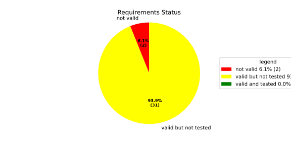
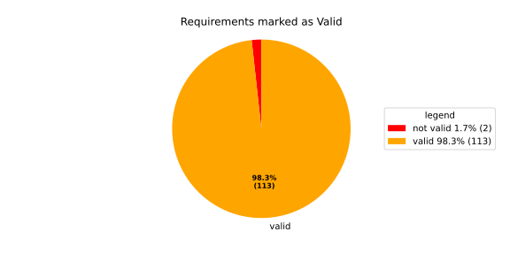
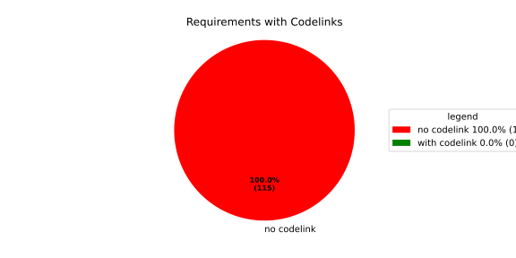

Verification Statistics#
Overview#

In Detail#


No needs passed the filters
Failed Tests
Hint: This table should be empty. Before a PR can be merged all tests have to be successful.
No needs passed the filters
Skipped / Disabled Tests
No needs passed the filters
All passed Tests#
No needs passed the filters
Details About Testcases#
No needs passed the filters
No needs passed the filters
Test Log Files#
tests-report/tests/integration/switch_run_target/switch_run_target/test.log
exec ${PAGER:-/usr/bin/less} "$0" || exit 1
Executing tests from //tests/integration/switch_run_target:switch_run_target
-----------------------------------------------------------------------------
============================= test session starts ==============================
platform linux -- Python 3.12.12, pytest-9.0.3, pluggy-1.5.0
rootdir: /home/runner/.bazel/sandbox/processwrapper-sandbox/912/execroot/_main/bazel-out/k8-fastbuild/bin/tests/integration/switch_run_target/switch_run_target.runfiles/score_itf+
configfile: pytest.ini
collected 1 item
../score_itf+::test_switch_run_target
-------------------------------- live log setup --------------------------------
[2026-06-16 08:19:05.023] [INFO] [score.itf.plugins.docker] Executing custom image bootstrap command: tests/utils/environments/x86_64-linux/x86_64-linux.sh
[2026-06-16 08:19:09.910] [DEBUG] [docker.utils.config] Trying paths: ['/home/runner/.docker/config.json', '/home/runner/.dockercfg']
[2026-06-16 08:19:09.910] [DEBUG] [docker.utils.config] Found file at path: /home/runner/.docker/config.json
[2026-06-16 08:19:09.910] [DEBUG] [docker.auth] Found 'auths' section
[2026-06-16 08:19:09.910] [DEBUG] [docker.auth] Found entry (registry='https://index.docker.io/v1/', username='githubactions')
[2026-06-16 08:19:09.921] [DEBUG] [urllib3.connectionpool] http://localhost:None "GET /version HTTP/1.1" 200 823
[2026-06-16 08:19:09.943] [DEBUG] [urllib3.connectionpool] http://localhost:None "POST /v1.48/containers/create HTTP/1.1" 201 88
[2026-06-16 08:19:09.946] [DEBUG] [urllib3.connectionpool] http://localhost:None "GET /v1.48/containers/40e433ba51f80d09cc6fc39942aec4de959f462c3e03b2da63560b89dac71335/json HTTP/1.1" 200 None
[2026-06-16 08:19:10.195] [DEBUG] [urllib3.connectionpool] http://localhost:None "POST /v1.48/containers/40e433ba51f80d09cc6fc39942aec4de959f462c3e03b2da63560b89dac71335/start HTTP/1.1" 204 0
[2026-06-16 08:19:10.196] [DEBUG] [docker.utils.config] Trying paths: ['/home/runner/.docker/config.json', '/home/runner/.dockercfg']
[2026-06-16 08:19:10.196] [DEBUG] [docker.utils.config] Found file at path: /home/runner/.docker/config.json
[2026-06-16 08:19:10.196] [DEBUG] [docker.auth] Found 'auths' section
[2026-06-16 08:19:10.196] [DEBUG] [docker.auth] Found entry (registry='https://index.docker.io/v1/', username='githubactions')
[2026-06-16 08:19:10.207] [DEBUG] [urllib3.connectionpool] http://localhost:None "GET /version HTTP/1.1" 200 823
[2026-06-16 08:19:10.482] [INFO] [tests.utils.testing_utils.setup_test] Test case setup finished
-------------------------------- live log call ---------------------------------
[2026-06-16 08:19:10.612] [INFO] [launch_manager] 2026/06/16 08:19:10.7950612 1593237 000 ECU1 LM LM log debug verbose 1
[2026-06-16 08:19:10.612] [INFO] [launch_manager] Launch Manager Started !!!!
[2026-06-16 08:19:10.626] [INFO] [launch_manager] 2026/06/16 08:19:10.7950612 1593239 000 ECU1 LM LM log debug verbose 1 Loading LCM Configurations...
[2026-06-16 08:19:10.626] [INFO] [launch_manager] 2026/06/16 08:19:10.7950612 1593239 000 ECU1 LM LM log debug verbose 1 ECUCFG_ENV_VAR_ROOTFOLDER set successfully
[2026-06-16 08:19:10.627] [INFO] [launch_manager] 2026/06/16 08:19:10.7950612 1593241 000 ECU1 LM LM log debug verbose 5 FlatBufferParser::getModeGroupPgName: MainPG ( IdentifierHash: 18079021346025578134 )
[2026-06-16 08:19:10.627] [INFO] [launch_manager] 2026/06/16 08:19:10.7950612 1593241 000 ECU1 LM LM log debug verbose 5 FlatBufferParser::getModeGroupPgStateName: MainPG/Startup ( IdentifierHash: 10504605499600661529 )
[2026-06-16 08:19:10.627] [INFO] [launch_manager] 2026/06/16 08:19:10.7950612 1593241 000 ECU1 LM LM log debug verbose 5 FlatBufferParser::getModeGroupPgStateName: MainPG/run_target_a ( IdentifierHash: 4535707649935996147 )
[2026-06-16 08:19:10.627] [INFO] [launch_manager] 2026/06/16 08:19:10.7950612 1593241 000 ECU1 LM LM log debug verbose 5 FlatBufferParser::getModeGroupPgStateName: MainPG/run_target_c ( IdentifierHash: 6199163020077258462 )
[2026-06-16 08:19:10.627] [INFO] [launch_manager] 2026/06/16 08:19:10.7950612 1593242 000 ECU1 LM LM log debug verbose 5 FlatBufferParser::getModeGroupPgStateName: MainPG/Off ( IdentifierHash: 15281793077830264047 )
[2026-06-16 08:19:10.627] [INFO] [launch_manager] 2026/06/16 08:19:10.7950612 1593242 000 ECU1 LM LM log debug verbose 5 FlatBufferParser::getModeGroupPgStateName: MainPG/fallback_run_target ( IdentifierHash: 4059409696722237352 )
[2026-06-16 08:19:10.627] [INFO] [launch_manager] 2026/06/16 08:19:10.7950612 1593242 000 ECU1 LM LM log debug verbose 4 parseProcessConfigurations: Process index: 0 executable_path_: /tmp/tests/switch_run_target/control_client_mock
[2026-06-16 08:19:10.627] [INFO] [launch_manager] 2026/06/16 08:19:10.7950612 1593243 000 ECU1 LM LM log debug verbose 3 Process component_initial is Reporting execution state
[2026-06-16 08:19:10.628] [INFO] [launch_manager] 2026/06/16 08:19:10.7950612 1593243 000 ECU1 LM LM log debug verbose 1 Process is STATE_MANAGEMENT function Cluster Affiliation
[2026-06-16 08:19:10.628] [INFO] [launch_manager] 2026/06/16 08:19:10.7950612 1593243 000 ECU1 LM LM log debug verbose 3 Process component_initial is NOT Self terminating
[2026-06-16 08:19:10.628] [INFO] [launch_manager] 2026/06/16 08:19:10.7950612 1593243 000 ECU1 LM LM log debug verbose 4 ParseProcessProcessGroup: id:::pg_name_: MainPG , pg_state_name_: MainPG/Startup
[2026-06-16 08:19:10.632] [INFO] [launch_manager] 2026/06/16 08:19:10.7950612 1593244 000 ECU1 LM LM log debug verbose 4 ParseProcessProcessGroup: id:::pg_name_: MainPG , pg_state_name_: MainPG/run_target_a
[2026-06-16 08:19:10.632] [INFO] [launch_manager] 2026/06/16 08:19:10.7950612 1593244 000 ECU1 LM LM log debug verbose 4 parseProcessConfigurations: Process index: 1 executable_path_: /tmp/tests/switch_run_target/component_a
[2026-06-16 08:19:10.632] [INFO] [launch_manager] 2026/06/16 08:19:10.7950612 1593244 000 ECU1 LM LM log debug verbose 3 Process component_a is Reporting execution state
[2026-06-16 08:19:10.633] [INFO] [launch_manager] 2026/06/16 08:19:10.7950612 1593244 000 ECU1 LM LM log debug verbose 1 Process is NOT associated with any function Cluster Affiliation
[2026-06-16 08:19:10.633] [INFO] [launch_manager] 2026/06/16 08:19:10.7950612 1593245 000 ECU1 LM LM log debug verbose 3 Process component_a is NOT Self terminating
[2026-06-16 08:19:10.633] [INFO] [launch_manager] 2026/06/16 08:19:10.7950612 1593245 000 ECU1 LM LM log debug verbose 4 ParseProcessExecutionDependency: target process path: component_b ID: component_b
[2026-06-16 08:19:10.633] [INFO] [launch_manager] 2026/06/16 08:19:10.7950613 1593245 000 ECU1 LM LM log debug verbose 4 ParseProcessProcessGroup: id:::pg_name_: MainPG , pg_state_name_: MainPG/run_target_a
[2026-06-16 08:19:10.633] [INFO] [launch_manager] 2026/06/16 08:19:10.7950613 1593246 000 ECU1 LM LM log debug verbose 4 parseProcessConfigurations: Process index: 2 executable_path_: /tmp/tests/switch_run_target/component_b
[2026-06-16 08:19:10.633] [INFO] [launch_manager] 2026/06/16 08:19:10.7950613 1593246 000 ECU1 LM LM log debug verbose 3 Process component_b is Reporting execution state
[2026-06-16 08:19:10.633] [INFO] [launch_manager] 2026/06/16 08:19:10.7950613 1593246 000 ECU1 LM LM log debug verbose 1 Process is NOT associated with any function Cluster Affiliation
[2026-06-16 08:19:10.633] [INFO] [launch_manager] 2026/06/16 08:19:10.7950613 1593246 000 ECU1 LM LM log debug verbose 3 Process component_b is NOT Self terminating
[2026-06-16 08:19:10.633] [INFO] [launch_manager] 2026/06/16 08:19:10.7950613 1593247 000 ECU1 LM LM log debug verbose 4 ParseProcessProcessGroup: id:::pg_name_: MainPG , pg_state_name_: MainPG/run_target_a
[2026-06-16 08:19:10.633] [INFO] [launch_manager] 2026/06/16 08:19:10.7950613 1593247 000 ECU1 LM LM log debug verbose 4 parseProcessConfigurations: Process index: 3 executable_path_: /tmp/tests/switch_run_target/reporting_process
[2026-06-16 08:19:10.634] [INFO] [launch_manager] 2026/06/16 08:19:10.7950613 1593247 000 ECU1 LM LM log debug verbose 3 Process component_e is Reporting execution state
[2026-06-16 08:19:10.634] [INFO] [launch_manager] 2026/06/16 08:19:10.7950613 1593247 000 ECU1 LM LM log debug verbose 1 Process is NOT associated with any function Cluster Affiliation
[2026-06-16 08:19:10.634] [INFO] [launch_manager] 2026/06/16 08:19:10.7950613 1593248 000 ECU1 LM LM log debug verbose 3 Process component_e is NOT Self terminating
[2026-06-16 08:19:10.635] [INFO] [launch_manager] 2026/06/16 08:19:10.7950613 1593248 000 ECU1 LM LM log debug verbose 4 parseProcessConfigurations: Process index: 4 executable_path_: /tmp/tests/switch_run_target/component_d
[2026-06-16 08:19:10.635] [INFO] [launch_manager] 2026/06/16 08:19:10.7950613 1593248 000 ECU1 LM LM log debug verbose 3 Process component_d is Reporting execution state
[2026-06-16 08:19:10.635] [INFO] [launch_manager] 2026/06/16 08:19:10.7950613 1593248 000 ECU1 LM LM log debug verbose 1 Process is NOT associated with any function Cluster Affiliation
[2026-06-16 08:19:10.635] [INFO] [launch_manager] 2026/06/16 08:19:10.7950613 1593249 000 ECU1 LM LM log debug verbose 3 Process component_d is NOT Self terminating
[2026-06-16 08:19:10.635] [INFO] [launch_manager] 2026/06/16 08:19:10.7950613 1593249 000 ECU1 LM LM log debug verbose 4 ParseProcessProcessGroup: id:::pg_name_: MainPG , pg_state_name_: MainPG/run_target_a
[2026-06-16 08:19:10.635] [INFO] [launch_manager] 2026/06/16 08:19:10.7950613 1593249 000 ECU1 LM LM log debug verbose 4 ParseProcessProcessGroup: id:::pg_name_: MainPG , pg_state_name_: MainPG/run_target_c
[2026-06-16 08:19:10.635] [INFO] [launch_manager] 2026/06/16 08:19:10.7950613 1593249 000 ECU1 LM LM log debug verbose 3 Loading SWCL Nr. 0 Succeeded
[2026-06-16 08:19:10.635] [INFO] [launch_manager] 2026/06/16 08:19:10.7950613 1593249 000 ECU1 LM LM log debug verbose 2 1 process group(s)
[2026-06-16 08:19:10.635] [INFO] [launch_manager] 2026/06/16 08:19:10.7950613 1593250 000 ECU1 LM LM log debug verbose 3 Creating graph with 4 nodes
[2026-06-16 08:19:10.635] [INFO] [launch_manager] 2026/06/16 08:19:10.7950613 1593250 000 ECU1 LM LM log debug verbose 1 Process groups initialized successfully
[2026-06-16 08:19:10.635] [INFO] [launch_manager] 2026/06/16 08:19:10.7950613 1593250 000 ECU1 LM LM log debug verbose 1 Process Group initialization done
[2026-06-16 08:19:10.636] [INFO] [launch_manager] 2026/06/16 08:19:10.7950613 1593250 000 ECU1 LM LM log debug verbose 3 Creating Safe Process Map with 4 entries
[2026-06-16 08:19:10.636] [INFO] [launch_manager] 2026/06/16 08:19:10.7950613 1593251 000 ECU1 LM LM log debug verbose 2 Creating job queue with capacity 1024
[2026-06-16 08:19:10.636] [INFO] [launch_manager] 2026/06/16 08:19:10.7950613 1593251 000 ECU1 LM LM log debug verbose 1 Creating worker threads...
[2026-06-16 08:19:10.636] [INFO] [launch_manager] 2026/06/16 08:19:10.7950615 1593265 000 ECU1 LM LM log debug verbose 7 Process group index 0 (with name MainPG ) has 4 processes
[2026-06-16 08:19:10.636] [INFO] [launch_manager] 2026/06/16 08:19:10.7950615 1593266 000 ECU1 LM LM log debug verbose 2 Creating process node with id: 0
[2026-06-16 08:19:10.636] [INFO] [launch_manager] 2026/06/16 08:19:10.7950615 1593266 000 ECU1 LM LM log debug verbose 5 Process 0 has 0 start dependencies
[2026-06-16 08:19:10.636] [INFO] [launch_manager] 2026/06/16 08:19:10.7950615 1593266 000 ECU1 LM LM log debug verbose 2 Creating process node with id: 1
[2026-06-16 08:19:10.638] [INFO] [launch_manager] 2026/06/16 08:19:10.7950615 1593266 000 ECU1 LM LM log debug verbose 5 Process 1 has 1 start dependencies
[2026-06-16 08:19:10.639] [INFO] [launch_manager] 2026/06/16 08:19:10.7950615 1593266 000 ECU1 LM LM log debug verbose 2 Creating process node with id: 2
[2026-06-16 08:19:10.639] [INFO] [launch_manager] 2026/06/16 08:19:10.7950615 1593267 000 ECU1 LM LM log debug verbose 5 Process 2 has 0 start dependencies
[2026-06-16 08:19:10.639] [INFO] [launch_manager] 2026/06/16 08:19:10.7950615 1593267 000 ECU1 LM LM log debug verbose 2 Creating process node with id: 3
[2026-06-16 08:19:10.639] [INFO] [launch_manager] 2026/06/16 08:19:10.7950615 1593267 000 ECU1 LM LM log debug verbose 5 Process 3 has 0 start dependencies
[2026-06-16 08:19:10.640] [INFO] [launch_manager] 2026/06/16 08:19:10.7950615 1593267 000 ECU1 LM LM log debug verbose 3 Created 4 process nodes
[2026-06-16 08:19:10.640] [INFO] [launch_manager] 2026/06/16 08:19:10.7950615 1593268 000 ECU1 LM LM log debug verbose 2 Creating successor lists for process group MainPG
[2026-06-16 08:19:10.640] [INFO] [launch_manager] 2026/06/16 08:19:10.7950615 1593268 000 ECU1 LM LM log debug verbose 4 Adding kRunning successor for process 2 : 1
[2026-06-16 08:19:10.640] [INFO] [launch_manager] 2026/06/16 08:19:10.7950615 1593268 000 ECU1 LM LM log debug verbose 4 Added successor node dependency: 2 -> 1
[2026-06-16 08:19:10.640] [INFO] [launch_manager] 2026/06/16 08:19:10.7950615 1593268 000 ECU1 LM LM log debug verbose 1 Graphs initialized
[2026-06-16 08:19:10.640] [INFO] [launch_manager] 2026/06/16 08:19:10.7950615 1593270 000 ECU1 LM Fcty log info verbose 2 Factory for FlatCfg MachineConfig: Loading of HM Machine Configuration succeeded.
[2026-06-16 08:19:10.640] [INFO] [launch_manager] 2026/06/16 08:19:10.7950615 1593270 000 ECU1 LM Fcty log debug verbose 3 Factory for FlatCfg MachineConfig: Alive Supervision buffer size: 100
[2026-06-16 08:19:10.640] [INFO] [launch_manager] 2026/06/16 08:19:10.7950615 1593271 000 ECU1 LM Fcty log debug verbose 3 Factory for FlatCfg MachineConfig: Monitor buffer size: 512
[2026-06-16 08:19:10.640] [INFO] [launch_manager] 2026/06/16 08:19:10.7950615 1593271 000 ECU1 LM Fcty log debug verbose 4 Factory for FlatCfg MachineConfig: Periodicity: 50000000 ns
[2026-06-16 08:19:10.640] [INFO] [launch_manager] 2026/06/16 08:19:10.7950615 1593271 000 ECU1 LM Fcty log debug verbose 3 Factory for FlatCfg MachineConfig: Configured watchdogs: 0
[2026-06-16 08:19:10.641] [INFO] [launch_manager] 2026/06/16 08:19:10.7950615 1593271 000 ECU1 LM Fcty log warn verbose 2 Factory for FlatCfg MachineConfig: No watchdog configured
[2026-06-16 08:19:10.641] [INFO] [launch_manager] 2026/06/16 08:19:10.7950615 1593272 000 ECU1 LM Fcty log debug verbose 2 Software Cluster Handler starts constructing workers: MainCluster
[2026-06-16 08:19:10.641] [INFO] [launch_manager] 2026/06/16 08:19:10.7950615 1593272 000 ECU1 LM Fcty log debug verbose 3 Factory for FlatCfg AR24-11: Successfully created Process States: component_initial
[2026-06-16 08:19:10.641] [INFO] [launch_manager] 2026/06/16 08:19:10.7950615 1593272 000 ECU1 LM Fcty log debug verbose 3 Factory for FlatCfg AR24-11: Number of constructed Process States: 1
[2026-06-16 08:19:10.641] [INFO] [launch_manager] 2026/06/16 08:19:10.7950615 1593273 000 ECU1 LM Fcty log debug verbose 3 Factory for FlatCfg AR24-11: Successfully created Monitor interface IPC with path: lifecycle_health_component_initial
[2026-06-16 08:19:10.641] [INFO] [launch_manager] 2026/06/16 08:19:10.7950615 1593273 000 ECU1 LM Fcty log debug verbose 3 Factory for FlatCfg AR24-11: Number of constructed Monitor interface IPCs: 1
[2026-06-16 08:19:10.641] [INFO] [launch_manager] 2026/06/16 08:19:10.7950615 1593274 000 ECU1 LM Fcty log debug verbose 3 Factory for FlatCfg AR24-11: Successfully created MonitorInterface: /lifecycle_health_component_initial
[2026-06-16 08:19:10.641] [INFO] [launch_manager] 2026/06/16 08:19:10.7950615 1593274 000 ECU1 LM Fcty log debug verbose 3 Factory for FlatCfg AR24-11: Number of constructed Monitor interfaces: 1
[2026-06-16 08:19:10.641] [INFO] [launch_manager] 2026/06/16 08:19:10.7950615 1593274 000 ECU1 LM Fcty log debug verbose 3 Factory for FlatCfg AR24-11: Successfully created supervision checkpoint: component_initial_checkpoint
[2026-06-16 08:19:10.641] [INFO] [launch_manager] 2026/06/16 08:19:10.7950615 1593274 000 ECU1 LM Fcty log debug verbose 3 Factory for FlatCfg AR24-11: Number of constructed supervision checkpoints: 1
[2026-06-16 08:19:10.642] [INFO] [launch_manager] 2026/06/16 08:19:10.7950615 1593274 000 ECU1 LM Fcty log debug verbose 3 Factory for FlatCfg AR24-11: Successfully created alive supervision worker object: component_initial_alive_supervision
[2026-06-16 08:19:10.642] [INFO] [launch_manager] 2026/06/16 08:19:10.7950615 1593275 000 ECU1 LM Fcty log debug verbose 3 Factory for FlatCfg AR24-11: Number of constructed alive supervisions: 1
[2026-06-16 08:19:10.642] [INFO] [launch_manager] 2026/06/16 08:19:10.7950615 1593275 000 ECU1 LM Fcty log info verbose 2 Phm Daemon: The (configured) periodicity in [ns] is set to: 50000000
[2026-06-16 08:19:10.642] [INFO] [launch_manager] 2026/06/16 08:19:10.7950615 1593275 000 ECU1 LM Fcty log debug verbose 2 Phm Daemon: The accuracy of the monotonic system clock in [ns] is: 1
[2026-06-16 08:19:10.642] [INFO] [launch_manager] 2026/06/16 08:19:10.7950616 1593275 000 ECU1 LM Fcty log debug verbose 3 HealthMonitor: Initialization took 0 ms
[2026-06-16 08:19:10.642] [INFO] [launch_manager] 2026/06/16 08:19:10.7950616 1593276 000 ECU1 LM LM log info verbose 1 LCM started successfully
[2026-06-16 08:19:10.642] [INFO] [launch_manager] 2026/06/16 08:19:10.7950616 1593276 000 ECU1 LM LM log debug verbose 3 clock() at run(): 38.820000 ms
[2026-06-16 08:19:10.642] [INFO] [launch_manager] 2026/06/16 08:19:10.7950616 1593277 000 ECU1 LM LM log debug verbose 1 =============STARTING MAINPG STARTUP STATE============
[2026-06-16 08:19:10.643] [INFO] [launch_manager] 2026/06/16 08:19:10.7950616 1593277 000 ECU1 LM LM log debug verbose 9 Graph::setState changes from kSuccess to kInTransition for PG 0 ( MainPG )
[2026-06-16 08:19:10.643] [INFO] [launch_manager] 2026/06/16 08:19:10.7950616 1593277 000 ECU1 LM LM log debug verbose 2 Stop Dependencies: 0
[2026-06-16 08:19:10.643] [INFO] [launch_manager] 2026/06/16 08:19:10.7950616 1593278 000 ECU1 LM LM log debug verbose 2 Stop Dependencies: 0
[2026-06-16 08:19:10.645] [INFO] [launch_manager] 2026/06/16 08:19:10.7950616 1593278 000 ECU1 LM LM log debug verbose 2 Stop Dependencies: 0
[2026-06-16 08:19:10.645] [INFO] [launch_manager] 2026/06/16 08:19:10.7950616 1593278 000 ECU1 LM LM log debug verbose 2 Stop Dependencies: 0
[2026-06-16 08:19:10.645] [INFO] [launch_manager] 2026/06/16 08:19:10.7950616 1593278 000 ECU1 LM LM log debug verbose 2 Start Dependencies: 0
[2026-06-16 08:19:10.645] [INFO] [launch_manager] 2026/06/16 08:19:10.7950616 1593278 000 ECU1 LM LM log debug verbose 2 Start Dependencies: 1
[2026-06-16 08:19:10.645] [INFO] [launch_manager] 2026/06/16 08:19:10.7950616 1593278 000 ECU1 LM LM log debug verbose 2 Start Dependencies: 0
[2026-06-16 08:19:10.645] [INFO] [launch_manager] 2026/06/16 08:19:10.7950616 1593278 000 ECU1 LM LM log debug verbose 2 Start Dependencies: 0
[2026-06-16 08:19:10.645] [INFO] [launch_manager] 2026/06/16 08:19:10.7950616 1593279 000 ECU1 LM LM log debug verbose 6 Starting process 0 ( component_initial ) from executable /tmp/tests/switch_run_target/control_client_mock
[2026-06-16 08:19:10.645] [INFO] [launch_manager] 2026/06/16 08:19:10.7950616 1593280 000 ECU1 LM LM log debug verbose 3 Initialize the control client for component_initial process
[2026-06-16 08:19:10.646] [INFO] [launch_manager] 2026/06/16 08:19:10.7950616 1593280 000 ECU1 LM LM log debug verbose 1 ControlClientChannel initialized
[2026-06-16 08:19:10.646] [INFO] [launch_manager] 2026/06/16 08:19:10.7950616 1593284 000 ECU1 LM LM log debug verbose 4 startProcess pid 67 received for process: component_initial
[2026-06-16 08:19:10.646] [INFO] [launch_manager] 2026/06/16 08:19:10.7950616 1593284 000 ECU1 LM LM log debug verbose 1 ControlClientChannel obtained from sync.
[2026-06-16 08:19:10.646] [INFO] [launch_manager] [==========] Running 1 test from 1 test suite.
[2026-06-16 08:19:10.646] [INFO] [launch_manager] [----------] Global test environment set-up.
[2026-06-16 08:19:10.646] [INFO] [launch_manager] [----------] 1 test from SwitchRunTarget
[2026-06-16 08:19:10.646] [INFO] [launch_manager] [ RUN ] SwitchRunTarget.ControlClientMock
[2026-06-16 08:19:10.646] [INFO] [launch_manager] [ STEP ] Report kRunning
[2026-06-16 08:19:10.646] [INFO] [launch_manager] [ END STEP ] Report kRunning
[2026-06-16 08:19:10.647] [INFO] [launch_manager] [ STEP ] Activate run target A
[2026-06-16 08:19:10.647] [INFO] [launch_manager] 2026/06/16 08:19:10.7950621 1593336 000 ECU1 LM LM log debug verbose 1 Request sent. Waiting for acknowledgment...
[2026-06-16 08:19:10.647] [INFO] [launch_manager] 2026/06/16 08:19:10.7950622 1593341 000 ECU1 LM LM log debug verbose 8 ProcessGroupManager::ControlClientHandler: got request kSetStateRequest ( 16 ) re state MainPG/run_target_a of PG MainPG
[2026-06-16 08:19:10.647] [INFO] [launch_manager] 2026/06/16 08:19:10.7950622 1593342 000 ECU1 LM LM log debug verbose 6 Pending state for process group MainPG changed from to MainPG/run_target_a
[2026-06-16 08:19:10.647] [INFO] [launch_manager] 2026/06/16 08:19:10.7950622 1593342 000 ECU1 LM LM log debug verbose 9 Graph::setState changes from kInTransition to kCancelled for PG 0 ( MainPG )
[2026-06-16 08:19:10.650] [INFO] [launch_manager] 2026/06/16 08:19:10.7950622 1593342 000 ECU1 LM LM log debug verbose 1 Control Client handler nudged
[2026-06-16 08:19:10.650] [INFO] [launch_manager] 2026/06/16 08:19:10.7950622 1593343 000 ECU1 LM LM log debug verbose 1 Request acknowledged.
[2026-06-16 08:19:10.651] [INFO] [launch_manager] 2026/06/16 08:19:10.7950622 1593344 000 ECU1 LM LM log debug verbose 1 Request acknowledged.
[2026-06-16 08:19:10.651] [INFO] [launch_manager] 2026/06/16 08:19:10.7950623 1593348 000 ECU1 LM LM log debug verbose 8 Got kRunning for pid 67 ( component_initial ) process 0 of group MainPG
[2026-06-16 08:19:10.651] [INFO] [launch_manager] 2026/06/16 08:19:10.7950623 1593348 000 ECU1 LM LM log debug verbose 7 startProcess for MainPG process 0 ( component_initial ) done
[2026-06-16 08:19:10.651] [INFO] [launch_manager] 2026/06/16 08:19:10.7950623 1593348 000 ECU1 LM LM log debug verbose 1 Control Client handler nudged
[2026-06-16 08:19:10.652] [INFO] [launch_manager] 2026/06/16 08:19:10.7950623 1593349 000 ECU1 LM LM log fatal verbose 3 clock() at failed initial state transition: 40.114000 ms
[2026-06-16 08:19:10.652] [INFO] [launch_manager] 2026/06/16 08:19:10.7950623 1593349 000 ECU1 LM LM log debug verbose 9 Graph::setState changes from kCancelled to kUndefinedState for PG 0 ( MainPG )
[2026-06-16 08:19:10.652] [INFO] [launch_manager] 2026/06/16 08:19:10.7950623 1593349 000 ECU1 LM LM log debug verbose 1 Control Client handler nudged
[2026-06-16 08:19:10.652] [INFO] [launch_manager] 2026/06/16 08:19:10.7950624 1593364 000 ECU1 LM LM log debug verbose 6 Pending state for process group MainPG changed from MainPG/run_target_a to
[2026-06-16 08:19:10.652] [INFO] [launch_manager] 2026/06/16 08:19:10.7950624 1593364 000 ECU1 LM LM log debug verbose 4 Start transition to MainPG/run_target_a for PG MainPG
[2026-06-16 08:19:10.652] [INFO] [launch_manager] 2026/06/16 08:19:10.7950624 1593364 000 ECU1 LM LM log debug verbose 9 Graph::setState changes from kUndefinedState to kInTransition for PG 0 ( MainPG )
[2026-06-16 08:19:10.652] [INFO] [launch_manager] 2026/06/16 08:19:10.7950624 1593364 000 ECU1 LM LM log debug verbose 2 Stop Dependencies: 0
[2026-06-16 08:19:10.652] [INFO] [launch_manager] 2026/06/16 08:19:10.7950624 1593364 000 ECU1 LM LM log debug verbose 2 Stop Dependencies: 0
[2026-06-16 08:19:10.652] [INFO] [launch_manager] 2026/06/16 08:19:10.7950624 1593365 000 ECU1 LM LM log debug verbose 2 Stop Dependencies: 0
[2026-06-16 08:19:10.652] [INFO] [launch_manager] 2026/06/16 08:19:10.7950624 1593365 000 ECU1 LM LM log debug verbose 2 Stop Dependencies: 0
[2026-06-16 08:19:10.652] [INFO] [launch_manager] 2026/06/16 08:19:10.7950624 1593365 000 ECU1 LM LM log debug verbose 2 Start Dependencies: 0
[2026-06-16 08:19:10.652] [INFO] [launch_manager] 2026/06/16 08:19:10.7950624 1593365 000 ECU1 LM LM log debug verbose 2 Start Dependencies: 1
[2026-06-16 08:19:10.652] [INFO] [launch_manager] 2026/06/16 08:19:10.7950625 1593365 000 ECU1 LM LM log debug verbose 2 Start Dependencies: 0
[2026-06-16 08:19:10.652] [INFO] [launch_manager] 2026/06/16 08:19:10.7950625 1593365 000 ECU1 LM LM log debug verbose 2 Start Dependencies: 0
[2026-06-16 08:19:10.653] [INFO] [launch_manager] 2026/06/16 08:19:10.7950625 1593366 000 ECU1 LM LM log debug verbose 6 Starting process 2 ( component_b ) from executable /tmp/tests/switch_run_target/component_b
[2026-06-16 08:19:10.653] [INFO] [launch_manager] 2026/06/16 08:19:10.7950625 1593367 000 ECU1 LM LM log debug verbose 6 Starting process 3 ( component_d ) from executable /tmp/tests/switch_run_target/component_d
[2026-06-16 08:19:10.653] [INFO] [launch_manager] 2026/06/16 08:19:10.7950627 1593389 000 ECU1 LM LM log debug verbose 4 startProcess pid 69 received for process: component_d
[2026-06-16 08:19:10.653] [INFO] [launch_manager] 2026/06/16 08:19:10.7950628 1593404 000 ECU1 LM LM log debug verbose 4 startProcess pid 70 received for process: component_b
[2026-06-16 08:19:10.653] [INFO] [launch_manager] [==========] Running 1 test from 1 test suite.
[2026-06-16 08:19:10.653] [INFO] [launch_manager] [----------] Global test environment set-up.
[2026-06-16 08:19:10.653] [INFO] [launch_manager] [----------] 1 test from ComponentD
[2026-06-16 08:19:10.653] [INFO] [launch_manager] [ RUN ] ComponentD.RunAndVerify
[2026-06-16 08:19:10.653] [INFO] [launch_manager] [ STEP ] Report running
[2026-06-16 08:19:10.653] [INFO] [launch_manager] [==========] Running 1 test from 1 test suite.
[2026-06-16 08:19:10.653] [INFO] [launch_manager] [----------] Global test environment set-up.
[2026-06-16 08:19:10.653] [INFO] [launch_manager] [----------] 1 test from ComponentB
[2026-06-16 08:19:10.653] [INFO] [launch_manager] [ RUN ] ComponentB.RunAndVerify
[2026-06-16 08:19:10.654] [INFO] [launch_manager] [ STEP ] Verify startup order
[2026-06-16 08:19:10.654] [INFO] [launch_manager] [ END STEP ] Verify startup order
[2026-06-16 08:19:10.654] [INFO] [launch_manager] [ STEP ] Report running
[2026-06-16 08:19:10.654] [INFO] [launch_manager] [ END STEP ] Report running
[2026-06-16 08:19:10.654] [INFO] [launch_manager] [ END STEP ] Report running
[2026-06-16 08:19:10.654] [INFO] [launch_manager] 2026/06/16 08:19:10.7950633 1593446 000 ECU1 LM LM log debug verbose 8 Got kRunning for pid 69 ( component_d ) process 3 of group MainPG
[2026-06-16 08:19:10.654] [INFO] [launch_manager] 2026/06/16 08:19:10.7950633 1593447 000 ECU1 LM LM log debug verbose 7 startProcess for MainPG process 3 ( component_d ) done
[2026-06-16 08:19:10.654] [INFO] [launch_manager] 2026/06/16 08:19:10.7950633 1593448 000 ECU1 LM LM log debug verbose 8 Got kRunning for pid 70 ( component_b ) process 2 of group MainPG
[2026-06-16 08:19:10.654] [INFO] [launch_manager] 2026/06/16 08:19:10.7950633 1593449 000 ECU1 LM LM log debug verbose 7 startProcess for MainPG process 2 ( component_b ) done
[2026-06-16 08:19:10.655] [INFO] [launch_manager] 2026/06/16 08:19:10.7950633 1593449 000 ECU1 LM LM log debug verbose 6 Starting process 1 ( component_a ) from executable /tmp/tests/switch_run_target/component_a
[2026-06-16 08:19:10.655] [INFO] [launch_manager] 2026/06/16 08:19:10.7950634 1593455 000 ECU1 LM LM log debug verbose 4 startProcess pid 71 received for process: component_a
[2026-06-16 08:19:10.655] [INFO] [launch_manager] [==========] Running 1 test from 1 test suite.
[2026-06-16 08:19:10.655] [INFO] [launch_manager] [----------] Global test environment set-up.
[2026-06-16 08:19:10.655] [INFO] [launch_manager] [----------] 1 test from ComponentA
[2026-06-16 08:19:10.655] [INFO] [launch_manager] [ RUN ] ComponentA.RunAndVerify
[2026-06-16 08:19:10.656] [INFO] [launch_manager] [ STEP ] Report running
[2026-06-16 08:19:10.656] [INFO] [launch_manager] [ END STEP ] Report running
[2026-06-16 08:19:10.656] [INFO] [launch_manager] [ STEP ] Verify startup order
[2026-06-16 08:19:10.656] [INFO] [launch_manager] [ END STEP ] Verify startup order
[2026-06-16 08:19:10.656] [INFO] [launch_manager] 2026/06/16 08:19:10.7950646 1593584 000 ECU1 LM LM log debug verbose 8 Got kRunning for pid 71 ( component_a ) process 1 of group MainPG
[2026-06-16 08:19:10.657] [INFO] [launch_manager] 2026/06/16 08:19:10.7950647 1593586 000 ECU1 LM LM log debug verbose 7 startProcess for MainPG process 1 ( component_a ) done
[2026-06-16 08:19:10.657] [INFO] [launch_manager] 2026/06/16 08:19:10.7950647 1593588 000 ECU1 LM LM log debug verbose 9 Graph::setState changes from kInTransition to kSuccess for PG 0 ( MainPG )
[2026-06-16 08:19:10.657] [INFO] [launch_manager] 2026/06/16 08:19:10.7950647 1593589 000 ECU1 LM LM log info verbose 7 Completed the request for PG MainPG to State MainPG/run_target_a in 24 ms
[2026-06-16 08:19:10.657] [INFO] [launch_manager] 2026/06/16 08:19:10.7950647 1593590 000 ECU1 LM LM log debug verbose 1 Control Client handler nudged
[2026-06-16 08:19:10.657] [INFO] [launch_manager] 2026/06/16 08:19:10.7950649 1593611 000 ECU1 LM LM log debug verbose 8 ProcessGroupManager::ControlClientHandler: Sending kSetStateSuccess ( 20 ) re state MainPG/run_target_a of PG MainPG
[2026-06-16 08:19:10.657] [INFO] [launch_manager] 2026/06/16 08:19:10.7950649 1593612 000 ECU1 LM LM log debug verbose 1 Response sent.
[2026-06-16 08:19:10.668] [INFO] [launch_manager] 2026/06/16 08:19:10.7950666 1593777 000 ECU1 LM Sprv log debug verbose 6 Process with Id component_initial changed state PG MainPG/Startup PS 1
[2026-06-16 08:19:10.669] [INFO] [launch_manager] 2026/06/16 08:19:10.7950666 1593778 000 ECU1 LM Sprv log debug verbose 6 Process with Id component_initial changed state PG MainPG/Startup PS 2
[2026-06-16 08:19:10.669] [INFO] [launch_manager] 2026/06/16 08:19:10.7950666 1593779 000 ECU1 LM Sprv log debug verbose 6 Process with Id component_d changed state PG MainPG/run_target_a PS 1
[2026-06-16 08:19:10.669] [INFO] [launch_manager] 2026/06/16 08:19:10.7950666 1593779 000 ECU1 LM Sprv log debug verbose 6 Process with Id component_b changed state PG MainPG/run_target_a PS 1
[2026-06-16 08:19:10.669] [INFO] [launch_manager] 2026/06/16 08:19:10.7950666 1593780 000 ECU1 LM Sprv log debug verbose 6 Process with Id component_d changed state PG MainPG/run_target_a PS 2
[2026-06-16 08:19:10.669] [INFO] [launch_manager] 2026/06/16 08:19:10.7950666 1593781 000 ECU1 LM Sprv log debug verbose 6 Process with Id component_b changed state PG MainPG/run_target_a PS 2
[2026-06-16 08:19:10.669] [INFO] [launch_manager] 2026/06/16 08:19:10.7950666 1593781 000 ECU1 LM Sprv log debug verbose 6 Process with Id component_a changed state PG MainPG/run_target_a PS 1
[2026-06-16 08:19:10.669] [INFO] [launch_manager] 2026/06/16 08:19:10.7950666 1593782 000 ECU1 LM Sprv log debug verbose 6 Process with Id component_a changed state PG MainPG/run_target_a PS 2
[2026-06-16 08:19:10.669] [INFO] [launch_manager] 2026/06/16 08:19:10.7950666 1593782 000 ECU1 LM Sprv log info verbose 3 Alive Supervision ( component_initial_alive_supervision ) switched to OK.
[2026-06-16 08:19:10.698] [DEBUG] [tests.utils.testing_utils.run_until_file_deployed] Waiting for /tmp/tests/test_end
[2026-06-16 08:19:10.719] [INFO] [launch_manager] 2026/06/16 08:19:10.7950719 1594311 000 ECU1 LM LM log debug verbose 1 Response retrieved.
[2026-06-16 08:19:10.720] [INFO] [launch_manager] [ END STEP ] Activate run target A
[2026-06-16 08:19:10.720] [INFO] [launch_manager] [ STEP ] Verify running processes
[2026-06-16 08:19:10.720] [INFO] [launch_manager] [ END STEP ] Verify running processes
[2026-06-16 08:19:10.720] [INFO] [launch_manager] [ STEP ] Activate RunTarget Startup
[2026-06-16 08:19:10.720] [INFO] [launch_manager] 2026/06/16 08:19:10.7950719 1594312 000 ECU1 LM LM log debug verbose 1 Request sent. Waiting for acknowledgment...
[2026-06-16 08:19:10.720] [INFO] [launch_manager] 2026/06/16 08:19:10.7950720 1594319 000 ECU1 LM LM log debug verbose 8 ProcessGroupManager::ControlClientHandler: got request kSetStateRequest ( 16 ) re state MainPG/Startup of PG MainPG
[2026-06-16 08:19:10.721] [INFO] [launch_manager] 2026/06/16 08:19:10.7950720 1594320 000 ECU1 LM LM log debug verbose 6 Pending state for process group MainPG changed from to MainPG/Startup
[2026-06-16 08:19:10.722] [INFO] [launch_manager] 2026/06/16 08:19:10.7950720 1594320 000 ECU1 LM LM log debug verbose 1 Request acknowledged.
[2026-06-16 08:19:10.722] [INFO] [launch_manager] 2026/06/16 08:19:10.7950720 1594321 000 ECU1 LM LM log debug verbose 6 Pending state for process group MainPG changed from MainPG/Startup to
[2026-06-16 08:19:10.722] [INFO] [launch_manager] 2026/06/16 08:19:10.7950720 1594321 000 ECU1 LM LM log debug verbose 4 Start transition to MainPG/Startup for PG MainPG
[2026-06-16 08:19:10.722] [INFO] [launch_manager] 2026/06/16 08:19:10.7950720 1594321 000 ECU1 LM LM log debug verbose 9 Graph::setState changes from kSuccess to kInTransition for PG 0 ( MainPG )
[2026-06-16 08:19:10.722] [INFO] [launch_manager] 2026/06/16 08:19:10.7950720 1594321 000 ECU1 LM LM log debug verbose 2 Stop Dependencies: 0
[2026-06-16 08:19:10.722] [INFO] [launch_manager] 2026/06/16 08:19:10.7950720 1594321 000 ECU1 LM LM log debug verbose 2 Stop Dependencies: 0
[2026-06-16 08:19:10.722] [INFO] [launch_manager] 2026/06/16 08:19:10.7950720 1594322 000 ECU1 LM LM log debug verbose 2 Stop Dependencies: 1
[2026-06-16 08:19:10.722] [INFO] [launch_manager] 2026/06/16 08:19:10.7950720 1594322 000 ECU1 LM LM log debug verbose 2 Stop Dependencies: 0
[2026-06-16 08:19:10.722] [INFO] [launch_manager] 2026/06/16 08:19:10.7950720 1594323 000 ECU1 LM LM log debug verbose 5 terminating process 1 ( component_a )
[2026-06-16 08:19:10.723] [INFO] [launch_manager] 2026/06/16 08:19:10.7950720 1594323 000 ECU1 LM LM log debug verbose 9 Requesting termination of process 1 of MainPG pid 71 ( component_a )
[2026-06-16 08:19:10.723] [INFO] [launch_manager] 2026/06/16 08:19:10.7950720 1594323 000 ECU1 LM LM log debug verbose 2 Request termination received for 71
[2026-06-16 08:19:10.723] [INFO] [launch_manager] 2026/06/16 08:19:10.7950720 1594323 000 ECU1 LM LM log debug verbose 1 Request acknowledged.
[2026-06-16 08:19:10.723] [INFO] [launch_manager] [ STEP ] Verify termination order
[2026-06-16 08:19:10.723] [INFO] [launch_manager] [ END STEP ] Verify termination order
[2026-06-16 08:19:10.723] [INFO] [launch_manager] 2026/06/16 08:19:10.7950720 1594324 000 ECU1 LM LM log debug verbose 5 terminating process 3 ( component_d )
[2026-06-16 08:19:10.723] [INFO] [launch_manager] 2026/06/16 08:19:10.7950720 1594324 000 ECU1 LM LM log debug verbose 9 Requesting termination of process 3 of MainPG pid 69 ( component_d )
[2026-06-16 08:19:10.723] [INFO] [launch_manager] 2026/06/16 08:19:10.7950720 1594325 000 ECU1 LM LM log debug verbose 2 Request termination received for 69
[2026-06-16 08:19:10.723] [INFO] [launch_manager] [ OK ] ComponentA.RunAndVerify (77 ms)
[2026-06-16 08:19:10.723] [INFO] [launch_manager] [----------] 1 test from ComponentA (77 ms total)
[2026-06-16 08:19:10.724] [INFO] [launch_manager] [----------] Global test environment tear-down
[2026-06-16 08:19:10.724] [INFO] [launch_manager] [ OK ] ComponentD.RunAndVerify (91 ms)
[2026-06-16 08:19:10.724] [INFO] [launch_manager] [----------] 1 test from ComponentD (92 ms total)
[2026-06-16 08:19:10.724] [INFO] [launch_manager] [----------] Global test environment tear-down
[2026-06-16 08:19:10.724] [INFO] [launch_manager] [==========] 1 test from 1 test suite ran. (92 ms total)
[2026-06-16 08:19:10.724] [INFO] [launch_manager] [ PASSED ] 1 test.
[2026-06-16 08:19:10.724] [INFO] [launch_manager] [==========] 1 test from 1 test suite ran. (78 ms total)
[2026-06-16 08:19:10.724] [INFO] [launch_manager] [ PASSED ] 1 test.
[2026-06-16 08:19:10.724] [INFO] [launch_manager] 2026/06/16 08:19:10.7950721 1594332 000 ECU1 LM LM log debug verbose 12 Child process 3 of MainPG pid 69 ( component_d ) for node True terminated with status 0
[2026-06-16 08:19:10.724] [INFO] [launch_manager] 2026/06/16 08:19:10.7950721 1594333 000 ECU1 LM LM log debug verbose 12 Child process 1 of MainPG pid 71 ( component_a ) for node True terminated with status 0
[2026-06-16 08:19:10.724] [INFO] [launch_manager] 2026/06/16 08:19:10.7950722 1594344 000 ECU1 LM LM log debug verbose 5 Queuing jobs after regular termination of process wait 1 ( component_a )
[2026-06-16 08:19:10.724] [INFO] [launch_manager] 2026/06/16 08:19:10.7950722 1594345 000 ECU1 LM LM log debug verbose 5 terminating process 2 ( component_b )
[2026-06-16 08:19:10.725] [INFO] [launch_manager] 2026/06/16 08:19:10.7950723 1594345 000 ECU1 LM LM log debug verbose 9 Requesting termination of process 2 of MainPG pid 70 ( component_b )
[2026-06-16 08:19:10.725] [INFO] [launch_manager] 2026/06/16 08:19:10.7950723 1594346 000 ECU1 LM LM log debug verbose 2 Request termination received for 70
[2026-06-16 08:19:10.725] [INFO] [launch_manager] 2026/06/16 08:19:10.7950723 1594346 000 ECU1 LM LM log debug verbose 7
[2026-06-16 08:19:10.725] [INFO] [launch_manager] terminateProcess for MainPG process 1 ( component_a ) done
[2026-06-16 08:19:10.725] [INFO] [launch_manager] [ STEP ] Verify termination order
[2026-06-16 08:19:10.725] [INFO] [launch_manager] [ END STEP ] Verify termination order
[2026-06-16 08:19:10.725] [INFO] [launch_manager] [ OK ] ComponentB.RunAndVerify (92 ms)
[2026-06-16 08:19:10.725] [INFO] [launch_manager] [----------] 1 test from ComponentB (92 ms total)
[2026-06-16 08:19:10.725] [INFO] [launch_manager] [----------] Global test environment tear-down
[2026-06-16 08:19:10.725] [INFO] [launch_manager] 2026/06/16 08:19:10.7950723 1594351 000 ECU1 LM LM log debug verbose 5 Queuing jobs after regular termination of process wait 3 ( component_d )
[2026-06-16 08:19:10.725] [INFO] [launch_manager] 2026/06/16 08:19:10.7950723 1594352 000 ECU1 LM LM log debug verbose 7 terminateProcess for MainPG process 3 ( component_d ) done
[2026-06-16 08:19:10.726] [INFO] [launch_manager] [==========] 1 test from 1 test suite ran. (92 ms total)
[2026-06-16 08:19:10.726] [INFO] [launch_manager] [ PASSED ] 1 test.
[2026-06-16 08:19:10.726] [INFO] [launch_manager] 2026/06/16 08:19:10.7950724 1594357 000 ECU1 LM LM log debug verbose 12
[2026-06-16 08:19:10.726] [INFO] [launch_manager] Child process 2 of MainPG pid 70 ( component_b ) for node True terminated with status 0
[2026-06-16 08:19:10.726] [INFO] [launch_manager] 2026/06/16 08:19:10.7950725 1594367 000 ECU1 LM LM log debug verbose 5 Queuing jobs after regular termination of process wait 2 ( component_b )
[2026-06-16 08:19:10.726] [INFO] [launch_manager] 2026/06/16 08:19:10.7950725 1594367 000 ECU1 LM LM log debug verbose 7 terminateProcess for MainPG process 2 ( component_b ) done
[2026-06-16 08:19:10.726] [INFO] [launch_manager] 2026/06/16 08:19:10.7950725 1594367 000 ECU1 LM LM log debug verbose 2 Start Dependencies: 0
[2026-06-16 08:19:10.726] [INFO] [launch_manager] 2026/06/16 08:19:10.7950725 1594367 000 ECU1 LM LM log debug verbose 2 Start Dependencies: 1
[2026-06-16 08:19:10.726] [INFO] [launch_manager] 2026/06/16 08:19:10.7950725 1594368 000 ECU1 LM LM log debug verbose 2 Start Dependencies: 0
[2026-06-16 08:19:10.726] [INFO] [launch_manager] 2026/06/16 08:19:10.7950725 1594368 000 ECU1 LM LM log debug verbose 2 Start Dependencies: 0
[2026-06-16 08:19:10.726] [INFO] [launch_manager] 2026/06/16 08:19:10.7950725 1594368 000 ECU1 LM LM log debug verbose 9 Graph::setState changes from kInTransition to kSuccess for PG 0 ( MainPG )
[2026-06-16 08:19:10.726] [INFO] [launch_manager] 2026/06/16 08:19:10.7950725 1594368 000 ECU1 LM LM log info verbose 7 Completed the request for PG MainPG to State MainPG/Startup in 4 ms
[2026-06-16 08:19:10.727] [INFO] [launch_manager] 2026/06/16 08:19:10.7950725 1594368 000 ECU1 LM LM log debug verbose 1 Control Client handler nudged
[2026-06-16 08:19:10.727] [INFO] [launch_manager] 2026/06/16 08:19:10.7950727 1594386 000 ECU1 LM LM log debug verbose 8 ProcessGroupManager::ControlClientHandler: Sending kSetStateSuccess ( 20 ) re state MainPG/Startup of PG MainPG
[2026-06-16 08:19:10.727] [INFO] [launch_manager] 2026/06/16 08:19:10.7950727 1594386 000 ECU1 LM LM log debug verbose 1 Response sent.
[2026-06-16 08:19:10.766] [INFO] [launch_manager] 2026/06/16 08:19:10.7950766 1594777 000 ECU1 LM Sprv log debug verbose 6 Process with Id component_a changed state PG MainPG/Startup PS 3
[2026-06-16 08:19:10.766] [INFO] [launch_manager] 2026/06/16 08:19:10.7950766 1594777 000 ECU1 LM Sprv log debug verbose 6 Process with Id component_d changed state PG MainPG/Startup PS 3
[2026-06-16 08:19:10.766] [INFO] [launch_manager] 2026/06/16 08:19:10.7950766 1594777 000 ECU1 LM Sprv log debug verbose 6 Process with Id component_d changed state PG MainPG/Startup PS 4
[2026-06-16 08:19:10.766] [INFO] [launch_manager] 2026/06/16 08:19:10.7950766 1594778 000 ECU1 LM Sprv log debug verbose 6 Process with Id component_a changed state PG MainPG/Startup PS 4
[2026-06-16 08:19:10.766] [INFO] [launch_manager] 2026/06/16 08:19:10.7950766 1594778 000 ECU1 LM Sprv log debug verbose 6 Process with Id component_b changed state PG MainPG/Startup PS 3
[2026-06-16 08:19:10.766] [INFO] [launch_manager] 2026/06/16 08:19:10.7950766 1594778 000 ECU1 LM Sprv log debug verbose 6 Process with Id component_b changed state PG MainPG/Startup PS 4
[2026-06-16 08:19:10.819] [INFO] [launch_manager] 2026/06/16 08:19:10.7950819 1595312 000 ECU1 LM LM log debug verbose 1 Response retrieved.
[2026-06-16 08:19:10.820] [INFO] [launch_manager] [ END STEP ] Activate RunTarget Startup
[2026-06-16 08:19:10.820] [INFO] [launch_manager] [ STEP ] Activate RunTarget Off
[2026-06-16 08:19:10.820] [INFO] [launch_manager] 2026/06/16 08:19:10.7950819 1595313 000 ECU1 LM LM log debug verbose 1 Request sent. Waiting for acknowledgment...
[2026-06-16 08:19:10.820] [INFO] [launch_manager] 2026/06/16 08:19:10.7950820 1595317 000 ECU1 LM LM log debug verbose 8 ProcessGroupManager::ControlClientHandler: got request kSetStateRequest ( 16 ) re state MainPG/Off of PG MainPG
[2026-06-16 08:19:10.820] [INFO] [launch_manager] 2026/06/16 08:19:10.7950820 1595318 000 ECU1 LM LM log debug verbose 6 Pending state for process group MainPG changed from to MainPG/Off
[2026-06-16 08:19:10.820] [INFO] [launch_manager] 2026/06/16 08:19:10.7950820 1595318 000 ECU1 LM LM log debug verbose 1 Request acknowledged.
[2026-06-16 08:19:10.820] [INFO] [launch_manager] 2026/06/16 08:19:10.7950820 1595318 000 ECU1 LM LM log debug verbose 6 Pending state for process group MainPG changed from MainPG/Off to
[2026-06-16 08:19:10.820] [INFO] [launch_manager] 2026/06/16 08:19:10.7950820 1595318 000 ECU1 LM LM log debug verbose 4 Start transition to MainPG/Off for PG MainPG
[2026-06-16 08:19:10.820] [INFO] [launch_manager] 2026/06/16 08:19:10.7950820 1595319 000 ECU1 LM LM log debug verbose 9 Graph::setState changes from kSuccess to kInTransition for PG 0 ( MainPG )
[2026-06-16 08:19:10.820] [INFO] [launch_manager] 2026/06/16 08:19:10.7950820 1595319 000 ECU1 LM LM log debug verbose 2 Stop Dependencies: 0
[2026-06-16 08:19:10.820] [INFO] [launch_manager] 2026/06/16 08:19:10.7950820 1595319 000 ECU1 LM LM log debug verbose 2 Stop Dependencies: 0
[2026-06-16 08:19:10.821] [INFO] [launch_manager] 2026/06/16 08:19:10.7950820 1595319 000 ECU1 LM LM log debug verbose 2 Stop Dependencies: 0
[2026-06-16 08:19:10.821] [INFO] [launch_manager] 2026/06/16 08:19:10.7950820 1595320 000 ECU1 LM LM log debug verbose 2 Stop Dependencies: 0
[2026-06-16 08:19:10.821] [INFO] [launch_manager] 2026/06/16 08:19:10.7950820 1595321 000 ECU1 LM LM log debug verbose 5 terminating process 0 ( component_initial )
[2026-06-16 08:19:10.821] [INFO] [launch_manager] 2026/06/16 08:19:10.7950820 1595322 000 ECU1 LM LM log debug verbose 9 Requesting termination of process 0 of MainPG pid 67 ( component_initial )
[2026-06-16 08:19:10.821] [INFO] [launch_manager] 2026/06/16 08:19:10.7950820 1595322 000 ECU1 LM LM log debug verbose 2 Request termination received for 67
[2026-06-16 08:19:10.821] [INFO] [launch_manager] 2026/06/16 08:19:10.7950821 1595325 000 ECU1 LM LM log debug verbose 1 Request acknowledged.
[2026-06-16 08:19:10.821] [INFO] [launch_manager] [ END STEP ] Activate RunTarget Off
[2026-06-16 08:19:10.866] [INFO] [launch_manager] 2026/06/16 08:19:10.7950866 1595777 000 ECU1 LM Sprv log debug verbose 6 Process with Id component_initial changed state PG MainPG/Off PS 3
[2026-06-16 08:19:10.866] [INFO] [launch_manager] 2026/06/16 08:19:10.7950866 1595777 000 ECU1 LM Sprv log debug verbose 3 Alive Supervision ( component_initial_alive_supervision ) switched to DEACTIVATED.
[2026-06-16 08:19:10.920] [INFO] [launch_manager] [ OK ] SwitchRunTarget.ControlClientMock (301 ms)
[2026-06-16 08:19:10.920] [INFO] [launch_manager] [----------] 1 test from SwitchRunTarget (301 ms total)
[2026-06-16 08:19:10.921] [INFO] [launch_manager] [----------] Global test environment tear-down
[2026-06-16 08:19:10.921] [INFO] [launch_manager] [==========] 1 test from 1 test suite ran. (301 ms total)
[2026-06-16 08:19:10.921] [INFO] [launch_manager] [ PASSED ] 1 test.
[2026-06-16 08:19:10.922] [INFO] [launch_manager] 2026/06/16 08:19:10.7950921 1596334 000 ECU1 LM LM log debug verbose 12 Child process 0 of MainPG pid 67 ( component_initial ) for node True terminated with status 0
[2026-06-16 08:19:10.922] [INFO] [launch_manager] 2026/06/16 08:19:10.7950922 1596338 000 ECU1 LM LM log debug verbose 5 Queuing jobs after regular termination of process wait 0 ( component_initial )
[2026-06-16 08:19:10.922] [INFO] [launch_manager] 2026/06/16 08:19:10.7950922 1596338 000 ECU1 LM LM log debug verbose 7 terminateProcess for MainPG process 0 ( component_initial ) done
[2026-06-16 08:19:10.922] [INFO] [launch_manager] 2026/06/16 08:19:10.7950922 1596338 000 ECU1 LM LM log debug verbose 2 Start Dependencies: 0
[2026-06-16 08:19:10.922] [INFO] [launch_manager] 2026/06/16 08:19:10.7950922 1596338 000 ECU1 LM LM log debug verbose 2 Start Dependencies: 1
[2026-06-16 08:19:10.922] [INFO] [launch_manager] 2026/06/16 08:19:10.7950922 1596338 000 ECU1 LM LM log debug verbose 2 Start Dependencies: 0
[2026-06-16 08:19:10.923] [INFO] [launch_manager] 2026/06/16 08:19:10.7950922 1596338 000 ECU1 LM LM log debug verbose 2 Start Dependencies: 0
[2026-06-16 08:19:10.923] [INFO] [launch_manager] 2026/06/16 08:19:10.7950922 1596339 000 ECU1 LM LM log debug verbose 9 Graph::setState changes from kInTransition to kSuccess for PG 0 ( MainPG )
[2026-06-16 08:19:10.923] [INFO] [launch_manager] 2026/06/16 08:19:10.7950922 1596339 000 ECU1 LM LM log info verbose 7 Completed the request for PG MainPG to State MainPG/Off in 102 ms
[2026-06-16 08:19:10.923] [INFO] [launch_manager] 2026/06/16 08:19:10.7950922 1596339 000 ECU1 LM LM log debug verbose 1 Control Client handler nudged
[2026-06-16 08:19:10.966] [INFO] [launch_manager] 2026/06/16 08:19:10.7950966 1596777 000 ECU1 LM Sprv log debug verbose 6 Process with Id component_initial changed state PG MainPG/Off PS 4
[2026-06-16 08:19:11.341] [INFO] [launch_manager] 2026/06/16 08:19:11.7951340 1600525 000 ECU1 LM LM log debug verbose 1 Cancel all process group transitions
[2026-06-16 08:19:11.341] [INFO] [launch_manager] 2026/06/16 08:19:11.7951341 1600525 000 ECU1 LM LM log debug verbose 9 Graph::setState changes from kSuccess to kUndefinedState for PG 0 ( MainPG )
[2026-06-16 08:19:11.341] [INFO] [launch_manager] 2026/06/16 08:19:11.7951341 1600526 000 ECU1 LM LM log debug verbose 1 Wait for process group cancellations
[2026-06-16 08:19:11.341] [INFO] [launch_manager] 2026/06/16 08:19:11.7951341 1600526 000 ECU1 LM LM log debug verbose 1 Start transitioning process groups to Off state
[2026-06-16 08:19:11.341] [INFO] [launch_manager] 2026/06/16 08:19:11.7951341 1600526 000 ECU1 LM LM log debug verbose 9 Graph::setState changes from kUndefinedState to kInTransition for PG 0 ( MainPG )
[2026-06-16 08:19:11.341] [INFO] [launch_manager] 2026/06/16 08:19:11.7951341 1600526 000 ECU1 LM LM log debug verbose 2 Stop Dependencies: 0
[2026-06-16 08:19:11.341] [INFO] [launch_manager] 2026/06/16 08:19:11.7951341 1600526 000 ECU1 LM LM log debug verbose 2 Stop Dependencies: 0
[2026-06-16 08:19:11.342] [INFO] [launch_manager] 2026/06/16 08:19:11.7951341 1600527 000 ECU1 LM LM log debug verbose 2 Stop Dependencies: 0
[2026-06-16 08:19:11.342] [INFO] [launch_manager] 2026/06/16 08:19:11.7951341 1600527 000 ECU1 LM LM log debug verbose 2 Stop Dependencies: 0
[2026-06-16 08:19:11.342] [INFO] [launch_manager] 2026/06/16 08:19:11.7951341 1600527 000 ECU1 LM LM log debug verbose 2 Start Dependencies: 0
[2026-06-16 08:19:11.342] [INFO] [launch_manager] 2026/06/16 08:19:11.7951341 1600527 000 ECU1 LM LM log debug verbose 2 Start Dependencies: 1
[2026-06-16 08:19:11.342] [INFO] [launch_manager] 2026/06/16 08:19:11.7951341 1600527 000 ECU1 LM LM log debug verbose 2 Start Dependencies: 0
[2026-06-16 08:19:11.342] [INFO] [launch_manager] 2026/06/16 08:19:11.7951341 1600528 000 ECU1 LM LM log debug verbose 2 Start Dependencies: 0
[2026-06-16 08:19:11.342] [INFO] [launch_manager] 2026/06/16 08:19:11.7951341 1600528 000 ECU1 LM LM log debug verbose 9 Graph::setState changes from kInTransition to kSuccess for PG 0 ( MainPG )
[2026-06-16 08:19:11.342] [INFO] [launch_manager] 2026/06/16 08:19:11.7951341 1600528 000 ECU1 LM LM log info verbose 7 Completed the request for PG MainPG to State MainPG/Off in 0 ms
[2026-06-16 08:19:11.342] [INFO] [launch_manager] 2026/06/16 08:19:11.7951341 1600528 000 ECU1 LM LM log debug verbose 1 Control Client handler nudged
[2026-06-16 08:19:11.342] [INFO] [launch_manager] 2026/06/16 08:19:11.7951341 1600529 000 ECU1 LM LM log debug verbose 1 Wait for all process groups to complete the transition
[2026-06-16 08:19:11.422] [INFO] [launch_manager] 2026/06/16 08:19:11.7951422 1601340 000 ECU1 LM LM log debug verbose 1 LCM run successfully
[2026-06-16 08:19:11.466] [INFO] [launch_manager] 2026/06/16 08:19:11.7951466 1601777 000 ECU1 LM Fcty log info verbose 1 Phm Daemon: Received termination request - shutting down
[2026-06-16 08:19:11.544] [INFO] [launch_manager] 2026/06/16 08:19:11.7951467 1601788 000 ECU1 LM LM log debug verbose 1 Graph destroyed
[2026-06-16 08:19:11.544] [INFO] [launch_manager] 2026/06/16 08:19:11.7951467 1601788 000 ECU1 LM LM log info verbose 2 Launch Manager completed with exit code value: 0
PASSED [100%]
- generated xml file: /home/runner/.bazel/sandbox/processwrapper-sandbox/912/execroot/_main/bazel-out/k8-fastbuild/testlogs/tests/integration/switch_run_target/switch_run_target/test.xml -
============================== 1 passed in 7.42s ===============================
tests-report/tests/integration/complex_monitoring/complex_monitoring/test.log
exec ${PAGER:-/usr/bin/less} "$0" || exit 1
Executing tests from //tests/integration/complex_monitoring:complex_monitoring
-----------------------------------------------------------------------------
============================= test session starts ==============================
platform linux -- Python 3.12.12, pytest-9.0.3, pluggy-1.5.0
rootdir: /home/runner/.bazel/sandbox/processwrapper-sandbox/937/execroot/_main/bazel-out/k8-fastbuild/bin/tests/integration/complex_monitoring/complex_monitoring.runfiles/score_itf+
configfile: pytest.ini
collected 1 item
../score_itf+::test_complex_monitoring
-------------------------------- live log setup --------------------------------
[2026-06-16 08:19:14.541] [INFO] [score.itf.plugins.docker] Executing custom image bootstrap command: tests/utils/environments/x86_64-linux/x86_64-linux.sh
[2026-06-16 08:19:14.698] [DEBUG] [docker.utils.config] Trying paths: ['/home/runner/.docker/config.json', '/home/runner/.dockercfg']
[2026-06-16 08:19:14.704] [DEBUG] [docker.utils.config] Found file at path: /home/runner/.docker/config.json
[2026-06-16 08:19:14.705] [DEBUG] [docker.auth] Found 'auths' section
[2026-06-16 08:19:14.705] [DEBUG] [docker.auth] Found entry (registry='https://index.docker.io/v1/', username='githubactions')
[2026-06-16 08:19:14.715] [DEBUG] [urllib3.connectionpool] http://localhost:None "GET /version HTTP/1.1" 200 823
[2026-06-16 08:19:14.732] [DEBUG] [urllib3.connectionpool] http://localhost:None "POST /v1.48/containers/create HTTP/1.1" 201 88
[2026-06-16 08:19:14.734] [DEBUG] [urllib3.connectionpool] http://localhost:None "GET /v1.48/containers/dfd29394c55bdd3599d0f040cda848bf301ea20176b874bb21ea35159d7ef512/json HTTP/1.1" 200 None
[2026-06-16 08:19:14.898] [DEBUG] [urllib3.connectionpool] http://localhost:None "POST /v1.48/containers/dfd29394c55bdd3599d0f040cda848bf301ea20176b874bb21ea35159d7ef512/start HTTP/1.1" 204 0
[2026-06-16 08:19:14.898] [DEBUG] [docker.utils.config] Trying paths: ['/home/runner/.docker/config.json', '/home/runner/.dockercfg']
[2026-06-16 08:19:14.898] [DEBUG] [docker.utils.config] Found file at path: /home/runner/.docker/config.json
[2026-06-16 08:19:14.898] [DEBUG] [docker.auth] Found 'auths' section
[2026-06-16 08:19:14.899] [DEBUG] [docker.auth] Found entry (registry='https://index.docker.io/v1/', username='githubactions')
[2026-06-16 08:19:14.905] [DEBUG] [urllib3.connectionpool] http://localhost:None "GET /version HTTP/1.1" 200 823
[2026-06-16 08:19:15.116] [INFO] [tests.utils.testing_utils.setup_test] Test case setup finished
-------------------------------- live log call ---------------------------------
[2026-06-16 08:19:15.255] [INFO] [launch_manager] 2026/06/16 08:19:15.7955252 1639640 000 ECU1 LM LM log debug verbose 1 Launch Manager Started !!!!
[2026-06-16 08:19:15.255] [INFO] [launch_manager] 2026/06/16 08:19:15.7955252 1639642 000 ECU1 LM LM log debug verbose 1 Loading LCM Configurations...
[2026-06-16 08:19:15.255] [INFO] [launch_manager] 2026/06/16 08:19:15.7955252 1639643 000 ECU1 LM LM log debug verbose 1 ECUCFG_ENV_VAR_ROOTFOLDER set successfully
[2026-06-16 08:19:15.255] [INFO] [launch_manager] 2026/06/16 08:19:15.7955252 1639643 000 ECU1 LM LM log debug verbose 5 FlatBufferParser::getModeGroupPgName: MainPG ( IdentifierHash: 18079021346025578134 )
[2026-06-16 08:19:15.255] [INFO] [launch_manager] 2026/06/16 08:19:15.7955252 1639644 000 ECU1 LM LM log debug verbose 5 FlatBufferParser::getModeGroupPgStateName: MainPG/Startup ( IdentifierHash: 10504605499600661529 )
[2026-06-16 08:19:15.255] [INFO] [launch_manager] 2026/06/16 08:19:15.7955252 1639644 000 ECU1 LM LM log debug verbose 5 FlatBufferParser::getModeGroupPgStateName: MainPG/run_target_complex_monitoring ( IdentifierHash: 581828208140588256 )
[2026-06-16 08:19:15.255] [INFO] [launch_manager] 2026/06/16 08:19:15.7955252 1639644 000 ECU1 LM LM log debug verbose 5 FlatBufferParser::getModeGroupPgStateName: MainPG/Off ( IdentifierHash: 15281793077830264047 )
[2026-06-16 08:19:15.255] [INFO] [launch_manager] 2026/06/16 08:19:15.7955252 1639644 000 ECU1 LM LM log debug verbose 5 FlatBufferParser::getModeGroupPgStateName: MainPG/fallback_run_target ( IdentifierHash: 4059409696722237352 )
[2026-06-16 08:19:15.256] [INFO] [launch_manager] 2026/06/16 08:19:15.7955253 1639645 000 ECU1 LM LM log debug verbose 4 parseProcessConfigurations: Process index: 0 executable_path_: /tmp/tests/complex_monitoring/control_client_mock
[2026-06-16 08:19:15.256] [INFO] [launch_manager] 2026/06/16 08:19:15.7955253 1639645 000 ECU1 LM LM log debug verbose 3 Process control_client_mock is Reporting execution state
[2026-06-16 08:19:15.256] [INFO] [launch_manager] 2026/06/16 08:19:15.7955253 1639646 000 ECU1 LM LM log debug verbose 1 Process is STATE_MANAGEMENT function Cluster Affiliation
[2026-06-16 08:19:15.256] [INFO] [launch_manager] 2026/06/16 08:19:15.7955253 1639646 000 ECU1 LM LM log debug verbose 3 Process control_client_mock is NOT Self terminating
[2026-06-16 08:19:15.256] [INFO] [launch_manager] 2026/06/16 08:19:15.7955253 1639646 000 ECU1 LM LM log debug verbose 4 ParseProcessProcessGroup: id:::pg_name_: MainPG , pg_state_name_: MainPG/Startup
[2026-06-16 08:19:15.256] [INFO] [launch_manager] 2026/06/16 08:19:15.7955253 1639646 000 ECU1 LM LM log debug verbose 4 ParseProcessProcessGroup: id:::pg_name_: MainPG , pg_state_name_: MainPG/run_target_complex_monitoring
[2026-06-16 08:19:15.256] [INFO] [launch_manager] 2026/06/16 08:19:15.7955253 1639647 000 ECU1 LM LM log debug verbose 4 ParseProcessProcessGroup: id:::pg_name_: MainPG , pg_state_name_: MainPG/fallback_run_target
[2026-06-16 08:19:15.256] [INFO] [launch_manager] 2026/06/16 08:19:15.7955253 1639647 000 ECU1 LM LM log debug verbose 4 parseProcessConfigurations: Process index: 1 executable_path_: /tmp/tests/complex_monitoring/component_complex_monitoring
[2026-06-16 08:19:15.256] [INFO] [launch_manager] 2026/06/16 08:19:15.7955253 1639647 000 ECU1 LM LM log debug verbose 3 Process component_complex_monitoring is Reporting execution state
[2026-06-16 08:19:15.256] [INFO] [launch_manager] 2026/06/16 08:19:15.7955253 1639647 000 ECU1 LM LM log debug verbose 1 Process is NOT associated with any function Cluster Affiliation
[2026-06-16 08:19:15.256] [INFO] [launch_manager] 2026/06/16 08:19:15.7955253 1639648 000 ECU1 LM LM log debug verbose 3 Process component_complex_monitoring is NOT Self terminating
[2026-06-16 08:19:15.256] [INFO] [launch_manager] 2026/06/16 08:19:15.7955253 1639648 000 ECU1 LM LM log debug verbose 4 ParseProcessProcessGroup: id:::pg_name_: MainPG , pg_state_name_: MainPG/run_target_complex_monitoring
[2026-06-16 08:19:15.256] [INFO] [launch_manager] 2026/06/16 08:19:15.7955253 1639648 000 ECU1 LM LM log debug verbose 4 parseProcessConfigurations: Process index: 2 executable_path_: /tmp/tests/complex_monitoring/verification_process
[2026-06-16 08:19:15.257] [INFO] [launch_manager] 2026/06/16 08:19:15.7955253 1639649 000 ECU1 LM LM log debug verbose 3 Process verification_component is NOT Reporting execution state
[2026-06-16 08:19:15.257] [INFO] [launch_manager] 2026/06/16 08:19:15.7955253 1639649 000 ECU1 LM LM log debug verbose 1 Process is NOT associated with any function Cluster Affiliation
[2026-06-16 08:19:15.257] [INFO] [launch_manager] 2026/06/16 08:19:15.7955253 1639649 000 ECU1 LM LM log debug verbose 3 Process verification_component is Self terminating
[2026-06-16 08:19:15.257] [INFO] [launch_manager] 2026/06/16 08:19:15.7955253 1639649 000 ECU1 LM LM log debug verbose 4 ParseProcessProcessGroup: id:::pg_name_: MainPG , pg_state_name_: MainPG/fallback_run_target
[2026-06-16 08:19:15.257] [INFO] [launch_manager] 2026/06/16 08:19:15.7955253 1639649 000 ECU1 LM LM log debug verbose 3 Loading SWCL Nr. 0 Succeeded
[2026-06-16 08:19:15.257] [INFO] [launch_manager] 2026/06/16 08:19:15.7955253 1639650 000 ECU1 LM LM log debug verbose 2 1 process group(s)
[2026-06-16 08:19:15.257] [INFO] [launch_manager] 2026/06/16 08:19:15.7955253 1639650 000 ECU1 LM LM log debug verbose 3 Creating graph with 3 nodes
[2026-06-16 08:19:15.257] [INFO] [launch_manager] 2026/06/16 08:19:15.7955253 1639650 000 ECU1 LM LM log debug verbose 1 Process groups initialized successfully
[2026-06-16 08:19:15.257] [INFO] [launch_manager] 2026/06/16 08:19:15.7955253 1639651 000 ECU1 LM LM log debug verbose 1 Process Group initialization done
[2026-06-16 08:19:15.257] [INFO] [launch_manager] 2026/06/16 08:19:15.7955253 1639651 000 ECU1 LM LM log debug verbose 3 Creating Safe Process Map with 3 entries
[2026-06-16 08:19:15.257] [INFO] [launch_manager] 2026/06/16 08:19:15.7955253 1639651 000 ECU1 LM LM log debug verbose 2 Creating job queue with capacity 1024
[2026-06-16 08:19:15.257] [INFO] [launch_manager] 2026/06/16 08:19:15.7955253 1639651 000 ECU1 LM LM log debug verbose 1 Creating worker threads...
[2026-06-16 08:19:15.258] [INFO] [launch_manager] 2026/06/16 08:19:15.7955255 1639668 000 ECU1 LM LM log debug verbose 7 Process group index 0 (with name MainPG ) has 3 processes
[2026-06-16 08:19:15.258] [INFO] [launch_manager] 2026/06/16 08:19:15.7955255 1639668 000 ECU1 LM LM log debug verbose 2 Creating process node with id: 0
[2026-06-16 08:19:15.258] [INFO] [launch_manager] 2026/06/16 08:19:15.7955255 1639668 000 ECU1 LM LM log debug verbose 5 Process 0 has 0 start dependencies
[2026-06-16 08:19:15.258] [INFO] [launch_manager] 2026/06/16 08:19:15.7955255 1639668 000 ECU1 LM LM log debug verbose 2 Creating process node with id: 1
[2026-06-16 08:19:15.258] [INFO] [launch_manager] 2026/06/16 08:19:15.7955255 1639669 000 ECU1 LM LM log debug verbose 5 Process 1 has 0 start dependencies
[2026-06-16 08:19:15.258] [INFO] [launch_manager] 2026/06/16 08:19:15.7955255 1639669 000 ECU1 LM LM log debug verbose 2 Creating process node with id: 2
[2026-06-16 08:19:15.258] [INFO] [launch_manager] 2026/06/16 08:19:15.7955255 1639669 000 ECU1 LM LM log debug verbose 5 Process 2 has 0 start dependencies
[2026-06-16 08:19:15.258] [INFO] [launch_manager] 2026/06/16 08:19:15.7955255 1639669 000 ECU1 LM LM log debug verbose 3 Created 3 process nodes
[2026-06-16 08:19:15.258] [INFO] [launch_manager] 2026/06/16 08:19:15.7955255 1639669 000 ECU1 LM LM log debug verbose 2 Creating successor lists for process group MainPG
[2026-06-16 08:19:15.258] [INFO] [launch_manager] 2026/06/16 08:19:15.7955255 1639669 000 ECU1 LM LM log debug verbose 1 Graphs initialized
[2026-06-16 08:19:15.258] [INFO] [launch_manager] 2026/06/16 08:19:15.7955257 1639688 000 ECU1 LM Fcty log info verbose 2 Factory for FlatCfg MachineConfig: Loading of HM Machine Configuration succeeded.
[2026-06-16 08:19:15.258] [INFO] [launch_manager] 2026/06/16 08:19:15.7955257 1639689 000 ECU1 LM Fcty log debug verbose 3 Factory for FlatCfg MachineConfig: Alive Supervision buffer size: 100
[2026-06-16 08:19:15.259] [INFO] [launch_manager] 2026/06/16 08:19:15.7955257 1639689 000 ECU1 LM Fcty log debug verbose 3 Factory for FlatCfg MachineConfig: Monitor buffer size: 512
[2026-06-16 08:19:15.259] [INFO] [launch_manager] 2026/06/16 08:19:15.7955257 1639689 000 ECU1 LM Fcty log debug verbose 4 Factory for FlatCfg MachineConfig: Periodicity: 50000000 ns
[2026-06-16 08:19:15.259] [INFO] [launch_manager] 2026/06/16 08:19:15.7955257 1639689 000 ECU1 LM Fcty log debug verbose 3 Factory for FlatCfg MachineConfig: Configured watchdogs: 0
[2026-06-16 08:19:15.259] [INFO] [launch_manager] 2026/06/16 08:19:15.7955257 1639689 000 ECU1 LM Fcty log warn verbose 2 Factory for FlatCfg MachineConfig: No watchdog configured
[2026-06-16 08:19:15.259] [INFO] [launch_manager] 2026/06/16 08:19:15.7955257 1639690 000 ECU1 LM Fcty log debug verbose 2 Software Cluster Handler starts constructing workers: MainCluster
[2026-06-16 08:19:15.259] [INFO] [launch_manager] 2026/06/16 08:19:15.7955257 1639690 000 ECU1 LM Fcty log debug verbose 3 Factory for FlatCfg AR24-11: Successfully created Process States: control_client_mock
[2026-06-16 08:19:15.259] [INFO] [launch_manager] 2026/06/16 08:19:15.7955257 1639691 000 ECU1 LM Fcty log debug verbose 3 Factory for FlatCfg AR24-11: Successfully created Process States: component_complex_monitoring
[2026-06-16 08:19:15.259] [INFO] [launch_manager] 2026/06/16 08:19:15.7955257 1639691 000 ECU1 LM Fcty log debug verbose 3 Factory for FlatCfg AR24-11: Number of constructed Process States: 2
[2026-06-16 08:19:15.259] [INFO] [launch_manager] 2026/06/16 08:19:15.7955257 1639692 000 ECU1 LM Fcty log debug verbose 3 Factory for FlatCfg AR24-11: Successfully created Monitor interface IPC with path: lifecycle_health_control_client_mock
[2026-06-16 08:19:15.259] [INFO] [launch_manager] 2026/06/16 08:19:15.7955257 1639693 000 ECU1 LM Fcty log debug verbose 3 Factory for FlatCfg AR24-11: Successfully created Monitor interface IPC with path: lifecycle_health_component_complex_monitoring
[2026-06-16 08:19:15.259] [INFO] [launch_manager] 2026/06/16 08:19:15.7955257 1639693 000 ECU1 LM Fcty log debug verbose 3 Factory for FlatCfg AR24-11: Number of constructed Monitor interface IPCs: 2
[2026-06-16 08:19:15.259] [INFO] [launch_manager] 2026/06/16 08:19:15.7955257 1639693 000 ECU1 LM Fcty log debug verbose 3 Factory for FlatCfg AR24-11: Successfully created MonitorInterface: /lifecycle_health_control_client_mock
[2026-06-16 08:19:15.260] [INFO] [launch_manager] 2026/06/16 08:19:15.7955257 1639694 000 ECU1 LM Fcty log debug verbose 3 Factory for FlatCfg AR24-11: Successfully created MonitorInterface: /lifecycle_health_component_complex_monitoring
[2026-06-16 08:19:15.260] [INFO] [launch_manager] 2026/06/16 08:19:15.7955257 1639694 000 ECU1 LM Fcty log debug verbose 3 Factory for FlatCfg AR24-11: Number of constructed Monitor interfaces: 2
[2026-06-16 08:19:15.260] [INFO] [launch_manager] 2026/06/16 08:19:15.7955257 1639694 000 ECU1 LM Fcty log debug verbose 3 Factory for FlatCfg AR24-11: Successfully created supervision checkpoint: control_client_mock_checkpoint
[2026-06-16 08:19:15.260] [INFO] [launch_manager] 2026/06/16 08:19:15.7955257 1639694 000 ECU1 LM Fcty log debug verbose 3 Factory for FlatCfg AR24-11: Successfully created supervision checkpoint: component_complex_monitoring_checkpoint
[2026-06-16 08:19:15.260] [INFO] [launch_manager] 2026/06/16 08:19:15.7955257 1639694 000 ECU1 LM Fcty log debug verbose 3 Factory for FlatCfg AR24-11: Number of constructed supervision checkpoints: 2
[2026-06-16 08:19:15.260] [INFO] [launch_manager] 2026/06/16 08:19:15.7955257 1639695 000 ECU1 LM Fcty log debug verbose 3 Factory for FlatCfg AR24-11: Successfully created alive supervision worker object: control_client_mock_alive_supervision
[2026-06-16 08:19:15.260] [INFO] [launch_manager] 2026/06/16 08:19:15.7955258 1639695 000 ECU1 LM Fcty log debug verbose 3 Factory for FlatCfg AR24-11: Successfully created alive supervision worker object: component_complex_monitoring_alive_supervision
[2026-06-16 08:19:15.260] [INFO] [launch_manager] 2026/06/16 08:19:15.7955258 1639695 000 ECU1 LM Fcty log debug verbose 3 Factory for FlatCfg AR24-11: Number of constructed alive supervisions: 2
[2026-06-16 08:19:15.260] [INFO] [launch_manager] 2026/06/16 08:19:15.7955258 1639696 000 ECU1 LM Fcty log info verbose 2 Phm Daemon: The (configured) periodicity in [ns] is set to: 50000000
[2026-06-16 08:19:15.261] [INFO] [launch_manager] 2026/06/16 08:19:15.7955258 1639696 000 ECU1 LM Fcty log debug verbose 2 Phm Daemon: The accuracy of the monotonic system clock in [ns] is: 1
[2026-06-16 08:19:15.261] [INFO] [launch_manager] 2026/06/16 08:19:15.7955258 1639696 000 ECU1 LM Fcty log debug verbose 3 HealthMonitor: Initialization took 0 ms
[2026-06-16 08:19:15.261] [INFO] [launch_manager] 2026/06/16 08:19:15.7955258 1639696 000 ECU1 LM LM log info verbose 1 LCM started successfully
[2026-06-16 08:19:15.261] [INFO] [launch_manager] 2026/06/16 08:19:15.7955258 1639697 000 ECU1 LM LM log debug verbose 3 clock() at run(): 37.070000 ms
[2026-06-16 08:19:15.261] [INFO] [launch_manager] 2026/06/16 08:19:15.7955259 1639713 000 ECU1 LM LM log debug verbose 1 =============STARTING MAINPG STARTUP STATE============
[2026-06-16 08:19:15.261] [INFO] [launch_manager] 2026/06/16 08:19:15.7955259 1639713 000 ECU1 LM LM log debug verbose 9 Graph::setState changes from kSuccess to kInTransition for PG 0 ( MainPG )
[2026-06-16 08:19:15.261] [INFO] [launch_manager] 2026/06/16 08:19:15.7955259 1639713 000 ECU1 LM LM log debug verbose 2 Stop Dependencies: 0
[2026-06-16 08:19:15.261] [INFO] [launch_manager] 2026/06/16 08:19:15.7955259 1639713 000 ECU1 LM LM log debug verbose 2 Stop Dependencies: 0
[2026-06-16 08:19:15.261] [INFO] [launch_manager] 2026/06/16 08:19:15.7955259 1639714 000 ECU1 LM LM log debug verbose 2 Stop Dependencies: 0
[2026-06-16 08:19:15.261] [INFO] [launch_manager] 2026/06/16 08:19:15.7955259 1639714 000 ECU1 LM LM log debug verbose 2 Start Dependencies: 0
[2026-06-16 08:19:15.261] [INFO] [launch_manager] 2026/06/16 08:19:15.7955259 1639714 000 ECU1 LM LM log debug verbose 2 Start Dependencies: 0
[2026-06-16 08:19:15.261] [INFO] [launch_manager] 2026/06/16 08:19:15.7955259 1639714 000 ECU1 LM LM log debug verbose 2 Start Dependencies: 0
[2026-06-16 08:19:15.264] [INFO] [launch_manager] 2026/06/16 08:19:15.7955261 1639742 000 ECU1 LM LM log debug verbose 6 Starting process 0 ( control_client_mock ) from executable /tmp/tests/complex_monitoring/control_client_mock
[2026-06-16 08:19:15.264] [INFO] [launch_manager] 2026/06/16 08:19:15.7955262 1639743 000 ECU1 LM LM log debug verbose 3 Initialize the control client for control_client_mock process
[2026-06-16 08:19:15.264] [INFO] [launch_manager] 2026/06/16 08:19:15.7955262 1639743 000 ECU1 LM LM log debug verbose 1 ControlClientChannel initialized
[2026-06-16 08:19:15.264] [INFO] [launch_manager] 2026/06/16 08:19:15.7955263 1639748 000 ECU1 LM LM log debug verbose 4 startProcess pid 70 received for process: control_client_mock
[2026-06-16 08:19:15.264] [INFO] [launch_manager] 2026/06/16 08:19:15.7955263 1639748 000 ECU1 LM LM log debug verbose 1 ControlClientChannel obtained from sync.
[2026-06-16 08:19:15.267] [INFO] [launch_manager] [==========] Running 1 test from 1 test suite.
[2026-06-16 08:19:15.268] [INFO] [launch_manager] [----------] Global test environment set-up.
[2026-06-16 08:19:15.268] [INFO] [launch_manager] [----------] 1 test from ComplexMonitoring
[2026-06-16 08:19:15.268] [INFO] [launch_manager] [ RUN ] ComplexMonitoring.ControlClientMock
[2026-06-16 08:19:15.268] [INFO] [launch_manager] [ STEP ] Report kRunning
[2026-06-16 08:19:15.270] [INFO] [launch_manager] [ END STEP ] Report kRunning
[2026-06-16 08:19:15.272] [INFO] [launch_manager] [ STEP ] Launch monitored process
[2026-06-16 08:19:15.272] [INFO] [launch_manager] 2026/06/16 08:19:15.7955269 1639813 000 ECU1 LM LM log debug verbose 8 Got kRunning for pid 70 ( control_client_mock ) process 0 of group MainPG
[2026-06-16 08:19:15.272] [INFO] [launch_manager] 2026/06/16 08:19:15.7955269 1639816 000 ECU1 LM LM log debug verbose 7 startProcess for MainPG process 0 ( control_client_mock ) done
[2026-06-16 08:19:15.272] [INFO] [launch_manager] 2026/06/16 08:19:15.7955270 1639817 000 ECU1 LM LM log debug verbose 1 Control Client handler nudged
[2026-06-16 08:19:15.272] [INFO] [launch_manager] 2026/06/16 08:19:15.7955270 1639820 000 ECU1 LM LM log debug verbose 3 clock() at successful initial state transition: 38.409000 ms
[2026-06-16 08:19:15.272] [INFO] [launch_manager] 2026/06/16 08:19:15.7955270 1639821 000 ECU1 LM LM log debug verbose 8 ProcessGroupManager::ControlClientHandler: got request kSetStateRequest ( 16 ) re state MainPG/run_target_complex_monitoring of PG MainPG
[2026-06-16 08:19:15.272] [INFO] [launch_manager] 2026/06/16 08:19:15.7955270 1639821 000 ECU1 LM LM log debug verbose 1 Request sent. Waiting for acknowledgment...
[2026-06-16 08:19:15.272] [INFO] [launch_manager] 2026/06/16 08:19:15.7955270 1639822 000 ECU1 LM LM log debug verbose 9 Graph::setState changes from kInTransition to kSuccess for PG 0 ( MainPG )
[2026-06-16 08:19:15.272] [INFO] [launch_manager] 2026/06/16 08:19:15.7955270 1639822 000 ECU1 LM LM log info verbose 7 Completed the request for PG MainPG to State MainPG/Startup in 10 ms
[2026-06-16 08:19:15.272] [INFO] [launch_manager] 2026/06/16 08:19:15.7955270 1639823 000 ECU1 LM LM log debug verbose 1 Control Client handler nudged
[2026-06-16 08:19:15.273] [INFO] [launch_manager] 2026/06/16 08:19:15.7955270 1639823 000 ECU1 LM LM log debug verbose 6 Pending state for process group MainPG changed from to MainPG/run_target_complex_monitoring
[2026-06-16 08:19:15.273] [INFO] [launch_manager] 2026/06/16 08:19:15.7955270 1639824 000 ECU1 LM LM log debug verbose 9 Graph::setState changes from kSuccess to kUndefinedState for PG 0 ( MainPG )
[2026-06-16 08:19:15.273] [INFO] [launch_manager] 2026/06/16 08:19:15.7955270 1639824 000 ECU1 LM LM log debug verbose 1 Request acknowledged.
[2026-06-16 08:19:15.273] [INFO] [launch_manager] 2026/06/16 08:19:15.7955270 1639824 000 ECU1 LM LM log debug verbose 6 Pending state for process group MainPG changed from MainPG/run_target_complex_monitoring to
[2026-06-16 08:19:15.273] [INFO] [launch_manager] 2026/06/16 08:19:15.7955270 1639825 000 ECU1 LM LM log debug verbose 4 Start transition to MainPG/run_target_complex_monitoring for PG MainPG
[2026-06-16 08:19:15.273] [INFO] [launch_manager] 2026/06/16 08:19:15.7955270 1639825 000 ECU1 LM LM log debug verbose 9 Graph::setState changes from kUndefinedState to kInTransition for PG 0 ( MainPG )
[2026-06-16 08:19:15.273] [INFO] [launch_manager] 2026/06/16 08:19:15.7955271 1639825 000 ECU1 LM LM log debug verbose 2 Stop Dependencies: 0
[2026-06-16 08:19:15.273] [INFO] [launch_manager] 2026/06/16 08:19:15.7955271 1639826 000 ECU1 LM LM log debug verbose 2 Stop Dependencies: 0
[2026-06-16 08:19:15.273] [INFO] [launch_manager] 2026/06/16 08:19:15.7955271 1639826 000 ECU1 LM LM log debug verbose 2 Stop Dependencies: 0
[2026-06-16 08:19:15.274] [INFO] [launch_manager] 2026/06/16 08:19:15.7955271 1639826 000 ECU1 LM LM log debug verbose 2 Start Dependencies: 0
[2026-06-16 08:19:15.274] [INFO] [launch_manager] 2026/06/16 08:19:15.7955271 1639826 000 ECU1 LM LM log debug verbose 2 Start Dependencies: 0
[2026-06-16 08:19:15.274] [INFO] [launch_manager] 2026/06/16 08:19:15.7955271 1639826 000 ECU1 LM LM log debug verbose 2 Start Dependencies: 0
[2026-06-16 08:19:15.274] [INFO] [launch_manager] 2026/06/16 08:19:15.7955271 1639827 000 ECU1 LM LM log debug verbose 6 Starting process 1 ( component_complex_monitoring ) from executable /tmp/tests/complex_monitoring/component_complex_monitoring
[2026-06-16 08:19:15.275] [INFO] [launch_manager] 2026/06/16 08:19:15.7955271 1639833 000 ECU1 LM LM log debug verbose 4 startProcess pid 72 received for process: component_complex_monitoring
[2026-06-16 08:19:15.275] [INFO] [launch_manager] 2026/06/16 08:19:15.7955271 1639835 000 ECU1 LM LM log debug verbose 1 Request acknowledged.
[2026-06-16 08:19:15.278] [INFO] [launch_manager] [==========] Running 1 test from 1 test suite.
[2026-06-16 08:19:15.278] [INFO] [launch_manager] [----------] Global test environment set-up.
[2026-06-16 08:19:15.278] [INFO] [launch_manager] [----------] 1 test from ComplexMonitoring
[2026-06-16 08:19:15.278] [INFO] [launch_manager] [ RUN ] ComplexMonitoring.ComponentComplexMonitoring
[2026-06-16 08:19:15.278] [INFO] [launch_manager] [2026/06/16 08:19:15.2777114][72][HMON][DEBUG] ScoreSupervisorAPIClient: Creating with IDENTIFIER=component_complex_monitoring
[2026-06-16 08:19:15.278] [INFO] [launch_manager] [2026/06/16 08:19:15.2785033][72][HMON][INFO] Monitoring thread started.
[2026-06-16 08:19:15.279] [INFO] [launch_manager] [ STEP ] Report kRunning
[2026-06-16 08:19:15.280] [INFO] [launch_manager] [ END STEP ] Report kRunning
[2026-06-16 08:19:15.281] [INFO] [launch_manager] [ STEP ] Send heartbeats for 1 second
[2026-06-16 08:19:15.283] [INFO] [launch_manager] 2026/06/16 08:19:15.7955282 1639938 000 ECU1 LM LM log debug verbose 8 Got kRunning for pid 72 ( component_complex_monitoring ) process 1 of group MainPG
[2026-06-16 08:19:15.283] [INFO] [launch_manager] 2026/06/16 08:19:15.7955282 1639938 000 ECU1 LM LM log debug verbose 7 startProcess for MainPG process 1 ( component_complex_monitoring ) done
[2026-06-16 08:19:15.283] [INFO] [launch_manager] 2026/06/16 08:19:15.7955282 1639939 000 ECU1 LM LM log debug verbose 9 Graph::setState changes from kInTransition to kSuccess for PG 0 ( MainPG )
[2026-06-16 08:19:15.283] [INFO] [launch_manager] 2026/06/16 08:19:15.7955282 1639939 000 ECU1 LM LM log info verbose 7 Completed the request for PG MainPG to State MainPG/run_target_complex_monitoring in 11 ms
[2026-06-16 08:19:15.283] [INFO] [launch_manager] 2026/06/16 08:19:15.7955282 1639939 000 ECU1 LM LM log debug verbose 1 Control Client handler nudged
[2026-06-16 08:19:15.284] [INFO] [launch_manager] 2026/06/16 08:19:15.7955283 1639952 000 ECU1 LM LM log debug verbose 8 ProcessGroupManager::ControlClientHandler: Sending kSetStateSuccess ( 20 ) re state MainPG/run_target_complex_monitoring of PG MainPG
[2026-06-16 08:19:15.284] [INFO] [launch_manager] 2026/06/16 08:19:15.7955283 1639952 000 ECU1 LM LM log debug verbose 1 Response sent.
[2026-06-16 08:19:15.309] [INFO] [launch_manager] 2026/06/16 08:19:15.7955309 1640211 000 ECU1 LM Sprv log debug verbose 6 Process with Id control_client_mock changed state PG MainPG/Startup PS 1
[2026-06-16 08:19:15.310] [INFO] [launch_manager] 2026/06/16 08:19:15.7955309 1640211 000 ECU1 LM Sprv log debug verbose 6 Process with Id control_client_mock changed state PG MainPG/Startup PS 2
[2026-06-16 08:19:15.310] [INFO] [launch_manager] 2026/06/16 08:19:15.7955309 1640212 000 ECU1 LM Sprv log debug verbose 6 Process with Id component_complex_monitoring changed state PG MainPG/run_target_complex_monitoring PS 1
[2026-06-16 08:19:15.310] [INFO] [launch_manager] 2026/06/16 08:19:15.7955309 1640212 000 ECU1 LM Sprv log debug verbose 6 Process with Id component_complex_monitoring changed state PG MainPG/run_target_complex_monitoring PS 2
[2026-06-16 08:19:15.311] [INFO] [launch_manager] 2026/06/16 08:19:15.7955309 1640212 000 ECU1 LM Sprv log info verbose 3 Alive Supervision ( control_client_mock_alive_supervision ) switched to OK.
[2026-06-16 08:19:15.311] [INFO] [launch_manager] 2026/06/16 08:19:15.7955309 1640213 000 ECU1 LM Sprv log info verbose 3 Alive Supervision ( component_complex_monitoring_alive_supervision ) switched to OK.
[2026-06-16 08:19:15.328] [DEBUG] [tests.utils.testing_utils.run_until_file_deployed] Waiting for /tmp/tests/test_end
[2026-06-16 08:19:15.367] [INFO] [launch_manager] 2026/06/16 08:19:15.7955367 1640788 000 ECU1 LM LM log debug verbose 1 Response retrieved.
[2026-06-16 08:19:15.367] [INFO] [launch_manager] [ END STEP ] Launch monitored process
[2026-06-16 08:19:15.910] [DEBUG] [tests.utils.testing_utils.run_until_file_deployed] Waiting for /tmp/tests/test_end
[2026-06-16 08:19:16.342] [INFO] [launch_manager] [ END STEP ] Send heartbeats for 1 second
[2026-06-16 08:19:16.342] [INFO] [launch_manager] [2026/06/16 08:19:16.3352326][72][HMON][INFO] Monitoring thread exiting.
[2026-06-16 08:19:16.343] [INFO] [launch_manager] [ OK ] ComplexMonitoring.ComponentComplexMonitoring (1057 ms)
[2026-06-16 08:19:16.343] [INFO] [launch_manager] [----------] 1 test from ComplexMonitoring (1057 ms total)
[2026-06-16 08:19:16.343] [INFO] [launch_manager] [----------] Global test environment tear-down
[2026-06-16 08:19:16.343] [INFO] [launch_manager] [==========] 1 test from 1 test suite ran. (1057 ms total)
[2026-06-16 08:19:16.343] [INFO] [launch_manager] [ PASSED ] 1 test.
[2026-06-16 08:19:16.471] [DEBUG] [tests.utils.testing_utils.run_until_file_deployed] Waiting for /tmp/tests/test_end
[2026-06-16 08:19:16.508] [INFO] [launch_manager] 2026/06/16 08:19:16.7956508 1652198 000 ECU1 LM Sprv log warn verbose 13 Alive Supervision ( component_complex_monitoring_alive_supervision ) switched to EXPIRED , due to 0 reported alive indication(s) (expected >= 1 ). Failed supervision cycles: 0 / 0
[2026-06-16 08:19:16.508] [INFO] [launch_manager] 2026/06/16 08:19:16.7956508 1652198 000 ECU1 LM Sprv log debug verbose 3 Recovery request enqueued successfully for alive supervision component_complex_monitoring_alive_supervision failure
[2026-06-16 08:19:16.585] [INFO] [launch_manager] 2026/06/16 08:19:16.7956585 1652972 000 ECU1 LM LM log debug verbose 4 recoveryActionHandler: Processing recovery request for PG component_complex_monitoring to state MainPG/fallback_run_target
[2026-06-16 08:19:16.586] [INFO] [launch_manager] 2026/06/16 08:19:16.7956585 1652972 000 ECU1 LM LM log debug verbose 6 Pending state for process group MainPG changed from to MainPG/fallback_run_target
[2026-06-16 08:19:16.690] [INFO] [launch_manager] 2026/06/16 08:19:16.7956690 1654019 000 ECU1 LM LM log debug verbose 6
[2026-06-16 08:19:16.691] [INFO] [launch_manager] Pending state for process group MainPG changed from MainPG/fallback_run_target to
[2026-06-16 08:19:16.691] [INFO] [launch_manager] 2026/06/16 08:19:16.7956691 1654027 000 ECU1 LM LM log debug verbose 4
[2026-06-16 08:19:16.691] [INFO] [launch_manager] Start transition to MainPG/fallback_run_target for PG MainPG
[2026-06-16 08:19:16.691] [INFO] [launch_manager] 2026/06/16 08:19:16.7956691 1654029 000 ECU1 LM LM log debug verbose 9 Graph::setState changes from kSuccess to kInTransition for PG 0 ( MainPG )
[2026-06-16 08:19:16.691] [INFO] [launch_manager] 2026/06/16 08:19:16.7956691 1654029 000 ECU1 LM LM log debug verbose 2
[2026-06-16 08:19:16.692] [INFO] [launch_manager] Stop Dependencies: 0
[2026-06-16 08:19:16.692] [INFO] [launch_manager] 2026/06/16 08:19:16.7956692 1654043 000 ECU1 LM LM log debug verbose 2
[2026-06-16 08:19:16.693] [INFO] [launch_manager] Stop Dependencies: 0
[2026-06-16 08:19:16.693] [INFO] [launch_manager] 2026/06/16 08:19:16.7956693 1654048 000 ECU1 LM LM log debug verbose 2
[2026-06-16 08:19:16.693] [INFO] [launch_manager] Stop Dependencies: 0
[2026-06-16 08:19:16.693] [INFO] [launch_manager] 2026/06/16 08:19:16.7956693 1654053 000 ECU1 LM LM log debug verbose 5
[2026-06-16 08:19:16.694] [INFO] [launch_manager] terminating process 1 ( component_complex_monitoring )
[2026-06-16 08:19:16.694] [INFO] [launch_manager] 2026/06/16 08:19:16.7956694 1654059 000 ECU1 LM LM log debug verbose 9
[2026-06-16 08:19:16.694] [INFO] [launch_manager] Requesting termination of process 1 of MainPG pid 72 ( component_complex_monitoring )
[2026-06-16 08:19:16.694] [INFO] [launch_manager] 2026/06/16 08:19:16.7956694 1654064 000 ECU1 LM LM log debug verbose 2
[2026-06-16 08:19:16.695] [INFO] [launch_manager] Request termination received for 72
[2026-06-16 08:19:16.708] [INFO] [launch_manager] 2026/06/16 08:19:16.7956708 1654198 000 ECU1 LM Sprv log debug verbose 6
[2026-06-16 08:19:16.708] [INFO] [launch_manager] Process with Id component_complex_monitoring changed state PG MainPG/fallback_run_target PS 3
[2026-06-16 08:19:16.709] [INFO] [launch_manager] 2026/06/16 08:19:16.7956709 1654205 000 ECU1 LM Sprv log debug verbose 3
[2026-06-16 08:19:16.709] [INFO] [launch_manager] Alive Supervision ( component_complex_monitoring_alive_supervision ) switched to DEACTIVATED.
[2026-06-16 08:19:16.904] [INFO] [launch_manager] 2026/06/16 08:19:16.7956903 1656153 000 ECU1 LM LM log warn verbose 5 Process 1 ( component_complex_monitoring ) did not respond to SIGTERM, sending SIGKILL
[2026-06-16 08:19:16.904] [INFO] [launch_manager] 2026/06/16 08:19:16.7956903 1656153 000 ECU1 LM LM log debug verbose 2 Forced termination received for pid 72
[2026-06-16 08:19:16.905] [INFO] [launch_manager] 2026/06/16 08:19:16.7956905 1656166 000 ECU1 LM LM log debug verbose 12 Child process 1 of MainPG pid 72 ( component_complex_monitoring ) for node True terminated with status 9
[2026-06-16 08:19:16.906] [INFO] [launch_manager] 2026/06/16 08:19:16.7956905 1656175 000 ECU1 LM LM log debug verbose 7
[2026-06-16 08:19:16.906] [INFO] [launch_manager] terminateProcess for MainPG process 1 ( component_complex_monitoring ) done
[2026-06-16 08:19:16.907] [INFO] [launch_manager] 2026/06/16 08:19:16.7956906 1656183 000 ECU1 LM LM log debug verbose 2 Start Dependencies: 0
[2026-06-16 08:19:16.907] [INFO] [launch_manager] 2026/06/16 08:19:16.7956906 1656183 000 ECU1 LM LM log debug verbose 2 Start Dependencies: 0
[2026-06-16 08:19:16.907] [INFO] [launch_manager] 2026/06/16 08:19:16.7956906 1656183 000 ECU1 LM LM log debug verbose 2 Start Dependencies: 0
[2026-06-16 08:19:16.907] [INFO] [launch_manager] 2026/06/16 08:19:16.7956906 1656184 000 ECU1 LM LM log debug verbose 6 Starting process 2 ( verification_component ) from executable /tmp/tests/complex_monitoring/verification_process
[2026-06-16 08:19:16.908] [INFO] [launch_manager] 2026/06/16 08:19:16.7956907 1656190 000 ECU1 LM LM log debug verbose 4
[2026-06-16 08:19:16.908] [INFO] [launch_manager] startProcess pid 90 received for process: verification_component
[2026-06-16 08:19:16.909] [INFO] [launch_manager] 2026/06/16 08:19:16.7956909 1656206 000 ECU1 LM Sprv log debug verbose 6
[2026-06-16 08:19:16.909] [INFO] [launch_manager] Process with Id component_complex_monitoring changed state PG MainPG/fallback_run_target PS 4
[2026-06-16 08:19:16.909] [INFO] [launch_manager] 2026/06/16 08:19:16.7956909 1656213 000 ECU1 LM LM log debug verbose 12
[2026-06-16 08:19:16.910] [INFO] [launch_manager] Child process 2 of MainPG pid 90 ( verification_component ) for node True terminated with status 0
[2026-06-16 08:19:16.910] [INFO] [launch_manager] 2026/06/16 08:19:16.7956910 1656220 000 ECU1 LM LM log debug verbose 7
[2026-06-16 08:19:16.911] [INFO] [launch_manager] startProcess for MainPG process 2 ( verification_component ) done
[2026-06-16 08:19:16.911] [INFO] [launch_manager] 2026/06/16 08:19:16.7956910 1656223 000 ECU1 LM LM log debug verbose 9 Graph::setState changes from kInTransition to kSuccess for PG 0 ( MainPG )
[2026-06-16 08:19:16.911] [INFO] [launch_manager] 2026/06/16 08:19:16.7956910 1656223 000 ECU1 LM LM log info verbose 7 Completed the request for PG MainPG to State MainPG/fallback_run_target in 325 ms
[2026-06-16 08:19:16.911] [INFO] [launch_manager] 2026/06/16 08:19:16.7956910 1656224 000 ECU1 LM LM log debug verbose 1 Control Client handler nudged
[2026-06-16 08:19:16.912] [INFO] [launch_manager] 2026/06/16 08:19:16.7956912 1656242 000 ECU1 LM LM log debug verbose 8
[2026-06-16 08:19:16.913] [INFO] [launch_manager] ProcessGroupManager::ControlClientHandler: Sending kSetStateSuccess ( 20 ) re state MainPG/fallback_run_target of PG MainPG
[2026-06-16 08:19:16.913] [INFO] [launch_manager] 2026/06/16 08:19:16.7956913 1656245 000 ECU1 LM LM log debug verbose 1 Response sent.
[2026-06-16 08:19:16.970] [INFO] [launch_manager] 2026/06/16 08:19:16.7956970 1656815 000 ECU1 LM LM log debug verbose 1 Response retrieved.
[2026-06-16 08:19:17.029] [DEBUG] [tests.utils.testing_utils.run_until_file_deployed] Waiting for /tmp/tests/test_end
[2026-06-16 08:19:17.367] [INFO] [launch_manager] [ STEP ] Verify state changed to fallback run target
[2026-06-16 08:19:17.367] [INFO] [launch_manager] [ END STEP ] Verify state changed to fallback run target
[2026-06-16 08:19:17.368] [INFO] [launch_manager] [ STEP ] Activate Off run target
[2026-06-16 08:19:17.368] [INFO] [launch_manager] 2026/06/16 08:19:17.7957367 1660791 000 ECU1 LM LM log debug verbose 1 Request sent. Waiting for acknowledgment...
[2026-06-16 08:19:17.368] [INFO] [launch_manager] 2026/06/16 08:19:17.7957368 1660804 000 ECU1 LM LM log debug verbose 8
[2026-06-16 08:19:17.369] [INFO] [launch_manager] ProcessGroupManager::ControlClientHandler: got request kSetStateRequest ( 16 ) re state MainPG/Off of PG MainPG
[2026-06-16 08:19:17.369] [INFO] [launch_manager] 2026/06/16 08:19:17.7957368 1660805 000 ECU1 LM LM log debug verbose 6 Pending state for process group MainPG changed from to MainPG/Off
[2026-06-16 08:19:17.369] [INFO] [launch_manager] 2026/06/16 08:19:17.7957368 1660805 000 ECU1 LM LM log debug verbose 1 Request acknowledged.
[2026-06-16 08:19:17.369] [INFO] [launch_manager] 2026/06/16 08:19:17.7957369 1660805 000 ECU1 LM LM log debug verbose 6 Pending state for process group MainPG changed from MainPG/Off to
[2026-06-16 08:19:17.369] [INFO] [launch_manager] 2026/06/16 08:19:17.7957369 1660806 000 ECU1 LM LM log debug verbose 4 Start transition to MainPG/Off for PG MainPG
[2026-06-16 08:19:17.369] [INFO] [launch_manager] 2026/06/16 08:19:17.7957369 1660806 000 ECU1 LM LM log debug verbose 9 Graph::setState changes from kSuccess to kInTransition for PG 0 ( MainPG )
[2026-06-16 08:19:17.369] [INFO] [launch_manager] 2026/06/16 08:19:17.7957369 1660806 000 ECU1 LM LM log debug verbose 2 Stop Dependencies: 0
[2026-06-16 08:19:17.369] [INFO] [launch_manager] 2026/06/16 08:19:17.7957369 1660806 000 ECU1 LM LM log debug verbose 2 Stop Dependencies: 0
[2026-06-16 08:19:17.369] [INFO] [launch_manager] 2026/06/16 08:19:17.7957369 1660807 000 ECU1 LM LM log debug verbose 2 Stop Dependencies: 0
[2026-06-16 08:19:17.369] [INFO] [launch_manager] 2026/06/16 08:19:17.7957369 1660809 000 ECU1 LM LM log debug verbose 5 terminating process 0 ( control_client_mock )
[2026-06-16 08:19:17.370] [INFO] [launch_manager] 2026/06/16 08:19:17.7957369 1660809 000 ECU1 LM LM log debug verbose 9 Requesting termination of process 0 of MainPG pid 70 ( control_client_mock )
[2026-06-16 08:19:17.370] [INFO] [launch_manager] 2026/06/16 08:19:17.7957369 1660809 000 ECU1 LM LM log debug verbose 2 Request termination received for 70
[2026-06-16 08:19:17.370] [INFO] [launch_manager] 2026/06/16 08:19:17.7957370 1660817 000 ECU1 LM LM log debug verbose 1 Request acknowledged.
[2026-06-16 08:19:17.370] [INFO] [launch_manager] [ END STEP ] Activate Off run target
[2026-06-16 08:19:17.370] [INFO] [launch_manager] [ OK ] ComplexMonitoring.ControlClientMock (2104 ms)
[2026-06-16 08:19:17.370] [INFO] [launch_manager] [----------] 1 test from ComplexMonitoring (2104 ms total)
[2026-06-16 08:19:17.371] [INFO] [launch_manager] [----------] Global test environment tear-down
[2026-06-16 08:19:17.371] [INFO] [launch_manager] [==========] 1 test from 1 test suite ran. (2104 ms total)
[2026-06-16 08:19:17.371] [INFO] [launch_manager] [ PASSED ] 1 test.
[2026-06-16 08:19:17.371] [INFO] [launch_manager] 2026/06/16 08:19:17.7957371 1660830 000 ECU1 LM LM log debug verbose 12 Child process 0 of MainPG pid 70 ( control_client_mock ) for node True terminated with status 0
[2026-06-16 08:19:17.371] [INFO] [launch_manager] 2026/06/16 08:19:17.7957371 1660831 000 ECU1 LM LM log debug verbose 5 Queuing jobs after regular termination of process wait 0 ( control_client_mock )
[2026-06-16 08:19:17.371] [INFO] [launch_manager] 2026/06/16 08:19:17.7957371 1660832 000 ECU1 LM LM log debug verbose 7 terminateProcess for MainPG process 0 ( control_client_mock ) done
[2026-06-16 08:19:17.371] [INFO] [launch_manager] 2026/06/16 08:19:17.7957371 1660832 000 ECU1 LM LM log debug verbose 2 Start Dependencies: 0
[2026-06-16 08:19:17.372] [INFO] [launch_manager] 2026/06/16 08:19:17.7957371 1660832 000 ECU1 LM LM log debug verbose 2
[2026-06-16 08:19:17.372] [INFO] [launch_manager] Start Dependencies: 0
[2026-06-16 08:19:17.372] [INFO] [launch_manager] 2026/06/16 08:19:17.7957371 1660833 000 ECU1 LM LM log debug verbose 2 Start Dependencies: 0
[2026-06-16 08:19:17.372] [INFO] [launch_manager] 2026/06/16 08:19:17.7957371 1660833 000 ECU1 LM LM log debug verbose 9 Graph::setState changes from kInTransition to kSuccess for PG 0 ( MainPG )
[2026-06-16 08:19:17.372] [INFO] [launch_manager] 2026/06/16 08:19:17.7957371 1660833 000 ECU1 LM LM log info verbose 7 Completed the request for PG MainPG to State MainPG/Off in 2 ms
[2026-06-16 08:19:17.372] [INFO] [launch_manager] 2026/06/16 08:19:17.7957371 1660833 000 ECU1 LM LM log debug verbose 1 Control Client handler nudged
[2026-06-16 08:19:17.408] [INFO] [launch_manager] 2026/06/16 08:19:17.7957408 1661197 000 ECU1 LM Sprv log debug verbose 6 Process with Id control_client_mock changed state PG MainPG/Off PS 3
[2026-06-16 08:19:17.408] [INFO] [launch_manager] 2026/06/16 08:19:17.7957408 1661198 000 ECU1 LM Sprv log debug verbose 6 Process with Id control_client_mock changed state PG MainPG/Off PS 4
[2026-06-16 08:19:17.408] [INFO] [launch_manager] 2026/06/16 08:19:17.7957408 1661198 000 ECU1 LM Sprv log debug verbose 3 Alive Supervision ( control_client_mock_alive_supervision ) switched to DEACTIVATED.
[2026-06-16 08:19:17.686] [INFO] [launch_manager] 2026/06/16 08:19:17.7957685 1663974 000 ECU1 LM LM log debug verbose 1 Cancel all process group transitions
[2026-06-16 08:19:17.686] [INFO] [launch_manager] 2026/06/16 08:19:17.7957685 1663975 000 ECU1 LM LM log debug verbose 9 Graph::setState changes from kSuccess to kUndefinedState for PG 0 ( MainPG )
[2026-06-16 08:19:17.686] [INFO] [launch_manager] 2026/06/16 08:19:17.7957686 1663975 000 ECU1 LM LM log debug verbose 1 Wait for process group cancellations
[2026-06-16 08:19:17.686] [INFO] [launch_manager] 2026/06/16 08:19:17.7957686 1663975 000 ECU1 LM LM log debug verbose 1 Start transitioning process groups to Off state
[2026-06-16 08:19:17.686] [INFO] [launch_manager] 2026/06/16 08:19:17.7957686 1663976 000 ECU1 LM LM log debug verbose 9 Graph::setState changes from kUndefinedState to kInTransition for PG 0 ( MainPG )
[2026-06-16 08:19:17.686] [INFO] [launch_manager] 2026/06/16 08:19:17.7957686 1663976 000 ECU1 LM LM log debug verbose 2 Stop Dependencies: 0
[2026-06-16 08:19:17.686] [INFO] [launch_manager] 2026/06/16 08:19:17.7957686 1663976 000 ECU1 LM LM log debug verbose 2 Stop Dependencies: 0
[2026-06-16 08:19:17.686] [INFO] [launch_manager] 2026/06/16 08:19:17.7957686 1663976 000 ECU1 LM LM log debug verbose 2 Stop Dependencies: 0
[2026-06-16 08:19:17.686] [INFO] [launch_manager] 2026/06/16 08:19:17.7957686 1663976 000 ECU1 LM LM log debug verbose 2 Start Dependencies: 0
[2026-06-16 08:19:17.686] [INFO] [launch_manager] 2026/06/16 08:19:17.7957686 1663977 000 ECU1 LM LM log debug verbose 2 Start Dependencies: 0
[2026-06-16 08:19:17.686] [INFO] [launch_manager] 2026/06/16 08:19:17.7957686 1663977 000 ECU1 LM LM log debug verbose 2 Start Dependencies: 0
[2026-06-16 08:19:17.687] [INFO] [launch_manager] 2026/06/16 08:19:17.7957686 1663977 000 ECU1 LM LM log debug verbose 9
[2026-06-16 08:19:17.687] [INFO] [launch_manager] Graph::setState changes from kInTransition to kSuccess for PG 0 ( MainPG )
[2026-06-16 08:19:17.687] [INFO] [launch_manager] 2026/06/16 08:19:17.7957686 1663978 000 ECU1 LM LM log info verbose 7 Completed the request for PG MainPG to State MainPG/Off in 0 ms
[2026-06-16 08:19:17.687] [INFO] [launch_manager] 2026/06/16 08:19:17.7957686 1663978 000 ECU1 LM LM log debug verbose 1 Control Client handler nudged
[2026-06-16 08:19:17.687] [INFO] [launch_manager] 2026/06/16 08:19:17.7957686 1663978 000 ECU1 LM LM log debug verbose 1 Wait for all process groups to complete the transition
[2026-06-16 08:19:17.773] [INFO] [launch_manager] 2026/06/16 08:19:17.7957772 1664844 000 ECU1 LM LM log debug verbose 1 LCM run successfully
[2026-06-16 08:19:17.808] [INFO] [launch_manager] 2026/06/16 08:19:17.7957808 1665198 000 ECU1 LM Fcty log info verbose 1
[2026-06-16 08:19:17.808] [INFO] [launch_manager] Phm Daemon: Received termination request - shutting down
[2026-06-16 08:19:17.809] [INFO] [launch_manager] 2026/06/16 08:19:17.7957809 1665213 000 ECU1 LM LM log debug verbose 1 Graph destroyed
[2026-06-16 08:19:17.810] [INFO] [launch_manager] 2026/06/16 08:19:17.7957809 1665213 000 ECU1 LM LM log info verbose 2 Launch Manager completed with exit code value: 0
PASSED [100%]
- generated xml file: /home/runner/.bazel/sandbox/processwrapper-sandbox/937/execroot/_main/bazel-out/k8-fastbuild/testlogs/tests/integration/complex_monitoring/complex_monitoring/test.xml -
============================== 1 passed in 3.97s ===============================
tests-report/tests/integration/process_crash_monitoring/process_crash_monitoring/test.log
exec ${PAGER:-/usr/bin/less} "$0" || exit 1
Executing tests from //tests/integration/process_crash_monitoring:process_crash_monitoring
-----------------------------------------------------------------------------
============================= test session starts ==============================
platform linux -- Python 3.12.12, pytest-9.0.3, pluggy-1.5.0
rootdir: /home/runner/.bazel/sandbox/processwrapper-sandbox/932/execroot/_main/bazel-out/k8-fastbuild/bin/tests/integration/process_crash_monitoring/process_crash_monitoring.runfiles/score_itf+
configfile: pytest.ini
collected 1 item
../score_itf+::test_process_crash_monitoring
-------------------------------- live log setup --------------------------------
[2026-06-16 08:19:06.407] [INFO] [score.itf.plugins.docker] Executing custom image bootstrap command: tests/utils/environments/x86_64-linux/x86_64-linux.sh
[2026-06-16 08:19:09.905] [DEBUG] [docker.utils.config] Trying paths: ['/home/runner/.docker/config.json', '/home/runner/.dockercfg']
[2026-06-16 08:19:09.906] [DEBUG] [docker.utils.config] Found file at path: /home/runner/.docker/config.json
[2026-06-16 08:19:09.906] [DEBUG] [docker.auth] Found 'auths' section
[2026-06-16 08:19:09.906] [DEBUG] [docker.auth] Found entry (registry='https://index.docker.io/v1/', username='githubactions')
[2026-06-16 08:19:09.916] [DEBUG] [urllib3.connectionpool] http://localhost:None "GET /version HTTP/1.1" 200 823
[2026-06-16 08:19:09.943] [DEBUG] [urllib3.connectionpool] http://localhost:None "POST /v1.48/containers/create HTTP/1.1" 201 88
[2026-06-16 08:19:09.946] [DEBUG] [urllib3.connectionpool] http://localhost:None "GET /v1.48/containers/577a029df2743ff31db8288e9029983b586bb02b09d0f4c98176e332ae35ff68/json HTTP/1.1" 200 None
[2026-06-16 08:19:10.228] [DEBUG] [urllib3.connectionpool] http://localhost:None "POST /v1.48/containers/577a029df2743ff31db8288e9029983b586bb02b09d0f4c98176e332ae35ff68/start HTTP/1.1" 204 0
[2026-06-16 08:19:10.228] [DEBUG] [docker.utils.config] Trying paths: ['/home/runner/.docker/config.json', '/home/runner/.dockercfg']
[2026-06-16 08:19:10.228] [DEBUG] [docker.utils.config] Found file at path: /home/runner/.docker/config.json
[2026-06-16 08:19:10.229] [DEBUG] [docker.auth] Found 'auths' section
[2026-06-16 08:19:10.229] [DEBUG] [docker.auth] Found entry (registry='https://index.docker.io/v1/', username='githubactions')
[2026-06-16 08:19:10.239] [DEBUG] [urllib3.connectionpool] http://localhost:None "GET /version HTTP/1.1" 200 823
[2026-06-16 08:19:10.501] [INFO] [tests.utils.testing_utils.setup_test] Test case setup finished
-------------------------------- live log call ---------------------------------
[2026-06-16 08:19:10.655] [INFO] [launch_manager] 2026/06/16 08:19:10.7950647 1593592 000 ECU1 LM LM log debug verbose 1 Launch Manager Started !!!!
[2026-06-16 08:19:10.655] [INFO] [launch_manager] 2026/06/16 08:19:10.7950647 1593595 000 ECU1 LM LM log debug verbose 1 Loading LCM Configurations...
[2026-06-16 08:19:10.656] [INFO] [launch_manager] 2026/06/16 08:19:10.7950647 1593595 000 ECU1 LM LM log debug verbose 1 ECUCFG_ENV_VAR_ROOTFOLDER set successfully
[2026-06-16 08:19:10.657] [INFO] [launch_manager] 2026/06/16 08:19:10.7950648 1593596 000 ECU1 LM LM log debug verbose 5 FlatBufferParser::getModeGroupPgName: MainPG ( IdentifierHash: 18079021346025578134 )
[2026-06-16 08:19:10.657] [INFO] [launch_manager] 2026/06/16 08:19:10.7950648 1593596 000 ECU1 LM LM log debug verbose 5 FlatBufferParser::getModeGroupPgStateName: MainPG/Startup ( IdentifierHash: 10504605499600661529 )
[2026-06-16 08:19:10.657] [INFO] [launch_manager] 2026/06/16 08:19:10.7950648 1593597 000 ECU1 LM LM log debug verbose 5 FlatBufferParser::getModeGroupPgStateName: MainPG/run_target_crashing_app_on_runtime ( IdentifierHash: 2790219684262892047 )
[2026-06-16 08:19:10.661] [INFO] [launch_manager] 2026/06/16 08:19:10.7950648 1593597 000 ECU1 LM LM log debug verbose 5 FlatBufferParser::getModeGroupPgStateName: MainPG/Off ( IdentifierHash: 15281793077830264047 )
[2026-06-16 08:19:10.662] [INFO] [launch_manager] 2026/06/16 08:19:10.7950648 1593597 000 ECU1 LM LM log debug verbose 5 FlatBufferParser::getModeGroupPgStateName: MainPG/fallback_run_target ( IdentifierHash: 4059409696722237352 )
[2026-06-16 08:19:10.662] [INFO] [launch_manager] 2026/06/16 08:19:10.7950648 1593598 000 ECU1 LM LM log debug verbose 4 parseProcessConfigurations: Process index: 0 executable_path_: /tmp/tests/process_crash_monitoring/control_client_mock
[2026-06-16 08:19:10.662] [INFO] [launch_manager] 2026/06/16 08:19:10.7950648 1593598 000 ECU1 LM LM log debug verbose 3 Process control_client_mock is Reporting execution state
[2026-06-16 08:19:10.662] [INFO] [launch_manager] 2026/06/16 08:19:10.7950648 1593599 000 ECU1 LM LM log debug verbose 1 Process is STATE_MANAGEMENT function Cluster Affiliation
[2026-06-16 08:19:10.663] [INFO] [launch_manager] 2026/06/16 08:19:10.7950648 1593599 000 ECU1 LM LM log debug verbose 3 Process control_client_mock is NOT Self terminating
[2026-06-16 08:19:10.663] [INFO] [launch_manager] 2026/06/16 08:19:10.7950648 1593599 000 ECU1 LM LM log debug verbose 4 ParseProcessProcessGroup: id:::pg_name_: MainPG , pg_state_name_: MainPG/Startup
[2026-06-16 08:19:10.663] [INFO] [launch_manager] 2026/06/16 08:19:10.7950648 1593600 000 ECU1 LM LM log debug verbose 4 ParseProcessProcessGroup: id:::pg_name_: MainPG , pg_state_name_: MainPG/run_target_crashing_app_on_runtime
[2026-06-16 08:19:10.665] [INFO] [launch_manager] 2026/06/16 08:19:10.7950648 1593600 000 ECU1 LM LM log debug verbose 4 ParseProcessProcessGroup: id:::pg_name_: MainPG , pg_state_name_: MainPG/fallback_run_target
[2026-06-16 08:19:10.665] [INFO] [launch_manager] 2026/06/16 08:19:10.7950648 1593601 000 ECU1 LM LM log debug verbose 4 parseProcessConfigurations: Process index: 1 executable_path_: /tmp/tests/process_crash_monitoring/process_crashing_on_runtime
[2026-06-16 08:19:10.665] [INFO] [launch_manager] 2026/06/16 08:19:10.7950648 1593601 000 ECU1 LM LM log debug verbose 3 Process component_crashing_on_runtime is Reporting execution state
[2026-06-16 08:19:10.665] [INFO] [launch_manager] 2026/06/16 08:19:10.7950648 1593601 000 ECU1 LM LM log debug verbose 1 Process is NOT associated with any function Cluster Affiliation
[2026-06-16 08:19:10.666] [INFO] [launch_manager] 2026/06/16 08:19:10.7950648 1593602 000 ECU1 LM LM log debug verbose 3 Process component_crashing_on_runtime is NOT Self terminating
[2026-06-16 08:19:10.666] [INFO] [launch_manager] 2026/06/16 08:19:10.7950648 1593602 000 ECU1 LM LM log debug verbose 4 ParseProcessProcessGroup: id:::pg_name_: MainPG , pg_state_name_: MainPG/run_target_crashing_app_on_runtime
[2026-06-16 08:19:10.666] [INFO] [launch_manager] 2026/06/16 08:19:10.7950648 1593602 000 ECU1 LM LM log debug verbose 4 parseProcessConfigurations: Process index: 2 executable_path_: /tmp/tests/process_crash_monitoring/verification_process
[2026-06-16 08:19:10.666] [INFO] [launch_manager] 2026/06/16 08:19:10.7950648 1593603 000 ECU1 LM LM log debug verbose 3 Process verification_component is NOT Reporting execution state
[2026-06-16 08:19:10.666] [INFO] [launch_manager] 2026/06/16 08:19:10.7950648 1593603 000 ECU1 LM LM log debug verbose 1 Process is NOT associated with any function Cluster Affiliation
[2026-06-16 08:19:10.666] [INFO] [launch_manager] 2026/06/16 08:19:10.7950648 1593603 000 ECU1 LM LM log debug verbose 3 Process verification_component is Self terminating
[2026-06-16 08:19:10.666] [INFO] [launch_manager] 2026/06/16 08:19:10.7950648 1593603 000 ECU1 LM LM log debug verbose 4 ParseProcessProcessGroup: id:::pg_name_: MainPG , pg_state_name_: MainPG/fallback_run_target
[2026-06-16 08:19:10.666] [INFO] [launch_manager] 2026/06/16 08:19:10.7950648 1593604 000 ECU1 LM LM log debug verbose 3 Loading SWCL Nr. 0 Succeeded
[2026-06-16 08:19:10.666] [INFO] [launch_manager] 2026/06/16 08:19:10.7950648 1593604 000 ECU1 LM LM log debug verbose 2 1 process group(s)
[2026-06-16 08:19:10.666] [INFO] [launch_manager] 2026/06/16 08:19:10.7950648 1593604 000 ECU1 LM LM log debug verbose 3 Creating graph with 3 nodes
[2026-06-16 08:19:10.666] [INFO] [launch_manager] 2026/06/16 08:19:10.7950648 1593605 000 ECU1 LM LM log debug verbose 1 Process groups initialized successfully
[2026-06-16 08:19:10.666] [INFO] [launch_manager] 2026/06/16 08:19:10.7950648 1593605 000 ECU1 LM LM log debug verbose 1 Process Group initialization done
[2026-06-16 08:19:10.666] [INFO] [launch_manager] 2026/06/16 08:19:10.7950648 1593605 000 ECU1 LM LM log debug verbose 3 Creating Safe Process Map with 3 entries
[2026-06-16 08:19:10.666] [INFO] [launch_manager] 2026/06/16 08:19:10.7950649 1593605 000 ECU1 LM LM log debug verbose 2 Creating job queue with capacity 1024
[2026-06-16 08:19:10.667] [INFO] [launch_manager] 2026/06/16 08:19:10.7950649 1593606 000 ECU1 LM LM log debug verbose 1
[2026-06-16 08:19:10.667] [INFO] [launch_manager] Creating worker threads...
[2026-06-16 08:19:10.667] [INFO] [launch_manager] 2026/06/16 08:19:10.7950651 1593631 000 ECU1 LM LM log debug verbose 7 Process group index 0 (with name MainPG ) has 3 processes
[2026-06-16 08:19:10.667] [INFO] [launch_manager] 2026/06/16 08:19:10.7950651 1593631 000 ECU1 LM LM log debug verbose 2 Creating process node with id: 0
[2026-06-16 08:19:10.667] [INFO] [launch_manager] 2026/06/16 08:19:10.7950651 1593631 000 ECU1 LM LM log debug verbose 5 Process 0 has 0 start dependencies
[2026-06-16 08:19:10.670] [INFO] [launch_manager] 2026/06/16 08:19:10.7950651 1593632 000 ECU1 LM LM log debug verbose 2 Creating process node with id: 1
[2026-06-16 08:19:10.670] [INFO] [launch_manager] 2026/06/16 08:19:10.7950651 1593632 000 ECU1 LM LM log debug verbose 5 Process 1 has 0 start dependencies
[2026-06-16 08:19:10.670] [INFO] [launch_manager] 2026/06/16 08:19:10.7950651 1593632 000 ECU1 LM LM log debug verbose 2 Creating process node with id: 2
[2026-06-16 08:19:10.670] [INFO] [launch_manager] 2026/06/16 08:19:10.7950651 1593632 000 ECU1 LM LM log debug verbose 5 Process 2 has 0 start dependencies
[2026-06-16 08:19:10.670] [INFO] [launch_manager] 2026/06/16 08:19:10.7950651 1593633 000 ECU1 LM LM log debug verbose 3 Created 3 process nodes
[2026-06-16 08:19:10.670] [INFO] [launch_manager] 2026/06/16 08:19:10.7950651 1593633 000 ECU1 LM LM log debug verbose 2 Creating successor lists for process group MainPG
[2026-06-16 08:19:10.670] [INFO] [launch_manager] 2026/06/16 08:19:10.7950651 1593633 000 ECU1 LM LM log debug verbose 1 Graphs initialized
[2026-06-16 08:19:10.670] [INFO] [launch_manager] 2026/06/16 08:19:10.7950655 1593671 000 ECU1 LM Fcty log info verbose 2 Factory for FlatCfg MachineConfig: Loading of HM Machine Configuration succeeded.
[2026-06-16 08:19:10.670] [INFO] [launch_manager] 2026/06/16 08:19:10.7950655 1593672 000 ECU1 LM Fcty log debug verbose 3 Factory for FlatCfg MachineConfig: Alive Supervision buffer size: 100
[2026-06-16 08:19:10.671] [INFO] [launch_manager] 2026/06/16 08:19:10.7950655 1593672 000 ECU1 LM Fcty log debug verbose 3 Factory for FlatCfg MachineConfig: Monitor buffer size: 512
[2026-06-16 08:19:10.671] [INFO] [launch_manager] 2026/06/16 08:19:10.7950655 1593672 000 ECU1 LM Fcty log debug verbose 4 Factory for FlatCfg MachineConfig: Periodicity: 50000000 ns
[2026-06-16 08:19:10.671] [INFO] [launch_manager] 2026/06/16 08:19:10.7950655 1593672 000 ECU1 LM Fcty log debug verbose 3 Factory for FlatCfg MachineConfig: Configured watchdogs: 0
[2026-06-16 08:19:10.671] [INFO] [launch_manager] 2026/06/16 08:19:10.7950655 1593672 000 ECU1 LM Fcty log warn verbose 2 Factory for FlatCfg MachineConfig: No watchdog configured
[2026-06-16 08:19:10.671] [INFO] [launch_manager] 2026/06/16 08:19:10.7950655 1593673 000 ECU1 LM Fcty log debug verbose 2 Software Cluster Handler starts constructing workers: MainCluster
[2026-06-16 08:19:10.671] [INFO] [launch_manager] 2026/06/16 08:19:10.7950655 1593673 000 ECU1 LM Fcty log debug verbose 3 Factory for FlatCfg AR24-11: Successfully created Process States: control_client_mock
[2026-06-16 08:19:10.671] [INFO] [launch_manager] 2026/06/16 08:19:10.7950655 1593674 000 ECU1 LM Fcty log debug verbose 3 Factory for FlatCfg AR24-11: Number of constructed Process States: 1
[2026-06-16 08:19:10.672] [INFO] [launch_manager] 2026/06/16 08:19:10.7950655 1593675 000 ECU1 LM Fcty log debug verbose 3 Factory for FlatCfg AR24-11: Successfully created Monitor interface IPC with path: lifecycle_health_control_client_mock
[2026-06-16 08:19:10.672] [INFO] [launch_manager] 2026/06/16 08:19:10.7950655 1593675 000 ECU1 LM Fcty log debug verbose 3 Factory for FlatCfg AR24-11: Number of constructed Monitor interface IPCs: 1
[2026-06-16 08:19:10.672] [INFO] [launch_manager] 2026/06/16 08:19:10.7950655 1593675 000 ECU1 LM Fcty log debug verbose 3 Factory for FlatCfg AR24-11: Successfully created MonitorInterface: /lifecycle_health_control_client_mock
[2026-06-16 08:19:10.672] [INFO] [launch_manager] 2026/06/16 08:19:10.7950656 1593675 000 ECU1 LM Fcty log debug verbose 3 Factory for FlatCfg AR24-11: Number of constructed Monitor interfaces: 1
[2026-06-16 08:19:10.672] [INFO] [launch_manager] 2026/06/16 08:19:10.7950656 1593675 000 ECU1 LM Fcty log debug verbose 3 Factory for FlatCfg AR24-11: Successfully created supervision checkpoint: control_client_mock_checkpoint
[2026-06-16 08:19:10.672] [INFO] [launch_manager] 2026/06/16 08:19:10.7950656 1593676 000 ECU1 LM Fcty log debug verbose 3 Factory for FlatCfg AR24-11: Number of constructed supervision checkpoints: 1
[2026-06-16 08:19:10.672] [INFO] [launch_manager] 2026/06/16 08:19:10.7950656 1593676 000 ECU1 LM Fcty log debug verbose 3 Factory for FlatCfg AR24-11: Successfully created alive supervision worker object: control_client_mock_alive_supervision
[2026-06-16 08:19:10.673] [INFO] [launch_manager] 2026/06/16 08:19:10.7950656 1593676 000 ECU1 LM Fcty log debug verbose 3 Factory for FlatCfg AR24-11: Number of constructed alive supervisions: 1
[2026-06-16 08:19:10.673] [INFO] [launch_manager] 2026/06/16 08:19:10.7950656 1593676 000 ECU1 LM Fcty log info verbose 2 Phm Daemon: The (configured) periodicity in [ns] is set to: 50000000
[2026-06-16 08:19:10.673] [INFO] [launch_manager] 2026/06/16 08:19:10.7950656 1593677 000 ECU1 LM Fcty log debug verbose 2 Phm Daemon: The accuracy of the monotonic system clock in [ns] is: 1
[2026-06-16 08:19:10.673] [INFO] [launch_manager] 2026/06/16 08:19:10.7950656 1593677 000 ECU1 LM Fcty log debug verbose 3 HealthMonitor: Initialization took 0 ms
[2026-06-16 08:19:10.673] [INFO] [launch_manager] 2026/06/16 08:19:10.7950657 1593692 000 ECU1 LM LM log info verbose 1
[2026-06-16 08:19:10.673] [INFO] [launch_manager] LCM started successfully
[2026-06-16 08:19:10.673] [INFO] [launch_manager] 2026/06/16 08:19:10.7950657 1593694 000 ECU1 LM LM log debug verbose 3
[2026-06-16 08:19:10.674] [INFO] [launch_manager] clock() at run(): 38.367000 ms
[2026-06-16 08:19:10.674] [INFO] [launch_manager] 2026/06/16 08:19:10.7950658 1593697 000 ECU1 LM LM log debug verbose 1 =============STARTING MAINPG STARTUP STATE============
[2026-06-16 08:19:10.674] [INFO] [launch_manager] 2026/06/16 08:19:10.7950658 1593698 000 ECU1 LM LM log debug verbose 9 Graph::setState changes from kSuccess to kInTransition for PG 0 ( MainPG )
[2026-06-16 08:19:10.674] [INFO] [launch_manager] 2026/06/16 08:19:10.7950658 1593699 000 ECU1 LM LM log debug verbose 2 Stop Dependencies: 0
[2026-06-16 08:19:10.674] [INFO] [launch_manager] 2026/06/16 08:19:10.7950658 1593699 000 ECU1 LM LM log debug verbose 2 Stop Dependencies: 0
[2026-06-16 08:19:10.674] [INFO] [launch_manager] 2026/06/16 08:19:10.7950658 1593699 000 ECU1 LM LM log debug verbose 2 Stop Dependencies: 0
[2026-06-16 08:19:10.674] [INFO] [launch_manager] 2026/06/16 08:19:10.7950658 1593699 000 ECU1 LM LM log debug verbose 2 Start Dependencies: 0
[2026-06-16 08:19:10.674] [INFO] [launch_manager] 2026/06/16 08:19:10.7950658 1593700 000 ECU1 LM LM log debug verbose 2 Start Dependencies: 0
[2026-06-16 08:19:10.674] [INFO] [launch_manager] 2026/06/16 08:19:10.7950658 1593701 000 ECU1 LM LM log debug verbose 2
[2026-06-16 08:19:10.675] [INFO] [launch_manager] Start Dependencies: 0
[2026-06-16 08:19:10.675] [INFO] [launch_manager] 2026/06/16 08:19:10.7950658 1593703 000 ECU1 LM LM log debug verbose 6 Starting process 0 ( control_client_mock ) from executable /tmp/tests/process_crash_monitoring/control_client_mock
[2026-06-16 08:19:10.675] [INFO] [launch_manager] 2026/06/16 08:19:10.7950658 1593704 000 ECU1 LM LM log debug verbose 3 Initialize the control client for control_client_mock process
[2026-06-16 08:19:10.675] [INFO] [launch_manager] 2026/06/16 08:19:10.7950658 1593705 000 ECU1 LM LM log debug verbose 1 ControlClientChannel initialized
[2026-06-16 08:19:10.675] [INFO] [launch_manager] 2026/06/16 08:19:10.7950659 1593712 000 ECU1 LM LM log debug verbose 4
[2026-06-16 08:19:10.675] [INFO] [launch_manager] startProcess pid 70 received for process: control_client_mock
[2026-06-16 08:19:10.675] [INFO] [launch_manager] 2026/06/16 08:19:10.7950659 1593714 000 ECU1 LM LM log debug verbose 1
[2026-06-16 08:19:10.676] [INFO] [launch_manager] ControlClientChannel obtained from sync.
[2026-06-16 08:19:10.677] [INFO] [launch_manager] [==========] Running 1 test from 1 test suite.
[2026-06-16 08:19:10.677] [INFO] [launch_manager] [----------] Global test environment set-up.
[2026-06-16 08:19:10.677] [INFO] [launch_manager] [----------] 1 test from ProcessCrashMonitoring
[2026-06-16 08:19:10.678] [INFO] [launch_manager] [ RUN ] ProcessCrashMonitoring.ControlClientMock
[2026-06-16 08:19:10.678] [INFO] [launch_manager] [ STEP ] Report kRunning
[2026-06-16 08:19:10.678] [INFO] [launch_manager] [ END STEP ] Report kRunning
[2026-06-16 08:19:10.678] [INFO] [launch_manager] [ STEP ] Start crashing process
[2026-06-16 08:19:10.678] [INFO] [launch_manager] 2026/06/16 08:19:10.7950667 1593794 000 ECU1 LM LM log debug verbose 1 Request sent. Waiting for acknowledgment...
[2026-06-16 08:19:10.678] [INFO] [launch_manager] 2026/06/16 08:19:10.7950668 1593805 000 ECU1 LM LM log debug verbose 8
[2026-06-16 08:19:10.678] [INFO] [launch_manager] Got kRunning for pid 70 ( control_client_mock ) process 0 of group MainPG
[2026-06-16 08:19:10.679] [INFO] [launch_manager] 2026/06/16 08:19:10.7950669 1593806 000 ECU1 LM LM log debug verbose 7
[2026-06-16 08:19:10.679] [INFO] [launch_manager] startProcess for MainPG process 0 ( control_client_mock ) done
[2026-06-16 08:19:10.679] [INFO] [launch_manager] 2026/06/16 08:19:10.7950669 1593807 000 ECU1 LM LM log debug verbose 1 Control Client handler nudged
[2026-06-16 08:19:10.679] [INFO] [launch_manager] 2026/06/16 08:19:10.7950669 1593808 000 ECU1 LM LM log debug verbose 3 clock() at successful initial state transition: 39.845000 ms
[2026-06-16 08:19:10.679] [INFO] [launch_manager] 2026/06/16 08:19:10.7950669 1593808 000 ECU1 LM LM log debug verbose 9 Graph::setState changes from kInTransition to kSuccess for PG 0 ( MainPG )
[2026-06-16 08:19:10.679] [INFO] [launch_manager] 2026/06/16 08:19:10.7950669 1593808 000 ECU1 LM LM log info verbose 7 Completed the request for PG MainPG to State MainPG/Startup in 11 ms
[2026-06-16 08:19:10.679] [INFO] [launch_manager] 2026/06/16 08:19:10.7950669 1593808 000 ECU1 LM LM log debug verbose 1 Control Client handler nudged
[2026-06-16 08:19:10.680] [INFO] [launch_manager] 2026/06/16 08:19:10.7950669 1593811 000 ECU1 LM LM log debug verbose 8
[2026-06-16 08:19:10.680] [INFO] [launch_manager] ProcessGroupManager::ControlClientHandler: got request kSetStateRequest ( 16 ) re state MainPG/run_target_crashing_app_on_runtime of PG MainPG
[2026-06-16 08:19:10.680] [INFO] [launch_manager] 2026/06/16 08:19:10.7950669 1593813 000 ECU1 LM LM log debug verbose 6
[2026-06-16 08:19:10.680] [INFO] [launch_manager] Pending state for process group MainPG changed from to MainPG/run_target_crashing_app_on_runtime
[2026-06-16 08:19:10.680] [INFO] [launch_manager] 2026/06/16 08:19:10.7950669 1593814 000 ECU1 LM LM log debug verbose 1 Request acknowledged.
[2026-06-16 08:19:10.681] [INFO] [launch_manager] 2026/06/16 08:19:10.7950669 1593815 000 ECU1 LM LM log debug verbose 6 Pending state for process group MainPG changed from MainPG/run_target_crashing_app_on_runtime to
[2026-06-16 08:19:10.681] [INFO] [launch_manager] 2026/06/16 08:19:10.7950669 1593815 000 ECU1 LM LM log debug verbose 4 Start transition to MainPG/run_target_crashing_app_on_runtime for PG MainPG
[2026-06-16 08:19:10.681] [INFO] [launch_manager] 2026/06/16 08:19:10.7950670 1593816 000 ECU1 LM LM log debug verbose 9
[2026-06-16 08:19:10.681] [INFO] [launch_manager] Graph::setState changes from kSuccess to kInTransition for PG 0 ( MainPG )
[2026-06-16 08:19:10.681] [INFO] [launch_manager] 2026/06/16 08:19:10.7950670 1593817 000 ECU1 LM LM log debug verbose 2 Stop Dependencies: 0
[2026-06-16 08:19:10.681] [INFO] [launch_manager] 2026/06/16 08:19:10.7950670 1593817 000 ECU1 LM LM log debug verbose 2 Stop Dependencies: 0
[2026-06-16 08:19:10.682] [INFO] [launch_manager] 2026/06/16 08:19:10.7950670 1593817 000 ECU1 LM LM log debug verbose 2 Stop Dependencies: 0
[2026-06-16 08:19:10.682] [INFO] [launch_manager] 2026/06/16 08:19:10.7950670 1593818 000 ECU1 LM LM log debug verbose 2 Start Dependencies: 0
[2026-06-16 08:19:10.682] [INFO] [launch_manager] 2026/06/16 08:19:10.7950670 1593818 000 ECU1 LM LM log debug verbose 2
[2026-06-16 08:19:10.682] [INFO] [launch_manager] Start Dependencies: 0
[2026-06-16 08:19:10.682] [INFO] [launch_manager] 2026/06/16 08:19:10.7950670 1593819 000 ECU1 LM LM log debug verbose 2 Start Dependencies: 0
[2026-06-16 08:19:10.682] [INFO] [launch_manager] 2026/06/16 08:19:10.7950671 1593826 000 ECU1 LM LM log debug verbose 1
[2026-06-16 08:19:10.682] [INFO] [launch_manager] Request acknowledged.
[2026-06-16 08:19:10.683] [INFO] [launch_manager] 2026/06/16 08:19:10.7950675 1593866 000 ECU1 LM LM log debug verbose 6 Starting process 1 ( component_crashing_on_runtime ) from executable /tmp/tests/process_crash_monitoring/process_crashing_on_runtime
[2026-06-16 08:19:10.683] [INFO] [launch_manager] 2026/06/16 08:19:10.7950675 1593872 000 ECU1 LM LM log debug verbose 4 startProcess pid 72 received for process: component_crashing_on_runtime
[2026-06-16 08:19:10.685] [INFO] [launch_manager] [==========] Running 1 test from 1 test suite.
[2026-06-16 08:19:10.685] [INFO] [launch_manager] [----------] Global test environment set-up.
[2026-06-16 08:19:10.685] [INFO] [launch_manager] [----------] 1 test from ProcessCrashMonitoring
[2026-06-16 08:19:10.685] [INFO] [launch_manager] [ RUN ] ProcessCrashMonitoring.CrashingProcess
[2026-06-16 08:19:10.685] [INFO] [launch_manager] [ STEP ] Report kRunning
[2026-06-16 08:19:10.688] [INFO] [launch_manager] [ END STEP ] Report kRunning
[2026-06-16 08:19:10.688] [INFO] [launch_manager] [ OK ] ProcessCrashMonitoring.CrashingProcess (2 ms)
[2026-06-16 08:19:10.688] [INFO] [launch_manager] [----------] 1 test from ProcessCrashMonitoring (2 ms total)
[2026-06-16 08:19:10.688] [INFO] [launch_manager] [----------] Global test environment tear-down
[2026-06-16 08:19:10.689] [INFO] [launch_manager] [==========] 1 test from 1 test suite ran. (2 ms total)
[2026-06-16 08:19:10.689] [INFO] [launch_manager] [ PASSED ] 1 test.
[2026-06-16 08:19:10.692] [INFO] [launch_manager] 2026/06/16 08:19:10.7950688 1594004 000 ECU1 LM LM log debug verbose 8 Got kRunning for pid 72 ( component_crashing_on_runtime ) process 1 of group MainPG
[2026-06-16 08:19:10.692] [INFO] [launch_manager] 2026/06/16 08:19:10.7950688 1594005 000 ECU1 LM LM log debug verbose 7 startProcess for MainPG process 1 ( component_crashing_on_runtime ) done
[2026-06-16 08:19:10.692] [INFO] [launch_manager] 2026/06/16 08:19:10.7950689 1594005 000 ECU1 LM LM log debug verbose 9 Graph::setState changes from kInTransition to kSuccess for PG 0 ( MainPG )
[2026-06-16 08:19:10.693] [INFO] [launch_manager] 2026/06/16 08:19:10.7950689 1594006 000 ECU1 LM LM log info verbose 7 Completed the request for PG MainPG to State MainPG/run_target_crashing_app_on_runtime in 19 ms
[2026-06-16 08:19:10.693] [INFO] [launch_manager] 2026/06/16 08:19:10.7950689 1594006 000 ECU1 LM LM log debug verbose 1 Control Client handler nudged
[2026-06-16 08:19:10.693] [INFO] [launch_manager] 2026/06/16 08:19:10.7950692 1594040 000 ECU1 LM LM log debug verbose 8 ProcessGroupManager::ControlClientHandler: Sending kSetStateSuccess ( 20 ) re state MainPG/run_target_crashing_app_on_runtime of PG MainPG
[2026-06-16 08:19:10.693] [INFO] [launch_manager] 2026/06/16 08:19:10.7950692 1594041 000 ECU1 LM LM log debug verbose 1
[2026-06-16 08:19:10.696] [INFO] [launch_manager] Response sent.
[2026-06-16 08:19:10.706] [INFO] [launch_manager] 2026/06/16 08:19:10.7950706 1594178 000 ECU1 LM Sprv log debug verbose 6 Process with Id control_client_mock changed state PG MainPG/Startup PS 1
[2026-06-16 08:19:10.707] [INFO] [launch_manager] 2026/06/16 08:19:10.7950706 1594179 000 ECU1 LM Sprv log debug verbose 6 Process with Id control_client_mock changed state PG MainPG/Startup PS 2
[2026-06-16 08:19:10.707] [INFO] [launch_manager] 2026/06/16 08:19:10.7950706 1594179 000 ECU1 LM Sprv log debug verbose 6 Process with Id component_crashing_on_runtime changed state PG MainPG/run_target_crashing_app_on_runtime PS 1
[2026-06-16 08:19:10.707] [INFO] [launch_manager] 2026/06/16 08:19:10.7950706 1594179 000 ECU1 LM Sprv log debug verbose 6 Process with Id component_crashing_on_runtime changed state PG MainPG/run_target_crashing_app_on_runtime PS 2
[2026-06-16 08:19:10.707] [INFO] [launch_manager] 2026/06/16 08:19:10.7950706 1594180 000 ECU1 LM Sprv log info verbose 3 Alive Supervision ( control_client_mock_alive_supervision ) switched to OK.
[2026-06-16 08:19:10.734] [DEBUG] [tests.utils.testing_utils.run_until_file_deployed] Waiting for /tmp/tests/test_end
[2026-06-16 08:19:10.765] [INFO] [launch_manager] 2026/06/16 08:19:10.7950765 1594765 000 ECU1 LM LM log debug verbose 1 Response retrieved.
[2026-06-16 08:19:10.765] [INFO] [launch_manager] [ END STEP ] Start crashing process
[2026-06-16 08:19:11.297] [DEBUG] [tests.utils.testing_utils.run_until_file_deployed] Waiting for /tmp/tests/test_end
[2026-06-16 08:19:11.688] [INFO] [launch_manager] Process crashing...
[2026-06-16 08:19:11.776] [INFO] [launch_manager] 2026/06/16 08:19:11.7951776 1604876 000 ECU1 LM LM log debug verbose 12 Child process 1 of MainPG pid 72 ( component_crashing_on_runtime ) for node True terminated with status 134
[2026-06-16 08:19:11.776] [INFO] [launch_manager] 2026/06/16 08:19:11.7951776 1604876 000 ECU1 LM LM log warn verbose 7 unexpected termination of process 1 pid 72 ( component_crashing_on_runtime )
[2026-06-16 08:19:11.776] [INFO] [launch_manager] 2026/06/16 08:19:11.7951776 1604877 000 ECU1 LM LM log debug verbose 9 Graph::setState changes from kSuccess to kUndefinedState for PG 0 ( MainPG )
[2026-06-16 08:19:11.808] [INFO] [launch_manager] 2026/06/16 08:19:11.7951806 1605179 000 ECU1 LM Sprv log debug verbose 6 Process with Id component_crashing_on_runtime changed state PG MainPG/run_target_crashing_app_on_runtime PS 4
[2026-06-16 08:19:11.858] [INFO] [launch_manager] 2026/06/16 08:19:11.7951847 1605594 000 ECU1 LM LM log warn verbose 3 Problem discovered in PG MainPG Activating Recovery state.
[2026-06-16 08:19:11.859] [INFO] [launch_manager] 2026/06/16 08:19:11.7951847 1605594 000 ECU1 LM LM log debug verbose 9 Graph::setState changes from kUndefinedState to kInTransition for PG 0 ( MainPG )
[2026-06-16 08:19:11.859] [INFO] [launch_manager] 2026/06/16 08:19:11.7951847 1605595 000 ECU1 LM LM log debug verbose 2 Stop Dependencies: 0
[2026-06-16 08:19:11.859] [INFO] [launch_manager] 2026/06/16 08:19:11.7951847 1605595 000 ECU1 LM LM log debug verbose 2 Stop Dependencies: 0
[2026-06-16 08:19:11.859] [INFO] [launch_manager] 2026/06/16 08:19:11.7951847 1605595 000 ECU1 LM LM log debug verbose 2 Stop Dependencies: 0
[2026-06-16 08:19:11.861] [INFO] [launch_manager] 2026/06/16 08:19:11.7951847 1605595 000 ECU1 LM LM log debug verbose 2 Start Dependencies: 0
[2026-06-16 08:19:11.861] [INFO] [launch_manager] 2026/06/16 08:19:11.7951848 1605595 000 ECU1 LM LM log debug verbose 2 Start Dependencies: 0
[2026-06-16 08:19:11.861] [INFO] [launch_manager] 2026/06/16 08:19:11.7951848 1605595 000 ECU1 LM LM log debug verbose 2 Start Dependencies: 0
[2026-06-16 08:19:11.861] [INFO] [launch_manager] 2026/06/16 08:19:11.7951849 1605610 000 ECU1 LM LM log debug verbose 6 Starting process 2 ( verification_component ) from executable /tmp/tests/process_crash_monitoring/verification_process
[2026-06-16 08:19:11.861] [INFO] [launch_manager] 2026/06/16 08:19:11.7951850 1605615 000 ECU1 LM LM log debug verbose 4 startProcess pid 93 received for process: verification_component
[2026-06-16 08:19:11.861] [INFO] [launch_manager] 2026/06/16 08:19:11.7951850 1605616 000 ECU1 LM LM log debug verbose 8 Considered kRunning for Non Reporting Process pid 93 ( verification_component ) process 2 of group MainPG
[2026-06-16 08:19:11.861] [INFO] [launch_manager] 2026/06/16 08:19:11.7951850 1605616 000 ECU1 LM LM log debug verbose 7 startProcess for MainPG process 2 ( verification_component ) done
[2026-06-16 08:19:11.861] [INFO] [launch_manager] 2026/06/16 08:19:11.7951850 1605617 000 ECU1 LM LM log debug verbose 9 Graph::setState changes from kInTransition to kSuccess for PG 0 ( MainPG )
[2026-06-16 08:19:11.861] [INFO] [launch_manager] 2026/06/16 08:19:11.7951850 1605617 000 ECU1 LM LM log info verbose 7 Completed the request for PG MainPG to State MainPG/fallback_run_target in 2 ms
[2026-06-16 08:19:11.861] [INFO] [launch_manager] 2026/06/16 08:19:11.7951850 1605617 000 ECU1 LM LM log debug verbose 1 Control Client handler nudged
[2026-06-16 08:19:11.862] [INFO] [launch_manager] 2026/06/16 08:19:11.7951850 1605618 000 ECU1 LM LM log debug verbose 8 ProcessGroupManager::ControlClientHandler: Sending kSetStateSuccess ( 20 ) re state MainPG/fallback_run_target of PG MainPG
[2026-06-16 08:19:11.862] [INFO] [launch_manager] 2026/06/16 08:19:11.7951850 1605618 000 ECU1 LM LM log debug verbose 1 Response sent.
[2026-06-16 08:19:11.862] [INFO] [launch_manager] 2026/06/16 08:19:11.7951857 1605693 000 ECU1 LM LM log debug verbose 12 Child process 2 of MainPG pid 93 ( verification_component ) for node True terminated with status 0
[2026-06-16 08:19:11.868] [INFO] [launch_manager] 2026/06/16 08:19:11.7951866 1605775 000 ECU1 LM LM log debug verbose 1 Response retrieved.
[2026-06-16 08:19:11.872] [DEBUG] [tests.utils.testing_utils.run_until_file_deployed] Waiting for /tmp/tests/test_end
[2026-06-16 08:19:12.435] [DEBUG] [tests.utils.testing_utils.run_until_file_deployed] Waiting for /tmp/tests/test_end
[2026-06-16 08:19:12.765] [INFO] [launch_manager] [ STEP ] Verify state changed to fallback run target
[2026-06-16 08:19:12.765] [INFO] [launch_manager] [ END STEP ] Verify state changed to fallback run target
[2026-06-16 08:19:12.765] [INFO] [launch_manager] [ STEP ] Activate RunTarget Off
[2026-06-16 08:19:12.765] [INFO] [launch_manager] 2026/06/16 08:19:12.7952765 1614768 000 ECU1 LM LM log debug verbose 1 Request sent. Waiting for acknowledgment...
[2026-06-16 08:19:12.766] [INFO] [launch_manager] 2026/06/16 08:19:12.7952765 1614772 000 ECU1 LM LM log debug verbose 8 ProcessGroupManager::ControlClientHandler: got request kSetStateRequest ( 16 ) re state MainPG/Off of PG MainPG
[2026-06-16 08:19:12.766] [INFO] [launch_manager] 2026/06/16 08:19:12.7952765 1614773 000 ECU1 LM LM log debug verbose 6 Pending state for process group MainPG changed from to MainPG/Off
[2026-06-16 08:19:12.766] [INFO] [launch_manager] 2026/06/16 08:19:12.7952765 1614773 000 ECU1 LM LM log debug verbose 1 Request acknowledged.
[2026-06-16 08:19:12.766] [INFO] [launch_manager] 2026/06/16 08:19:12.7952765 1614774 000 ECU1 LM LM log debug verbose 6 Pending state for process group MainPG changed from MainPG/Off to
[2026-06-16 08:19:12.766] [INFO] [launch_manager] 2026/06/16 08:19:12.7952765 1614774 000 ECU1 LM LM log debug verbose 4 Start transition to MainPG/Off for PG MainPG
[2026-06-16 08:19:12.766] [INFO] [launch_manager] 2026/06/16 08:19:12.7952765 1614774 000 ECU1 LM LM log debug verbose 9 Graph::setState changes from kSuccess to kInTransition for PG 0 ( MainPG )
[2026-06-16 08:19:12.766] [INFO] [launch_manager] 2026/06/16 08:19:12.7952765 1614775 000 ECU1 LM LM log debug verbose 2 Stop Dependencies: 0
[2026-06-16 08:19:12.767] [INFO] [launch_manager] 2026/06/16 08:19:12.7952765 1614775 000 ECU1 LM LM log debug verbose 2 Stop Dependencies: 0
[2026-06-16 08:19:12.767] [INFO] [launch_manager] 2026/06/16 08:19:12.7952766 1614775 000 ECU1 LM LM log debug verbose 2 Stop Dependencies: 0
[2026-06-16 08:19:12.768] [INFO] [launch_manager] 2026/06/16 08:19:12.7952766 1614776 000 ECU1 LM LM log debug verbose 5 terminating process 0 ( control_client_mock )
[2026-06-16 08:19:12.768] [INFO] [launch_manager] 2026/06/16 08:19:12.7952766 1614777 000 ECU1 LM LM log debug verbose 9 Requesting termination of process 0 of MainPG pid 70 ( control_client_mock )
[2026-06-16 08:19:12.768] [INFO] [launch_manager] 2026/06/16 08:19:12.7952766 1614777 000 ECU1 LM LM log debug verbose 2 Request termination received for 70
[2026-06-16 08:19:12.773] [INFO] [launch_manager] 2026/06/16 08:19:12.7952766 1614780 000 ECU1 LM LM log debug verbose 1 Request acknowledged.
[2026-06-16 08:19:12.773] [INFO] [launch_manager] [ END STEP ] Activate RunTarget Off
[2026-06-16 08:19:12.773] [INFO] [launch_manager] [ OK ] ProcessCrashMonitoring.ControlClientMock (2103 ms)
[2026-06-16 08:19:12.773] [INFO] [launch_manager] [----------] 1 test from ProcessCrashMonitoring (2103 ms total)
[2026-06-16 08:19:12.774] [INFO] [launch_manager] [----------] Global test environment tear-down
[2026-06-16 08:19:12.774] [INFO] [launch_manager] [==========] 1 test from 1 test suite ran. (2104 ms total)
[2026-06-16 08:19:12.774] [INFO] [launch_manager] [ PASSED ] 1 test.
[2026-06-16 08:19:12.774] [INFO] [launch_manager] 2026/06/16 08:19:12.7952768 1614800 000 ECU1 LM LM log debug verbose 12 Child process 0 of MainPG pid 70 ( control_client_mock ) for node True terminated with status 0
[2026-06-16 08:19:12.774] [INFO] [launch_manager] 2026/06/16 08:19:12.7952770 1614819 000 ECU1 LM LM log debug verbose 5 Queuing jobs after regular termination of process wait 0 ( control_client_mock )
[2026-06-16 08:19:12.774] [INFO] [launch_manager] 2026/06/16 08:19:12.7952770 1614820 000 ECU1 LM LM log debug verbose 7 terminateProcess for MainPG process 0 ( control_client_mock ) done
[2026-06-16 08:19:12.774] [INFO] [launch_manager] 2026/06/16 08:19:12.7952770 1614820 000 ECU1 LM LM log debug verbose 2 Start Dependencies: 0
[2026-06-16 08:19:12.774] [INFO] [launch_manager] 2026/06/16 08:19:12.7952770 1614821 000 ECU1 LM LM log debug verbose 2 Start Dependencies: 0
[2026-06-16 08:19:12.774] [INFO] [launch_manager] 2026/06/16 08:19:12.7952770 1614821 000 ECU1 LM LM log debug verbose 2 Start Dependencies: 0
[2026-06-16 08:19:12.774] [INFO] [launch_manager] 2026/06/16 08:19:12.7952770 1614821 000 ECU1 LM LM log debug verbose 9 Graph::setState changes from kInTransition to kSuccess for PG 0 ( MainPG )
[2026-06-16 08:19:12.775] [INFO] [launch_manager] 2026/06/16 08:19:12.7952770 1614822 000 ECU1 LM LM log info verbose 7 Completed the request for PG MainPG to State MainPG/Off in 4 ms
[2026-06-16 08:19:12.775] [INFO] [launch_manager] 2026/06/16 08:19:12.7952770 1614822 000 ECU1 LM LM log debug verbose 1 Control Client handler nudged
[2026-06-16 08:19:12.807] [INFO] [launch_manager] 2026/06/16 08:19:12.7952806 1615178 000 ECU1 LM Sprv log debug verbose 6 Process with Id control_client_mock changed state PG MainPG/Off PS 3
[2026-06-16 08:19:12.807] [INFO] [launch_manager] 2026/06/16 08:19:12.7952806 1615179 000 ECU1 LM Sprv log debug verbose 6 Process with Id control_client_mock changed state PG MainPG/Off PS 4
[2026-06-16 08:19:12.807] [INFO] [launch_manager] 2026/06/16 08:19:12.7952806 1615179 000 ECU1 LM Sprv log debug verbose 3 Alive Supervision ( control_client_mock_alive_supervision ) switched to DEACTIVATED.
[2026-06-16 08:19:13.192] [INFO] [launch_manager] 2026/06/16 08:19:13.7953191 1619035 000 ECU1 LM LM log debug verbose 1 Cancel all process group transitions
[2026-06-16 08:19:13.192] [INFO] [launch_manager] 2026/06/16 08:19:13.7953192 1619036 000 ECU1 LM LM log debug verbose 9 Graph::setState changes from kSuccess to kUndefinedState for PG 0 ( MainPG )
[2026-06-16 08:19:13.193] [INFO] [launch_manager] 2026/06/16 08:19:13.7953192 1619036 000 ECU1 LM LM log debug verbose 1 Wait for process group cancellations
[2026-06-16 08:19:13.193] [INFO] [launch_manager] 2026/06/16 08:19:13.7953192 1619036 000 ECU1 LM LM log debug verbose 1 Start transitioning process groups to Off state
[2026-06-16 08:19:13.193] [INFO] [launch_manager] 2026/06/16 08:19:13.7953192 1619036 000 ECU1 LM LM log debug verbose 9 Graph::setState changes from kUndefinedState to kInTransition for PG 0 ( MainPG )
[2026-06-16 08:19:13.193] [INFO] [launch_manager] 2026/06/16 08:19:13.7953192 1619037 000 ECU1 LM LM log debug verbose 2 Stop Dependencies: 0
[2026-06-16 08:19:13.193] [INFO] [launch_manager] 2026/06/16 08:19:13.7953192 1619037 000 ECU1 LM LM log debug verbose 2 Stop Dependencies: 0
[2026-06-16 08:19:13.193] [INFO] [launch_manager] 2026/06/16 08:19:13.7953192 1619037 000 ECU1 LM LM log debug verbose 2 Stop Dependencies: 0
[2026-06-16 08:19:13.193] [INFO] [launch_manager] 2026/06/16 08:19:13.7953192 1619037 000 ECU1 LM LM log debug verbose 2 Start Dependencies: 0
[2026-06-16 08:19:13.193] [INFO] [launch_manager] 2026/06/16 08:19:13.7953192 1619037 000 ECU1 LM LM log debug verbose 2 Start Dependencies: 0
[2026-06-16 08:19:13.193] [INFO] [launch_manager] 2026/06/16 08:19:13.7953192 1619038 000 ECU1 LM LM log debug verbose 2 Start Dependencies: 0
[2026-06-16 08:19:13.193] [INFO] [launch_manager] 2026/06/16 08:19:13.7953192 1619038 000 ECU1 LM LM log debug verbose 9 Graph::setState changes from kInTransition to kSuccess for PG 0 ( MainPG )
[2026-06-16 08:19:13.193] [INFO] [launch_manager] 2026/06/16 08:19:13.7953192 1619038 000 ECU1 LM LM log info verbose 7 Completed the request for PG MainPG to State MainPG/Off in 0 ms
[2026-06-16 08:19:13.193] [INFO] [launch_manager] 2026/06/16 08:19:13.7953192 1619039 000 ECU1 LM LM log debug verbose 1 Control Client handler nudged
[2026-06-16 08:19:13.194] [INFO] [launch_manager] 2026/06/16 08:19:13.7953192 1619039 000 ECU1 LM LM log debug verbose 1 Wait for all process groups to complete the transition
[2026-06-16 08:19:13.271] [INFO] [launch_manager] 2026/06/16 08:19:13.7953269 1619807 000 ECU1 LM LM log debug verbose 1 LCM run successfully
[2026-06-16 08:19:13.307] [INFO] [launch_manager] 2026/06/16 08:19:13.7953306 1620178 000 ECU1 LM Fcty log info verbose 1 Phm Daemon: Received termination request - shutting down
[2026-06-16 08:19:13.308] [INFO] [launch_manager] 2026/06/16 08:19:13.7953307 1620194 000 ECU1 LM LM log debug verbose 1
[2026-06-16 08:19:13.308] [INFO] [launch_manager] Graph destroyed
[2026-06-16 08:19:13.308] [INFO] [launch_manager] 2026/06/16 08:19:13.7953308 1620196 000 ECU1 LM LM log info verbose 2
[2026-06-16 08:19:13.308] [INFO] [launch_manager] Launch Manager completed with exit code value: 0
PASSED [100%]
- generated xml file: /home/runner/.bazel/sandbox/processwrapper-sandbox/932/execroot/_main/bazel-out/k8-fastbuild/testlogs/tests/integration/process_crash_monitoring/process_crash_monitoring/test.xml -
============================== 1 passed in 7.64s ===============================
tests-report/tests/integration/incorrect_config_non_reporting/incorrect_config_non_reporting/test.log
exec ${PAGER:-/usr/bin/less} "$0" || exit 1
Executing tests from //tests/integration/incorrect_config_non_reporting:incorrect_config_non_reporting
-----------------------------------------------------------------------------
============================= test session starts ==============================
platform linux -- Python 3.12.12, pytest-9.0.3, pluggy-1.5.0
rootdir: /home/runner/.bazel/sandbox/processwrapper-sandbox/930/execroot/_main/bazel-out/k8-fastbuild/bin/tests/integration/incorrect_config_non_reporting/incorrect_config_non_reporting.runfiles/score_itf+
configfile: pytest.ini
collected 1 item
../score_itf+::test_incorrect_config_non_reporting
-------------------------------- live log setup --------------------------------
[2026-06-16 08:19:05.972] [INFO] [score.itf.plugins.docker] Executing custom image bootstrap command: tests/utils/environments/x86_64-linux/x86_64-linux.sh
[2026-06-16 08:19:09.857] [DEBUG] [docker.utils.config] Trying paths: ['/home/runner/.docker/config.json', '/home/runner/.dockercfg']
[2026-06-16 08:19:09.857] [DEBUG] [docker.utils.config] Found file at path: /home/runner/.docker/config.json
[2026-06-16 08:19:09.857] [DEBUG] [docker.auth] Found 'auths' section
[2026-06-16 08:19:09.857] [DEBUG] [docker.auth] Found entry (registry='https://index.docker.io/v1/', username='githubactions')
[2026-06-16 08:19:09.900] [DEBUG] [urllib3.connectionpool] http://localhost:None "GET /version HTTP/1.1" 200 823
[2026-06-16 08:19:09.929] [DEBUG] [urllib3.connectionpool] http://localhost:None "POST /v1.48/containers/create HTTP/1.1" 201 88
[2026-06-16 08:19:09.931] [DEBUG] [urllib3.connectionpool] http://localhost:None "GET /v1.48/containers/2eb5bb675573154d68145f48b5799e503dd9dbd47845d61224fcdde9f2cb9042/json HTTP/1.1" 200 None
[2026-06-16 08:19:10.223] [DEBUG] [urllib3.connectionpool] http://localhost:None "POST /v1.48/containers/2eb5bb675573154d68145f48b5799e503dd9dbd47845d61224fcdde9f2cb9042/start HTTP/1.1" 204 0
[2026-06-16 08:19:10.224] [DEBUG] [docker.utils.config] Trying paths: ['/home/runner/.docker/config.json', '/home/runner/.dockercfg']
[2026-06-16 08:19:10.224] [DEBUG] [docker.utils.config] Found file at path: /home/runner/.docker/config.json
[2026-06-16 08:19:10.224] [DEBUG] [docker.auth] Found 'auths' section
[2026-06-16 08:19:10.226] [DEBUG] [docker.auth] Found entry (registry='https://index.docker.io/v1/', username='githubactions')
[2026-06-16 08:19:10.240] [DEBUG] [urllib3.connectionpool] http://localhost:None "GET /version HTTP/1.1" 200 823
[2026-06-16 08:19:10.442] [INFO] [tests.utils.testing_utils.setup_test] Test case setup finished
-------------------------------- live log call ---------------------------------
[2026-06-16 08:19:10.571] [INFO] [launch_manager] 2026/06/16 08:19:10.7950563 1592749 000 ECU1 LM LM log debug verbose 1
[2026-06-16 08:19:10.572] [INFO] [launch_manager] Launch Manager Started !!!!
[2026-06-16 08:19:10.574] [INFO] [launch_manager] 2026/06/16 08:19:10.7950563 1592753 000 ECU1 LM LM log debug verbose 1
[2026-06-16 08:19:10.574] [INFO] [launch_manager] Loading LCM Configurations...
[2026-06-16 08:19:10.576] [INFO] [launch_manager] 2026/06/16 08:19:10.7950563 1592754 000 ECU1 LM LM log debug verbose 1
[2026-06-16 08:19:10.576] [INFO] [launch_manager] ECUCFG_ENV_VAR_ROOTFOLDER set successfully
[2026-06-16 08:19:10.576] [INFO] [launch_manager] 2026/06/16 08:19:10.7950564 1592756 000 ECU1 LM LM log debug verbose 5 FlatBufferParser::getModeGroupPgName: MainPG ( IdentifierHash: 18079021346025578134 )
[2026-06-16 08:19:10.576] [INFO] [launch_manager] 2026/06/16 08:19:10.7950564 1592756 000 ECU1 LM LM log debug verbose 5 FlatBufferParser::getModeGroupPgStateName: MainPG/Startup ( IdentifierHash: 10504605499600661529 )
[2026-06-16 08:19:10.577] [INFO] [launch_manager] 2026/06/16 08:19:10.7950564 1592756 000 ECU1 LM LM log debug verbose 5 FlatBufferParser::getModeGroupPgStateName: MainPG/Off ( IdentifierHash: 15281793077830264047 )
[2026-06-16 08:19:10.577] [INFO] [launch_manager] 2026/06/16 08:19:10.7950564 1592757 000 ECU1 LM LM log debug verbose 5 FlatBufferParser::getModeGroupPgStateName: MainPG/fallback_run_target ( IdentifierHash: 4059409696722237352 )
[2026-06-16 08:19:10.577] [INFO] [launch_manager] 2026/06/16 08:19:10.7950564 1592757 000 ECU1 LM LM log debug verbose 4 parseProcessConfigurations: Process index: 0 executable_path_: /tmp/tests/incorrect_config_non_reporting/non_reporting_process
[2026-06-16 08:19:10.577] [INFO] [launch_manager] 2026/06/16 08:19:10.7950564 1592758 000 ECU1 LM LM log debug verbose 3 Process non_reporting_process is NOT Reporting execution state
[2026-06-16 08:19:10.577] [INFO] [launch_manager] 2026/06/16 08:19:10.7950564 1592758 000 ECU1 LM LM log debug verbose 1 Process is NOT associated with any function Cluster Affiliation
[2026-06-16 08:19:10.577] [INFO] [launch_manager] 2026/06/16 08:19:10.7950564 1592758 000 ECU1 LM LM log debug verbose 3 Process non_reporting_process is Self terminating
[2026-06-16 08:19:10.578] [INFO] [launch_manager] 2026/06/16 08:19:10.7950564 1592758 000 ECU1 LM LM log debug verbose 4 ParseProcessProcessGroup: id:::pg_name_: MainPG , pg_state_name_: MainPG/Startup
[2026-06-16 08:19:10.578] [INFO] [launch_manager] 2026/06/16 08:19:10.7950564 1592759 000 ECU1 LM LM log debug verbose 3 Loading SWCL Nr. 0 Succeeded
[2026-06-16 08:19:10.578] [INFO] [launch_manager] 2026/06/16 08:19:10.7950564 1592759 000 ECU1 LM LM log debug verbose 2 1 process group(s)
[2026-06-16 08:19:10.578] [INFO] [launch_manager] 2026/06/16 08:19:10.7950564 1592759 000 ECU1 LM LM log debug verbose 3 Creating graph with 1 nodes
[2026-06-16 08:19:10.578] [INFO] [launch_manager] 2026/06/16 08:19:10.7950564 1592759 000 ECU1 LM LM log debug verbose 1 Process groups initialized successfully
[2026-06-16 08:19:10.578] [INFO] [launch_manager] 2026/06/16 08:19:10.7950564 1592760 000 ECU1 LM LM log debug verbose 1 Process Group initialization done
[2026-06-16 08:19:10.581] [INFO] [launch_manager] 2026/06/16 08:19:10.7950564 1592760 000 ECU1 LM LM log debug verbose 3 Creating Safe Process Map with 1 entries
[2026-06-16 08:19:10.582] [INFO] [launch_manager] 2026/06/16 08:19:10.7950564 1592760 000 ECU1 LM LM log debug verbose 2 Creating job queue with capacity 1024
[2026-06-16 08:19:10.582] [INFO] [launch_manager] 2026/06/16 08:19:10.7950564 1592761 000 ECU1 LM LM log debug verbose 1 Creating worker threads...
[2026-06-16 08:19:10.583] [INFO] [launch_manager] 2026/06/16 08:19:10.7950567 1592786 000 ECU1 LM LM log debug verbose 7
[2026-06-16 08:19:10.583] [INFO] [launch_manager] Process group index 0 (with name MainPG ) has 1 processes
[2026-06-16 08:19:10.583] [INFO] [launch_manager] 2026/06/16 08:19:10.7950567 1592787 000 ECU1 LM LM log debug verbose 2 Creating process node with id: 0
[2026-06-16 08:19:10.584] [INFO] [launch_manager] 2026/06/16 08:19:10.7950567 1592788 000 ECU1 LM LM log debug verbose 5
[2026-06-16 08:19:10.584] [INFO] [launch_manager] Process 0 has 0 start dependencies
[2026-06-16 08:19:10.584] [INFO] [launch_manager] 2026/06/16 08:19:10.7950567 1592789 000 ECU1 LM LM log debug verbose 3 Created 1 process nodes
[2026-06-16 08:19:10.584] [INFO] [launch_manager] 2026/06/16 08:19:10.7950567 1592790 000 ECU1 LM LM log debug verbose 2
[2026-06-16 08:19:10.584] [INFO] [launch_manager] Creating successor lists for process group MainPG
[2026-06-16 08:19:10.584] [INFO] [launch_manager] 2026/06/16 08:19:10.7950567 1592792 000 ECU1 LM LM log debug verbose 1
[2026-06-16 08:19:10.585] [INFO] [launch_manager] Graphs initialized
[2026-06-16 08:19:10.585] [INFO] [launch_manager] 2026/06/16 08:19:10.7950567 1592794 000 ECU1 LM Fcty log info verbose 2
[2026-06-16 08:19:10.585] [INFO] [launch_manager] Factory for FlatCfg MachineConfig: Loading of HM Machine Configuration succeeded.
[2026-06-16 08:19:10.585] [INFO] [launch_manager] 2026/06/16 08:19:10.7950568 1592795 000 ECU1 LM Fcty log debug verbose 3
[2026-06-16 08:19:10.585] [INFO] [launch_manager] Factory for FlatCfg MachineConfig: Alive Supervision buffer size: 100
[2026-06-16 08:19:10.586] [INFO] [launch_manager] 2026/06/16 08:19:10.7950568 1592796 000 ECU1 LM Fcty log debug verbose 3 Factory for FlatCfg MachineConfig: Monitor buffer size: 512
[2026-06-16 08:19:10.586] [INFO] [launch_manager] 2026/06/16 08:19:10.7950568 1592797 000 ECU1 LM Fcty log debug verbose 4 Factory for FlatCfg MachineConfig: Periodicity: 50000000 ns
[2026-06-16 08:19:10.586] [INFO] [launch_manager] 2026/06/16 08:19:10.7950568 1592798 000 ECU1 LM Fcty log debug verbose 3
[2026-06-16 08:19:10.586] [INFO] [launch_manager] Factory for FlatCfg MachineConfig: Configured watchdogs: 0
[2026-06-16 08:19:10.586] [INFO] [launch_manager] 2026/06/16 08:19:10.7950568 1592799 000 ECU1 LM Fcty log warn verbose 2 Factory for FlatCfg MachineConfig: No watchdog configured
[2026-06-16 08:19:10.586] [INFO] [launch_manager] 2026/06/16 08:19:10.7950568 1592800 000 ECU1 LM Fcty log debug verbose 2
[2026-06-16 08:19:10.587] [INFO] [launch_manager] Software Cluster Handler starts constructing workers: MainCluster
[2026-06-16 08:19:10.587] [INFO] [launch_manager] 2026/06/16 08:19:10.7950568 1592802 000 ECU1 LM Fcty log debug verbose 3
[2026-06-16 08:19:10.587] [INFO] [launch_manager] Factory for FlatCfg AR24-11: Number of constructed Process States: 0
[2026-06-16 08:19:10.587] [INFO] [launch_manager] 2026/06/16 08:19:10.7950568 1592803 000 ECU1 LM Fcty log debug verbose 3
[2026-06-16 08:19:10.587] [INFO] [launch_manager] Factory for FlatCfg AR24-11: Number of constructed Monitor interface IPCs: 0
[2026-06-16 08:19:10.588] [INFO] [launch_manager] 2026/06/16 08:19:10.7950568 1592804 000 ECU1 LM Fcty log debug verbose 3
[2026-06-16 08:19:10.588] [INFO] [launch_manager] Factory for FlatCfg AR24-11: Number of constructed Monitor interfaces: 0
[2026-06-16 08:19:10.588] [INFO] [launch_manager] 2026/06/16 08:19:10.7950568 1592805 000 ECU1 LM Fcty log debug verbose 3
[2026-06-16 08:19:10.588] [INFO] [launch_manager] Factory for FlatCfg AR24-11: Number of constructed supervision checkpoints: 0
[2026-06-16 08:19:10.588] [INFO] [launch_manager] 2026/06/16 08:19:10.7950569 1592806 000 ECU1 LM Fcty log debug verbose 3 Factory for FlatCfg AR24-11: Number of constructed alive supervisions: 0
[2026-06-16 08:19:10.588] [INFO] [launch_manager] 2026/06/16 08:19:10.7950569 1592806 000 ECU1 LM Fcty log info verbose 2 Phm Daemon: The (configured) periodicity in [ns] is set to: 50000000
[2026-06-16 08:19:10.588] [INFO] [launch_manager] 2026/06/16 08:19:10.7950569 1592806 000 ECU1 LM Fcty log debug verbose 2 Phm Daemon: The accuracy of the monotonic system clock in [ns] is: 1
[2026-06-16 08:19:10.588] [INFO] [launch_manager] 2026/06/16 08:19:10.7950569 1592807 000 ECU1 LM Fcty log debug verbose 3 HealthMonitor: Initialization took 1 ms
[2026-06-16 08:19:10.588] [INFO] [launch_manager] 2026/06/16 08:19:10.7950569 1592807 000 ECU1 LM LM log info verbose 1 LCM started successfully
[2026-06-16 08:19:10.588] [INFO] [launch_manager] 2026/06/16 08:19:10.7950569 1592808 000 ECU1 LM LM log debug verbose 3 clock() at run(): 34.829000 ms
[2026-06-16 08:19:10.589] [INFO] [launch_manager] 2026/06/16 08:19:10.7950569 1592808 000 ECU1 LM LM log debug verbose 1 =============STARTING MAINPG STARTUP STATE============
[2026-06-16 08:19:10.589] [INFO] [launch_manager] 2026/06/16 08:19:10.7950569 1592809 000 ECU1 LM LM log debug verbose 9 Graph::setState changes from kSuccess to kInTransition for PG 0 ( MainPG )
[2026-06-16 08:19:10.589] [INFO] [launch_manager] 2026/06/16 08:19:10.7950569 1592809 000 ECU1 LM LM log debug verbose 2 Stop Dependencies: 0
[2026-06-16 08:19:10.589] [INFO] [launch_manager] 2026/06/16 08:19:10.7950569 1592809 000 ECU1 LM LM log debug verbose 2 Start Dependencies: 0
[2026-06-16 08:19:10.589] [INFO] [launch_manager] 2026/06/16 08:19:10.7950570 1592821 000 ECU1 LM LM log debug verbose 6 Starting process 0 ( non_reporting_process ) from executable /tmp/tests/incorrect_config_non_reporting/non_reporting_process
[2026-06-16 08:19:10.589] [INFO] [launch_manager] 2026/06/16 08:19:10.7950571 1592826 000 ECU1 LM LM log debug verbose 4 startProcess pid 68 received for process: non_reporting_process
[2026-06-16 08:19:10.589] [INFO] [launch_manager] 2026/06/16 08:19:10.7950571 1592826 000 ECU1 LM LM log debug verbose 8 Considered kRunning for Non Reporting Process pid 68 ( non_reporting_process ) process 0 of group MainPG
[2026-06-16 08:19:10.589] [INFO] [launch_manager] 2026/06/16 08:19:10.7950571 1592827 000 ECU1 LM LM log debug verbose 7 startProcess for MainPG process 0 ( non_reporting_process ) done
[2026-06-16 08:19:10.589] [INFO] [launch_manager] 2026/06/16 08:19:10.7950571 1592827 000 ECU1 LM LM log debug verbose 1 Control Client handler nudged
[2026-06-16 08:19:10.590] [INFO] [launch_manager] 2026/06/16 08:19:10.7950571 1592827 000 ECU1 LM LM log debug verbose 3 clock() at successful initial state transition: 35.757000 ms
[2026-06-16 08:19:10.590] [INFO] [launch_manager] 2026/06/16 08:19:10.7950571 1592828 000 ECU1 LM LM log debug verbose 9 Graph::setState changes from kInTransition to kSuccess for PG 0 ( MainPG )
[2026-06-16 08:19:10.590] [INFO] [launch_manager] 2026/06/16 08:19:10.7950571 1592828 000 ECU1 LM LM log info verbose 7 Completed the request for PG MainPG to State MainPG/Startup in 1 ms
[2026-06-16 08:19:10.590] [INFO] [launch_manager] 2026/06/16 08:19:10.7950571 1592828 000 ECU1 LM LM log debug verbose 1 Control Client handler nudged
[2026-06-16 08:19:10.590] [INFO] [launch_manager] [==========] Running 1 test from 1 test suite.
[2026-06-16 08:19:10.590] [INFO] [launch_manager] [----------] Global test environment set-up.
[2026-06-16 08:19:10.590] [INFO] [launch_manager] [----------] 1 test from NonReporting
[2026-06-16 08:19:10.590] [INFO] [launch_manager] [ RUN ] NonReporting.Process
[2026-06-16 08:19:10.591] [INFO] [launch_manager] 2026/06/16 08:19:10.7950574 1592864 000 ECU1 LM LM log error verbose 3 [Lifecycle client] FD 3 is invalid for kRunning report
[2026-06-16 08:19:10.591] [INFO] [launch_manager] [ OK ] NonReporting.Process (0 ms)
[2026-06-16 08:19:10.591] [INFO] [launch_manager] [----------] 1 test from NonReporting (0 ms total)
[2026-06-16 08:19:10.591] [INFO] [launch_manager] [----------] Global test environment tear-down
[2026-06-16 08:19:10.591] [INFO] [launch_manager] [==========] 1 test from 1 test suite ran. (0 ms total)
[2026-06-16 08:19:10.591] [INFO] [launch_manager] [ PASSED ] 1 test.
[2026-06-16 08:19:10.676] [INFO] [launch_manager] 2026/06/16 08:19:10.7950671 1593835 000 ECU1 LM LM log debug verbose 12 Child process 0 of MainPG pid 68 ( non_reporting_process ) for node True terminated with status 0
[2026-06-16 08:19:10.795] [INFO] [launch_manager] 2026/06/16 08:19:10.7950795 1595066 000 ECU1 LM LM log debug verbose 1 Cancel all process group transitions
[2026-06-16 08:19:10.795] [INFO] [launch_manager] 2026/06/16 08:19:10.7950795 1595066 000 ECU1 LM LM log debug verbose 9 Graph::setState changes from kSuccess to kUndefinedState for PG 0 ( MainPG )
[2026-06-16 08:19:10.795] [INFO] [launch_manager] 2026/06/16 08:19:10.7950795 1595066 000 ECU1 LM LM log debug verbose 1 Wait for process group cancellations
[2026-06-16 08:19:10.795] [INFO] [launch_manager] 2026/06/16 08:19:10.7950795 1595067 000 ECU1 LM LM log debug verbose 1 Start transitioning process groups to Off state
[2026-06-16 08:19:10.795] [INFO] [launch_manager] 2026/06/16 08:19:10.7950795 1595067 000 ECU1 LM LM log debug verbose 9 Graph::setState changes from kUndefinedState to kInTransition for PG 0 ( MainPG )
[2026-06-16 08:19:10.795] [INFO] [launch_manager] 2026/06/16 08:19:10.7950795 1595067 000 ECU1 LM LM log debug verbose 2 Stop Dependencies: 0
[2026-06-16 08:19:10.795] [INFO] [launch_manager] 2026/06/16 08:19:10.7950795 1595068 000 ECU1 LM LM log debug verbose 2 Start Dependencies: 0
[2026-06-16 08:19:10.795] [INFO] [launch_manager] 2026/06/16 08:19:10.7950795 1595068 000 ECU1 LM LM log debug verbose 9 Graph::setState changes from kInTransition to kSuccess for PG 0 ( MainPG )
[2026-06-16 08:19:10.795] [INFO] [launch_manager] 2026/06/16 08:19:10.7950795 1595068 000 ECU1 LM LM log info verbose 7 Completed the request for PG MainPG to State MainPG/Off in 0 ms
[2026-06-16 08:19:10.795] [INFO] [launch_manager] 2026/06/16 08:19:10.7950795 1595068 000 ECU1 LM LM log debug verbose 1 Control Client handler nudged
[2026-06-16 08:19:10.796] [INFO] [launch_manager] 2026/06/16 08:19:10.7950795 1595069 000 ECU1 LM LM log debug verbose 1 Wait for all process groups to complete the transition
[2026-06-16 08:19:10.872] [INFO] [launch_manager] 2026/06/16 08:19:10.7950872 1595838 000 ECU1 LM LM log debug verbose 1 LCM run successfully
[2026-06-16 08:19:10.919] [INFO] [launch_manager] 2026/06/16 08:19:10.7950919 1596308 000 ECU1 LM Fcty log info verbose 1 Phm Daemon: Received termination request - shutting down
[2026-06-16 08:19:10.920] [INFO] [launch_manager] 2026/06/16 08:19:10.7950920 1596321 000 ECU1 LM LM log debug verbose 1 Graph destroyed
[2026-06-16 08:19:10.920] [INFO] [launch_manager] 2026/06/16 08:19:10.7950920 1596322 000 ECU1 LM LM log info verbose 2 Launch Manager completed with exit code value: 0
PASSED [100%]
- generated xml file: /home/runner/.bazel/sandbox/processwrapper-sandbox/930/execroot/_main/bazel-out/k8-fastbuild/testlogs/tests/integration/incorrect_config_non_reporting/incorrect_config_non_reporting/test.xml -
============================== 1 passed in 5.63s ===============================
tests-report/tests/integration/process_launch_args/process_launch_args/test.log
exec ${PAGER:-/usr/bin/less} "$0" || exit 1
Executing tests from //tests/integration/process_launch_args:process_launch_args
-----------------------------------------------------------------------------
============================= test session starts ==============================
platform linux -- Python 3.12.12, pytest-9.0.3, pluggy-1.5.0
rootdir: /home/runner/.bazel/sandbox/processwrapper-sandbox/938/execroot/_main/bazel-out/k8-fastbuild/bin/tests/integration/process_launch_args/process_launch_args.runfiles/score_itf+
configfile: pytest.ini
collected 1 item
../score_itf+::test_process_launch_args
-------------------------------- live log setup --------------------------------
[2026-06-16 08:19:14.496] [INFO] [score.itf.plugins.docker] Executing custom image bootstrap command: tests/utils/environments/x86_64-linux/x86_64-linux.sh
[2026-06-16 08:19:14.668] [DEBUG] [docker.utils.config] Trying paths: ['/home/runner/.docker/config.json', '/home/runner/.dockercfg']
[2026-06-16 08:19:14.669] [DEBUG] [docker.utils.config] Found file at path: /home/runner/.docker/config.json
[2026-06-16 08:19:14.669] [DEBUG] [docker.auth] Found 'auths' section
[2026-06-16 08:19:14.669] [DEBUG] [docker.auth] Found entry (registry='https://index.docker.io/v1/', username='githubactions')
[2026-06-16 08:19:14.679] [DEBUG] [urllib3.connectionpool] http://localhost:None "GET /version HTTP/1.1" 200 823
[2026-06-16 08:19:14.716] [DEBUG] [urllib3.connectionpool] http://localhost:None "POST /v1.48/containers/create HTTP/1.1" 201 88
[2026-06-16 08:19:14.718] [DEBUG] [urllib3.connectionpool] http://localhost:None "GET /v1.48/containers/d012ec11e2a99229a8263523c67431de833449ed22dad266039fd1f095915b14/json HTTP/1.1" 200 None
[2026-06-16 08:19:14.882] [DEBUG] [urllib3.connectionpool] http://localhost:None "POST /v1.48/containers/d012ec11e2a99229a8263523c67431de833449ed22dad266039fd1f095915b14/start HTTP/1.1" 204 0
[2026-06-16 08:19:14.884] [DEBUG] [docker.utils.config] Trying paths: ['/home/runner/.docker/config.json', '/home/runner/.dockercfg']
[2026-06-16 08:19:14.885] [DEBUG] [docker.utils.config] Found file at path: /home/runner/.docker/config.json
[2026-06-16 08:19:14.885] [DEBUG] [docker.auth] Found 'auths' section
[2026-06-16 08:19:14.885] [DEBUG] [docker.auth] Found entry (registry='https://index.docker.io/v1/', username='githubactions')
[2026-06-16 08:19:14.894] [DEBUG] [urllib3.connectionpool] http://localhost:None "GET /version HTTP/1.1" 200 823
[2026-06-16 08:19:15.051] [INFO] [tests.utils.testing_utils.setup_test] Test case setup finished
-------------------------------- live log call ---------------------------------
[2026-06-16 08:19:15.192] [INFO] [launch_manager] 2026/06/16 08:19:15.7955184 1638956 000 ECU1 LM LM log debug verbose 1
[2026-06-16 08:19:15.192] [INFO] [launch_manager] Launch Manager Started !!!!
[2026-06-16 08:19:15.192] [INFO] [launch_manager] 2026/06/16 08:19:15.7955184 1638961 000 ECU1 LM LM log debug verbose 1
[2026-06-16 08:19:15.193] [INFO] [launch_manager] Loading LCM Configurations...
[2026-06-16 08:19:15.193] [INFO] [launch_manager] 2026/06/16 08:19:15.7955184 1638964 000 ECU1 LM LM log debug verbose 1
[2026-06-16 08:19:15.193] [INFO] [launch_manager] ECUCFG_ENV_VAR_ROOTFOLDER set successfully
[2026-06-16 08:19:15.193] [INFO] [launch_manager] 2026/06/16 08:19:15.7955185 1638967 000 ECU1 LM LM log debug verbose 5
[2026-06-16 08:19:15.193] [INFO] [launch_manager] FlatBufferParser::getModeGroupPgName: MainPG ( IdentifierHash: 18079021346025578134 )
[2026-06-16 08:19:15.193] [INFO] [launch_manager] 2026/06/16 08:19:15.7955185 1638969 000 ECU1 LM LM log debug verbose 5
[2026-06-16 08:19:15.193] [INFO] [launch_manager] FlatBufferParser::getModeGroupPgStateName: MainPG/Startup ( IdentifierHash: 10504605499600661529 )
[2026-06-16 08:19:15.193] [INFO] [launch_manager] 2026/06/16 08:19:15.7955185 1638971 000 ECU1 LM LM log debug verbose 5
[2026-06-16 08:19:15.194] [INFO] [launch_manager] FlatBufferParser::getModeGroupPgStateName: MainPG/fallback_run_target ( IdentifierHash: 4059409696722237352 )
[2026-06-16 08:19:15.194] [INFO] [launch_manager] 2026/06/16 08:19:15.7955185 1638973 000 ECU1 LM LM log debug verbose 4
[2026-06-16 08:19:15.194] [INFO] [launch_manager] parseProcessConfigurations: Process index: 0 executable_path_: /tmp/tests/process_launch_args/process_initial
[2026-06-16 08:19:15.194] [INFO] [launch_manager] 2026/06/16 08:19:15.7955185 1638974 000 ECU1 LM LM log debug verbose 3
[2026-06-16 08:19:15.194] [INFO] [launch_manager] Process component_initial is Reporting execution state
[2026-06-16 08:19:15.194] [INFO] [launch_manager] 2026/06/16 08:19:15.7955186 1638976 000 ECU1 LM LM log debug verbose 1 Process is NOT associated with any function Cluster Affiliation
[2026-06-16 08:19:15.195] [INFO] [launch_manager] 2026/06/16 08:19:15.7955186 1638977 000 ECU1 LM LM log debug verbose 3
[2026-06-16 08:19:15.195] [INFO] [launch_manager] Process component_initial is Self terminating
[2026-06-16 08:19:15.195] [INFO] [launch_manager] 2026/06/16 08:19:15.7955186 1638978 000 ECU1 LM LM log debug verbose 4 ParseProcessProcessGroup: id:::pg_name_: MainPG , pg_state_name_: MainPG/Startup
[2026-06-16 08:19:15.195] [INFO] [launch_manager] 2026/06/16 08:19:15.7955186 1638978 000 ECU1 LM LM log debug verbose 3 Loading SWCL Nr. 0 Succeeded
[2026-06-16 08:19:15.195] [INFO] [launch_manager] 2026/06/16 08:19:15.7955186 1638978 000 ECU1 LM LM log debug verbose 2 1 process group(s)
[2026-06-16 08:19:15.195] [INFO] [launch_manager] 2026/06/16 08:19:15.7955186 1638979 000 ECU1 LM LM log debug verbose 3 Creating graph with 1 nodes
[2026-06-16 08:19:15.195] [INFO] [launch_manager] 2026/06/16 08:19:15.7955186 1638979 000 ECU1 LM LM log debug verbose 1 Process groups initialized successfully
[2026-06-16 08:19:15.195] [INFO] [launch_manager] 2026/06/16 08:19:15.7955186 1638979 000 ECU1 LM LM log debug verbose 1 Process Group initialization done
[2026-06-16 08:19:15.195] [INFO] [launch_manager] 2026/06/16 08:19:15.7955186 1638979 000 ECU1 LM LM log debug verbose 3 Creating Safe Process Map with 1 entries
[2026-06-16 08:19:15.196] [INFO] [launch_manager] 2026/06/16 08:19:15.7955186 1638979 000 ECU1 LM LM log debug verbose 2 Creating job queue with capacity 1024
[2026-06-16 08:19:15.196] [INFO] [launch_manager] 2026/06/16 08:19:15.7955186 1638982 000 ECU1 LM LM log debug verbose 1
[2026-06-16 08:19:15.196] [INFO] [launch_manager] Creating worker threads...
[2026-06-16 08:19:15.196] [INFO] [launch_manager] 2026/06/16 08:19:15.7955188 1639003 000 ECU1 LM LM log debug verbose 7 Process group index 0 (with name MainPG ) has 1 processes
[2026-06-16 08:19:15.196] [INFO] [launch_manager] 2026/06/16 08:19:15.7955188 1639004 000 ECU1 LM LM log debug verbose 2
[2026-06-16 08:19:15.196] [INFO] [launch_manager] Creating process node with id: 0
[2026-06-16 08:19:15.198] [INFO] [launch_manager] 2026/06/16 08:19:15.7955188 1639005 000 ECU1 LM LM log debug verbose 5 Process 0 has 0 start dependencies
[2026-06-16 08:19:15.198] [INFO] [launch_manager] 2026/06/16 08:19:15.7955189 1639005 000 ECU1 LM LM log debug verbose 3
[2026-06-16 08:19:15.198] [INFO] [launch_manager] Created 1 process nodes
[2026-06-16 08:19:15.199] [INFO] [launch_manager] 2026/06/16 08:19:15.7955189 1639013 000 ECU1 LM LM log debug verbose 2
[2026-06-16 08:19:15.199] [INFO] [launch_manager] Creating successor lists for process group MainPG
[2026-06-16 08:19:15.200] [INFO] [launch_manager] 2026/06/16 08:19:15.7955191 1639030 000 ECU1 LM LM log debug verbose 1 Graphs initialized
[2026-06-16 08:19:15.200] [INFO] [launch_manager] 2026/06/16 08:19:15.7955191 1639032 000 ECU1 LM Fcty log info verbose 2 Factory for FlatCfg MachineConfig: Loading of HM Machine Configuration succeeded.
[2026-06-16 08:19:15.200] [INFO] [launch_manager] 2026/06/16 08:19:15.7955191 1639033 000 ECU1 LM Fcty log debug verbose 3 Factory for FlatCfg MachineConfig: Alive Supervision buffer size: 100
[2026-06-16 08:19:15.201] [INFO] [launch_manager] 2026/06/16 08:19:15.7955191 1639033 000 ECU1 LM Fcty log debug verbose 3 Factory for FlatCfg MachineConfig: Monitor buffer size: 512
[2026-06-16 08:19:15.201] [INFO] [launch_manager] 2026/06/16 08:19:15.7955191 1639033 000 ECU1 LM Fcty log debug verbose 4 Factory for FlatCfg MachineConfig: Periodicity: 50000000 ns
[2026-06-16 08:19:15.201] [INFO] [launch_manager] 2026/06/16 08:19:15.7955191 1639033 000 ECU1 LM Fcty log debug verbose 3 Factory for FlatCfg MachineConfig: Configured watchdogs: 0
[2026-06-16 08:19:15.201] [INFO] [launch_manager] 2026/06/16 08:19:15.7955191 1639033 000 ECU1 LM Fcty log warn verbose 2 Factory for FlatCfg MachineConfig: No watchdog configured
[2026-06-16 08:19:15.201] [INFO] [launch_manager] 2026/06/16 08:19:15.7955191 1639034 000 ECU1 LM Fcty log debug verbose 2 Software Cluster Handler starts constructing workers: MainCluster
[2026-06-16 08:19:15.201] [INFO] [launch_manager] 2026/06/16 08:19:15.7955191 1639034 000 ECU1 LM Fcty log debug verbose 3 Factory for FlatCfg AR24-11: Number of constructed Process States: 0
[2026-06-16 08:19:15.201] [INFO] [launch_manager] 2026/06/16 08:19:15.7955196 1639081 000 ECU1 LM Fcty log debug verbose 3 Factory for FlatCfg AR24-11: Number of constructed Monitor interface IPCs: 0
[2026-06-16 08:19:15.205] [INFO] [launch_manager] 2026/06/16 08:19:15.7955196 1639081 000 ECU1 LM Fcty log debug verbose 3 Factory for FlatCfg AR24-11: Number of constructed Monitor interfaces: 0
[2026-06-16 08:19:15.206] [INFO] [launch_manager] 2026/06/16 08:19:15.7955196 1639081 000 ECU1 LM Fcty log debug verbose 3 Factory for FlatCfg AR24-11: Number of constructed supervision checkpoints: 0
[2026-06-16 08:19:15.206] [INFO] [launch_manager] 2026/06/16 08:19:15.7955196 1639082 000 ECU1 LM Fcty log debug verbose 3 Factory for FlatCfg AR24-11: Number of constructed alive supervisions: 0
[2026-06-16 08:19:15.206] [INFO] [launch_manager] 2026/06/16 08:19:15.7955196 1639082 000 ECU1 LM Fcty log info verbose 2 Phm Daemon: The (configured) periodicity in [ns] is set to: 50000000
[2026-06-16 08:19:15.206] [INFO] [launch_manager] 2026/06/16 08:19:15.7955196 1639082 000 ECU1 LM Fcty log debug verbose 2 Phm Daemon: The accuracy of the monotonic system clock in [ns] is: 1
[2026-06-16 08:19:15.206] [INFO] [launch_manager] 2026/06/16 08:19:15.7955196 1639083 000 ECU1 LM Fcty log debug verbose 3 HealthMonitor: Initialization took 5 ms
[2026-06-16 08:19:15.206] [INFO] [launch_manager] 2026/06/16 08:19:15.7955197 1639094 000 ECU1 LM LM log info verbose 1
[2026-06-16 08:19:15.206] [INFO] [launch_manager] LCM started successfully
[2026-06-16 08:19:15.206] [INFO] [launch_manager] 2026/06/16 08:19:15.7955199 1639108 000 ECU1 LM LM log debug verbose 3
[2026-06-16 08:19:15.207] [INFO] [launch_manager] clock() at run(): 38.065000 ms
[2026-06-16 08:19:15.207] [INFO] [launch_manager] 2026/06/16 08:19:15.7955207 1639192 000 ECU1 LM LM log debug verbose 1 =============STARTING MAINPG STARTUP STATE============
[2026-06-16 08:19:15.208] [INFO] [launch_manager] 2026/06/16 08:19:15.7955207 1639193 000 ECU1 LM LM log debug verbose 9 Graph::setState changes from kSuccess to kInTransition for PG 0 ( MainPG )
[2026-06-16 08:19:15.208] [INFO] [launch_manager] 2026/06/16 08:19:15.7955208 1639197 000 ECU1 LM LM log debug verbose 2
[2026-06-16 08:19:15.208] [INFO] [launch_manager] Stop Dependencies: 0
[2026-06-16 08:19:15.208] [INFO] [launch_manager] 2026/06/16 08:19:15.7955208 1639203 000 ECU1 LM LM log debug verbose 2
[2026-06-16 08:19:15.209] [INFO] [launch_manager] Start Dependencies: 0
[2026-06-16 08:19:15.209] [INFO] [launch_manager] 2026/06/16 08:19:15.7955209 1639209 000 ECU1 LM LM log debug verbose 6
[2026-06-16 08:19:15.209] [INFO] [launch_manager] Starting process 0 ( component_initial ) from executable /tmp/tests/process_launch_args/process_initial
[2026-06-16 08:19:15.210] [INFO] [launch_manager] 2026/06/16 08:19:15.7955210 1639220 000 ECU1 LM LM log debug verbose 4
[2026-06-16 08:19:15.210] [INFO] [launch_manager] startProcess pid 68 received for process: component_initial
[2026-06-16 08:19:15.217] [INFO] [launch_manager] [==========] Running 1 test from 1 test suite.
[2026-06-16 08:19:15.217] [INFO] [launch_manager] [----------] Global test environment set-up.
[2026-06-16 08:19:15.217] [INFO] [launch_manager] [----------] 1 test from ProcessLaunchArgs
[2026-06-16 08:19:15.218] [INFO] [launch_manager] [ RUN ] ProcessLaunchArgs.ProcessInitial
[2026-06-16 08:19:15.218] [INFO] [launch_manager] [ STEP ] Report kRunning
[2026-06-16 08:19:15.219] [INFO] [launch_manager] [ END STEP ] Report kRunning
[2026-06-16 08:19:15.220] [INFO] [launch_manager] [ STEP ] Check args
[2026-06-16 08:19:15.220] [INFO] [launch_manager] [ END STEP ] Check args
[2026-06-16 08:19:15.220] [INFO] [launch_manager] [ OK ] ProcessLaunchArgs.ProcessInitial (2 ms)
[2026-06-16 08:19:15.220] [INFO] [launch_manager] [----------] 1 test from ProcessLaunchArgs (2 ms total)
[2026-06-16 08:19:15.220] [INFO] [launch_manager] [----------] Global test environment tear-down
[2026-06-16 08:19:15.221] [INFO] [launch_manager] 2026/06/16 08:19:15.7955220 1639324 000 ECU1 LM LM log debug verbose 8
[2026-06-16 08:19:15.221] [INFO] [launch_manager] Got kRunning for pid 68 ( component_initial ) process 0 of group MainPG
[2026-06-16 08:19:15.221] [INFO] [launch_manager] [==========] 1 test from 1 test suite ran. (6 ms total)
[2026-06-16 08:19:15.221] [INFO] [launch_manager] [ PASSED ] 1 test.
[2026-06-16 08:19:15.222] [INFO] [launch_manager] 2026/06/16 08:19:15.7955221 1639337 000 ECU1 LM LM log debug verbose 7
[2026-06-16 08:19:15.222] [INFO] [launch_manager] startProcess for MainPG process 0 ( component_initial ) done
[2026-06-16 08:19:15.222] [INFO] [launch_manager] 2026/06/16 08:19:15.7955222 1639338 000 ECU1 LM LM log debug verbose 1 Control Client handler nudged
[2026-06-16 08:19:15.222] [INFO] [launch_manager] 2026/06/16 08:19:15.7955222 1639338 000 ECU1 LM LM log debug verbose 3 clock() at successful initial state transition: 39.630000 ms
[2026-06-16 08:19:15.223] [INFO] [launch_manager] 2026/06/16 08:19:15.7955222 1639341 000 ECU1 LM LM log debug verbose 9 Graph::setState changes from kInTransition to kSuccess for PG 0 ( MainPG )
[2026-06-16 08:19:15.223] [INFO] [launch_manager] 2026/06/16 08:19:15.7955222 1639341 000 ECU1 LM LM log info verbose 7 Completed the request for PG MainPG to State MainPG/Startup in 14 ms
[2026-06-16 08:19:15.223] [INFO] [launch_manager] 2026/06/16 08:19:15.7955223 1639350 000 ECU1 LM LM log debug verbose 1 Control Client handler nudged
[2026-06-16 08:19:15.247] [INFO] [launch_manager] 2026/06/16 08:19:15.7955247 1639588 000 ECU1 LM Sprv log debug verbose 6
[2026-06-16 08:19:15.247] [INFO] [launch_manager] Process with Id component_initial changed state PG MainPG/Startup PS 1
[2026-06-16 08:19:15.248] [INFO] [launch_manager] 2026/06/16 08:19:15.7955248 1639597 000 ECU1 LM Sprv log debug verbose 6
[2026-06-16 08:19:15.248] [INFO] [launch_manager] Process with Id component_initial changed state PG MainPG/Startup PS 2
[2026-06-16 08:19:15.323] [INFO] [launch_manager] 2026/06/16 08:19:15.7955308 1640198 000 ECU1 LM LM log debug verbose 12 Child process 0 of MainPG pid 68 ( component_initial ) for node True terminated with status 0
[2026-06-16 08:19:15.347] [INFO] [launch_manager] 2026/06/16 08:19:15.7955346 1640584 000 ECU1 LM Sprv log debug verbose 6 Process with Id component_initial changed state PG MainPG/Startup PS 4
[2026-06-16 08:19:15.438] [INFO] [launch_manager] 2026/06/16 08:19:15.7955437 1641488 000 ECU1 LM LM log debug verbose 1 Cancel all process group transitions
[2026-06-16 08:19:15.438] [INFO] [launch_manager] 2026/06/16 08:19:15.7955437 1641488 000 ECU1 LM LM log debug verbose 9 Graph::setState changes from kSuccess to kUndefinedState for PG 0 ( MainPG )
[2026-06-16 08:19:15.438] [INFO] [launch_manager] 2026/06/16 08:19:15.7955437 1641488 000 ECU1 LM LM log debug verbose 1 Wait for process group cancellations
[2026-06-16 08:19:15.438] [INFO] [launch_manager] 2026/06/16 08:19:15.7955437 1641488 000 ECU1 LM LM log debug verbose 1 Start transitioning process groups to Off state
[2026-06-16 08:19:15.438] [INFO] [launch_manager] 2026/06/16 08:19:15.7955437 1641489 000 ECU1 LM LM log debug verbose 9 Graph::setState changes from kUndefinedState to kInTransition for PG 0 ( MainPG )
[2026-06-16 08:19:15.439] [INFO] [launch_manager] 2026/06/16 08:19:15.7955437 1641489 000 ECU1 LM LM log debug verbose 2 Stop Dependencies: 0
[2026-06-16 08:19:15.439] [INFO] [launch_manager] 2026/06/16 08:19:15.7955437 1641489 000 ECU1 LM LM log debug verbose 2 Start Dependencies: 0
[2026-06-16 08:19:15.439] [INFO] [launch_manager] 2026/06/16 08:19:15.7955437 1641489 000 ECU1 LM LM log debug verbose 9 Graph::setState changes from kInTransition to kSuccess for PG 0 ( MainPG )
[2026-06-16 08:19:15.439] [INFO] [launch_manager] 2026/06/16 08:19:15.7955437 1641490 000 ECU1 LM LM log info verbose 7 Completed the request for PG MainPG to State Off in 0 ms
[2026-06-16 08:19:15.439] [INFO] [launch_manager] 2026/06/16 08:19:15.7955438 1641496 000 ECU1 LM LM log debug verbose 1 Control Client handler nudged
[2026-06-16 08:19:15.439] [INFO] [launch_manager] 2026/06/16 08:19:15.7955438 1641496 000 ECU1 LM LM log debug verbose 1 Wait for all process groups to complete the transition
[2026-06-16 08:19:15.508] [INFO] [launch_manager] 2026/06/16 08:19:15.7955508 1642201 000 ECU1 LM LM log debug verbose 1 LCM run successfully
[2026-06-16 08:19:15.547] [INFO] [launch_manager] 2026/06/16 08:19:15.7955546 1642584 000 ECU1 LM Fcty log info verbose 1 Phm Daemon: Received termination request - shutting down
[2026-06-16 08:19:15.549] [INFO] [launch_manager] 2026/06/16 08:19:15.7955549 1642607 000 ECU1 LM LM log debug verbose 1
[2026-06-16 08:19:15.549] [INFO] [launch_manager] Graph destroyed
[2026-06-16 08:19:15.549] [INFO] [launch_manager] 2026/06/16 08:19:15.7955549 1642613 000 ECU1 LM LM log info verbose 2
[2026-06-16 08:19:15.550] [INFO] [launch_manager] Launch Manager completed with exit code value: 0
PASSED [100%]
- generated xml file: /home/runner/.bazel/sandbox/processwrapper-sandbox/938/execroot/_main/bazel-out/k8-fastbuild/testlogs/tests/integration/process_launch_args/process_launch_args/test.xml -
============================== 1 passed in 1.69s ===============================
tests-report/tests/integration/crash_on_startup/crash_on_startup/test.log
exec ${PAGER:-/usr/bin/less} "$0" || exit 1
Executing tests from //tests/integration/crash_on_startup:crash_on_startup
-----------------------------------------------------------------------------
============================= test session starts ==============================
platform linux -- Python 3.12.12, pytest-9.0.3, pluggy-1.5.0
rootdir: /home/runner/.bazel/sandbox/processwrapper-sandbox/936/execroot/_main/bazel-out/k8-fastbuild/bin/tests/integration/crash_on_startup/crash_on_startup.runfiles/score_itf+
configfile: pytest.ini
collected 1 item
../score_itf+::test_crash_on_startup
-------------------------------- live log setup --------------------------------
[2026-06-16 08:19:14.007] [INFO] [score.itf.plugins.docker] Executing custom image bootstrap command: tests/utils/environments/x86_64-linux/x86_64-linux.sh
[2026-06-16 08:19:14.273] [DEBUG] [docker.utils.config] Trying paths: ['/home/runner/.docker/config.json', '/home/runner/.dockercfg']
[2026-06-16 08:19:14.273] [DEBUG] [docker.utils.config] Found file at path: /home/runner/.docker/config.json
[2026-06-16 08:19:14.274] [DEBUG] [docker.auth] Found 'auths' section
[2026-06-16 08:19:14.274] [DEBUG] [docker.auth] Found entry (registry='https://index.docker.io/v1/', username='githubactions')
[2026-06-16 08:19:14.286] [DEBUG] [urllib3.connectionpool] http://localhost:None "GET /version HTTP/1.1" 200 823
[2026-06-16 08:19:14.318] [DEBUG] [urllib3.connectionpool] http://localhost:None "POST /v1.48/containers/create HTTP/1.1" 201 88
[2026-06-16 08:19:14.323] [DEBUG] [urllib3.connectionpool] http://localhost:None "GET /v1.48/containers/6e289cea88f4be30050cbf975acf3363d13f73e6980f5419fa6ede04d5547f11/json HTTP/1.1" 200 None
[2026-06-16 08:19:14.488] [DEBUG] [urllib3.connectionpool] http://localhost:None "POST /v1.48/containers/6e289cea88f4be30050cbf975acf3363d13f73e6980f5419fa6ede04d5547f11/start HTTP/1.1" 204 0
[2026-06-16 08:19:14.489] [DEBUG] [docker.utils.config] Trying paths: ['/home/runner/.docker/config.json', '/home/runner/.dockercfg']
[2026-06-16 08:19:14.489] [DEBUG] [docker.utils.config] Found file at path: /home/runner/.docker/config.json
[2026-06-16 08:19:14.489] [DEBUG] [docker.auth] Found 'auths' section
[2026-06-16 08:19:14.489] [DEBUG] [docker.auth] Found entry (registry='https://index.docker.io/v1/', username='githubactions')
[2026-06-16 08:19:14.498] [DEBUG] [urllib3.connectionpool] http://localhost:None "GET /version HTTP/1.1" 200 823
[2026-06-16 08:19:14.694] [INFO] [tests.utils.testing_utils.setup_test] Test case setup finished
-------------------------------- live log call ---------------------------------
[2026-06-16 08:19:14.800] [INFO] [launch_manager] 2026/06/16 08:19:14.7954797 1635094 000 ECU1 LM LM log debug verbose 1 Launch Manager Started !!!!
[2026-06-16 08:19:14.800] [INFO] [launch_manager] 2026/06/16 08:19:14.7954798 1635096 000 ECU1 LM LM log debug verbose 1 Loading LCM Configurations...
[2026-06-16 08:19:14.800] [INFO] [launch_manager] 2026/06/16 08:19:14.7954798 1635096 000 ECU1 LM LM log debug verbose 1 ECUCFG_ENV_VAR_ROOTFOLDER set successfully
[2026-06-16 08:19:14.800] [INFO] [launch_manager] 2026/06/16 08:19:14.7954798 1635097 000 ECU1 LM LM log debug verbose 5 FlatBufferParser::getModeGroupPgName: MainPG ( IdentifierHash: 18079021346025578134 )
[2026-06-16 08:19:14.800] [INFO] [launch_manager] 2026/06/16 08:19:14.7954798 1635097 000 ECU1 LM LM log debug verbose 5 FlatBufferParser::getModeGroupPgStateName: MainPG/Startup ( IdentifierHash: 10504605499600661529 )
[2026-06-16 08:19:14.801] [INFO] [launch_manager] 2026/06/16 08:19:14.7954798 1635098 000 ECU1 LM LM log debug verbose 5 FlatBufferParser::getModeGroupPgStateName: MainPG/run_target_crash_on_startup_twice ( IdentifierHash: 16083544560338850016 )
[2026-06-16 08:19:14.801] [INFO] [launch_manager] 2026/06/16 08:19:14.7954798 1635098 000 ECU1 LM LM log debug verbose 5 FlatBufferParser::getModeGroupPgStateName: MainPG/run_target_crash_on_startup_always ( IdentifierHash: 12093248490838190123 )
[2026-06-16 08:19:14.801] [INFO] [launch_manager] 2026/06/16 08:19:14.7954798 1635098 000 ECU1 LM LM log debug verbose 5 FlatBufferParser::getModeGroupPgStateName: MainPG/Off ( IdentifierHash: 15281793077830264047 )
[2026-06-16 08:19:14.801] [INFO] [launch_manager] 2026/06/16 08:19:14.7954798 1635098 000 ECU1 LM LM log debug verbose 5 FlatBufferParser::getModeGroupPgStateName: MainPG/fallback_run_target ( IdentifierHash: 4059409696722237352 )
[2026-06-16 08:19:14.801] [INFO] [launch_manager] 2026/06/16 08:19:14.7954798 1635099 000 ECU1 LM LM log debug verbose 4 parseProcessConfigurations: Process index: 0 executable_path_: /tmp/tests/crash_on_startup/control_client_mock
[2026-06-16 08:19:14.801] [INFO] [launch_manager] 2026/06/16 08:19:14.7954798 1635099 000 ECU1 LM LM log debug verbose 3 Process control_client_mock is Reporting execution state
[2026-06-16 08:19:14.801] [INFO] [launch_manager] 2026/06/16 08:19:14.7954798 1635099 000 ECU1 LM LM log debug verbose 1 Process is STATE_MANAGEMENT function Cluster Affiliation
[2026-06-16 08:19:14.801] [INFO] [launch_manager] 2026/06/16 08:19:14.7954798 1635100 000 ECU1 LM LM log debug verbose 3
[2026-06-16 08:19:14.801] [INFO] [launch_manager] Process control_client_mock is NOT Self terminating
[2026-06-16 08:19:14.801] [INFO] [launch_manager] 2026/06/16 08:19:14.7954798 1635104 000 ECU1 LM LM log debug verbose 4
[2026-06-16 08:19:14.802] [INFO] [launch_manager] ParseProcessProcessGroup: id:::pg_name_: MainPG , pg_state_name_: MainPG/Startup
[2026-06-16 08:19:14.802] [INFO] [launch_manager] 2026/06/16 08:19:14.7954798 1635105 000 ECU1 LM LM log debug verbose 4
[2026-06-16 08:19:14.803] [INFO] [launch_manager] ParseProcessProcessGroup: id:::pg_name_: MainPG , pg_state_name_: MainPG/run_target_crash_on_startup_twice
[2026-06-16 08:19:14.803] [INFO] [launch_manager] 2026/06/16 08:19:14.7954799 1635106 000 ECU1 LM LM log debug verbose 4 ParseProcessProcessGroup: id:::pg_name_: MainPG , pg_state_name_: MainPG/run_target_crash_on_startup_always
[2026-06-16 08:19:14.803] [INFO] [launch_manager] 2026/06/16 08:19:14.7954799 1635107 000 ECU1 LM LM log debug verbose 4 ParseProcessProcessGroup: id:::pg_name_: MainPG , pg_state_name_: MainPG/fallback_run_target
[2026-06-16 08:19:14.803] [INFO] [launch_manager] 2026/06/16 08:19:14.7954799 1635107 000 ECU1 LM LM log debug verbose 4 parseProcessConfigurations: Process index: 1 executable_path_: /tmp/tests/crash_on_startup/process_crashing_on_startup_twice
[2026-06-16 08:19:14.803] [INFO] [launch_manager] 2026/06/16 08:19:14.7954799 1635107 000 ECU1 LM LM log debug verbose 3 Process process_crashing_on_startup_twice is Reporting execution state
[2026-06-16 08:19:14.804] [INFO] [launch_manager] 2026/06/16 08:19:14.7954799 1635107 000 ECU1 LM LM log debug verbose 1 Process is NOT associated with any function Cluster Affiliation
[2026-06-16 08:19:14.804] [INFO] [launch_manager] 2026/06/16 08:19:14.7954799 1635108 000 ECU1 LM LM log debug verbose 3 Process process_crashing_on_startup_twice is NOT Self terminating
[2026-06-16 08:19:14.804] [INFO] [launch_manager] 2026/06/16 08:19:14.7954799 1635108 000 ECU1 LM LM log debug verbose 4 ParseProcessProcessGroup: id:::pg_name_: MainPG , pg_state_name_: MainPG/run_target_crash_on_startup_twice
[2026-06-16 08:19:14.804] [INFO] [launch_manager] 2026/06/16 08:19:14.7954799 1635108 000 ECU1 LM LM log debug verbose 4 parseProcessConfigurations: Process index: 2 executable_path_: /tmp/tests/crash_on_startup/process_crashing_on_startup_always
[2026-06-16 08:19:14.804] [INFO] [launch_manager] 2026/06/16 08:19:14.7954799 1635108 000 ECU1 LM LM log debug verbose 3 Process process_crashing_on_startup_always is Reporting execution state
[2026-06-16 08:19:14.804] [INFO] [launch_manager] 2026/06/16 08:19:14.7954799 1635109 000 ECU1 LM LM log debug verbose 1 Process is NOT associated with any function Cluster Affiliation
[2026-06-16 08:19:14.805] [INFO] [launch_manager] 2026/06/16 08:19:14.7954799 1635109 000 ECU1 LM LM log debug verbose 3 Process process_crashing_on_startup_always is NOT Self terminating
[2026-06-16 08:19:14.805] [INFO] [launch_manager] 2026/06/16 08:19:14.7954799 1635109 000 ECU1 LM LM log debug verbose 4 ParseProcessProcessGroup: id:::pg_name_: MainPG , pg_state_name_: MainPG/run_target_crash_on_startup_always
[2026-06-16 08:19:14.805] [INFO] [launch_manager] 2026/06/16 08:19:14.7954799 1635110 000 ECU1 LM LM log debug verbose 4 parseProcessConfigurations: Process index: 3 executable_path_: /tmp/tests/crash_on_startup/verification_process
[2026-06-16 08:19:14.806] [INFO] [launch_manager] 2026/06/16 08:19:14.7954799 1635110 000 ECU1 LM LM log debug verbose 3 Process verification_component is NOT Reporting execution state
[2026-06-16 08:19:14.806] [INFO] [launch_manager] 2026/06/16 08:19:14.7954799 1635110 000 ECU1 LM LM log debug verbose 1 Process is NOT associated with any function Cluster Affiliation
[2026-06-16 08:19:14.806] [INFO] [launch_manager] 2026/06/16 08:19:14.7954799 1635110 000 ECU1 LM LM log debug verbose 3 Process verification_component is Self terminating
[2026-06-16 08:19:14.806] [INFO] [launch_manager] 2026/06/16 08:19:14.7954799 1635111 000 ECU1 LM LM log debug verbose 4 ParseProcessProcessGroup: id:::pg_name_: MainPG , pg_state_name_: MainPG/fallback_run_target
[2026-06-16 08:19:14.806] [INFO] [launch_manager] 2026/06/16 08:19:14.7954799 1635111 000 ECU1 LM LM log debug verbose 3 Loading SWCL Nr. 0 Succeeded
[2026-06-16 08:19:14.806] [INFO] [launch_manager] 2026/06/16 08:19:14.7954799 1635111 000 ECU1 LM LM log debug verbose 2 1 process group(s)
[2026-06-16 08:19:14.808] [INFO] [launch_manager] 2026/06/16 08:19:14.7954799 1635111 000 ECU1 LM LM log debug verbose 3 Creating graph with 4 nodes
[2026-06-16 08:19:14.808] [INFO] [launch_manager] 2026/06/16 08:19:14.7954799 1635111 000 ECU1 LM LM log debug verbose 1 Process groups initialized successfully
[2026-06-16 08:19:14.808] [INFO] [launch_manager] 2026/06/16 08:19:14.7954799 1635112 000 ECU1 LM LM log debug verbose 1 Process Group initialization done
[2026-06-16 08:19:14.808] [INFO] [launch_manager] 2026/06/16 08:19:14.7954799 1635112 000 ECU1 LM LM log debug verbose 3 Creating Safe Process Map with 4 entries
[2026-06-16 08:19:14.808] [INFO] [launch_manager] 2026/06/16 08:19:14.7954799 1635112 000 ECU1 LM LM log debug verbose 2 Creating job queue with capacity 1024
[2026-06-16 08:19:14.808] [INFO] [launch_manager] 2026/06/16 08:19:14.7954799 1635112 000 ECU1 LM LM log debug verbose 1 Creating worker threads...
[2026-06-16 08:19:14.808] [INFO] [launch_manager] 2026/06/16 08:19:14.7954801 1635128 000 ECU1 LM LM log debug verbose 7
[2026-06-16 08:19:14.808] [INFO] [launch_manager] Process group index 0 (with name MainPG ) has 4 processes
[2026-06-16 08:19:14.808] [INFO] [launch_manager] 2026/06/16 08:19:14.7954801 1635131 000 ECU1 LM LM log debug verbose 2 Creating process node with id: 0
[2026-06-16 08:19:14.808] [INFO] [launch_manager] 2026/06/16 08:19:14.7954801 1635132 000 ECU1 LM LM log debug verbose 5 Process 0 has 0 start dependencies
[2026-06-16 08:19:14.809] [INFO] [launch_manager] 2026/06/16 08:19:14.7954801 1635132 000 ECU1 LM LM log debug verbose 2 Creating process node with id: 1
[2026-06-16 08:19:14.809] [INFO] [launch_manager] 2026/06/16 08:19:14.7954801 1635133 000 ECU1 LM LM log debug verbose 5 Process 1 has 0 start dependencies
[2026-06-16 08:19:14.809] [INFO] [launch_manager] 2026/06/16 08:19:14.7954801 1635134 000 ECU1 LM LM log debug verbose 2 Creating process node with id: 2
[2026-06-16 08:19:14.809] [INFO] [launch_manager] 2026/06/16 08:19:14.7954801 1635135 000 ECU1 LM LM log debug verbose 5 Process 2 has 0 start dependencies
[2026-06-16 08:19:14.809] [INFO] [launch_manager] 2026/06/16 08:19:14.7954801 1635135 000 ECU1 LM LM log debug verbose 2 Creating process node with id: 3
[2026-06-16 08:19:14.809] [INFO] [launch_manager] 2026/06/16 08:19:14.7954802 1635135 000 ECU1 LM LM log debug verbose 5 Process 3 has 0 start dependencies
[2026-06-16 08:19:14.809] [INFO] [launch_manager] 2026/06/16 08:19:14.7954802 1635135 000 ECU1 LM LM log debug verbose 3 Created 4 process nodes
[2026-06-16 08:19:14.809] [INFO] [launch_manager] 2026/06/16 08:19:14.7954802 1635136 000 ECU1 LM LM log debug verbose 2 Creating successor lists for process group MainPG
[2026-06-16 08:19:14.809] [INFO] [launch_manager] 2026/06/16 08:19:14.7954802 1635136 000 ECU1 LM LM log debug verbose 1 Graphs initialized
[2026-06-16 08:19:14.809] [INFO] [launch_manager] 2026/06/16 08:19:14.7954802 1635141 000 ECU1 LM Fcty log info verbose 2 Factory for FlatCfg MachineConfig: Loading of HM Machine Configuration succeeded.
[2026-06-16 08:19:14.809] [INFO] [launch_manager] 2026/06/16 08:19:14.7954802 1635142 000 ECU1 LM Fcty log debug verbose 3 Factory for FlatCfg MachineConfig: Alive Supervision buffer size: 100
[2026-06-16 08:19:14.809] [INFO] [launch_manager] 2026/06/16 08:19:14.7954802 1635142 000 ECU1 LM Fcty log debug verbose 3
[2026-06-16 08:19:14.810] [INFO] [launch_manager] Factory for FlatCfg MachineConfig: Monitor buffer size: 512
[2026-06-16 08:19:14.810] [INFO] [launch_manager] 2026/06/16 08:19:14.7954802 1635144 000 ECU1 LM Fcty log debug verbose 4 Factory for FlatCfg MachineConfig: Periodicity: 50000000 ns
[2026-06-16 08:19:14.810] [INFO] [launch_manager] 2026/06/16 08:19:14.7954802 1635144 000 ECU1 LM Fcty log debug verbose 3 Factory for FlatCfg MachineConfig: Configured watchdogs: 0
[2026-06-16 08:19:14.810] [INFO] [launch_manager] 2026/06/16 08:19:14.7954802 1635145 000 ECU1 LM Fcty log warn verbose 2 Factory for FlatCfg MachineConfig: No watchdog configured
[2026-06-16 08:19:14.810] [INFO] [launch_manager] 2026/06/16 08:19:14.7954803 1635145 000 ECU1 LM Fcty log debug verbose 2 Software Cluster Handler starts constructing workers: MainCluster
[2026-06-16 08:19:14.810] [INFO] [launch_manager] 2026/06/16 08:19:14.7954803 1635146 000 ECU1 LM Fcty log debug verbose 3 Factory for FlatCfg AR24-11: Successfully created Process States: control_client_mock
[2026-06-16 08:19:14.810] [INFO] [launch_manager] 2026/06/16 08:19:14.7954803 1635146 000 ECU1 LM Fcty log debug verbose 3 Factory for FlatCfg AR24-11: Number of constructed Process States: 1
[2026-06-16 08:19:14.810] [INFO] [launch_manager] 2026/06/16 08:19:14.7954803 1635147 000 ECU1 LM Fcty log debug verbose 3 Factory for FlatCfg AR24-11: Successfully created Monitor interface IPC with path: lifecycle_health_control_client_mock
[2026-06-16 08:19:14.810] [INFO] [launch_manager] 2026/06/16 08:19:14.7954803 1635147 000 ECU1 LM Fcty log debug verbose 3 Factory for FlatCfg AR24-11: Number of constructed Monitor interface IPCs: 1
[2026-06-16 08:19:14.810] [INFO] [launch_manager] 2026/06/16 08:19:14.7954803 1635148 000 ECU1 LM Fcty log debug verbose 3 Factory for FlatCfg AR24-11: Successfully created MonitorInterface: /lifecycle_health_control_client_mock
[2026-06-16 08:19:14.810] [INFO] [launch_manager] 2026/06/16 08:19:14.7954803 1635148 000 ECU1 LM Fcty log debug verbose 3 Factory for FlatCfg AR24-11: Number of constructed Monitor interfaces: 1
[2026-06-16 08:19:14.810] [INFO] [launch_manager] 2026/06/16 08:19:14.7954803 1635148 000 ECU1 LM Fcty log debug verbose 3 Factory for FlatCfg AR24-11: Successfully created supervision checkpoint: control_client_mock_checkpoint
[2026-06-16 08:19:14.810] [INFO] [launch_manager] 2026/06/16 08:19:14.7954803 1635148 000 ECU1 LM Fcty log debug verbose 3 Factory for FlatCfg AR24-11: Number of constructed supervision checkpoints: 1
[2026-06-16 08:19:14.811] [INFO] [launch_manager] 2026/06/16 08:19:14.7954803 1635149 000 ECU1 LM Fcty log debug verbose 3 Factory for FlatCfg AR24-11: Successfully created alive supervision worker object: control_client_mock_alive_supervision
[2026-06-16 08:19:14.811] [INFO] [launch_manager] 2026/06/16 08:19:14.7954803 1635149 000 ECU1 LM Fcty log debug verbose 3 Factory for FlatCfg AR24-11: Number of constructed alive supervisions: 1
[2026-06-16 08:19:14.811] [INFO] [launch_manager] 2026/06/16 08:19:14.7954803 1635149 000 ECU1 LM Fcty log info verbose 2 Phm Daemon: The (configured) periodicity in [ns] is set to: 50000000
[2026-06-16 08:19:14.811] [INFO] [launch_manager] 2026/06/16 08:19:14.7954803 1635149 000 ECU1 LM Fcty log debug verbose 2 Phm Daemon: The accuracy of the monotonic system clock in [ns] is: 1
[2026-06-16 08:19:14.811] [INFO] [launch_manager] 2026/06/16 08:19:14.7954803 1635150 000 ECU1 LM Fcty log debug verbose 3 HealthMonitor: Initialization took 0 ms
[2026-06-16 08:19:14.811] [INFO] [launch_manager] 2026/06/16 08:19:14.7954803 1635151 000 ECU1 LM LM log info verbose 1 LCM started successfully
[2026-06-16 08:19:14.811] [INFO] [launch_manager] 2026/06/16 08:19:14.7954803 1635152 000 ECU1 LM LM log debug verbose 3 clock() at run(): 33.865000 ms
[2026-06-16 08:19:14.811] [INFO] [launch_manager] 2026/06/16 08:19:14.7954803 1635154 000 ECU1 LM LM log debug verbose 1 =============STARTING MAINPG STARTUP STATE============
[2026-06-16 08:19:14.811] [INFO] [launch_manager] 2026/06/16 08:19:14.7954804 1635156 000 ECU1 LM LM log debug verbose 9 Graph::setState changes from kSuccess to kInTransition for PG 0 ( MainPG )
[2026-06-16 08:19:14.811] [INFO] [launch_manager] 2026/06/16 08:19:14.7954804 1635157 000 ECU1 LM LM log debug verbose 2 Stop Dependencies: 0
[2026-06-16 08:19:14.812] [INFO] [launch_manager] 2026/06/16 08:19:14.7954804 1635157 000 ECU1 LM LM log debug verbose 2 Stop Dependencies: 0
[2026-06-16 08:19:14.812] [INFO] [launch_manager] 2026/06/16 08:19:14.7954804 1635158 000 ECU1 LM LM log debug verbose 2 Stop Dependencies: 0
[2026-06-16 08:19:14.812] [INFO] [launch_manager] 2026/06/16 08:19:14.7954804 1635158 000 ECU1 LM LM log debug verbose 2 Stop Dependencies: 0
[2026-06-16 08:19:14.812] [INFO] [launch_manager] 2026/06/16 08:19:14.7954804 1635158 000 ECU1 LM LM log debug verbose 2 Start Dependencies: 0
[2026-06-16 08:19:14.812] [INFO] [launch_manager] 2026/06/16 08:19:14.7954804 1635158 000 ECU1 LM LM log debug verbose 2 Start Dependencies: 0
[2026-06-16 08:19:14.812] [INFO] [launch_manager] 2026/06/16 08:19:14.7954804 1635158 000 ECU1 LM LM log debug verbose 2 Start Dependencies: 0
[2026-06-16 08:19:14.812] [INFO] [launch_manager] 2026/06/16 08:19:14.7954804 1635159 000 ECU1 LM LM log debug verbose 2 Start Dependencies: 0
[2026-06-16 08:19:14.812] [INFO] [launch_manager] 2026/06/16 08:19:14.7954804 1635160 000 ECU1 LM LM log debug verbose 6
[2026-06-16 08:19:14.812] [INFO] [launch_manager] Starting process 0 ( control_client_mock ) from executable /tmp/tests/crash_on_startup/control_client_mock
[2026-06-16 08:19:14.812] [INFO] [launch_manager] 2026/06/16 08:19:14.7954804 1635162 000 ECU1 LM LM log debug verbose 3 Initialize the control client for control_client_mock process
[2026-06-16 08:19:14.812] [INFO] [launch_manager] 2026/06/16 08:19:14.7954804 1635163 000 ECU1 LM LM log debug verbose 1 ControlClientChannel initialized
[2026-06-16 08:19:14.813] [INFO] [launch_manager] 2026/06/16 08:19:14.7954805 1635169 000 ECU1 LM LM log debug verbose 4
[2026-06-16 08:19:14.813] [INFO] [launch_manager] startProcess pid 70 received for process: control_client_mock
[2026-06-16 08:19:14.813] [INFO] [launch_manager] 2026/06/16 08:19:14.7954805 1635171 000 ECU1 LM LM log debug verbose 1 ControlClientChannel obtained from sync.
[2026-06-16 08:19:14.813] [INFO] [launch_manager] [==========] Running 1 test from 1 test suite.
[2026-06-16 08:19:14.813] [INFO] [launch_manager] [----------] Global test environment set-up.
[2026-06-16 08:19:14.813] [INFO] [launch_manager] [----------] 1 test from CrashOnStartup
[2026-06-16 08:19:14.813] [INFO] [launch_manager] [ RUN ] CrashOnStartup.ControlClientMock
[2026-06-16 08:19:14.813] [INFO] [launch_manager] [ STEP ] Report kRunning
[2026-06-16 08:19:14.814] [INFO] [launch_manager] [ END STEP ] Report kRunning
[2026-06-16 08:19:14.814] [INFO] [launch_manager] [ STEP ] Launch process crashing on startup twice
[2026-06-16 08:19:14.814] [INFO] [launch_manager] 2026/06/16 08:19:14.7954812 1635241 000 ECU1 LM LM log debug verbose 1 Request sent. Waiting for acknowledgment...
[2026-06-16 08:19:14.814] [INFO] [launch_manager] 2026/06/16 08:19:14.7954812 1635243 000 ECU1 LM LM log debug verbose 8 ProcessGroupManager::ControlClientHandler: got request kSetStateRequest ( 16 ) re state MainPG/run_target_crash_on_startup_twice of PG MainPG
[2026-06-16 08:19:14.814] [INFO] [launch_manager] 2026/06/16 08:19:14.7954812 1635243 000 ECU1 LM LM log debug verbose 6 Pending state for process group MainPG changed from to MainPG/run_target_crash_on_startup_twice
[2026-06-16 08:19:14.814] [INFO] [launch_manager] 2026/06/16 08:19:14.7954812 1635244 000 ECU1 LM LM log debug verbose 9 Graph::setState changes from kInTransition to kCancelled for PG 0 ( MainPG )
[2026-06-16 08:19:14.814] [INFO] [launch_manager] 2026/06/16 08:19:14.7954812 1635244 000 ECU1 LM LM log debug verbose 1 Control Client handler nudged
[2026-06-16 08:19:14.815] [INFO] [launch_manager] 2026/06/16 08:19:14.7954812 1635244 000 ECU1 LM LM log debug verbose 1 Request acknowledged.
[2026-06-16 08:19:14.815] [INFO] [launch_manager] 2026/06/16 08:19:14.7954813 1635246 000 ECU1 LM LM log debug verbose 1 Request acknowledged.
[2026-06-16 08:19:14.816] [INFO] [launch_manager] 2026/06/16 08:19:14.7954814 1635256 000 ECU1 LM LM log debug verbose 8
[2026-06-16 08:19:14.816] [INFO] [launch_manager] Got kRunning for pid 70 ( control_client_mock ) process 0 of group MainPG
[2026-06-16 08:19:14.816] [INFO] [launch_manager] 2026/06/16 08:19:14.7954814 1635257 000 ECU1 LM LM log debug verbose 7 startProcess for MainPG process 0 ( control_client_mock ) done
[2026-06-16 08:19:14.816] [INFO] [launch_manager] 2026/06/16 08:19:14.7954814 1635257 000 ECU1 LM LM log debug verbose 1 Control Client handler nudged
[2026-06-16 08:19:14.816] [INFO] [launch_manager] 2026/06/16 08:19:14.7954814 1635258 000 ECU1 LM LM log fatal verbose 3 clock() at failed initial state transition: 35.495000 ms
[2026-06-16 08:19:14.816] [INFO] [launch_manager] 2026/06/16 08:19:14.7954814 1635258 000 ECU1 LM LM log debug verbose 9 Graph::setState changes from kCancelled to kUndefinedState for PG 0 ( MainPG )
[2026-06-16 08:19:14.816] [INFO] [launch_manager] 2026/06/16 08:19:14.7954814 1635258 000 ECU1 LM LM log debug verbose 1 Control Client handler nudged
[2026-06-16 08:19:14.816] [INFO] [launch_manager] 2026/06/16 08:19:14.7954815 1635266 000 ECU1 LM LM log debug verbose 6 Pending state for process group MainPG changed from MainPG/run_target_crash_on_startup_twice to
[2026-06-16 08:19:14.816] [INFO] [launch_manager] 2026/06/16 08:19:14.7954815 1635266 000 ECU1 LM LM log debug verbose 4 Start transition to MainPG/run_target_crash_on_startup_twice for PG MainPG
[2026-06-16 08:19:14.816] [INFO] [launch_manager] 2026/06/16 08:19:14.7954815 1635267 000 ECU1 LM LM log debug verbose 9 Graph::setState changes from kUndefinedState to kInTransition for PG 0 ( MainPG )
[2026-06-16 08:19:14.816] [INFO] [launch_manager] 2026/06/16 08:19:14.7954815 1635267 000 ECU1 LM LM log debug verbose 2 Stop Dependencies: 0
[2026-06-16 08:19:14.817] [INFO] [launch_manager] 2026/06/16 08:19:14.7954815 1635267 000 ECU1 LM LM log debug verbose 2 Stop Dependencies: 0
[2026-06-16 08:19:14.817] [INFO] [launch_manager] 2026/06/16 08:19:14.7954815 1635267 000 ECU1 LM LM log debug verbose 2 Stop Dependencies: 0
[2026-06-16 08:19:14.817] [INFO] [launch_manager] 2026/06/16 08:19:14.7954815 1635267 000 ECU1 LM LM log debug verbose 2 Stop Dependencies: 0
[2026-06-16 08:19:14.817] [INFO] [launch_manager] 2026/06/16 08:19:14.7954815 1635268 000 ECU1 LM LM log debug verbose 2 Start Dependencies: 0
[2026-06-16 08:19:14.817] [INFO] [launch_manager] 2026/06/16 08:19:14.7954815 1635268 000 ECU1 LM LM log debug verbose 2 Start Dependencies: 0
[2026-06-16 08:19:14.817] [INFO] [launch_manager] 2026/06/16 08:19:14.7954815 1635268 000 ECU1 LM LM log debug verbose 2 Start Dependencies: 0
[2026-06-16 08:19:14.817] [INFO] [launch_manager] 2026/06/16 08:19:14.7954815 1635268 000 ECU1 LM LM log debug verbose 2 Start Dependencies: 0
[2026-06-16 08:19:14.818] [INFO] [launch_manager] 2026/06/16 08:19:14.7954815 1635269 000 ECU1 LM LM log debug verbose 6 Starting process 1 ( process_crashing_on_startup_twice ) from executable /tmp/tests/crash_on_startup/process_crashing_on_startup_twice
[2026-06-16 08:19:14.818] [INFO] [launch_manager] 2026/06/16 08:19:14.7954815 1635275 000 ECU1 LM LM log debug verbose 4 startProcess pid 72 received for process: process_crashing_on_startup_twice
[2026-06-16 08:19:14.818] [INFO] [launch_manager] Process crashing on startup...
[2026-06-16 08:19:14.858] [INFO] [launch_manager] 2026/06/16 08:19:14.7954857 1635692 000 ECU1 LM Sprv log debug verbose 6 Process with Id control_client_mock changed state PG MainPG/Startup PS 1
[2026-06-16 08:19:14.859] [INFO] [launch_manager] 2026/06/16 08:19:14.7954857 1635693 000 ECU1 LM Sprv log debug verbose 6 Process with Id control_client_mock changed state PG MainPG/Startup PS 2
[2026-06-16 08:19:14.859] [INFO] [launch_manager] 2026/06/16 08:19:14.7954857 1635693 000 ECU1 LM Sprv log debug verbose 6 Process with Id process_crashing_on_startup_twice changed state PG MainPG/run_target_crash_on_startup_twice PS 1
[2026-06-16 08:19:14.859] [INFO] [launch_manager] 2026/06/16 08:19:14.7954857 1635693 000 ECU1 LM Sprv log info verbose 3 Alive Supervision ( control_client_mock_alive_supervision ) switched to OK.
[2026-06-16 08:19:14.886] [DEBUG] [tests.utils.testing_utils.run_until_file_deployed] Waiting for /tmp/tests/test_end
[2026-06-16 08:19:14.962] [INFO] [launch_manager] 2026/06/16 08:19:14.7954962 1636736 000 ECU1 LM LM log debug verbose 12
[2026-06-16 08:19:14.962] [INFO] [launch_manager] Child process 1 of MainPG pid 72 ( process_crashing_on_startup_twice ) for node True terminated with status 134
[2026-06-16 08:19:14.964] [INFO] [launch_manager] 2026/06/16 08:19:14.7954964 1636759 000 ECU1 LM LM log warn verbose 7
[2026-06-16 08:19:14.965] [INFO] [launch_manager] unexpected termination of process 1 pid 72 ( process_crashing_on_startup_twice )
[2026-06-16 08:19:15.004] [INFO] [launch_manager] 2026/06/16 08:19:15.7955003 1637152 000 ECU1 LM Sprv log debug verbose 6
[2026-06-16 08:19:15.004] [INFO] [launch_manager] Process with Id process_crashing_on_startup_twice changed state PG MainPG/run_target_crash_on_startup_twice PS 4
[2026-06-16 08:19:15.074] [INFO] [launch_manager] 2026/06/16 08:19:15.7955073 1637854 000 ECU1 LM LM log warn verbose 5 Got kRunning timeout for process 1 ( process_crashing_on_startup_twice )
[2026-06-16 08:19:15.074] [INFO] [launch_manager] 2026/06/16 08:19:15.7955073 1637855 000 ECU1 LM LM log debug verbose 5 terminating process 1 ( process_crashing_on_startup_twice )
[2026-06-16 08:19:15.075] [INFO] [launch_manager] 2026/06/16 08:19:15.7955073 1637855 000 ECU1 LM LM log debug verbose 7 terminateProcess for MainPG process 1 ( process_crashing_on_startup_twice ) done
[2026-06-16 08:19:15.075] [INFO] [launch_manager] 2026/06/16 08:19:15.7955074 1637862 000 ECU1 LM LM log debug verbose 4 startProcess pid 79 received for process: process_crashing_on_startup_twice
[2026-06-16 08:19:15.076] [INFO] [launch_manager] Process crashing on startup...
[2026-06-16 08:19:15.105] [INFO] [launch_manager] 2026/06/16 08:19:15.7955105 1638171 000 ECU1 LM Sprv log debug verbose 6 Process with Id process_crashing_on_startup_twice changed state PG MainPG/run_target_crash_on_startup_twice PS 1
[2026-06-16 08:19:15.196] [INFO] [launch_manager] 2026/06/16 08:19:15.7955194 1639056 000 ECU1 LM LM log debug verbose 12 Child process 1 of MainPG pid 79 ( process_crashing_on_startup_twice ) for node True terminated with status 134
[2026-06-16 08:19:15.198] [INFO] [launch_manager] 2026/06/16 08:19:15.7955194 1639056 000 ECU1 LM LM log warn verbose 7 unexpected termination of process 1 pid 79 ( process_crashing_on_startup_twice )
[2026-06-16 08:19:15.204] [INFO] [launch_manager] 2026/06/16 08:19:15.7955203 1639152 000 ECU1 LM Sprv log debug verbose 6 Process with Id process_crashing_on_startup_twice changed state PG MainPG/run_target_crash_on_startup_twice PS 4
[2026-06-16 08:19:15.305] [INFO] [launch_manager] 2026/06/16 08:19:15.7955305 1640167 000 ECU1 LM LM log warn verbose 5 Got kRunning timeout for process 1 ( process_crashing_on_startup_twice )
[2026-06-16 08:19:15.305] [INFO] [launch_manager] 2026/06/16 08:19:15.7955305 1640168 000 ECU1 LM LM log debug verbose 5
[2026-06-16 08:19:15.305] [INFO] [launch_manager] terminating process 1 ( process_crashing_on_startup_twice )
[2026-06-16 08:19:15.306] [INFO] [launch_manager] 2026/06/16 08:19:15.7955305 1640169 000 ECU1 LM LM log debug verbose 7 terminateProcess for MainPG process 1 ( process_crashing_on_startup_twice ) done
[2026-06-16 08:19:15.306] [INFO] [launch_manager] 2026/06/16 08:19:15.7955306 1640177 000 ECU1 LM LM log debug verbose 4
[2026-06-16 08:19:15.309] [INFO] [launch_manager] startProcess pid 80 received for process: process_crashing_on_startup_twice
[2026-06-16 08:19:15.309] [INFO] [launch_manager] Process starting successfully...
[2026-06-16 08:19:15.310] [INFO] [launch_manager] [==========] Running 1 test from 1 test suite.
[2026-06-16 08:19:15.321] [INFO] [launch_manager] [----------] Global test environment set-up.
[2026-06-16 08:19:15.322] [INFO] [launch_manager] [----------] 1 test from CrashOnStartup
[2026-06-16 08:19:15.322] [INFO] [launch_manager] [ RUN ] CrashOnStartup.ProcessCrashingOnStartupTwice
[2026-06-16 08:19:15.322] [INFO] [launch_manager] [ STEP ] Report kRunning
[2026-06-16 08:19:15.322] [INFO] [launch_manager] [ END STEP ] Report kRunning
[2026-06-16 08:19:15.322] [INFO] [launch_manager] 2026/06/16 08:19:15.7955312 1640244 000 ECU1 LM LM log debug verbose 8 Got kRunning for pid 80 ( process_crashing_on_startup_twice ) process 1 of group MainPG
[2026-06-16 08:19:15.322] [INFO] [launch_manager] 2026/06/16 08:19:15.7955312 1640245 000 ECU1 LM LM log debug verbose 7 startProcess for MainPG process 1 ( process_crashing_on_startup_twice ) done
[2026-06-16 08:19:15.322] [INFO] [launch_manager] 2026/06/16 08:19:15.7955313 1640245 000 ECU1 LM LM log debug verbose 9 Graph::setState changes from kInTransition to kSuccess for PG 0 ( MainPG )
[2026-06-16 08:19:15.324] [INFO] [launch_manager] 2026/06/16 08:19:15.7955313 1640246 000 ECU1 LM LM log info verbose 7 Completed the request for PG MainPG to State MainPG/run_target_crash_on_startup_twice in 500 ms
[2026-06-16 08:19:15.324] [INFO] [launch_manager] 2026/06/16 08:19:15.7955313 1640246 000 ECU1 LM LM log debug verbose 1 Control Client handler nudged
[2026-06-16 08:19:15.324] [INFO] [launch_manager] [ OK ] CrashOnStartup.ProcessCrashingOnStartupTwice (3 ms)
[2026-06-16 08:19:15.324] [INFO] [launch_manager] [----------] 1 test from CrashOnStartup (3 ms total)
[2026-06-16 08:19:15.324] [INFO] [launch_manager] [----------] Global test environment tear-down
[2026-06-16 08:19:15.324] [INFO] [launch_manager] [==========] 1 test from 1 test suite ran. (4 ms total)
[2026-06-16 08:19:15.324] [INFO] [launch_manager] [ PASSED ] 1 test.
[2026-06-16 08:19:15.324] [INFO] [launch_manager] 2026/06/16 08:19:15.7955314 1640263 000 ECU1 LM LM log debug verbose 8 ProcessGroupManager::ControlClientHandler: Sending kSetStateSuccess ( 20 ) re state MainPG/run_target_crash_on_startup_twice of PG MainPG
[2026-06-16 08:19:15.324] [INFO] [launch_manager] 2026/06/16 08:19:15.7955314 1640263 000 ECU1 LM LM log debug verbose 1 Response sent.
[2026-06-16 08:19:15.353] [INFO] [launch_manager] 2026/06/16 08:19:15.7955353 1640652 000 ECU1 LM Sprv log debug verbose 6 Process with Id process_crashing_on_startup_twice changed state PG MainPG/run_target_crash_on_startup_twice PS 1
[2026-06-16 08:19:15.354] [INFO] [launch_manager] 2026/06/16 08:19:15.7955353 1640652 000 ECU1 LM Sprv log debug verbose 6 Process with Id process_crashing_on_startup_twice changed state PG MainPG/run_target_crash_on_startup_twice PS 2
[2026-06-16 08:19:15.413] [INFO] [launch_manager] 2026/06/16 08:19:15.7955412 1641241 000 ECU1 LM LM log debug verbose 1 Response retrieved.
[2026-06-16 08:19:15.413] [INFO] [launch_manager] [ END STEP ] Launch process crashing on startup twice
[2026-06-16 08:19:15.413] [INFO] [launch_manager] [ STEP ] Verify fallback run target was not activated, i.e. process eventually started successfully
[2026-06-16 08:19:15.413] [INFO] [launch_manager] [ END STEP ] Verify fallback run target was not activated, i.e. process eventually started successfully
[2026-06-16 08:19:15.414] [INFO] [launch_manager] [ STEP ] Attempt to launch process crashing on startup always
[2026-06-16 08:19:15.414] [INFO] [launch_manager] 2026/06/16 08:19:15.7955412 1641243 000 ECU1 LM LM log debug verbose 1 Request sent. Waiting for acknowledgment...
[2026-06-16 08:19:15.414] [INFO] [launch_manager] 2026/06/16 08:19:15.7955414 1641260 000 ECU1 LM LM log debug verbose 8 ProcessGroupManager::ControlClientHandler: got request kSetStateRequest ( 16 ) re state MainPG/run_target_crash_on_startup_always of PG MainPG
[2026-06-16 08:19:15.414] [INFO] [launch_manager] 2026/06/16 08:19:15.7955414 1641261 000 ECU1 LM LM log debug verbose 6 Pending state for process group MainPG changed from to MainPG/run_target_crash_on_startup_always
[2026-06-16 08:19:15.415] [INFO] [launch_manager] 2026/06/16 08:19:15.7955414 1641261 000 ECU1 LM LM log debug verbose 1 Request acknowledged.
[2026-06-16 08:19:15.415] [INFO] [launch_manager] 2026/06/16 08:19:15.7955414 1641261 000 ECU1 LM LM log debug verbose 6 Pending state for process group MainPG changed from MainPG/run_target_crash_on_startup_always to
[2026-06-16 08:19:15.415] [INFO] [launch_manager] 2026/06/16 08:19:15.7955414 1641261 000 ECU1 LM LM log debug verbose 4 Start transition to MainPG/run_target_crash_on_startup_always for PG MainPG
[2026-06-16 08:19:15.415] [INFO] [launch_manager] 2026/06/16 08:19:15.7955414 1641262 000 ECU1 LM LM log debug verbose 9 Graph::setState changes from kSuccess to kInTransition for PG 0 ( MainPG )
[2026-06-16 08:19:15.415] [INFO] [launch_manager] 2026/06/16 08:19:15.7955414 1641262 000 ECU1 LM LM log debug verbose 2 Stop Dependencies: 0
[2026-06-16 08:19:15.415] [INFO] [launch_manager] 2026/06/16 08:19:15.7955414 1641262 000 ECU1 LM LM log debug verbose 2 Stop Dependencies: 0
[2026-06-16 08:19:15.415] [INFO] [launch_manager] 2026/06/16 08:19:15.7955414 1641262 000 ECU1 LM LM log debug verbose 2 Stop Dependencies: 0
[2026-06-16 08:19:15.415] [INFO] [launch_manager] 2026/06/16 08:19:15.7955414 1641263 000 ECU1 LM LM log debug verbose 2 Stop Dependencies: 0
[2026-06-16 08:19:15.415] [INFO] [launch_manager] 2026/06/16 08:19:15.7955414 1641264 000 ECU1 LM LM log debug verbose 5 terminating process 1 ( process_crashing_on_startup_twice )
[2026-06-16 08:19:15.415] [INFO] [launch_manager] 2026/06/16 08:19:15.7955414 1641264 000 ECU1 LM LM log debug verbose 9 Requesting termination of process 1 of MainPG pid 80 ( process_crashing_on_startup_twice )
[2026-06-16 08:19:15.416] [INFO] [launch_manager] 2026/06/16 08:19:15.7955414 1641264 000 ECU1 LM LM log debug verbose 2 Request termination received for 80
[2026-06-16 08:19:15.416] [INFO] [launch_manager] 2026/06/16 08:19:15.7955415 1641268 000 ECU1 LM LM log debug verbose 12 Child process 1 of MainPG pid 80 ( process_crashing_on_startup_twice ) for node True terminated with status 0
[2026-06-16 08:19:15.416] [INFO] [launch_manager] 2026/06/16 08:19:15.7955415 1641272 000 ECU1 LM LM log debug verbose 1 Request acknowledged.
[2026-06-16 08:19:15.417] [INFO] [launch_manager] 2026/06/16 08:19:15.7955417 1641286 000 ECU1 LM LM log debug verbose 5 Queuing jobs after regular termination of process wait 1 ( process_crashing_on_startup_twice )
[2026-06-16 08:19:15.417] [INFO] [launch_manager] 2026/06/16 08:19:15.7955417 1641286 000 ECU1 LM LM log debug verbose 7 terminateProcess for MainPG process 1 ( process_crashing_on_startup_twice ) done
[2026-06-16 08:19:15.417] [INFO] [launch_manager] 2026/06/16 08:19:15.7955417 1641286 000 ECU1 LM LM log debug verbose 2 Start Dependencies: 0
[2026-06-16 08:19:15.417] [INFO] [launch_manager] 2026/06/16 08:19:15.7955417 1641286 000 ECU1 LM LM log debug verbose 2 Start Dependencies: 0
[2026-06-16 08:19:15.417] [INFO] [launch_manager] 2026/06/16 08:19:15.7955417 1641287 000 ECU1 LM LM log debug verbose 2 Start Dependencies: 0
[2026-06-16 08:19:15.418] [INFO] [launch_manager] 2026/06/16 08:19:15.7955417 1641287 000 ECU1 LM LM log debug verbose 2 Start Dependencies: 0
[2026-06-16 08:19:15.418] [INFO] [launch_manager] 2026/06/16 08:19:15.7955417 1641287 000 ECU1 LM LM log debug verbose 6 Starting process 2 ( process_crashing_on_startup_always ) from executable /tmp/tests/crash_on_startup/process_crashing_on_startup_always
[2026-06-16 08:19:15.420] [INFO] [launch_manager] Process crashing on startup (always)...
[2026-06-16 08:19:15.420] [INFO] [launch_manager] 2026/06/16 08:19:15.7955420 1641318 000 ECU1 LM LM log debug verbose 4 startProcess pid 87 received for process: process_crashing_on_startup_always
[2026-06-16 08:19:15.450] [DEBUG] [tests.utils.testing_utils.run_until_file_deployed] Waiting for /tmp/tests/test_end
[2026-06-16 08:19:15.453] [INFO] [launch_manager] 2026/06/16 08:19:15.7955453 1641652 000 ECU1 LM Sprv log debug verbose 6 Process with Id process_crashing_on_startup_twice changed state PG MainPG/run_target_crash_on_startup_always PS 3
[2026-06-16 08:19:15.454] [INFO] [launch_manager] 2026/06/16 08:19:15.7955453 1641652 000 ECU1 LM Sprv log debug verbose 6 Process with Id process_crashing_on_startup_twice changed state PG MainPG/run_target_crash_on_startup_always PS 4
[2026-06-16 08:19:15.454] [INFO] [launch_manager] 2026/06/16 08:19:15.7955453 1641652 000 ECU1 LM Sprv log debug verbose 6 Process with Id process_crashing_on_startup_always changed state PG MainPG/run_target_crash_on_startup_always PS 1
[2026-06-16 08:19:15.510] [INFO] [launch_manager] 2026/06/16 08:19:15.7955510 1642217 000 ECU1 LM LM log debug verbose 12 Child process 2 of MainPG pid 87 ( process_crashing_on_startup_always ) for node True terminated with status 134
[2026-06-16 08:19:15.510] [INFO] [launch_manager] 2026/06/16 08:19:15.7955510 1642217 000 ECU1 LM LM log warn verbose 7 unexpected termination of process 2 pid 87 ( process_crashing_on_startup_always )
[2026-06-16 08:19:15.553] [INFO] [launch_manager] 2026/06/16 08:19:15.7955553 1642652 000 ECU1 LM Sprv log debug verbose 6 Process with Id process_crashing_on_startup_always changed state PG MainPG/run_target_crash_on_startup_always PS 4
[2026-06-16 08:19:15.616] [INFO] [launch_manager] 2026/06/16 08:19:15.7955616 1643277 000 ECU1 LM LM log warn verbose 5
[2026-06-16 08:19:15.616] [INFO] [launch_manager] Got kRunning timeout for process 2 ( process_crashing_on_startup_always )
[2026-06-16 08:19:15.617] [INFO] [launch_manager] 2026/06/16 08:19:15.7955617 1643286 000 ECU1 LM LM log debug verbose 5
[2026-06-16 08:19:15.617] [INFO] [launch_manager] terminating process 2 ( process_crashing_on_startup_always )
[2026-06-16 08:19:15.617] [INFO] [launch_manager] 2026/06/16 08:19:15.7955617 1643292 000 ECU1 LM LM log debug verbose 7
[2026-06-16 08:19:15.618] [INFO] [launch_manager] terminateProcess for MainPG process 2 ( process_crashing_on_startup_always ) done
[2026-06-16 08:19:15.619] [INFO] [launch_manager] 2026/06/16 08:19:15.7955619 1643311 000 ECU1 LM LM log debug verbose 4
[2026-06-16 08:19:15.620] [INFO] [launch_manager] startProcess pid 88 received for process: process_crashing_on_startup_always
[2026-06-16 08:19:15.621] [INFO] [launch_manager] Process crashing on startup (always)...
[2026-06-16 08:19:15.654] [INFO] [launch_manager] 2026/06/16 08:19:15.7955653 1643652 000 ECU1 LM Sprv log debug verbose 6 Process with Id process_crashing_on_startup_always changed state PG MainPG/run_target_crash_on_startup_always PS 1
[2026-06-16 08:19:15.737] [INFO] [launch_manager] 2026/06/16 08:19:15.7955737 1644489 000 ECU1 LM LM log debug verbose 12
[2026-06-16 08:19:15.738] [INFO] [launch_manager] Child process 2 of MainPG pid 88 ( process_crashing_on_startup_always ) for node True terminated with status 134
[2026-06-16 08:19:15.739] [INFO] [launch_manager] 2026/06/16 08:19:15.7955738 1644501 000 ECU1 LM LM log warn verbose 7
[2026-06-16 08:19:15.740] [INFO] [launch_manager] unexpected termination of process 2 pid 88 ( process_crashing_on_startup_always )
[2026-06-16 08:19:15.754] [INFO] [launch_manager] 2026/06/16 08:19:15.7955753 1644653 000 ECU1 LM Sprv log debug verbose 6 Process with Id process_crashing_on_startup_always changed state PG MainPG/run_target_crash_on_startup_always PS 4
[2026-06-16 08:19:15.886] [INFO] [launch_manager] 2026/06/16 08:19:15.7955858 1645701 000 ECU1 LM LM log warn verbose 5 Got kRunning timeout for process 2 ( process_crashing_on_startup_always )
[2026-06-16 08:19:15.887] [INFO] [launch_manager] 2026/06/16 08:19:15.7955858 1645701 000 ECU1 LM LM log debug verbose 5 terminating process 2 ( process_crashing_on_startup_always )
[2026-06-16 08:19:15.887] [INFO] [launch_manager] 2026/06/16 08:19:15.7955858 1645702 000 ECU1 LM LM log debug verbose 7 terminateProcess for MainPG process 2 ( process_crashing_on_startup_always ) done
[2026-06-16 08:19:15.888] [INFO] [launch_manager] 2026/06/16 08:19:15.7955859 1645708 000 ECU1 LM LM log debug verbose 4 startProcess pid 89 received for process: process_crashing_on_startup_always
[2026-06-16 08:19:15.888] [INFO] [launch_manager] Process crashing on startup (always)...
[2026-06-16 08:19:15.906] [INFO] [launch_manager] 2026/06/16 08:19:15.7955903 1646152 000 ECU1 LM Sprv log debug verbose 6 Process with Id process_crashing_on_startup_always changed state PG MainPG/run_target_crash_on_startup_always PS 1
[2026-06-16 08:19:16.001] [INFO] [launch_manager] 2026/06/16 08:19:16.7956000 1647122 000 ECU1 LM LM log debug verbose 12 Child process 2 of MainPG pid 89 ( process_crashing_on_startup_always ) for node True terminated with status 134
[2026-06-16 08:19:16.002] [INFO] [launch_manager] 2026/06/16 08:19:16.7956000 1647122 000 ECU1 LM LM log warn verbose 7 unexpected termination of process 2 pid 89 ( process_crashing_on_startup_always )
[2026-06-16 08:19:16.003] [INFO] [launch_manager] 2026/06/16 08:19:16.7956003 1647152 000 ECU1 LM Sprv log debug verbose 6 Process with Id process_crashing_on_startup_always changed state PG MainPG/run_target_crash_on_startup_always PS 4
[2026-06-16 08:19:16.037] [DEBUG] [tests.utils.testing_utils.run_until_file_deployed] Waiting for /tmp/tests/test_end
[2026-06-16 08:19:16.130] [INFO] [launch_manager] 2026/06/16 08:19:16.7956128 1648402 000 ECU1 LM LM log warn verbose 5 Got kRunning timeout for process 2 ( process_crashing_on_startup_always )
[2026-06-16 08:19:16.131] [INFO] [launch_manager] 2026/06/16 08:19:16.7956128 1648403 000 ECU1 LM LM log debug verbose 5 terminating process 2 ( process_crashing_on_startup_always )
[2026-06-16 08:19:16.131] [INFO] [launch_manager] 2026/06/16 08:19:16.7956128 1648403 000 ECU1 LM LM log debug verbose 7 terminateProcess for MainPG process 2 ( process_crashing_on_startup_always ) done
[2026-06-16 08:19:16.131] [INFO] [launch_manager] 2026/06/16 08:19:16.7956128 1648403 000 ECU1 LM LM log debug verbose 9 Graph::setState changes from kInTransition to kAborting for PG 0 ( MainPG )
[2026-06-16 08:19:16.132] [INFO] [launch_manager] 2026/06/16 08:19:16.7956128 1648404 000 ECU1 LM LM log debug verbose 7 startProcess for MainPG process 2 ( process_crashing_on_startup_always ) done
[2026-06-16 08:19:16.132] [INFO] [launch_manager] 2026/06/16 08:19:16.7956128 1648404 000 ECU1 LM LM log debug verbose 9 Graph::setState changes from kAborting to kUndefinedState for PG 0 ( MainPG )
[2026-06-16 08:19:16.132] [INFO] [launch_manager] 2026/06/16 08:19:16.7956128 1648405 000 ECU1 LM LM log debug verbose 1 Control Client handler nudged
[2026-06-16 08:19:16.132] [INFO] [launch_manager] 2026/06/16 08:19:16.7956128 1648405 000 ECU1 LM LM log debug verbose 8 ProcessGroupManager::ControlClientHandler: Sending kFailedUnexpectedTerminationOnEnter ( 23 ) re state MainPG/run_target_crash_on_startup_always of PG MainPG
[2026-06-16 08:19:16.132] [INFO] [launch_manager] 2026/06/16 08:19:16.7956129 1648405 000 ECU1 LM LM log debug verbose 1 Response sent.
[2026-06-16 08:19:16.132] [INFO] [launch_manager] 2026/06/16 08:19:16.7956129 1648405 000 ECU1 LM LM log warn verbose 3 Problem discovered in PG MainPG Activating Recovery state.
[2026-06-16 08:19:16.133] [INFO] [launch_manager] 2026/06/16 08:19:16.7956129 1648406 000 ECU1 LM LM log debug verbose 9 Graph::setState changes from kUndefinedState to kInTransition for PG 0 ( MainPG )
[2026-06-16 08:19:16.133] [INFO] [launch_manager] 2026/06/16 08:19:16.7956129 1648406 000 ECU1 LM LM log debug verbose 2 Stop Dependencies: 0
[2026-06-16 08:19:16.133] [INFO] [launch_manager] 2026/06/16 08:19:16.7956129 1648406 000 ECU1 LM LM log debug verbose 2 Stop Dependencies: 0
[2026-06-16 08:19:16.133] [INFO] [launch_manager] 2026/06/16 08:19:16.7956129 1648406 000 ECU1 LM LM log debug verbose 2 Stop Dependencies: 0
[2026-06-16 08:19:16.133] [INFO] [launch_manager] 2026/06/16 08:19:16.7956129 1648406 000 ECU1 LM LM log debug verbose 2 Stop Dependencies: 0
[2026-06-16 08:19:16.133] [INFO] [launch_manager] 2026/06/16 08:19:16.7956129 1648407 000 ECU1 LM LM log debug verbose 2 Start Dependencies: 0
[2026-06-16 08:19:16.133] [INFO] [launch_manager] 2026/06/16 08:19:16.7956129 1648407 000 ECU1 LM LM log debug verbose 2 Start Dependencies: 0
[2026-06-16 08:19:16.133] [INFO] [launch_manager] 2026/06/16 08:19:16.7956129 1648407 000 ECU1 LM LM log debug verbose 2 Start Dependencies: 0
[2026-06-16 08:19:16.133] [INFO] [launch_manager] 2026/06/16 08:19:16.7956129 1648407 000 ECU1 LM LM log debug verbose 2 Start Dependencies: 0
[2026-06-16 08:19:16.133] [INFO] [launch_manager] 2026/06/16 08:19:16.7956129 1648408 000 ECU1 LM LM log debug verbose 6 Starting process 3 ( verification_component ) from executable /tmp/tests/crash_on_startup/verification_process
[2026-06-16 08:19:16.133] [INFO] [launch_manager] 2026/06/16 08:19:16.7956129 1648413 000 ECU1 LM LM log debug verbose 4 startProcess pid 96 received for process: verification_component
[2026-06-16 08:19:16.133] [INFO] [launch_manager] 2026/06/16 08:19:16.7956129 1648414 000 ECU1 LM LM log debug verbose 8 Considered kRunning for Non Reporting Process pid 96 ( verification_component ) process 3 of group MainPG
[2026-06-16 08:19:16.133] [INFO] [launch_manager] 2026/06/16 08:19:16.7956129 1648414 000 ECU1 LM LM log debug verbose 7 startProcess for MainPG process 3 ( verification_component ) done
[2026-06-16 08:19:16.133] [INFO] [launch_manager] 2026/06/16 08:19:16.7956129 1648415 000 ECU1 LM LM log debug verbose 9 Graph::setState changes from kInTransition to kSuccess for PG 0 ( MainPG )
[2026-06-16 08:19:16.134] [INFO] [launch_manager] 2026/06/16 08:19:16.7956129 1648415 000 ECU1 LM LM log info verbose 7 Completed the request for PG MainPG to State MainPG/fallback_run_target in 0 ms
[2026-06-16 08:19:16.134] [INFO] [launch_manager] 2026/06/16 08:19:16.7956129 1648415 000 ECU1 LM LM log debug verbose 1 Control Client handler nudged
[2026-06-16 08:19:16.134] [INFO] [launch_manager] 2026/06/16 08:19:16.7956131 1648429 000 ECU1 LM LM log debug verbose 8 ProcessGroupManager::ControlClientHandler: Sending kSetStateSuccess ( 20 ) re state MainPG/fallback_run_target of PG MainPG
[2026-06-16 08:19:16.134] [INFO] [launch_manager] 2026/06/16 08:19:16.7956131 1648429 000 ECU1 LM LM log debug verbose 1 Failed to send response: response is not empty.
[2026-06-16 08:19:16.134] [INFO] [launch_manager] 2026/06/16 08:19:16.7956131 1648429 000 ECU1 LM LM log debug verbose 1 Control Client handler nudged
[2026-06-16 08:19:16.134] [INFO] [launch_manager] 2026/06/16 08:19:16.7956131 1648429 000 ECU1 LM LM log debug verbose 8 ProcessGroupManager::ControlClientHandler: Sending kSetStateSuccess ( 20 ) re state MainPG/fallback_run_target of PG MainPG
[2026-06-16 08:19:16.134] [INFO] [launch_manager] 2026/06/16 08:19:16.7956131 1648430 000 ECU1 LM LM log debug verbose 1 Failed to send response: response is not empty.
[2026-06-16 08:19:16.134] [INFO] [launch_manager] 2026/06/16 08:19:16.7956131 1648430 000 ECU1 LM LM log debug verbose 1 Control Client handler nudged
[2026-06-16 08:19:16.134] [INFO] [launch_manager] 2026/06/16 08:19:16.7956131 1648430 000 ECU1 LM LM log debug verbose 8 ProcessGroupManager::ControlClientHandler: Sending kSetStateSuccess ( 20 ) re state MainPG/fallback_run_target of PG MainPG
[2026-06-16 08:19:16.134] [INFO] [launch_manager] 2026/06/16 08:19:16.7956131 1648431 000 ECU1 LM LM log debug verbose 1 Failed to send response: response is not empty.
[2026-06-16 08:19:16.134] [INFO] [launch_manager] 2026/06/16 08:19:16.7956131 1648431 000 ECU1 LM LM log debug verbose 1 Control Client handler nudged
[2026-06-16 08:19:16.135] [INFO] [launch_manager] 2026/06/16 08:19:16.7956131 1648431 000 ECU1 LM LM log debug verbose 8 ProcessGroupManager::ControlClientHandler: Sending kSetStateSuccess ( 20 ) re state MainPG/fallback_run_target of PG MainPG
[2026-06-16 08:19:16.135] [INFO] [launch_manager] 2026/06/16 08:19:16.7956131 1648431 000 ECU1 LM LM log debug verbose 1 Failed to send response: response is not empty.
[2026-06-16 08:19:16.135] [INFO] [launch_manager] 2026/06/16 08:19:16.7956131 1648431 000 ECU1 LM LM log debug verbose 1 Control Client handler nudged
[2026-06-16 08:19:16.135] [INFO] [launch_manager] 2026/06/16 08:19:16.7956131 1648432 000 ECU1 LM LM log debug verbose 8 ProcessGroupManager::ControlClientHandler: Sending kSetStateSuccess ( 20 ) re state MainPG/fallback_run_target of PG MainPG
[2026-06-16 08:19:16.135] [INFO] [launch_manager] 2026/06/16 08:19:16.7956131 1648432 000 ECU1 LM LM log debug verbose 1 Failed to send response: response is not empty.
[2026-06-16 08:19:16.135] [INFO] [launch_manager] 2026/06/16 08:19:16.7956131 1648432 000 ECU1 LM LM log debug verbose 1 Control Client handler nudged
[2026-06-16 08:19:16.135] [INFO] [launch_manager] 2026/06/16 08:19:16.7956131 1648432 000 ECU1 LM LM log debug verbose 8 ProcessGroupManager::ControlClientHandler: Sending kSetStateSuccess ( 20 ) re state MainPG/fallback_run_target of PG MainPG
[2026-06-16 08:19:16.135] [INFO] [launch_manager] 2026/06/16 08:19:16.7956131 1648432 000 ECU1 LM LM log debug verbose 1 Failed to send response: response is not empty.
[2026-06-16 08:19:16.136] [INFO] [launch_manager] 2026/06/16 08:19:16.7956131 1648433 000 ECU1 LM LM log debug verbose 1 Control Client handler nudged
[2026-06-16 08:19:16.136] [INFO] [launch_manager] 2026/06/16 08:19:16.7956131 1648433 000 ECU1 LM LM log debug verbose 8 ProcessGroupManager::ControlClientHandler: Sending kSetStateSuccess ( 20 ) re state MainPG/fallback_run_target of PG MainPG
[2026-06-16 08:19:16.136] [INFO] [launch_manager] 2026/06/16 08:19:16.7956131 1648433 000 ECU1 LM LM log debug verbose 1 Failed to send response: response is not empty.
[2026-06-16 08:19:16.136] [INFO] [launch_manager] 2026/06/16 08:19:16.7956131 1648433 000 ECU1 LM LM log debug verbose 1 Control Client handler nudged
[2026-06-16 08:19:16.136] [INFO] [launch_manager] 2026/06/16 08:19:16.7956131 1648433 000 ECU1 LM LM log debug verbose 8 ProcessGroupManager::ControlClientHandler: Sending kSetStateSuccess ( 20 ) re state MainPG/fallback_run_target of PG MainPG
[2026-06-16 08:19:16.136] [INFO] [launch_manager] 2026/06/16 08:19:16.7956131 1648434 000 ECU1 LM LM log debug verbose 1 Failed to send response: response is not empty.
[2026-06-16 08:19:16.136] [INFO] [launch_manager] 2026/06/16 08:19:16.7956131 1648434 000 ECU1 LM LM log debug verbose 1 Control Client handler nudged
[2026-06-16 08:19:16.136] [INFO] [launch_manager] 2026/06/16 08:19:16.7956131 1648434 000 ECU1 LM LM log debug verbose 8 ProcessGroupManager::ControlClientHandler: Sending kSetStateSuccess ( 20 ) re state MainPG/fallback_run_target of PG MainPG
[2026-06-16 08:19:16.136] [INFO] [launch_manager] 2026/06/16 08:19:16.7956131 1648434 000 ECU1 LM LM log debug verbose 1 Failed to send response: response is not empty.
[2026-06-16 08:19:16.137] [INFO] [launch_manager] 2026/06/16 08:19:16.7956131 1648435 000 ECU1 LM LM log debug verbose 1 Control Client handler nudged
[2026-06-16 08:19:16.137] [INFO] [launch_manager] 2026/06/16 08:19:16.7956131 1648435 000 ECU1 LM LM log debug verbose 8 ProcessGroupManager::ControlClientHandler: Sending kSetStateSuccess ( 20 ) re state MainPG/fallback_run_target of PG MainPG
[2026-06-16 08:19:16.137] [INFO] [launch_manager] 2026/06/16 08:19:16.7956131 1648435 000 ECU1 LM LM log debug verbose 1 Failed to send response: response is not empty.
[2026-06-16 08:19:16.137] [INFO] [launch_manager] 2026/06/16 08:19:16.7956132 1648435 000 ECU1 LM LM log debug verbose 1 Control Client handler nudged
[2026-06-16 08:19:16.137] [INFO] [launch_manager] 2026/06/16 08:19:16.7956132 1648435 000 ECU1 LM LM log debug verbose 8 ProcessGroupManager::ControlClientHandler: Sending kSetStateSuccess ( 20 ) re state MainPG/fallback_run_target of PG MainPG
[2026-06-16 08:19:16.137] [INFO] [launch_manager] 2026/06/16 08:19:16.7956132 1648436 000 ECU1 LM LM log debug verbose 1 Failed to send response: response is not empty.
[2026-06-16 08:19:16.137] [INFO] [launch_manager] 2026/06/16 08:19:16.7956132 1648436 000 ECU1 LM LM log debug verbose 1 Control Client handler nudged
[2026-06-16 08:19:16.137] [INFO] [launch_manager] 2026/06/16 08:19:16.7956132 1648436 000 ECU1 LM LM log debug verbose 8 ProcessGroupManager::ControlClientHandler: Sending kSetStateSuccess ( 20 ) re state MainPG/fallback_run_target of PG MainPG
[2026-06-16 08:19:16.137] [INFO] [launch_manager] 2026/06/16 08:19:16.7956132 1648436 000 ECU1 LM LM log debug verbose 1 Failed to send response: response is not empty.
[2026-06-16 08:19:16.137] [INFO] [launch_manager] 2026/06/16 08:19:16.7956132 1648436 000 ECU1 LM LM log debug verbose 1 Control Client handler nudged
[2026-06-16 08:19:16.138] [INFO] [launch_manager] 2026/06/16 08:19:16.7956132 1648437 000 ECU1 LM LM log debug verbose 8 ProcessGroupManager::ControlClientHandler: Sending kSetStateSuccess ( 20 ) re state MainPG/fallback_run_target of PG MainPG
[2026-06-16 08:19:16.138] [INFO] [launch_manager] 2026/06/16 08:19:16.7956132 1648437 000 ECU1 LM LM log debug verbose 1 Failed to send response: response is not empty.
[2026-06-16 08:19:16.138] [INFO] [launch_manager] 2026/06/16 08:19:16.7956132 1648437 000 ECU1 LM LM log debug verbose 1 Control Client handler nudged
[2026-06-16 08:19:16.138] [INFO] [launch_manager] 2026/06/16 08:19:16.7956132 1648437 000 ECU1 LM LM log debug verbose 8 ProcessGroupManager::ControlClientHandler: Sending kSetStateSuccess ( 20 ) re state MainPG/fallback_run_target of PG MainPG
[2026-06-16 08:19:16.138] [INFO] [launch_manager] 2026/06/16 08:19:16.7956132 1648438 000 ECU1 LM LM log debug verbose 12 Child process 3 of MainPG pid 96 ( verification_component ) for node True terminated with status 0
[2026-06-16 08:19:16.138] [INFO] [launch_manager] 2026/06/16 08:19:16.7956132 1648438 000 ECU1 LM LM log debug verbose 1 Failed to send response: response is not empty.
[2026-06-16 08:19:16.138] [INFO] [launch_manager] 2026/06/16 08:19:16.7956132 1648438 000 ECU1 LM LM log debug verbose 1 Control Client handler nudged
[2026-06-16 08:19:16.138] [INFO] [launch_manager] 2026/06/16 08:19:16.7956132 1648439 000 ECU1 LM LM log debug verbose 8 ProcessGroupManager::ControlClientHandler: Sending kSetStateSuccess ( 20 ) re state MainPG/fallback_run_target of PG MainPG
[2026-06-16 08:19:16.138] [INFO] [launch_manager] 2026/06/16 08:19:16.7956132 1648439 000 ECU1 LM LM log debug verbose 1 Failed to send response: response is not empty.
[2026-06-16 08:19:16.138] [INFO] [launch_manager] 2026/06/16 08:19:16.7956132 1648439 000 ECU1 LM LM log debug verbose 1 Control Client handler nudged
[2026-06-16 08:19:16.139] [INFO] [launch_manager] 2026/06/16 08:19:16.7956132 1648439 000 ECU1 LM LM log debug verbose 8 ProcessGroupManager::ControlClientHandler: Sending kSetStateSuccess ( 20 ) re state MainPG/fallback_run_target of PG MainPG
[2026-06-16 08:19:16.139] [INFO] [launch_manager] 2026/06/16 08:19:16.7956132 1648440 000 ECU1 LM LM log debug verbose 1 Failed to send response: response is not empty.
[2026-06-16 08:19:16.139] [INFO] [launch_manager] 2026/06/16 08:19:16.7956132 1648440 000 ECU1 LM LM log debug verbose 1 Control Client handler nudged
[2026-06-16 08:19:16.139] [INFO] [launch_manager] 2026/06/16 08:19:16.7956132 1648440 000 ECU1 LM LM log debug verbose 8 ProcessGroupManager::ControlClientHandler: Sending kSetStateSuccess ( 20 ) re state MainPG/fallback_run_target of PG MainPG
[2026-06-16 08:19:16.139] [INFO] [launch_manager] 2026/06/16 08:19:16.7956132 1648441 000 ECU1 LM LM log debug verbose 1 Failed to send response: response is not empty.
[2026-06-16 08:19:16.139] [INFO] [launch_manager] 2026/06/16 08:19:16.7956132 1648441 000 ECU1 LM LM log debug verbose 1 Control Client handler nudged
[2026-06-16 08:19:16.139] [INFO] [launch_manager] 2026/06/16 08:19:16.7956132 1648441 000 ECU1 LM LM log debug verbose 8 ProcessGroupManager::ControlClientHandler: Sending kSetStateSuccess ( 20 ) re state MainPG/fallback_run_target of PG MainPG
[2026-06-16 08:19:16.139] [INFO] [launch_manager] 2026/06/16 08:19:16.7956132 1648441 000 ECU1 LM LM log debug verbose 1 Failed to send response: response is not empty.
[2026-06-16 08:19:16.139] [INFO] [launch_manager] 2026/06/16 08:19:16.7956132 1648441 000 ECU1 LM LM log debug verbose 1 Control Client handler nudged
[2026-06-16 08:19:16.139] [INFO] [launch_manager] 2026/06/16 08:19:16.7956132 1648442 000 ECU1 LM LM log debug verbose 8 ProcessGroupManager::ControlClientHandler: Sending kSetStateSuccess ( 20 ) re state MainPG/fallback_run_target of PG MainPG
[2026-06-16 08:19:16.139] [INFO] [launch_manager] 2026/06/16 08:19:16.7956132 1648442 000 ECU1 LM LM log debug verbose 1 Failed to send response: response is not empty.
[2026-06-16 08:19:16.139] [INFO] [launch_manager] 2026/06/16 08:19:16.7956132 1648442 000 ECU1 LM LM log debug verbose 1 Control Client handler nudged
[2026-06-16 08:19:16.139] [INFO] [launch_manager] 2026/06/16 08:19:16.7956132 1648442 000 ECU1 LM LM log debug verbose 8 ProcessGroupManager::ControlClientHandler: Sending kSetStateSuccess ( 20 ) re state MainPG/fallback_run_target of PG MainPG
[2026-06-16 08:19:16.139] [INFO] [launch_manager] 2026/06/16 08:19:16.7956132 1648443 000 ECU1 LM LM log debug verbose 1 Failed to send response: response is not empty.
[2026-06-16 08:19:16.140] [INFO] [launch_manager] 2026/06/16 08:19:16.7956132 1648443 000 ECU1 LM LM log debug verbose 1 Control Client handler nudged
[2026-06-16 08:19:16.140] [INFO] [launch_manager] 2026/06/16 08:19:16.7956132 1648443 000 ECU1 LM LM log debug verbose 8 ProcessGroupManager::ControlClientHandler: Sending kSetStateSuccess ( 20 ) re state MainPG/fallback_run_target of PG MainPG
[2026-06-16 08:19:16.140] [INFO] [launch_manager] 2026/06/16 08:19:16.7956132 1648443 000 ECU1 LM LM log debug verbose 1 Failed to send response: response is not empty.
[2026-06-16 08:19:16.140] [INFO] [launch_manager] 2026/06/16 08:19:16.7956132 1648443 000 ECU1 LM LM log debug verbose 1 Control Client handler nudged
[2026-06-16 08:19:16.140] [INFO] [launch_manager] 2026/06/16 08:19:16.7956132 1648444 000 ECU1 LM LM log debug verbose 8 ProcessGroupManager::ControlClientHandler: Sending kSetStateSuccess ( 20 ) re state MainPG/fallback_run_target of PG MainPG
[2026-06-16 08:19:16.140] [INFO] [launch_manager] 2026/06/16 08:19:16.7956132 1648444 000 ECU1 LM LM log debug verbose 1 Failed to send response: response is not empty.
[2026-06-16 08:19:16.140] [INFO] [launch_manager] 2026/06/16 08:19:16.7956132 1648444 000 ECU1 LM LM log debug verbose 1 Control Client handler nudged
[2026-06-16 08:19:16.140] [INFO] [launch_manager] 2026/06/16 08:19:16.7956132 1648444 000 ECU1 LM LM log debug verbose 8 ProcessGroupManager::ControlClientHandler: Sending kSetStateSuccess ( 20 ) re state MainPG/fallback_run_target of PG MainPG
[2026-06-16 08:19:16.140] [INFO] [launch_manager] 2026/06/16 08:19:16.7956132 1648444 000 ECU1 LM LM log debug verbose 1 Failed to send response: response is not empty.
[2026-06-16 08:19:16.141] [INFO] [launch_manager] 2026/06/16 08:19:16.7956132 1648445 000 ECU1 LM LM log debug verbose 1 Control Client handler nudged
[2026-06-16 08:19:16.141] [INFO] [launch_manager] 2026/06/16 08:19:16.7956132 1648445 000 ECU1 LM LM log debug verbose 8 ProcessGroupManager::ControlClientHandler: Sending kSetStateSuccess ( 20 ) re state MainPG/fallback_run_target of PG MainPG
[2026-06-16 08:19:16.141] [INFO] [launch_manager] 2026/06/16 08:19:16.7956133 1648445 000 ECU1 LM LM log debug verbose 1 Failed to send response: response is not empty.
[2026-06-16 08:19:16.141] [INFO] [launch_manager] 2026/06/16 08:19:16.7956133 1648446 000 ECU1 LM LM log debug verbose 1 Control Client handler nudged
[2026-06-16 08:19:16.141] [INFO] [launch_manager] 2026/06/16 08:19:16.7956133 1648446 000 ECU1 LM LM log debug verbose 8 ProcessGroupManager::ControlClientHandler: Sending kSetStateSuccess ( 20 ) re state MainPG/fallback_run_target of PG MainPG
[2026-06-16 08:19:16.141] [INFO] [launch_manager] 2026/06/16 08:19:16.7956133 1648446 000 ECU1 LM LM log debug verbose 1 Failed to send response: response is not empty.
[2026-06-16 08:19:16.141] [INFO] [launch_manager] 2026/06/16 08:19:16.7956133 1648446 000 ECU1 LM LM log debug verbose 1 Control Client handler nudged
[2026-06-16 08:19:16.141] [INFO] [launch_manager] 2026/06/16 08:19:16.7956133 1648447 000 ECU1 LM LM log debug verbose 8 ProcessGroupManager::ControlClientHandler: Sending kSetStateSuccess ( 20 ) re state MainPG/fallback_run_target of PG MainPG
[2026-06-16 08:19:16.141] [INFO] [launch_manager] 2026/06/16 08:19:16.7956133 1648447 000 ECU1 LM LM log debug verbose 1 Failed to send response: response is not empty.
[2026-06-16 08:19:16.142] [INFO] [launch_manager] 2026/06/16 08:19:16.7956133 1648447 000 ECU1 LM LM log debug verbose 1 Control Client handler nudged
[2026-06-16 08:19:16.142] [INFO] [launch_manager] 2026/06/16 08:19:16.7956133 1648447 000 ECU1 LM LM log debug verbose 8 ProcessGroupManager::ControlClientHandler: Sending kSetStateSuccess ( 20 ) re state MainPG/fallback_run_target of PG MainPG
[2026-06-16 08:19:16.142] [INFO] [launch_manager] 2026/06/16 08:19:16.7956133 1648447 000 ECU1 LM LM log debug verbose 1 Failed to send response: response is not empty.
[2026-06-16 08:19:16.142] [INFO] [launch_manager] 2026/06/16 08:19:16.7956133 1648448 000 ECU1 LM LM log debug verbose 1 Control Client handler nudged
[2026-06-16 08:19:16.142] [INFO] [launch_manager] 2026/06/16 08:19:16.7956133 1648448 000 ECU1 LM LM log debug verbose 8 ProcessGroupManager::ControlClientHandler: Sending kSetStateSuccess ( 20 ) re state MainPG/fallback_run_target of PG MainPG
[2026-06-16 08:19:16.142] [INFO] [launch_manager] 2026/06/16 08:19:16.7956133 1648448 000 ECU1 LM LM log debug verbose 1 Failed to send response: response is not empty.
[2026-06-16 08:19:16.142] [INFO] [launch_manager] 2026/06/16 08:19:16.7956133 1648448 000 ECU1 LM LM log debug verbose 1 Control Client handler nudged
[2026-06-16 08:19:16.142] [INFO] [launch_manager] 2026/06/16 08:19:16.7956133 1648449 000 ECU1 LM LM log debug verbose 8 ProcessGroupManager::ControlClientHandler: Sending kSetStateSuccess ( 20 ) re state MainPG/fallback_run_target of PG MainPG
[2026-06-16 08:19:16.143] [INFO] [launch_manager] 2026/06/16 08:19:16.7956133 1648449 000 ECU1 LM LM log debug verbose 1 Failed to send response: response is not empty.
[2026-06-16 08:19:16.143] [INFO] [launch_manager] 2026/06/16 08:19:16.7956133 1648449 000 ECU1 LM LM log debug verbose 1 Control Client handler nudged
[2026-06-16 08:19:16.143] [INFO] [launch_manager] 2026/06/16 08:19:16.7956133 1648449 000 ECU1 LM LM log debug verbose 8 ProcessGroupManager::ControlClientHandler: Sending kSetStateSuccess ( 20 ) re state MainPG/fallback_run_target of PG MainPG
[2026-06-16 08:19:16.143] [INFO] [launch_manager] 2026/06/16 08:19:16.7956133 1648449 000 ECU1 LM LM log debug verbose 1 Failed to send response: response is not empty.
[2026-06-16 08:19:16.143] [INFO] [launch_manager] 2026/06/16 08:19:16.7956133 1648450 000 ECU1 LM LM log debug verbose 1 Control Client handler nudged
[2026-06-16 08:19:16.143] [INFO] [launch_manager] 2026/06/16 08:19:16.7956133 1648450 000 ECU1 LM LM log debug verbose 8 ProcessGroupManager::ControlClientHandler: Sending kSetStateSuccess ( 20 ) re state MainPG/fallback_run_target of PG MainPG
[2026-06-16 08:19:16.143] [INFO] [launch_manager] 2026/06/16 08:19:16.7956133 1648451 000 ECU1 LM LM log debug verbose 1 Failed to send response: response is not empty.
[2026-06-16 08:19:16.143] [INFO] [launch_manager] 2026/06/16 08:19:16.7956133 1648451 000 ECU1 LM LM log debug verbose 1 Control Client handler nudged
[2026-06-16 08:19:16.143] [INFO] [launch_manager] 2026/06/16 08:19:16.7956133 1648451 000 ECU1 LM LM log debug verbose 8 ProcessGroupManager::ControlClientHandler: Sending kSetStateSuccess ( 20 ) re state MainPG/fallback_run_target of PG MainPG
[2026-06-16 08:19:16.143] [INFO] [launch_manager] 2026/06/16 08:19:16.7956133 1648451 000 ECU1 LM LM log debug verbose 1 Failed to send response: response is not empty.
[2026-06-16 08:19:16.144] [INFO] [launch_manager] 2026/06/16 08:19:16.7956133 1648451 000 ECU1 LM LM log debug verbose 1 Control Client handler nudged
[2026-06-16 08:19:16.144] [INFO] [launch_manager] 2026/06/16 08:19:16.7956133 1648452 000 ECU1 LM LM log debug verbose 8 ProcessGroupManager::ControlClientHandler: Sending kSetStateSuccess ( 20 ) re state MainPG/fallback_run_target of PG MainPG
[2026-06-16 08:19:16.144] [INFO] [launch_manager] 2026/06/16 08:19:16.7956133 1648452 000 ECU1 LM LM log debug verbose 1 Failed to send response: response is not empty.
[2026-06-16 08:19:16.144] [INFO] [launch_manager] 2026/06/16 08:19:16.7956133 1648452 000 ECU1 LM LM log debug verbose 1 Control Client handler nudged
[2026-06-16 08:19:16.144] [INFO] [launch_manager] 2026/06/16 08:19:16.7956133 1648452 000 ECU1 LM LM log debug verbose 8 ProcessGroupManager::ControlClientHandler: Sending kSetStateSuccess ( 20 ) re state MainPG/fallback_run_target of PG MainPG
[2026-06-16 08:19:16.144] [INFO] [launch_manager] 2026/06/16 08:19:16.7956133 1648453 000 ECU1 LM LM log debug verbose 1 Failed to send response: response is not empty.
[2026-06-16 08:19:16.144] [INFO] [launch_manager] 2026/06/16 08:19:16.7956133 1648453 000 ECU1 LM LM log debug verbose 1 Control Client handler nudged
[2026-06-16 08:19:16.144] [INFO] [launch_manager] 2026/06/16 08:19:16.7956133 1648453 000 ECU1 LM LM log debug verbose 8 ProcessGroupManager::ControlClientHandler: Sending kSetStateSuccess ( 20 ) re state MainPG/fallback_run_target of PG MainPG
[2026-06-16 08:19:16.144] [INFO] [launch_manager] 2026/06/16 08:19:16.7956133 1648453 000 ECU1 LM LM log debug verbose 1 Failed to send response: response is not empty.
[2026-06-16 08:19:16.144] [INFO] [launch_manager] 2026/06/16 08:19:16.7956133 1648454 000 ECU1 LM LM log debug verbose 1 Control Client handler nudged
[2026-06-16 08:19:16.145] [INFO] [launch_manager] 2026/06/16 08:19:16.7956133 1648454 000 ECU1 LM LM log debug verbose 8 ProcessGroupManager::ControlClientHandler: Sending kSetStateSuccess ( 20 ) re state MainPG/fallback_run_target of PG MainPG
[2026-06-16 08:19:16.145] [INFO] [launch_manager] 2026/06/16 08:19:16.7956133 1648454 000 ECU1 LM LM log debug verbose 1 Failed to send response: response is not empty.
[2026-06-16 08:19:16.145] [INFO] [launch_manager] 2026/06/16 08:19:16.7956133 1648454 000 ECU1 LM LM log debug verbose 1 Control Client handler nudged
[2026-06-16 08:19:16.145] [INFO] [launch_manager] 2026/06/16 08:19:16.7956133 1648455 000 ECU1 LM LM log debug verbose 8 ProcessGroupManager::ControlClientHandler: Sending kSetStateSuccess ( 20 ) re state MainPG/fallback_run_target of PG MainPG
[2026-06-16 08:19:16.145] [INFO] [launch_manager] 2026/06/16 08:19:16.7956133 1648455 000 ECU1 LM LM log debug verbose 1 Failed to send response: response is not empty.
[2026-06-16 08:19:16.145] [INFO] [launch_manager] 2026/06/16 08:19:16.7956134 1648455 000 ECU1 LM LM log debug verbose 1 Control Client handler nudged
[2026-06-16 08:19:16.145] [INFO] [launch_manager] 2026/06/16 08:19:16.7956134 1648455 000 ECU1 LM LM log debug verbose 8 ProcessGroupManager::ControlClientHandler: Sending kSetStateSuccess ( 20 ) re state MainPG/fallback_run_target of PG MainPG
[2026-06-16 08:19:16.145] [INFO] [launch_manager] 2026/06/16 08:19:16.7956134 1648456 000 ECU1 LM LM log debug verbose 1 Failed to send response: response is not empty.
[2026-06-16 08:19:16.145] [INFO] [launch_manager] 2026/06/16 08:19:16.7956134 1648456 000 ECU1 LM LM log debug verbose 1 Control Client handler nudged
[2026-06-16 08:19:16.145] [INFO] [launch_manager] 2026/06/16 08:19:16.7956134 1648456 000 ECU1 LM LM log debug verbose 8 ProcessGroupManager::ControlClientHandler: Sending kSetStateSuccess ( 20 ) re state MainPG/fallback_run_target of PG MainPG
[2026-06-16 08:19:16.145] [INFO] [launch_manager] 2026/06/16 08:19:16.7956134 1648456 000 ECU1 LM LM log debug verbose 1 Failed to send response: response is not empty.
[2026-06-16 08:19:16.146] [INFO] [launch_manager] 2026/06/16 08:19:16.7956134 1648456 000 ECU1 LM LM log debug verbose 1 Control Client handler nudged
[2026-06-16 08:19:16.146] [INFO] [launch_manager] 2026/06/16 08:19:16.7956134 1648457 000 ECU1 LM LM log debug verbose 8 ProcessGroupManager::ControlClientHandler: Sending kSetStateSuccess ( 20 ) re state MainPG/fallback_run_target of PG MainPG
[2026-06-16 08:19:16.146] [INFO] [launch_manager] 2026/06/16 08:19:16.7956134 1648457 000 ECU1 LM LM log debug verbose 1 Failed to send response: response is not empty.
[2026-06-16 08:19:16.146] [INFO] [launch_manager] 2026/06/16 08:19:16.7956134 1648457 000 ECU1 LM LM log debug verbose 1 Control Client handler nudged
[2026-06-16 08:19:16.146] [INFO] [launch_manager] 2026/06/16 08:19:16.7956134 1648457 000 ECU1 LM LM log debug verbose 8 ProcessGroupManager::ControlClientHandler: Sending kSetStateSuccess ( 20 ) re state MainPG/fallback_run_target of PG MainPG
[2026-06-16 08:19:16.146] [INFO] [launch_manager] 2026/06/16 08:19:16.7956134 1648457 000 ECU1 LM LM log debug verbose 1 Failed to send response: response is not empty.
[2026-06-16 08:19:16.146] [INFO] [launch_manager] 2026/06/16 08:19:16.7956134 1648457 000 ECU1 LM LM log debug verbose 1 Control Client handler nudged
[2026-06-16 08:19:16.146] [INFO] [launch_manager] 2026/06/16 08:19:16.7956134 1648458 000 ECU1 LM LM log debug verbose 8 ProcessGroupManager::ControlClientHandler: Sending kSetStateSuccess ( 20 ) re state MainPG/fallback_run_target of PG MainPG
[2026-06-16 08:19:16.146] [INFO] [launch_manager] 2026/06/16 08:19:16.7956134 1648458 000 ECU1 LM LM log debug verbose 1 Failed to send response: response is not empty.
[2026-06-16 08:19:16.146] [INFO] [launch_manager] 2026/06/16 08:19:16.7956134 1648458 000 ECU1 LM LM log debug verbose 1 Control Client handler nudged
[2026-06-16 08:19:16.146] [INFO] [launch_manager] 2026/06/16 08:19:16.7956134 1648458 000 ECU1 LM LM log debug verbose 8 ProcessGroupManager::ControlClientHandler: Sending kSetStateSuccess ( 20 ) re state MainPG/fallback_run_target of PG MainPG
[2026-06-16 08:19:16.147] [INFO] [launch_manager] 2026/06/16 08:19:16.7956134 1648458 000 ECU1 LM LM log debug verbose 1 Failed to send response: response is not empty.
[2026-06-16 08:19:16.147] [INFO] [launch_manager] 2026/06/16 08:19:16.7956134 1648459 000 ECU1 LM LM log debug verbose 1 Control Client handler nudged
[2026-06-16 08:19:16.147] [INFO] [launch_manager] 2026/06/16 08:19:16.7956134 1648459 000 ECU1 LM LM log debug verbose 8 ProcessGroupManager::ControlClientHandler: Sending kSetStateSuccess ( 20 ) re state MainPG/fallback_run_target of PG MainPG
[2026-06-16 08:19:16.147] [INFO] [launch_manager] 2026/06/16 08:19:16.7956134 1648459 000 ECU1 LM LM log debug verbose 1 Failed to send response: response is not empty.
[2026-06-16 08:19:16.147] [INFO] [launch_manager] 2026/06/16 08:19:16.7956134 1648459 000 ECU1 LM LM log debug verbose 1 Control Client handler nudged
[2026-06-16 08:19:16.147] [INFO] [launch_manager] 2026/06/16 08:19:16.7956134 1648459 000 ECU1 LM LM log debug verbose 8 ProcessGroupManager::ControlClientHandler: Sending kSetStateSuccess ( 20 ) re state MainPG/fallback_run_target of PG MainPG
[2026-06-16 08:19:16.147] [INFO] [launch_manager] 2026/06/16 08:19:16.7956134 1648460 000 ECU1 LM LM log debug verbose 1 Failed to send response: response is not empty.
[2026-06-16 08:19:16.147] [INFO] [launch_manager] 2026/06/16 08:19:16.7956136 1648479 000 ECU1 LM LM log debug verbose 1 Control Client handler nudged
[2026-06-16 08:19:16.147] [INFO] [launch_manager] 2026/06/16 08:19:16.7956136 1648479 000 ECU1 LM LM log debug verbose 8 ProcessGroupManager::ControlClientHandler: Sending kSetStateSuccess ( 20 ) re state MainPG/fallback_run_target of PG MainPG
[2026-06-16 08:19:16.147] [INFO] [launch_manager] 2026/06/16 08:19:16.7956136 1648480 000 ECU1 LM LM log debug verbose 1 Failed to send response: response is not empty.
[2026-06-16 08:19:16.147] [INFO] [launch_manager] 2026/06/16 08:19:16.7956136 1648480 000 ECU1 LM LM log debug verbose 1 Control Client handler nudged
[2026-06-16 08:19:16.147] [INFO] [launch_manager] 2026/06/16 08:19:16.7956136 1648481 000 ECU1 LM LM log debug verbose 8 ProcessGroupManager::ControlClientHandler: Sending kSetStateSuccess ( 20 ) re state MainPG/fallback_run_target of PG MainPG
[2026-06-16 08:19:16.148] [INFO] [launch_manager] 2026/06/16 08:19:16.7956136 1648481 000 ECU1 LM LM log debug verbose 1 Failed to send response: response is not empty.
[2026-06-16 08:19:16.148] [INFO] [launch_manager] 2026/06/16 08:19:16.7956136 1648481 000 ECU1 LM LM log debug verbose 1 Control Client handler nudged
[2026-06-16 08:19:16.148] [INFO] [launch_manager] 2026/06/16 08:19:16.7956136 1648482 000 ECU1 LM LM log debug verbose 8 ProcessGroupManager::ControlClientHandler: Sending kSetStateSuccess ( 20 ) re state MainPG/fallback_run_target of PG MainPG
[2026-06-16 08:19:16.148] [INFO] [launch_manager] 2026/06/16 08:19:16.7956136 1648482 000 ECU1 LM LM log debug verbose 1 Failed to send response: response is not empty.
[2026-06-16 08:19:16.148] [INFO] [launch_manager] 2026/06/16 08:19:16.7956136 1648482 000 ECU1 LM LM log debug verbose 1 Control Client handler nudged
[2026-06-16 08:19:16.148] [INFO] [launch_manager] 2026/06/16 08:19:16.7956136 1648482 000 ECU1 LM LM log debug verbose 8 ProcessGroupManager::ControlClientHandler: Sending kSetStateSuccess ( 20 ) re state MainPG/fallback_run_target of PG MainPG
[2026-06-16 08:19:16.148] [INFO] [launch_manager] 2026/06/16 08:19:16.7956136 1648482 000 ECU1 LM LM log debug verbose 1 Failed to send response: response is not empty.
[2026-06-16 08:19:16.148] [INFO] [launch_manager] 2026/06/16 08:19:16.7956136 1648483 000 ECU1 LM LM log debug verbose 1 Control Client handler nudged
[2026-06-16 08:19:16.148] [INFO] [launch_manager] 2026/06/16 08:19:16.7956136 1648483 000 ECU1 LM LM log debug verbose 8 ProcessGroupManager::ControlClientHandler: Sending kSetStateSuccess ( 20 ) re state MainPG/fallback_run_target of PG MainPG
[2026-06-16 08:19:16.148] [INFO] [launch_manager] 2026/06/16 08:19:16.7956136 1648483 000 ECU1 LM LM log debug verbose 1 Failed to send response: response is not empty.
[2026-06-16 08:19:16.148] [INFO] [launch_manager] 2026/06/16 08:19:16.7956136 1648483 000 ECU1 LM LM log debug verbose 1 Control Client handler nudged
[2026-06-16 08:19:16.148] [INFO] [launch_manager] 2026/06/16 08:19:16.7956136 1648484 000 ECU1 LM LM log debug verbose 8 ProcessGroupManager::ControlClientHandler: Sending kSetStateSuccess ( 20 ) re state MainPG/fallback_run_target of PG MainPG
[2026-06-16 08:19:16.148] [INFO] [launch_manager] 2026/06/16 08:19:16.7956136 1648484 000 ECU1 LM LM log debug verbose 1 Failed to send response: response is not empty.
[2026-06-16 08:19:16.148] [INFO] [launch_manager] 2026/06/16 08:19:16.7956136 1648484 000 ECU1 LM LM log debug verbose 1 Control Client handler nudged
[2026-06-16 08:19:16.148] [INFO] [launch_manager] 2026/06/16 08:19:16.7956136 1648484 000 ECU1 LM LM log debug verbose 8 ProcessGroupManager::ControlClientHandler: Sending kSetStateSuccess ( 20 ) re state MainPG/fallback_run_target of PG MainPG
[2026-06-16 08:19:16.149] [INFO] [launch_manager] 2026/06/16 08:19:16.7956136 1648484 000 ECU1 LM LM log debug verbose 1 Failed to send response: response is not empty.
[2026-06-16 08:19:16.149] [INFO] [launch_manager] 2026/06/16 08:19:16.7956136 1648485 000 ECU1 LM LM log debug verbose 1 Control Client handler nudged
[2026-06-16 08:19:16.149] [INFO] [launch_manager] 2026/06/16 08:19:16.7956136 1648485 000 ECU1 LM LM log debug verbose 8 ProcessGroupManager::ControlClientHandler: Sending kSetStateSuccess ( 20 ) re state MainPG/fallback_run_target of PG MainPG
[2026-06-16 08:19:16.149] [INFO] [launch_manager] 2026/06/16 08:19:16.7956136 1648485 000 ECU1 LM LM log debug verbose 1 Failed to send response: response is not empty.
[2026-06-16 08:19:16.149] [INFO] [launch_manager] 2026/06/16 08:19:16.7956137 1648485 000 ECU1 LM LM log debug verbose 1 Control Client handler nudged
[2026-06-16 08:19:16.149] [INFO] [launch_manager] 2026/06/16 08:19:16.7956137 1648486 000 ECU1 LM LM log debug verbose 8 ProcessGroupManager::ControlClientHandler: Sending kSetStateSuccess ( 20 ) re state MainPG/fallback_run_target of PG MainPG
[2026-06-16 08:19:16.149] [INFO] [launch_manager] 2026/06/16 08:19:16.7956137 1648486 000 ECU1 LM LM log debug verbose 1 Failed to send response: response is not empty.
[2026-06-16 08:19:16.149] [INFO] [launch_manager] 2026/06/16 08:19:16.7956137 1648486 000 ECU1 LM LM log debug verbose 1 Control Client handler nudged
[2026-06-16 08:19:16.149] [INFO] [launch_manager] 2026/06/16 08:19:16.7956137 1648486 000 ECU1 LM LM log debug verbose 8 ProcessGroupManager::ControlClientHandler: Sending kSetStateSuccess ( 20 ) re state MainPG/fallback_run_target of PG MainPG
[2026-06-16 08:19:16.149] [INFO] [launch_manager] 2026/06/16 08:19:16.7956137 1648486 000 ECU1 LM LM log debug verbose 1 Failed to send response: response is not empty.
[2026-06-16 08:19:16.149] [INFO] [launch_manager] 2026/06/16 08:19:16.7956137 1648487 000 ECU1 LM LM log debug verbose 1 Control Client handler nudged
[2026-06-16 08:19:16.149] [INFO] [launch_manager] 2026/06/16 08:19:16.7956137 1648487 000 ECU1 LM LM log debug verbose 8 ProcessGroupManager::ControlClientHandler: Sending kSetStateSuccess ( 20 ) re state MainPG/fallback_run_target of PG MainPG
[2026-06-16 08:19:16.149] [INFO] [launch_manager] 2026/06/16 08:19:16.7956137 1648488 000 ECU1 LM LM log debug verbose 1 Failed to send response: response is not empty.
[2026-06-16 08:19:16.149] [INFO] [launch_manager] 2026/06/16 08:19:16.7956137 1648488 000 ECU1 LM LM log debug verbose 1 Control Client handler nudged
[2026-06-16 08:19:16.150] [INFO] [launch_manager] 2026/06/16 08:19:16.7956137 1648489 000 ECU1 LM LM log debug verbose 8 ProcessGroupManager::ControlClientHandler: Sending kSetStateSuccess ( 20 ) re state MainPG/fallback_run_target of PG MainPG
[2026-06-16 08:19:16.150] [INFO] [launch_manager] 2026/06/16 08:19:16.7956137 1648489 000 ECU1 LM LM log debug verbose 1 Failed to send response: response is not empty.
[2026-06-16 08:19:16.150] [INFO] [launch_manager] 2026/06/16 08:19:16.7956137 1648489 000 ECU1 LM LM log debug verbose 1 Control Client handler nudged
[2026-06-16 08:19:16.150] [INFO] [launch_manager] 2026/06/16 08:19:16.7956137 1648489 000 ECU1 LM LM log debug verbose 8 ProcessGroupManager::ControlClientHandler: Sending kSetStateSuccess ( 20 ) re state MainPG/fallback_run_target of PG MainPG
[2026-06-16 08:19:16.150] [INFO] [launch_manager] 2026/06/16 08:19:16.7956137 1648490 000 ECU1 LM LM log debug verbose 1 Failed to send response: response is not empty.
[2026-06-16 08:19:16.150] [INFO] [launch_manager] 2026/06/16 08:19:16.7956137 1648490 000 ECU1 LM LM log debug verbose 1 Control Client handler nudged
[2026-06-16 08:19:16.150] [INFO] [launch_manager] 2026/06/16 08:19:16.7956137 1648490 000 ECU1 LM LM log debug verbose 8 ProcessGroupManager::ControlClientHandler: Sending kSetStateSuccess ( 20 ) re state MainPG/fallback_run_target of PG MainPG
[2026-06-16 08:19:16.150] [INFO] [launch_manager] 2026/06/16 08:19:16.7956137 1648491 000 ECU1 LM LM log debug verbose 1 Failed to send response: response is not empty.
[2026-06-16 08:19:16.150] [INFO] [launch_manager] 2026/06/16 08:19:16.7956137 1648491 000 ECU1 LM LM log debug verbose 1 Control Client handler nudged
[2026-06-16 08:19:16.150] [INFO] [launch_manager] 2026/06/16 08:19:16.7956137 1648491 000 ECU1 LM LM log debug verbose 8 ProcessGroupManager::ControlClientHandler: Sending kSetStateSuccess ( 20 ) re state MainPG/fallback_run_target of PG MainPG
[2026-06-16 08:19:16.150] [INFO] [launch_manager] 2026/06/16 08:19:16.7956137 1648491 000 ECU1 LM LM log debug verbose 1 Failed to send response: response is not empty.
[2026-06-16 08:19:16.150] [INFO] [launch_manager] 2026/06/16 08:19:16.7956137 1648491 000 ECU1 LM LM log debug verbose 1 Control Client handler nudged
[2026-06-16 08:19:16.150] [INFO] [launch_manager] 2026/06/16 08:19:16.7956137 1648492 000 ECU1 LM LM log debug verbose 8 ProcessGroupManager::ControlClientHandler: Sending kSetStateSuccess ( 20 ) re state MainPG/fallback_run_target of PG MainPG
[2026-06-16 08:19:16.150] [INFO] [launch_manager] 2026/06/16 08:19:16.7956137 1648492 000 ECU1 LM LM log debug verbose 1 Failed to send response: response is not empty.
[2026-06-16 08:19:16.150] [INFO] [launch_manager] 2026/06/16 08:19:16.7956137 1648492 000 ECU1 LM LM log debug verbose 1 Control Client handler nudged
[2026-06-16 08:19:16.151] [INFO] [launch_manager] 2026/06/16 08:19:16.7956137 1648493 000 ECU1 LM LM log debug verbose 8 ProcessGroupManager::ControlClientHandler: Sending kSetStateSuccess ( 20 ) re state MainPG/fallback_run_target of PG MainPG
[2026-06-16 08:19:16.151] [INFO] [launch_manager] 2026/06/16 08:19:16.7956137 1648493 000 ECU1 LM LM log debug verbose 1 Failed to send response: response is not empty.
[2026-06-16 08:19:16.151] [INFO] [launch_manager] 2026/06/16 08:19:16.7956137 1648493 000 ECU1 LM LM log debug verbose 1 Control Client handler nudged
[2026-06-16 08:19:16.151] [INFO] [launch_manager] 2026/06/16 08:19:16.7956137 1648493 000 ECU1 LM LM log debug verbose 8 ProcessGroupManager::ControlClientHandler: Sending kSetStateSuccess ( 20 ) re state MainPG/fallback_run_target of PG MainPG
[2026-06-16 08:19:16.151] [INFO] [launch_manager] 2026/06/16 08:19:16.7956137 1648493 000 ECU1 LM LM log debug verbose 1 Failed to send response: response is not empty.
[2026-06-16 08:19:16.151] [INFO] [launch_manager] 2026/06/16 08:19:16.7956137 1648494 000 ECU1 LM LM log debug verbose 1 Control Client handler nudged
[2026-06-16 08:19:16.151] [INFO] [launch_manager] 2026/06/16 08:19:16.7956137 1648494 000 ECU1 LM LM log debug verbose 8 ProcessGroupManager::ControlClientHandler: Sending kSetStateSuccess ( 20 ) re state MainPG/fallback_run_target of PG MainPG
[2026-06-16 08:19:16.151] [INFO] [launch_manager] 2026/06/16 08:19:16.7956137 1648494 000 ECU1 LM LM log debug verbose 1 Failed to send response: response is not empty.
[2026-06-16 08:19:16.151] [INFO] [launch_manager] 2026/06/16 08:19:16.7956137 1648494 000 ECU1 LM LM log debug verbose 1 Control Client handler nudged
[2026-06-16 08:19:16.151] [INFO] [launch_manager] 2026/06/16 08:19:16.7956137 1648494 000 ECU1 LM LM log debug verbose 8 ProcessGroupManager::ControlClientHandler: Sending kSetStateSuccess ( 20 ) re state MainPG/fallback_run_target of PG MainPG
[2026-06-16 08:19:16.151] [INFO] [launch_manager] 2026/06/16 08:19:16.7956137 1648495 000 ECU1 LM LM log debug verbose 1 Failed to send response: response is not empty.
[2026-06-16 08:19:16.152] [INFO] [launch_manager] 2026/06/16 08:19:16.7956137 1648495 000 ECU1 LM LM log debug verbose 1 Control Client handler nudged
[2026-06-16 08:19:16.152] [INFO] [launch_manager] 2026/06/16 08:19:16.7956137 1648495 000 ECU1 LM LM log debug verbose 8 ProcessGroupManager::ControlClientHandler: Sending kSetStateSuccess ( 20 ) re state MainPG/fallback_run_target of PG MainPG
[2026-06-16 08:19:16.152] [INFO] [launch_manager] 2026/06/16 08:19:16.7956138 1648495 000 ECU1 LM LM log debug verbose 1 Failed to send response: response is not empty.
[2026-06-16 08:19:16.152] [INFO] [launch_manager] 2026/06/16 08:19:16.7956138 1648495 000 ECU1 LM LM log debug verbose 1 Control Client handler nudged
[2026-06-16 08:19:16.152] [INFO] [launch_manager] 2026/06/16 08:19:16.7956138 1648496 000 ECU1 LM LM log debug verbose 8 ProcessGroupManager::ControlClientHandler: Sending kSetStateSuccess ( 20 ) re state MainPG/fallback_run_target of PG MainPG
[2026-06-16 08:19:16.152] [INFO] [launch_manager] 2026/06/16 08:19:16.7956138 1648496 000 ECU1 LM LM log debug verbose 1 Failed to send response: response is not empty.
[2026-06-16 08:19:16.152] [INFO] [launch_manager] 2026/06/16 08:19:16.7956138 1648496 000 ECU1 LM LM log debug verbose 1 Control Client handler nudged
[2026-06-16 08:19:16.152] [INFO] [launch_manager] 2026/06/16 08:19:16.7956138 1648496 000 ECU1 LM LM log debug verbose 8 ProcessGroupManager::ControlClientHandler: Sending kSetStateSuccess ( 20 ) re state MainPG/fallback_run_target of PG MainPG
[2026-06-16 08:19:16.152] [INFO] [launch_manager] 2026/06/16 08:19:16.7956138 1648497 000 ECU1 LM LM log debug verbose 1 Failed to send response: response is not empty.
[2026-06-16 08:19:16.152] [INFO] [launch_manager] 2026/06/16 08:19:16.7956138 1648497 000 ECU1 LM LM log debug verbose 1 Control Client handler nudged
[2026-06-16 08:19:16.152] [INFO] [launch_manager] 2026/06/16 08:19:16.7956138 1648497 000 ECU1 LM LM log debug verbose 8 ProcessGroupManager::ControlClientHandler: Sending kSetStateSuccess ( 20 ) re state MainPG/fallback_run_target of PG MainPG
[2026-06-16 08:19:16.152] [INFO] [launch_manager] 2026/06/16 08:19:16.7956138 1648497 000 ECU1 LM LM log debug verbose 1 Failed to send response: response is not empty.
[2026-06-16 08:19:16.152] [INFO] [launch_manager] 2026/06/16 08:19:16.7956138 1648497 000 ECU1 LM LM log debug verbose 1 Control Client handler nudged
[2026-06-16 08:19:16.152] [INFO] [launch_manager] 2026/06/16 08:19:16.7956138 1648498 000 ECU1 LM LM log debug verbose 8 ProcessGroupManager::ControlClientHandler: Sending kSetStateSuccess ( 20 ) re state MainPG/fallback_run_target of PG MainPG
[2026-06-16 08:19:16.152] [INFO] [launch_manager] 2026/06/16 08:19:16.7956138 1648498 000 ECU1 LM LM log debug verbose 1 Failed to send response: response is not empty.
[2026-06-16 08:19:16.152] [INFO] [launch_manager] 2026/06/16 08:19:16.7956138 1648498 000 ECU1 LM LM log debug verbose 1 Control Client handler nudged
[2026-06-16 08:19:16.153] [INFO] [launch_manager] 2026/06/16 08:19:16.7956138 1648498 000 ECU1 LM LM log debug verbose 8 ProcessGroupManager::ControlClientHandler: Sending kSetStateSuccess ( 20 ) re state MainPG/fallback_run_target of PG MainPG
[2026-06-16 08:19:16.153] [INFO] [launch_manager] 2026/06/16 08:19:16.7956138 1648499 000 ECU1 LM LM log debug verbose 1 Failed to send response: response is not empty.
[2026-06-16 08:19:16.153] [INFO] [launch_manager] 2026/06/16 08:19:16.7956138 1648499 000 ECU1 LM LM log debug verbose 1 Control Client handler nudged
[2026-06-16 08:19:16.153] [INFO] [launch_manager] 2026/06/16 08:19:16.7956138 1648499 000 ECU1 LM LM log debug verbose 8 ProcessGroupManager::ControlClientHandler: Sending kSetStateSuccess ( 20 ) re state MainPG/fallback_run_target of PG MainPG
[2026-06-16 08:19:16.153] [INFO] [launch_manager] 2026/06/16 08:19:16.7956138 1648499 000 ECU1 LM LM log debug verbose 1 Failed to send response: response is not empty.
[2026-06-16 08:19:16.153] [INFO] [launch_manager] 2026/06/16 08:19:16.7956138 1648499 000 ECU1 LM LM log debug verbose 1 Control Client handler nudged
[2026-06-16 08:19:16.153] [INFO] [launch_manager] 2026/06/16 08:19:16.7956138 1648500 000 ECU1 LM LM log debug verbose 8 ProcessGroupManager::ControlClientHandler: Sending kSetStateSuccess ( 20 ) re state MainPG/fallback_run_target of PG MainPG
[2026-06-16 08:19:16.154] [INFO] [launch_manager] 2026/06/16 08:19:16.7956138 1648500 000 ECU1 LM LM log debug verbose 1 Failed to send response: response is not empty.
[2026-06-16 08:19:16.154] [INFO] [launch_manager] 2026/06/16 08:19:16.7956138 1648500 000 ECU1 LM LM log debug verbose 1 Control Client handler nudged
[2026-06-16 08:19:16.154] [INFO] [launch_manager] 2026/06/16 08:19:16.7956138 1648501 000 ECU1 LM LM log debug verbose 8 ProcessGroupManager::ControlClientHandler: Sending kSetStateSuccess ( 20 ) re state MainPG/fallback_run_target of PG MainPG
[2026-06-16 08:19:16.154] [INFO] [launch_manager] 2026/06/16 08:19:16.7956138 1648501 000 ECU1 LM LM log debug verbose 1 Failed to send response: response is not empty.
[2026-06-16 08:19:16.154] [INFO] [launch_manager] 2026/06/16 08:19:16.7956138 1648501 000 ECU1 LM LM log debug verbose 1 Control Client handler nudged
[2026-06-16 08:19:16.154] [INFO] [launch_manager] 2026/06/16 08:19:16.7956138 1648501 000 ECU1 LM LM log debug verbose 8 ProcessGroupManager::ControlClientHandler: Sending kSetStateSuccess ( 20 ) re state MainPG/fallback_run_target of PG MainPG
[2026-06-16 08:19:16.154] [INFO] [launch_manager] 2026/06/16 08:19:16.7956138 1648501 000 ECU1 LM LM log debug verbose 1 Failed to send response: response is not empty.
[2026-06-16 08:19:16.154] [INFO] [launch_manager] 2026/06/16 08:19:16.7956138 1648502 000 ECU1 LM LM log debug verbose 1 Control Client handler nudged
[2026-06-16 08:19:16.155] [INFO] [launch_manager] 2026/06/16 08:19:16.7956138 1648502 000 ECU1 LM LM log debug verbose 8 ProcessGroupManager::ControlClientHandler: Sending kSetStateSuccess ( 20 ) re state MainPG/fallback_run_target of PG MainPG
[2026-06-16 08:19:16.155] [INFO] [launch_manager] 2026/06/16 08:19:16.7956138 1648502 000 ECU1 LM LM log debug verbose 1 Failed to send response: response is not empty.
[2026-06-16 08:19:16.155] [INFO] [launch_manager] 2026/06/16 08:19:16.7956138 1648502 000 ECU1 LM LM log debug verbose 1 Control Client handler nudged
[2026-06-16 08:19:16.155] [INFO] [launch_manager] 2026/06/16 08:19:16.7956138 1648503 000 ECU1 LM LM log debug verbose 8 ProcessGroupManager::ControlClientHandler: Sending kSetStateSuccess ( 20 ) re state MainPG/fallback_run_target of PG MainPG
[2026-06-16 08:19:16.155] [INFO] [launch_manager] 2026/06/16 08:19:16.7956138 1648503 000 ECU1 LM LM log debug verbose 1 Failed to send response: response is not empty.
[2026-06-16 08:19:16.155] [INFO] [launch_manager] 2026/06/16 08:19:16.7956138 1648503 000 ECU1 LM LM log debug verbose 1 Control Client handler nudged
[2026-06-16 08:19:16.155] [INFO] [launch_manager] 2026/06/16 08:19:16.7956138 1648503 000 ECU1 LM LM log debug verbose 8 ProcessGroupManager::ControlClientHandler: Sending kSetStateSuccess ( 20 ) re state MainPG/fallback_run_target of PG MainPG
[2026-06-16 08:19:16.156] [INFO] [launch_manager] 2026/06/16 08:19:16.7956138 1648504 000 ECU1 LM LM log debug verbose 1 Failed to send response: response is not empty.
[2026-06-16 08:19:16.156] [INFO] [launch_manager] 2026/06/16 08:19:16.7956138 1648504 000 ECU1 LM LM log debug verbose 1 Control Client handler nudged
[2026-06-16 08:19:16.156] [INFO] [launch_manager] 2026/06/16 08:19:16.7956138 1648504 000 ECU1 LM LM log debug verbose 8 ProcessGroupManager::ControlClientHandler: Sending kSetStateSuccess ( 20 ) re state MainPG/fallback_run_target of PG MainPG
[2026-06-16 08:19:16.156] [INFO] [launch_manager] 2026/06/16 08:19:16.7956138 1648504 000 ECU1 LM LM log debug verbose 1 Failed to send response: response is not empty.
[2026-06-16 08:19:16.156] [INFO] [launch_manager] 2026/06/16 08:19:16.7956138 1648504 000 ECU1 LM LM log debug verbose 1 Control Client handler nudged
[2026-06-16 08:19:16.156] [INFO] [launch_manager] 2026/06/16 08:19:16.7956138 1648505 000 ECU1 LM LM log debug verbose 8 ProcessGroupManager::ControlClientHandler: Sending kSetStateSuccess ( 20 ) re state MainPG/fallback_run_target of PG MainPG
[2026-06-16 08:19:16.156] [INFO] [launch_manager] 2026/06/16 08:19:16.7956138 1648505 000 ECU1 LM LM log debug verbose 1 Failed to send response: response is not empty.
[2026-06-16 08:19:16.156] [INFO] [launch_manager] 2026/06/16 08:19:16.7956138 1648505 000 ECU1 LM LM log debug verbose 1 Control Client handler nudged
[2026-06-16 08:19:16.156] [INFO] [launch_manager] 2026/06/16 08:19:16.7956139 1648505 000 ECU1 LM LM log debug verbose 8 ProcessGroupManager::ControlClientHandler: Sending kSetStateSuccess ( 20 ) re state MainPG/fallback_run_target of PG MainPG
[2026-06-16 08:19:16.156] [INFO] [launch_manager] 2026/06/16 08:19:16.7956139 1648505 000 ECU1 LM LM log debug verbose 1 Failed to send response: response is not empty.
[2026-06-16 08:19:16.156] [INFO] [launch_manager] 2026/06/16 08:19:16.7956139 1648505 000 ECU1 LM LM log debug verbose 1 Control Client handler nudged
[2026-06-16 08:19:16.156] [INFO] [launch_manager] 2026/06/16 08:19:16.7956139 1648506 000 ECU1 LM LM log debug verbose 8 ProcessGroupManager::ControlClientHandler: Sending kSetStateSuccess ( 20 ) re state MainPG/fallback_run_target of PG MainPG
[2026-06-16 08:19:16.156] [INFO] [launch_manager] 2026/06/16 08:19:16.7956139 1648506 000 ECU1 LM LM log debug verbose 1 Failed to send response: response is not empty.
[2026-06-16 08:19:16.156] [INFO] [launch_manager] 2026/06/16 08:19:16.7956139 1648506 000 ECU1 LM LM log debug verbose 1 Control Client handler nudged
[2026-06-16 08:19:16.157] [INFO] [launch_manager] 2026/06/16 08:19:16.7956139 1648506 000 ECU1 LM LM log debug verbose 8 ProcessGroupManager::ControlClientHandler: Sending kSetStateSuccess ( 20 ) re state MainPG/fallback_run_target of PG MainPG
[2026-06-16 08:19:16.157] [INFO] [launch_manager] 2026/06/16 08:19:16.7956139 1648506 000 ECU1 LM LM log debug verbose 1 Failed to send response: response is not empty.
[2026-06-16 08:19:16.157] [INFO] [launch_manager] 2026/06/16 08:19:16.7956139 1648507 000 ECU1 LM LM log debug verbose 1 Control Client handler nudged
[2026-06-16 08:19:16.157] [INFO] [launch_manager] 2026/06/16 08:19:16.7956139 1648507 000 ECU1 LM LM log debug verbose 8 ProcessGroupManager::ControlClientHandler: Sending kSetStateSuccess ( 20 ) re state MainPG/fallback_run_target of PG MainPG
[2026-06-16 08:19:16.157] [INFO] [launch_manager] 2026/06/16 08:19:16.7956139 1648507 000 ECU1 LM LM log debug verbose 1 Failed to send response: response is not empty.
[2026-06-16 08:19:16.157] [INFO] [launch_manager] 2026/06/16 08:19:16.7956139 1648507 000 ECU1 LM LM log debug verbose 1 Control Client handler nudged
[2026-06-16 08:19:16.157] [INFO] [launch_manager] 2026/06/16 08:19:16.7956139 1648507 000 ECU1 LM LM log debug verbose 8 ProcessGroupManager::ControlClientHandler: Sending kSetStateSuccess ( 20 ) re state MainPG/fallback_run_target of PG MainPG
[2026-06-16 08:19:16.157] [INFO] [launch_manager] 2026/06/16 08:19:16.7956139 1648508 000 ECU1 LM LM log debug verbose 1
[2026-06-16 08:19:16.157] [INFO] [launch_manager] Failed to send response: response is not empty.
[2026-06-16 08:19:16.157] [INFO] [launch_manager] 2026/06/16 08:19:16.7956139 1648509 000 ECU1 LM LM log debug verbose 1 Control Client handler nudged
[2026-06-16 08:19:16.157] [INFO] [launch_manager] 2026/06/16 08:19:16.7956139 1648510 000 ECU1 LM LM log debug verbose 8
[2026-06-16 08:19:16.157] [INFO] [launch_manager] ProcessGroupManager::ControlClientHandler: Sending kSetStateSuccess ( 20 ) re state MainPG/fallback_run_target of PG MainPG
[2026-06-16 08:19:16.158] [INFO] [launch_manager] 2026/06/16 08:19:16.7956139 1648511 000 ECU1 LM LM log debug verbose 1
[2026-06-16 08:19:16.158] [INFO] [launch_manager] Failed to send response: response is not empty.
[2026-06-16 08:19:16.158] [INFO] [launch_manager] 2026/06/16 08:19:16.7956139 1648512 000 ECU1 LM LM log debug verbose 1
[2026-06-16 08:19:16.158] [INFO] [launch_manager] Control Client handler nudged
[2026-06-16 08:19:16.158] [INFO] [launch_manager] 2026/06/16 08:19:16.7956139 1648513 000 ECU1 LM LM log debug verbose 8
[2026-06-16 08:19:16.158] [INFO] [launch_manager] ProcessGroupManager::ControlClientHandler: Sending kSetStateSuccess ( 20 ) re state MainPG/fallback_run_target of PG MainPG
[2026-06-16 08:19:16.158] [INFO] [launch_manager] 2026/06/16 08:19:16.7956139 1648514 000 ECU1 LM LM log debug verbose 1
[2026-06-16 08:19:16.158] [INFO] [launch_manager] Failed to send response: response is not empty.
[2026-06-16 08:19:16.158] [INFO] [launch_manager] 2026/06/16 08:19:16.7956140 1648516 000 ECU1 LM LM log debug verbose 1
[2026-06-16 08:19:16.158] [INFO] [launch_manager] Control Client handler nudged
[2026-06-16 08:19:16.158] [INFO] [launch_manager] 2026/06/16 08:19:16.7956142 1648536 000 ECU1 LM LM log debug verbose 8
[2026-06-16 08:19:16.159] [INFO] [launch_manager] ProcessGroupManager::ControlClientHandler: Sending kSetStateSuccess ( 20 ) re state MainPG/fallback_run_target of PG MainPG
[2026-06-16 08:19:16.159] [INFO] [launch_manager] 2026/06/16 08:19:16.7956142 1648537 000 ECU1 LM LM log debug verbose 1 Failed to send response: response is not empty.
[2026-06-16 08:19:16.159] [INFO] [launch_manager] 2026/06/16 08:19:16.7956142 1648538 000 ECU1 LM LM log debug verbose 1 Control Client handler nudged
[2026-06-16 08:19:16.159] [INFO] [launch_manager] 2026/06/16 08:19:16.7956142 1648538 000 ECU1 LM LM log debug verbose 8 ProcessGroupManager::ControlClientHandler: Sending kSetStateSuccess ( 20 ) re state MainPG/fallback_run_target of PG MainPG
[2026-06-16 08:19:16.159] [INFO] [launch_manager] 2026/06/16 08:19:16.7956142 1648539 000 ECU1 LM LM log debug verbose 1 Failed to send response: response is not empty.
[2026-06-16 08:19:16.159] [INFO] [launch_manager] 2026/06/16 08:19:16.7956142 1648540 000 ECU1 LM LM log debug verbose 1 Control Client handler nudged
[2026-06-16 08:19:16.159] [INFO] [launch_manager] 2026/06/16 08:19:16.7956142 1648541 000 ECU1 LM LM log debug verbose 8 ProcessGroupManager::ControlClientHandler: Sending kSetStateSuccess ( 20 ) re state MainPG/fallback_run_target of PG MainPG
[2026-06-16 08:19:16.159] [INFO] [launch_manager] 2026/06/16 08:19:16.7956142 1648541 000 ECU1 LM LM log debug verbose 1 Failed to send response: response is not empty.
[2026-06-16 08:19:16.159] [INFO] [launch_manager] 2026/06/16 08:19:16.7956142 1648541 000 ECU1 LM LM log debug verbose 1 Control Client handler nudged
[2026-06-16 08:19:16.159] [INFO] [launch_manager] 2026/06/16 08:19:16.7956142 1648541 000 ECU1 LM LM log debug verbose 8 ProcessGroupManager::ControlClientHandler: Sending kSetStateSuccess ( 20 ) re state MainPG/fallback_run_target of PG MainPG
[2026-06-16 08:19:16.159] [INFO] [launch_manager] 2026/06/16 08:19:16.7956142 1648542 000 ECU1 LM LM log debug verbose 1 Failed to send response: response is not empty.
[2026-06-16 08:19:16.160] [INFO] [launch_manager] 2026/06/16 08:19:16.7956142 1648542 000 ECU1 LM LM log debug verbose 1 Control Client handler nudged
[2026-06-16 08:19:16.160] [INFO] [launch_manager] 2026/06/16 08:19:16.7956142 1648542 000 ECU1 LM LM log debug verbose 8 ProcessGroupManager::ControlClientHandler: Sending kSetStateSuccess ( 20 ) re state MainPG/fallback_run_target of PG MainPG
[2026-06-16 08:19:16.160] [INFO] [launch_manager] 2026/06/16 08:19:16.7956142 1648542 000 ECU1 LM LM log debug verbose 1 Failed to send response: response is not empty.
[2026-06-16 08:19:16.160] [INFO] [launch_manager] 2026/06/16 08:19:16.7956142 1648543 000 ECU1 LM LM log debug verbose 1 Control Client handler nudged
[2026-06-16 08:19:16.160] [INFO] [launch_manager] 2026/06/16 08:19:16.7956142 1648544 000 ECU1 LM LM log debug verbose 8 ProcessGroupManager::ControlClientHandler: Sending kSetStateSuccess ( 20 ) re state MainPG/fallback_run_target of PG MainPG
[2026-06-16 08:19:16.160] [INFO] [launch_manager] 2026/06/16 08:19:16.7956142 1648544 000 ECU1 LM LM log debug verbose 1 Failed to send response: response is not empty.
[2026-06-16 08:19:16.160] [INFO] [launch_manager] 2026/06/16 08:19:16.7956142 1648544 000 ECU1 LM LM log debug verbose 1 Control Client handler nudged
[2026-06-16 08:19:16.160] [INFO] [launch_manager] 2026/06/16 08:19:16.7956142 1648545 000 ECU1 LM LM log debug verbose 8 ProcessGroupManager::ControlClientHandler: Sending kSetStateSuccess ( 20 ) re state MainPG/fallback_run_target of PG MainPG
[2026-06-16 08:19:16.160] [INFO] [launch_manager] 2026/06/16 08:19:16.7956142 1648545 000 ECU1 LM LM log debug verbose 1 Failed to send response: response is not empty.
[2026-06-16 08:19:16.160] [INFO] [launch_manager] 2026/06/16 08:19:16.7956142 1648545 000 ECU1 LM LM log debug verbose 1 Control Client handler nudged
[2026-06-16 08:19:16.160] [INFO] [launch_manager] 2026/06/16 08:19:16.7956143 1648545 000 ECU1 LM LM log debug verbose 8 ProcessGroupManager::ControlClientHandler: Sending kSetStateSuccess ( 20 ) re state MainPG/fallback_run_target of PG MainPG
[2026-06-16 08:19:16.160] [INFO] [launch_manager] 2026/06/16 08:19:16.7956143 1648545 000 ECU1 LM LM log debug verbose 1 Failed to send response: response is not empty.
[2026-06-16 08:19:16.160] [INFO] [launch_manager] 2026/06/16 08:19:16.7956143 1648546 000 ECU1 LM LM log debug verbose 1 Control Client handler nudged
[2026-06-16 08:19:16.160] [INFO] [launch_manager] 2026/06/16 08:19:16.7956143 1648546 000 ECU1 LM LM log debug verbose 8 ProcessGroupManager::ControlClientHandler: Sending kSetStateSuccess ( 20 ) re state MainPG/fallback_run_target of PG MainPG
[2026-06-16 08:19:16.161] [INFO] [launch_manager] 2026/06/16 08:19:16.7956143 1648546 000 ECU1 LM LM log debug verbose 1 Failed to send response: response is not empty.
[2026-06-16 08:19:16.161] [INFO] [launch_manager] 2026/06/16 08:19:16.7956143 1648546 000 ECU1 LM LM log debug verbose 1 Control Client handler nudged
[2026-06-16 08:19:16.161] [INFO] [launch_manager] 2026/06/16 08:19:16.7956143 1648546 000 ECU1 LM LM log debug verbose 8 ProcessGroupManager::ControlClientHandler: Sending kSetStateSuccess ( 20 ) re state MainPG/fallback_run_target of PG MainPG
[2026-06-16 08:19:16.161] [INFO] [launch_manager] 2026/06/16 08:19:16.7956143 1648547 000 ECU1 LM LM log debug verbose 1 Failed to send response: response is not empty.
[2026-06-16 08:19:16.161] [INFO] [launch_manager] 2026/06/16 08:19:16.7956143 1648547 000 ECU1 LM LM log debug verbose 1 Control Client handler nudged
[2026-06-16 08:19:16.161] [INFO] [launch_manager] 2026/06/16 08:19:16.7956143 1648547 000 ECU1 LM LM log debug verbose 8 ProcessGroupManager::ControlClientHandler: Sending kSetStateSuccess ( 20 ) re state MainPG/fallback_run_target of PG MainPG
[2026-06-16 08:19:16.161] [INFO] [launch_manager] 2026/06/16 08:19:16.7956143 1648547 000 ECU1 LM LM log debug verbose 1 Failed to send response: response is not empty.
[2026-06-16 08:19:16.161] [INFO] [launch_manager] 2026/06/16 08:19:16.7956143 1648547 000 ECU1 LM LM log debug verbose 1 Control Client handler nudged
[2026-06-16 08:19:16.161] [INFO] [launch_manager] 2026/06/16 08:19:16.7956143 1648548 000 ECU1 LM LM log debug verbose 8 ProcessGroupManager::ControlClientHandler: Sending kSetStateSuccess ( 20 ) re state MainPG/fallback_run_target of PG MainPG
[2026-06-16 08:19:16.162] [INFO] [launch_manager] 2026/06/16 08:19:16.7956143 1648548 000 ECU1 LM LM log debug verbose 1 Failed to send response: response is not empty.
[2026-06-16 08:19:16.162] [INFO] [launch_manager] 2026/06/16 08:19:16.7956143 1648548 000 ECU1 LM LM log debug verbose 1 Control Client handler nudged
[2026-06-16 08:19:16.162] [INFO] [launch_manager] 2026/06/16 08:19:16.7956143 1648548 000 ECU1 LM LM log debug verbose 8 ProcessGroupManager::ControlClientHandler: Sending kSetStateSuccess ( 20 ) re state MainPG/fallback_run_target of PG MainPG
[2026-06-16 08:19:16.162] [INFO] [launch_manager] 2026/06/16 08:19:16.7956143 1648548 000 ECU1 LM LM log debug verbose 1 Failed to send response: response is not empty.
[2026-06-16 08:19:16.162] [INFO] [launch_manager] 2026/06/16 08:19:16.7956143 1648548 000 ECU1 LM LM log debug verbose 1 Control Client handler nudged
[2026-06-16 08:19:16.162] [INFO] [launch_manager] 2026/06/16 08:19:16.7956143 1648549 000 ECU1 LM LM log debug verbose 8 ProcessGroupManager::ControlClientHandler: Sending kSetStateSuccess ( 20 ) re state MainPG/fallback_run_target of PG MainPG
[2026-06-16 08:19:16.162] [INFO] [launch_manager] 2026/06/16 08:19:16.7956143 1648549 000 ECU1 LM LM log debug verbose 1 Failed to send response: response is not empty.
[2026-06-16 08:19:16.162] [INFO] [launch_manager] 2026/06/16 08:19:16.7956143 1648549 000 ECU1 LM LM log debug verbose 1 Control Client handler nudged
[2026-06-16 08:19:16.162] [INFO] [launch_manager] 2026/06/16 08:19:16.7956143 1648549 000 ECU1 LM LM log debug verbose 8 ProcessGroupManager::ControlClientHandler: Sending kSetStateSuccess ( 20 ) re state MainPG/fallback_run_target of PG MainPG
[2026-06-16 08:19:16.162] [INFO] [launch_manager] 2026/06/16 08:19:16.7956143 1648549 000 ECU1 LM LM log debug verbose 1 Failed to send response: response is not empty.
[2026-06-16 08:19:16.162] [INFO] [launch_manager] 2026/06/16 08:19:16.7956143 1648550 000 ECU1 LM LM log debug verbose 1 Control Client handler nudged
[2026-06-16 08:19:16.162] [INFO] [launch_manager] 2026/06/16 08:19:16.7956143 1648550 000 ECU1 LM LM log debug verbose 8 ProcessGroupManager::ControlClientHandler: Sending kSetStateSuccess ( 20 ) re state MainPG/fallback_run_target of PG MainPG
[2026-06-16 08:19:16.163] [INFO] [launch_manager] 2026/06/16 08:19:16.7956143 1648550 000 ECU1 LM LM log debug verbose 1 Failed to send response: response is not empty.
[2026-06-16 08:19:16.163] [INFO] [launch_manager] 2026/06/16 08:19:16.7956143 1648550 000 ECU1 LM LM log debug verbose 1 Control Client handler nudged
[2026-06-16 08:19:16.163] [INFO] [launch_manager] 2026/06/16 08:19:16.7956143 1648551 000 ECU1 LM LM log debug verbose 8 ProcessGroupManager::ControlClientHandler: Sending kSetStateSuccess ( 20 ) re state MainPG/fallback_run_target of PG MainPG
[2026-06-16 08:19:16.163] [INFO] [launch_manager] 2026/06/16 08:19:16.7956143 1648551 000 ECU1 LM LM log debug verbose 1 Failed to send response: response is not empty.
[2026-06-16 08:19:16.163] [INFO] [launch_manager] 2026/06/16 08:19:16.7956143 1648551 000 ECU1 LM LM log debug verbose 1 Control Client handler nudged
[2026-06-16 08:19:16.163] [INFO] [launch_manager] 2026/06/16 08:19:16.7956143 1648551 000 ECU1 LM LM log debug verbose 8 ProcessGroupManager::ControlClientHandler: Sending kSetStateSuccess ( 20 ) re state MainPG/fallback_run_target of PG MainPG
[2026-06-16 08:19:16.163] [INFO] [launch_manager] 2026/06/16 08:19:16.7956143 1648551 000 ECU1 LM LM log debug verbose 1 Failed to send response: response is not empty.
[2026-06-16 08:19:16.163] [INFO] [launch_manager] 2026/06/16 08:19:16.7956143 1648552 000 ECU1 LM LM log debug verbose 1 Control Client handler nudged
[2026-06-16 08:19:16.163] [INFO] [launch_manager] 2026/06/16 08:19:16.7956143 1648552 000 ECU1 LM LM log debug verbose 8 ProcessGroupManager::ControlClientHandler: Sending kSetStateSuccess ( 20 ) re state MainPG/fallback_run_target of PG MainPG
[2026-06-16 08:19:16.163] [INFO] [launch_manager] 2026/06/16 08:19:16.7956143 1648552 000 ECU1 LM LM log debug verbose 1 Failed to send response: response is not empty.
[2026-06-16 08:19:16.163] [INFO] [launch_manager] 2026/06/16 08:19:16.7956143 1648552 000 ECU1 LM LM log debug verbose 1 Control Client handler nudged
[2026-06-16 08:19:16.163] [INFO] [launch_manager] 2026/06/16 08:19:16.7956143 1648552 000 ECU1 LM LM log debug verbose 8 ProcessGroupManager::ControlClientHandler: Sending kSetStateSuccess ( 20 ) re state MainPG/fallback_run_target of PG MainPG
[2026-06-16 08:19:16.163] [INFO] [launch_manager] 2026/06/16 08:19:16.7956143 1648553 000 ECU1 LM LM log debug verbose 1 Failed to send response: response is not empty.
[2026-06-16 08:19:16.163] [INFO] [launch_manager] 2026/06/16 08:19:16.7956143 1648553 000 ECU1 LM LM log debug verbose 1 Control Client handler nudged
[2026-06-16 08:19:16.163] [INFO] [launch_manager] 2026/06/16 08:19:16.7956143 1648553 000 ECU1 LM LM log debug verbose 8 ProcessGroupManager::ControlClientHandler: Sending kSetStateSuccess ( 20 ) re state MainPG/fallback_run_target of PG MainPG
[2026-06-16 08:19:16.164] [INFO] [launch_manager] 2026/06/16 08:19:16.7956143 1648553 000 ECU1 LM LM log debug verbose 1 Failed to send response: response is not empty.
[2026-06-16 08:19:16.164] [INFO] [launch_manager] 2026/06/16 08:19:16.7956143 1648553 000 ECU1 LM LM log debug verbose 1 Control Client handler nudged
[2026-06-16 08:19:16.164] [INFO] [launch_manager] 2026/06/16 08:19:16.7956143 1648554 000 ECU1 LM LM log debug verbose 8 ProcessGroupManager::ControlClientHandler: Sending kSetStateSuccess ( 20 ) re state MainPG/fallback_run_target of PG MainPG
[2026-06-16 08:19:16.164] [INFO] [launch_manager] 2026/06/16 08:19:16.7956143 1648554 000 ECU1 LM LM log debug verbose 1 Failed to send response: response is not empty.
[2026-06-16 08:19:16.164] [INFO] [launch_manager] 2026/06/16 08:19:16.7956143 1648554 000 ECU1 LM LM log debug verbose 1 Control Client handler nudged
[2026-06-16 08:19:16.164] [INFO] [launch_manager] 2026/06/16 08:19:16.7956143 1648554 000 ECU1 LM LM log debug verbose 8 ProcessGroupManager::ControlClientHandler: Sending kSetStateSuccess ( 20 ) re state MainPG/fallback_run_target of PG MainPG
[2026-06-16 08:19:16.164] [INFO] [launch_manager] 2026/06/16 08:19:16.7956143 1648554 000 ECU1 LM LM log debug verbose 1 Failed to send response: response is not empty.
[2026-06-16 08:19:16.164] [INFO] [launch_manager] 2026/06/16 08:19:16.7956143 1648555 000 ECU1 LM LM log debug verbose 1 Control Client handler nudged
[2026-06-16 08:19:16.164] [INFO] [launch_manager] 2026/06/16 08:19:16.7956143 1648555 000 ECU1 LM LM log debug verbose 8 ProcessGroupManager::ControlClientHandler: Sending kSetStateSuccess ( 20 ) re state MainPG/fallback_run_target of PG MainPG
[2026-06-16 08:19:16.164] [INFO] [launch_manager] 2026/06/16 08:19:16.7956144 1648555 000 ECU1 LM LM log debug verbose 1 Failed to send response: response is not empty.
[2026-06-16 08:19:16.164] [INFO] [launch_manager] 2026/06/16 08:19:16.7956144 1648555 000 ECU1 LM LM log debug verbose 1 Control Client handler nudged
[2026-06-16 08:19:16.164] [INFO] [launch_manager] 2026/06/16 08:19:16.7956144 1648556 000 ECU1 LM LM log debug verbose 8 ProcessGroupManager::ControlClientHandler: Sending kSetStateSuccess ( 20 ) re state MainPG/fallback_run_target of PG MainPG
[2026-06-16 08:19:16.164] [INFO] [launch_manager] 2026/06/16 08:19:16.7956144 1648556 000 ECU1 LM LM log debug verbose 1 Failed to send response: response is not empty.
[2026-06-16 08:19:16.165] [INFO] [launch_manager] 2026/06/16 08:19:16.7956144 1648556 000 ECU1 LM LM log debug verbose 1 Control Client handler nudged
[2026-06-16 08:19:16.165] [INFO] [launch_manager] 2026/06/16 08:19:16.7956144 1648557 000 ECU1 LM LM log debug verbose 8 ProcessGroupManager::ControlClientHandler: Sending kSetStateSuccess ( 20 ) re state MainPG/fallback_run_target of PG MainPG
[2026-06-16 08:19:16.165] [INFO] [launch_manager] 2026/06/16 08:19:16.7956144 1648557 000 ECU1 LM LM log debug verbose 1 Failed to send response: response is not empty.
[2026-06-16 08:19:16.165] [INFO] [launch_manager] 2026/06/16 08:19:16.7956144 1648557 000 ECU1 LM LM log debug verbose 1 Control Client handler nudged
[2026-06-16 08:19:16.165] [INFO] [launch_manager] 2026/06/16 08:19:16.7956144 1648557 000 ECU1 LM LM log debug verbose 8 ProcessGroupManager::ControlClientHandler: Sending kSetStateSuccess ( 20 ) re state MainPG/fallback_run_target of PG MainPG
[2026-06-16 08:19:16.165] [INFO] [launch_manager] 2026/06/16 08:19:16.7956144 1648558 000 ECU1 LM LM log debug verbose 1 Failed to send response: response is not empty.
[2026-06-16 08:19:16.165] [INFO] [launch_manager] 2026/06/16 08:19:16.7956144 1648558 000 ECU1 LM LM log debug verbose 1 Control Client handler nudged
[2026-06-16 08:19:16.165] [INFO] [launch_manager] 2026/06/16 08:19:16.7956144 1648558 000 ECU1 LM LM log debug verbose 8 ProcessGroupManager::ControlClientHandler: Sending kSetStateSuccess ( 20 ) re state MainPG/fallback_run_target of PG MainPG
[2026-06-16 08:19:16.165] [INFO] [launch_manager] 2026/06/16 08:19:16.7956144 1648558 000 ECU1 LM LM log debug verbose 1 Failed to send response: response is not empty.
[2026-06-16 08:19:16.165] [INFO] [launch_manager] 2026/06/16 08:19:16.7956144 1648558 000 ECU1 LM LM log debug verbose 1 Control Client handler nudged
[2026-06-16 08:19:16.165] [INFO] [launch_manager] 2026/06/16 08:19:16.7956144 1648559 000 ECU1 LM LM log debug verbose 8 ProcessGroupManager::ControlClientHandler: Sending kSetStateSuccess ( 20 ) re state MainPG/fallback_run_target of PG MainPG
[2026-06-16 08:19:16.165] [INFO] [launch_manager] 2026/06/16 08:19:16.7956144 1648559 000 ECU1 LM LM log debug verbose 1 Failed to send response: response is not empty.
[2026-06-16 08:19:16.165] [INFO] [launch_manager] 2026/06/16 08:19:16.7956144 1648559 000 ECU1 LM LM log debug verbose 1 Control Client handler nudged
[2026-06-16 08:19:16.165] [INFO] [launch_manager] 2026/06/16 08:19:16.7956144 1648559 000 ECU1 LM LM log debug verbose 8 ProcessGroupManager::ControlClientHandler: Sending kSetStateSuccess ( 20 ) re state MainPG/fallback_run_target of PG MainPG
[2026-06-16 08:19:16.165] [INFO] [launch_manager] 2026/06/16 08:19:16.7956144 1648560 000 ECU1 LM LM log debug verbose 1 Failed to send response: response is not empty.
[2026-06-16 08:19:16.165] [INFO] [launch_manager] 2026/06/16 08:19:16.7956144 1648560 000 ECU1 LM LM log debug verbose 1 Control Client handler nudged
[2026-06-16 08:19:16.166] [INFO] [launch_manager] 2026/06/16 08:19:16.7956144 1648560 000 ECU1 LM LM log debug verbose 8 ProcessGroupManager::ControlClientHandler: Sending kSetStateSuccess ( 20 ) re state MainPG/fallback_run_target of PG MainPG
[2026-06-16 08:19:16.166] [INFO] [launch_manager] 2026/06/16 08:19:16.7956144 1648561 000 ECU1 LM LM log debug verbose 1 Failed to send response: response is not empty.
[2026-06-16 08:19:16.166] [INFO] [launch_manager] 2026/06/16 08:19:16.7956144 1648561 000 ECU1 LM LM log debug verbose 1 Control Client handler nudged
[2026-06-16 08:19:16.166] [INFO] [launch_manager] 2026/06/16 08:19:16.7956144 1648561 000 ECU1 LM LM log debug verbose 8 ProcessGroupManager::ControlClientHandler: Sending kSetStateSuccess ( 20 ) re state MainPG/fallback_run_target of PG MainPG
[2026-06-16 08:19:16.166] [INFO] [launch_manager] 2026/06/16 08:19:16.7956144 1648561 000 ECU1 LM LM log debug verbose 1 Failed to send response: response is not empty.
[2026-06-16 08:19:16.166] [INFO] [launch_manager] 2026/06/16 08:19:16.7956144 1648562 000 ECU1 LM LM log debug verbose 1 Control Client handler nudged
[2026-06-16 08:19:16.166] [INFO] [launch_manager] 2026/06/16 08:19:16.7956144 1648562 000 ECU1 LM LM log debug verbose 8 ProcessGroupManager::ControlClientHandler: Sending kSetStateSuccess ( 20 ) re state MainPG/fallback_run_target of PG MainPG
[2026-06-16 08:19:16.166] [INFO] [launch_manager] 2026/06/16 08:19:16.7956144 1648562 000 ECU1 LM LM log debug verbose 1 Failed to send response: response is not empty.
[2026-06-16 08:19:16.166] [INFO] [launch_manager] 2026/06/16 08:19:16.7956144 1648562 000 ECU1 LM LM log debug verbose 1 Control Client handler nudged
[2026-06-16 08:19:16.166] [INFO] [launch_manager] 2026/06/16 08:19:16.7956144 1648562 000 ECU1 LM LM log debug verbose 8 ProcessGroupManager::ControlClientHandler: Sending kSetStateSuccess ( 20 ) re state MainPG/fallback_run_target of PG MainPG
[2026-06-16 08:19:16.166] [INFO] [launch_manager] 2026/06/16 08:19:16.7956144 1648563 000 ECU1 LM LM log debug verbose 1 Failed to send response: response is not empty.
[2026-06-16 08:19:16.166] [INFO] [launch_manager] 2026/06/16 08:19:16.7956144 1648563 000 ECU1 LM LM log debug verbose 1 Control Client handler nudged
[2026-06-16 08:19:16.166] [INFO] [launch_manager] 2026/06/16 08:19:16.7956144 1648563 000 ECU1 LM LM log debug verbose 8 ProcessGroupManager::ControlClientHandler: Sending kSetStateSuccess ( 20 ) re state MainPG/fallback_run_target of PG MainPG
[2026-06-16 08:19:16.166] [INFO] [launch_manager] 2026/06/16 08:19:16.7956144 1648563 000 ECU1 LM LM log debug verbose 1 Failed to send response: response is not empty.
[2026-06-16 08:19:16.166] [INFO] [launch_manager] 2026/06/16 08:19:16.7956144 1648564 000 ECU1 LM LM log debug verbose 1 Control Client handler nudged
[2026-06-16 08:19:16.167] [INFO] [launch_manager] 2026/06/16 08:19:16.7956144 1648564 000 ECU1 LM LM log debug verbose 8 ProcessGroupManager::ControlClientHandler: Sending kSetStateSuccess ( 20 ) re state MainPG/fallback_run_target of PG MainPG
[2026-06-16 08:19:16.167] [INFO] [launch_manager] 2026/06/16 08:19:16.7956144 1648564 000 ECU1 LM LM log debug verbose 1 Failed to send response: response is not empty.
[2026-06-16 08:19:16.167] [INFO] [launch_manager] 2026/06/16 08:19:16.7956144 1648564 000 ECU1 LM LM log debug verbose 1 Control Client handler nudged
[2026-06-16 08:19:16.167] [INFO] [launch_manager] 2026/06/16 08:19:16.7956144 1648565 000 ECU1 LM LM log debug verbose 8 ProcessGroupManager::ControlClientHandler: Sending kSetStateSuccess ( 20 ) re state MainPG/fallback_run_target of PG MainPG
[2026-06-16 08:19:16.167] [INFO] [launch_manager] 2026/06/16 08:19:16.7956144 1648565 000 ECU1 LM LM log debug verbose 1 Failed to send response: response is not empty.
[2026-06-16 08:19:16.167] [INFO] [launch_manager] 2026/06/16 08:19:16.7956144 1648565 000 ECU1 LM LM log debug verbose 1 Control Client handler nudged
[2026-06-16 08:19:16.167] [INFO] [launch_manager] 2026/06/16 08:19:16.7956145 1648565 000 ECU1 LM LM log debug verbose 8 ProcessGroupManager::ControlClientHandler: Sending kSetStateSuccess ( 20 ) re state MainPG/fallback_run_target of PG MainPG
[2026-06-16 08:19:16.167] [INFO] [launch_manager] 2026/06/16 08:19:16.7956145 1648566 000 ECU1 LM LM log debug verbose 1 Failed to send response: response is not empty.
[2026-06-16 08:19:16.167] [INFO] [launch_manager] 2026/06/16 08:19:16.7956145 1648566 000 ECU1 LM LM log debug verbose 1 Control Client handler nudged
[2026-06-16 08:19:16.167] [INFO] [launch_manager] 2026/06/16 08:19:16.7956145 1648566 000 ECU1 LM LM log debug verbose 8 ProcessGroupManager::ControlClientHandler: Sending kSetStateSuccess ( 20 ) re state MainPG/fallback_run_target of PG MainPG
[2026-06-16 08:19:16.167] [INFO] [launch_manager] 2026/06/16 08:19:16.7956145 1648566 000 ECU1 LM LM log debug verbose 1 Failed to send response: response is not empty.
[2026-06-16 08:19:16.167] [INFO] [launch_manager] 2026/06/16 08:19:16.7956145 1648566 000 ECU1 LM LM log debug verbose 1 Control Client handler nudged
[2026-06-16 08:19:16.167] [INFO] [launch_manager] 2026/06/16 08:19:16.7956145 1648567 000 ECU1 LM LM log debug verbose 8 ProcessGroupManager::ControlClientHandler: Sending kSetStateSuccess ( 20 ) re state MainPG/fallback_run_target of PG MainPG
[2026-06-16 08:19:16.167] [INFO] [launch_manager] 2026/06/16 08:19:16.7956145 1648567 000 ECU1 LM LM log debug verbose 1 Failed to send response: response is not empty.
[2026-06-16 08:19:16.167] [INFO] [launch_manager] 2026/06/16 08:19:16.7956145 1648567 000 ECU1 LM LM log debug verbose 1 Control Client handler nudged
[2026-06-16 08:19:16.167] [INFO] [launch_manager] 2026/06/16 08:19:16.7956145 1648567 000 ECU1 LM LM log debug verbose 8 ProcessGroupManager::ControlClientHandler: Sending kSetStateSuccess ( 20 ) re state MainPG/fallback_run_target of PG MainPG
[2026-06-16 08:19:16.168] [INFO] [launch_manager] 2026/06/16 08:19:16.7956145 1648567 000 ECU1 LM LM log debug verbose 1 Failed to send response: response is not empty.
[2026-06-16 08:19:16.168] [INFO] [launch_manager] 2026/06/16 08:19:16.7956145 1648568 000 ECU1 LM LM log debug verbose 1 Control Client handler nudged
[2026-06-16 08:19:16.168] [INFO] [launch_manager] 2026/06/16 08:19:16.7956145 1648568 000 ECU1 LM LM log debug verbose 8 ProcessGroupManager::ControlClientHandler: Sending kSetStateSuccess ( 20 ) re state MainPG/fallback_run_target of PG MainPG
[2026-06-16 08:19:16.168] [INFO] [launch_manager] 2026/06/16 08:19:16.7956145 1648568 000 ECU1 LM LM log debug verbose 1 Failed to send response: response is not empty.
[2026-06-16 08:19:16.168] [INFO] [launch_manager] 2026/06/16 08:19:16.7956145 1648568 000 ECU1 LM LM log debug verbose 1 Control Client handler nudged
[2026-06-16 08:19:16.168] [INFO] [launch_manager] 2026/06/16 08:19:16.7956145 1648569 000 ECU1 LM LM log debug verbose 8 ProcessGroupManager::ControlClientHandler: Sending kSetStateSuccess ( 20 ) re state MainPG/fallback_run_target of PG MainPG
[2026-06-16 08:19:16.168] [INFO] [launch_manager] 2026/06/16 08:19:16.7956145 1648569 000 ECU1 LM LM log debug verbose 1 Failed to send response: response is not empty.
[2026-06-16 08:19:16.168] [INFO] [launch_manager] 2026/06/16 08:19:16.7956145 1648569 000 ECU1 LM LM log debug verbose 1 Control Client handler nudged
[2026-06-16 08:19:16.168] [INFO] [launch_manager] 2026/06/16 08:19:16.7956145 1648569 000 ECU1 LM LM log debug verbose 8 ProcessGroupManager::ControlClientHandler: Sending kSetStateSuccess ( 20 ) re state MainPG/fallback_run_target of PG MainPG
[2026-06-16 08:19:16.168] [INFO] [launch_manager] 2026/06/16 08:19:16.7956145 1648570 000 ECU1 LM LM log debug verbose 1 Failed to send response: response is not empty.
[2026-06-16 08:19:16.168] [INFO] [launch_manager] 2026/06/16 08:19:16.7956145 1648575 000 ECU1 LM LM log debug verbose 1 Control Client handler nudged
[2026-06-16 08:19:16.168] [INFO] [launch_manager] 2026/06/16 08:19:16.7956146 1648575 000 ECU1 LM LM log debug verbose 8 ProcessGroupManager::ControlClientHandler: Sending kSetStateSuccess ( 20 ) re state MainPG/fallback_run_target of PG MainPG
[2026-06-16 08:19:16.168] [INFO] [launch_manager] 2026/06/16 08:19:16.7956146 1648575 000 ECU1 LM LM log debug verbose 1 Failed to send response: response is not empty.
[2026-06-16 08:19:16.168] [INFO] [launch_manager] 2026/06/16 08:19:16.7956146 1648576 000 ECU1 LM LM log debug verbose 1 Control Client handler nudged
[2026-06-16 08:19:16.170] [INFO] [launch_manager] 2026/06/16 08:19:16.7956146 1648576 000 ECU1 LM LM log debug verbose 8 ProcessGroupManager::ControlClientHandler: Sending kSetStateSuccess ( 20 ) re state MainPG/fallback_run_target of PG MainPG
[2026-06-16 08:19:16.170] [INFO] [launch_manager] 2026/06/16 08:19:16.7956146 1648576 000 ECU1 LM LM log debug verbose 1 Failed to send response: response is not empty.
[2026-06-16 08:19:16.170] [INFO] [launch_manager] 2026/06/16 08:19:16.7956146 1648576 000 ECU1 LM LM log debug verbose 1 Control Client handler nudged
[2026-06-16 08:19:16.170] [INFO] [launch_manager] 2026/06/16 08:19:16.7956146 1648577 000 ECU1 LM LM log debug verbose 8 ProcessGroupManager::ControlClientHandler: Sending kSetStateSuccess ( 20 ) re state MainPG/fallback_run_target of PG MainPG
[2026-06-16 08:19:16.170] [INFO] [launch_manager] 2026/06/16 08:19:16.7956146 1648577 000 ECU1 LM LM log debug verbose 1 Failed to send response: response is not empty.
[2026-06-16 08:19:16.170] [INFO] [launch_manager] 2026/06/16 08:19:16.7956146 1648577 000 ECU1 LM LM log debug verbose 1 Control Client handler nudged
[2026-06-16 08:19:16.170] [INFO] [launch_manager] 2026/06/16 08:19:16.7956146 1648578 000 ECU1 LM LM log debug verbose 8 ProcessGroupManager::ControlClientHandler: Sending kSetStateSuccess ( 20 ) re state MainPG/fallback_run_target of PG MainPG
[2026-06-16 08:19:16.170] [INFO] [launch_manager] 2026/06/16 08:19:16.7956146 1648578 000 ECU1 LM LM log debug verbose 1 Failed to send response: response is not empty.
[2026-06-16 08:19:16.170] [INFO] [launch_manager] 2026/06/16 08:19:16.7956146 1648578 000 ECU1 LM LM log debug verbose 1 Control Client handler nudged
[2026-06-16 08:19:16.170] [INFO] [launch_manager] 2026/06/16 08:19:16.7956146 1648578 000 ECU1 LM LM log debug verbose 8 ProcessGroupManager::ControlClientHandler: Sending kSetStateSuccess ( 20 ) re state MainPG/fallback_run_target of PG MainPG
[2026-06-16 08:19:16.170] [INFO] [launch_manager] 2026/06/16 08:19:16.7956146 1648579 000 ECU1 LM LM log debug verbose 1 Failed to send response: response is not empty.
[2026-06-16 08:19:16.171] [INFO] [launch_manager] 2026/06/16 08:19:16.7956146 1648579 000 ECU1 LM LM log debug verbose 1 Control Client handler nudged
[2026-06-16 08:19:16.171] [INFO] [launch_manager] 2026/06/16 08:19:16.7956146 1648579 000 ECU1 LM LM log debug verbose 8 ProcessGroupManager::ControlClientHandler: Sending kSetStateSuccess ( 20 ) re state MainPG/fallback_run_target of PG MainPG
[2026-06-16 08:19:16.171] [INFO] [launch_manager] 2026/06/16 08:19:16.7956146 1648579 000 ECU1 LM LM log debug verbose 1 Failed to send response: response is not empty.
[2026-06-16 08:19:16.171] [INFO] [launch_manager] 2026/06/16 08:19:16.7956146 1648579 000 ECU1 LM LM log debug verbose 1 Control Client handler nudged
[2026-06-16 08:19:16.171] [INFO] [launch_manager] 2026/06/16 08:19:16.7956146 1648580 000 ECU1 LM LM log debug verbose 8 ProcessGroupManager::ControlClientHandler: Sending kSetStateSuccess ( 20 ) re state MainPG/fallback_run_target of PG MainPG
[2026-06-16 08:19:16.171] [INFO] [launch_manager] 2026/06/16 08:19:16.7956146 1648580 000 ECU1 LM LM log debug verbose 1 Failed to send response: response is not empty.
[2026-06-16 08:19:16.171] [INFO] [launch_manager] 2026/06/16 08:19:16.7956146 1648580 000 ECU1 LM LM log debug verbose 1 Control Client handler nudged
[2026-06-16 08:19:16.171] [INFO] [launch_manager] 2026/06/16 08:19:16.7956146 1648581 000 ECU1 LM LM log debug verbose 8 ProcessGroupManager::ControlClientHandler: Sending kSetStateSuccess ( 20 ) re state MainPG/fallback_run_target of PG MainPG
[2026-06-16 08:19:16.171] [INFO] [launch_manager] 2026/06/16 08:19:16.7956146 1648581 000 ECU1 LM LM log debug verbose 1 Failed to send response: response is not empty.
[2026-06-16 08:19:16.171] [INFO] [launch_manager] 2026/06/16 08:19:16.7956146 1648581 000 ECU1 LM LM log debug verbose 1 Control Client handler nudged
[2026-06-16 08:19:16.171] [INFO] [launch_manager] 2026/06/16 08:19:16.7956146 1648581 000 ECU1 LM LM log debug verbose 8 ProcessGroupManager::ControlClientHandler: Sending kSetStateSuccess ( 20 ) re state MainPG/fallback_run_target of PG MainPG
[2026-06-16 08:19:16.171] [INFO] [launch_manager] 2026/06/16 08:19:16.7956146 1648581 000 ECU1 LM LM log debug verbose 1 Failed to send response: response is not empty.
[2026-06-16 08:19:16.171] [INFO] [launch_manager] 2026/06/16 08:19:16.7956146 1648582 000 ECU1 LM LM log debug verbose 1 Control Client handler nudged
[2026-06-16 08:19:16.171] [INFO] [launch_manager] 2026/06/16 08:19:16.7956146 1648582 000 ECU1 LM LM log debug verbose 8 ProcessGroupManager::ControlClientHandler: Sending kSetStateSuccess ( 20 ) re state MainPG/fallback_run_target of PG MainPG
[2026-06-16 08:19:16.171] [INFO] [launch_manager] 2026/06/16 08:19:16.7956146 1648582 000 ECU1 LM LM log debug verbose 1 Failed to send response: response is not empty.
[2026-06-16 08:19:16.171] [INFO] [launch_manager] 2026/06/16 08:19:16.7956146 1648582 000 ECU1 LM LM log debug verbose 1 Control Client handler nudged
[2026-06-16 08:19:16.172] [INFO] [launch_manager] 2026/06/16 08:19:16.7956146 1648582 000 ECU1 LM LM log debug verbose 8 ProcessGroupManager::ControlClientHandler: Sending kSetStateSuccess ( 20 ) re state MainPG/fallback_run_target of PG MainPG
[2026-06-16 08:19:16.172] [INFO] [launch_manager] 2026/06/16 08:19:16.7956146 1648583 000 ECU1 LM LM log debug verbose 1 Failed to send response: response is not empty.
[2026-06-16 08:19:16.172] [INFO] [launch_manager] 2026/06/16 08:19:16.7956146 1648583 000 ECU1 LM LM log debug verbose 1 Control Client handler nudged
[2026-06-16 08:19:16.172] [INFO] [launch_manager] 2026/06/16 08:19:16.7956146 1648583 000 ECU1 LM LM log debug verbose 8 ProcessGroupManager::ControlClientHandler: Sending kSetStateSuccess ( 20 ) re state MainPG/fallback_run_target of PG MainPG
[2026-06-16 08:19:16.172] [INFO] [launch_manager] 2026/06/16 08:19:16.7956146 1648583 000 ECU1 LM LM log debug verbose 1 Failed to send response: response is not empty.
[2026-06-16 08:19:16.172] [INFO] [launch_manager] 2026/06/16 08:19:16.7956146 1648583 000 ECU1 LM LM log debug verbose 1 Control Client handler nudged
[2026-06-16 08:19:16.172] [INFO] [launch_manager] 2026/06/16 08:19:16.7956146 1648584 000 ECU1 LM LM log debug verbose 8 ProcessGroupManager::ControlClientHandler: Sending kSetStateSuccess ( 20 ) re state MainPG/fallback_run_target of PG MainPG
[2026-06-16 08:19:16.172] [INFO] [launch_manager] 2026/06/16 08:19:16.7956146 1648584 000 ECU1 LM LM log debug verbose 1 Failed to send response: response is not empty.
[2026-06-16 08:19:16.172] [INFO] [launch_manager] 2026/06/16 08:19:16.7956146 1648584 000 ECU1 LM LM log debug verbose 1 Control Client handler nudged
[2026-06-16 08:19:16.172] [INFO] [launch_manager] 2026/06/16 08:19:16.7956146 1648584 000 ECU1 LM LM log debug verbose 8 ProcessGroupManager::ControlClientHandler: Sending kSetStateSuccess ( 20 ) re state MainPG/fallback_run_target of PG MainPG
[2026-06-16 08:19:16.173] [INFO] [launch_manager] 2026/06/16 08:19:16.7956146 1648584 000 ECU1 LM LM log debug verbose 1 Failed to send response: response is not empty.
[2026-06-16 08:19:16.173] [INFO] [launch_manager] 2026/06/16 08:19:16.7956146 1648585 000 ECU1 LM LM log debug verbose 1 Control Client handler nudged
[2026-06-16 08:19:16.173] [INFO] [launch_manager] 2026/06/16 08:19:16.7956146 1648585 000 ECU1 LM LM log debug verbose 8 ProcessGroupManager::ControlClientHandler: Sending kSetStateSuccess ( 20 ) re state MainPG/fallback_run_target of PG MainPG
[2026-06-16 08:19:16.173] [INFO] [launch_manager] 2026/06/16 08:19:16.7956146 1648585 000 ECU1 LM LM log debug verbose 1 Failed to send response: response is not empty.
[2026-06-16 08:19:16.173] [INFO] [launch_manager] 2026/06/16 08:19:16.7956147 1648585 000 ECU1 LM LM log debug verbose 1 Control Client handler nudged
[2026-06-16 08:19:16.173] [INFO] [launch_manager] 2026/06/16 08:19:16.7956147 1648586 000 ECU1 LM LM log debug verbose 8 ProcessGroupManager::ControlClientHandler: Sending kSetStateSuccess ( 20 ) re state MainPG/fallback_run_target of PG MainPG
[2026-06-16 08:19:16.173] [INFO] [launch_manager] 2026/06/16 08:19:16.7956147 1648586 000 ECU1 LM LM log debug verbose 1 Failed to send response: response is not empty.
[2026-06-16 08:19:16.173] [INFO] [launch_manager] 2026/06/16 08:19:16.7956147 1648586 000 ECU1 LM LM log debug verbose 1 Control Client handler nudged
[2026-06-16 08:19:16.173] [INFO] [launch_manager] 2026/06/16 08:19:16.7956147 1648586 000 ECU1 LM LM log debug verbose 8 ProcessGroupManager::ControlClientHandler: Sending kSetStateSuccess ( 20 ) re state MainPG/fallback_run_target of PG MainPG
[2026-06-16 08:19:16.173] [INFO] [launch_manager] 2026/06/16 08:19:16.7956147 1648586 000 ECU1 LM LM log debug verbose 1 Failed to send response: response is not empty.
[2026-06-16 08:19:16.173] [INFO] [launch_manager] 2026/06/16 08:19:16.7956147 1648587 000 ECU1 LM LM log debug verbose 1 Control Client handler nudged
[2026-06-16 08:19:16.173] [INFO] [launch_manager] 2026/06/16 08:19:16.7956147 1648587 000 ECU1 LM LM log debug verbose 8 ProcessGroupManager::ControlClientHandler: Sending kSetStateSuccess ( 20 ) re state MainPG/fallback_run_target of PG MainPG
[2026-06-16 08:19:16.173] [INFO] [launch_manager] 2026/06/16 08:19:16.7956147 1648587 000 ECU1 LM LM log debug verbose 1 Failed to send response: response is not empty.
[2026-06-16 08:19:16.173] [INFO] [launch_manager] 2026/06/16 08:19:16.7956147 1648587 000 ECU1 LM LM log debug verbose 1 Control Client handler nudged
[2026-06-16 08:19:16.173] [INFO] [launch_manager] 2026/06/16 08:19:16.7956147 1648587 000 ECU1 LM LM log debug verbose 8 ProcessGroupManager::ControlClientHandler: Sending kSetStateSuccess ( 20 ) re state MainPG/fallback_run_target of PG MainPG
[2026-06-16 08:19:16.174] [INFO] [launch_manager] 2026/06/16 08:19:16.7956147 1648588 000 ECU1 LM LM log debug verbose 1 Failed to send response: response is not empty.
[2026-06-16 08:19:16.174] [INFO] [launch_manager] 2026/06/16 08:19:16.7956147 1648588 000 ECU1 LM LM log debug verbose 1 Control Client handler nudged
[2026-06-16 08:19:16.174] [INFO] [launch_manager] 2026/06/16 08:19:16.7956147 1648588 000 ECU1 LM LM log debug verbose 8 ProcessGroupManager::ControlClientHandler: Sending kSetStateSuccess ( 20 ) re state MainPG/fallback_run_target of PG MainPG
[2026-06-16 08:19:16.174] [INFO] [launch_manager] 2026/06/16 08:19:16.7956147 1648588 000 ECU1 LM LM log debug verbose 1 Failed to send response: response is not empty.
[2026-06-16 08:19:16.174] [INFO] [launch_manager] 2026/06/16 08:19:16.7956147 1648589 000 ECU1 LM LM log debug verbose 1 Control Client handler nudged
[2026-06-16 08:19:16.174] [INFO] [launch_manager] 2026/06/16 08:19:16.7956147 1648589 000 ECU1 LM LM log debug verbose 8 ProcessGroupManager::ControlClientHandler: Sending kSetStateSuccess ( 20 ) re state MainPG/fallback_run_target of PG MainPG
[2026-06-16 08:19:16.174] [INFO] [launch_manager] 2026/06/16 08:19:16.7956147 1648589 000 ECU1 LM LM log debug verbose 1 Failed to send response: response is not empty.
[2026-06-16 08:19:16.174] [INFO] [launch_manager] 2026/06/16 08:19:16.7956147 1648589 000 ECU1 LM LM log debug verbose 1 Control Client handler nudged
[2026-06-16 08:19:16.174] [INFO] [launch_manager] 2026/06/16 08:19:16.7956149 1648610 000 ECU1 LM LM log debug verbose 8 ProcessGroupManager::ControlClientHandler: Sending kSetStateSuccess ( 20 ) re state MainPG/fallback_run_target of PG MainPG
[2026-06-16 08:19:16.174] [INFO] [launch_manager] 2026/06/16 08:19:16.7956149 1648610 000 ECU1 LM LM log debug verbose 1 Failed to send response: response is not empty.
[2026-06-16 08:19:16.174] [INFO] [launch_manager] 2026/06/16 08:19:16.7956149 1648611 000 ECU1 LM LM log debug verbose 1 Control Client handler nudged
[2026-06-16 08:19:16.174] [INFO] [launch_manager] 2026/06/16 08:19:16.7956149 1648611 000 ECU1 LM LM log debug verbose 8
[2026-06-16 08:19:16.175] [INFO] [launch_manager] ProcessGroupManager::ControlClientHandler: Sending kSetStateSuccess ( 20 ) re state MainPG/fallback_run_target of PG MainPG
[2026-06-16 08:19:16.175] [INFO] [launch_manager] 2026/06/16 08:19:16.7956149 1648611 000 ECU1 LM LM log debug verbose 1 Failed to send response: response is not empty.
[2026-06-16 08:19:16.175] [INFO] [launch_manager] 2026/06/16 08:19:16.7956149 1648611 000 ECU1 LM LM log debug verbose 1 Control Client handler nudged
[2026-06-16 08:19:16.175] [INFO] [launch_manager] 2026/06/16 08:19:16.7956149 1648612 000 ECU1 LM LM log debug verbose 8 ProcessGroupManager::ControlClientHandler: Sending kSetStateSuccess ( 20 ) re state MainPG/fallback_run_target of PG MainPG
[2026-06-16 08:19:16.175] [INFO] [launch_manager] 2026/06/16 08:19:16.7956149 1648612 000 ECU1 LM LM log debug verbose 1 Failed to send response: response is not empty.
[2026-06-16 08:19:16.175] [INFO] [launch_manager] 2026/06/16 08:19:16.7956149 1648612 000 ECU1 LM LM log debug verbose 1 Control Client handler nudged
[2026-06-16 08:19:16.175] [INFO] [launch_manager] 2026/06/16 08:19:16.7956149 1648612 000 ECU1 LM LM log debug verbose 8 ProcessGroupManager::ControlClientHandler: Sending kSetStateSuccess ( 20 ) re state MainPG/fallback_run_target of PG MainPG
[2026-06-16 08:19:16.175] [INFO] [launch_manager] 2026/06/16 08:19:16.7956149 1648613 000 ECU1 LM LM log debug verbose 1
[2026-06-16 08:19:16.175] [INFO] [launch_manager] Failed to send response: response is not empty.
[2026-06-16 08:19:16.175] [INFO] [launch_manager] 2026/06/16 08:19:16.7956149 1648613 000 ECU1 LM LM log debug verbose 1 Control Client handler nudged
[2026-06-16 08:19:16.175] [INFO] [launch_manager] 2026/06/16 08:19:16.7956149 1648613 000 ECU1 LM LM log debug verbose 8 ProcessGroupManager::ControlClientHandler: Sending kSetStateSuccess ( 20 ) re state MainPG/fallback_run_target of PG MainPG
[2026-06-16 08:19:16.175] [INFO] [launch_manager] 2026/06/16 08:19:16.7956149 1648613 000 ECU1 LM LM log debug verbose 1 Failed to send response: response is not empty.
[2026-06-16 08:19:16.175] [INFO] [launch_manager] 2026/06/16 08:19:16.7956149 1648614 000 ECU1 LM LM log debug verbose 1 Control Client handler nudged
[2026-06-16 08:19:16.176] [INFO] [launch_manager] 2026/06/16 08:19:16.7956149 1648614 000 ECU1 LM LM log debug verbose 8 ProcessGroupManager::ControlClientHandler: Sending kSetStateSuccess ( 20 ) re state MainPG/fallback_run_target of PG MainPG
[2026-06-16 08:19:16.176] [INFO] [launch_manager] 2026/06/16 08:19:16.7956149 1648614 000 ECU1 LM LM log debug verbose 1 Failed to send response: response is not empty.
[2026-06-16 08:19:16.176] [INFO] [launch_manager] 2026/06/16 08:19:16.7956149 1648614 000 ECU1 LM LM log debug verbose 1 Control Client handler nudged
[2026-06-16 08:19:16.176] [INFO] [launch_manager] 2026/06/16 08:19:16.7956149 1648615 000 ECU1 LM LM log debug verbose 8 ProcessGroupManager::ControlClientHandler: Sending kSetStateSuccess ( 20 ) re state MainPG/fallback_run_target of PG MainPG
[2026-06-16 08:19:16.176] [INFO] [launch_manager] 2026/06/16 08:19:16.7956149 1648615 000 ECU1 LM LM log debug verbose 1 Failed to send response: response is not empty.
[2026-06-16 08:19:16.176] [INFO] [launch_manager] 2026/06/16 08:19:16.7956149 1648615 000 ECU1 LM LM log debug verbose 1
[2026-06-16 08:19:16.176] [INFO] [launch_manager] Control Client handler nudged
[2026-06-16 08:19:16.176] [INFO] [launch_manager] 2026/06/16 08:19:16.7956150 1648615 000 ECU1 LM LM log debug verbose 8 ProcessGroupManager::ControlClientHandler: Sending kSetStateSuccess ( 20 ) re state MainPG/fallback_run_target of PG MainPG
[2026-06-16 08:19:16.176] [INFO] [launch_manager] 2026/06/16 08:19:16.7956150 1648616 000 ECU1 LM LM log debug verbose 1 Failed to send response: response is not empty.
[2026-06-16 08:19:16.176] [INFO] [launch_manager] 2026/06/16 08:19:16.7956150 1648616 000 ECU1 LM LM log debug verbose 1 Control Client handler nudged
[2026-06-16 08:19:16.176] [INFO] [launch_manager] 2026/06/16 08:19:16.7956150 1648616 000 ECU1 LM LM log debug verbose 8 ProcessGroupManager::ControlClientHandler: Sending kSetStateSuccess ( 20 ) re state MainPG/fallback_run_target of PG MainPG
[2026-06-16 08:19:16.176] [INFO] [launch_manager] 2026/06/16 08:19:16.7956150 1648616 000 ECU1 LM LM log debug verbose 1
[2026-06-16 08:19:16.177] [INFO] [launch_manager] Failed to send response: response is not empty.
[2026-06-16 08:19:16.177] [INFO] [launch_manager] 2026/06/16 08:19:16.7956150 1648617 000 ECU1 LM LM log debug verbose 1 Control Client handler nudged
[2026-06-16 08:19:16.177] [INFO] [launch_manager] 2026/06/16 08:19:16.7956150 1648617 000 ECU1 LM LM log debug verbose 8 ProcessGroupManager::ControlClientHandler: Sending kSetStateSuccess ( 20 ) re state MainPG/fallback_run_target of PG MainPG
[2026-06-16 08:19:16.177] [INFO] [launch_manager] 2026/06/16 08:19:16.7956150 1648617 000 ECU1 LM LM log debug verbose 1 Failed to send response: response is not empty.
[2026-06-16 08:19:16.177] [INFO] [launch_manager] 2026/06/16 08:19:16.7956150 1648617 000 ECU1 LM LM log debug verbose 1 Control Client handler nudged
[2026-06-16 08:19:16.177] [INFO] [launch_manager] 2026/06/16 08:19:16.7956150 1648618 000 ECU1 LM LM log debug verbose 8 ProcessGroupManager::ControlClientHandler: Sending kSetStateSuccess ( 20 ) re state MainPG/fallback_run_target of PG MainPG
[2026-06-16 08:19:16.183] [INFO] [launch_manager] 2026/06/16 08:19:16.7956150 1648618 000 ECU1 LM LM log debug verbose 1 Failed to send response: response is not empty.
[2026-06-16 08:19:16.185] [INFO] [launch_manager] 2026/06/16 08:19:16.7956150 1648618 000 ECU1 LM LM log debug verbose 1 Control Client handler nudged
[2026-06-16 08:19:16.186] [INFO] [launch_manager] 2026/06/16 08:19:16.7956150 1648618 000 ECU1 LM LM log debug verbose 8 ProcessGroupManager::ControlClientHandler: Sending kSetStateSuccess ( 20 ) re state MainPG/fallback_run_target of PG MainPG
[2026-06-16 08:19:16.186] [INFO] [launch_manager] 2026/06/16 08:19:16.7956150 1648619 000 ECU1 LM LM log debug verbose 1 Failed to send response: response is not empty.
[2026-06-16 08:19:16.186] [INFO] [launch_manager] 2026/06/16 08:19:16.7956150 1648619 000 ECU1 LM LM log debug verbose 1 Control Client handler nudged
[2026-06-16 08:19:16.186] [INFO] [launch_manager] 2026/06/16 08:19:16.7956150 1648619 000 ECU1 LM LM log debug verbose 8 ProcessGroupManager::ControlClientHandler: Sending kSetStateSuccess ( 20 ) re state MainPG/fallback_run_target of PG MainPG
[2026-06-16 08:19:16.186] [INFO] [launch_manager] 2026/06/16 08:19:16.7956150 1648620 000 ECU1 LM LM log debug verbose 1 Failed to send response: response is not empty.
[2026-06-16 08:19:16.187] [INFO] [launch_manager] 2026/06/16 08:19:16.7956150 1648620 000 ECU1 LM LM log debug verbose 1 Control Client handler nudged
[2026-06-16 08:19:16.187] [INFO] [launch_manager] 2026/06/16 08:19:16.7956150 1648620 000 ECU1 LM LM log debug verbose 8 ProcessGroupManager::ControlClientHandler: Sending kSetStateSuccess ( 20 ) re state MainPG/fallback_run_target of PG MainPG
[2026-06-16 08:19:16.187] [INFO] [launch_manager] 2026/06/16 08:19:16.7956150 1648621 000 ECU1 LM LM log debug verbose 1 Failed to send response: response is not empty.
[2026-06-16 08:19:16.187] [INFO] [launch_manager] 2026/06/16 08:19:16.7956150 1648621 000 ECU1 LM LM log debug verbose 1 Control Client handler nudged
[2026-06-16 08:19:16.187] [INFO] [launch_manager] 2026/06/16 08:19:16.7956150 1648621 000 ECU1 LM LM log debug verbose 8 ProcessGroupManager::ControlClientHandler: Sending kSetStateSuccess ( 20 ) re state MainPG/fallback_run_target of PG MainPG
[2026-06-16 08:19:16.187] [INFO] [launch_manager] 2026/06/16 08:19:16.7956150 1648621 000 ECU1 LM LM log debug verbose 1 Failed to send response: response is not empty.
[2026-06-16 08:19:16.187] [INFO] [launch_manager] 2026/06/16 08:19:16.7956150 1648621 000 ECU1 LM LM log debug verbose 1 Control Client handler nudged
[2026-06-16 08:19:16.187] [INFO] [launch_manager] 2026/06/16 08:19:16.7956150 1648622 000 ECU1 LM LM log debug verbose 8 ProcessGroupManager::ControlClientHandler: Sending kSetStateSuccess ( 20 ) re state MainPG/fallback_run_target of PG MainPG
[2026-06-16 08:19:16.187] [INFO] [launch_manager] 2026/06/16 08:19:16.7956150 1648622 000 ECU1 LM LM log debug verbose 1 Failed to send response: response is not empty.
[2026-06-16 08:19:16.187] [INFO] [launch_manager] 2026/06/16 08:19:16.7956150 1648622 000 ECU1 LM LM log debug verbose 1 Control Client handler nudged
[2026-06-16 08:19:16.187] [INFO] [launch_manager] 2026/06/16 08:19:16.7956150 1648622 000 ECU1 LM LM log debug verbose 8 ProcessGroupManager::ControlClientHandler: Sending kSetStateSuccess ( 20 ) re state MainPG/fallback_run_target of PG MainPG
[2026-06-16 08:19:16.187] [INFO] [launch_manager] 2026/06/16 08:19:16.7956150 1648623 000 ECU1 LM LM log debug verbose 1 Failed to send response: response is not empty.
[2026-06-16 08:19:16.187] [INFO] [launch_manager] 2026/06/16 08:19:16.7956150 1648623 000 ECU1 LM LM log debug verbose 1 Control Client handler nudged
[2026-06-16 08:19:16.188] [INFO] [launch_manager] 2026/06/16 08:19:16.7956150 1648623 000 ECU1 LM LM log debug verbose 8 ProcessGroupManager::ControlClientHandler: Sending kSetStateSuccess ( 20 ) re state MainPG/fallback_run_target of PG MainPG
[2026-06-16 08:19:16.188] [INFO] [launch_manager] 2026/06/16 08:19:16.7956150 1648623 000 ECU1 LM LM log debug verbose 1 Failed to send response: response is not empty.
[2026-06-16 08:19:16.188] [INFO] [launch_manager] 2026/06/16 08:19:16.7956150 1648624 000 ECU1 LM LM log debug verbose 1 Control Client handler nudged
[2026-06-16 08:19:16.188] [INFO] [launch_manager] 2026/06/16 08:19:16.7956150 1648624 000 ECU1 LM LM log debug verbose 8 ProcessGroupManager::ControlClientHandler: Sending kSetStateSuccess ( 20 ) re state MainPG/fallback_run_target of PG MainPG
[2026-06-16 08:19:16.188] [INFO] [launch_manager] 2026/06/16 08:19:16.7956150 1648624 000 ECU1 LM LM log debug verbose 1 Failed to send response: response is not empty.
[2026-06-16 08:19:16.189] [INFO] [launch_manager] 2026/06/16 08:19:16.7956150 1648624 000 ECU1 LM LM log debug verbose 1 Control Client handler nudged
[2026-06-16 08:19:16.189] [INFO] [launch_manager] 2026/06/16 08:19:16.7956150 1648625 000 ECU1 LM LM log debug verbose 8 ProcessGroupManager::ControlClientHandler: Sending kSetStateSuccess ( 20 ) re state MainPG/fallback_run_target of PG MainPG
[2026-06-16 08:19:16.189] [INFO] [launch_manager] 2026/06/16 08:19:16.7956150 1648625 000 ECU1 LM LM log debug verbose 1 Failed to send response: response is not empty.
[2026-06-16 08:19:16.189] [INFO] [launch_manager] 2026/06/16 08:19:16.7956151 1648625 000 ECU1 LM LM log debug verbose 1 Control Client handler nudged
[2026-06-16 08:19:16.189] [INFO] [launch_manager] 2026/06/16 08:19:16.7956151 1648625 000 ECU1 LM LM log debug verbose 8 ProcessGroupManager::ControlClientHandler: Sending kSetStateSuccess ( 20 ) re state MainPG/fallback_run_target of PG MainPG
[2026-06-16 08:19:16.189] [INFO] [launch_manager] 2026/06/16 08:19:16.7956151 1648626 000 ECU1 LM LM log debug verbose 1 Failed to send response: response is not empty.
[2026-06-16 08:19:16.190] [INFO] [launch_manager] 2026/06/16 08:19:16.7956151 1648626 000 ECU1 LM LM log debug verbose 1 Control Client handler nudged
[2026-06-16 08:19:16.190] [INFO] [launch_manager] 2026/06/16 08:19:16.7956151 1648626 000 ECU1 LM LM log debug verbose 8 ProcessGroupManager::ControlClientHandler: Sending kSetStateSuccess ( 20 ) re state MainPG/fallback_run_target of PG MainPG
[2026-06-16 08:19:16.190] [INFO] [launch_manager] 2026/06/16 08:19:16.7956151 1648626 000 ECU1 LM LM log debug verbose 1 Failed to send response: response is not empty.
[2026-06-16 08:19:16.190] [INFO] [launch_manager] 2026/06/16 08:19:16.7956151 1648627 000 ECU1 LM LM log debug verbose 1
[2026-06-16 08:19:16.190] [INFO] [launch_manager] Control Client handler nudged
[2026-06-16 08:19:16.190] [INFO] [launch_manager] 2026/06/16 08:19:16.7956151 1648629 000 ECU1 LM LM log debug verbose 8
[2026-06-16 08:19:16.190] [INFO] [launch_manager] ProcessGroupManager::ControlClientHandler: Sending kSetStateSuccess ( 20 ) re state MainPG/fallback_run_target of PG MainPG
[2026-06-16 08:19:16.190] [INFO] [launch_manager] 2026/06/16 08:19:16.7956152 1648640 000 ECU1 LM LM log debug verbose 1 Failed to send response: response is not empty.
[2026-06-16 08:19:16.190] [INFO] [launch_manager] 2026/06/16 08:19:16.7956152 1648641 000 ECU1 LM LM log debug verbose 1
[2026-06-16 08:19:16.190] [INFO] [launch_manager] Control Client handler nudged
[2026-06-16 08:19:16.190] [INFO] [launch_manager] 2026/06/16 08:19:16.7956152 1648642 000 ECU1 LM LM log debug verbose 8 ProcessGroupManager::ControlClientHandler: Sending kSetStateSuccess ( 20 ) re state MainPG/fallback_run_target of PG MainPG
[2026-06-16 08:19:16.190] [INFO] [launch_manager] 2026/06/16 08:19:16.7956152 1648642 000 ECU1 LM LM log debug verbose 1
[2026-06-16 08:19:16.190] [INFO] [launch_manager] Failed to send response: response is not empty.
[2026-06-16 08:19:16.191] [INFO] [launch_manager] 2026/06/16 08:19:16.7956152 1648643 000 ECU1 LM LM log debug verbose 1
[2026-06-16 08:19:16.191] [INFO] [launch_manager] Control Client handler nudged
[2026-06-16 08:19:16.191] [INFO] [launch_manager] 2026/06/16 08:19:16.7956152 1648644 000 ECU1 LM LM log debug verbose 8 ProcessGroupManager::ControlClientHandler: Sending kSetStateSuccess ( 20 ) re state MainPG/fallback_run_target of PG MainPG
[2026-06-16 08:19:16.191] [INFO] [launch_manager] 2026/06/16 08:19:16.7956152 1648645 000 ECU1 LM LM log debug verbose 1
[2026-06-16 08:19:16.191] [INFO] [launch_manager] Failed to send response: response is not empty.
[2026-06-16 08:19:16.192] [INFO] [launch_manager] 2026/06/16 08:19:16.7956153 1648645 000 ECU1 LM LM log debug verbose 1 Control Client handler nudged
[2026-06-16 08:19:16.192] [INFO] [launch_manager] 2026/06/16 08:19:16.7956153 1648646 000 ECU1 LM LM log debug verbose 8
[2026-06-16 08:19:16.192] [INFO] [launch_manager] ProcessGroupManager::ControlClientHandler: Sending kSetStateSuccess ( 20 ) re state MainPG/fallback_run_target of PG MainPG
[2026-06-16 08:19:16.192] [INFO] [launch_manager] 2026/06/16 08:19:16.7956153 1648647 000 ECU1 LM LM log debug verbose 1 Failed to send response: response is not empty.
[2026-06-16 08:19:16.192] [INFO] [launch_manager] 2026/06/16 08:19:16.7956153 1648647 000 ECU1 LM LM log debug verbose 1
[2026-06-16 08:19:16.192] [INFO] [launch_manager] Control Client handler nudged
[2026-06-16 08:19:16.193] [INFO] [launch_manager] 2026/06/16 08:19:16.7956153 1648648 000 ECU1 LM LM log debug verbose 8 ProcessGroupManager::ControlClientHandler: Sending kSetStateSuccess ( 20 ) re state MainPG/fallback_run_target of PG MainPG
[2026-06-16 08:19:16.193] [INFO] [launch_manager] 2026/06/16 08:19:16.7956153 1648649 000 ECU1 LM LM log debug verbose 1 Failed to send response: response is not empty.
[2026-06-16 08:19:16.193] [INFO] [launch_manager] 2026/06/16 08:19:16.7956153 1648649 000 ECU1 LM LM log debug verbose 1
[2026-06-16 08:19:16.193] [INFO] [launch_manager] Control Client handler nudged
[2026-06-16 08:19:16.193] [INFO] [launch_manager] 2026/06/16 08:19:16.7956153 1648652 000 ECU1 LM LM log debug verbose 8
[2026-06-16 08:19:16.193] [INFO] [launch_manager] ProcessGroupManager::ControlClientHandler: Sending kSetStateSuccess ( 20 ) re state MainPG/fallback_run_target of PG MainPG
[2026-06-16 08:19:16.193] [INFO] [launch_manager] 2026/06/16 08:19:16.7956153 1648653 000 ECU1 LM LM log debug verbose 1
[2026-06-16 08:19:16.193] [INFO] [launch_manager] Failed to send response: response is not empty.
[2026-06-16 08:19:16.193] [INFO] [launch_manager] 2026/06/16 08:19:16.7956153 1648655 000 ECU1 LM LM log debug verbose 1
[2026-06-16 08:19:16.193] [INFO] [launch_manager] Control Client handler nudged
[2026-06-16 08:19:16.193] [INFO] [launch_manager] 2026/06/16 08:19:16.7956154 1648656 000 ECU1 LM LM log debug verbose 8
[2026-06-16 08:19:16.193] [INFO] [launch_manager] ProcessGroupManager::ControlClientHandler: Sending kSetStateSuccess ( 20 ) re state MainPG/fallback_run_target of PG MainPG
[2026-06-16 08:19:16.194] [INFO] [launch_manager] 2026/06/16 08:19:16.7956154 1648658 000 ECU1 LM LM log debug verbose 1
[2026-06-16 08:19:16.194] [INFO] [launch_manager] Failed to send response: response is not empty.
[2026-06-16 08:19:16.194] [INFO] [launch_manager] 2026/06/16 08:19:16.7956154 1648660 000 ECU1 LM LM log debug verbose 1
[2026-06-16 08:19:16.195] [INFO] [launch_manager] Control Client handler nudged
[2026-06-16 08:19:16.195] [INFO] [launch_manager] 2026/06/16 08:19:16.7956154 1648662 000 ECU1 LM LM log debug verbose 8
[2026-06-16 08:19:16.195] [INFO] [launch_manager] ProcessGroupManager::ControlClientHandler: Sending kSetStateSuccess ( 20 ) re state MainPG/fallback_run_target of PG MainPG
[2026-06-16 08:19:16.195] [INFO] [launch_manager] 2026/06/16 08:19:16.7956154 1648663 000 ECU1 LM LM log debug verbose 1
[2026-06-16 08:19:16.195] [INFO] [launch_manager] Failed to send response: response is not empty.
[2026-06-16 08:19:16.195] [INFO] [launch_manager] 2026/06/16 08:19:16.7956154 1648665 000 ECU1 LM LM log debug verbose 1
[2026-06-16 08:19:16.195] [INFO] [launch_manager] Control Client handler nudged
[2026-06-16 08:19:16.195] [INFO] [launch_manager] 2026/06/16 08:19:16.7956155 1648666 000 ECU1 LM LM log debug verbose 8
[2026-06-16 08:19:16.195] [INFO] [launch_manager] ProcessGroupManager::ControlClientHandler: Sending kSetStateSuccess ( 20 ) re state MainPG/fallback_run_target of PG MainPG
[2026-06-16 08:19:16.195] [INFO] [launch_manager] 2026/06/16 08:19:16.7956155 1648668 000 ECU1 LM LM log debug verbose 1
[2026-06-16 08:19:16.195] [INFO] [launch_manager] Failed to send response: response is not empty.
[2026-06-16 08:19:16.195] [INFO] [launch_manager] 2026/06/16 08:19:16.7956155 1648670 000 ECU1 LM LM log debug verbose 1
[2026-06-16 08:19:16.196] [INFO] [launch_manager] Control Client handler nudged
[2026-06-16 08:19:16.196] [INFO] [launch_manager] 2026/06/16 08:19:16.7956155 1648681 000 ECU1 LM LM log debug verbose 8 ProcessGroupManager::ControlClientHandler: Sending kSetStateSuccess ( 20 ) re state MainPG/fallback_run_target of PG MainPG
[2026-06-16 08:19:16.196] [INFO] [launch_manager] 2026/06/16 08:19:16.7956156 1648681 000 ECU1 LM LM log debug verbose 1 Failed to send response: response is not empty.
[2026-06-16 08:19:16.196] [INFO] [launch_manager] 2026/06/16 08:19:16.7956156 1648681 000 ECU1 LM LM log debug verbose 1 Control Client handler nudged
[2026-06-16 08:19:16.196] [INFO] [launch_manager] 2026/06/16 08:19:16.7956156 1648682 000 ECU1 LM LM log debug verbose 8 ProcessGroupManager::ControlClientHandler: Sending kSetStateSuccess ( 20 ) re state MainPG/fallback_run_target of PG MainPG
[2026-06-16 08:19:16.196] [INFO] [launch_manager] 2026/06/16 08:19:16.7956156 1648682 000 ECU1 LM LM log debug verbose 1 Failed to send response: response is not empty.
[2026-06-16 08:19:16.246] [INFO] [launch_manager] 2026/06/16 08:19:16.7956156 1648682 000 ECU1 LM LM log debug verbose 1 Control Client handler nudged
[2026-06-16 08:19:16.246] [INFO] [launch_manager] 2026/06/16 08:19:16.7956156 1648682 000 ECU1 LM LM log debug verbose 8 ProcessGroupManager::ControlClientHandler: Sending kSetStateSuccess ( 20 ) re state MainPG/fallback_run_target of PG MainPG
[2026-06-16 08:19:16.246] [INFO] [launch_manager] 2026/06/16 08:19:16.7956156 1648682 000 ECU1 LM LM log debug verbose 1 Failed to send response: response is not empty.
[2026-06-16 08:19:16.246] [INFO] [launch_manager] 2026/06/16 08:19:16.7956156 1648683 000 ECU1 LM LM log debug verbose 1 Control Client handler nudged
[2026-06-16 08:19:16.246] [INFO] [launch_manager] 2026/06/16 08:19:16.7956156 1648683 000 ECU1 LM LM log debug verbose 8 ProcessGroupManager::ControlClientHandler: Sending kSetStateSuccess ( 20 ) re state MainPG/fallback_run_target of PG MainPG
[2026-06-16 08:19:16.246] [INFO] [launch_manager] 2026/06/16 08:19:16.7956156 1648683 000 ECU1 LM LM log debug verbose 1 Failed to send response: response is not empty.
[2026-06-16 08:19:16.246] [INFO] [launch_manager] 2026/06/16 08:19:16.7956156 1648683 000 ECU1 LM LM log debug verbose 1 Control Client handler nudged
[2026-06-16 08:19:16.247] [INFO] [launch_manager] 2026/06/16 08:19:16.7956156 1648683 000 ECU1 LM LM log debug verbose 8 ProcessGroupManager::ControlClientHandler: Sending kSetStateSuccess ( 20 ) re state MainPG/fallback_run_target of PG MainPG
[2026-06-16 08:19:16.247] [INFO] [launch_manager] 2026/06/16 08:19:16.7956156 1648684 000 ECU1 LM LM log debug verbose 1 Failed to send response: response is not empty.
[2026-06-16 08:19:16.247] [INFO] [launch_manager] 2026/06/16 08:19:16.7956156 1648684 000 ECU1 LM LM log debug verbose 1 Control Client handler nudged
[2026-06-16 08:19:16.247] [INFO] [launch_manager] 2026/06/16 08:19:16.7956156 1648684 000 ECU1 LM LM log debug verbose 8 ProcessGroupManager::ControlClientHandler: Sending kSetStateSuccess ( 20 ) re state MainPG/fallback_run_target of PG MainPG
[2026-06-16 08:19:16.247] [INFO] [launch_manager] 2026/06/16 08:19:16.7956156 1648684 000 ECU1 LM LM log debug verbose 1 Failed to send response: response is not empty.
[2026-06-16 08:19:16.247] [INFO] [launch_manager] 2026/06/16 08:19:16.7956156 1648684 000 ECU1 LM LM log debug verbose 1 Control Client handler nudged
[2026-06-16 08:19:16.247] [INFO] [launch_manager] 2026/06/16 08:19:16.7956156 1648685 000 ECU1 LM LM log debug verbose 8 ProcessGroupManager::ControlClientHandler: Sending kSetStateSuccess ( 20 ) re state MainPG/fallback_run_target of PG MainPG
[2026-06-16 08:19:16.251] [INFO] [launch_manager] 2026/06/16 08:19:16.7956156 1648685 000 ECU1 LM LM log debug verbose 1 Failed to send response: response is not empty.
[2026-06-16 08:19:16.251] [INFO] [launch_manager] 2026/06/16 08:19:16.7956156 1648685 000 ECU1 LM LM log debug verbose 1 Control Client handler nudged
[2026-06-16 08:19:16.251] [INFO] [launch_manager] 2026/06/16 08:19:16.7956156 1648685 000 ECU1 LM LM log debug verbose 8 ProcessGroupManager::ControlClientHandler: Sending kSetStateSuccess ( 20 ) re state MainPG/fallback_run_target of PG MainPG
[2026-06-16 08:19:16.251] [INFO] [launch_manager] 2026/06/16 08:19:16.7956157 1648685 000 ECU1 LM LM log debug verbose 1 Failed to send response: response is not empty.
[2026-06-16 08:19:16.252] [INFO] [launch_manager] 2026/06/16 08:19:16.7956157 1648685 000 ECU1 LM LM log debug verbose 1 Control Client handler nudged
[2026-06-16 08:19:16.252] [INFO] [launch_manager] 2026/06/16 08:19:16.7956157 1648686 000 ECU1 LM LM log debug verbose 8 ProcessGroupManager::ControlClientHandler: Sending kSetStateSuccess ( 20 ) re state MainPG/fallback_run_target of PG MainPG
[2026-06-16 08:19:16.252] [INFO] [launch_manager] 2026/06/16 08:19:16.7956157 1648686 000 ECU1 LM LM log debug verbose 1 Failed to send response: response is not empty.
[2026-06-16 08:19:16.252] [INFO] [launch_manager] 2026/06/16 08:19:16.7956157 1648686 000 ECU1 LM LM log debug verbose 1 Control Client handler nudged
[2026-06-16 08:19:16.252] [INFO] [launch_manager] 2026/06/16 08:19:16.7956157 1648686 000 ECU1 LM LM log debug verbose 8 ProcessGroupManager::ControlClientHandler: Sending kSetStateSuccess ( 20 ) re state MainPG/fallback_run_target of PG MainPG
[2026-06-16 08:19:16.252] [INFO] [launch_manager] 2026/06/16 08:19:16.7956157 1648686 000 ECU1 LM LM log debug verbose 1 Failed to send response: response is not empty.
[2026-06-16 08:19:16.252] [INFO] [launch_manager] 2026/06/16 08:19:16.7956157 1648686 000 ECU1 LM LM log debug verbose 1 Control Client handler nudged
[2026-06-16 08:19:16.252] [INFO] [launch_manager] 2026/06/16 08:19:16.7956157 1648687 000 ECU1 LM LM log debug verbose 8 ProcessGroupManager::ControlClientHandler: Sending kSetStateSuccess ( 20 ) re state MainPG/fallback_run_target of PG MainPG
[2026-06-16 08:19:16.252] [INFO] [launch_manager] 2026/06/16 08:19:16.7956157 1648687 000 ECU1 LM LM log debug verbose 1 Failed to send response: response is not empty.
[2026-06-16 08:19:16.252] [INFO] [launch_manager] 2026/06/16 08:19:16.7956157 1648687 000 ECU1 LM LM log debug verbose 1 Control Client handler nudged
[2026-06-16 08:19:16.252] [INFO] [launch_manager] 2026/06/16 08:19:16.7956157 1648687 000 ECU1 LM LM log debug verbose 8 ProcessGroupManager::ControlClientHandler: Sending kSetStateSuccess ( 20 ) re state MainPG/fallback_run_target of PG MainPG
[2026-06-16 08:19:16.252] [INFO] [launch_manager] 2026/06/16 08:19:16.7956157 1648687 000 ECU1 LM LM log debug verbose 1 Failed to send response: response is not empty.
[2026-06-16 08:19:16.252] [INFO] [launch_manager] 2026/06/16 08:19:16.7956157 1648688 000 ECU1 LM LM log debug verbose 1 Control Client handler nudged
[2026-06-16 08:19:16.252] [INFO] [launch_manager] 2026/06/16 08:19:16.7956157 1648688 000 ECU1 LM LM log debug verbose 8 ProcessGroupManager::ControlClientHandler: Sending kSetStateSuccess ( 20 ) re state MainPG/fallback_run_target of PG MainPG
[2026-06-16 08:19:16.253] [INFO] [launch_manager] 2026/06/16 08:19:16.7956157 1648688 000 ECU1 LM LM log debug verbose 1 Failed to send response: response is not empty.
[2026-06-16 08:19:16.253] [INFO] [launch_manager] 2026/06/16 08:19:16.7956157 1648688 000 ECU1 LM LM log debug verbose 1 Control Client handler nudged
[2026-06-16 08:19:16.253] [INFO] [launch_manager] 2026/06/16 08:19:16.7956157 1648688 000 ECU1 LM LM log debug verbose 8 ProcessGroupManager::ControlClientHandler: Sending kSetStateSuccess ( 20 ) re state MainPG/fallback_run_target of PG MainPG
[2026-06-16 08:19:16.253] [INFO] [launch_manager] 2026/06/16 08:19:16.7956157 1648689 000 ECU1 LM LM log debug verbose 1 Failed to send response: response is not empty.
[2026-06-16 08:19:16.253] [INFO] [launch_manager] 2026/06/16 08:19:16.7956157 1648689 000 ECU1 LM LM log debug verbose 1 Control Client handler nudged
[2026-06-16 08:19:16.253] [INFO] [launch_manager] 2026/06/16 08:19:16.7956157 1648689 000 ECU1 LM LM log debug verbose 8 ProcessGroupManager::ControlClientHandler: Sending kSetStateSuccess ( 20 ) re state MainPG/fallback_run_target of PG MainPG
[2026-06-16 08:19:16.253] [INFO] [launch_manager] 2026/06/16 08:19:16.7956157 1648689 000 ECU1 LM LM log debug verbose 1 Failed to send response: response is not empty.
[2026-06-16 08:19:16.253] [INFO] [launch_manager] 2026/06/16 08:19:16.7956157 1648689 000 ECU1 LM LM log debug verbose 1 Control Client handler nudged
[2026-06-16 08:19:16.254] [INFO] [launch_manager] 2026/06/16 08:19:16.7956157 1648689 000 ECU1 LM LM log debug verbose 8 ProcessGroupManager::ControlClientHandler: Sending kSetStateSuccess ( 20 ) re state MainPG/fallback_run_target of PG MainPG
[2026-06-16 08:19:16.254] [INFO] [launch_manager] 2026/06/16 08:19:16.7956157 1648690 000 ECU1 LM LM log debug verbose 1 Failed to send response: response is not empty.
[2026-06-16 08:19:16.254] [INFO] [launch_manager] 2026/06/16 08:19:16.7956157 1648690 000 ECU1 LM LM log debug verbose 1 Control Client handler nudged
[2026-06-16 08:19:16.254] [INFO] [launch_manager] 2026/06/16 08:19:16.7956157 1648690 000 ECU1 LM LM log debug verbose 8 ProcessGroupManager::ControlClientHandler: Sending kSetStateSuccess ( 20 ) re state MainPG/fallback_run_target of PG MainPG
[2026-06-16 08:19:16.254] [INFO] [launch_manager] 2026/06/16 08:19:16.7956157 1648690 000 ECU1 LM LM log debug verbose 1 Failed to send response: response is not empty.
[2026-06-16 08:19:16.254] [INFO] [launch_manager] 2026/06/16 08:19:16.7956157 1648691 000 ECU1 LM LM log debug verbose 1 Control Client handler nudged
[2026-06-16 08:19:16.254] [INFO] [launch_manager] 2026/06/16 08:19:16.7956157 1648691 000 ECU1 LM LM log debug verbose 8 ProcessGroupManager::ControlClientHandler: Sending kSetStateSuccess ( 20 ) re state MainPG/fallback_run_target of PG MainPG
[2026-06-16 08:19:16.255] [INFO] [launch_manager] 2026/06/16 08:19:16.7956157 1648691 000 ECU1 LM LM log debug verbose 1 Failed to send response: response is not empty.
[2026-06-16 08:19:16.255] [INFO] [launch_manager] 2026/06/16 08:19:16.7956157 1648691 000 ECU1 LM LM log debug verbose 1 Control Client handler nudged
[2026-06-16 08:19:16.255] [INFO] [launch_manager] 2026/06/16 08:19:16.7956157 1648691 000 ECU1 LM LM log debug verbose 8 ProcessGroupManager::ControlClientHandler: Sending kSetStateSuccess ( 20 ) re state MainPG/fallback_run_target of PG MainPG
[2026-06-16 08:19:16.255] [INFO] [launch_manager] 2026/06/16 08:19:16.7956157 1648692 000 ECU1 LM LM log debug verbose 1 Failed to send response: response is not empty.
[2026-06-16 08:19:16.255] [INFO] [launch_manager] 2026/06/16 08:19:16.7956157 1648692 000 ECU1 LM LM log debug verbose 1 Control Client handler nudged
[2026-06-16 08:19:16.255] [INFO] [launch_manager] 2026/06/16 08:19:16.7956157 1648692 000 ECU1 LM LM log debug verbose 8 ProcessGroupManager::ControlClientHandler: Sending kSetStateSuccess ( 20 ) re state MainPG/fallback_run_target of PG MainPG
[2026-06-16 08:19:16.255] [INFO] [launch_manager] 2026/06/16 08:19:16.7956157 1648692 000 ECU1 LM LM log debug verbose 1 Failed to send response: response is not empty.
[2026-06-16 08:19:16.255] [INFO] [launch_manager] 2026/06/16 08:19:16.7956157 1648692 000 ECU1 LM LM log debug verbose 1 Control Client handler nudged
[2026-06-16 08:19:16.255] [INFO] [launch_manager] 2026/06/16 08:19:16.7956157 1648693 000 ECU1 LM LM log debug verbose 8 ProcessGroupManager::ControlClientHandler: Sending kSetStateSuccess ( 20 ) re state MainPG/fallback_run_target of PG MainPG
[2026-06-16 08:19:16.255] [INFO] [launch_manager] 2026/06/16 08:19:16.7956157 1648693 000 ECU1 LM LM log debug verbose 1 Failed to send response: response is not empty.
[2026-06-16 08:19:16.255] [INFO] [launch_manager] 2026/06/16 08:19:16.7956157 1648693 000 ECU1 LM LM log debug verbose 1 Control Client handler nudged
[2026-06-16 08:19:16.255] [INFO] [launch_manager] 2026/06/16 08:19:16.7956157 1648693 000 ECU1 LM LM log debug verbose 8 ProcessGroupManager::ControlClientHandler: Sending kSetStateSuccess ( 20 ) re state MainPG/fallback_run_target of PG MainPG
[2026-06-16 08:19:16.255] [INFO] [launch_manager] 2026/06/16 08:19:16.7956157 1648693 000 ECU1 LM LM log debug verbose 1 Failed to send response: response is not empty.
[2026-06-16 08:19:16.255] [INFO] [launch_manager] 2026/06/16 08:19:16.7956157 1648693 000 ECU1 LM LM log debug verbose 1 Control Client handler nudged
[2026-06-16 08:19:16.256] [INFO] [launch_manager] 2026/06/16 08:19:16.7956157 1648694 000 ECU1 LM LM log debug verbose 8 ProcessGroupManager::ControlClientHandler: Sending kSetStateSuccess ( 20 ) re state MainPG/fallback_run_target of PG MainPG
[2026-06-16 08:19:16.256] [INFO] [launch_manager] 2026/06/16 08:19:16.7956157 1648694 000 ECU1 LM LM log debug verbose 1 Failed to send response: response is not empty.
[2026-06-16 08:19:16.256] [INFO] [launch_manager] 2026/06/16 08:19:16.7956157 1648694 000 ECU1 LM LM log debug verbose 1 Control Client handler nudged
[2026-06-16 08:19:16.256] [INFO] [launch_manager] 2026/06/16 08:19:16.7956157 1648694 000 ECU1 LM LM log debug verbose 8 ProcessGroupManager::ControlClientHandler: Sending kSetStateSuccess ( 20 ) re state MainPG/fallback_run_target of PG MainPG
[2026-06-16 08:19:16.256] [INFO] [launch_manager] 2026/06/16 08:19:16.7956157 1648694 000 ECU1 LM LM log debug verbose 1 Failed to send response: response is not empty.
[2026-06-16 08:19:16.256] [INFO] [launch_manager] 2026/06/16 08:19:16.7956157 1648695 000 ECU1 LM LM log debug verbose 1 Control Client handler nudged
[2026-06-16 08:19:16.256] [INFO] [launch_manager] 2026/06/16 08:19:16.7956157 1648695 000 ECU1 LM LM log debug verbose 8 ProcessGroupManager::ControlClientHandler: Sending kSetStateSuccess ( 20 ) re state MainPG/fallback_run_target of PG MainPG
[2026-06-16 08:19:16.256] [INFO] [launch_manager] 2026/06/16 08:19:16.7956157 1648695 000 ECU1 LM LM log debug verbose 1 Failed to send response: response is not empty.
[2026-06-16 08:19:16.256] [INFO] [launch_manager] 2026/06/16 08:19:16.7956158 1648695 000 ECU1 LM LM log debug verbose 1 Control Client handler nudged
[2026-06-16 08:19:16.256] [INFO] [launch_manager] 2026/06/16 08:19:16.7956158 1648695 000 ECU1 LM LM log debug verbose 8 ProcessGroupManager::ControlClientHandler: Sending kSetStateSuccess ( 20 ) re state MainPG/fallback_run_target of PG MainPG
[2026-06-16 08:19:16.257] [INFO] [launch_manager] 2026/06/16 08:19:16.7956158 1648696 000 ECU1 LM LM log debug verbose 1 Failed to send response: response is not empty.
[2026-06-16 08:19:16.257] [INFO] [launch_manager] 2026/06/16 08:19:16.7956158 1648696 000 ECU1 LM LM log debug verbose 1 Control Client handler nudged
[2026-06-16 08:19:16.257] [INFO] [launch_manager] 2026/06/16 08:19:16.7956158 1648696 000 ECU1 LM LM log debug verbose 8 ProcessGroupManager::ControlClientHandler: Sending kSetStateSuccess ( 20 ) re state MainPG/fallback_run_target of PG MainPG
[2026-06-16 08:19:16.257] [INFO] [launch_manager] 2026/06/16 08:19:16.7956158 1648696 000 ECU1 LM LM log debug verbose 1 Failed to send response: response is not empty.
[2026-06-16 08:19:16.257] [INFO] [launch_manager] 2026/06/16 08:19:16.7956158 1648696 000 ECU1 LM LM log debug verbose 1 Control Client handler nudged
[2026-06-16 08:19:16.257] [INFO] [launch_manager] 2026/06/16 08:19:16.7956158 1648697 000 ECU1 LM LM log debug verbose 8 ProcessGroupManager::ControlClientHandler: Sending kSetStateSuccess ( 20 ) re state MainPG/fallback_run_target of PG MainPG
[2026-06-16 08:19:16.257] [INFO] [launch_manager] 2026/06/16 08:19:16.7956158 1648697 000 ECU1 LM LM log debug verbose 1 Failed to send response: response is not empty.
[2026-06-16 08:19:16.257] [INFO] [launch_manager] 2026/06/16 08:19:16.7956158 1648702 000 ECU1 LM LM log debug verbose 1
[2026-06-16 08:19:16.257] [INFO] [launch_manager] Control Client handler nudged
[2026-06-16 08:19:16.258] [INFO] [launch_manager] 2026/06/16 08:19:16.7956158 1648704 000 ECU1 LM LM log debug verbose 8
[2026-06-16 08:19:16.258] [INFO] [launch_manager] ProcessGroupManager::ControlClientHandler: Sending kSetStateSuccess ( 20 ) re state MainPG/fallback_run_target of PG MainPG
[2026-06-16 08:19:16.258] [INFO] [launch_manager] 2026/06/16 08:19:16.7956159 1648705 000 ECU1 LM LM log debug verbose 1
[2026-06-16 08:19:16.258] [INFO] [launch_manager] Failed to send response: response is not empty.
[2026-06-16 08:19:16.258] [INFO] [launch_manager] 2026/06/16 08:19:16.7956159 1648707 000 ECU1 LM LM log debug verbose 1
[2026-06-16 08:19:16.258] [INFO] [launch_manager] Control Client handler nudged
[2026-06-16 08:19:16.258] [INFO] [launch_manager] 2026/06/16 08:19:16.7956159 1648709 000 ECU1 LM LM log debug verbose 8
[2026-06-16 08:19:16.258] [INFO] [launch_manager] ProcessGroupManager::ControlClientHandler: Sending kSetStateSuccess ( 20 ) re state MainPG/fallback_run_target of PG MainPG
[2026-06-16 08:19:16.258] [INFO] [launch_manager] 2026/06/16 08:19:16.7956159 1648711 000 ECU1 LM LM log debug verbose 1
[2026-06-16 08:19:16.258] [INFO] [launch_manager] Failed to send response: response is not empty.
[2026-06-16 08:19:16.259] [INFO] [launch_manager] 2026/06/16 08:19:16.7956159 1648712 000 ECU1 LM LM log debug verbose 1
[2026-06-16 08:19:16.259] [INFO] [launch_manager] Control Client handler nudged
[2026-06-16 08:19:16.259] [INFO] [launch_manager] 2026/06/16 08:19:16.7956159 1648714 000 ECU1 LM LM log debug verbose 8
[2026-06-16 08:19:16.259] [INFO] [launch_manager] ProcessGroupManager::ControlClientHandler: Sending kSetStateSuccess ( 20 ) re state MainPG/fallback_run_target of PG MainPG
[2026-06-16 08:19:16.265] [INFO] [launch_manager] 2026/06/16 08:19:16.7956160 1648717 000 ECU1 LM LM log debug verbose 1
[2026-06-16 08:19:16.265] [INFO] [launch_manager] Failed to send response: response is not empty.
[2026-06-16 08:19:16.265] [INFO] [launch_manager] 2026/06/16 08:19:16.7956162 1648740 000 ECU1 LM LM log debug verbose 1 Control Client handler nudged
[2026-06-16 08:19:16.265] [INFO] [launch_manager] 2026/06/16 08:19:16.7956162 1648740 000 ECU1 LM LM log debug verbose 8 ProcessGroupManager::ControlClientHandler: Sending kSetStateSuccess ( 20 ) re state MainPG/fallback_run_target of PG MainPG
[2026-06-16 08:19:16.265] [INFO] [launch_manager] 2026/06/16 08:19:16.7956162 1648741 000 ECU1 LM LM log debug verbose 1 Failed to send response: response is not empty.
[2026-06-16 08:19:16.266] [INFO] [launch_manager] 2026/06/16 08:19:16.7956162 1648741 000 ECU1 LM LM log debug verbose 1 Control Client handler nudged
[2026-06-16 08:19:16.266] [INFO] [launch_manager] 2026/06/16 08:19:16.7956162 1648741 000 ECU1 LM LM log debug verbose 8 ProcessGroupManager::ControlClientHandler: Sending kSetStateSuccess ( 20 ) re state MainPG/fallback_run_target of PG MainPG
[2026-06-16 08:19:16.266] [INFO] [launch_manager] 2026/06/16 08:19:16.7956162 1648741 000 ECU1 LM LM log debug verbose 1 Failed to send response: response is not empty.
[2026-06-16 08:19:16.266] [INFO] [launch_manager] 2026/06/16 08:19:16.7956162 1648741 000 ECU1 LM LM log debug verbose 1 Control Client handler nudged
[2026-06-16 08:19:16.266] [INFO] [launch_manager] 2026/06/16 08:19:16.7956162 1648742 000 ECU1 LM LM log debug verbose 8 ProcessGroupManager::ControlClientHandler: Sending kSetStateSuccess ( 20 ) re state MainPG/fallback_run_target of PG MainPG
[2026-06-16 08:19:16.266] [INFO] [launch_manager] 2026/06/16 08:19:16.7956162 1648742 000 ECU1 LM LM log debug verbose 1 Failed to send response: response is not empty.
[2026-06-16 08:19:16.266] [INFO] [launch_manager] 2026/06/16 08:19:16.7956162 1648742 000 ECU1 LM LM log debug verbose 1 Control Client handler nudged
[2026-06-16 08:19:16.266] [INFO] [launch_manager] 2026/06/16 08:19:16.7956162 1648742 000 ECU1 LM LM log debug verbose 8 ProcessGroupManager::ControlClientHandler: Sending kSetStateSuccess ( 20 ) re state MainPG/fallback_run_target of PG MainPG
[2026-06-16 08:19:16.266] [INFO] [launch_manager] 2026/06/16 08:19:16.7956162 1648742 000 ECU1 LM LM log debug verbose 1 Failed to send response: response is not empty.
[2026-06-16 08:19:16.266] [INFO] [launch_manager] 2026/06/16 08:19:16.7956162 1648743 000 ECU1 LM LM log debug verbose 1 Control Client handler nudged
[2026-06-16 08:19:16.267] [INFO] [launch_manager] 2026/06/16 08:19:16.7956162 1648743 000 ECU1 LM LM log debug verbose 8 ProcessGroupManager::ControlClientHandler: Sending kSetStateSuccess ( 20 ) re state MainPG/fallback_run_target of PG MainPG
[2026-06-16 08:19:16.267] [INFO] [launch_manager] 2026/06/16 08:19:16.7956162 1648743 000 ECU1 LM LM log debug verbose 1 Failed to send response: response is not empty.
[2026-06-16 08:19:16.267] [INFO] [launch_manager] 2026/06/16 08:19:16.7956162 1648744 000 ECU1 LM LM log debug verbose 1 Control Client handler nudged
[2026-06-16 08:19:16.267] [INFO] [launch_manager] 2026/06/16 08:19:16.7956162 1648744 000 ECU1 LM LM log debug verbose 8 ProcessGroupManager::ControlClientHandler: Sending kSetStateSuccess ( 20 ) re state MainPG/fallback_run_target of PG MainPG
[2026-06-16 08:19:16.267] [INFO] [launch_manager] 2026/06/16 08:19:16.7956162 1648744 000 ECU1 LM LM log debug verbose 1 Failed to send response: response is not empty.
[2026-06-16 08:19:16.268] [INFO] [launch_manager] 2026/06/16 08:19:16.7956162 1648744 000 ECU1 LM LM log debug verbose 1 Control Client handler nudged
[2026-06-16 08:19:16.268] [INFO] [launch_manager] 2026/06/16 08:19:16.7956162 1648744 000 ECU1 LM LM log debug verbose 8 ProcessGroupManager::ControlClientHandler: Sending kSetStateSuccess ( 20 ) re state MainPG/fallback_run_target of PG MainPG
[2026-06-16 08:19:16.268] [INFO] [launch_manager] 2026/06/16 08:19:16.7956162 1648745 000 ECU1 LM LM log debug verbose 1 Failed to send response: response is not empty.
[2026-06-16 08:19:16.268] [INFO] [launch_manager] 2026/06/16 08:19:16.7956162 1648745 000 ECU1 LM LM log debug verbose 1 Control Client handler nudged
[2026-06-16 08:19:16.268] [INFO] [launch_manager] 2026/06/16 08:19:16.7956162 1648745 000 ECU1 LM LM log debug verbose 8 ProcessGroupManager::ControlClientHandler: Sending kSetStateSuccess ( 20 ) re state MainPG/fallback_run_target of PG MainPG
[2026-06-16 08:19:16.269] [INFO] [launch_manager] 2026/06/16 08:19:16.7956163 1648745 000 ECU1 LM LM log debug verbose 1 Failed to send response: response is not empty.
[2026-06-16 08:19:16.269] [INFO] [launch_manager] 2026/06/16 08:19:16.7956163 1648745 000 ECU1 LM LM log debug verbose 1 Control Client handler nudged
[2026-06-16 08:19:16.269] [INFO] [launch_manager] 2026/06/16 08:19:16.7956163 1648746 000 ECU1 LM LM log debug verbose 8 ProcessGroupManager::ControlClientHandler: Sending kSetStateSuccess ( 20 ) re state MainPG/fallback_run_target of PG MainPG
[2026-06-16 08:19:16.269] [INFO] [launch_manager] 2026/06/16 08:19:16.7956163 1648746 000 ECU1 LM LM log debug verbose 1 Failed to send response: response is not empty.
[2026-06-16 08:19:16.269] [INFO] [launch_manager] 2026/06/16 08:19:16.7956163 1648746 000 ECU1 LM LM log debug verbose 1 Control Client handler nudged
[2026-06-16 08:19:16.269] [INFO] [launch_manager] 2026/06/16 08:19:16.7956163 1648746 000 ECU1 LM LM log debug verbose 8 ProcessGroupManager::ControlClientHandler: Sending kSetStateSuccess ( 20 ) re state MainPG/fallback_run_target of PG MainPG
[2026-06-16 08:19:16.269] [INFO] [launch_manager] 2026/06/16 08:19:16.7956163 1648746 000 ECU1 LM LM log debug verbose 1 Failed to send response: response is not empty.
[2026-06-16 08:19:16.269] [INFO] [launch_manager] 2026/06/16 08:19:16.7956163 1648746 000 ECU1 LM LM log debug verbose 1 Control Client handler nudged
[2026-06-16 08:19:16.269] [INFO] [launch_manager] 2026/06/16 08:19:16.7956163 1648747 000 ECU1 LM LM log debug verbose 8 ProcessGroupManager::ControlClientHandler: Sending kSetStateSuccess ( 20 ) re state MainPG/fallback_run_target of PG MainPG
[2026-06-16 08:19:16.270] [INFO] [launch_manager] 2026/06/16 08:19:16.7956163 1648747 000 ECU1 LM LM log debug verbose 1 Failed to send response: response is not empty.
[2026-06-16 08:19:16.270] [INFO] [launch_manager] 2026/06/16 08:19:16.7956163 1648747 000 ECU1 LM LM log debug verbose 1 Control Client handler nudged
[2026-06-16 08:19:16.270] [INFO] [launch_manager] 2026/06/16 08:19:16.7956163 1648747 000 ECU1 LM LM log debug verbose 8 ProcessGroupManager::ControlClientHandler: Sending kSetStateSuccess ( 20 ) re state MainPG/fallback_run_target of PG MainPG
[2026-06-16 08:19:16.270] [INFO] [launch_manager] 2026/06/16 08:19:16.7956163 1648748 000 ECU1 LM LM log debug verbose 1 Failed to send response: response is not empty.
[2026-06-16 08:19:16.270] [INFO] [launch_manager] 2026/06/16 08:19:16.7956163 1648748 000 ECU1 LM LM log debug verbose 1 Control Client handler nudged
[2026-06-16 08:19:16.270] [INFO] [launch_manager] 2026/06/16 08:19:16.7956163 1648748 000 ECU1 LM LM log debug verbose 8 ProcessGroupManager::ControlClientHandler: Sending kSetStateSuccess ( 20 ) re state MainPG/fallback_run_target of PG MainPG
[2026-06-16 08:19:16.270] [INFO] [launch_manager] 2026/06/16 08:19:16.7956163 1648748 000 ECU1 LM LM log debug verbose 1 Failed to send response: response is not empty.
[2026-06-16 08:19:16.270] [INFO] [launch_manager] 2026/06/16 08:19:16.7956163 1648748 000 ECU1 LM LM log debug verbose 1 Control Client handler nudged
[2026-06-16 08:19:16.270] [INFO] [launch_manager] 2026/06/16 08:19:16.7956163 1648748 000 ECU1 LM LM log debug verbose 8 ProcessGroupManager::ControlClientHandler: Sending kSetStateSuccess ( 20 ) re state MainPG/fallback_run_target of PG MainPG
[2026-06-16 08:19:16.270] [INFO] [launch_manager] 2026/06/16 08:19:16.7956163 1648749 000 ECU1 LM LM log debug verbose 1 Failed to send response: response is not empty.
[2026-06-16 08:19:16.270] [INFO] [launch_manager] 2026/06/16 08:19:16.7956163 1648749 000 ECU1 LM LM log debug verbose 1 Control Client handler nudged
[2026-06-16 08:19:16.271] [INFO] [launch_manager] 2026/06/16 08:19:16.7956163 1648749 000 ECU1 LM LM log debug verbose 8 ProcessGroupManager::ControlClientHandler: Sending kSetStateSuccess ( 20 ) re state MainPG/fallback_run_target of PG MainPG
[2026-06-16 08:19:16.271] [INFO] [launch_manager] 2026/06/16 08:19:16.7956163 1648749 000 ECU1 LM LM log debug verbose 1 Failed to send response: response is not empty.
[2026-06-16 08:19:16.271] [INFO] [launch_manager] 2026/06/16 08:19:16.7956163 1648749 000 ECU1 LM LM log debug verbose 1 Control Client handler nudged
[2026-06-16 08:19:16.271] [INFO] [launch_manager] 2026/06/16 08:19:16.7956163 1648750 000 ECU1 LM LM log debug verbose 8 ProcessGroupManager::ControlClientHandler: Sending kSetStateSuccess ( 20 ) re state MainPG/fallback_run_target of PG MainPG
[2026-06-16 08:19:16.271] [INFO] [launch_manager] 2026/06/16 08:19:16.7956163 1648750 000 ECU1 LM LM log debug verbose 1 Failed to send response: response is not empty.
[2026-06-16 08:19:16.346] [INFO] [launch_manager] 2026/06/16 08:19:16.7956163 1648750 000 ECU1 LM LM log debug verbose 1 Control Client handler nudged
[2026-06-16 08:19:16.346] [INFO] [launch_manager] 2026/06/16 08:19:16.7956163 1648750 000 ECU1 LM LM log debug verbose 8 ProcessGroupManager::ControlClientHandler: Sending kSetStateSuccess ( 20 ) re state MainPG/fallback_run_target of PG MainPG
[2026-06-16 08:19:16.346] [INFO] [launch_manager] 2026/06/16 08:19:16.7956163 1648750 000 ECU1 LM LM log debug verbose 1 Failed to send response: response is not empty.
[2026-06-16 08:19:16.347] [INFO] [launch_manager] 2026/06/16 08:19:16.7956163 1648751 000 ECU1 LM LM log debug verbose 1 Control Client handler nudged
[2026-06-16 08:19:16.347] [INFO] [launch_manager] 2026/06/16 08:19:16.7956163 1648751 000 ECU1 LM LM log debug verbose 8 ProcessGroupManager::ControlClientHandler: Sending kSetStateSuccess ( 20 ) re state MainPG/fallback_run_target of PG MainPG
[2026-06-16 08:19:16.347] [INFO] [launch_manager] 2026/06/16 08:19:16.7956163 1648751 000 ECU1 LM LM log debug verbose 1 Failed to send response: response is not empty.
[2026-06-16 08:19:16.347] [INFO] [launch_manager] 2026/06/16 08:19:16.7956163 1648751 000 ECU1 LM LM log debug verbose 1 Control Client handler nudged
[2026-06-16 08:19:16.347] [INFO] [launch_manager] 2026/06/16 08:19:16.7956163 1648751 000 ECU1 LM LM log debug verbose 8 ProcessGroupManager::ControlClientHandler: Sending kSetStateSuccess ( 20 ) re state MainPG/fallback_run_target of PG MainPG
[2026-06-16 08:19:16.347] [INFO] [launch_manager] 2026/06/16 08:19:16.7956163 1648752 000 ECU1 LM LM log debug verbose 1 Failed to send response: response is not empty.
[2026-06-16 08:19:16.347] [INFO] [launch_manager] 2026/06/16 08:19:16.7956163 1648752 000 ECU1 LM LM log debug verbose 1 Control Client handler nudged
[2026-06-16 08:19:16.347] [INFO] [launch_manager] 2026/06/16 08:19:16.7956163 1648752 000 ECU1 LM LM log debug verbose 8 ProcessGroupManager::ControlClientHandler: Sending kSetStateSuccess ( 20 ) re state MainPG/fallback_run_target of PG MainPG
[2026-06-16 08:19:16.347] [INFO] [launch_manager] 2026/06/16 08:19:16.7956163 1648752 000 ECU1 LM LM log debug verbose 1 Failed to send response: response is not empty.
[2026-06-16 08:19:16.347] [INFO] [launch_manager] 2026/06/16 08:19:16.7956163 1648752 000 ECU1 LM LM log debug verbose 1 Control Client handler nudged
[2026-06-16 08:19:16.347] [INFO] [launch_manager] 2026/06/16 08:19:16.7956163 1648753 000 ECU1 LM LM log debug verbose 8 ProcessGroupManager::ControlClientHandler: Sending kSetStateSuccess ( 20 ) re state MainPG/fallback_run_target of PG MainPG
[2026-06-16 08:19:16.348] [INFO] [launch_manager] 2026/06/16 08:19:16.7956163 1648753 000 ECU1 LM LM log debug verbose 1 Failed to send response: response is not empty.
[2026-06-16 08:19:16.348] [INFO] [launch_manager] 2026/06/16 08:19:16.7956163 1648753 000 ECU1 LM LM log debug verbose 1 Control Client handler nudged
[2026-06-16 08:19:16.348] [INFO] [launch_manager] 2026/06/16 08:19:16.7956163 1648753 000 ECU1 LM LM log debug verbose 8 ProcessGroupManager::ControlClientHandler: Sending kSetStateSuccess ( 20 ) re state MainPG/fallback_run_target of PG MainPG
[2026-06-16 08:19:16.348] [INFO] [launch_manager] 2026/06/16 08:19:16.7956163 1648753 000 ECU1 LM LM log debug verbose 1 Failed to send response: response is not empty.
[2026-06-16 08:19:16.348] [INFO] [launch_manager] 2026/06/16 08:19:16.7956163 1648753 000 ECU1 LM LM log debug verbose 1 Control Client handler nudged
[2026-06-16 08:19:16.348] [INFO] [launch_manager] 2026/06/16 08:19:16.7956163 1648754 000 ECU1 LM LM log debug verbose 8 ProcessGroupManager::ControlClientHandler: Sending kSetStateSuccess ( 20 ) re state MainPG/fallback_run_target of PG MainPG
[2026-06-16 08:19:16.348] [INFO] [launch_manager] 2026/06/16 08:19:16.7956163 1648754 000 ECU1 LM LM log debug verbose 1 Failed to send response: response is not empty.
[2026-06-16 08:19:16.349] [INFO] [launch_manager] 2026/06/16 08:19:16.7956163 1648754 000 ECU1 LM LM log debug verbose 1 Control Client handler nudged
[2026-06-16 08:19:16.349] [INFO] [launch_manager] 2026/06/16 08:19:16.7956163 1648754 000 ECU1 LM LM log debug verbose 8 ProcessGroupManager::ControlClientHandler: Sending kSetStateSuccess ( 20 ) re state MainPG/fallback_run_target of PG MainPG
[2026-06-16 08:19:16.349] [INFO] [launch_manager] 2026/06/16 08:19:16.7956163 1648754 000 ECU1 LM LM log debug verbose 1 Failed to send response: response is not empty.
[2026-06-16 08:19:16.349] [INFO] [launch_manager] 2026/06/16 08:19:16.7956163 1648754 000 ECU1 LM LM log debug verbose 1 Control Client handler nudged
[2026-06-16 08:19:16.350] [INFO] [launch_manager] 2026/06/16 08:19:16.7956163 1648755 000 ECU1 LM LM log debug verbose 8 ProcessGroupManager::ControlClientHandler: Sending kSetStateSuccess ( 20 ) re state MainPG/fallback_run_target of PG MainPG
[2026-06-16 08:19:16.350] [INFO] [launch_manager] 2026/06/16 08:19:16.7956163 1648755 000 ECU1 LM LM log debug verbose 1 Failed to send response: response is not empty.
[2026-06-16 08:19:16.350] [INFO] [launch_manager] 2026/06/16 08:19:16.7956163 1648755 000 ECU1 LM LM log debug verbose 1 Control Client handler nudged
[2026-06-16 08:19:16.350] [INFO] [launch_manager] 2026/06/16 08:19:16.7956164 1648755 000 ECU1 LM LM log debug verbose 8 ProcessGroupManager::ControlClientHandler: Sending kSetStateSuccess ( 20 ) re state MainPG/fallback_run_target of PG MainPG
[2026-06-16 08:19:16.350] [INFO] [launch_manager] 2026/06/16 08:19:16.7956164 1648756 000 ECU1 LM LM log debug verbose 1 Failed to send response: response is not empty.
[2026-06-16 08:19:16.350] [INFO] [launch_manager] 2026/06/16 08:19:16.7956164 1648756 000 ECU1 LM LM log debug verbose 1 Control Client handler nudged
[2026-06-16 08:19:16.351] [INFO] [launch_manager] 2026/06/16 08:19:16.7956164 1648756 000 ECU1 LM LM log debug verbose 8 ProcessGroupManager::ControlClientHandler: Sending kSetStateSuccess ( 20 ) re state MainPG/fallback_run_target of PG MainPG
[2026-06-16 08:19:16.351] [INFO] [launch_manager] 2026/06/16 08:19:16.7956164 1648756 000 ECU1 LM LM log debug verbose 1 Failed to send response: response is not empty.
[2026-06-16 08:19:16.351] [INFO] [launch_manager] 2026/06/16 08:19:16.7956164 1648756 000 ECU1 LM LM log debug verbose 1 Control Client handler nudged
[2026-06-16 08:19:16.351] [INFO] [launch_manager] 2026/06/16 08:19:16.7956164 1648757 000 ECU1 LM LM log debug verbose 8 ProcessGroupManager::ControlClientHandler: Sending kSetStateSuccess ( 20 ) re state MainPG/fallback_run_target of PG MainPG
[2026-06-16 08:19:16.351] [INFO] [launch_manager] 2026/06/16 08:19:16.7956164 1648757 000 ECU1 LM LM log debug verbose 1 Failed to send response: response is not empty.
[2026-06-16 08:19:16.353] [INFO] [launch_manager] 2026/06/16 08:19:16.7956164 1648757 000 ECU1 LM LM log debug verbose 1 Control Client handler nudged
[2026-06-16 08:19:16.353] [INFO] [launch_manager] 2026/06/16 08:19:16.7956164 1648757 000 ECU1 LM LM log debug verbose 8 ProcessGroupManager::ControlClientHandler: Sending kSetStateSuccess ( 20 ) re state MainPG/fallback_run_target of PG MainPG
[2026-06-16 08:19:16.353] [INFO] [launch_manager] 2026/06/16 08:19:16.7956164 1648757 000 ECU1 LM LM log debug verbose 1 Failed to send response: response is not empty.
[2026-06-16 08:19:16.353] [INFO] [launch_manager] 2026/06/16 08:19:16.7956164 1648757 000 ECU1 LM LM log debug verbose 1 Control Client handler nudged
[2026-06-16 08:19:16.353] [INFO] [launch_manager] 2026/06/16 08:19:16.7956164 1648758 000 ECU1 LM LM log debug verbose 8 ProcessGroupManager::ControlClientHandler: Sending kSetStateSuccess ( 20 ) re state MainPG/fallback_run_target of PG MainPG
[2026-06-16 08:19:16.353] [INFO] [launch_manager] 2026/06/16 08:19:16.7956164 1648758 000 ECU1 LM LM log debug verbose 1 Failed to send response: response is not empty.
[2026-06-16 08:19:16.353] [INFO] [launch_manager] 2026/06/16 08:19:16.7956164 1648758 000 ECU1 LM LM log debug verbose 1 Control Client handler nudged
[2026-06-16 08:19:16.353] [INFO] [launch_manager] 2026/06/16 08:19:16.7956164 1648758 000 ECU1 LM LM log debug verbose 8 ProcessGroupManager::ControlClientHandler: Sending kSetStateSuccess ( 20 ) re state MainPG/fallback_run_target of PG MainPG
[2026-06-16 08:19:16.354] [INFO] [launch_manager] 2026/06/16 08:19:16.7956164 1648758 000 ECU1 LM LM log debug verbose 1 Failed to send response: response is not empty.
[2026-06-16 08:19:16.354] [INFO] [launch_manager] 2026/06/16 08:19:16.7956164 1648759 000 ECU1 LM LM log debug verbose 1 Control Client handler nudged
[2026-06-16 08:19:16.354] [INFO] [launch_manager] 2026/06/16 08:19:16.7956164 1648759 000 ECU1 LM LM log debug verbose 8 ProcessGroupManager::ControlClientHandler: Sending kSetStateSuccess ( 20 ) re state MainPG/fallback_run_target of PG MainPG
[2026-06-16 08:19:16.354] [INFO] [launch_manager] 2026/06/16 08:19:16.7956164 1648759 000 ECU1 LM LM log debug verbose 1 Failed to send response: response is not empty.
[2026-06-16 08:19:16.354] [INFO] [launch_manager] 2026/06/16 08:19:16.7956164 1648759 000 ECU1 LM LM log debug verbose 1 Control Client handler nudged
[2026-06-16 08:19:16.354] [INFO] [launch_manager] 2026/06/16 08:19:16.7956164 1648759 000 ECU1 LM LM log debug verbose 8 ProcessGroupManager::ControlClientHandler: Sending kSetStateSuccess ( 20 ) re state MainPG/fallback_run_target of PG MainPG
[2026-06-16 08:19:16.354] [INFO] [launch_manager] 2026/06/16 08:19:16.7956164 1648759 000 ECU1 LM LM log debug verbose 1
[2026-06-16 08:19:16.354] [INFO] [launch_manager] Failed to send response: response is not empty.
[2026-06-16 08:19:16.354] [INFO] [launch_manager] 2026/06/16 08:19:16.7956164 1648762 000 ECU1 LM LM log debug verbose 1
[2026-06-16 08:19:16.354] [INFO] [launch_manager] Control Client handler nudged
[2026-06-16 08:19:16.354] [INFO] [launch_manager] 2026/06/16 08:19:16.7956164 1648764 000 ECU1 LM LM log debug verbose 8
[2026-06-16 08:19:16.354] [INFO] [launch_manager] ProcessGroupManager::ControlClientHandler: Sending kSetStateSuccess ( 20 ) re state MainPG/fallback_run_target of PG MainPG
[2026-06-16 08:19:16.354] [INFO] [launch_manager] 2026/06/16 08:19:16.7956165 1648766 000 ECU1 LM LM log debug verbose 1
[2026-06-16 08:19:16.355] [INFO] [launch_manager] Failed to send response: response is not empty.
[2026-06-16 08:19:16.355] [INFO] [launch_manager] 2026/06/16 08:19:16.7956165 1648768 000 ECU1 LM LM log debug verbose 1
[2026-06-16 08:19:16.355] [INFO] [launch_manager] Control Client handler nudged
[2026-06-16 08:19:16.355] [INFO] [launch_manager] 2026/06/16 08:19:16.7956165 1648770 000 ECU1 LM LM log debug verbose 8
[2026-06-16 08:19:16.355] [INFO] [launch_manager] ProcessGroupManager::ControlClientHandler: Sending kSetStateSuccess ( 20 ) re state MainPG/fallback_run_target of PG MainPG
[2026-06-16 08:19:16.355] [INFO] [launch_manager] 2026/06/16 08:19:16.7956165 1648772 000 ECU1 LM LM log debug verbose 1
[2026-06-16 08:19:16.355] [INFO] [launch_manager] Failed to send response: response is not empty.
[2026-06-16 08:19:16.355] [INFO] [launch_manager] 2026/06/16 08:19:16.7956165 1648773 000 ECU1 LM LM log debug verbose 1
[2026-06-16 08:19:16.355] [INFO] [launch_manager] Control Client handler nudged
[2026-06-16 08:19:16.355] [INFO] [launch_manager] 2026/06/16 08:19:16.7956165 1648774 000 ECU1 LM LM log debug verbose 8 ProcessGroupManager::ControlClientHandler: Sending kSetStateSuccess ( 20 ) re state MainPG/fallback_run_target of PG MainPG
[2026-06-16 08:19:16.355] [INFO] [launch_manager] 2026/06/16 08:19:16.7956167 1648785 000 ECU1 LM LM log debug verbose 1 Failed to send response: response is not empty.
[2026-06-16 08:19:16.355] [INFO] [launch_manager] 2026/06/16 08:19:16.7956167 1648786 000 ECU1 LM LM log debug verbose 1 Control Client handler nudged
[2026-06-16 08:19:16.356] [INFO] [launch_manager] 2026/06/16 08:19:16.7956167 1648786 000 ECU1 LM LM log debug verbose 8 ProcessGroupManager::ControlClientHandler: Sending kSetStateSuccess ( 20 ) re state MainPG/fallback_run_target of PG MainPG
[2026-06-16 08:19:16.356] [INFO] [launch_manager] 2026/06/16 08:19:16.7956167 1648786 000 ECU1 LM LM log debug verbose 1 Failed to send response: response is not empty.
[2026-06-16 08:19:16.356] [INFO] [launch_manager] 2026/06/16 08:19:16.7956167 1648786 000 ECU1 LM LM log debug verbose 1 Control Client handler nudged
[2026-06-16 08:19:16.356] [INFO] [launch_manager] 2026/06/16 08:19:16.7956167 1648786 000 ECU1 LM LM log debug verbose 8 ProcessGroupManager::ControlClientHandler: Sending kSetStateSuccess ( 20 ) re state MainPG/fallback_run_target of PG MainPG
[2026-06-16 08:19:16.356] [INFO] [launch_manager] 2026/06/16 08:19:16.7956167 1648787 000 ECU1 LM LM log debug verbose 1 Failed to send response: response is not empty.
[2026-06-16 08:19:16.356] [INFO] [launch_manager] 2026/06/16 08:19:16.7956167 1648787 000 ECU1 LM LM log debug verbose 1 Control Client handler nudged
[2026-06-16 08:19:16.356] [INFO] [launch_manager] 2026/06/16 08:19:16.7956167 1648787 000 ECU1 LM LM log debug verbose 8 ProcessGroupManager::ControlClientHandler: Sending kSetStateSuccess ( 20 ) re state MainPG/fallback_run_target of PG MainPG
[2026-06-16 08:19:16.356] [INFO] [launch_manager] 2026/06/16 08:19:16.7956167 1648787 000 ECU1 LM LM log debug verbose 1 Failed to send response: response is not empty.
[2026-06-16 08:19:16.358] [INFO] [launch_manager] 2026/06/16 08:19:16.7956167 1648787 000 ECU1 LM LM log debug verbose 1 Control Client handler nudged
[2026-06-16 08:19:16.358] [INFO] [launch_manager] 2026/06/16 08:19:16.7956167 1648788 000 ECU1 LM LM log debug verbose 8 ProcessGroupManager::ControlClientHandler: Sending kSetStateSuccess ( 20 ) re state MainPG/fallback_run_target of PG MainPG
[2026-06-16 08:19:16.358] [INFO] [launch_manager] 2026/06/16 08:19:16.7956167 1648788 000 ECU1 LM LM log debug verbose 1 Failed to send response: response is not empty.
[2026-06-16 08:19:16.358] [INFO] [launch_manager] 2026/06/16 08:19:16.7956167 1648788 000 ECU1 LM LM log debug verbose 1 Control Client handler nudged
[2026-06-16 08:19:16.358] [INFO] [launch_manager] 2026/06/16 08:19:16.7956167 1648788 000 ECU1 LM LM log debug verbose 8 ProcessGroupManager::ControlClientHandler: Sending kSetStateSuccess ( 20 ) re state MainPG/fallback_run_target of PG MainPG
[2026-06-16 08:19:16.358] [INFO] [launch_manager] 2026/06/16 08:19:16.7956167 1648788 000 ECU1 LM LM log debug verbose 1 Failed to send response: response is not empty.
[2026-06-16 08:19:16.358] [INFO] [launch_manager] 2026/06/16 08:19:16.7956167 1648788 000 ECU1 LM LM log debug verbose 1 Control Client handler nudged
[2026-06-16 08:19:16.358] [INFO] [launch_manager] 2026/06/16 08:19:16.7956167 1648789 000 ECU1 LM LM log debug verbose 8 ProcessGroupManager::ControlClientHandler: Sending kSetStateSuccess ( 20 ) re state MainPG/fallback_run_target of PG MainPG
[2026-06-16 08:19:16.359] [INFO] [launch_manager] 2026/06/16 08:19:16.7956167 1648789 000 ECU1 LM LM log debug verbose 1 Failed to send response: response is not empty.
[2026-06-16 08:19:16.359] [INFO] [launch_manager] 2026/06/16 08:19:16.7956167 1648789 000 ECU1 LM LM log debug verbose 1 Control Client handler nudged
[2026-06-16 08:19:16.359] [INFO] [launch_manager] 2026/06/16 08:19:16.7956167 1648789 000 ECU1 LM LM log debug verbose 8 ProcessGroupManager::ControlClientHandler: Sending kSetStateSuccess ( 20 ) re state MainPG/fallback_run_target of PG MainPG
[2026-06-16 08:19:16.359] [INFO] [launch_manager] 2026/06/16 08:19:16.7956167 1648789 000 ECU1 LM LM log debug verbose 1 Failed to send response: response is not empty.
[2026-06-16 08:19:16.359] [INFO] [launch_manager] 2026/06/16 08:19:16.7956167 1648790 000 ECU1 LM LM log debug verbose 1 Control Client handler nudged
[2026-06-16 08:19:16.359] [INFO] [launch_manager] 2026/06/16 08:19:16.7956167 1648790 000 ECU1 LM LM log debug verbose 8 ProcessGroupManager::ControlClientHandler: Sending kSetStateSuccess ( 20 ) re state MainPG/fallback_run_target of PG MainPG
[2026-06-16 08:19:16.359] [INFO] [launch_manager] 2026/06/16 08:19:16.7956167 1648790 000 ECU1 LM LM log debug verbose 1 Failed to send response: response is not empty.
[2026-06-16 08:19:16.359] [INFO] [launch_manager] 2026/06/16 08:19:16.7956167 1648790 000 ECU1 LM LM log debug verbose 1 Control Client handler nudged
[2026-06-16 08:19:16.359] [INFO] [launch_manager] 2026/06/16 08:19:16.7956167 1648791 000 ECU1 LM LM log debug verbose 8 ProcessGroupManager::ControlClientHandler: Sending kSetStateSuccess ( 20 ) re state MainPG/fallback_run_target of PG MainPG
[2026-06-16 08:19:16.359] [INFO] [launch_manager] 2026/06/16 08:19:16.7956167 1648791 000 ECU1 LM LM log debug verbose 1 Failed to send response: response is not empty.
[2026-06-16 08:19:16.359] [INFO] [launch_manager] 2026/06/16 08:19:16.7956167 1648791 000 ECU1 LM LM log debug verbose 1 Control Client handler nudged
[2026-06-16 08:19:16.359] [INFO] [launch_manager] 2026/06/16 08:19:16.7956167 1648791 000 ECU1 LM LM log debug verbose 8 ProcessGroupManager::ControlClientHandler: Sending kSetStateSuccess ( 20 ) re state MainPG/fallback_run_target of PG MainPG
[2026-06-16 08:19:16.359] [INFO] [launch_manager] 2026/06/16 08:19:16.7956167 1648791 000 ECU1 LM LM log debug verbose 1 Failed to send response: response is not empty.
[2026-06-16 08:19:16.359] [INFO] [launch_manager] 2026/06/16 08:19:16.7956167 1648791 000 ECU1 LM LM log debug verbose 1 Control Client handler nudged
[2026-06-16 08:19:16.359] [INFO] [launch_manager] 2026/06/16 08:19:16.7956167 1648792 000 ECU1 LM LM log debug verbose 8 ProcessGroupManager::ControlClientHandler: Sending kSetStateSuccess ( 20 ) re state MainPG/fallback_run_target of PG MainPG
[2026-06-16 08:19:16.359] [INFO] [launch_manager] 2026/06/16 08:19:16.7956167 1648792 000 ECU1 LM LM log debug verbose 1 Failed to send response: response is not empty.
[2026-06-16 08:19:16.359] [INFO] [launch_manager] 2026/06/16 08:19:16.7956167 1648792 000 ECU1 LM LM log debug verbose 1 Control Client handler nudged
[2026-06-16 08:19:16.360] [INFO] [launch_manager] 2026/06/16 08:19:16.7956167 1648792 000 ECU1 LM LM log debug verbose 8 ProcessGroupManager::ControlClientHandler: Sending kSetStateSuccess ( 20 ) re state MainPG/fallback_run_target of PG MainPG
[2026-06-16 08:19:16.360] [INFO] [launch_manager] 2026/06/16 08:19:16.7956167 1648792 000 ECU1 LM LM log debug verbose 1 Failed to send response: response is not empty.
[2026-06-16 08:19:16.360] [INFO] [launch_manager] 2026/06/16 08:19:16.7956167 1648793 000 ECU1 LM LM log debug verbose 1 Control Client handler nudged
[2026-06-16 08:19:16.360] [INFO] [launch_manager] 2026/06/16 08:19:16.7956167 1648793 000 ECU1 LM LM log debug verbose 8 ProcessGroupManager::ControlClientHandler: Sending kSetStateSuccess ( 20 ) re state MainPG/fallback_run_target of PG MainPG
[2026-06-16 08:19:16.360] [INFO] [launch_manager] 2026/06/16 08:19:16.7956167 1648793 000 ECU1 LM LM log debug verbose 1 Failed to send response: response is not empty.
[2026-06-16 08:19:16.360] [INFO] [launch_manager] 2026/06/16 08:19:16.7956167 1648793 000 ECU1 LM LM log debug verbose 1 Control Client handler nudged
[2026-06-16 08:19:16.360] [INFO] [launch_manager] 2026/06/16 08:19:16.7956167 1648793 000 ECU1 LM LM log debug verbose 8 ProcessGroupManager::ControlClientHandler: Sending kSetStateSuccess ( 20 ) re state MainPG/fallback_run_target of PG MainPG
[2026-06-16 08:19:16.360] [INFO] [launch_manager] 2026/06/16 08:19:16.7956167 1648794 000 ECU1 LM LM log debug verbose 1 Failed to send response: response is not empty.
[2026-06-16 08:19:16.360] [INFO] [launch_manager] 2026/06/16 08:19:16.7956167 1648794 000 ECU1 LM LM log debug verbose 1 Control Client handler nudged
[2026-06-16 08:19:16.360] [INFO] [launch_manager] 2026/06/16 08:19:16.7956167 1648794 000 ECU1 LM LM log debug verbose 8 ProcessGroupManager::ControlClientHandler: Sending kSetStateSuccess ( 20 ) re state MainPG/fallback_run_target of PG MainPG
[2026-06-16 08:19:16.360] [INFO] [launch_manager] 2026/06/16 08:19:16.7956167 1648794 000 ECU1 LM LM log debug verbose 1 Failed to send response: response is not empty.
[2026-06-16 08:19:16.360] [INFO] [launch_manager] 2026/06/16 08:19:16.7956167 1648794 000 ECU1 LM LM log debug verbose 1 Control Client handler nudged
[2026-06-16 08:19:16.360] [INFO] [launch_manager] 2026/06/16 08:19:16.7956167 1648794 000 ECU1 LM LM log debug verbose 8 ProcessGroupManager::ControlClientHandler: Sending kSetStateSuccess ( 20 ) re state MainPG/fallback_run_target of PG MainPG
[2026-06-16 08:19:16.360] [INFO] [launch_manager] 2026/06/16 08:19:16.7956167 1648795 000 ECU1 LM LM log debug verbose 1 Failed to send response: response is not empty.
[2026-06-16 08:19:16.360] [INFO] [launch_manager] 2026/06/16 08:19:16.7956167 1648795 000 ECU1 LM LM log debug verbose 1 Control Client handler nudged
[2026-06-16 08:19:16.360] [INFO] [launch_manager] 2026/06/16 08:19:16.7956167 1648795 000 ECU1 LM LM log debug verbose 8 ProcessGroupManager::ControlClientHandler: Sending kSetStateSuccess ( 20 ) re state MainPG/fallback_run_target of PG MainPG
[2026-06-16 08:19:16.360] [INFO] [launch_manager] 2026/06/16 08:19:16.7956168 1648795 000 ECU1 LM LM log debug verbose 1 Failed to send response: response is not empty.
[2026-06-16 08:19:16.360] [INFO] [launch_manager] 2026/06/16 08:19:16.7956168 1648795 000 ECU1 LM LM log debug verbose 1 Control Client handler nudged
[2026-06-16 08:19:16.361] [INFO] [launch_manager] 2026/06/16 08:19:16.7956168 1648796 000 ECU1 LM LM log debug verbose 8 ProcessGroupManager::ControlClientHandler: Sending kSetStateSuccess ( 20 ) re state MainPG/fallback_run_target of PG MainPG
[2026-06-16 08:19:16.361] [INFO] [launch_manager] 2026/06/16 08:19:16.7956168 1648796 000 ECU1 LM LM log debug verbose 1 Failed to send response: response is not empty.
[2026-06-16 08:19:16.361] [INFO] [launch_manager] 2026/06/16 08:19:16.7956168 1648796 000 ECU1 LM LM log debug verbose 1 Control Client handler nudged
[2026-06-16 08:19:16.361] [INFO] [launch_manager] 2026/06/16 08:19:16.7956168 1648796 000 ECU1 LM LM log debug verbose 8 ProcessGroupManager::ControlClientHandler: Sending kSetStateSuccess ( 20 ) re state MainPG/fallback_run_target of PG MainPG
[2026-06-16 08:19:16.361] [INFO] [launch_manager] 2026/06/16 08:19:16.7956168 1648796 000 ECU1 LM LM log debug verbose 1 Failed to send response: response is not empty.
[2026-06-16 08:19:16.361] [INFO] [launch_manager] 2026/06/16 08:19:16.7956168 1648796 000 ECU1 LM LM log debug verbose 1 Control Client handler nudged
[2026-06-16 08:19:16.361] [INFO] [launch_manager] 2026/06/16 08:19:16.7956168 1648797 000 ECU1 LM LM log debug verbose 8 ProcessGroupManager::ControlClientHandler: Sending kSetStateSuccess ( 20 ) re state MainPG/fallback_run_target of PG MainPG
[2026-06-16 08:19:16.361] [INFO] [launch_manager] 2026/06/16 08:19:16.7956168 1648797 000 ECU1 LM LM log debug verbose 1 Failed to send response: response is not empty.
[2026-06-16 08:19:16.361] [INFO] [launch_manager] 2026/06/16 08:19:16.7956168 1648797 000 ECU1 LM LM log debug verbose 1 Control Client handler nudged
[2026-06-16 08:19:16.361] [INFO] [launch_manager] 2026/06/16 08:19:16.7956168 1648797 000 ECU1 LM LM log debug verbose 8 ProcessGroupManager::ControlClientHandler: Sending kSetStateSuccess ( 20 ) re state MainPG/fallback_run_target of PG MainPG
[2026-06-16 08:19:16.361] [INFO] [launch_manager] 2026/06/16 08:19:16.7956168 1648797 000 ECU1 LM LM log debug verbose 1 Failed to send response: response is not empty.
[2026-06-16 08:19:16.361] [INFO] [launch_manager] 2026/06/16 08:19:16.7956168 1648798 000 ECU1 LM LM log debug verbose 1 Control Client handler nudged
[2026-06-16 08:19:16.361] [INFO] [launch_manager] 2026/06/16 08:19:16.7956168 1648798 000 ECU1 LM LM log debug verbose 8 ProcessGroupManager::ControlClientHandler: Sending kSetStateSuccess ( 20 ) re state MainPG/fallback_run_target of PG MainPG
[2026-06-16 08:19:16.361] [INFO] [launch_manager] 2026/06/16 08:19:16.7956168 1648798 000 ECU1 LM LM log debug verbose 1 Failed to send response: response is not empty.
[2026-06-16 08:19:16.361] [INFO] [launch_manager] 2026/06/16 08:19:16.7956168 1648798 000 ECU1 LM LM log debug verbose 1 Control Client handler nudged
[2026-06-16 08:19:16.361] [INFO] [launch_manager] 2026/06/16 08:19:16.7956168 1648798 000 ECU1 LM LM log debug verbose 8 ProcessGroupManager::ControlClientHandler: Sending kSetStateSuccess ( 20 ) re state MainPG/fallback_run_target of PG MainPG
[2026-06-16 08:19:16.361] [INFO] [launch_manager] 2026/06/16 08:19:16.7956168 1648798 000 ECU1 LM LM log debug verbose 1 Failed to send response: response is not empty.
[2026-06-16 08:19:16.362] [INFO] [launch_manager] 2026/06/16 08:19:16.7956168 1648799 000 ECU1 LM LM log debug verbose 1 Control Client handler nudged
[2026-06-16 08:19:16.362] [INFO] [launch_manager] 2026/06/16 08:19:16.7956168 1648799 000 ECU1 LM LM log debug verbose 8 ProcessGroupManager::ControlClientHandler: Sending kSetStateSuccess ( 20 ) re state MainPG/fallback_run_target of PG MainPG
[2026-06-16 08:19:16.362] [INFO] [launch_manager] 2026/06/16 08:19:16.7956168 1648799 000 ECU1 LM LM log debug verbose 1 Failed to send response: response is not empty.
[2026-06-16 08:19:16.362] [INFO] [launch_manager] 2026/06/16 08:19:16.7956168 1648799 000 ECU1 LM LM log debug verbose 1 Control Client handler nudged
[2026-06-16 08:19:16.362] [INFO] [launch_manager] 2026/06/16 08:19:16.7956168 1648799 000 ECU1 LM LM log debug verbose 8 ProcessGroupManager::ControlClientHandler: Sending kSetStateSuccess ( 20 ) re state MainPG/fallback_run_target of PG MainPG
[2026-06-16 08:19:16.362] [INFO] [launch_manager] 2026/06/16 08:19:16.7956169 1648806 000 ECU1 LM LM log debug verbose 1
[2026-06-16 08:19:16.362] [INFO] [launch_manager] Failed to send response: response is not empty.
[2026-06-16 08:19:16.364] [INFO] [launch_manager] 2026/06/16 08:19:16.7956169 1648808 000 ECU1 LM LM log debug verbose 1
[2026-06-16 08:19:16.364] [INFO] [launch_manager] Control Client handler nudged
[2026-06-16 08:19:16.364] [INFO] [launch_manager] 2026/06/16 08:19:16.7956169 1648810 000 ECU1 LM LM log debug verbose 8
[2026-06-16 08:19:16.364] [INFO] [launch_manager] ProcessGroupManager::ControlClientHandler: Sending kSetStateSuccess ( 20 ) re state MainPG/fallback_run_target of PG MainPG
[2026-06-16 08:19:16.364] [INFO] [launch_manager] 2026/06/16 08:19:16.7956169 1648811 000 ECU1 LM LM log debug verbose 1
[2026-06-16 08:19:16.364] [INFO] [launch_manager] Failed to send response: response is not empty.
[2026-06-16 08:19:16.365] [INFO] [launch_manager] 2026/06/16 08:19:16.7956169 1648812 000 ECU1 LM LM log debug verbose 1
[2026-06-16 08:19:16.365] [INFO] [launch_manager] Control Client handler nudged
[2026-06-16 08:19:16.365] [INFO] [launch_manager] 2026/06/16 08:19:16.7956169 1648814 000 ECU1 LM LM log debug verbose 8
[2026-06-16 08:19:16.365] [INFO] [launch_manager] ProcessGroupManager::ControlClientHandler: Sending kSetStateSuccess ( 20 ) re state MainPG/fallback_run_target of PG MainPG
[2026-06-16 08:19:16.365] [INFO] [launch_manager] 2026/06/16 08:19:16.7956171 1648827 000 ECU1 LM LM log debug verbose 1 Failed to send response: response is not empty.
[2026-06-16 08:19:16.365] [INFO] [launch_manager] 2026/06/16 08:19:16.7956171 1648827 000 ECU1 LM LM log debug verbose 1 Control Client handler nudged
[2026-06-16 08:19:16.365] [INFO] [launch_manager] 2026/06/16 08:19:16.7956171 1648828 000 ECU1 LM LM log debug verbose 8 ProcessGroupManager::ControlClientHandler: Sending kSetStateSuccess ( 20 ) re state MainPG/fallback_run_target of PG MainPG
[2026-06-16 08:19:16.365] [INFO] [launch_manager] 2026/06/16 08:19:16.7956171 1648828 000 ECU1 LM LM log debug verbose 1 Failed to send response: response is not empty.
[2026-06-16 08:19:16.365] [INFO] [launch_manager] 2026/06/16 08:19:16.7956171 1648828 000 ECU1 LM LM log debug verbose 1 Control Client handler nudged
[2026-06-16 08:19:16.365] [INFO] [launch_manager] 2026/06/16 08:19:16.7956171 1648828 000 ECU1 LM LM log debug verbose 8 ProcessGroupManager::ControlClientHandler: Sending kSetStateSuccess ( 20 ) re state MainPG/fallback_run_target of PG MainPG
[2026-06-16 08:19:16.365] [INFO] [launch_manager] 2026/06/16 08:19:16.7956171 1648828 000 ECU1 LM LM log debug verbose 1 Failed to send response: response is not empty.
[2026-06-16 08:19:16.365] [INFO] [launch_manager] 2026/06/16 08:19:16.7956171 1648828 000 ECU1 LM LM log debug verbose 1 Control Client handler nudged
[2026-06-16 08:19:16.365] [INFO] [launch_manager] 2026/06/16 08:19:16.7956171 1648829 000 ECU1 LM LM log debug verbose 8 ProcessGroupManager::ControlClientHandler: Sending kSetStateSuccess ( 20 ) re state MainPG/fallback_run_target of PG MainPG
[2026-06-16 08:19:16.365] [INFO] [launch_manager] 2026/06/16 08:19:16.7956171 1648829 000 ECU1 LM LM log debug verbose 1 Failed to send response: response is not empty.
[2026-06-16 08:19:16.366] [INFO] [launch_manager] 2026/06/16 08:19:16.7956171 1648829 000 ECU1 LM LM log debug verbose 1 Control Client handler nudged
[2026-06-16 08:19:16.366] [INFO] [launch_manager] 2026/06/16 08:19:16.7956171 1648829 000 ECU1 LM LM log debug verbose 8 ProcessGroupManager::ControlClientHandler: Sending kSetStateSuccess ( 20 ) re state MainPG/fallback_run_target of PG MainPG
[2026-06-16 08:19:16.366] [INFO] [launch_manager] 2026/06/16 08:19:16.7956171 1648829 000 ECU1 LM LM log debug verbose 1 Failed to send response: response is not empty.
[2026-06-16 08:19:16.366] [INFO] [launch_manager] 2026/06/16 08:19:16.7956171 1648830 000 ECU1 LM LM log debug verbose 1 Control Client handler nudged
[2026-06-16 08:19:16.366] [INFO] [launch_manager] 2026/06/16 08:19:16.7956171 1648830 000 ECU1 LM LM log debug verbose 8 ProcessGroupManager::ControlClientHandler: Sending kSetStateSuccess ( 20 ) re state MainPG/fallback_run_target of PG MainPG
[2026-06-16 08:19:16.366] [INFO] [launch_manager] 2026/06/16 08:19:16.7956171 1648830 000 ECU1 LM LM log debug verbose 1 Failed to send response: response is not empty.
[2026-06-16 08:19:16.366] [INFO] [launch_manager] 2026/06/16 08:19:16.7956171 1648831 000 ECU1 LM LM log debug verbose 1 Control Client handler nudged
[2026-06-16 08:19:16.366] [INFO] [launch_manager] 2026/06/16 08:19:16.7956171 1648831 000 ECU1 LM LM log debug verbose 8 ProcessGroupManager::ControlClientHandler: Sending kSetStateSuccess ( 20 ) re state MainPG/fallback_run_target of PG MainPG
[2026-06-16 08:19:16.366] [INFO] [launch_manager] 2026/06/16 08:19:16.7956171 1648831 000 ECU1 LM LM log debug verbose 1 Failed to send response: response is not empty.
[2026-06-16 08:19:16.366] [INFO] [launch_manager] 2026/06/16 08:19:16.7956171 1648831 000 ECU1 LM LM log debug verbose 1 Control Client handler nudged
[2026-06-16 08:19:16.366] [INFO] [launch_manager] 2026/06/16 08:19:16.7956171 1648832 000 ECU1 LM LM log debug verbose 8 ProcessGroupManager::ControlClientHandler: Sending kSetStateSuccess ( 20 ) re state MainPG/fallback_run_target of PG MainPG
[2026-06-16 08:19:16.366] [INFO] [launch_manager] 2026/06/16 08:19:16.7956171 1648832 000 ECU1 LM LM log debug verbose 1 Failed to send response: response is not empty.
[2026-06-16 08:19:16.366] [INFO] [launch_manager] 2026/06/16 08:19:16.7956171 1648832 000 ECU1 LM LM log debug verbose 1 Control Client handler nudged
[2026-06-16 08:19:16.366] [INFO] [launch_manager] 2026/06/16 08:19:16.7956171 1648832 000 ECU1 LM LM log debug verbose 8 ProcessGroupManager::ControlClientHandler: Sending kSetStateSuccess ( 20 ) re state MainPG/fallback_run_target of PG MainPG
[2026-06-16 08:19:16.366] [INFO] [launch_manager] 2026/06/16 08:19:16.7956171 1648832 000 ECU1 LM LM log debug verbose 1 Failed to send response: response is not empty.
[2026-06-16 08:19:16.366] [INFO] [launch_manager] 2026/06/16 08:19:16.7956171 1648833 000 ECU1 LM LM log debug verbose 1 Control Client handler nudged
[2026-06-16 08:19:16.367] [INFO] [launch_manager] 2026/06/16 08:19:16.7956171 1648833 000 ECU1 LM LM log debug verbose 8 ProcessGroupManager::ControlClientHandler: Sending kSetStateSuccess ( 20 ) re state MainPG/fallback_run_target of PG MainPG
[2026-06-16 08:19:16.367] [INFO] [launch_manager] 2026/06/16 08:19:16.7956171 1648833 000 ECU1 LM LM log debug verbose 1 Failed to send response: response is not empty.
[2026-06-16 08:19:16.367] [INFO] [launch_manager] 2026/06/16 08:19:16.7956171 1648833 000 ECU1 LM LM log debug verbose 1 Control Client handler nudged
[2026-06-16 08:19:16.367] [INFO] [launch_manager] 2026/06/16 08:19:16.7956171 1648834 000 ECU1 LM LM log debug verbose 8 ProcessGroupManager::ControlClientHandler: Sending kSetStateSuccess ( 20 ) re state MainPG/fallback_run_target of PG MainPG
[2026-06-16 08:19:16.367] [INFO] [launch_manager] 2026/06/16 08:19:16.7956171 1648834 000 ECU1 LM LM log debug verbose 1 Failed to send response: response is not empty.
[2026-06-16 08:19:16.367] [INFO] [launch_manager] 2026/06/16 08:19:16.7956171 1648834 000 ECU1 LM LM log debug verbose 1 Control Client handler nudged
[2026-06-16 08:19:16.367] [INFO] [launch_manager] 2026/06/16 08:19:16.7956171 1648834 000 ECU1 LM LM log debug verbose 8 ProcessGroupManager::ControlClientHandler: Sending kSetStateSuccess ( 20 ) re state MainPG/fallback_run_target of PG MainPG
[2026-06-16 08:19:16.367] [INFO] [launch_manager] 2026/06/16 08:19:16.7956171 1648834 000 ECU1 LM LM log debug verbose 1 Failed to send response: response is not empty.
[2026-06-16 08:19:16.367] [INFO] [launch_manager] 2026/06/16 08:19:16.7956171 1648835 000 ECU1 LM LM log debug verbose 1 Control Client handler nudged
[2026-06-16 08:19:16.367] [INFO] [launch_manager] 2026/06/16 08:19:16.7956171 1648835 000 ECU1 LM LM log debug verbose 8 ProcessGroupManager::ControlClientHandler: Sending kSetStateSuccess ( 20 ) re state MainPG/fallback_run_target of PG MainPG
[2026-06-16 08:19:16.367] [INFO] [launch_manager] 2026/06/16 08:19:16.7956172 1648835 000 ECU1 LM LM log debug verbose 1 Failed to send response: response is not empty.
[2026-06-16 08:19:16.367] [INFO] [launch_manager] 2026/06/16 08:19:16.7956172 1648835 000 ECU1 LM LM log debug verbose 1 Control Client handler nudged
[2026-06-16 08:19:16.367] [INFO] [launch_manager] 2026/06/16 08:19:16.7956172 1648836 000 ECU1 LM LM log debug verbose 8 ProcessGroupManager::ControlClientHandler: Sending kSetStateSuccess ( 20 ) re state MainPG/fallback_run_target of PG MainPG
[2026-06-16 08:19:16.367] [INFO] [launch_manager] 2026/06/16 08:19:16.7956172 1648836 000 ECU1 LM LM log debug verbose 1 Failed to send response: response is not empty.
[2026-06-16 08:19:16.367] [INFO] [launch_manager] 2026/06/16 08:19:16.7956172 1648836 000 ECU1 LM LM log debug verbose 1 Control Client handler nudged
[2026-06-16 08:19:16.368] [INFO] [launch_manager] 2026/06/16 08:19:16.7956172 1648836 000 ECU1 LM LM log debug verbose 8 ProcessGroupManager::ControlClientHandler: Sending kSetStateSuccess ( 20 ) re state MainPG/fallback_run_target of PG MainPG
[2026-06-16 08:19:16.368] [INFO] [launch_manager] 2026/06/16 08:19:16.7956172 1648837 000 ECU1 LM LM log debug verbose 1 Failed to send response: response is not empty.
[2026-06-16 08:19:16.368] [INFO] [launch_manager] 2026/06/16 08:19:16.7956172 1648837 000 ECU1 LM LM log debug verbose 1 Control Client handler nudged
[2026-06-16 08:19:16.368] [INFO] [launch_manager] 2026/06/16 08:19:16.7956172 1648837 000 ECU1 LM LM log debug verbose 8 ProcessGroupManager::ControlClientHandler: Sending kSetStateSuccess ( 20 ) re state MainPG/fallback_run_target of PG MainPG
[2026-06-16 08:19:16.368] [INFO] [launch_manager] 2026/06/16 08:19:16.7956172 1648837 000 ECU1 LM LM log debug verbose 1 Failed to send response: response is not empty.
[2026-06-16 08:19:16.368] [INFO] [launch_manager] 2026/06/16 08:19:16.7956172 1648837 000 ECU1 LM LM log debug verbose 1 Control Client handler nudged
[2026-06-16 08:19:16.368] [INFO] [launch_manager] 2026/06/16 08:19:16.7956172 1648838 000 ECU1 LM LM log debug verbose 8 ProcessGroupManager::ControlClientHandler: Sending kSetStateSuccess ( 20 ) re state MainPG/fallback_run_target of PG MainPG
[2026-06-16 08:19:16.368] [INFO] [launch_manager] 2026/06/16 08:19:16.7956172 1648838 000 ECU1 LM LM log debug verbose 1 Failed to send response: response is not empty.
[2026-06-16 08:19:16.368] [INFO] [launch_manager] 2026/06/16 08:19:16.7956172 1648838 000 ECU1 LM LM log debug verbose 1 Control Client handler nudged
[2026-06-16 08:19:16.368] [INFO] [launch_manager] 2026/06/16 08:19:16.7956172 1648838 000 ECU1 LM LM log debug verbose 8 ProcessGroupManager::ControlClientHandler: Sending kSetStateSuccess ( 20 ) re state MainPG/fallback_run_target of PG MainPG
[2026-06-16 08:19:16.368] [INFO] [launch_manager] 2026/06/16 08:19:16.7956172 1648839 000 ECU1 LM LM log debug verbose 1 Failed to send response: response is not empty.
[2026-06-16 08:19:16.368] [INFO] [launch_manager] 2026/06/16 08:19:16.7956172 1648839 000 ECU1 LM LM log debug verbose 1 Control Client handler nudged
[2026-06-16 08:19:16.368] [INFO] [launch_manager] 2026/06/16 08:19:16.7956172 1648839 000 ECU1 LM LM log debug verbose 8 ProcessGroupManager::ControlClientHandler: Sending kSetStateSuccess ( 20 ) re state MainPG/fallback_run_target of PG MainPG
[2026-06-16 08:19:16.368] [INFO] [launch_manager] 2026/06/16 08:19:16.7956172 1648839 000 ECU1 LM LM log debug verbose 1 Failed to send response: response is not empty.
[2026-06-16 08:19:16.368] [INFO] [launch_manager] 2026/06/16 08:19:16.7956172 1648839 000 ECU1 LM LM log debug verbose 1 Control Client handler nudged
[2026-06-16 08:19:16.368] [INFO] [launch_manager] 2026/06/16 08:19:16.7956172 1648840 000 ECU1 LM LM log debug verbose 8 ProcessGroupManager::ControlClientHandler: Sending kSetStateSuccess ( 20 ) re state MainPG/fallback_run_target of PG MainPG
[2026-06-16 08:19:16.368] [INFO] [launch_manager] 2026/06/16 08:19:16.7956172 1648840 000 ECU1 LM LM log debug verbose 1 Failed to send response: response is not empty.
[2026-06-16 08:19:16.369] [INFO] [launch_manager] 2026/06/16 08:19:16.7956172 1648840 000 ECU1 LM LM log debug verbose 1 Control Client handler nudged
[2026-06-16 08:19:16.369] [INFO] [launch_manager] 2026/06/16 08:19:16.7956172 1648841 000 ECU1 LM LM log debug verbose 8 ProcessGroupManager::ControlClientHandler: Sending kSetStateSuccess ( 20 ) re state MainPG/fallback_run_target of PG MainPG
[2026-06-16 08:19:16.369] [INFO] [launch_manager] 2026/06/16 08:19:16.7956172 1648841 000 ECU1 LM LM log debug verbose 1 Failed to send response: response is not empty.
[2026-06-16 08:19:16.369] [INFO] [launch_manager] 2026/06/16 08:19:16.7956172 1648841 000 ECU1 LM LM log debug verbose 1 Control Client handler nudged
[2026-06-16 08:19:16.369] [INFO] [launch_manager] 2026/06/16 08:19:16.7956172 1648841 000 ECU1 LM LM log debug verbose 8 ProcessGroupManager::ControlClientHandler: Sending kSetStateSuccess ( 20 ) re state MainPG/fallback_run_target of PG MainPG
[2026-06-16 08:19:16.369] [INFO] [launch_manager] 2026/06/16 08:19:16.7956172 1648841 000 ECU1 LM LM log debug verbose 1 Failed to send response: response is not empty.
[2026-06-16 08:19:16.369] [INFO] [launch_manager] 2026/06/16 08:19:16.7956172 1648841 000 ECU1 LM LM log debug verbose 1 Control Client handler nudged
[2026-06-16 08:19:16.369] [INFO] [launch_manager] 2026/06/16 08:19:16.7956172 1648842 000 ECU1 LM LM log debug verbose 8 ProcessGroupManager::ControlClientHandler: Sending kSetStateSuccess ( 20 ) re state MainPG/fallback_run_target of PG MainPG
[2026-06-16 08:19:16.369] [INFO] [launch_manager] 2026/06/16 08:19:16.7956172 1648842 000 ECU1 LM LM log debug verbose 1 Failed to send response: response is not empty.
[2026-06-16 08:19:16.369] [INFO] [launch_manager] 2026/06/16 08:19:16.7956172 1648842 000 ECU1 LM LM log debug verbose 1 Control Client handler nudged
[2026-06-16 08:19:16.369] [INFO] [launch_manager] 2026/06/16 08:19:16.7956172 1648842 000 ECU1 LM LM log debug verbose 8 ProcessGroupManager::ControlClientHandler: Sending kSetStateSuccess ( 20 ) re state MainPG/fallback_run_target of PG MainPG
[2026-06-16 08:19:16.369] [INFO] [launch_manager] 2026/06/16 08:19:16.7956172 1648842 000 ECU1 LM LM log debug verbose 1 Failed to send response: response is not empty.
[2026-06-16 08:19:16.369] [INFO] [launch_manager] 2026/06/16 08:19:16.7956172 1648843 000 ECU1 LM LM log debug verbose 1 Control Client handler nudged
[2026-06-16 08:19:16.369] [INFO] [launch_manager] 2026/06/16 08:19:16.7956172 1648843 000 ECU1 LM LM log debug verbose 8 ProcessGroupManager::ControlClientHandler: Sending kSetStateSuccess ( 20 ) re state MainPG/fallback_run_target of PG MainPG
[2026-06-16 08:19:16.369] [INFO] [launch_manager] 2026/06/16 08:19:16.7956172 1648843 000 ECU1 LM LM log debug verbose 1 Failed to send response: response is not empty.
[2026-06-16 08:19:16.369] [INFO] [launch_manager] 2026/06/16 08:19:16.7956172 1648843 000 ECU1 LM LM log debug verbose 1 Control Client handler nudged
[2026-06-16 08:19:16.369] [INFO] [launch_manager] 2026/06/16 08:19:16.7956172 1648843 000 ECU1 LM LM log debug verbose 8 ProcessGroupManager::ControlClientHandler: Sending kSetStateSuccess ( 20 ) re state MainPG/fallback_run_target of PG MainPG
[2026-06-16 08:19:16.369] [INFO] [launch_manager] 2026/06/16 08:19:16.7956172 1648843 000 ECU1 LM LM log debug verbose 1 Failed to send response: response is not empty.
[2026-06-16 08:19:16.370] [INFO] [launch_manager] 2026/06/16 08:19:16.7956172 1648844 000 ECU1 LM LM log debug verbose 1 Control Client handler nudged
[2026-06-16 08:19:16.370] [INFO] [launch_manager] 2026/06/16 08:19:16.7956172 1648844 000 ECU1 LM LM log debug verbose 8 ProcessGroupManager::ControlClientHandler: Sending kSetStateSuccess ( 20 ) re state MainPG/fallback_run_target of PG MainPG
[2026-06-16 08:19:16.370] [INFO] [launch_manager] 2026/06/16 08:19:16.7956172 1648844 000 ECU1 LM LM log debug verbose 1 Failed to send response: response is not empty.
[2026-06-16 08:19:16.370] [INFO] [launch_manager] 2026/06/16 08:19:16.7956172 1648844 000 ECU1 LM LM log debug verbose 1 Control Client handler nudged
[2026-06-16 08:19:16.370] [INFO] [launch_manager] 2026/06/16 08:19:16.7956172 1648844 000 ECU1 LM LM log debug verbose 8 ProcessGroupManager::ControlClientHandler: Sending kSetStateSuccess ( 20 ) re state MainPG/fallback_run_target of PG MainPG
[2026-06-16 08:19:16.370] [INFO] [launch_manager] 2026/06/16 08:19:16.7956172 1648845 000 ECU1 LM LM log debug verbose 1 Failed to send response: response is not empty.
[2026-06-16 08:19:16.370] [INFO] [launch_manager] 2026/06/16 08:19:16.7956172 1648845 000 ECU1 LM LM log debug verbose 1 Control Client handler nudged
[2026-06-16 08:19:16.370] [INFO] [launch_manager] 2026/06/16 08:19:16.7956172 1648845 000 ECU1 LM LM log debug verbose 8 ProcessGroupManager::ControlClientHandler: Sending kSetStateSuccess ( 20 ) re state MainPG/fallback_run_target of PG MainPG
[2026-06-16 08:19:16.371] [INFO] [launch_manager] 2026/06/16 08:19:16.7956173 1648845 000 ECU1 LM LM log debug verbose 1 Failed to send response: response is not empty.
[2026-06-16 08:19:16.371] [INFO] [launch_manager] 2026/06/16 08:19:16.7956173 1648845 000 ECU1 LM LM log debug verbose 1 Control Client handler nudged
[2026-06-16 08:19:16.371] [INFO] [launch_manager] 2026/06/16 08:19:16.7956173 1648845 000 ECU1 LM LM log debug verbose 8 ProcessGroupManager::ControlClientHandler: Sending kSetStateSuccess ( 20 ) re state MainPG/fallback_run_target of PG MainPG
[2026-06-16 08:19:16.371] [INFO] [launch_manager] 2026/06/16 08:19:16.7956173 1648846 000 ECU1 LM LM log debug verbose 1 Failed to send response: response is not empty.
[2026-06-16 08:19:16.371] [INFO] [launch_manager] 2026/06/16 08:19:16.7956173 1648846 000 ECU1 LM LM log debug verbose 1 Control Client handler nudged
[2026-06-16 08:19:16.371] [INFO] [launch_manager] 2026/06/16 08:19:16.7956173 1648846 000 ECU1 LM LM log debug verbose 8 ProcessGroupManager::ControlClientHandler: Sending kSetStateSuccess ( 20 ) re state MainPG/fallback_run_target of PG MainPG
[2026-06-16 08:19:16.371] [INFO] [launch_manager] 2026/06/16 08:19:16.7956173 1648846 000 ECU1 LM LM log debug verbose 1 Failed to send response: response is not empty.
[2026-06-16 08:19:16.371] [INFO] [launch_manager] 2026/06/16 08:19:16.7956173 1648846 000 ECU1 LM LM log debug verbose 1 Control Client handler nudged
[2026-06-16 08:19:16.371] [INFO] [launch_manager] 2026/06/16 08:19:16.7956173 1648847 000 ECU1 LM LM log debug verbose 8 ProcessGroupManager::ControlClientHandler: Sending kSetStateSuccess ( 20 ) re state MainPG/fallback_run_target of PG MainPG
[2026-06-16 08:19:16.372] [INFO] [launch_manager] 2026/06/16 08:19:16.7956173 1648847 000 ECU1 LM LM log debug verbose 1 Failed to send response: response is not empty.
[2026-06-16 08:19:16.372] [INFO] [launch_manager] 2026/06/16 08:19:16.7956173 1648847 000 ECU1 LM LM log debug verbose 1 Control Client handler nudged
[2026-06-16 08:19:16.372] [INFO] [launch_manager] 2026/06/16 08:19:16.7956173 1648847 000 ECU1 LM LM log debug verbose 8
[2026-06-16 08:19:16.372] [INFO] [launch_manager] ProcessGroupManager::ControlClientHandler: Sending kSetStateSuccess ( 20 ) re state MainPG/fallback_run_target of PG MainPG
[2026-06-16 08:19:16.372] [INFO] [launch_manager] 2026/06/16 08:19:16.7956174 1648862 000 ECU1 LM LM log debug verbose 1
[2026-06-16 08:19:16.372] [INFO] [launch_manager] Failed to send response: response is not empty.
[2026-06-16 08:19:16.372] [INFO] [launch_manager] 2026/06/16 08:19:16.7956174 1648864 000 ECU1 LM LM log debug verbose 1
[2026-06-16 08:19:16.372] [INFO] [launch_manager] Control Client handler nudged
[2026-06-16 08:19:16.372] [INFO] [launch_manager] 2026/06/16 08:19:16.7956175 1648866 000 ECU1 LM LM log debug verbose 8
[2026-06-16 08:19:16.372] [INFO] [launch_manager] ProcessGroupManager::ControlClientHandler: Sending kSetStateSuccess ( 20 ) re state MainPG/fallback_run_target of PG MainPG
[2026-06-16 08:19:16.372] [INFO] [launch_manager] 2026/06/16 08:19:16.7956175 1648868 000 ECU1 LM LM log debug verbose 1
[2026-06-16 08:19:16.372] [INFO] [launch_manager] Failed to send response: response is not empty.
[2026-06-16 08:19:16.373] [INFO] [launch_manager] 2026/06/16 08:19:16.7956175 1648870 000 ECU1 LM LM log debug verbose 1
[2026-06-16 08:19:16.373] [INFO] [launch_manager] Control Client handler nudged
[2026-06-16 08:19:16.373] [INFO] [launch_manager] 2026/06/16 08:19:16.7956175 1648873 000 ECU1 LM LM log debug verbose 8
[2026-06-16 08:19:16.373] [INFO] [launch_manager] ProcessGroupManager::ControlClientHandler: Sending kSetStateSuccess ( 20 ) re state MainPG/fallback_run_target of PG MainPG
[2026-06-16 08:19:16.373] [INFO] [launch_manager] 2026/06/16 08:19:16.7956175 1648874 000 ECU1 LM LM log debug verbose 1
[2026-06-16 08:19:16.373] [INFO] [launch_manager] Failed to send response: response is not empty.
[2026-06-16 08:19:16.373] [INFO] [launch_manager] 2026/06/16 08:19:16.7956176 1648876 000 ECU1 LM LM log debug verbose 1
[2026-06-16 08:19:16.373] [INFO] [launch_manager] Control Client handler nudged
[2026-06-16 08:19:16.373] [INFO] [launch_manager] 2026/06/16 08:19:16.7956176 1648878 000 ECU1 LM LM log debug verbose 8
[2026-06-16 08:19:16.373] [INFO] [launch_manager] ProcessGroupManager::ControlClientHandler: Sending kSetStateSuccess ( 20 ) re state MainPG/fallback_run_target of PG MainPG
[2026-06-16 08:19:16.373] [INFO] [launch_manager] 2026/06/16 08:19:16.7956176 1648880 000 ECU1 LM LM log debug verbose 1
[2026-06-16 08:19:16.373] [INFO] [launch_manager] Failed to send response: response is not empty.
[2026-06-16 08:19:16.374] [INFO] [launch_manager] 2026/06/16 08:19:16.7956176 1648882 000 ECU1 LM LM log debug verbose 1
[2026-06-16 08:19:16.374] [INFO] [launch_manager] Control Client handler nudged
[2026-06-16 08:19:16.374] [INFO] [launch_manager] 2026/06/16 08:19:16.7956176 1648884 000 ECU1 LM LM log debug verbose 8
[2026-06-16 08:19:16.374] [INFO] [launch_manager] ProcessGroupManager::ControlClientHandler: Sending kSetStateSuccess ( 20 ) re state MainPG/fallback_run_target of PG MainPG
[2026-06-16 08:19:16.374] [INFO] [launch_manager] 2026/06/16 08:19:16.7956177 1648886 000 ECU1 LM LM log debug verbose 1
[2026-06-16 08:19:16.374] [INFO] [launch_manager] Failed to send response: response is not empty.
[2026-06-16 08:19:16.374] [INFO] [launch_manager] 2026/06/16 08:19:16.7956177 1648888 000 ECU1 LM LM log debug verbose 1
[2026-06-16 08:19:16.374] [INFO] [launch_manager] Control Client handler nudged
[2026-06-16 08:19:16.374] [INFO] [launch_manager] 2026/06/16 08:19:16.7956177 1648891 000 ECU1 LM LM log debug verbose 8
[2026-06-16 08:19:16.374] [INFO] [launch_manager] ProcessGroupManager::ControlClientHandler: Sending kSetStateSuccess ( 20 ) re state MainPG/fallback_run_target of PG MainPG
[2026-06-16 08:19:16.375] [INFO] [launch_manager] 2026/06/16 08:19:16.7956177 1648893 000 ECU1 LM LM log debug verbose 1
[2026-06-16 08:19:16.375] [INFO] [launch_manager] Failed to send response: response is not empty.
[2026-06-16 08:19:16.375] [INFO] [launch_manager] 2026/06/16 08:19:16.7956177 1648895 000 ECU1 LM LM log debug verbose 1
[2026-06-16 08:19:16.375] [INFO] [launch_manager] Control Client handler nudged
[2026-06-16 08:19:16.375] [INFO] [launch_manager] 2026/06/16 08:19:16.7956178 1648897 000 ECU1 LM LM log debug verbose 8
[2026-06-16 08:19:16.375] [INFO] [launch_manager] ProcessGroupManager::ControlClientHandler: Sending kSetStateSuccess ( 20 ) re state MainPG/fallback_run_target of PG MainPG
[2026-06-16 08:19:16.375] [INFO] [launch_manager] 2026/06/16 08:19:16.7956178 1648900 000 ECU1 LM LM log debug verbose 1
[2026-06-16 08:19:16.375] [INFO] [launch_manager] Failed to send response: response is not empty.
[2026-06-16 08:19:16.375] [INFO] [launch_manager] 2026/06/16 08:19:16.7956178 1648901 000 ECU1 LM LM log debug verbose 1 Control Client handler nudged
[2026-06-16 08:19:16.375] [INFO] [launch_manager] 2026/06/16 08:19:16.7956179 1648910 000 ECU1 LM LM log debug verbose 8 ProcessGroupManager::ControlClientHandler: Sending kSetStateSuccess ( 20 ) re state MainPG/fallback_run_target of PG MainPG
[2026-06-16 08:19:16.375] [INFO] [launch_manager] 2026/06/16 08:19:16.7956179 1648910 000 ECU1 LM LM log debug verbose 1 Failed to send response: response is not empty.
[2026-06-16 08:19:16.375] [INFO] [launch_manager] 2026/06/16 08:19:16.7956179 1648911 000 ECU1 LM LM log debug verbose 1 Control Client handler nudged
[2026-06-16 08:19:16.375] [INFO] [launch_manager] 2026/06/16 08:19:16.7956179 1648911 000 ECU1 LM LM log debug verbose 8 ProcessGroupManager::ControlClientHandler: Sending kSetStateSuccess ( 20 ) re state MainPG/fallback_run_target of PG MainPG
[2026-06-16 08:19:16.376] [INFO] [launch_manager] 2026/06/16 08:19:16.7956179 1648911 000 ECU1 LM LM log debug verbose 1 Failed to send response: response is not empty.
[2026-06-16 08:19:16.376] [INFO] [launch_manager] 2026/06/16 08:19:16.7956179 1648911 000 ECU1 LM LM log debug verbose 1 Control Client handler nudged
[2026-06-16 08:19:16.376] [INFO] [launch_manager] 2026/06/16 08:19:16.7956179 1648911 000 ECU1 LM LM log debug verbose 8 ProcessGroupManager::ControlClientHandler: Sending kSetStateSuccess ( 20 ) re state MainPG/fallback_run_target of PG MainPG
[2026-06-16 08:19:16.376] [INFO] [launch_manager] 2026/06/16 08:19:16.7956179 1648912 000 ECU1 LM LM log debug verbose 1 Failed to send response: response is not empty.
[2026-06-16 08:19:16.376] [INFO] [launch_manager] 2026/06/16 08:19:16.7956179 1648912 000 ECU1 LM LM log debug verbose 1 Control Client handler nudged
[2026-06-16 08:19:16.376] [INFO] [launch_manager] 2026/06/16 08:19:16.7956179 1648912 000 ECU1 LM LM log debug verbose 8 ProcessGroupManager::ControlClientHandler: Sending kSetStateSuccess ( 20 ) re state MainPG/fallback_run_target of PG MainPG
[2026-06-16 08:19:16.376] [INFO] [launch_manager] 2026/06/16 08:19:16.7956179 1648912 000 ECU1 LM LM log debug verbose 1 Failed to send response: response is not empty.
[2026-06-16 08:19:16.376] [INFO] [launch_manager] 2026/06/16 08:19:16.7956179 1648912 000 ECU1 LM LM log debug verbose 1 Control Client handler nudged
[2026-06-16 08:19:16.378] [INFO] [launch_manager] 2026/06/16 08:19:16.7956179 1648912 000 ECU1 LM LM log debug verbose 8 ProcessGroupManager::ControlClientHandler: Sending kSetStateSuccess ( 20 ) re state MainPG/fallback_run_target of PG MainPG
[2026-06-16 08:19:16.378] [INFO] [launch_manager] 2026/06/16 08:19:16.7956179 1648913 000 ECU1 LM LM log debug verbose 1 Failed to send response: response is not empty.
[2026-06-16 08:19:16.378] [INFO] [launch_manager] 2026/06/16 08:19:16.7956179 1648913 000 ECU1 LM LM log debug verbose 1 Control Client handler nudged
[2026-06-16 08:19:16.378] [INFO] [launch_manager] 2026/06/16 08:19:16.7956179 1648913 000 ECU1 LM LM log debug verbose 8 ProcessGroupManager::ControlClientHandler: Sending kSetStateSuccess ( 20 ) re state MainPG/fallback_run_target of PG MainPG
[2026-06-16 08:19:16.378] [INFO] [launch_manager] 2026/06/16 08:19:16.7956179 1648913 000 ECU1 LM LM log debug verbose 1 Failed to send response: response is not empty.
[2026-06-16 08:19:16.378] [INFO] [launch_manager] 2026/06/16 08:19:16.7956179 1648913 000 ECU1 LM LM log debug verbose 1 Control Client handler nudged
[2026-06-16 08:19:16.378] [INFO] [launch_manager] 2026/06/16 08:19:16.7956179 1648914 000 ECU1 LM LM log debug verbose 8 ProcessGroupManager::ControlClientHandler: Sending kSetStateSuccess ( 20 ) re state MainPG/fallback_run_target of PG MainPG
[2026-06-16 08:19:16.378] [INFO] [launch_manager] 2026/06/16 08:19:16.7956179 1648914 000 ECU1 LM LM log debug verbose 1 Failed to send response: response is not empty.
[2026-06-16 08:19:16.379] [INFO] [launch_manager] 2026/06/16 08:19:16.7956179 1648914 000 ECU1 LM LM log debug verbose 1 Control Client handler nudged
[2026-06-16 08:19:16.379] [INFO] [launch_manager] 2026/06/16 08:19:16.7956179 1648914 000 ECU1 LM LM log debug verbose 8 ProcessGroupManager::ControlClientHandler: Sending kSetStateSuccess ( 20 ) re state MainPG/fallback_run_target of PG MainPG
[2026-06-16 08:19:16.379] [INFO] [launch_manager] 2026/06/16 08:19:16.7956179 1648914 000 ECU1 LM LM log debug verbose 1 Failed to send response: response is not empty.
[2026-06-16 08:19:16.379] [INFO] [launch_manager] 2026/06/16 08:19:16.7956179 1648914 000 ECU1 LM LM log debug verbose 1 Control Client handler nudged
[2026-06-16 08:19:16.379] [INFO] [launch_manager] 2026/06/16 08:19:16.7956179 1648915 000 ECU1 LM LM log debug verbose 8 ProcessGroupManager::ControlClientHandler: Sending kSetStateSuccess ( 20 ) re state MainPG/fallback_run_target of PG MainPG
[2026-06-16 08:19:16.379] [INFO] [launch_manager] 2026/06/16 08:19:16.7956179 1648915 000 ECU1 LM LM log debug verbose 1 Failed to send response: response is not empty.
[2026-06-16 08:19:16.379] [INFO] [launch_manager] 2026/06/16 08:19:16.7956179 1648915 000 ECU1 LM LM log debug verbose 1 Control Client handler nudged
[2026-06-16 08:19:16.379] [INFO] [launch_manager] 2026/06/16 08:19:16.7956180 1648915 000 ECU1 LM LM log debug verbose 8 ProcessGroupManager::ControlClientHandler: Sending kSetStateSuccess ( 20 ) re state MainPG/fallback_run_target of PG MainPG
[2026-06-16 08:19:16.379] [INFO] [launch_manager] 2026/06/16 08:19:16.7956180 1648915 000 ECU1 LM LM log debug verbose 1 Failed to send response: response is not empty.
[2026-06-16 08:19:16.379] [INFO] [launch_manager] 2026/06/16 08:19:16.7956180 1648916 000 ECU1 LM LM log debug verbose 1 Control Client handler nudged
[2026-06-16 08:19:16.379] [INFO] [launch_manager] 2026/06/16 08:19:16.7956180 1648916 000 ECU1 LM LM log debug verbose 8 ProcessGroupManager::ControlClientHandler: Sending kSetStateSuccess ( 20 ) re state MainPG/fallback_run_target of PG MainPG
[2026-06-16 08:19:16.379] [INFO] [launch_manager] 2026/06/16 08:19:16.7956180 1648916 000 ECU1 LM LM log debug verbose 1 Failed to send response: response is not empty.
[2026-06-16 08:19:16.379] [INFO] [launch_manager] 2026/06/16 08:19:16.7956180 1648916 000 ECU1 LM LM log debug verbose 1 Control Client handler nudged
[2026-06-16 08:19:16.379] [INFO] [launch_manager] 2026/06/16 08:19:16.7956180 1648916 000 ECU1 LM LM log debug verbose 8 ProcessGroupManager::ControlClientHandler: Sending kSetStateSuccess ( 20 ) re state MainPG/fallback_run_target of PG MainPG
[2026-06-16 08:19:16.379] [INFO] [launch_manager] 2026/06/16 08:19:16.7956180 1648917 000 ECU1 LM LM log debug verbose 1 Failed to send response: response is not empty.
[2026-06-16 08:19:16.379] [INFO] [launch_manager] 2026/06/16 08:19:16.7956180 1648917 000 ECU1 LM LM log debug verbose 1 Control Client handler nudged
[2026-06-16 08:19:16.379] [INFO] [launch_manager] 2026/06/16 08:19:16.7956180 1648917 000 ECU1 LM LM log debug verbose 8 ProcessGroupManager::ControlClientHandler: Sending kSetStateSuccess ( 20 ) re state MainPG/fallback_run_target of PG MainPG
[2026-06-16 08:19:16.380] [INFO] [launch_manager] 2026/06/16 08:19:16.7956180 1648917 000 ECU1 LM LM log debug verbose 1 Failed to send response: response is not empty.
[2026-06-16 08:19:16.380] [INFO] [launch_manager] 2026/06/16 08:19:16.7956180 1648917 000 ECU1 LM LM log debug verbose 1 Control Client handler nudged
[2026-06-16 08:19:16.380] [INFO] [launch_manager] 2026/06/16 08:19:16.7956180 1648917 000 ECU1 LM LM log debug verbose 8 ProcessGroupManager::ControlClientHandler: Sending kSetStateSuccess ( 20 ) re state MainPG/fallback_run_target of PG MainPG
[2026-06-16 08:19:16.380] [INFO] [launch_manager] 2026/06/16 08:19:16.7956180 1648918 000 ECU1 LM LM log debug verbose 1 Failed to send response: response is not empty.
[2026-06-16 08:19:16.380] [INFO] [launch_manager] 2026/06/16 08:19:16.7956180 1648918 000 ECU1 LM LM log debug verbose 1 Control Client handler nudged
[2026-06-16 08:19:16.380] [INFO] [launch_manager] 2026/06/16 08:19:16.7956180 1648918 000 ECU1 LM LM log debug verbose 8 ProcessGroupManager::ControlClientHandler: Sending kSetStateSuccess ( 20 ) re state MainPG/fallback_run_target of PG MainPG
[2026-06-16 08:19:16.380] [INFO] [launch_manager] 2026/06/16 08:19:16.7956180 1648918 000 ECU1 LM LM log debug verbose 1 Failed to send response: response is not empty.
[2026-06-16 08:19:16.380] [INFO] [launch_manager] 2026/06/16 08:19:16.7956180 1648918 000 ECU1 LM LM log debug verbose 1 Control Client handler nudged
[2026-06-16 08:19:16.380] [INFO] [launch_manager] 2026/06/16 08:19:16.7956180 1648919 000 ECU1 LM LM log debug verbose 8 ProcessGroupManager::ControlClientHandler: Sending kSetStateSuccess ( 20 ) re state MainPG/fallback_run_target of PG MainPG
[2026-06-16 08:19:16.380] [INFO] [launch_manager] 2026/06/16 08:19:16.7956180 1648919 000 ECU1 LM LM log debug verbose 1 Failed to send response: response is not empty.
[2026-06-16 08:19:16.380] [INFO] [launch_manager] 2026/06/16 08:19:16.7956180 1648919 000 ECU1 LM LM log debug verbose 1 Control Client handler nudged
[2026-06-16 08:19:16.380] [INFO] [launch_manager] 2026/06/16 08:19:16.7956180 1648919 000 ECU1 LM LM log debug verbose 8 ProcessGroupManager::ControlClientHandler: Sending kSetStateSuccess ( 20 ) re state MainPG/fallback_run_target of PG MainPG
[2026-06-16 08:19:16.380] [INFO] [launch_manager] 2026/06/16 08:19:16.7956180 1648919 000 ECU1 LM LM log debug verbose 1 Failed to send response: response is not empty.
[2026-06-16 08:19:16.380] [INFO] [launch_manager] 2026/06/16 08:19:16.7956180 1648919 000 ECU1 LM LM log debug verbose 1 Control Client handler nudged
[2026-06-16 08:19:16.380] [INFO] [launch_manager] 2026/06/16 08:19:16.7956180 1648920 000 ECU1 LM LM log debug verbose 8 ProcessGroupManager::ControlClientHandler: Sending kSetStateSuccess ( 20 ) re state MainPG/fallback_run_target of PG MainPG
[2026-06-16 08:19:16.380] [INFO] [launch_manager] 2026/06/16 08:19:16.7956180 1648920 000 ECU1 LM LM log debug verbose 1 Failed to send response: response is not empty.
[2026-06-16 08:19:16.380] [INFO] [launch_manager] 2026/06/16 08:19:16.7956180 1648921 000 ECU1 LM LM log debug verbose 1 Control Client handler nudged
[2026-06-16 08:19:16.380] [INFO] [launch_manager] 2026/06/16 08:19:16.7956180 1648921 000 ECU1 LM LM log debug verbose 8 ProcessGroupManager::ControlClientHandler: Sending kSetStateSuccess ( 20 ) re state MainPG/fallback_run_target of PG MainPG
[2026-06-16 08:19:16.381] [INFO] [launch_manager] 2026/06/16 08:19:16.7956180 1648921 000 ECU1 LM LM log debug verbose 1 Failed to send response: response is not empty.
[2026-06-16 08:19:16.381] [INFO] [launch_manager] 2026/06/16 08:19:16.7956180 1648921 000 ECU1 LM LM log debug verbose 1 Control Client handler nudged
[2026-06-16 08:19:16.381] [INFO] [launch_manager] 2026/06/16 08:19:16.7956180 1648922 000 ECU1 LM LM log debug verbose 8 ProcessGroupManager::ControlClientHandler: Sending kSetStateSuccess ( 20 ) re state MainPG/fallback_run_target of PG MainPG
[2026-06-16 08:19:16.381] [INFO] [launch_manager] 2026/06/16 08:19:16.7956180 1648922 000 ECU1 LM LM log debug verbose 1 Failed to send response: response is not empty.
[2026-06-16 08:19:16.381] [INFO] [launch_manager] 2026/06/16 08:19:16.7956180 1648922 000 ECU1 LM LM log debug verbose 1 Control Client handler nudged
[2026-06-16 08:19:16.381] [INFO] [launch_manager] 2026/06/16 08:19:16.7956180 1648922 000 ECU1 LM LM log debug verbose 8 ProcessGroupManager::ControlClientHandler: Sending kSetStateSuccess ( 20 ) re state MainPG/fallback_run_target of PG MainPG
[2026-06-16 08:19:16.381] [INFO] [launch_manager] 2026/06/16 08:19:16.7956180 1648922 000 ECU1 LM LM log debug verbose 1 Failed to send response: response is not empty.
[2026-06-16 08:19:16.381] [INFO] [launch_manager] 2026/06/16 08:19:16.7956180 1648923 000 ECU1 LM LM log debug verbose 1 Control Client handler nudged
[2026-06-16 08:19:16.381] [INFO] [launch_manager] 2026/06/16 08:19:16.7956180 1648923 000 ECU1 LM LM log debug verbose 8 ProcessGroupManager::ControlClientHandler: Sending kSetStateSuccess ( 20 ) re state MainPG/fallback_run_target of PG MainPG
[2026-06-16 08:19:16.381] [INFO] [launch_manager] 2026/06/16 08:19:16.7956180 1648923 000 ECU1 LM LM log debug verbose 1 Failed to send response: response is not empty.
[2026-06-16 08:19:16.381] [INFO] [launch_manager] 2026/06/16 08:19:16.7956180 1648923 000 ECU1 LM LM log debug verbose 1 Control Client handler nudged
[2026-06-16 08:19:16.381] [INFO] [launch_manager] 2026/06/16 08:19:16.7956180 1648923 000 ECU1 LM LM log debug verbose 8 ProcessGroupManager::ControlClientHandler: Sending kSetStateSuccess ( 20 ) re state MainPG/fallback_run_target of PG MainPG
[2026-06-16 08:19:16.381] [INFO] [launch_manager] 2026/06/16 08:19:16.7956180 1648924 000 ECU1 LM LM log debug verbose 1 Failed to send response: response is not empty.
[2026-06-16 08:19:16.381] [INFO] [launch_manager] 2026/06/16 08:19:16.7956180 1648924 000 ECU1 LM LM log debug verbose 1 Control Client handler nudged
[2026-06-16 08:19:16.381] [INFO] [launch_manager] 2026/06/16 08:19:16.7956180 1648924 000 ECU1 LM LM log debug verbose 8 ProcessGroupManager::ControlClientHandler: Sending kSetStateSuccess ( 20 ) re state MainPG/fallback_run_target of PG MainPG
[2026-06-16 08:19:16.381] [INFO] [launch_manager] 2026/06/16 08:19:16.7956180 1648924 000 ECU1 LM LM log debug verbose 1 Failed to send response: response is not empty.
[2026-06-16 08:19:16.381] [INFO] [launch_manager] 2026/06/16 08:19:16.7956180 1648924 000 ECU1 LM LM log debug verbose 1 Control Client handler nudged
[2026-06-16 08:19:16.382] [INFO] [launch_manager] 2026/06/16 08:19:16.7956180 1648925 000 ECU1 LM LM log debug verbose 8 ProcessGroupManager::ControlClientHandler: Sending kSetStateSuccess ( 20 ) re state MainPG/fallback_run_target of PG MainPG
[2026-06-16 08:19:16.382] [INFO] [launch_manager] 2026/06/16 08:19:16.7956180 1648925 000 ECU1 LM LM log debug verbose 1 Failed to send response: response is not empty.
[2026-06-16 08:19:16.382] [INFO] [launch_manager] 2026/06/16 08:19:16.7956181 1648925 000 ECU1 LM LM log debug verbose 1 Control Client handler nudged
[2026-06-16 08:19:16.382] [INFO] [launch_manager] 2026/06/16 08:19:16.7956181 1648925 000 ECU1 LM LM log debug verbose 8 ProcessGroupManager::ControlClientHandler: Sending kSetStateSuccess ( 20 ) re state MainPG/fallback_run_target of PG MainPG
[2026-06-16 08:19:16.382] [INFO] [launch_manager] 2026/06/16 08:19:16.7956181 1648926 000 ECU1 LM LM log debug verbose 1 Failed to send response: response is not empty.
[2026-06-16 08:19:16.382] [INFO] [launch_manager] 2026/06/16 08:19:16.7956181 1648926 000 ECU1 LM LM log debug verbose 1 Control Client handler nudged
[2026-06-16 08:19:16.382] [INFO] [launch_manager] 2026/06/16 08:19:16.7956181 1648926 000 ECU1 LM LM log debug verbose 8 ProcessGroupManager::ControlClientHandler: Sending kSetStateSuccess ( 20 ) re state MainPG/fallback_run_target of PG MainPG
[2026-06-16 08:19:16.382] [INFO] [launch_manager] 2026/06/16 08:19:16.7956181 1648926 000 ECU1 LM LM log debug verbose 1 Failed to send response: response is not empty.
[2026-06-16 08:19:16.383] [INFO] [launch_manager] 2026/06/16 08:19:16.7956181 1648926 000 ECU1 LM LM log debug verbose 1 Control Client handler nudged
[2026-06-16 08:19:16.383] [INFO] [launch_manager] 2026/06/16 08:19:16.7956181 1648927 000 ECU1 LM LM log debug verbose 8 ProcessGroupManager::ControlClientHandler: Sending kSetStateSuccess ( 20 ) re state MainPG/fallback_run_target of PG MainPG
[2026-06-16 08:19:16.383] [INFO] [launch_manager] 2026/06/16 08:19:16.7956181 1648927 000 ECU1 LM LM log debug verbose 1 Failed to send response: response is not empty.
[2026-06-16 08:19:16.383] [INFO] [launch_manager] 2026/06/16 08:19:16.7956181 1648927 000 ECU1 LM LM log debug verbose 1 Control Client handler nudged
[2026-06-16 08:19:16.383] [INFO] [launch_manager] 2026/06/16 08:19:16.7956181 1648927 000 ECU1 LM LM log debug verbose 8 ProcessGroupManager::ControlClientHandler: Sending kSetStateSuccess ( 20 ) re state MainPG/fallback_run_target of PG MainPG
[2026-06-16 08:19:16.383] [INFO] [launch_manager] 2026/06/16 08:19:16.7956181 1648928 000 ECU1 LM LM log debug verbose 1 Failed to send response: response is not empty.
[2026-06-16 08:19:16.383] [INFO] [launch_manager] 2026/06/16 08:19:16.7956181 1648928 000 ECU1 LM LM log debug verbose 1 Control Client handler nudged
[2026-06-16 08:19:16.383] [INFO] [launch_manager] 2026/06/16 08:19:16.7956181 1648928 000 ECU1 LM LM log debug verbose 8 ProcessGroupManager::ControlClientHandler: Sending kSetStateSuccess ( 20 ) re state MainPG/fallback_run_target of PG MainPG
[2026-06-16 08:19:16.384] [INFO] [launch_manager] 2026/06/16 08:19:16.7956181 1648928 000 ECU1 LM LM log debug verbose 1 Failed to send response: response is not empty.
[2026-06-16 08:19:16.384] [INFO] [launch_manager] 2026/06/16 08:19:16.7956181 1648928 000 ECU1 LM LM log debug verbose 1 Control Client handler nudged
[2026-06-16 08:19:16.384] [INFO] [launch_manager] 2026/06/16 08:19:16.7956181 1648929 000 ECU1 LM LM log debug verbose 8 ProcessGroupManager::ControlClientHandler: Sending kSetStateSuccess ( 20 ) re state MainPG/fallback_run_target of PG MainPG
[2026-06-16 08:19:16.384] [INFO] [launch_manager] 2026/06/16 08:19:16.7956181 1648929 000 ECU1 LM LM log debug verbose 1 Failed to send response: response is not empty.
[2026-06-16 08:19:16.384] [INFO] [launch_manager] 2026/06/16 08:19:16.7956181 1648929 000 ECU1 LM LM log debug verbose 1 Control Client handler nudged
[2026-06-16 08:19:16.384] [INFO] [launch_manager] 2026/06/16 08:19:16.7956181 1648929 000 ECU1 LM LM log debug verbose 8 ProcessGroupManager::ControlClientHandler: Sending kSetStateSuccess ( 20 ) re state MainPG/fallback_run_target of PG MainPG
[2026-06-16 08:19:16.384] [INFO] [launch_manager] 2026/06/16 08:19:16.7956181 1648929 000 ECU1 LM LM log debug verbose 1 Failed to send response: response is not empty.
[2026-06-16 08:19:16.384] [INFO] [launch_manager] 2026/06/16 08:19:16.7956181 1648950 000 ECU1 LM LM log debug verbose 1 Control Client handler nudged
[2026-06-16 08:19:16.384] [INFO] [launch_manager] 2026/06/16 08:19:16.7956183 1648950 000 ECU1 LM LM log debug verbose 8 ProcessGroupManager::ControlClientHandler: Sending kSetStateSuccess ( 20 ) re state MainPG/fallback_run_target of PG MainPG
[2026-06-16 08:19:16.384] [INFO] [launch_manager] 2026/06/16 08:19:16.7956183 1648951 000 ECU1 LM LM log debug verbose 1 Failed to send response: response is not empty.
[2026-06-16 08:19:16.384] [INFO] [launch_manager] 2026/06/16 08:19:16.7956183 1648951 000 ECU1 LM LM log debug verbose 1 Control Client handler nudged
[2026-06-16 08:19:16.384] [INFO] [launch_manager] 2026/06/16 08:19:16.7956183 1648951 000 ECU1 LM LM log debug verbose 8 ProcessGroupManager::ControlClientHandler: Sending kSetStateSuccess ( 20 ) re state MainPG/fallback_run_target of PG MainPG
[2026-06-16 08:19:16.384] [INFO] [launch_manager] 2026/06/16 08:19:16.7956183 1648951 000 ECU1 LM LM log debug verbose 1 Failed to send response: response is not empty.
[2026-06-16 08:19:16.384] [INFO] [launch_manager] 2026/06/16 08:19:16.7956183 1648951 000 ECU1 LM LM log debug verbose 1 Control Client handler nudged
[2026-06-16 08:19:16.384] [INFO] [launch_manager] 2026/06/16 08:19:16.7956183 1648953 000 ECU1 LM LM log debug verbose 8
[2026-06-16 08:19:16.385] [INFO] [launch_manager] ProcessGroupManager::ControlClientHandler: Sending kSetStateSuccess ( 20 ) re state MainPG/fallback_run_target of PG MainPG
[2026-06-16 08:19:16.385] [INFO] [launch_manager] 2026/06/16 08:19:16.7956183 1648955 000 ECU1 LM LM log debug verbose 1 Failed to send response: response is not empty.
[2026-06-16 08:19:16.385] [INFO] [launch_manager] 2026/06/16 08:19:16.7956184 1648956 000 ECU1 LM LM log debug verbose 1
[2026-06-16 08:19:16.385] [INFO] [launch_manager] Control Client handler nudged
[2026-06-16 08:19:16.385] [INFO] [launch_manager] 2026/06/16 08:19:16.7956184 1648957 000 ECU1 LM LM log debug verbose 8
[2026-06-16 08:19:16.385] [INFO] [launch_manager] ProcessGroupManager::ControlClientHandler: Sending kSetStateSuccess ( 20 ) re state MainPG/fallback_run_target of PG MainPG
[2026-06-16 08:19:16.385] [INFO] [launch_manager] 2026/06/16 08:19:16.7956184 1648958 000 ECU1 LM LM log debug verbose 1 Failed to send response: response is not empty.
[2026-06-16 08:19:16.385] [INFO] [launch_manager] 2026/06/16 08:19:16.7956184 1648959 000 ECU1 LM LM log debug verbose 1
[2026-06-16 08:19:16.385] [INFO] [launch_manager] Control Client handler nudged
[2026-06-16 08:19:16.385] [INFO] [launch_manager] 2026/06/16 08:19:16.7956184 1648960 000 ECU1 LM LM log debug verbose 8
[2026-06-16 08:19:16.385] [INFO] [launch_manager] ProcessGroupManager::ControlClientHandler: Sending kSetStateSuccess ( 20 ) re state MainPG/fallback_run_target of PG MainPG
[2026-06-16 08:19:16.385] [INFO] [launch_manager] 2026/06/16 08:19:16.7956184 1648961 000 ECU1 LM LM log debug verbose 1
[2026-06-16 08:19:16.386] [INFO] [launch_manager] Failed to send response: response is not empty.
[2026-06-16 08:19:16.386] [INFO] [launch_manager] 2026/06/16 08:19:16.7956184 1648962 000 ECU1 LM LM log debug verbose 1
[2026-06-16 08:19:16.386] [INFO] [launch_manager] Control Client handler nudged
[2026-06-16 08:19:16.386] [INFO] [launch_manager] 2026/06/16 08:19:16.7956184 1648963 000 ECU1 LM LM log debug verbose 8
[2026-06-16 08:19:16.386] [INFO] [launch_manager] ProcessGroupManager::ControlClientHandler: Sending kSetStateSuccess ( 20 ) re state MainPG/fallback_run_target of PG MainPG
[2026-06-16 08:19:16.386] [INFO] [launch_manager] 2026/06/16 08:19:16.7956184 1648964 000 ECU1 LM LM log debug verbose 1 Failed to send response: response is not empty.
[2026-06-16 08:19:16.389] [INFO] [launch_manager] 2026/06/16 08:19:16.7956184 1648965 000 ECU1 LM LM log debug verbose 1
[2026-06-16 08:19:16.389] [INFO] [launch_manager] Control Client handler nudged
[2026-06-16 08:19:16.389] [INFO] [launch_manager] 2026/06/16 08:19:16.7956185 1648966 000 ECU1 LM LM log debug verbose 8
[2026-06-16 08:19:16.389] [INFO] [launch_manager] ProcessGroupManager::ControlClientHandler: Sending kSetStateSuccess ( 20 ) re state MainPG/fallback_run_target of PG MainPG
[2026-06-16 08:19:16.389] [INFO] [launch_manager] 2026/06/16 08:19:16.7956185 1648967 000 ECU1 LM LM log debug verbose 1 Failed to send response: response is not empty.
[2026-06-16 08:19:16.390] [INFO] [launch_manager] 2026/06/16 08:19:16.7956185 1648968 000 ECU1 LM LM log debug verbose 1 Control Client handler nudged
[2026-06-16 08:19:16.390] [INFO] [launch_manager] 2026/06/16 08:19:16.7956185 1648969 000 ECU1 LM LM log debug verbose 8
[2026-06-16 08:19:16.390] [INFO] [launch_manager] ProcessGroupManager::ControlClientHandler: Sending kSetStateSuccess ( 20 ) re state MainPG/fallback_run_target of PG MainPG
[2026-06-16 08:19:16.390] [INFO] [launch_manager] 2026/06/16 08:19:16.7956185 1648970 000 ECU1 LM LM log debug verbose 1
[2026-06-16 08:19:16.390] [INFO] [launch_manager] Failed to send response: response is not empty.
[2026-06-16 08:19:16.390] [INFO] [launch_manager] 2026/06/16 08:19:16.7956185 1648971 000 ECU1 LM LM log debug verbose 1
[2026-06-16 08:19:16.390] [INFO] [launch_manager] Control Client handler nudged
[2026-06-16 08:19:16.390] [INFO] [launch_manager] 2026/06/16 08:19:16.7956185 1648972 000 ECU1 LM LM log debug verbose 8 ProcessGroupManager::ControlClientHandler: Sending kSetStateSuccess ( 20 ) re state MainPG/fallback_run_target of PG MainPG
[2026-06-16 08:19:16.390] [INFO] [launch_manager] 2026/06/16 08:19:16.7956185 1648973 000 ECU1 LM LM log debug verbose 1 Failed to send response: response is not empty.
[2026-06-16 08:19:16.390] [INFO] [launch_manager] 2026/06/16 08:19:16.7956185 1648973 000 ECU1 LM LM log debug verbose 1
[2026-06-16 08:19:16.390] [INFO] [launch_manager] Control Client handler nudged
[2026-06-16 08:19:16.391] [INFO] [launch_manager] 2026/06/16 08:19:16.7956185 1648974 000 ECU1 LM LM log debug verbose 8 ProcessGroupManager::ControlClientHandler: Sending kSetStateSuccess ( 20 ) re state MainPG/fallback_run_target of PG MainPG
[2026-06-16 08:19:16.391] [INFO] [launch_manager] 2026/06/16 08:19:16.7956186 1648976 000 ECU1 LM LM log debug verbose 1 Failed to send response: response is not empty.
[2026-06-16 08:19:16.391] [INFO] [launch_manager] 2026/06/16 08:19:16.7956186 1648977 000 ECU1 LM LM log debug verbose 1 Control Client handler nudged
[2026-06-16 08:19:16.391] [INFO] [launch_manager] 2026/06/16 08:19:16.7956186 1648978 000 ECU1 LM LM log debug verbose 8 ProcessGroupManager::ControlClientHandler: Sending kSetStateSuccess ( 20 ) re state MainPG/fallback_run_target of PG MainPG
[2026-06-16 08:19:16.391] [INFO] [launch_manager] 2026/06/16 08:19:16.7956186 1648979 000 ECU1 LM LM log debug verbose 1 Failed to send response: response is not empty.
[2026-06-16 08:19:16.391] [INFO] [launch_manager] 2026/06/16 08:19:16.7956186 1648980 000 ECU1 LM LM log debug verbose 1 Control Client handler nudged
[2026-06-16 08:19:16.391] [INFO] [launch_manager] 2026/06/16 08:19:16.7956186 1648981 000 ECU1 LM LM log debug verbose 8 ProcessGroupManager::ControlClientHandler: Sending kSetStateSuccess ( 20 ) re state MainPG/fallback_run_target of PG MainPG
[2026-06-16 08:19:16.391] [INFO] [launch_manager] 2026/06/16 08:19:16.7956186 1648982 000 ECU1 LM LM log debug verbose 1 Failed to send response: response is not empty.
[2026-06-16 08:19:16.391] [INFO] [launch_manager] 2026/06/16 08:19:16.7956186 1648982 000 ECU1 LM LM log debug verbose 1 Control Client handler nudged
[2026-06-16 08:19:16.391] [INFO] [launch_manager] 2026/06/16 08:19:16.7956186 1648982 000 ECU1 LM LM log debug verbose 8 ProcessGroupManager::ControlClientHandler: Sending kSetStateSuccess ( 20 ) re state MainPG/fallback_run_target of PG MainPG
[2026-06-16 08:19:16.391] [INFO] [launch_manager] 2026/06/16 08:19:16.7956186 1648982 000 ECU1 LM LM log debug verbose 1 Failed to send response: response is not empty.
[2026-06-16 08:19:16.391] [INFO] [launch_manager] 2026/06/16 08:19:16.7956186 1648982 000 ECU1 LM LM log debug verbose 1 Control Client handler nudged
[2026-06-16 08:19:16.391] [INFO] [launch_manager] 2026/06/16 08:19:16.7956186 1648983 000 ECU1 LM LM log debug verbose 8 ProcessGroupManager::ControlClientHandler: Sending kSetStateSuccess ( 20 ) re state MainPG/fallback_run_target of PG MainPG
[2026-06-16 08:19:16.391] [INFO] [launch_manager] 2026/06/16 08:19:16.7956186 1648983 000 ECU1 LM LM log debug verbose 1 Failed to send response: response is not empty.
[2026-06-16 08:19:16.391] [INFO] [launch_manager] 2026/06/16 08:19:16.7956186 1648983 000 ECU1 LM LM log debug verbose 1 Control Client handler nudged
[2026-06-16 08:19:16.391] [INFO] [launch_manager] 2026/06/16 08:19:16.7956186 1648983 000 ECU1 LM LM log debug verbose 8 ProcessGroupManager::ControlClientHandler: Sending kSetStateSuccess ( 20 ) re state MainPG/fallback_run_target of PG MainPG
[2026-06-16 08:19:16.391] [INFO] [launch_manager] 2026/06/16 08:19:16.7956186 1648983 000 ECU1 LM LM log debug verbose 1 Failed to send response: response is not empty.
[2026-06-16 08:19:16.391] [INFO] [launch_manager] 2026/06/16 08:19:16.7956186 1648983 000 ECU1 LM LM log debug verbose 1 Control Client handler nudged
[2026-06-16 08:19:16.392] [INFO] [launch_manager] 2026/06/16 08:19:16.7956186 1648984 000 ECU1 LM LM log debug verbose 8 ProcessGroupManager::ControlClientHandler: Sending kSetStateSuccess ( 20 ) re state MainPG/fallback_run_target of PG MainPG
[2026-06-16 08:19:16.392] [INFO] [launch_manager] 2026/06/16 08:19:16.7956186 1648984 000 ECU1 LM LM log debug verbose 1 Failed to send response: response is not empty.
[2026-06-16 08:19:16.392] [INFO] [launch_manager] 2026/06/16 08:19:16.7956186 1648984 000 ECU1 LM LM log debug verbose 1 Control Client handler nudged
[2026-06-16 08:19:16.392] [INFO] [launch_manager] 2026/06/16 08:19:16.7956186 1648984 000 ECU1 LM LM log debug verbose 8 ProcessGroupManager::ControlClientHandler: Sending kSetStateSuccess ( 20 ) re state MainPG/fallback_run_target of PG MainPG
[2026-06-16 08:19:16.392] [INFO] [launch_manager] 2026/06/16 08:19:16.7956186 1648984 000 ECU1 LM LM log debug verbose 1 Failed to send response: response is not empty.
[2026-06-16 08:19:16.392] [INFO] [launch_manager] 2026/06/16 08:19:16.7956186 1648985 000 ECU1 LM LM log debug verbose 1 Control Client handler nudged
[2026-06-16 08:19:16.392] [INFO] [launch_manager] 2026/06/16 08:19:16.7956186 1648985 000 ECU1 LM LM log debug verbose 8 ProcessGroupManager::ControlClientHandler: Sending kSetStateSuccess ( 20 ) re state MainPG/fallback_run_target of PG MainPG
[2026-06-16 08:19:16.392] [INFO] [launch_manager] 2026/06/16 08:19:16.7956186 1648985 000 ECU1 LM LM log debug verbose 1 Failed to send response: response is not empty.
[2026-06-16 08:19:16.392] [INFO] [launch_manager] 2026/06/16 08:19:16.7956186 1648985 000 ECU1 LM LM log debug verbose 1 Control Client handler nudged
[2026-06-16 08:19:16.392] [INFO] [launch_manager] 2026/06/16 08:19:16.7956187 1648985 000 ECU1 LM LM log debug verbose 8 ProcessGroupManager::ControlClientHandler: Sending kSetStateSuccess ( 20 ) re state MainPG/fallback_run_target of PG MainPG
[2026-06-16 08:19:16.392] [INFO] [launch_manager] 2026/06/16 08:19:16.7956187 1648985 000 ECU1 LM LM log debug verbose 1 Failed to send response: response is not empty.
[2026-06-16 08:19:16.392] [INFO] [launch_manager] 2026/06/16 08:19:16.7956187 1648986 000 ECU1 LM LM log debug verbose 1 Control Client handler nudged
[2026-06-16 08:19:16.392] [INFO] [launch_manager] 2026/06/16 08:19:16.7956187 1648986 000 ECU1 LM LM log debug verbose 8 ProcessGroupManager::ControlClientHandler: Sending kSetStateSuccess ( 20 ) re state MainPG/fallback_run_target of PG MainPG
[2026-06-16 08:19:16.392] [INFO] [launch_manager] 2026/06/16 08:19:16.7956187 1648986 000 ECU1 LM LM log debug verbose 1 Failed to send response: response is not empty.
[2026-06-16 08:19:16.392] [INFO] [launch_manager] 2026/06/16 08:19:16.7956187 1648986 000 ECU1 LM LM log debug verbose 1 Control Client handler nudged
[2026-06-16 08:19:16.392] [INFO] [launch_manager] 2026/06/16 08:19:16.7956187 1648986 000 ECU1 LM LM log debug verbose 8 ProcessGroupManager::ControlClientHandler: Sending kSetStateSuccess ( 20 ) re state MainPG/fallback_run_target of PG MainPG
[2026-06-16 08:19:16.392] [INFO] [launch_manager] 2026/06/16 08:19:16.7956187 1648987 000 ECU1 LM LM log debug verbose 1 Failed to send response: response is not empty.
[2026-06-16 08:19:16.393] [INFO] [launch_manager] 2026/06/16 08:19:16.7956187 1648987 000 ECU1 LM LM log debug verbose 1 Control Client handler nudged
[2026-06-16 08:19:16.393] [INFO] [launch_manager] 2026/06/16 08:19:16.7956187 1648987 000 ECU1 LM LM log debug verbose 8 ProcessGroupManager::ControlClientHandler: Sending kSetStateSuccess ( 20 ) re state MainPG/fallback_run_target of PG MainPG
[2026-06-16 08:19:16.393] [INFO] [launch_manager] 2026/06/16 08:19:16.7956187 1648987 000 ECU1 LM LM log debug verbose 1 Failed to send response: response is not empty.
[2026-06-16 08:19:16.393] [INFO] [launch_manager] 2026/06/16 08:19:16.7956187 1648987 000 ECU1 LM LM log debug verbose 1 Control Client handler nudged
[2026-06-16 08:19:16.393] [INFO] [launch_manager] 2026/06/16 08:19:16.7956187 1648988 000 ECU1 LM LM log debug verbose 8 ProcessGroupManager::ControlClientHandler: Sending kSetStateSuccess ( 20 ) re state MainPG/fallback_run_target of PG MainPG
[2026-06-16 08:19:16.393] [INFO] [launch_manager] 2026/06/16 08:19:16.7956187 1648988 000 ECU1 LM LM log debug verbose 1 Failed to send response: response is not empty.
[2026-06-16 08:19:16.393] [INFO] [launch_manager] 2026/06/16 08:19:16.7956187 1648988 000 ECU1 LM LM log debug verbose 1 Control Client handler nudged
[2026-06-16 08:19:16.393] [INFO] [launch_manager] 2026/06/16 08:19:16.7956187 1648988 000 ECU1 LM LM log debug verbose 8 ProcessGroupManager::ControlClientHandler: Sending kSetStateSuccess ( 20 ) re state MainPG/fallback_run_target of PG MainPG
[2026-06-16 08:19:16.393] [INFO] [launch_manager] 2026/06/16 08:19:16.7956187 1648988 000 ECU1 LM LM log debug verbose 1 Failed to send response: response is not empty.
[2026-06-16 08:19:16.393] [INFO] [launch_manager] 2026/06/16 08:19:16.7956187 1648988 000 ECU1 LM LM log debug verbose 1 Control Client handler nudged
[2026-06-16 08:19:16.393] [INFO] [launch_manager] 2026/06/16 08:19:16.7956187 1648989 000 ECU1 LM LM log debug verbose 8 ProcessGroupManager::ControlClientHandler: Sending kSetStateSuccess ( 20 ) re state MainPG/fallback_run_target of PG MainPG
[2026-06-16 08:19:16.393] [INFO] [launch_manager] 2026/06/16 08:19:16.7956187 1648989 000 ECU1 LM LM log debug verbose 1 Failed to send response: response is not empty.
[2026-06-16 08:19:16.393] [INFO] [launch_manager] 2026/06/16 08:19:16.7956187 1648989 000 ECU1 LM LM log debug verbose 1 Control Client handler nudged
[2026-06-16 08:19:16.393] [INFO] [launch_manager] 2026/06/16 08:19:16.7956187 1648989 000 ECU1 LM LM log debug verbose 8 ProcessGroupManager::ControlClientHandler: Sending kSetStateSuccess ( 20 ) re state MainPG/fallback_run_target of PG MainPG
[2026-06-16 08:19:16.393] [INFO] [launch_manager] 2026/06/16 08:19:16.7956187 1648989 000 ECU1 LM LM log debug verbose 1 Failed to send response: response is not empty.
[2026-06-16 08:19:16.393] [INFO] [launch_manager] 2026/06/16 08:19:16.7956187 1648989 000 ECU1 LM LM log debug verbose 1 Control Client handler nudged
[2026-06-16 08:19:16.393] [INFO] [launch_manager] 2026/06/16 08:19:16.7956187 1648991 000 ECU1 LM LM log debug verbose 8 ProcessGroupManager::ControlClientHandler: Sending kSetStateSuccess ( 20 ) re state MainPG/fallback_run_target of PG MainPG
[2026-06-16 08:19:16.393] [INFO] [launch_manager] 2026/06/16 08:19:16.7956187 1648992 000 ECU1 LM LM log debug verbose 1 Failed to send response: response is not empty.
[2026-06-16 08:19:16.394] [INFO] [launch_manager] 2026/06/16 08:19:16.7956187 1648993 000 ECU1 LM LM log debug verbose 1 Control Client handler nudged
[2026-06-16 08:19:16.394] [INFO] [launch_manager] 2026/06/16 08:19:16.7956187 1648995 000 ECU1 LM LM log debug verbose 8 ProcessGroupManager::ControlClientHandler: Sending kSetStateSuccess ( 20 ) re state MainPG/fallback_run_target of PG MainPG
[2026-06-16 08:19:16.394] [INFO] [launch_manager] 2026/06/16 08:19:16.7956188 1648996 000 ECU1 LM LM log debug verbose 1 Failed to send response: response is not empty.
[2026-06-16 08:19:16.394] [INFO] [launch_manager] 2026/06/16 08:19:16.7956188 1648997 000 ECU1 LM LM log debug verbose 1 Control Client handler nudged
[2026-06-16 08:19:16.394] [INFO] [launch_manager] 2026/06/16 08:19:16.7956188 1648999 000 ECU1 LM LM log debug verbose 8 ProcessGroupManager::ControlClientHandler: Sending kSetStateSuccess ( 20 ) re state MainPG/fallback_run_target of PG MainPG
[2026-06-16 08:19:16.394] [INFO] [launch_manager] 2026/06/16 08:19:16.7956188 1649000 000 ECU1 LM LM log debug verbose 1 Failed to send response: response is not empty.
[2026-06-16 08:19:16.394] [INFO] [launch_manager] 2026/06/16 08:19:16.7956188 1649001 000 ECU1 LM LM log debug verbose 1 Control Client handler nudged
[2026-06-16 08:19:16.394] [INFO] [launch_manager] 2026/06/16 08:19:16.7956188 1649002 000 ECU1 LM LM log debug verbose 8 ProcessGroupManager::ControlClientHandler: Sending kSetStateSuccess ( 20 ) re state MainPG/fallback_run_target of PG MainPG
[2026-06-16 08:19:16.394] [INFO] [launch_manager] 2026/06/16 08:19:16.7956188 1649004 000 ECU1 LM LM log debug verbose 1 Failed to send response: response is not empty.
[2026-06-16 08:19:16.394] [INFO] [launch_manager] 2026/06/16 08:19:16.7956188 1649004 000 ECU1 LM LM log debug verbose 1 Control Client handler nudged
[2026-06-16 08:19:16.394] [INFO] [launch_manager] 2026/06/16 08:19:16.7956188 1649004 000 ECU1 LM LM log debug verbose 8 ProcessGroupManager::ControlClientHandler: Sending kSetStateSuccess ( 20 ) re state MainPG/fallback_run_target of PG MainPG
[2026-06-16 08:19:16.394] [INFO] [launch_manager] 2026/06/16 08:19:16.7956188 1649004 000 ECU1 LM LM log debug verbose 1 Failed to send response: response is not empty.
[2026-06-16 08:19:16.395] [INFO] [launch_manager] 2026/06/16 08:19:16.7956188 1649004 000 ECU1 LM LM log debug verbose 1 Control Client handler nudged
[2026-06-16 08:19:16.395] [INFO] [launch_manager] 2026/06/16 08:19:16.7956188 1649005 000 ECU1 LM LM log debug verbose 8 ProcessGroupManager::ControlClientHandler: Sending kSetStateSuccess ( 20 ) re state MainPG/fallback_run_target of PG MainPG
[2026-06-16 08:19:16.395] [INFO] [launch_manager] 2026/06/16 08:19:16.7956188 1649005 000 ECU1 LM LM log debug verbose 1 Failed to send response: response is not empty.
[2026-06-16 08:19:16.395] [INFO] [launch_manager] 2026/06/16 08:19:16.7956188 1649005 000 ECU1 LM LM log debug verbose 1 Control Client handler nudged
[2026-06-16 08:19:16.395] [INFO] [launch_manager] 2026/06/16 08:19:16.7956189 1649005 000 ECU1 LM LM log debug verbose 8 ProcessGroupManager::ControlClientHandler: Sending kSetStateSuccess ( 20 ) re state MainPG/fallback_run_target of PG MainPG
[2026-06-16 08:19:16.395] [INFO] [launch_manager] 2026/06/16 08:19:16.7956189 1649005 000 ECU1 LM LM log debug verbose 1 Failed to send response: response is not empty.
[2026-06-16 08:19:16.395] [INFO] [launch_manager] 2026/06/16 08:19:16.7956189 1649006 000 ECU1 LM LM log debug verbose 1 Control Client handler nudged
[2026-06-16 08:19:16.395] [INFO] [launch_manager] 2026/06/16 08:19:16.7956189 1649006 000 ECU1 LM LM log debug verbose 8 ProcessGroupManager::ControlClientHandler: Sending kSetStateSuccess ( 20 ) re state MainPG/fallback_run_target of PG MainPG
[2026-06-16 08:19:16.395] [INFO] [launch_manager] 2026/06/16 08:19:16.7956189 1649006 000 ECU1 LM LM log debug verbose 1 Failed to send response: response is not empty.
[2026-06-16 08:19:16.395] [INFO] [launch_manager] 2026/06/16 08:19:16.7956189 1649006 000 ECU1 LM LM log debug verbose 1 Control Client handler nudged
[2026-06-16 08:19:16.395] [INFO] [launch_manager] 2026/06/16 08:19:16.7956189 1649006 000 ECU1 LM LM log debug verbose 8 ProcessGroupManager::ControlClientHandler: Sending kSetStateSuccess ( 20 ) re state MainPG/fallback_run_target of PG MainPG
[2026-06-16 08:19:16.395] [INFO] [launch_manager] 2026/06/16 08:19:16.7956189 1649006 000 ECU1 LM LM log debug verbose 1 Failed to send response: response is not empty.
[2026-06-16 08:19:16.395] [INFO] [launch_manager] 2026/06/16 08:19:16.7956189 1649007 000 ECU1 LM LM log debug verbose 1 Control Client handler nudged
[2026-06-16 08:19:16.395] [INFO] [launch_manager] 2026/06/16 08:19:16.7956189 1649007 000 ECU1 LM LM log debug verbose 8 ProcessGroupManager::ControlClientHandler: Sending kSetStateSuccess ( 20 ) re state MainPG/fallback_run_target of PG MainPG
[2026-06-16 08:19:16.395] [INFO] [launch_manager] 2026/06/16 08:19:16.7956189 1649007 000 ECU1 LM LM log debug verbose 1 Failed to send response: response is not empty.
[2026-06-16 08:19:16.395] [INFO] [launch_manager] 2026/06/16 08:19:16.7956189 1649007 000 ECU1 LM LM log debug verbose 1 Control Client handler nudged
[2026-06-16 08:19:16.395] [INFO] [launch_manager] 2026/06/16 08:19:16.7956189 1649007 000 ECU1 LM LM log debug verbose 8 ProcessGroupManager::ControlClientHandler: Sending kSetStateSuccess ( 20 ) re state MainPG/fallback_run_target of PG MainPG
[2026-06-16 08:19:16.395] [INFO] [launch_manager] 2026/06/16 08:19:16.7956189 1649008 000 ECU1 LM LM log debug verbose 1 Failed to send response: response is not empty.
[2026-06-16 08:19:16.396] [INFO] [launch_manager] 2026/06/16 08:19:16.7956189 1649008 000 ECU1 LM LM log debug verbose 1 Control Client handler nudged
[2026-06-16 08:19:16.396] [INFO] [launch_manager] 2026/06/16 08:19:16.7956189 1649008 000 ECU1 LM LM log debug verbose 8 ProcessGroupManager::ControlClientHandler: Sending kSetStateSuccess ( 20 ) re state MainPG/fallback_run_target of PG MainPG
[2026-06-16 08:19:16.396] [INFO] [launch_manager] 2026/06/16 08:19:16.7956189 1649008 000 ECU1 LM LM log debug verbose 1 Failed to send response: response is not empty.
[2026-06-16 08:19:16.396] [INFO] [launch_manager] 2026/06/16 08:19:16.7956189 1649008 000 ECU1 LM LM log debug verbose 1 Control Client handler nudged
[2026-06-16 08:19:16.396] [INFO] [launch_manager] 2026/06/16 08:19:16.7956189 1649009 000 ECU1 LM LM log debug verbose 8 ProcessGroupManager::ControlClientHandler: Sending kSetStateSuccess ( 20 ) re state MainPG/fallback_run_target of PG MainPG
[2026-06-16 08:19:16.396] [INFO] [launch_manager] 2026/06/16 08:19:16.7956189 1649009 000 ECU1 LM LM log debug verbose 1 Failed to send response: response is not empty.
[2026-06-16 08:19:16.396] [INFO] [launch_manager] 2026/06/16 08:19:16.7956189 1649009 000 ECU1 LM LM log debug verbose 1 Control Client handler nudged
[2026-06-16 08:19:16.396] [INFO] [launch_manager] 2026/06/16 08:19:16.7956189 1649009 000 ECU1 LM LM log debug verbose 8 ProcessGroupManager::ControlClientHandler: Sending kSetStateSuccess ( 20 ) re state MainPG/fallback_run_target of PG MainPG
[2026-06-16 08:19:16.396] [INFO] [launch_manager] 2026/06/16 08:19:16.7956189 1649009 000 ECU1 LM LM log debug verbose 1 Failed to send response: response is not empty.
[2026-06-16 08:19:16.396] [INFO] [launch_manager] 2026/06/16 08:19:16.7956189 1649009 000 ECU1 LM LM log debug verbose 1 Control Client handler nudged
[2026-06-16 08:19:16.396] [INFO] [launch_manager] 2026/06/16 08:19:16.7956189 1649010 000 ECU1 LM LM log debug verbose 8 ProcessGroupManager::ControlClientHandler: Sending kSetStateSuccess ( 20 ) re state MainPG/fallback_run_target of PG MainPG
[2026-06-16 08:19:16.396] [INFO] [launch_manager] 2026/06/16 08:19:16.7956189 1649010 000 ECU1 LM LM log debug verbose 1 Failed to send response: response is not empty.
[2026-06-16 08:19:16.396] [INFO] [launch_manager] 2026/06/16 08:19:16.7956189 1649010 000 ECU1 LM LM log debug verbose 1 Control Client handler nudged
[2026-06-16 08:19:16.396] [INFO] [launch_manager] 2026/06/16 08:19:16.7956189 1649010 000 ECU1 LM LM log debug verbose 8 ProcessGroupManager::ControlClientHandler: Sending kSetStateSuccess ( 20 ) re state MainPG/fallback_run_target of PG MainPG
[2026-06-16 08:19:16.396] [INFO] [launch_manager] 2026/06/16 08:19:16.7956189 1649011 000 ECU1 LM LM log debug verbose 1 Failed to send response: response is not empty.
[2026-06-16 08:19:16.396] [INFO] [launch_manager] 2026/06/16 08:19:16.7956189 1649011 000 ECU1 LM LM log debug verbose 1 Control Client handler nudged
[2026-06-16 08:19:16.396] [INFO] [launch_manager] 2026/06/16 08:19:16.7956189 1649011 000 ECU1 LM LM log debug verbose 8 ProcessGroupManager::ControlClientHandler: Sending kSetStateSuccess ( 20 ) re state MainPG/fallback_run_target of PG MainPG
[2026-06-16 08:19:16.396] [INFO] [launch_manager] 2026/06/16 08:19:16.7956189 1649011 000 ECU1 LM LM log debug verbose 1 Failed to send response: response is not empty.
[2026-06-16 08:19:16.397] [INFO] [launch_manager] 2026/06/16 08:19:16.7956189 1649011 000 ECU1 LM LM log debug verbose 1 Control Client handler nudged
[2026-06-16 08:19:16.397] [INFO] [launch_manager] 2026/06/16 08:19:16.7956189 1649012 000 ECU1 LM LM log debug verbose 8 ProcessGroupManager::ControlClientHandler: Sending kSetStateSuccess ( 20 ) re state MainPG/fallback_run_target of PG MainPG
[2026-06-16 08:19:16.397] [INFO] [launch_manager] 2026/06/16 08:19:16.7956189 1649012 000 ECU1 LM LM log debug verbose 1 Failed to send response: response is not empty.
[2026-06-16 08:19:16.397] [INFO] [launch_manager] 2026/06/16 08:19:16.7956189 1649012 000 ECU1 LM LM log debug verbose 1 Control Client handler nudged
[2026-06-16 08:19:16.397] [INFO] [launch_manager] 2026/06/16 08:19:16.7956189 1649012 000 ECU1 LM LM log debug verbose 8 ProcessGroupManager::ControlClientHandler: Sending kSetStateSuccess ( 20 ) re state MainPG/fallback_run_target of PG MainPG
[2026-06-16 08:19:16.397] [INFO] [launch_manager] 2026/06/16 08:19:16.7956189 1649012 000 ECU1 LM LM log debug verbose 1 Failed to send response: response is not empty.
[2026-06-16 08:19:16.397] [INFO] [launch_manager] 2026/06/16 08:19:16.7956189 1649012 000 ECU1 LM LM log debug verbose 1 Control Client handler nudged
[2026-06-16 08:19:16.397] [INFO] [launch_manager] 2026/06/16 08:19:16.7956189 1649013 000 ECU1 LM LM log debug verbose 8 ProcessGroupManager::ControlClientHandler: Sending kSetStateSuccess ( 20 ) re state MainPG/fallback_run_target of PG MainPG
[2026-06-16 08:19:16.397] [INFO] [launch_manager] 2026/06/16 08:19:16.7956189 1649013 000 ECU1 LM LM log debug verbose 1 Failed to send response: response is not empty.
[2026-06-16 08:19:16.397] [INFO] [launch_manager] 2026/06/16 08:19:16.7956189 1649013 000 ECU1 LM LM log debug verbose 1 Control Client handler nudged
[2026-06-16 08:19:16.397] [INFO] [launch_manager] 2026/06/16 08:19:16.7956189 1649013 000 ECU1 LM LM log debug verbose 8 ProcessGroupManager::ControlClientHandler: Sending kSetStateSuccess ( 20 ) re state MainPG/fallback_run_target of PG MainPG
[2026-06-16 08:19:16.397] [INFO] [launch_manager] 2026/06/16 08:19:16.7956189 1649013 000 ECU1 LM LM log debug verbose 1 Failed to send response: response is not empty.
[2026-06-16 08:19:16.397] [INFO] [launch_manager] 2026/06/16 08:19:16.7956191 1649030 000 ECU1 LM LM log debug verbose 1 Control Client handler nudged
[2026-06-16 08:19:16.397] [INFO] [launch_manager] 2026/06/16 08:19:16.7956191 1649030 000 ECU1 LM LM log debug verbose 8 ProcessGroupManager::ControlClientHandler: Sending kSetStateSuccess ( 20 ) re state MainPG/fallback_run_target of PG MainPG
[2026-06-16 08:19:16.397] [INFO] [launch_manager] 2026/06/16 08:19:16.7956191 1649031 000 ECU1 LM LM log debug verbose 1 Failed to send response: response is not empty.
[2026-06-16 08:19:16.397] [INFO] [launch_manager] 2026/06/16 08:19:16.7956191 1649031 000 ECU1 LM LM log debug verbose 1 Control Client handler nudged
[2026-06-16 08:19:16.398] [INFO] [launch_manager] 2026/06/16 08:19:16.7956191 1649031 000 ECU1 LM LM log debug verbose 8 ProcessGroupManager::ControlClientHandler: Sending kSetStateSuccess ( 20 ) re state MainPG/fallback_run_target of PG MainPG
[2026-06-16 08:19:16.398] [INFO] [launch_manager] 2026/06/16 08:19:16.7956191 1649031 000 ECU1 LM LM log debug verbose 1 Failed to send response: response is not empty.
[2026-06-16 08:19:16.398] [INFO] [launch_manager] 2026/06/16 08:19:16.7956191 1649031 000 ECU1 LM LM log debug verbose 1 Control Client handler nudged
[2026-06-16 08:19:16.398] [INFO] [launch_manager] 2026/06/16 08:19:16.7956191 1649031 000 ECU1 LM LM log debug verbose 8 ProcessGroupManager::ControlClientHandler: Sending kSetStateSuccess ( 20 ) re state MainPG/fallback_run_target of PG MainPG
[2026-06-16 08:19:16.398] [INFO] [launch_manager] 2026/06/16 08:19:16.7956191 1649032 000 ECU1 LM LM log debug verbose 1 Failed to send response: response is not empty.
[2026-06-16 08:19:16.398] [INFO] [launch_manager] 2026/06/16 08:19:16.7956191 1649032 000 ECU1 LM LM log debug verbose 1 Control Client handler nudged
[2026-06-16 08:19:16.398] [INFO] [launch_manager] 2026/06/16 08:19:16.7956191 1649032 000 ECU1 LM LM log debug verbose 8 ProcessGroupManager::ControlClientHandler: Sending kSetStateSuccess ( 20 ) re state MainPG/fallback_run_target of PG MainPG
[2026-06-16 08:19:16.398] [INFO] [launch_manager] 2026/06/16 08:19:16.7956191 1649032 000 ECU1 LM LM log debug verbose 1 Failed to send response: response is not empty.
[2026-06-16 08:19:16.398] [INFO] [launch_manager] 2026/06/16 08:19:16.7956191 1649032 000 ECU1 LM LM log debug verbose 1 Control Client handler nudged
[2026-06-16 08:19:16.398] [INFO] [launch_manager] 2026/06/16 08:19:16.7956191 1649033 000 ECU1 LM LM log debug verbose 8 ProcessGroupManager::ControlClientHandler: Sending kSetStateSuccess ( 20 ) re state MainPG/fallback_run_target of PG MainPG
[2026-06-16 08:19:16.398] [INFO] [launch_manager] 2026/06/16 08:19:16.7956191 1649033 000 ECU1 LM LM log debug verbose 1 Failed to send response: response is not empty.
[2026-06-16 08:19:16.398] [INFO] [launch_manager] 2026/06/16 08:19:16.7956191 1649033 000 ECU1 LM LM log debug verbose 1 Control Client handler nudged
[2026-06-16 08:19:16.398] [INFO] [launch_manager] 2026/06/16 08:19:16.7956191 1649033 000 ECU1 LM LM log debug verbose 8 ProcessGroupManager::ControlClientHandler: Sending kSetStateSuccess ( 20 ) re state MainPG/fallback_run_target of PG MainPG
[2026-06-16 08:19:16.398] [INFO] [launch_manager] 2026/06/16 08:19:16.7956191 1649033 000 ECU1 LM LM log debug verbose 1 Failed to send response: response is not empty.
[2026-06-16 08:19:16.398] [INFO] [launch_manager] 2026/06/16 08:19:16.7956191 1649034 000 ECU1 LM LM log debug verbose 1 Control Client handler nudged
[2026-06-16 08:19:16.398] [INFO] [launch_manager] 2026/06/16 08:19:16.7956191 1649034 000 ECU1 LM LM log debug verbose 8 ProcessGroupManager::ControlClientHandler: Sending kSetStateSuccess ( 20 ) re state MainPG/fallback_run_target of PG MainPG
[2026-06-16 08:19:16.398] [INFO] [launch_manager] 2026/06/16 08:19:16.7956191 1649034 000 ECU1 LM LM log debug verbose 1 Failed to send response: response is not empty.
[2026-06-16 08:19:16.398] [INFO] [launch_manager] 2026/06/16 08:19:16.7956192 1649035 000 ECU1 LM LM log debug verbose 1 Control Client handler nudged
[2026-06-16 08:19:16.399] [INFO] [launch_manager] 2026/06/16 08:19:16.7956192 1649036 000 ECU1 LM LM log debug verbose 8 ProcessGroupManager::ControlClientHandler: Sending kSetStateSuccess ( 20 ) re state MainPG/fallback_run_target of PG MainPG
[2026-06-16 08:19:16.399] [INFO] [launch_manager] 2026/06/16 08:19:16.7956192 1649037 000 ECU1 LM LM log debug verbose 1 Failed to send response: response is not empty.
[2026-06-16 08:19:16.399] [INFO] [launch_manager] 2026/06/16 08:19:16.7956192 1649038 000 ECU1 LM LM log debug verbose 1 Control Client handler nudged
[2026-06-16 08:19:16.399] [INFO] [launch_manager] 2026/06/16 08:19:16.7956192 1649038 000 ECU1 LM LM log debug verbose 8 ProcessGroupManager::ControlClientHandler: Sending kSetStateSuccess ( 20 ) re state MainPG/fallback_run_target of PG MainPG
[2026-06-16 08:19:16.399] [INFO] [launch_manager] 2026/06/16 08:19:16.7956192 1649038 000 ECU1 LM LM log debug verbose 1 Failed to send response: response is not empty.
[2026-06-16 08:19:16.399] [INFO] [launch_manager] 2026/06/16 08:19:16.7956192 1649038 000 ECU1 LM LM log debug verbose 1 Control Client handler nudged
[2026-06-16 08:19:16.399] [INFO] [launch_manager] 2026/06/16 08:19:16.7956192 1649039 000 ECU1 LM LM log debug verbose 8 ProcessGroupManager::ControlClientHandler: Sending kSetStateSuccess ( 20 ) re state MainPG/fallback_run_target of PG MainPG
[2026-06-16 08:19:16.399] [INFO] [launch_manager] 2026/06/16 08:19:16.7956192 1649039 000 ECU1 LM LM log debug verbose 1 Failed to send response: response is not empty.
[2026-06-16 08:19:16.399] [INFO] [launch_manager] 2026/06/16 08:19:16.7956192 1649039 000 ECU1 LM LM log debug verbose 1 Control Client handler nudged
[2026-06-16 08:19:16.399] [INFO] [launch_manager] 2026/06/16 08:19:16.7956192 1649039 000 ECU1 LM LM log debug verbose 8 ProcessGroupManager::ControlClientHandler: Sending kSetStateSuccess ( 20 ) re state MainPG/fallback_run_target of PG MainPG
[2026-06-16 08:19:16.399] [INFO] [launch_manager] 2026/06/16 08:19:16.7956192 1649040 000 ECU1 LM LM log debug verbose 1 Failed to send response: response is not empty.
[2026-06-16 08:19:16.399] [INFO] [launch_manager] 2026/06/16 08:19:16.7956192 1649041 000 ECU1 LM LM log debug verbose 1 Control Client handler nudged
[2026-06-16 08:19:16.399] [INFO] [launch_manager] 2026/06/16 08:19:16.7956192 1649043 000 ECU1 LM LM log debug verbose 8 ProcessGroupManager::ControlClientHandler: Sending kSetStateSuccess ( 20 ) re state MainPG/fallback_run_target of PG MainPG
[2026-06-16 08:19:16.399] [INFO] [launch_manager] 2026/06/16 08:19:16.7956192 1649044 000 ECU1 LM LM log debug verbose 1 Failed to send response: response is not empty.
[2026-06-16 08:19:16.399] [INFO] [launch_manager] 2026/06/16 08:19:16.7956192 1649045 000 ECU1 LM LM log debug verbose 1 Control Client handler nudged
[2026-06-16 08:19:16.399] [INFO] [launch_manager] 2026/06/16 08:19:16.7956193 1649046 000 ECU1 LM LM log debug verbose 8 ProcessGroupManager::ControlClientHandler: Sending kSetStateSuccess ( 20 ) re state MainPG/fallback_run_target of PG MainPG
[2026-06-16 08:19:16.399] [INFO] [launch_manager] 2026/06/16 08:19:16.7956193 1649047 000 ECU1 LM LM log debug verbose 1 Failed to send response: response is not empty.
[2026-06-16 08:19:16.400] [INFO] [launch_manager] 2026/06/16 08:19:16.7956193 1649049 000 ECU1 LM LM log debug verbose 1 Control Client handler nudged
[2026-06-16 08:19:16.400] [INFO] [launch_manager] 2026/06/16 08:19:16.7956193 1649050 000 ECU1 LM LM log debug verbose 8 ProcessGroupManager::ControlClientHandler: Sending kSetStateSuccess ( 20 ) re state MainPG/fallback_run_target of PG MainPG
[2026-06-16 08:19:16.400] [INFO] [launch_manager] 2026/06/16 08:19:16.7956193 1649051 000 ECU1 LM LM log debug verbose 1 Failed to send response: response is not empty.
[2026-06-16 08:19:16.400] [INFO] [launch_manager] 2026/06/16 08:19:16.7956193 1649053 000 ECU1 LM LM log debug verbose 1 Control Client handler nudged
[2026-06-16 08:19:16.400] [INFO] [launch_manager] 2026/06/16 08:19:16.7956193 1649054 000 ECU1 LM LM log debug verbose 8 ProcessGroupManager::ControlClientHandler: Sending kSetStateSuccess ( 20 ) re state MainPG/fallback_run_target of PG MainPG
[2026-06-16 08:19:16.400] [INFO] [launch_manager] 2026/06/16 08:19:16.7956193 1649054 000 ECU1 LM LM log debug verbose 1 Failed to send response: response is not empty.
[2026-06-16 08:19:16.400] [INFO] [launch_manager] 2026/06/16 08:19:16.7956193 1649054 000 ECU1 LM LM log debug verbose 1 Control Client handler nudged
[2026-06-16 08:19:16.400] [INFO] [launch_manager] 2026/06/16 08:19:16.7956193 1649054 000 ECU1 LM LM log debug verbose 8 ProcessGroupManager::ControlClientHandler: Sending kSetStateSuccess ( 20 ) re state MainPG/fallback_run_target of PG MainPG
[2026-06-16 08:19:16.400] [INFO] [launch_manager] 2026/06/16 08:19:16.7956193 1649054 000 ECU1 LM LM log debug verbose 1 Failed to send response: response is not empty.
[2026-06-16 08:19:16.400] [INFO] [launch_manager] 2026/06/16 08:19:16.7956193 1649055 000 ECU1 LM LM log debug verbose 1 Control Client handler nudged
[2026-06-16 08:19:16.400] [INFO] [launch_manager] 2026/06/16 08:19:16.7956193 1649055 000 ECU1 LM LM log debug verbose 8 ProcessGroupManager::ControlClientHandler: Sending kSetStateSuccess ( 20 ) re state MainPG/fallback_run_target of PG MainPG
[2026-06-16 08:19:16.400] [INFO] [launch_manager] 2026/06/16 08:19:16.7956194 1649056 000 ECU1 LM LM log debug verbose 1 Failed to send response: response is not empty.
[2026-06-16 08:19:16.400] [INFO] [launch_manager] 2026/06/16 08:19:16.7956194 1649057 000 ECU1 LM LM log debug verbose 1 Control Client handler nudged
[2026-06-16 08:19:16.400] [INFO] [launch_manager] 2026/06/16 08:19:16.7956194 1649058 000 ECU1 LM LM log debug verbose 8 ProcessGroupManager::ControlClientHandler: Sending kSetStateSuccess ( 20 ) re state MainPG/fallback_run_target of PG MainPG
[2026-06-16 08:19:16.400] [INFO] [launch_manager] 2026/06/16 08:19:16.7956194 1649060 000 ECU1 LM LM log debug verbose 1 Failed to send response: response is not empty.
[2026-06-16 08:19:16.400] [INFO] [launch_manager] 2026/06/16 08:19:16.7956194 1649061 000 ECU1 LM LM log debug verbose 1 Control Client handler nudged
[2026-06-16 08:19:16.400] [INFO] [launch_manager] 2026/06/16 08:19:16.7956194 1649062 000 ECU1 LM LM log debug verbose 8 ProcessGroupManager::ControlClientHandler: Sending kSetStateSuccess ( 20 ) re state MainPG/fallback_run_target of PG MainPG
[2026-06-16 08:19:16.400] [INFO] [launch_manager] 2026/06/16 08:19:16.7956194 1649063 000 ECU1 LM LM log debug verbose 1 Failed to send response: response is not empty.
[2026-06-16 08:19:16.401] [INFO] [launch_manager] 2026/06/16 08:19:16.7956194 1649065 000 ECU1 LM LM log debug verbose 1 Control Client handler nudged
[2026-06-16 08:19:16.401] [INFO] [launch_manager] 2026/06/16 08:19:16.7956195 1649066 000 ECU1 LM LM log debug verbose 8 ProcessGroupManager::ControlClientHandler: Sending kSetStateSuccess ( 20 ) re state MainPG/fallback_run_target of PG MainPG
[2026-06-16 08:19:16.401] [INFO] [launch_manager] 2026/06/16 08:19:16.7956195 1649067 000 ECU1 LM LM log debug verbose 1 Failed to send response: response is not empty.
[2026-06-16 08:19:16.401] [INFO] [launch_manager] 2026/06/16 08:19:16.7956195 1649069 000 ECU1 LM LM log debug verbose 1 Control Client handler nudged
[2026-06-16 08:19:16.401] [INFO] [launch_manager] 2026/06/16 08:19:16.7956196 1649076 000 ECU1 LM LM log debug verbose 8 ProcessGroupManager::ControlClientHandler: Sending kSetStateSuccess ( 20 ) re state MainPG/fallback_run_target of PG MainPG
[2026-06-16 08:19:16.401] [INFO] [launch_manager] 2026/06/16 08:19:16.7956196 1649077 000 ECU1 LM LM log debug verbose 1 Failed to send response: response is not empty.
[2026-06-16 08:19:16.401] [INFO] [launch_manager] 2026/06/16 08:19:16.7956196 1649079 000 ECU1 LM LM log debug verbose 1 Control Client handler nudged
[2026-06-16 08:19:16.401] [INFO] [launch_manager] 2026/06/16 08:19:16.7956196 1649079 000 ECU1 LM LM log debug verbose 8 ProcessGroupManager::ControlClientHandler: Sending kSetStateSuccess ( 20 ) re state MainPG/fallback_run_target of PG MainPG
[2026-06-16 08:19:16.401] [INFO] [launch_manager] 2026/06/16 08:19:16.7956196 1649080 000 ECU1 LM LM log debug verbose 1 Failed to send response: response is not empty.
[2026-06-16 08:19:16.401] [INFO] [launch_manager] 2026/06/16 08:19:16.7956196 1649080 000 ECU1 LM LM log debug verbose 1 Control Client handler nudged
[2026-06-16 08:19:16.401] [INFO] [launch_manager] 2026/06/16 08:19:16.7956196 1649080 000 ECU1 LM LM log debug verbose 8 ProcessGroupManager::ControlClientHandler: Sending kSetStateSuccess ( 20 ) re state MainPG/fallback_run_target of PG MainPG
[2026-06-16 08:19:16.401] [INFO] [launch_manager] 2026/06/16 08:19:16.7956196 1649080 000 ECU1 LM LM log debug verbose 1 Failed to send response: response is not empty.
[2026-06-16 08:19:16.401] [INFO] [launch_manager] 2026/06/16 08:19:16.7956196 1649080 000 ECU1 LM LM log debug verbose 1 Control Client handler nudged
[2026-06-16 08:19:16.401] [INFO] [launch_manager] 2026/06/16 08:19:16.7956196 1649081 000 ECU1 LM LM log debug verbose 8 ProcessGroupManager::ControlClientHandler: Sending kSetStateSuccess ( 20 ) re state MainPG/fallback_run_target of PG MainPG
[2026-06-16 08:19:16.401] [INFO] [launch_manager] 2026/06/16 08:19:16.7956196 1649081 000 ECU1 LM LM log debug verbose 1 Failed to send response: response is not empty.
[2026-06-16 08:19:16.401] [INFO] [launch_manager] 2026/06/16 08:19:16.7956196 1649081 000 ECU1 LM LM log debug verbose 1 Control Client handler nudged
[2026-06-16 08:19:16.401] [INFO] [launch_manager] 2026/06/16 08:19:16.7956196 1649081 000 ECU1 LM LM log debug verbose 8 ProcessGroupManager::ControlClientHandler: Sending kSetStateSuccess ( 20 ) re state MainPG/fallback_run_target of PG MainPG
[2026-06-16 08:19:16.402] [INFO] [launch_manager] 2026/06/16 08:19:16.7956196 1649082 000 ECU1 LM LM log debug verbose 1 Failed to send response: response is not empty.
[2026-06-16 08:19:16.402] [INFO] [launch_manager] 2026/06/16 08:19:16.7956196 1649082 000 ECU1 LM LM log debug verbose 1 Control Client handler nudged
[2026-06-16 08:19:16.402] [INFO] [launch_manager] 2026/06/16 08:19:16.7956196 1649082 000 ECU1 LM LM log debug verbose 8 ProcessGroupManager::ControlClientHandler: Sending kSetStateSuccess ( 20 ) re state MainPG/fallback_run_target of PG MainPG
[2026-06-16 08:19:16.402] [INFO] [launch_manager] 2026/06/16 08:19:16.7956196 1649082 000 ECU1 LM LM log debug verbose 1 Failed to send response: response is not empty.
[2026-06-16 08:19:16.402] [INFO] [launch_manager] 2026/06/16 08:19:16.7956196 1649082 000 ECU1 LM LM log debug verbose 1 Control Client handler nudged
[2026-06-16 08:19:16.402] [INFO] [launch_manager] 2026/06/16 08:19:16.7956196 1649083 000 ECU1 LM LM log debug verbose 8 ProcessGroupManager::ControlClientHandler: Sending kSetStateSuccess ( 20 ) re state MainPG/fallback_run_target of PG MainPG
[2026-06-16 08:19:16.402] [INFO] [launch_manager] 2026/06/16 08:19:16.7956196 1649083 000 ECU1 LM LM log debug verbose 1 Failed to send response: response is not empty.
[2026-06-16 08:19:16.402] [INFO] [launch_manager] 2026/06/16 08:19:16.7956196 1649083 000 ECU1 LM LM log debug verbose 1 Control Client handler nudged
[2026-06-16 08:19:16.402] [INFO] [launch_manager] 2026/06/16 08:19:16.7956196 1649083 000 ECU1 LM LM log debug verbose 8 ProcessGroupManager::ControlClientHandler: Sending kSetStateSuccess ( 20 ) re state MainPG/fallback_run_target of PG MainPG
[2026-06-16 08:19:16.402] [INFO] [launch_manager] 2026/06/16 08:19:16.7956196 1649083 000 ECU1 LM LM log debug verbose 1 Failed to send response: response is not empty.
[2026-06-16 08:19:16.402] [INFO] [launch_manager] 2026/06/16 08:19:16.7956196 1649083 000 ECU1 LM LM log debug verbose 1 Control Client handler nudged
[2026-06-16 08:19:16.402] [INFO] [launch_manager] 2026/06/16 08:19:16.7956196 1649084 000 ECU1 LM LM log debug verbose 8 ProcessGroupManager::ControlClientHandler: Sending kSetStateSuccess ( 20 ) re state MainPG/fallback_run_target of PG MainPG
[2026-06-16 08:19:16.402] [INFO] [launch_manager] 2026/06/16 08:19:16.7956196 1649084 000 ECU1 LM LM log debug verbose 1 Failed to send response: response is not empty.
[2026-06-16 08:19:16.402] [INFO] [launch_manager] 2026/06/16 08:19:16.7956196 1649084 000 ECU1 LM LM log debug verbose 1 Control Client handler nudged
[2026-06-16 08:19:16.402] [INFO] [launch_manager] 2026/06/16 08:19:16.7956196 1649084 000 ECU1 LM LM log debug verbose 8 ProcessGroupManager::ControlClientHandler: Sending kSetStateSuccess ( 20 ) re state MainPG/fallback_run_target of PG MainPG
[2026-06-16 08:19:16.402] [INFO] [launch_manager] 2026/06/16 08:19:16.7956196 1649084 000 ECU1 LM LM log debug verbose 1 Failed to send response: response is not empty.
[2026-06-16 08:19:16.402] [INFO] [launch_manager] 2026/06/16 08:19:16.7956196 1649084 000 ECU1 LM LM log debug verbose 1 Control Client handler nudged
[2026-06-16 08:19:16.402] [INFO] [launch_manager] 2026/06/16 08:19:16.7956196 1649085 000 ECU1 LM LM log debug verbose 8 ProcessGroupManager::ControlClientHandler: Sending kSetStateSuccess ( 20 ) re state MainPG/fallback_run_target of PG MainPG
[2026-06-16 08:19:16.403] [INFO] [launch_manager] 2026/06/16 08:19:16.7956196 1649085 000 ECU1 LM LM log debug verbose 1 Failed to send response: response is not empty.
[2026-06-16 08:19:16.403] [INFO] [launch_manager] 2026/06/16 08:19:16.7956196 1649085 000 ECU1 LM LM log debug verbose 1 Control Client handler nudged
[2026-06-16 08:19:16.403] [INFO] [launch_manager] 2026/06/16 08:19:16.7956197 1649085 000 ECU1 LM LM log debug verbose 8 ProcessGroupManager::ControlClientHandler: Sending kSetStateSuccess ( 20 ) re state MainPG/fallback_run_target of PG MainPG
[2026-06-16 08:19:16.403] [INFO] [launch_manager] 2026/06/16 08:19:16.7956197 1649085 000 ECU1 LM LM log debug verbose 1 Failed to send response: response is not empty.
[2026-06-16 08:19:16.403] [INFO] [launch_manager] 2026/06/16 08:19:16.7956197 1649086 000 ECU1 LM LM log debug verbose 1 Control Client handler nudged
[2026-06-16 08:19:16.403] [INFO] [launch_manager] 2026/06/16 08:19:16.7956197 1649086 000 ECU1 LM LM log debug verbose 8 ProcessGroupManager::ControlClientHandler: Sending kSetStateSuccess ( 20 ) re state MainPG/fallback_run_target of PG MainPG
[2026-06-16 08:19:16.403] [INFO] [launch_manager] 2026/06/16 08:19:16.7956197 1649086 000 ECU1 LM LM log debug verbose 1 Failed to send response: response is not empty.
[2026-06-16 08:19:16.403] [INFO] [launch_manager] 2026/06/16 08:19:16.7956197 1649086 000 ECU1 LM LM log debug verbose 1 Control Client handler nudged
[2026-06-16 08:19:16.405] [INFO] [launch_manager] 2026/06/16 08:19:16.7956197 1649086 000 ECU1 LM LM log debug verbose 8 ProcessGroupManager::ControlClientHandler: Sending kSetStateSuccess ( 20 ) re state MainPG/fallback_run_target of PG MainPG
[2026-06-16 08:19:16.405] [INFO] [launch_manager] 2026/06/16 08:19:16.7956197 1649087 000 ECU1 LM LM log debug verbose 1 Failed to send response: response is not empty.
[2026-06-16 08:19:16.405] [INFO] [launch_manager] 2026/06/16 08:19:16.7956197 1649087 000 ECU1 LM LM log debug verbose 1 Control Client handler nudged
[2026-06-16 08:19:16.405] [INFO] [launch_manager] 2026/06/16 08:19:16.7956197 1649087 000 ECU1 LM LM log debug verbose 8 ProcessGroupManager::ControlClientHandler: Sending kSetStateSuccess ( 20 ) re state MainPG/fallback_run_target of PG MainPG
[2026-06-16 08:19:16.405] [INFO] [launch_manager] 2026/06/16 08:19:16.7956197 1649087 000 ECU1 LM LM log debug verbose 1 Failed to send response: response is not empty.
[2026-06-16 08:19:16.405] [INFO] [launch_manager] 2026/06/16 08:19:16.7956197 1649087 000 ECU1 LM LM log debug verbose 1 Control Client handler nudged
[2026-06-16 08:19:16.405] [INFO] [launch_manager] 2026/06/16 08:19:16.7956197 1649087 000 ECU1 LM LM log debug verbose 8 ProcessGroupManager::ControlClientHandler: Sending kSetStateSuccess ( 20 ) re state MainPG/fallback_run_target of PG MainPG
[2026-06-16 08:19:16.406] [INFO] [launch_manager] 2026/06/16 08:19:16.7956197 1649088 000 ECU1 LM LM log debug verbose 1 Failed to send response: response is not empty.
[2026-06-16 08:19:16.406] [INFO] [launch_manager] 2026/06/16 08:19:16.7956197 1649088 000 ECU1 LM LM log debug verbose 1 Control Client handler nudged
[2026-06-16 08:19:16.406] [INFO] [launch_manager] 2026/06/16 08:19:16.7956197 1649088 000 ECU1 LM LM log debug verbose 8 ProcessGroupManager::ControlClientHandler: Sending kSetStateSuccess ( 20 ) re state MainPG/fallback_run_target of PG MainPG
[2026-06-16 08:19:16.406] [INFO] [launch_manager] 2026/06/16 08:19:16.7956197 1649088 000 ECU1 LM LM log debug verbose 1 Failed to send response: response is not empty.
[2026-06-16 08:19:16.406] [INFO] [launch_manager] 2026/06/16 08:19:16.7956197 1649088 000 ECU1 LM LM log debug verbose 1 Control Client handler nudged
[2026-06-16 08:19:16.406] [INFO] [launch_manager] 2026/06/16 08:19:16.7956197 1649089 000 ECU1 LM LM log debug verbose 8 ProcessGroupManager::ControlClientHandler: Sending kSetStateSuccess ( 20 ) re state MainPG/fallback_run_target of PG MainPG
[2026-06-16 08:19:16.406] [INFO] [launch_manager] 2026/06/16 08:19:16.7956197 1649089 000 ECU1 LM LM log debug verbose 1 Failed to send response: response is not empty.
[2026-06-16 08:19:16.406] [INFO] [launch_manager] 2026/06/16 08:19:16.7956197 1649089 000 ECU1 LM LM log debug verbose 1 Control Client handler nudged
[2026-06-16 08:19:16.406] [INFO] [launch_manager] 2026/06/16 08:19:16.7956197 1649089 000 ECU1 LM LM log debug verbose 8 ProcessGroupManager::ControlClientHandler: Sending kSetStateSuccess ( 20 ) re state MainPG/fallback_run_target of PG MainPG
[2026-06-16 08:19:16.406] [INFO] [launch_manager] 2026/06/16 08:19:16.7956197 1649089 000 ECU1 LM LM log debug verbose 1 Failed to send response: response is not empty.
[2026-06-16 08:19:16.406] [INFO] [launch_manager] 2026/06/16 08:19:16.7956197 1649089 000 ECU1 LM LM log debug verbose 1 Control Client handler nudged
[2026-06-16 08:19:16.406] [INFO] [launch_manager] 2026/06/16 08:19:16.7956197 1649092 000 ECU1 LM LM log debug verbose 8 ProcessGroupManager::ControlClientHandler: Sending kSetStateSuccess ( 20 ) re state MainPG/fallback_run_target of PG MainPG
[2026-06-16 08:19:16.406] [INFO] [launch_manager] 2026/06/16 08:19:16.7956197 1649094 000 ECU1 LM LM log debug verbose 1 Failed to send response: response is not empty.
[2026-06-16 08:19:16.406] [INFO] [launch_manager] 2026/06/16 08:19:16.7956197 1649095 000 ECU1 LM LM log debug verbose 1 Control Client handler nudged
[2026-06-16 08:19:16.406] [INFO] [launch_manager] 2026/06/16 08:19:16.7956198 1649096 000 ECU1 LM LM log debug verbose 8 ProcessGroupManager::ControlClientHandler: Sending kSetStateSu
[2026-06-16 08:19:16.407] [INFO] [launch_manager] ccess ( 20 ) re state MainPG/fallback_run_target of PG MainPG
[2026-06-16 08:19:16.407] [INFO] [launch_manager] 2026/06/16 08:19:16.7956198 1649098 000 ECU1 LM LM log debug verbose 1 Failed to send response: response is not empty.
[2026-06-16 08:19:16.407] [INFO] [launch_manager] 2026/06/16 08:19:16.7956198 1649099 000 ECU1 LM LM log debug verbose 1 Control Client handler nudged
[2026-06-16 08:19:16.407] [INFO] [launch_manager] 2026/06/16 08:19:16.7956198 1649101 000 ECU1 LM LM log debug verbose 8 ProcessGroupManager::ControlClientHandler: Sending kSetStateSuccess ( 20 ) re state MainPG/fallback_run_target of PG MainPG
[2026-06-16 08:19:16.407] [INFO] [launch_manager] 2026/06/16 08:19:16.7956198 1649102 000 ECU1 LM LM log debug verbose 1 Failed to send response: response is not empty.
[2026-06-16 08:19:16.407] [INFO] [launch_manager] 2026/06/16 08:19:16.7956198 1649104 000 ECU1 LM LM log debug verbose 1 Control Client handler nudged
[2026-06-16 08:19:16.407] [INFO] [launch_manager] 2026/06/16 08:19:16.7956198 1649105 000 ECU1 LM LM log debug verbose 8 ProcessGroupManager::ControlClientHandler: Sending kSetStateSuccess ( 20 ) re state MainPG/fallback_run_target of PG MainPG
[2026-06-16 08:19:16.407] [INFO] [launch_manager] 2026/06/16 08:19:16.7956199 1649107 000 ECU1 LM LM log debug verbose 1 Failed to send response: response is not empty.
[2026-06-16 08:19:16.407] [INFO] [launch_manager] 2026/06/16 08:19:16.7956199 1649108 000 ECU1 LM LM log debug verbose 1 Control Client handler nudged
[2026-06-16 08:19:16.407] [INFO] [launch_manager] 2026/06/16 08:19:16.7956199 1649110 000 ECU1 LM LM log debug verbose 8 ProcessGroupManager::ControlClientHandler: Sending kSetStateSuccess ( 20 ) re state MainPG/fallback_run_target of PG MainPG
[2026-06-16 08:19:16.407] [INFO] [launch_manager] 2026/06/16 08:19:16.7956199 1649111 000 ECU1 LM LM log debug verbose 1 Failed to send response: response is not empty.
[2026-06-16 08:19:16.407] [INFO] [launch_manager] 2026/06/16 08:19:16.7956199 1649113 000 ECU1 LM LM log debug verbose 1 Control Client handler nudged
[2026-06-16 08:19:16.407] [INFO] [launch_manager] 2026/06/16 08:19:16.7956199 1649114 000 ECU1 LM LM log debug verbose 8 ProcessGroupManager::ControlClientHandler: Sending kSetStateSuccess ( 20 ) re state MainPG/fallback_run_target of PG MainPG
[2026-06-16 08:19:16.407] [INFO] [launch_manager] 2026/06/16 08:19:16.7956200 1649119 000 ECU1 LM LM log debug verbose 1 Failed to send response: response is not empty.
[2026-06-16 08:19:16.407] [INFO] [launch_manager] 2026/06/16 08:19:16.7956200 1649120 000 ECU1 LM LM log debug verbose 1 Control Client handler nudged
[2026-06-16 08:19:16.408] [INFO] [launch_manager] 2026/06/16 08:19:16.7956200 1649120 000 ECU1 LM LM log debug verbose 8 ProcessGroupManager::ControlClientHandler: Sending kSetStateSuccess ( 20 ) re state MainPG/fallback_run_target of PG MainPG
[2026-06-16 08:19:16.408] [INFO] [launch_manager] 2026/06/16 08:19:16.7956200 1649120 000 ECU1 LM LM log debug verbose 1 Failed to send response: response is not empty.
[2026-06-16 08:19:16.408] [INFO] [launch_manager] 2026/06/16 08:19:16.7956200 1649120 000 ECU1 LM LM log debug verbose 1 Control Client handler nudged
[2026-06-16 08:19:16.408] [INFO] [launch_manager] 2026/06/16 08:19:16.7956200 1649121 000 ECU1 LM LM log debug verbose 8 ProcessGroupManager::ControlClientHandler: Sending kSetStateSuccess ( 20 ) re state MainPG/fallback_run_target of PG MainPG
[2026-06-16 08:19:16.408] [INFO] [launch_manager] 2026/06/16 08:19:16.7956200 1649121 000 ECU1 LM LM log debug verbose 1 Failed to send response: response is not empty.
[2026-06-16 08:19:16.408] [INFO] [launch_manager] 2026/06/16 08:19:16.7956200 1649121 000 ECU1 LM LM log debug verbose 1 Control Client handler nudged
[2026-06-16 08:19:16.408] [INFO] [launch_manager] 2026/06/16 08:19:16.7956200 1649121 000 ECU1 LM LM log debug verbose 8 ProcessGroupManager::ControlClientHandler: Sending kSetStateSuccess ( 20 ) re state MainPG/fallback_run_target of PG MainPG
[2026-06-16 08:19:16.408] [INFO] [launch_manager] 2026/06/16 08:19:16.7956200 1649121 000 ECU1 LM LM log debug verbose 1 Failed to send response: response is not empty.
[2026-06-16 08:19:16.408] [INFO] [launch_manager] 2026/06/16 08:19:16.7956200 1649122 000 ECU1 LM LM log debug verbose 1 Control Client handler nudged
[2026-06-16 08:19:16.408] [INFO] [launch_manager] 2026/06/16 08:19:16.7956200 1649122 000 ECU1 LM LM log debug verbose 8 ProcessGroupManager::ControlClientHandler: Sending kSetStateSuccess ( 20 ) re state MainPG/fallback_run_target of PG MainPG
[2026-06-16 08:19:16.408] [INFO] [launch_manager] 2026/06/16 08:19:16.7956200 1649122 000 ECU1 LM LM log debug verbose 1 Failed to send response: response is not empty.
[2026-06-16 08:19:16.408] [INFO] [launch_manager] 2026/06/16 08:19:16.7956200 1649122 000 ECU1 LM LM log debug verbose 1 Control Client handler nudged
[2026-06-16 08:19:16.408] [INFO] [launch_manager] 2026/06/16 08:19:16.7956200 1649122 000 ECU1 LM LM log debug verbose 8 ProcessGroupManager::ControlClientHandler: Sending kSetStateSuccess ( 20 ) re state MainPG/fallback_run_target of PG MainPG
[2026-06-16 08:19:16.408] [INFO] [launch_manager] 2026/06/16 08:19:16.7956200 1649123 000 ECU1 LM LM log debug verbose 1 Failed to send response: response is not empty.
[2026-06-16 08:19:16.408] [INFO] [launch_manager] 2026/06/16 08:19:16.7956200 1649123 000 ECU1 LM LM log debug verbose 1 Control Client handler nudged
[2026-06-16 08:19:16.408] [INFO] [launch_manager] 2026/06/16 08:19:16.7956200 1649123 000 ECU1 LM LM log debug verbose 8 ProcessGroupManager::ControlClientHandler: Sending kSetStateSuccess ( 20 ) re state MainPG/fallback_run_target of PG MainPG
[2026-06-16 08:19:16.408] [INFO] [launch_manager] 2026/06/16 08:19:16.7956200 1649123 000 ECU1 LM LM log debug verbose 1 Failed to send response: response is not empty.
[2026-06-16 08:19:16.409] [INFO] [launch_manager] 2026/06/16 08:19:16.7956200 1649123 000 ECU1 LM LM log debug verbose 1 Control Client handler nudged
[2026-06-16 08:19:16.409] [INFO] [launch_manager] 2026/06/16 08:19:16.7956200 1649124 000 ECU1 LM LM log debug verbose 8 ProcessGroupManager::ControlClientHandler: Sending kSetStateSuccess ( 20 ) re state MainPG/fallback_run_target of PG MainPG
[2026-06-16 08:19:16.409] [INFO] [launch_manager] 2026/06/16 08:19:16.7956200 1649124 000 ECU1 LM LM log debug verbose 1 Failed to send response: response is not empty.
[2026-06-16 08:19:16.409] [INFO] [launch_manager] 2026/06/16 08:19:16.7956200 1649124 000 ECU1 LM LM log debug verbose 1 Control Client handler nudged
[2026-06-16 08:19:16.409] [INFO] [launch_manager] 2026/06/16 08:19:16.7956200 1649124 000 ECU1 LM LM log debug verbose 8 ProcessGroupManager::ControlClientHandler: Sending kSetStateSuccess ( 20 ) re state MainPG/fallback_run_target of PG MainPG
[2026-06-16 08:19:16.409] [INFO] [launch_manager] 2026/06/16 08:19:16.7956200 1649124 000 ECU1 LM LM log debug verbose 1 Failed to send response: response is not empty.
[2026-06-16 08:19:16.409] [INFO] [launch_manager] 2026/06/16 08:19:16.7956200 1649124 000 ECU1 LM LM log debug verbose 1 Control Client handler nudged
[2026-06-16 08:19:16.409] [INFO] [launch_manager] 2026/06/16 08:19:16.7956200 1649125 000 ECU1 LM LM log debug verbose 8 ProcessGroupManager::ControlClientHandler: Sending kSetStateSuccess ( 20 ) re state MainPG/fallback_run_target of PG MainPG
[2026-06-16 08:19:16.409] [INFO] [launch_manager] 2026/06/16 08:19:16.7956200 1649125 000 ECU1 LM LM log debug verbose 1 Failed to send response: response is not empty.
[2026-06-16 08:19:16.409] [INFO] [launch_manager] 2026/06/16 08:19:16.7956200 1649125 000 ECU1 LM LM log debug verbose 1 Control Client handler nudged
[2026-06-16 08:19:16.409] [INFO] [launch_manager] 2026/06/16 08:19:16.7956201 1649125 000 ECU1 LM LM log debug verbose 8 ProcessGroupManager::ControlClientHandler: Sending kSetStateSuccess ( 20 ) re state MainPG/fallback_run_target of PG MainPG
[2026-06-16 08:19:16.409] [INFO] [launch_manager] 2026/06/16 08:19:16.7956201 1649125 000 ECU1 LM LM log debug verbose 1 Failed to send response: response is not empty.
[2026-06-16 08:19:16.409] [INFO] [launch_manager] 2026/06/16 08:19:16.7956201 1649125 000 ECU1 LM LM log debug verbose 1 Control Client handler nudged
[2026-06-16 08:19:16.409] [INFO] [launch_manager] 2026/06/16 08:19:16.7956201 1649126 000 ECU1 LM LM log debug verbose 8 ProcessGroupManager::ControlClientHandler: Sending kSetStateSuccess ( 20 ) re state MainPG/fallback_run_target of PG MainPG
[2026-06-16 08:19:16.409] [INFO] [launch_manager] 2026/06/16 08:19:16.7956201 1649126 000 ECU1 LM LM log debug verbose 1 Failed to send response: response is not empty.
[2026-06-16 08:19:16.409] [INFO] [launch_manager] 2026/06/16 08:19:16.7956201 1649126 000 ECU1 LM LM log debug verbose 1 Control Client handler nudged
[2026-06-16 08:19:16.409] [INFO] [launch_manager] 2026/06/16 08:19:16.7956201 1649126 000 ECU1 LM LM log debug verbose 8 ProcessGroupManager::ControlClientHandler: Sending kSetStateSuccess ( 20 ) re state MainPG/fallback_run_target of PG MainPG
[2026-06-16 08:19:16.409] [INFO] [launch_manager] 2026/06/16 08:19:16.7956201 1649126 000 ECU1 LM LM log debug verbose 1 Failed to send response: response is not empty.
[2026-06-16 08:19:16.410] [INFO] [launch_manager] 2026/06/16 08:19:16.7956201 1649127 000 ECU1 LM LM log debug verbose 1 Control Client handler nudged
[2026-06-16 08:19:16.410] [INFO] [launch_manager] 2026/06/16 08:19:16.7956201 1649127 000 ECU1 LM LM log debug verbose 8 ProcessGroupManager::ControlClientHandler: Sending kSetStateSuccess ( 20 ) re state MainPG/fallback_run_target of PG MainPG
[2026-06-16 08:19:16.410] [INFO] [launch_manager] 2026/06/16 08:19:16.7956201 1649127 000 ECU1 LM LM log debug verbose 1 Failed to send response: response is not empty.
[2026-06-16 08:19:16.410] [INFO] [launch_manager] 2026/06/16 08:19:16.7956201 1649127 000 ECU1 LM LM log debug verbose 1 Control Client handler nudged
[2026-06-16 08:19:16.410] [INFO] [launch_manager] 2026/06/16 08:19:16.7956201 1649127 000 ECU1 LM LM log debug verbose 8 ProcessGroupManager::ControlClientHandler: Sending kSetStateSuccess ( 20 ) re state MainPG/fallback_run_target of PG MainPG
[2026-06-16 08:19:16.410] [INFO] [launch_manager] 2026/06/16 08:19:16.7956201 1649127 000 ECU1 LM LM log debug verbose 1 Failed to send response: response is not empty.
[2026-06-16 08:19:16.410] [INFO] [launch_manager] 2026/06/16 08:19:16.7956201 1649128 000 ECU1 LM LM log debug verbose 1 Control Client handler nudged
[2026-06-16 08:19:16.410] [INFO] [launch_manager] 2026/06/16 08:19:16.7956201 1649128 000 ECU1 LM LM log debug verbose 8 ProcessGroupManager::ControlClientHandler: Sending kSetStateSuccess ( 20 ) re state MainPG/fallback_run_target of PG MainPG
[2026-06-16 08:19:16.410] [INFO] [launch_manager] 2026/06/16 08:19:16.7956201 1649128 000 ECU1 LM LM log debug verbose 1 Failed to send response: response is not empty.
[2026-06-16 08:19:16.410] [INFO] [launch_manager] 2026/06/16 08:19:16.7956201 1649128 000 ECU1 LM LM log debug verbose 1 Control Client handler nudged
[2026-06-16 08:19:16.410] [INFO] [launch_manager] 2026/06/16 08:19:16.7956201 1649128 000 ECU1 LM LM log debug verbose 8 ProcessGroupManager::ControlClientHandler: Sending kSetStateSuccess ( 20 ) re state MainPG/fallback_run_target of PG MainPG
[2026-06-16 08:19:16.410] [INFO] [launch_manager] 2026/06/16 08:19:16.7956201 1649129 000 ECU1 LM LM log debug verbose 1 Failed to send response: response is not empty.
[2026-06-16 08:19:16.410] [INFO] [launch_manager] 2026/06/16 08:19:16.7956201 1649129 000 ECU1 LM LM log debug verbose 1 Control Client handler nudged
[2026-06-16 08:19:16.410] [INFO] [launch_manager] 2026/06/16 08:19:16.7956201 1649129 000 ECU1 LM LM log debug verbose 8 ProcessGroupManager::ControlClientHandler: Sending kSetStateSuccess ( 20 ) re state MainPG/fallback_run_target of PG MainPG
[2026-06-16 08:19:16.410] [INFO] [launch_manager] 2026/06/16 08:19:16.7956201 1649129 000 ECU1 LM LM log debug verbose 1 Failed to send response: response is not empty.
[2026-06-16 08:19:16.411] [INFO] [launch_manager] 2026/06/16 08:19:16.7956201 1649129 000 ECU1 LM LM log debug verbose 1 Control Client handler nudged
[2026-06-16 08:19:16.411] [INFO] [launch_manager] 2026/06/16 08:19:16.7956201 1649129 000 ECU1 LM LM log debug verbose 8 ProcessGroupManager::ControlClientHandler: Sending kSetStateSuccess ( 20 ) re state MainPG/fallback_run_target of PG MainPG
[2026-06-16 08:19:16.411] [INFO] [launch_manager] 2026/06/16 08:19:16.7956201 1649130 000 ECU1 LM LM log debug verbose 1 Failed to send response: response is not empty.
[2026-06-16 08:19:16.411] [INFO] [launch_manager] 2026/06/16 08:19:16.7956201 1649130 000 ECU1 LM LM log debug verbose 1 Control Client handler nudged
[2026-06-16 08:19:16.411] [INFO] [launch_manager] 2026/06/16 08:19:16.7956201 1649130 000 ECU1 LM LM log debug verbose 8 ProcessGroupManager::ControlClientHandler: Sending kSetStateSuccess ( 20 ) re state MainPG/fallback_run_target of PG MainPG
[2026-06-16 08:19:16.411] [INFO] [launch_manager] 2026/06/16 08:19:16.7956201 1649130 000 ECU1 LM LM log debug verbose 1 Failed to send response: response is not empty.
[2026-06-16 08:19:16.411] [INFO] [launch_manager] 2026/06/16 08:19:16.7956201 1649131 000 ECU1 LM LM log debug verbose 1 Control Client handler nudged
[2026-06-16 08:19:16.411] [INFO] [launch_manager] 2026/06/16 08:19:16.7956201 1649131 000 ECU1 LM LM log debug verbose 8 ProcessGroupManager::ControlClientHandler: Sending kSetStateSuccess ( 20 ) re state MainPG/fallback_run_target of PG MainPG
[2026-06-16 08:19:16.411] [INFO] [launch_manager] 2026/06/16 08:19:16.7956201 1649131 000 ECU1 LM LM log debug verbose 1 Failed to send response: response is not empty.
[2026-06-16 08:19:16.411] [INFO] [launch_manager] 2026/06/16 08:19:16.7956201 1649131 000 ECU1 LM LM log debug verbose 1 Control Client handler nudged
[2026-06-16 08:19:16.411] [INFO] [launch_manager] 2026/06/16 08:19:16.7956201 1649131 000 ECU1 LM LM log debug verbose 8 ProcessGroupManager::ControlClientHandler: Sending kSetStateSuccess ( 20 ) re state MainPG/fallback_run_target of PG MainPG
[2026-06-16 08:19:16.412] [INFO] [launch_manager] 2026/06/16 08:19:16.7956201 1649132 000 ECU1 LM LM log debug verbose 1 Failed to send response: response is not empty.
[2026-06-16 08:19:16.412] [INFO] [launch_manager] 2026/06/16 08:19:16.7956201 1649132 000 ECU1 LM LM log debug verbose 1 Control Client handler nudged
[2026-06-16 08:19:16.412] [INFO] [launch_manager] 2026/06/16 08:19:16.7956201 1649132 000 ECU1 LM LM log debug verbose 8 ProcessGroupManager::ControlClientHandler: Sending kSetStateSuccess ( 20 ) re state MainPG/fallback_run_target of PG MainPG
[2026-06-16 08:19:16.412] [INFO] [launch_manager] 2026/06/16 08:19:16.7956201 1649132 000 ECU1 LM LM log debug verbose 1 Failed to send response: response is not empty.
[2026-06-16 08:19:16.412] [INFO] [launch_manager] 2026/06/16 08:19:16.7956201 1649132 000 ECU1 LM LM log debug verbose 1 Control Client handler nudged
[2026-06-16 08:19:16.412] [INFO] [launch_manager] 2026/06/16 08:19:16.7956201 1649132 000 ECU1 LM LM log debug verbose 8 ProcessGroupManager::ControlClientHandler: Sending kSetStateSuccess ( 20 ) re state MainPG/fallback_run_target of PG MainPG
[2026-06-16 08:19:16.413] [INFO] [launch_manager] 2026/06/16 08:19:16.7956201 1649133 000 ECU1 LM LM log debug verbose 1 Failed to send response: response is not empty.
[2026-06-16 08:19:16.413] [INFO] [launch_manager] 2026/06/16 08:19:16.7956201 1649133 000 ECU1 LM LM log debug verbose 1 Control Client handler nudged
[2026-06-16 08:19:16.413] [INFO] [launch_manager] 2026/06/16 08:19:16.7956201 1649133 000 ECU1 LM LM log debug verbose 8 ProcessGroupManager::ControlClientHandler: Sending kSetStateSuccess ( 20 ) re state MainPG/fallback_run_target of PG MainPG
[2026-06-16 08:19:16.413] [INFO] [launch_manager] 2026/06/16 08:19:16.7956201 1649133 000 ECU1 LM LM log debug verbose 1 Failed to send response: response is not empty.
[2026-06-16 08:19:16.413] [INFO] [launch_manager] 2026/06/16 08:19:16.7956201 1649133 000 ECU1 LM LM log debug verbose 1 Control Client handler nudged
[2026-06-16 08:19:16.413] [INFO] [launch_manager] 2026/06/16 08:19:16.7956201 1649134 000 ECU1 LM LM log debug verbose 8 ProcessGroupManager::ControlClientHandler: Sending kSetStateSuccess ( 20 ) re state MainPG/fallback_run_target of PG MainPG
[2026-06-16 08:19:16.414] [INFO] [launch_manager] 2026/06/16 08:19:16.7956201 1649134 000 ECU1 LM LM log debug verbose 1 Failed to send response: response is not empty.
[2026-06-16 08:19:16.414] [INFO] [launch_manager] 2026/06/16 08:19:16.7956201 1649134 000 ECU1 LM LM log debug verbose 1 Control Client handler nudged
[2026-06-16 08:19:16.414] [INFO] [launch_manager] 2026/06/16 08:19:16.7956201 1649134 000 ECU1 LM LM log debug verbose 8 ProcessGroupManager::ControlClientHandler: Sending kSetStateSuccess ( 20 ) re state MainPG/fallback_run_target of PG MainPG
[2026-06-16 08:19:16.414] [INFO] [launch_manager] 2026/06/16 08:19:16.7956201 1649134 000 ECU1 LM LM log debug verbose 1 Failed to send response: response is not empty.
[2026-06-16 08:19:16.414] [INFO] [launch_manager] 2026/06/16 08:19:16.7956201 1649134 000 ECU1 LM LM log debug verbose 1 Control Client handler nudged
[2026-06-16 08:19:16.414] [INFO] [launch_manager] 2026/06/16 08:19:16.7956201 1649135 000 ECU1 LM LM log debug verbose 8 ProcessGroupManager::ControlClientHandler: Sending kSetStateSuccess ( 20 ) re state MainPG/fallback_run_target of PG MainPG
[2026-06-16 08:19:16.414] [INFO] [launch_manager] 2026/06/16 08:19:16.7956201 1649135 000 ECU1 LM LM log debug verbose 1 Failed to send response: response is not empty.
[2026-06-16 08:19:16.414] [INFO] [launch_manager] 2026/06/16 08:19:16.7956201 1649135 000 ECU1 LM LM log debug verbose 1 Control Client handler nudged
[2026-06-16 08:19:16.414] [INFO] [launch_manager] 2026/06/16 08:19:16.7956202 1649135 000 ECU1 LM LM log debug verbose 8 ProcessGroupManager::ControlClientHandler: Sending kSetStateSuccess ( 20 ) re state MainPG/fallback_run_target of PG MainPG
[2026-06-16 08:19:16.414] [INFO] [launch_manager] 2026/06/16 08:19:16.7956202 1649135 000 ECU1 LM LM log debug verbose 1 Failed to send response: response is not empty.
[2026-06-16 08:19:16.414] [INFO] [launch_manager] 2026/06/16 08:19:16.7956202 1649136 000 ECU1 LM LM log debug verbose 1 Control Client handler nudged
[2026-06-16 08:19:16.415] [INFO] [launch_manager] 2026/06/16 08:19:16.7956202 1649136 000 ECU1 LM LM log debug verbose 8 ProcessGroupManager::ControlClientHandler: Sending kSetStateSuccess ( 20 ) re state MainPG/fallback_run_target of PG MainPG
[2026-06-16 08:19:16.415] [INFO] [launch_manager] 2026/06/16 08:19:16.7956202 1649136 000 ECU1 LM LM log debug verbose 1 Failed to send response: response is not empty.
[2026-06-16 08:19:16.415] [INFO] [launch_manager] 2026/06/16 08:19:16.7956202 1649136 000 ECU1 LM LM log debug verbose 1 Control Client handler nudged
[2026-06-16 08:19:16.415] [INFO] [launch_manager] 2026/06/16 08:19:16.7956202 1649136 000 ECU1 LM LM log debug verbose 8 ProcessGroupManager::ControlClientHandler: Sending kSetStateSuccess ( 20 ) re state MainPG/fallback_run_target of PG MainPG
[2026-06-16 08:19:16.415] [INFO] [launch_manager] 2026/06/16 08:19:16.7956202 1649137 000 ECU1 LM LM log debug verbose 1 Failed to send response: response is not empty.
[2026-06-16 08:19:16.415] [INFO] [launch_manager] 2026/06/16 08:19:16.7956202 1649137 000 ECU1 LM LM log debug verbose 1 Control Client handler nudged
[2026-06-16 08:19:16.415] [INFO] [launch_manager] 2026/06/16 08:19:16.7956202 1649137 000 ECU1 LM LM log debug verbose 8 ProcessGroupManager::ControlClientHandler: Sending kSetStateSuccess ( 20 ) re state MainPG/fallback_run_target of PG MainPG
[2026-06-16 08:19:16.415] [INFO] [launch_manager] 2026/06/16 08:19:16.7956202 1649137 000 ECU1 LM LM log debug verbose 1 Failed to send response: response is not empty.
[2026-06-16 08:19:16.415] [INFO] [launch_manager] 2026/06/16 08:19:16.7956202 1649138 000 ECU1 LM LM log debug verbose 1 Control Client handler nudged
[2026-06-16 08:19:16.415] [INFO] [launch_manager] 2026/06/16 08:19:16.7956202 1649138 000 ECU1 LM LM log debug verbose 8 ProcessGroupManager::ControlClientHandler: Sending kSetStateSuccess ( 20 ) re state MainPG/fallback_run_target of PG MainPG
[2026-06-16 08:19:16.415] [INFO] [launch_manager] 2026/06/16 08:19:16.7956202 1649138 000 ECU1 LM LM log debug verbose 1 Failed to send response: response is not empty.
[2026-06-16 08:19:16.415] [INFO] [launch_manager] 2026/06/16 08:19:16.7956202 1649138 000 ECU1 LM LM log debug verbose 1 Control Client handler nudged
[2026-06-16 08:19:16.415] [INFO] [launch_manager] 2026/06/16 08:19:16.7956204 1649160 000 ECU1 LM LM log debug verbose 8 ProcessGroupManager::ControlClientHandler: Sending kSetStateSuccess ( 20 ) re state MainPG/fallback_run_target of PG MainPG
[2026-06-16 08:19:16.416] [INFO] [launch_manager] 2026/06/16 08:19:16.7956204 1649160 000 ECU1 LM LM log debug verbose 1 Failed to send response: response is not empty.
[2026-06-16 08:19:16.416] [INFO] [launch_manager] 2026/06/16 08:19:16.7956204 1649161 000 ECU1 LM LM log debug verbose 1 Control Client handler nudged
[2026-06-16 08:19:16.416] [INFO] [launch_manager] 2026/06/16 08:19:16.7956204 1649161 000 ECU1 LM LM log debug verbose 8 ProcessGroupManager::ControlClientHandler: Sending kSetStateSuccess ( 20 ) re state MainPG/fallback_run_target of PG MainPG
[2026-06-16 08:19:16.416] [INFO] [launch_manager] 2026/06/16 08:19:16.7956204 1649161 000 ECU1 LM LM log debug verbose 1 Failed to send response: response is not empty.
[2026-06-16 08:19:16.416] [INFO] [launch_manager] 2026/06/16 08:19:16.7956204 1649161 000 ECU1 LM LM log debug verbose 1 Control Client handler nudged
[2026-06-16 08:19:16.416] [INFO] [launch_manager] 2026/06/16 08:19:16.7956204 1649161 000 ECU1 LM LM log debug verbose 8 ProcessGroupManager::ControlClientHandler: Sending kSetStateSuccess ( 20 ) re state MainPG/fallback_run_target of PG MainPG
[2026-06-16 08:19:16.420] [INFO] [launch_manager] 2026/06/16 08:19:16.7956204 1649162 000 ECU1 LM LM log debug verbose 1 Failed to send response: response is not empty.
[2026-06-16 08:19:16.420] [INFO] [launch_manager] 2026/06/16 08:19:16.7956204 1649162 000 ECU1 LM LM log debug verbose 1 Control Client handler nudged
[2026-06-16 08:19:16.420] [INFO] [launch_manager] 2026/06/16 08:19:16.7956204 1649162 000 ECU1 LM LM log debug verbose 8 ProcessGroupManager::ControlClientHandler: Sending kSetStateSuccess ( 20 ) re state MainPG/fallback_run_target of PG MainPG
[2026-06-16 08:19:16.421] [INFO] [launch_manager] 2026/06/16 08:19:16.7956204 1649162 000 ECU1 LM LM log debug verbose 1 Failed to send response: response is not empty.
[2026-06-16 08:19:16.421] [INFO] [launch_manager] 2026/06/16 08:19:16.7956204 1649162 000 ECU1 LM LM log debug verbose 1 Control Client handler nudged
[2026-06-16 08:19:16.421] [INFO] [launch_manager] 2026/06/16 08:19:16.7956204 1649163 000 ECU1 LM LM log debug verbose 8 ProcessGroupManager::ControlClientHandler: Sending kSetStateSuccess ( 20 ) re state MainPG/fallback_run_target of PG MainPG
[2026-06-16 08:19:16.421] [INFO] [launch_manager] 2026/06/16 08:19:16.7956204 1649163 000 ECU1 LM LM log debug verbose 1 Failed to send response: response is not empty.
[2026-06-16 08:19:16.421] [INFO] [launch_manager] 2026/06/16 08:19:16.7956204 1649163 000 ECU1 LM LM log debug verbose 1 Control Client handler nudged
[2026-06-16 08:19:16.421] [INFO] [launch_manager] 2026/06/16 08:19:16.7956204 1649163 000 ECU1 LM LM log debug verbose 8 ProcessGroupManager::ControlClientHandler: Sending kSetStateSuccess ( 20 ) re state MainPG/fallback_run_target of PG MainPG
[2026-06-16 08:19:16.421] [INFO] [launch_manager] 2026/06/16 08:19:16.7956204 1649163 000 ECU1 LM LM log debug verbose 1 Failed to send response: response is not empty.
[2026-06-16 08:19:16.421] [INFO] [launch_manager] 2026/06/16 08:19:16.7956204 1649164 000 ECU1 LM LM log debug verbose 1 Control Client handler nudged
[2026-06-16 08:19:16.421] [INFO] [launch_manager] 2026/06/16 08:19:16.7956204 1649164 000 ECU1 LM LM log debug verbose 8 ProcessGroupManager::ControlClientHandler: Sending kSetStateSuccess ( 20 ) re state MainPG/fallback_run_target of PG MainPG
[2026-06-16 08:19:16.421] [INFO] [launch_manager] 2026/06/16 08:19:16.7956204 1649164 000 ECU1 LM LM log debug verbose 1 Failed to send response: response is not empty.
[2026-06-16 08:19:16.421] [INFO] [launch_manager] 2026/06/16 08:19:16.7956204 1649164 000 ECU1 LM LM log debug verbose 1 Control Client handler nudged
[2026-06-16 08:19:16.421] [INFO] [launch_manager] 2026/06/16 08:19:16.7956204 1649165 000 ECU1 LM LM log debug verbose 8 ProcessGroupManager::ControlClientHandler: Sending kSetStateSuccess ( 20 ) re state MainPG/fallback_run_target of PG MainPG
[2026-06-16 08:19:16.421] [INFO] [launch_manager] 2026/06/16 08:19:16.7956204 1649165 000 ECU1 LM LM log debug verbose 1 Failed to send response: response is not empty.
[2026-06-16 08:19:16.421] [INFO] [launch_manager] 2026/06/16 08:19:16.7956204 1649165 000 ECU1 LM LM log debug verbose 1 Control Client handler nudged
[2026-06-16 08:19:16.421] [INFO] [launch_manager] 2026/06/16 08:19:16.7956205 1649165 000 ECU1 LM LM log debug verbose 8 ProcessGroupManager::ControlClientHandler: Sending kSetStateSuccess ( 20 ) re state MainPG/fallback_run_target of PG MainPG
[2026-06-16 08:19:16.421] [INFO] [launch_manager] 2026/06/16 08:19:16.7956205 1649165 000 ECU1 LM LM log debug verbose 1 Failed to send response: response is not empty.
[2026-06-16 08:19:16.422] [INFO] [launch_manager] 2026/06/16 08:19:16.7956205 1649166 000 ECU1 LM LM log debug verbose 1 Control Client handler nudged
[2026-06-16 08:19:16.422] [INFO] [launch_manager] 2026/06/16 08:19:16.7956205 1649166 000 ECU1 LM LM log debug verbose 8 ProcessGroupManager::ControlClientHandler: Sending kSetStateSuccess ( 20 ) re state MainPG/fallback_run_target of PG MainPG
[2026-06-16 08:19:16.422] [INFO] [launch_manager] 2026/06/16 08:19:16.7956205 1649166 000 ECU1 LM LM log debug verbose 1 Failed to send response: response is not empty.
[2026-06-16 08:19:16.422] [INFO] [launch_manager] 2026/06/16 08:19:16.7956205 1649166 000 ECU1 LM LM log debug verbose 1 Control Client handler nudged
[2026-06-16 08:19:16.422] [INFO] [launch_manager] 2026/06/16 08:19:16.7956205 1649166 000 ECU1 LM LM log debug verbose 8 ProcessGroupManager::ControlClientHandler: Sending kSetStateSuccess ( 20 ) re state MainPG/fallback_run_target of PG MainPG
[2026-06-16 08:19:16.422] [INFO] [launch_manager] 2026/06/16 08:19:16.7956205 1649167 000 ECU1 LM LM log debug verbose 1 Failed to send response: response is not empty.
[2026-06-16 08:19:16.422] [INFO] [launch_manager] 2026/06/16 08:19:16.7956205 1649167 000 ECU1 LM LM log debug verbose 1 Control Client handler nudged
[2026-06-16 08:19:16.422] [INFO] [launch_manager] 2026/06/16 08:19:16.7956205 1649167 000 ECU1 LM LM log debug verbose 8 ProcessGroupManager::ControlClientHandler: Sending kSetStateSuccess ( 20 ) re state MainPG/fallback_run_target of PG MainPG
[2026-06-16 08:19:16.424] [INFO] [launch_manager] 2026/06/16 08:19:16.7956205 1649167 000 ECU1 LM LM log debug verbose 1 Failed to send response: response is not empty.
[2026-06-16 08:19:16.424] [INFO] [launch_manager] 2026/06/16 08:19:16.7956205 1649167 000 ECU1 LM LM log debug verbose 1 Control Client handler nudged
[2026-06-16 08:19:16.424] [INFO] [launch_manager] 2026/06/16 08:19:16.7956205 1649168 000 ECU1 LM LM log debug verbose 8 ProcessGroupManager::ControlClientHandler: Sending kSetStateSuccess ( 20 ) re state MainPG/fallback_run_target of PG MainPG
[2026-06-16 08:19:16.424] [INFO] [launch_manager] 2026/06/16 08:19:16.7956205 1649168 000 ECU1 LM LM log debug verbose 1 Failed to send response: response is not empty.
[2026-06-16 08:19:16.424] [INFO] [launch_manager] 2026/06/16 08:19:16.7956205 1649168 000 ECU1 LM LM log debug verbose 1 Control Client handler nudged
[2026-06-16 08:19:16.424] [INFO] [launch_manager] 2026/06/16 08:19:16.7956205 1649168 000 ECU1 LM LM log debug verbose 8 ProcessGroupManager::ControlClientHandler: Sending kSetStateSuccess ( 20 ) re state MainPG/fallback_run_target of PG MainPG
[2026-06-16 08:19:16.424] [INFO] [launch_manager] 2026/06/16 08:19:16.7956205 1649168 000 ECU1 LM LM log debug verbose 1 Failed to send response: response is not empty.
[2026-06-16 08:19:16.425] [INFO] [launch_manager] 2026/06/16 08:19:16.7956205 1649169 000 ECU1 LM LM log debug verbose 1 Control Client handler nudged
[2026-06-16 08:19:16.425] [INFO] [launch_manager] 2026/06/16 08:19:16.7956205 1649169 000 ECU1 LM LM log debug verbose 8 ProcessGroupManager::ControlClientHandler: Sending kSetStateSuccess ( 20 ) re state MainPG/fallback_run_target of PG MainPG
[2026-06-16 08:19:16.425] [INFO] [launch_manager] 2026/06/16 08:19:16.7956205 1649169 000 ECU1 LM LM log debug verbose 1 Failed to send response: response is not empty.
[2026-06-16 08:19:16.425] [INFO] [launch_manager] 2026/06/16 08:19:16.7956205 1649169 000 ECU1 LM LM log debug verbose 1 Control Client handler nudged
[2026-06-16 08:19:16.425] [INFO] [launch_manager] 2026/06/16 08:19:16.7956205 1649169 000 ECU1 LM LM log debug verbose 8 ProcessGroupManager::ControlClientHandler: Sending kSetStateSuccess ( 20 ) re state MainPG/fallback_run_target of PG MainPG
[2026-06-16 08:19:16.425] [INFO] [launch_manager] 2026/06/16 08:19:16.7956205 1649171 000 ECU1 LM LM log debug verbose 1 Failed to send response: response is not empty.
[2026-06-16 08:19:16.425] [INFO] [launch_manager] 2026/06/16 08:19:16.7956205 1649172 000 ECU1 LM LM log debug verbose 1 Control Client handler nudged
[2026-06-16 08:19:16.425] [INFO] [launch_manager] 2026/06/16 08:19:16.7956205 1649173 000 ECU1 LM LM log debug verbose 8 ProcessGroupManager::ControlClientHandler: Sending kSetStateSuccess ( 20 ) re state MainPG/fallback_run_target of PG MainPG
[2026-06-16 08:19:16.425] [INFO] [launch_manager] 2026/06/16 08:19:16.7956205 1649174 000 ECU1 LM LM log debug verbose 1 Failed to send response: response is not empty.
[2026-06-16 08:19:16.425] [INFO] [launch_manager] 2026/06/16 08:19:16.7956206 1649175 000 ECU1 LM LM log debug verbose 1 Control Client handler nudged
[2026-06-16 08:19:16.425] [INFO] [launch_manager] 2026/06/16 08:19:16.7956206 1649177 000 ECU1 LM LM log debug verbose 8 ProcessGroupManager::ControlClientHandler: Sending kSetStateSuccess ( 20 ) re state MainPG/fallback_run_target of PG MainPG
[2026-06-16 08:19:16.425] [INFO] [launch_manager] 2026/06/16 08:19:16.7956206 1649178 000 ECU1 LM LM log debug verbose 1 Failed to send response: response is not empty.
[2026-06-16 08:19:16.425] [INFO] [launch_manager] 2026/06/16 08:19:16.7956206 1649179 000 ECU1 LM LM log debug verbose 1 Control Client handler nudged
[2026-06-16 08:19:16.425] [INFO] [launch_manager] 2026/06/16 08:19:16.7956206 1649180 000 ECU1 LM LM log debug verbose 8 ProcessGroupManager::ControlClientHandler: Sending kSetStateSuccess ( 20 ) re state MainPG/fallback_run_target of PG MainPG
[2026-06-16 08:19:16.425] [INFO] [launch_manager] 2026/06/16 08:19:16.7956206 1649181 000 ECU1 LM LM log debug verbose 1 Failed to send response: response is not empty.
[2026-06-16 08:19:16.426] [INFO] [launch_manager] 2026/06/16 08:19:16.7956206 1649183 000 ECU1 LM LM log debug verbose 1 Control Client handler nudged
[2026-06-16 08:19:16.426] [INFO] [launch_manager] 2026/06/16 08:19:16.7956206 1649185 000 ECU1 LM LM log debug verbose 8 ProcessGroupManager::ControlClientHandler: Sending kSetStateSuccess ( 20 ) re state MainPG/fallback_run_target of PG MainPG
[2026-06-16 08:19:16.426] [INFO] [launch_manager] 2026/06/16 08:19:16.7956207 1649186 000 ECU1 LM LM log debug verbose 1 Failed to send response: response is not empty.
[2026-06-16 08:19:16.426] [INFO] [launch_manager] 2026/06/16 08:19:16.7956207 1649187 000 ECU1 LM LM log debug verbose 1 Control Client handler nudged
[2026-06-16 08:19:16.426] [INFO] [launch_manager] 2026/06/16 08:19:16.7956207 1649191 000 ECU1 LM LM log debug verbose 8 ProcessGroupManager::ControlClientHandler: Sending kSetStateSuccess ( 20 ) re state MainPG/fallback_run_target of PG MainPG
[2026-06-16 08:19:16.426] [INFO] [launch_manager] 2026/06/16 08:19:16.7956207 1649192 000 ECU1 LM LM log debug verbose 1 Failed to send response: response is not empty.
[2026-06-16 08:19:16.426] [INFO] [launch_manager] 2026/06/16 08:19:16.7956207 1649194 000 ECU1 LM LM log debug verbose 1 Control Client handler nudged
[2026-06-16 08:19:16.426] [INFO] [launch_manager] 2026/06/16 08:19:16.7956208 1649198 000 ECU1 LM LM log debug verbose 8 ProcessGroupManager::ControlClientHandler: Sending kSetStateSuccess ( 20 ) re state MainPG/fallback_run_target of PG MainPG
[2026-06-16 08:19:16.427] [INFO] [launch_manager] 2026/06/16 08:19:16.7956208 1649199 000 ECU1 LM LM log debug verbose 1 Failed to send response: response is not empty.
[2026-06-16 08:19:16.427] [INFO] [launch_manager] 2026/06/16 08:19:16.7956208 1649201 000 ECU1 LM LM log debug verbose 1 Control Client handler nudged
[2026-06-16 08:19:16.427] [INFO] [launch_manager] 2026/06/16 08:19:16.7956208 1649202 000 ECU1 LM LM log debug verbose 8 ProcessGroupManager::ControlClientHandler: Sending kSetStateSuccess ( 20 ) re state MainPG/fallback_run_target of PG MainPG
[2026-06-16 08:19:16.428] [INFO] [launch_manager] 2026/06/16 08:19:16.7956208 1649204 000 ECU1 LM LM log debug verbose 1 Failed to send response: response is not empty.
[2026-06-16 08:19:16.428] [INFO] [launch_manager] 2026/06/16 08:19:16.7956209 1649205 000 ECU1 LM LM log debug verbose 1 Control Client handler nudged
[2026-06-16 08:19:16.428] [INFO] [launch_manager] 2026/06/16 08:19:16.7956209 1649208 000 ECU1 LM LM log debug verbose 8 ProcessGroupManager::ControlClientHandler: Sending kSetStateSuccess ( 20 ) re state MainPG/fallback_run_target of PG MainPG
[2026-06-16 08:19:16.428] [INFO] [launch_manager] 2026/06/16 08:19:16.7956209 1649209 000 ECU1 LM LM log debug verbose 1 Failed to send response: response is not empty.
[2026-06-16 08:19:16.428] [INFO] [launch_manager] 2026/06/16 08:19:16.7956209 1649211 000 ECU1 LM LM log debug verbose 1 Control Client handler nudged
[2026-06-16 08:19:16.428] [INFO] [launch_manager] 2026/06/16 08:19:16.7956209 1649212 000 ECU1 LM LM log debug verbose 8 ProcessGroupManager::ControlClientHandler: Sending kSetStateSuccess ( 20 ) re state MainPG/fallback_run_target of PG MainPG
[2026-06-16 08:19:16.429] [INFO] [launch_manager] 2026/06/16 08:19:16.7956209 1649214 000 ECU1 LM LM log debug verbose 1 Failed to send response: response is not empty.
[2026-06-16 08:19:16.429] [INFO] [launch_manager] 2026/06/16 08:19:16.7956210 1649215 000 ECU1 LM LM log debug verbose 1 Control Client handler nudged
[2026-06-16 08:19:16.429] [INFO] [launch_manager] 2026/06/16 08:19:16.7956210 1649217 000 ECU1 LM LM log debug verbose 8 ProcessGroupManager::ControlClientHandler: Sending kSetStateSuccess ( 20 ) re state MainPG/fallback_run_target of PG MainPG
[2026-06-16 08:19:16.429] [INFO] [launch_manager] 2026/06/16 08:19:16.7956210 1649218 000 ECU1 LM LM log debug verbose 1 Failed to send response: response is not empty.
[2026-06-16 08:19:16.429] [INFO] [launch_manager] 2026/06/16 08:19:16.7956210 1649220 000 ECU1 LM LM log debug verbose 1 Control Client handler nudged
[2026-06-16 08:19:16.429] [INFO] [launch_manager] 2026/06/16 08:19:16.7956210 1649221 000 ECU1 LM LM log debug verbose 8 ProcessGroupManager::ControlClientHandler: Sending kSetStateSuccess ( 20 ) re state MainPG/fallback_run_target of PG MainPG
[2026-06-16 08:19:16.429] [INFO] [launch_manager] 2026/06/16 08:19:16.7956212 1649240 000 ECU1 LM LM log debug verbose 1 Failed to send response: response is not empty.
[2026-06-16 08:19:16.432] [INFO] [launch_manager] 2026/06/16 08:19:16.7956212 1649240 000 ECU1 LM LM log debug verbose 1 Control Client handler nudged
[2026-06-16 08:19:16.432] [INFO] [launch_manager] 2026/06/16 08:19:16.7956212 1649241 000 ECU1 LM LM log debug verbose 8 ProcessGroupManager::ControlClientHandler: Sending kSetStateSuccess ( 20 ) re state MainPG/fallback_run_target of PG MainPG
[2026-06-16 08:19:16.432] [INFO] [launch_manager] 2026/06/16 08:19:16.7956212 1649241 000 ECU1 LM LM log debug verbose 1 Failed to send response: response is not empty.
[2026-06-16 08:19:16.432] [INFO] [launch_manager] 2026/06/16 08:19:16.7956212 1649241 000 ECU1 LM LM log debug verbose 1 Control Client handler nudged
[2026-06-16 08:19:16.432] [INFO] [launch_manager] 2026/06/16 08:19:16.7956212 1649241 000 ECU1 LM LM log debug verbose 8 ProcessGroupManager::ControlClientHandler: Sending kSetStateSuccess ( 20 ) re state MainPG/fallback_run_target of PG MainPG
[2026-06-16 08:19:16.432] [INFO] [launch_manager] 2026/06/16 08:19:16.7956212 1649241 000 ECU1 LM LM log debug verbose 1 Failed to send response: response is not empty.
[2026-06-16 08:19:16.432] [INFO] [launch_manager] 2026/06/16 08:19:16.7956212 1649241 000 ECU1 LM LM log debug verbose 1 Control Client handler nudged
[2026-06-16 08:19:16.432] [INFO] [launch_manager] 2026/06/16 08:19:16.7956212 1649242 000 ECU1 LM LM log debug verbose 8 ProcessGroupManager::ControlClientHandler: Sending kSetStateSuccess ( 20 ) re state MainPG/fallback_run_target of PG MainPG
[2026-06-16 08:19:16.432] [INFO] [launch_manager] 2026/06/16 08:19:16.7956212 1649242 000 ECU1 LM LM log debug verbose 1 Failed to send response: response is not empty.
[2026-06-16 08:19:16.432] [INFO] [launch_manager] 2026/06/16 08:19:16.7956212 1649242 000 ECU1 LM LM log debug verbose 1 Control Client handler nudged
[2026-06-16 08:19:16.432] [INFO] [launch_manager] 2026/06/16 08:19:16.7956212 1649242 000 ECU1 LM LM log debug verbose 8 ProcessGroupManager::ControlClientHandler: Sending kSetStateSuccess ( 20 ) re state MainPG/fallback_run_target of PG MainPG
[2026-06-16 08:19:16.432] [INFO] [launch_manager] 2026/06/16 08:19:16.7956212 1649242 000 ECU1 LM LM log debug verbose 1 Failed to send response: response is not empty.
[2026-06-16 08:19:16.433] [INFO] [launch_manager] 2026/06/16 08:19:16.7956212 1649242 000 ECU1 LM LM log debug verbose 1 Control Client handler nudged
[2026-06-16 08:19:16.433] [INFO] [launch_manager] 2026/06/16 08:19:16.7956212 1649244 000 ECU1 LM LM log debug verbose 8 ProcessGroupManager::ControlClientHandler: Sending kSetStateSuccess ( 20 ) re state MainPG/fallback_run_target of PG MainPG
[2026-06-16 08:19:16.433] [INFO] [launch_manager] 2026/06/16 08:19:16.7956212 1649244 000 ECU1 LM LM log debug verbose 1 Failed to send response: response is not empty.
[2026-06-16 08:19:16.433] [INFO] [launch_manager] 2026/06/16 08:19:16.7956212 1649245 000 ECU1 LM LM log debug verbose 1 Control Client handler nudged
[2026-06-16 08:19:16.433] [INFO] [launch_manager] 2026/06/16 08:19:16.7956212 1649245 000 ECU1 LM LM log debug verbose 8 ProcessGroupManager::ControlClientHandler: Sending kSetStateSuccess ( 20 ) re state MainPG/fallback_run_target of PG MainPG
[2026-06-16 08:19:16.433] [INFO] [launch_manager] 2026/06/16 08:19:16.7956212 1649245 000 ECU1 LM LM log debug verbose 1 Failed to send response: response is not empty.
[2026-06-16 08:19:16.434] [INFO] [launch_manager] 2026/06/16 08:19:16.7956213 1649245 000 ECU1 LM LM log debug verbose 1 Control Client handler nudged
[2026-06-16 08:19:16.434] [INFO] [launch_manager] 2026/06/16 08:19:16.7956213 1649245 000 ECU1 LM LM log debug verbose 8 ProcessGroupManager::ControlClientHandler: Sending kSetStateSuccess ( 20 ) re state MainPG/fallback_run_target of PG MainPG
[2026-06-16 08:19:16.434] [INFO] [launch_manager] 2026/06/16 08:19:16.7956213 1649246 000 ECU1 LM LM log debug verbose 1 Failed to send response: response is not empty.
[2026-06-16 08:19:16.434] [INFO] [launch_manager] 2026/06/16 08:19:16.7956213 1649246 000 ECU1 LM LM log debug verbose 1 Control Client handler nudged
[2026-06-16 08:19:16.434] [INFO] [launch_manager] 2026/06/16 08:19:16.7956213 1649246 000 ECU1 LM LM log debug verbose 8 ProcessGroupManager::ControlClientHandler: Sending kSetStateSuccess ( 20 ) re state MainPG/fallback_run_target of PG MainPG
[2026-06-16 08:19:16.434] [INFO] [launch_manager] 2026/06/16 08:19:16.7956213 1649246 000 ECU1 LM LM log debug verbose 1 Failed to send response: response is not empty.
[2026-06-16 08:19:16.434] [INFO] [launch_manager] 2026/06/16 08:19:16.7956213 1649246 000 ECU1 LM LM log debug verbose 1 Control Client handler nudged
[2026-06-16 08:19:16.435] [INFO] [launch_manager] 2026/06/16 08:19:16.7956213 1649246 000 ECU1 LM LM log debug verbose 8 ProcessGroupManager::ControlClientHandler: Sending kSetStateSuccess ( 20 ) re state MainPG/fallback_run_target of PG MainPG
[2026-06-16 08:19:16.435] [INFO] [launch_manager] 2026/06/16 08:19:16.7956213 1649247 000 ECU1 LM LM log debug verbose 1 Failed to send response: response is not empty.
[2026-06-16 08:19:16.435] [INFO] [launch_manager] 2026/06/16 08:19:16.7956213 1649247 000 ECU1 LM LM log debug verbose 1 Control Client handler nudged
[2026-06-16 08:19:16.435] [INFO] [launch_manager] 2026/06/16 08:19:16.7956213 1649247 000 ECU1 LM LM log debug verbose 8 ProcessGroupManager::ControlClientHandler: Sending kSetStateSuccess ( 20 ) re state MainPG/fallback_run_target of PG MainPG
[2026-06-16 08:19:16.435] [INFO] [launch_manager] 2026/06/16 08:19:16.7956213 1649247 000 ECU1 LM LM log debug verbose 1 Failed to send response: response is not empty.
[2026-06-16 08:19:16.435] [INFO] [launch_manager] 2026/06/16 08:19:16.7956213 1649247 000 ECU1 LM LM log debug verbose 1 Control Client handler nudged
[2026-06-16 08:19:16.435] [INFO] [launch_manager] 2026/06/16 08:19:16.7956213 1649248 000 ECU1 LM LM log debug verbose 8 ProcessGroupManager::ControlClientHandler: Sending kSetStateSuccess ( 20 ) re state MainPG/fallback_run_target of PG MainPG
[2026-06-16 08:19:16.435] [INFO] [launch_manager] 2026/06/16 08:19:16.7956213 1649248 000 ECU1 LM LM log debug verbose 1 Failed to send response: response is not empty.
[2026-06-16 08:19:16.436] [INFO] [launch_manager] 2026/06/16 08:19:16.7956213 1649248 000 ECU1 LM LM log debug verbose 1 Control Client handler nudged
[2026-06-16 08:19:16.436] [INFO] [launch_manager] 2026/06/16 08:19:16.7956213 1649248 000 ECU1 LM LM log debug verbose 8 ProcessGroupManager::ControlClientHandler: Sending kSetStateSuccess ( 20 ) re state MainPG/fallback_run_target of PG MainPG
[2026-06-16 08:19:16.436] [INFO] [launch_manager] 2026/06/16 08:19:16.7956213 1649248 000 ECU1 LM LM log debug verbose 1 Failed to send response: response is not empty.
[2026-06-16 08:19:16.436] [INFO] [launch_manager] 2026/06/16 08:19:16.7956213 1649248 000 ECU1 LM LM log debug verbose 1 Control Client handler nudged
[2026-06-16 08:19:16.436] [INFO] [launch_manager] 2026/06/16 08:19:16.7956213 1649249 000 ECU1 LM LM log debug verbose 8 ProcessGroupManager::ControlClientHandler: Sending kSetStateSuccess ( 20 ) re state MainPG/fallback_run_target of PG MainPG
[2026-06-16 08:19:16.436] [INFO] [launch_manager] 2026/06/16 08:19:16.7956213 1649249 000 ECU1 LM LM log debug verbose 1 Failed to send response: response is not empty.
[2026-06-16 08:19:16.436] [INFO] [launch_manager] 2026/06/16 08:19:16.7956213 1649249 000 ECU1 LM LM log debug verbose 1 Control Client handler nudged
[2026-06-16 08:19:16.437] [INFO] [launch_manager] 2026/06/16 08:19:16.7956213 1649249 000 ECU1 LM LM log debug verbose 8 ProcessGroupManager::ControlClientHandler: Sending kSetStateSuccess ( 20 ) re state MainPG/fallback_run_target of PG MainPG
[2026-06-16 08:19:16.437] [INFO] [launch_manager] 2026/06/16 08:19:16.7956213 1649249 000 ECU1 LM LM log debug verbose 1 Failed to send response: response is not empty.
[2026-06-16 08:19:16.437] [INFO] [launch_manager] 2026/06/16 08:19:16.7956213 1649250 000 ECU1 LM LM log debug verbose 1 Control Client handler nudged
[2026-06-16 08:19:16.437] [INFO] [launch_manager] 2026/06/16 08:19:16.7956213 1649250 000 ECU1 LM LM log debug verbose 8 ProcessGroupManager::ControlClientHandler: Sending kSetStateSuccess ( 20 ) re state MainPG/fallback_run_target of PG MainPG
[2026-06-16 08:19:16.437] [INFO] [launch_manager] 2026/06/16 08:19:16.7956213 1649250 000 ECU1 LM LM log debug verbose 1 Failed to send response: respo
[2026-06-16 08:19:16.437] [INFO] [launch_manager] nse is not empty.
[2026-06-16 08:19:16.437] [INFO] [launch_manager] 2026/06/16 08:19:16.7956213 1649250 000 ECU1 LM LM log debug verbose 1 Control Client handler nudged
[2026-06-16 08:19:16.438] [INFO] [launch_manager] 2026/06/16 08:19:16.7956213 1649251 000 ECU1 LM LM log debug verbose 8 ProcessGroupManager::ControlClientHandler: Sending kSetStateSuccess ( 20 ) re state MainPG/fallback_run_target of PG MainPG
[2026-06-16 08:19:16.438] [INFO] [launch_manager] 2026/06/16 08:19:16.7956213 1649251 000 ECU1 LM LM log debug verbose 1 Failed to send response: response is not empty.
[2026-06-16 08:19:16.438] [INFO] [launch_manager] 2026/06/16 08:19:16.7956213 1649251 000 ECU1 LM LM log debug verbose 1 Control Client handler nudged
[2026-06-16 08:19:16.438] [INFO] [launch_manager] 2026/06/16 08:19:16.7956213 1649251 000 ECU1 LM LM log debug verbose 8 ProcessGroupManager::ControlClientHandler: Sending kSetStateSuccess ( 20 ) re state MainPG/fallback_run_target of PG MainPG
[2026-06-16 08:19:16.438] [INFO] [launch_manager] 2026/06/16 08:19:16.7956213 1649251 000 ECU1 LM LM log debug verbose 1 Failed to send response: response is not empty.
[2026-06-16 08:19:16.438] [INFO] [launch_manager] 2026/06/16 08:19:16.7956213 1649251 000 ECU1 LM LM log debug verbose 1 Control Client handler nudged
[2026-06-16 08:19:16.438] [INFO] [launch_manager] 2026/06/16 08:19:16.7956213 1649252 000 ECU1 LM LM log debug verbose 8 ProcessGroupManager::ControlClientHandler: Sending kSetStateSuccess ( 20 ) re state MainPG/fallback_run_target of PG MainPG
[2026-06-16 08:19:16.438] [INFO] [launch_manager] 2026/06/16 08:19:16.7956213 1649252 000 ECU1 LM LM log debug verbose 1 Failed to send response: response is not empty.
[2026-06-16 08:19:16.439] [INFO] [launch_manager] 2026/06/16 08:19:16.7956213 1649252 000 ECU1 LM LM log debug verbose 1 Control Client handler nudged
[2026-06-16 08:19:16.439] [INFO] [launch_manager] 2026/06/16 08:19:16.7956213 1649252 000 ECU1 LM LM log debug verbose 8 ProcessGroupManager::ControlClientHandler: Sending kSetStateSuccess ( 20 ) re state MainPG/fallback_run_target of PG MainPG
[2026-06-16 08:19:16.439] [INFO] [launch_manager] 2026/06/16 08:19:16.7956213 1649252 000 ECU1 LM LM log debug verbose 1 Failed to send response: response is not empty.
[2026-06-16 08:19:16.439] [INFO] [launch_manager] 2026/06/16 08:19:16.7956213 1649253 000 ECU1 LM LM log debug verbose 1 Control Client handler nudged
[2026-06-16 08:19:16.439] [INFO] [launch_manager] 2026/06/16 08:19:16.7956213 1649253 000 ECU1 LM LM log debug verbose 8 ProcessGroupManager::ControlClientHandler: Sending kSetStateSuccess ( 20 ) re state MainPG/fallback_run_target of PG MainPG
[2026-06-16 08:19:16.439] [INFO] [launch_manager] 2026/06/16 08:19:16.7956213 1649253 000 ECU1 LM LM log debug verbose 1 Failed to send response: response is not empty.
[2026-06-16 08:19:16.440] [INFO] [launch_manager] 2026/06/16 08:19:16.7956213 1649253 000 ECU1 LM LM log debug verbose 1 Control Client handler nudged
[2026-06-16 08:19:16.440] [INFO] [launch_manager] 2026/06/16 08:19:16.7956213 1649253 000 ECU1 LM LM log debug verbose 8 ProcessGroupManager::ControlClientHandler: Sending kSetStateSuccess ( 20 ) re state MainPG/fallback_run_target of PG MainPG
[2026-06-16 08:19:16.440] [INFO] [launch_manager] 2026/06/16 08:19:16.7956213 1649253 000 ECU1 LM LM log debug verbose 1 Failed to send response: response is not empty.
[2026-06-16 08:19:16.440] [INFO] [launch_manager] 2026/06/16 08:19:16.7956213 1649254 000 ECU1 LM LM log debug verbose 1 Control Client handler nudged
[2026-06-16 08:19:16.440] [INFO] [launch_manager] 2026/06/16 08:19:16.7956213 1649254 000 ECU1 LM LM log debug verbose 8 ProcessGroupManager::ControlClientHandler: Sending kSetStateSuccess ( 20 ) re state MainPG/fallback_run_target of PG MainPG
[2026-06-16 08:19:16.440] [INFO] [launch_manager] 2026/06/16 08:19:16.7956213 1649254 000 ECU1 LM LM log debug verbose 1 Failed to send response: response is not empty.
[2026-06-16 08:19:16.443] [INFO] [launch_manager] 2026/06/16 08:19:16.7956213 1649254 000 ECU1 LM LM log debug verbose 1 Control Client handler nudged
[2026-06-16 08:19:16.443] [INFO] [launch_manager] 2026/06/16 08:19:16.7956213 1649254 000 ECU1 LM LM log debug verbose 8 ProcessGroupManager::ControlClientHandler: Sending kSetStateSuccess ( 20 ) re state MainPG/fallback_run_target of PG MainPG
[2026-06-16 08:19:16.443] [INFO] [launch_manager] 2026/06/16 08:19:16.7956213 1649255 000 ECU1 LM LM log debug verbose 1 Failed to send response: response is not empty.
[2026-06-16 08:19:16.443] [INFO] [launch_manager] 2026/06/16 08:19:16.7956213 1649255 000 ECU1 LM LM log debug verbose 1 Control Client handler nudged
[2026-06-16 08:19:16.443] [INFO] [launch_manager] 2026/06/16 08:19:16.7956213 1649255 000 ECU1 LM LM log debug verbose 8 ProcessGroupManager::ControlClientHandler: Sending kSetStateSuccess ( 20 ) re state MainPG/fallback_run_target of PG MainPG
[2026-06-16 08:19:16.444] [INFO] [launch_manager] 2026/06/16 08:19:16.7956214 1649255 000 ECU1 LM LM log debug verbose 1 Failed to send response: response is not empty.
[2026-06-16 08:19:16.444] [INFO] [launch_manager] 2026/06/16 08:19:16.7956214 1649255 000 ECU1 LM LM log debug verbose 1 Control Client handler nudged
[2026-06-16 08:19:16.444] [INFO] [launch_manager] 2026/06/16 08:19:16.7956214 1649256 000 ECU1 LM LM log debug verbose 8 ProcessGroupManager::ControlClientHandler: Sending kSetStateSuccess ( 20 ) re state MainPG/fallback_run_target of PG MainPG
[2026-06-16 08:19:16.444] [INFO] [launch_manager] 2026/06/16 08:19:16.7956214 1649256 000 ECU1 LM LM log debug verbose 1 Failed to send response: response is not empty.
[2026-06-16 08:19:16.444] [INFO] [launch_manager] 2026/06/16 08:19:16.7956214 1649256 000 ECU1 LM LM log debug verbose 1 Control Client handler nudged
[2026-06-16 08:19:16.445] [INFO] [launch_manager] 2026/06/16 08:19:16.7956214 1649256 000 ECU1 LM LM log debug verbose 8 ProcessGroupManager::ControlClientHandler: Sending kSetStateSuccess ( 20 ) re state MainPG/fallback_run_target of PG MainPG
[2026-06-16 08:19:16.445] [INFO] [launch_manager] 2026/06/16 08:19:16.7956214 1649256 000 ECU1 LM LM log debug verbose 1 Failed to send response: response is not empty.
[2026-06-16 08:19:16.445] [INFO] [launch_manager] 2026/06/16 08:19:16.7956214 1649256 000 ECU1 LM LM log debug verbose 1 Control Client handler nudged
[2026-06-16 08:19:16.445] [INFO] [launch_manager] 2026/06/16 08:19:16.7956214 1649257 000 ECU1 LM LM log debug verbose 8 ProcessGroupManager::ControlClientHandler: Sending kSetStateSuccess ( 20 ) re state MainPG/fallback_run_target of PG MainPG
[2026-06-16 08:19:16.445] [INFO] [launch_manager] 2026/06/16 08:19:16.7956214 1649257 000 ECU1 LM LM log debug verbose 1 Failed to send response: response is not empty.
[2026-06-16 08:19:16.446] [INFO] [launch_manager] 2026/06/16 08:19:16.7956214 1649257 000 ECU1 LM LM log debug verbose 1 Control Client handler nudged
[2026-06-16 08:19:16.446] [INFO] [launch_manager] 2026/06/16 08:19:16.7956214 1649257 000 ECU1 LM LM log debug verbose 8 ProcessGroupManager::ControlClientHandler: Sending kSetStateSuccess ( 20 ) re state MainPG/fallback_run_target of PG MainPG
[2026-06-16 08:19:16.447] [INFO] [launch_manager] 2026/06/16 08:19:16.7956214 1649257 000 ECU1 LM LM log debug verbose 1 Failed to send response: response is not empty.
[2026-06-16 08:19:16.447] [INFO] [launch_manager] 2026/06/16 08:19:16.7956214 1649257 000 ECU1 LM LM log debug verbose 1 Control Client handler nudged
[2026-06-16 08:19:16.447] [INFO] [launch_manager] 2026/06/16 08:19:16.7956214 1649258 000 ECU1 LM LM log debug verbose 8 ProcessGroupManager::ControlClientHandler: Sending kSetStateSuccess ( 20 ) re state MainPG/fallback_run_target of PG MainPG
[2026-06-16 08:19:16.447] [INFO] [launch_manager] 2026/06/16 08:19:16.7956214 1649258 000 ECU1 LM LM log debug verbose 1 Failed to send response: response is not empty.
[2026-06-16 08:19:16.447] [INFO] [launch_manager] 2026/06/16 08:19:16.7956214 1649258 000 ECU1 LM LM log debug verbose 1 Control Client handler nudged
[2026-06-16 08:19:16.447] [INFO] [launch_manager] 2026/06/16 08:19:16.7956214 1649258 000 ECU1 LM LM log debug verbose 8 ProcessGroupManager::ControlClientHandler: Sending kSetStateSuccess ( 20 ) re state MainPG/fallback_run_target of PG MainPG
[2026-06-16 08:19:16.447] [INFO] [launch_manager] 2026/06/16 08:19:16.7956214 1649258 000 ECU1 LM LM log debug verbose 1 Failed to send response: response is not empty.
[2026-06-16 08:19:16.448] [INFO] [launch_manager] 2026/06/16 08:19:16.7956214 1649259 000 ECU1 LM LM log debug verbose 1 Control Client handler nudged
[2026-06-16 08:19:16.448] [INFO] [launch_manager] 2026/06/16 08:19:16.7956214 1649259 000 ECU1 LM LM log debug verbose 8 ProcessGroupManager::ControlClientHandler: Sending kSetStateSuccess ( 20 ) re state MainPG/fallback_run_target of PG MainPG
[2026-06-16 08:19:16.448] [INFO] [launch_manager] 2026/06/16 08:19:16.7956214 1649259 000 ECU1 LM LM log debug verbose 1 Failed to send response: response is not empty.
[2026-06-16 08:19:16.449] [INFO] [launch_manager] 2026/06/16 08:19:16.7956214 1649259 000 ECU1 LM LM log debug verbose 1 Control Client handler nudged
[2026-06-16 08:19:16.449] [INFO] [launch_manager] 2026/06/16 08:19:16.7956214 1649259 000 ECU1 LM LM log debug verbose 8 ProcessGroupManager::ControlClientHandler: Sending kSetStateSuccess ( 20 ) re state MainPG/fallback_run_target of PG MainPG
[2026-06-16 08:19:16.449] [INFO] [launch_manager] 2026/06/16 08:19:16.7956214 1649260 000 ECU1 LM LM log debug verbose 1 Failed to send response: response is not empty.
[2026-06-16 08:19:16.449] [INFO] [launch_manager] 2026/06/16 08:19:16.7956214 1649262 000 ECU1 LM LM log debug verbose 1 Control Client handler nudged
[2026-06-16 08:19:16.449] [INFO] [launch_manager] 2026/06/16 08:19:16.7956214 1649263 000 ECU1 LM LM log debug verbose 8 ProcessGroupManager::ControlClientHandler: Sending kSetStateSuccess ( 20 ) re state MainPG/fallback_run_target of PG MainPG
[2026-06-16 08:19:16.449] [INFO] [launch_manager] 2026/06/16 08:19:16.7956214 1649265 000 ECU1 LM LM log debug verbose 1 Failed to send response: response is not empty.
[2026-06-16 08:19:16.449] [INFO] [launch_manager] 2026/06/16 08:19:16.7956215 1649266 000 ECU1 LM LM log debug verbose 1 Control Client handler nudged
[2026-06-16 08:19:16.449] [INFO] [launch_manager] 2026/06/16 08:19:16.7956215 1649267 000 ECU1 LM LM log debug verbose 8 ProcessGroupManager::ControlClientHandler: Sending kSetStateSuccess ( 20 ) re state MainPG/fallback_run_target of PG MainPG
[2026-06-16 08:19:16.449] [INFO] [launch_manager] 2026/06/16 08:19:16.7956215 1649269 000 ECU1 LM LM log debug verbose 1 Failed to send response: response is not empty.
[2026-06-16 08:19:16.450] [INFO] [launch_manager] 2026/06/16 08:19:16.7956215 1649270 000 ECU1 LM LM log debug verbose 1 Control Client handler nudged
[2026-06-16 08:19:16.450] [INFO] [launch_manager] 2026/06/16 08:19:16.7956215 1649271 000 ECU1 LM LM log debug verbose 8 ProcessGroupManager::ControlClientHandler: Sending kSetStateSuccess ( 20 ) re state MainPG/fallback_run_target of PG MainPG
[2026-06-16 08:19:16.450] [INFO] [launch_manager] 2026/06/16 08:19:16.7956215 1649272 000 ECU1 LM LM log debug verbose 1 Failed to send response: response is not empty.
[2026-06-16 08:19:16.450] [INFO] [launch_manager] 2026/06/16 08:19:16.7956215 1649274 000 ECU1 LM LM log debug verbose 1 Control Client handler nudged
[2026-06-16 08:19:16.450] [INFO] [launch_manager] 2026/06/16 08:19:16.7956216 1649275 000 ECU1 LM LM log debug verbose 8 ProcessGroupManager::ControlClientHandler: Sending kSetStateSuccess ( 20 ) re state MainPG/fallback_run_target of PG MainPG
[2026-06-16 08:19:16.450] [INFO] [launch_manager] 2026/06/16 08:19:16.7956216 1649276 000 ECU1 LM LM log debug verbose 1 Failed to send response: response is not empty.
[2026-06-16 08:19:16.450] [INFO] [launch_manager] 2026/06/16 08:19:16.7956216 1649278 000 ECU1 LM LM log debug verbose 1 Control Client handler nudged
[2026-06-16 08:19:16.450] [INFO] [launch_manager] 2026/06/16 08:19:16.7956216 1649279 000 ECU1 LM LM log debug verbose 1 2026/06/16 08:19:16.7956216 1649279 000 ECU1 LM LM log debug verbose 8 ProcessGroupManager::ControlClientHandler: Sending kSetStateSuccess ( 20 ) re state MainPG/fallback_run_target of PG MainPG
[2026-06-16 08:19:16.450] [INFO] [launch_manager] 2026/06/16 08:19:16.7956216 1649279 000 ECU1 LM LM log debug verbose 1 Response sent.
[2026-06-16 08:19:16.450] [INFO] [launch_manager] Response retrieved.
[2026-06-16 08:19:16.450] [INFO] [launch_manager] [ END STEP ] Attempt to launch process crashing on startup always
[2026-06-16 08:19:16.450] [INFO] [launch_manager] 2026/06/16 08:19:16.7956316 1650282 000 ECU1 LM LM log debug verbose 1 Response retrieved.
[2026-06-16 08:19:16.590] [DEBUG] [tests.utils.testing_utils.run_until_file_deployed] Waiting for /tmp/tests/test_end
[2026-06-16 08:19:17.161] [DEBUG] [tests.utils.testing_utils.run_until_file_deployed] Waiting for /tmp/tests/test_end
[2026-06-16 08:19:17.216] [INFO] [launch_manager] [ STEP ] Verify fallback run target was activated
[2026-06-16 08:19:17.217] [INFO] [launch_manager] [ END STEP ] Verify fallback run target was activated
[2026-06-16 08:19:17.217] [INFO] [launch_manager] [ STEP ] Activate RunTarget Off
[2026-06-16 08:19:17.217] [INFO] [launch_manager] 2026/06/16 08:19:17.7957216 1659283 000 ECU1 LM LM log debug verbose 1 Request sent. Waiting for acknowledgment...
[2026-06-16 08:19:17.217] [INFO] [launch_manager] 2026/06/16 08:19:17.7957216 1659284 000 ECU1 LM LM log debug verbose 8 ProcessGroupManager::ControlClientHandler: got request kSetStateRequest ( 16 ) re state MainPG/Off of PG MainPG
[2026-06-16 08:19:17.217] [INFO] [launch_manager] 2026/06/16 08:19:17.7957216 1659285 000 ECU1 LM LM log debug verbose 6 Pending state for process group MainPG changed from to MainPG/Off
[2026-06-16 08:19:17.217] [INFO] [launch_manager] 2026/06/16 08:19:17.7957216 1659285 000 ECU1 LM LM log debug verbose 1 Request acknowledged.
[2026-06-16 08:19:17.217] [INFO] [launch_manager] 2026/06/16 08:19:17.7957217 1659285 000 ECU1 LM LM log debug verbose 6 Pending state for process group MainPG changed from MainPG/Off to
[2026-06-16 08:19:17.218] [INFO] [launch_manager] 2026/06/16 08:19:17.7957217 1659286 000 ECU1 LM LM log debug verbose 4 Start transition to MainPG/Off for PG MainPG
[2026-06-16 08:19:17.218] [INFO] [launch_manager] 2026/06/16 08:19:17.7957217 1659286 000 ECU1 LM LM log debug verbose 9 Graph::setState changes from kSuccess to kInTransition for PG 0 ( MainPG )
[2026-06-16 08:19:17.218] [INFO] [launch_manager] 2026/06/16 08:19:17.7957217 1659286 000 ECU1 LM LM log debug verbose 2 Stop Dependencies: 0
[2026-06-16 08:19:17.218] [INFO] [launch_manager] 2026/06/16 08:19:17.7957217 1659286 000 ECU1 LM LM log debug verbose 2 Stop Dependencies: 0
[2026-06-16 08:19:17.218] [INFO] [launch_manager] 2026/06/16 08:19:17.7957217 1659286 000 ECU1 LM LM log debug verbose 2 Stop Dependencies: 0
[2026-06-16 08:19:17.218] [INFO] [launch_manager] 2026/06/16 08:19:17.7957217 1659286 000 ECU1 LM LM log debug verbose 2 Stop Dependencies: 0
[2026-06-16 08:19:17.218] [INFO] [launch_manager] 2026/06/16 08:19:17.7957217 1659288 000 ECU1 LM LM log debug verbose 5 terminating process 0 ( control_client_mock )
[2026-06-16 08:19:17.218] [INFO] [launch_manager] 2026/06/16 08:19:17.7957217 1659288 000 ECU1 LM LM log debug verbose 9
[2026-06-16 08:19:17.218] [INFO] [launch_manager] Requesting termination of process 0 of MainPG pid 70 ( control_client_mock )
[2026-06-16 08:19:17.218] [INFO] [launch_manager] 2026/06/16 08:19:17.7957217 1659289 000 ECU1 LM LM log debug verbose 2 Request termination received for 70
[2026-06-16 08:19:17.218] [INFO] [launch_manager] 2026/06/16 08:19:17.7957217 1659295 000 ECU1 LM LM log debug verbose 1 Request acknowledged.
[2026-06-16 08:19:17.219] [INFO] [launch_manager] [ END STEP ] Activate RunTarget Off
[2026-06-16 08:19:17.221] [INFO] [launch_manager] [ OK ] CrashOnStartup.ControlClientMock (2412 ms)
[2026-06-16 08:19:17.221] [INFO] [launch_manager] [----------] 1 test from CrashOnStartup (2413 ms total)
[2026-06-16 08:19:17.221] [INFO] [launch_manager] [----------] Global test environment tear-down
[2026-06-16 08:19:17.221] [INFO] [launch_manager] [==========] 1 test from 1 test suite ran. (2414 ms total)
[2026-06-16 08:19:17.221] [INFO] [launch_manager] [ PASSED ] 1 test.
[2026-06-16 08:19:17.222] [INFO] [launch_manager] 2026/06/16 08:19:17.7957221 1659334 000 ECU1 LM LM log debug verbose 12 Child process 0 of MainPG pid 70 ( control_client_mock ) for node True terminated with status 0
[2026-06-16 08:19:17.223] [INFO] [launch_manager] 2026/06/16 08:19:17.7957223 1659352 000 ECU1 LM LM log debug verbose 5 Queuing jobs after regular termination of process wait 0 ( control_client_mock )
[2026-06-16 08:19:17.223] [INFO] [launch_manager] 2026/06/16 08:19:17.7957223 1659352 000 ECU1 LM LM log debug verbose 7 terminateProcess for MainPG process 0 ( control_client_mock ) done
[2026-06-16 08:19:17.224] [INFO] [launch_manager] 2026/06/16 08:19:17.7957223 1659353 000 ECU1 LM LM log debug verbose 2 Start Dependencies: 0
[2026-06-16 08:19:17.224] [INFO] [launch_manager] 2026/06/16 08:19:17.7957223 1659353 000 ECU1 LM LM log debug verbose 2 Start Dependencies: 0
[2026-06-16 08:19:17.224] [INFO] [launch_manager] 2026/06/16 08:19:17.7957223 1659353 000 ECU1 LM LM log debug verbose 2 Start Dependencies: 0
[2026-06-16 08:19:17.224] [INFO] [launch_manager] 2026/06/16 08:19:17.7957223 1659353 000 ECU1 LM LM log debug verbose 2 Start Dependencies: 0
[2026-06-16 08:19:17.224] [INFO] [launch_manager] 2026/06/16 08:19:17.7957223 1659354 000 ECU1 LM LM log debug verbose 9 Graph::setState changes from kInTransition to kSuccess for PG 0 ( MainPG )
[2026-06-16 08:19:17.224] [INFO] [launch_manager] 2026/06/16 08:19:17.7957223 1659354 000 ECU1 LM LM log info verbose 7 Completed the request for PG MainPG to State MainPG/Off in 6 ms
[2026-06-16 08:19:17.224] [INFO] [launch_manager] 2026/06/16 08:19:17.7957223 1659354 000 ECU1 LM LM log debug verbose 1 Control Client handler nudged
[2026-06-16 08:19:17.253] [INFO] [launch_manager] 2026/06/16 08:19:17.7957253 1659651 000 ECU1 LM Sprv log debug verbose 6 Process with Id control_client_mock changed state PG MainPG/Off PS 3
[2026-06-16 08:19:17.253] [INFO] [launch_manager] 2026/06/16 08:19:17.7957253 1659652 000 ECU1 LM Sprv log debug verbose 6 Process with Id control_client_mock changed state PG MainPG/Off PS 4
[2026-06-16 08:19:17.253] [INFO] [launch_manager] 2026/06/16 08:19:17.7957253 1659652 000 ECU1 LM Sprv log debug verbose 3 Alive Supervision ( control_client_mock_alive_supervision ) switched to DEACTIVATED.
[2026-06-16 08:19:17.750] [INFO] [launch_manager] 2026/06/16 08:19:17.7957748 1664598 000 ECU1 LM LM log debug verbose 1 Cancel all process group transitions
[2026-06-16 08:19:17.750] [INFO] [launch_manager] 2026/06/16 08:19:17.7957748 1664599 000 ECU1 LM LM log debug verbose 9 Graph::setState changes from kSuccess to kUndefinedState for PG 0 ( MainPG )
[2026-06-16 08:19:17.750] [INFO] [launch_manager] 2026/06/16 08:19:17.7957748 1664599 000 ECU1 LM LM log debug verbose 1 Wait for process group cancellations
[2026-06-16 08:19:17.751] [INFO] [launch_manager] 2026/06/16 08:19:17.7957748 1664599 000 ECU1 LM LM log debug verbose 1 Start transitioning process groups to Off state
[2026-06-16 08:19:17.751] [INFO] [launch_manager] 2026/06/16 08:19:17.7957748 1664599 000 ECU1 LM LM log debug verbose 9 Graph::setState changes from kUndefinedState to kInTransition for PG 0 ( MainPG )
[2026-06-16 08:19:17.751] [INFO] [launch_manager] 2026/06/16 08:19:17.7957748 1664600 000 ECU1 LM LM log debug verbose 2 Stop Dependencies: 0
[2026-06-16 08:19:17.751] [INFO] [launch_manager] 2026/06/16 08:19:17.7957748 1664600 000 ECU1 LM LM log debug verbose 2 Stop Dependencies: 0
[2026-06-16 08:19:17.751] [INFO] [launch_manager] 2026/06/16 08:19:17.7957748 1664600 000 ECU1 LM LM log debug verbose 2 Stop Dependencies: 0
[2026-06-16 08:19:17.751] [INFO] [launch_manager] 2026/06/16 08:19:17.7957748 1664600 000 ECU1 LM LM log debug verbose 2 Stop Dependencies: 0
[2026-06-16 08:19:17.752] [INFO] [launch_manager] 2026/06/16 08:19:17.7957748 1664601 000 ECU1 LM LM log debug verbose 2 Start Dependencies: 0
[2026-06-16 08:19:17.753] [INFO] [launch_manager] 2026/06/16 08:19:17.7957748 1664601 000 ECU1 LM LM log debug verbose 2 Start Dependencies: 0
[2026-06-16 08:19:17.753] [INFO] [launch_manager] 2026/06/16 08:19:17.7957748 1664601 000 ECU1 LM LM log debug verbose 2 Start Dependencies: 0
[2026-06-16 08:19:17.753] [INFO] [launch_manager] 2026/06/16 08:19:17.7957748 1664601 000 ECU1 LM LM log debug verbose 2 Start Dependencies: 0
[2026-06-16 08:19:17.754] [INFO] [launch_manager] 2026/06/16 08:19:17.7957748 1664601 000 ECU1 LM LM log debug verbose 9 Graph::setState changes from kInTransition to kSuccess for PG 0 ( MainPG )
[2026-06-16 08:19:17.754] [INFO] [launch_manager] 2026/06/16 08:19:17.7957748 1664602 000 ECU1 LM LM log info verbose 7 Completed the request for PG MainPG to State MainPG/Off in 0 ms
[2026-06-16 08:19:17.754] [INFO] [launch_manager] 2026/06/16 08:19:17.7957748 1664602 000 ECU1 LM LM log debug verbose 1 Control Client handler nudged
[2026-06-16 08:19:17.754] [INFO] [launch_manager] 2026/06/16 08:19:17.7957748 1664602 000 ECU1 LM LM log debug verbose 1 Wait for all process groups to complete the transition
[2026-06-16 08:19:17.825] [INFO] [launch_manager] 2026/06/16 08:19:17.7957823 1665350 000 ECU1 LM LM log debug verbose 1 LCM run successfully
[2026-06-16 08:19:17.853] [INFO] [launch_manager] 2026/06/16 08:19:17.7957853 1665652 000 ECU1 LM Fcty log info verbose 1 Phm Daemon: Received termination request - shutting down
[2026-06-16 08:19:17.855] [INFO] [launch_manager] 2026/06/16 08:19:17.7957855 1665669 000 ECU1 LM LM log debug verbose 1 Graph destroyed
[2026-06-16 08:19:17.855] [INFO] [launch_manager] 2026/06/16 08:19:17.7957855 1665670 000 ECU1 LM LM log info verbose 2 Launch Manager completed with exit code value: 0
PASSED [100%]
- generated xml file: /home/runner/.bazel/sandbox/processwrapper-sandbox/936/execroot/_main/bazel-out/k8-fastbuild/testlogs/tests/integration/crash_on_startup/crash_on_startup/test.xml -
============================== 1 passed in 4.67s ===============================
tests-report/tests/integration/smoke/smoke/test.log
exec ${PAGER:-/usr/bin/less} "$0" || exit 1
Executing tests from //tests/integration/smoke:smoke
-----------------------------------------------------------------------------
============================= test session starts ==============================
platform linux -- Python 3.12.12, pytest-9.0.3, pluggy-1.5.0
rootdir: /home/runner/.bazel/sandbox/processwrapper-sandbox/934/execroot/_main/bazel-out/k8-fastbuild/bin/tests/integration/smoke/smoke.runfiles/score_itf+
configfile: pytest.ini
collected 1 item
../score_itf+::test_smoke
-------------------------------- live log setup --------------------------------
[2026-06-16 08:19:09.868] [INFO] [score.itf.plugins.docker] Executing custom image bootstrap command: tests/utils/environments/x86_64-linux/x86_64-linux.sh
[2026-06-16 08:19:10.031] [DEBUG] [docker.utils.config] Trying paths: ['/home/runner/.docker/config.json', '/home/runner/.dockercfg']
[2026-06-16 08:19:10.031] [DEBUG] [docker.utils.config] Found file at path: /home/runner/.docker/config.json
[2026-06-16 08:19:10.032] [DEBUG] [docker.auth] Found 'auths' section
[2026-06-16 08:19:10.032] [DEBUG] [docker.auth] Found entry (registry='https://index.docker.io/v1/', username='githubactions')
[2026-06-16 08:19:10.041] [DEBUG] [urllib3.connectionpool] http://localhost:None "GET /version HTTP/1.1" 200 823
[2026-06-16 08:19:10.064] [DEBUG] [urllib3.connectionpool] http://localhost:None "POST /v1.48/containers/create HTTP/1.1" 201 88
[2026-06-16 08:19:10.066] [DEBUG] [urllib3.connectionpool] http://localhost:None "GET /v1.48/containers/29a119276b63ca667835d13b713043e36a8271820979d1c39b77c78d7d0b689d/json HTTP/1.1" 200 None
[2026-06-16 08:19:10.241] [DEBUG] [urllib3.connectionpool] http://localhost:None "POST /v1.48/containers/29a119276b63ca667835d13b713043e36a8271820979d1c39b77c78d7d0b689d/start HTTP/1.1" 204 0
[2026-06-16 08:19:10.241] [DEBUG] [docker.utils.config] Trying paths: ['/home/runner/.docker/config.json', '/home/runner/.dockercfg']
[2026-06-16 08:19:10.241] [DEBUG] [docker.utils.config] Found file at path: /home/runner/.docker/config.json
[2026-06-16 08:19:10.242] [DEBUG] [docker.auth] Found 'auths' section
[2026-06-16 08:19:10.242] [DEBUG] [docker.auth] Found entry (registry='https://index.docker.io/v1/', username='githubactions')
[2026-06-16 08:19:10.262] [DEBUG] [urllib3.connectionpool] http://localhost:None "GET /version HTTP/1.1" 200 823
[2026-06-16 08:19:10.493] [INFO] [tests.utils.testing_utils.setup_test] Test case setup finished
-------------------------------- live log call ---------------------------------
[2026-06-16 08:19:10.624] [INFO] [launch_manager] 2026/06/16 08:19:10.7950623 1593351 000 ECU1 LM LM log debug verbose 1 Launch Manager Started !!!!
[2026-06-16 08:19:10.625] [INFO] [launch_manager] 2026/06/16 08:19:10.7950623 1593354 000 ECU1 LM LM log debug verbose 1 Loading LCM Configurations...
[2026-06-16 08:19:10.630] [INFO] [launch_manager] 2026/06/16 08:19:10.7950623 1593354 000 ECU1 LM LM log debug verbose 1 ECUCFG_ENV_VAR_ROOTFOLDER set successfully
[2026-06-16 08:19:10.630] [INFO] [launch_manager] 2026/06/16 08:19:10.7950623 1593355 000 ECU1 LM LM log debug verbose 5 FlatBufferParser::getModeGroupPgName: MainPG ( IdentifierHash: 18079021346025578134 )
[2026-06-16 08:19:10.631] [INFO] [launch_manager] 2026/06/16 08:19:10.7950624 1593355 000 ECU1 LM LM log debug verbose 5 FlatBufferParser::getModeGroupPgStateName: MainPG/Startup ( IdentifierHash: 10504605499600661529 )
[2026-06-16 08:19:10.631] [INFO] [launch_manager] 2026/06/16 08:19:10.7950624 1593356 000 ECU1 LM LM log debug verbose 5 FlatBufferParser::getModeGroupPgStateName: MainPG/Running ( IdentifierHash: 15039935902284124227 )
[2026-06-16 08:19:10.631] [INFO] [launch_manager] 2026/06/16 08:19:10.7950624 1593356 000 ECU1 LM LM log debug verbose 5 FlatBufferParser::getModeGroupPgStateName: MainPG/Off ( IdentifierHash: 15281793077830264047 )
[2026-06-16 08:19:10.631] [INFO] [launch_manager] 2026/06/16 08:19:10.7950624 1593356 000 ECU1 LM LM log debug verbose 5 FlatBufferParser::getModeGroupPgStateName: MainPG/fallback_run_target ( IdentifierHash: 4059409696722237352 )
[2026-06-16 08:19:10.631] [INFO] [launch_manager] 2026/06/16 08:19:10.7950624 1593357 000 ECU1 LM LM log debug verbose 4 parseProcessConfigurations: Process index: 0 executable_path_: /tmp/tests/smoke/control_daemon_mock
[2026-06-16 08:19:10.631] [INFO] [launch_manager] 2026/06/16 08:19:10.7950624 1593357 000 ECU1 LM LM log debug verbose 3 Process control_daemon is Reporting execution state
[2026-06-16 08:19:10.632] [INFO] [launch_manager] 2026/06/16 08:19:10.7950624 1593358 000 ECU1 LM LM log debug verbose 1 Process is STATE_MANAGEMENT function Cluster Affiliation
[2026-06-16 08:19:10.632] [INFO] [launch_manager] 2026/06/16 08:19:10.7950624 1593358 000 ECU1 LM LM log debug verbose 3 Process control_daemon is NOT Self terminating
[2026-06-16 08:19:10.632] [INFO] [launch_manager] 2026/06/16 08:19:10.7950624 1593358 000 ECU1 LM LM log debug verbose 4 ParseProcessProcessGroup: id:::pg_name_: MainPG , pg_state_name_: MainPG/Startup
[2026-06-16 08:19:10.635] [INFO] [launch_manager] 2026/06/16 08:19:10.7950624 1593359 000 ECU1 LM LM log debug verbose 4 ParseProcessProcessGroup: id:::pg_name_: MainPG , pg_state_name_: MainPG/Running
[2026-06-16 08:19:10.635] [INFO] [launch_manager] 2026/06/16 08:19:10.7950624 1593359 000 ECU1 LM LM log debug verbose 4 parseProcessConfigurations: Process index: 1 executable_path_: /tmp/tests/smoke/gtest_process
[2026-06-16 08:19:10.635] [INFO] [launch_manager] 2026/06/16 08:19:10.7950624 1593359 000 ECU1 LM LM log debug verbose 3 Process gtest_process is Reporting execution state
[2026-06-16 08:19:10.635] [INFO] [launch_manager] 2026/06/16 08:19:10.7950624 1593361 000 ECU1 LM LM log debug verbose 1 Process is NOT associated with any function Cluster Affiliation
[2026-06-16 08:19:10.635] [INFO] [launch_manager] 2026/06/16 08:19:10.7950624 1593362 000 ECU1 LM LM log debug verbose 3 Process gtest_process is NOT Self terminating
[2026-06-16 08:19:10.636] [INFO] [launch_manager] 2026/06/16 08:19:10.7950625 1593370 000 ECU1 LM LM log debug verbose 4 ParseProcessProcessGroup: id:::pg_name_: MainPG , pg_state_name_: MainPG/Running
[2026-06-16 08:19:10.636] [INFO] [launch_manager] 2026/06/16 08:19:10.7950625 1593371 000 ECU1 LM LM log debug verbose 3 Loading SWCL Nr. 0 Succeeded
[2026-06-16 08:19:10.637] [INFO] [launch_manager] 2026/06/16 08:19:10.7950625 1593372 000 ECU1 LM LM log debug verbose 2
[2026-06-16 08:19:10.637] [INFO] [launch_manager] 1 process group(s)
[2026-06-16 08:19:10.637] [INFO] [launch_manager] 2026/06/16 08:19:10.7950625 1593373 000 ECU1 LM LM log debug verbose 3 Creating graph with 2 nodes
[2026-06-16 08:19:10.637] [INFO] [launch_manager] 2026/06/16 08:19:10.7950625 1593373 000 ECU1 LM LM log debug verbose 1 Process groups initialized successfully
[2026-06-16 08:19:10.637] [INFO] [launch_manager] 2026/06/16 08:19:10.7950625 1593373 000 ECU1 LM LM log debug verbose 1 Process Group initialization done
[2026-06-16 08:19:10.637] [INFO] [launch_manager] 2026/06/16 08:19:10.7950625 1593373 000 ECU1 LM LM log debug verbose 3 Creating Safe Process Map with 2 entries
[2026-06-16 08:19:10.637] [INFO] [launch_manager] 2026/06/16 08:19:10.7950625 1593374 000 ECU1 LM LM log debug verbose 2 Creating job queue with capacity 1024
[2026-06-16 08:19:10.637] [INFO] [launch_manager] 2026/06/16 08:19:10.7950625 1593374 000 ECU1 LM LM log debug verbose 1 Creating worker threads...
[2026-06-16 08:19:10.638] [INFO] [launch_manager] 2026/06/16 08:19:10.7950627 1593407 000 ECU1 LM LM log debug verbose 7
[2026-06-16 08:19:10.638] [INFO] [launch_manager] Process group index 0 (with name MainPG ) has 2 processes
[2026-06-16 08:19:10.639] [INFO] [launch_manager] 2026/06/16 08:19:10.7950629 1593409 000 ECU1 LM LM log debug verbose 2
[2026-06-16 08:19:10.639] [INFO] [launch_manager] Creating process node with id: 0
[2026-06-16 08:19:10.639] [INFO] [launch_manager] 2026/06/16 08:19:10.7950629 1593411 000 ECU1 LM LM log debug verbose 5
[2026-06-16 08:19:10.639] [INFO] [launch_manager] Process 0 has 0 start dependencies
[2026-06-16 08:19:10.639] [INFO] [launch_manager] 2026/06/16 08:19:10.7950629 1593412 000 ECU1 LM LM log debug verbose 2
[2026-06-16 08:19:10.639] [INFO] [launch_manager] Creating process node with id: 1
[2026-06-16 08:19:10.640] [INFO] [launch_manager] 2026/06/16 08:19:10.7950629 1593413 000 ECU1 LM LM log debug verbose 5
[2026-06-16 08:19:10.640] [INFO] [launch_manager] Process 1 has 0 start dependencies
[2026-06-16 08:19:10.640] [INFO] [launch_manager] 2026/06/16 08:19:10.7950629 1593415 000 ECU1 LM LM log debug verbose 3
[2026-06-16 08:19:10.640] [INFO] [launch_manager] Created 2 process nodes
[2026-06-16 08:19:10.640] [INFO] [launch_manager] 2026/06/16 08:19:10.7950630 1593416 000 ECU1 LM LM log debug verbose 2
[2026-06-16 08:19:10.640] [INFO] [launch_manager] Creating successor lists for process group MainPG
[2026-06-16 08:19:10.640] [INFO] [launch_manager] 2026/06/16 08:19:10.7950630 1593417 000 ECU1 LM LM log debug verbose 1
[2026-06-16 08:19:10.640] [INFO] [launch_manager] Graphs initialized
[2026-06-16 08:19:10.640] [INFO] [launch_manager] 2026/06/16 08:19:10.7950630 1593421 000 ECU1 LM Fcty log info verbose 2 Factory for FlatCfg MachineConfig: Loading of HM Machine Configuration succeeded.
[2026-06-16 08:19:10.641] [INFO] [launch_manager] 2026/06/16 08:19:10.7950630 1593422 000 ECU1 LM Fcty log debug verbose 3
[2026-06-16 08:19:10.641] [INFO] [launch_manager] Factory for FlatCfg MachineConfig: Alive Supervision buffer size: 100
[2026-06-16 08:19:10.641] [INFO] [launch_manager] 2026/06/16 08:19:10.7950630 1593423 000 ECU1 LM Fcty log debug verbose 3
[2026-06-16 08:19:10.641] [INFO] [launch_manager] Factory for FlatCfg MachineConfig: Monitor buffer size: 512
[2026-06-16 08:19:10.641] [INFO] [launch_manager] 2026/06/16 08:19:10.7950630 1593424 000 ECU1 LM Fcty log debug verbose 4
[2026-06-16 08:19:10.641] [INFO] [launch_manager] Factory for FlatCfg MachineConfig: Periodicity: 50000000 ns
[2026-06-16 08:19:10.641] [INFO] [launch_manager] 2026/06/16 08:19:10.7950631 1593425 000 ECU1 LM Fcty log debug verbose 3 Factory for FlatCfg MachineConfig: Configured watchdogs: 0
[2026-06-16 08:19:10.642] [INFO] [launch_manager] 2026/06/16 08:19:10.7950631 1593426 000 ECU1 LM Fcty log warn verbose 2 Factory for FlatCfg MachineConfig: No watchdog configured
[2026-06-16 08:19:10.642] [INFO] [launch_manager] 2026/06/16 08:19:10.7950631 1593429 000 ECU1 LM Fcty log debug verbose 2 Software Cluster Handler starts constructing workers: MainCluster
[2026-06-16 08:19:10.642] [INFO] [launch_manager] 2026/06/16 08:19:10.7950631 1593430 000 ECU1 LM Fcty log debug verbose 3
[2026-06-16 08:19:10.642] [INFO] [launch_manager] Factory for FlatCfg AR24-11: Successfully created Process States: control_daemon
[2026-06-16 08:19:10.642] [INFO] [launch_manager] 2026/06/16 08:19:10.7950631 1593431 000 ECU1 LM Fcty log debug verbose 3 Factory for FlatCfg AR24-11: Number of constructed Process States: 1
[2026-06-16 08:19:10.642] [INFO] [launch_manager] 2026/06/16 08:19:10.7950631 1593433 000 ECU1 LM Fcty log debug verbose 3
[2026-06-16 08:19:10.643] [INFO] [launch_manager] Factory for FlatCfg AR24-11: Successfully created Monitor interface IPC with path: lifecycle_health_control_daemon
[2026-06-16 08:19:10.643] [INFO] [launch_manager] 2026/06/16 08:19:10.7950631 1593434 000 ECU1 LM Fcty log debug verbose 3
[2026-06-16 08:19:10.643] [INFO] [launch_manager] Factory for FlatCfg AR24-11: Number of constructed Monitor interface IPCs: 1
[2026-06-16 08:19:10.643] [INFO] [launch_manager] 2026/06/16 08:19:10.7950632 1593436 000 ECU1 LM Fcty log debug verbose 3 Factory for FlatCfg AR24-11: Successfully created MonitorInterface: /lifecycle_health_control_daemon
[2026-06-16 08:19:10.643] [INFO] [launch_manager] 2026/06/16 08:19:10.7950632 1593437 000 ECU1 LM Fcty log debug verbose 3 Factory for FlatCfg AR24-11: Number of constructed Monitor interfaces: 1
[2026-06-16 08:19:10.644] [INFO] [launch_manager] 2026/06/16 08:19:10.7950632 1593438 000 ECU1 LM Fcty log debug verbose 3 Factory for FlatCfg AR24-11: Successfully created supervision checkpoint: control_daemon_checkpoint
[2026-06-16 08:19:10.644] [INFO] [launch_manager] 2026/06/16 08:19:10.7950632 1593439 000 ECU1 LM Fcty log debug verbose 3 Factory for FlatCfg AR24-11: Number of constructed supervision checkpoints: 1
[2026-06-16 08:19:10.644] [INFO] [launch_manager] 2026/06/16 08:19:10.7950632 1593439 000 ECU1 LM Fcty log debug verbose 3 Factory for FlatCfg AR24-11: Successfully created alive supervision worker object: control_daemon_alive_supervision
[2026-06-16 08:19:10.644] [INFO] [launch_manager] 2026/06/16 08:19:10.7950632 1593440 000 ECU1 LM Fcty log debug verbose 3 Factory for FlatCfg AR24-11: Number of constructed alive supervisions: 1
[2026-06-16 08:19:10.644] [INFO] [launch_manager] 2026/06/16 08:19:10.7950632 1593440 000 ECU1 LM Fcty log info verbose 2 Phm Daemon: The (configured) periodicity in [ns] is set to: 50000000
[2026-06-16 08:19:10.644] [INFO] [launch_manager] 2026/06/16 08:19:10.7950632 1593441 000 ECU1 LM Fcty log debug verbose 2 Phm Daemon: The accuracy of the monotonic system clock in [ns] is: 1
[2026-06-16 08:19:10.644] [INFO] [launch_manager] 2026/06/16 08:19:10.7950632 1593441 000 ECU1 LM Fcty log debug verbose 3 HealthMonitor: Initialization took 2 ms
[2026-06-16 08:19:10.644] [INFO] [launch_manager] 2026/06/16 08:19:10.7950632 1593441 000 ECU1 LM LM log info verbose 1 LCM started successfully
[2026-06-16 08:19:10.644] [INFO] [launch_manager] 2026/06/16 08:19:10.7950632 1593442 000 ECU1 LM LM log debug verbose 3 clock() at run(): 37.575000 ms
[2026-06-16 08:19:10.644] [INFO] [launch_manager] 2026/06/16 08:19:10.7950632 1593443 000 ECU1 LM LM log debug verbose 1 =============STARTING MAINPG STARTUP STATE============
[2026-06-16 08:19:10.645] [INFO] [launch_manager] 2026/06/16 08:19:10.7950632 1593444 000 ECU1 LM LM log debug verbose 9
[2026-06-16 08:19:10.645] [INFO] [launch_manager] Graph::setState changes from kSuccess to kInTransition for PG 0 ( MainPG )
[2026-06-16 08:19:10.645] [INFO] [launch_manager] 2026/06/16 08:19:10.7950634 1593464 000 ECU1 LM LM log debug verbose 2 Stop Dependencies: 0
[2026-06-16 08:19:10.645] [INFO] [launch_manager] 2026/06/16 08:19:10.7950634 1593464 000 ECU1 LM LM log debug verbose 2 Stop Dependencies: 0
[2026-06-16 08:19:10.645] [INFO] [launch_manager] 2026/06/16 08:19:10.7950634 1593464 000 ECU1 LM LM log debug verbose 2 Start Dependencies: 0
[2026-06-16 08:19:10.645] [INFO] [launch_manager] 2026/06/16 08:19:10.7950634 1593464 000 ECU1 LM LM log debug verbose 2 Start Dependencies: 0
[2026-06-16 08:19:10.645] [INFO] [launch_manager] 2026/06/16 08:19:10.7950638 1593498 000 ECU1 LM LM log debug verbose 6 Starting process 0 ( control_daemon ) from executable /tmp/tests/smoke/control_daemon_mock
[2026-06-16 08:19:10.645] [INFO] [launch_manager] 2026/06/16 08:19:10.7950638 1593498 000 ECU1 LM LM log debug verbose 3 Initialize the control client for control_daemon process
[2026-06-16 08:19:10.645] [INFO] [launch_manager] 2026/06/16 08:19:10.7950638 1593499 000 ECU1 LM LM log debug verbose 1 ControlClientChannel initialized
[2026-06-16 08:19:10.645] [INFO] [launch_manager] 2026/06/16 08:19:10.7950638 1593504 000 ECU1 LM LM log debug verbose 4 startProcess pid 67 received for process: control_daemon
[2026-06-16 08:19:10.646] [INFO] [launch_manager] 2026/06/16 08:19:10.7950638 1593504 000 ECU1 LM LM log debug verbose 1 ControlClientChannel obtained from sync.
[2026-06-16 08:19:10.646] [INFO] [launch_manager] [==========] Running 1 test from 1 test suite.
[2026-06-16 08:19:10.646] [INFO] [launch_manager] [----------] Global test environment set-up.
[2026-06-16 08:19:10.646] [INFO] [launch_manager] [----------] 1 test from Smoke
[2026-06-16 08:19:10.646] [INFO] [launch_manager] [ RUN ] Smoke.Daemon
[2026-06-16 08:19:10.646] [INFO] [launch_manager] [ STEP ] Control daemon report kRunning
[2026-06-16 08:19:10.646] [INFO] [launch_manager] [ END STEP ] Control daemon report kRunning
[2026-06-16 08:19:10.646] [INFO] [launch_manager] [ STEP ] Activate RunTarget Running
[2026-06-16 08:19:10.648] [INFO] [launch_manager] 2026/06/16 08:19:10.7950646 1593577 000 ECU1 LM LM log debug verbose 1 Request sent. Waiting for acknowledgment...
[2026-06-16 08:19:10.650] [INFO] [launch_manager] 2026/06/16 08:19:10.7950647 1593594 000 ECU1 LM LM log debug verbose 8 ProcessGroupManager::ControlClientHandler: got request kSetStateRequest ( 16 ) re state MainPG/Running of PG MainPG
[2026-06-16 08:19:10.650] [INFO] [launch_manager] 2026/06/16 08:19:10.7950647 1593595 000 ECU1 LM LM log debug verbose 6 Pending state for process group MainPG changed from to MainPG/Running
[2026-06-16 08:19:10.650] [INFO] [launch_manager] 2026/06/16 08:19:10.7950647 1593595 000 ECU1 LM LM log debug verbose 9 Graph::setState changes from kInTransition to kCancelled for PG 0 ( MainPG )
[2026-06-16 08:19:10.650] [INFO] [launch_manager] 2026/06/16 08:19:10.7950647 1593595 000 ECU1 LM LM log debug verbose 1 Control Client handler nudged
[2026-06-16 08:19:10.650] [INFO] [launch_manager] 2026/06/16 08:19:10.7950648 1593595 000 ECU1 LM LM log debug verbose 1 Request acknowledged.
[2026-06-16 08:19:10.651] [INFO] [launch_manager] 2026/06/16 08:19:10.7950648 1593596 000 ECU1 LM LM log debug verbose 1 Request acknowledged.
[2026-06-16 08:19:10.651] [INFO] [launch_manager] 2026/06/16 08:19:10.7950649 1593606 000 ECU1 LM LM log debug verbose 8 Got kRunning for pid 67 ( control_daemon ) process 0 of group MainPG
[2026-06-16 08:19:10.651] [INFO] [launch_manager] 2026/06/16 08:19:10.7950649 1593606 000 ECU1 LM LM log debug verbose 7 startProcess for MainPG process 0 ( control_daemon ) done
[2026-06-16 08:19:10.651] [INFO] [launch_manager] 2026/06/16 08:19:10.7950649 1593607 000 ECU1 LM LM log debug verbose 1 Control Client handler nudged
[2026-06-16 08:19:10.651] [INFO] [launch_manager] 2026/06/16 08:19:10.7950649 1593607 000 ECU1 LM LM log fatal verbose 3 clock() at failed initial state transition: 39.071000 ms
[2026-06-16 08:19:10.651] [INFO] [launch_manager] 2026/06/16 08:19:10.7950649 1593607 000 ECU1 LM LM log debug verbose 9 Graph::setState changes from kCancelled to kUndefinedState for PG 0 ( MainPG )
[2026-06-16 08:19:10.651] [INFO] [launch_manager] 2026/06/16 08:19:10.7950649 1593608 000 ECU1 LM LM log debug verbose 1 Control Client handler nudged
[2026-06-16 08:19:10.652] [INFO] [launch_manager] 2026/06/16 08:19:10.7950651 1593633 000 ECU1 LM LM log debug verbose 6 Pending state for process group MainPG changed from MainPG/Running to
[2026-06-16 08:19:10.652] [INFO] [launch_manager] 2026/06/16 08:19:10.7950651 1593634 000 ECU1 LM LM log debug verbose 4 Start transition to MainPG/Running for PG MainPG
[2026-06-16 08:19:10.652] [INFO] [launch_manager] 2026/06/16 08:19:10.7950651 1593634 000 ECU1 LM LM log debug verbose 9 Graph::setState changes from kUndefinedState to kInTransition for PG 0 ( MainPG )
[2026-06-16 08:19:10.652] [INFO] [launch_manager] 2026/06/16 08:19:10.7950651 1593634 000 ECU1 LM LM log debug verbose 2 Stop Dependencies: 0
[2026-06-16 08:19:10.652] [INFO] [launch_manager] 2026/06/16 08:19:10.7950651 1593635 000 ECU1 LM LM log debug verbose 2 Stop Dependencies: 0
[2026-06-16 08:19:10.652] [INFO] [launch_manager] 2026/06/16 08:19:10.7950651 1593635 000 ECU1 LM LM log debug verbose 2 Start Dependencies: 0
[2026-06-16 08:19:10.652] [INFO] [launch_manager] 2026/06/16 08:19:10.7950651 1593635 000 ECU1 LM LM log debug verbose 2 Start Dependencies: 0
[2026-06-16 08:19:10.653] [INFO] [launch_manager] 2026/06/16 08:19:10.7950652 1593644 000 ECU1 LM LM log debug verbose 6 Starting process 1 ( gtest_process ) from executable /tmp/tests/smoke/gtest_process
[2026-06-16 08:19:10.654] [INFO] [launch_manager] 2026/06/16 08:19:10.7950654 1593658 000 ECU1 LM LM log debug verbose 4 startProcess pid 69 received for process: gtest_process
[2026-06-16 08:19:10.656] [INFO] [launch_manager] [==========] Running 1 test from 1 test suite.
[2026-06-16 08:19:10.657] [INFO] [launch_manager] [----------] Global test environment set-up.
[2026-06-16 08:19:10.657] [INFO] [launch_manager] [----------] 1 test from Smoke
[2026-06-16 08:19:10.657] [INFO] [launch_manager] [ RUN ] Smoke.Process
[2026-06-16 08:19:10.660] [INFO] [launch_manager] [ OK ] Smoke.Process (2 ms)
[2026-06-16 08:19:10.660] [INFO] [launch_manager] [----------] 1 test from Smoke (2 ms total)
[2026-06-16 08:19:10.661] [INFO] [launch_manager] [----------] Global test environment tear-down
[2026-06-16 08:19:10.661] [INFO] [launch_manager] [==========] 1 test from 1 test suite ran. (3 ms total)
[2026-06-16 08:19:10.661] [INFO] [launch_manager] [ PASSED ] 1 test.
[2026-06-16 08:19:10.661] [INFO] [launch_manager] 2026/06/16 08:19:10.7950660 1593722 000 ECU1 LM LM log debug verbose 8 Got kRunning for pid 69 ( gtest_process ) process 1 of group MainPG
[2026-06-16 08:19:10.661] [INFO] [launch_manager] 2026/06/16 08:19:10.7950660 1593723 000 ECU1 LM LM log debug verbose 7 startProcess for MainPG process 1 ( gtest_process ) done
[2026-06-16 08:19:10.661] [INFO] [launch_manager] 2026/06/16 08:19:10.7950660 1593723 000 ECU1 LM LM log debug verbose 9 Graph::setState changes from kInTransition to kSuccess for PG 0 ( MainPG )
[2026-06-16 08:19:10.662] [INFO] [launch_manager] 2026/06/16 08:19:10.7950660 1593723 000 ECU1 LM LM log info verbose 7 Completed the request for PG MainPG to State MainPG/Running in 12 ms
[2026-06-16 08:19:10.662] [INFO] [launch_manager] 2026/06/16 08:19:10.7950660 1593724 000 ECU1 LM LM log debug verbose 1 Control Client handler nudged
[2026-06-16 08:19:10.662] [INFO] [launch_manager] 2026/06/16 08:19:10.7950660 1593724 000 ECU1 LM LM log debug verbose 8 ProcessGroupManager::ControlClientHandler: Sending kSetStateSuccess ( 20 ) re state MainPG/Running of PG MainPG
[2026-06-16 08:19:10.662] [INFO] [launch_manager] 2026/06/16 08:19:10.7950660 1593724 000 ECU1 LM LM log debug verbose 1 Response sent.
[2026-06-16 08:19:10.683] [INFO] [launch_manager] 2026/06/16 08:19:10.7950682 1593943 000 ECU1 LM Sprv log debug verbose 6 Process with Id control_daemon changed state PG MainPG/Startup PS 1
[2026-06-16 08:19:10.683] [INFO] [launch_manager] 2026/06/16 08:19:10.7950682 1593944 000 ECU1 LM Sprv log debug verbose 6 Process with Id control_daemon changed state PG MainPG/Startup PS 2
[2026-06-16 08:19:10.684] [INFO] [launch_manager] 2026/06/16 08:19:10.7950682 1593944 000 ECU1 LM Sprv log debug verbose 6 Process with Id gtest_process changed state PG MainPG/Running PS 1
[2026-06-16 08:19:10.684] [INFO] [launch_manager] 2026/06/16 08:19:10.7950682 1593944 000 ECU1 LM Sprv log debug verbose 6 Process with Id gtest_process changed state PG MainPG/Running PS 2
[2026-06-16 08:19:10.684] [INFO] [launch_manager] 2026/06/16 08:19:10.7950682 1593944 000 ECU1 LM Sprv log info verbose 3 Alive Supervision ( control_daemon_alive_supervision ) switched to OK.
[2026-06-16 08:19:10.712] [DEBUG] [tests.utils.testing_utils.run_until_file_deployed] Waiting for /tmp/tests/test_end
[2026-06-16 08:19:10.743] [INFO] [launch_manager] 2026/06/16 08:19:10.7950743 1594549 000 ECU1 LM LM log debug verbose 1 Response retrieved.
[2026-06-16 08:19:10.743] [INFO] [launch_manager] [ END STEP ] Activate RunTarget Running
[2026-06-16 08:19:10.743] [INFO] [launch_manager] [ STEP ] Activate RunTarget Startup
[2026-06-16 08:19:10.743] [INFO] [launch_manager] 2026/06/16 08:19:10.7950743 1594550 000 ECU1 LM LM log debug verbose 1 Request sent. Waiting for acknowledgment...
[2026-06-16 08:19:10.745] [INFO] [launch_manager] 2026/06/16 08:19:10.7950745 1594571 000 ECU1 LM LM log debug verbose 8 ProcessGroupManager::ControlClientHandler: got request kSetStateRequest ( 16 ) re state MainPG/Startup of PG MainPG
[2026-06-16 08:19:10.745] [INFO] [launch_manager] 2026/06/16 08:19:10.7950745 1594571 000 ECU1 LM LM log debug verbose 6 Pending state for process group MainPG changed from to MainPG/Startup
[2026-06-16 08:19:10.745] [INFO] [launch_manager] 2026/06/16 08:19:10.7950745 1594571 000 ECU1 LM LM log debug verbose 1 Request acknowledged.
[2026-06-16 08:19:10.746] [INFO] [launch_manager] 2026/06/16 08:19:10.7950745 1594572 000 ECU1 LM LM log debug verbose 6 Pending state for process group MainPG changed from MainPG/Startup to
[2026-06-16 08:19:10.746] [INFO] [launch_manager] 2026/06/16 08:19:10.7950745 1594572 000 ECU1 LM LM log debug verbose 4 Start transition to MainPG/Startup for PG MainPG
[2026-06-16 08:19:10.746] [INFO] [launch_manager] 2026/06/16 08:19:10.7950745 1594572 000 ECU1 LM LM log debug verbose 1 Request acknowledged.
[2026-06-16 08:19:10.746] [INFO] [launch_manager] 2026/06/16 08:19:10.7950745 1594572 000 ECU1 LM LM log debug verbose 9 Graph::setState changes from kSuccess to kInTransition for PG 0 ( MainPG )
[2026-06-16 08:19:10.746] [INFO] [launch_manager] 2026/06/16 08:19:10.7950745 1594572 000 ECU1 LM LM log debug verbose 2 Stop Dependencies: 0
[2026-06-16 08:19:10.746] [INFO] [launch_manager] 2026/06/16 08:19:10.7950745 1594573 000 ECU1 LM LM log debug verbose 2 Stop Dependencies: 0
[2026-06-16 08:19:10.746] [INFO] [launch_manager] 2026/06/16 08:19:10.7950745 1594574 000 ECU1 LM LM log debug verbose 5 terminating process 1 ( gtest_process )
[2026-06-16 08:19:10.746] [INFO] [launch_manager] 2026/06/16 08:19:10.7950745 1594574 000 ECU1 LM LM log debug verbose 9 Requesting termination of process 1 of MainPG pid 69 ( gtest_process )
[2026-06-16 08:19:10.746] [INFO] [launch_manager] 2026/06/16 08:19:10.7950745 1594574 000 ECU1 LM LM log debug verbose 2 Request termination received for 69
[2026-06-16 08:19:10.746] [INFO] [launch_manager] 2026/06/16 08:19:10.7950746 1594578 000 ECU1 LM LM log debug verbose 12 Child process 1 of MainPG pid 69 ( gtest_process ) for node True terminated with status 0
[2026-06-16 08:19:10.748] [INFO] [launch_manager] 2026/06/16 08:19:10.7950748 1594596 000 ECU1 LM LM log debug verbose 5 Queuing jobs after regular termination of process wait 1 ( gtest_process )
[2026-06-16 08:19:10.748] [INFO] [launch_manager] 2026/06/16 08:19:10.7950748 1594596 000 ECU1 LM LM log debug verbose 7 terminateProcess for MainPG process 1 ( gtest_process ) done
[2026-06-16 08:19:10.748] [INFO] [launch_manager] 2026/06/16 08:19:10.7950748 1594597 000 ECU1 LM LM log debug verbose 2 Start Dependencies: 0
[2026-06-16 08:19:10.748] [INFO] [launch_manager] 2026/06/16 08:19:10.7950748 1594597 000 ECU1 LM LM log debug verbose 2 Start Dependencies: 0
[2026-06-16 08:19:10.748] [INFO] [launch_manager] 2026/06/16 08:19:10.7950748 1594597 000 ECU1 LM LM log debug verbose 9 Graph::setState changes from kInTransition to kSuccess for PG 0 ( MainPG )
[2026-06-16 08:19:10.748] [INFO] [launch_manager] 2026/06/16 08:19:10.7950748 1594598 000 ECU1 LM LM log info verbose 7 Completed the request for PG MainPG to State MainPG/Startup in 2 ms
[2026-06-16 08:19:10.748] [INFO] [launch_manager] 2026/06/16 08:19:10.7950748 1594598 000 ECU1 LM LM log debug verbose 1 Control Client handler nudged
[2026-06-16 08:19:10.750] [INFO] [launch_manager] 2026/06/16 08:19:10.7950749 1594615 000 ECU1 LM LM log debug verbose 8 ProcessGroupManager::ControlClientHandler: Sending kSetStateSuccess ( 20 ) re state MainPG/Startup of PG MainPG
[2026-06-16 08:19:10.750] [INFO] [launch_manager] 2026/06/16 08:19:10.7950749 1594615 000 ECU1 LM LM log debug verbose 1 Response sent.
[2026-06-16 08:19:10.782] [INFO] [launch_manager] 2026/06/16 08:19:10.7950782 1594942 000 ECU1 LM Sprv log debug verbose 6 Process with Id gtest_process changed state PG MainPG/Startup PS 3
[2026-06-16 08:19:10.782] [INFO] [launch_manager] 2026/06/16 08:19:10.7950782 1594942 000 ECU1 LM Sprv log debug verbose 6 Process with Id gtest_process changed state PG MainPG/Startup PS 4
[2026-06-16 08:19:10.843] [INFO] [launch_manager] 2026/06/16 08:19:10.7950843 1595550 000 ECU1 LM LM log debug verbose 1 Response retrieved.
[2026-06-16 08:19:10.843] [INFO] [launch_manager] [ END STEP ] Activate RunTarget Startup
[2026-06-16 08:19:10.843] [INFO] [launch_manager] [ STEP ] Activate RunTarget Off
[2026-06-16 08:19:10.844] [INFO] [launch_manager] 2026/06/16 08:19:10.7950843 1595551 000 ECU1 LM LM log debug verbose 1 Request sent. Waiting for acknowledgment...
[2026-06-16 08:19:10.845] [INFO] [launch_manager] 2026/06/16 08:19:10.7950845 1595567 000 ECU1 LM LM log debug verbose 8 ProcessGroupManager::ControlClientHandler: got request kSetStateRequest ( 16 ) re state MainPG/Off of PG MainPG
[2026-06-16 08:19:10.845] [INFO] [launch_manager] 2026/06/16 08:19:10.7950845 1595568 000 ECU1 LM LM log debug verbose 6 Pending state for process group MainPG changed from to MainPG/Off
[2026-06-16 08:19:10.845] [INFO] [launch_manager] 2026/06/16 08:19:10.7950845 1595568 000 ECU1 LM LM log debug verbose 1 Request acknowledged.
[2026-06-16 08:19:10.845] [INFO] [launch_manager] 2026/06/16 08:19:10.7950845 1595568 000 ECU1 LM LM log debug verbose 6 Pending state for process group MainPG changed from MainPG/Off to
[2026-06-16 08:19:10.845] [INFO] [launch_manager] 2026/06/16 08:19:10.7950845 1595569 000 ECU1 LM LM log debug verbose 4 Start transition to MainPG/Off for PG MainPG
[2026-06-16 08:19:10.845] [INFO] [launch_manager] 2026/06/16 08:19:10.7950845 1595569 000 ECU1 LM LM log debug verbose 9 Graph::setState changes from kSuccess to kInTransition for PG 0 ( MainPG )
[2026-06-16 08:19:10.846] [INFO] [launch_manager] 2026/06/16 08:19:10.7950845 1595569 000 ECU1 LM LM log debug verbose 2 Stop Dependencies: 0
[2026-06-16 08:19:10.846] [INFO] [launch_manager] 2026/06/16 08:19:10.7950845 1595570 000 ECU1 LM LM log debug verbose 2 Stop Dependencies: 0
[2026-06-16 08:19:10.846] [INFO] [launch_manager] 2026/06/16 08:19:10.7950845 1595571 000 ECU1 LM LM log debug verbose 5 terminating process 0 ( control_daemon )
[2026-06-16 08:19:10.846] [INFO] [launch_manager] 2026/06/16 08:19:10.7950845 1595572 000 ECU1 LM LM log debug verbose 9
[2026-06-16 08:19:10.846] [INFO] [launch_manager] Requesting termination of process 0 of MainPG pid 67 ( control_daemon )
[2026-06-16 08:19:10.846] [INFO] [launch_manager] 2026/06/16 08:19:10.7950845 1595573 000 ECU1 LM LM log debug verbose 2 Request termination received for 67
[2026-06-16 08:19:10.846] [INFO] [launch_manager] 2026/06/16 08:19:10.7950845 1595573 000 ECU1 LM LM log debug verbose 1 Request acknowledged.
[2026-06-16 08:19:10.846] [INFO] [launch_manager] [ END STEP ] Activate RunTarget Off
[2026-06-16 08:19:10.882] [INFO] [launch_manager] 2026/06/16 08:19:10.7950882 1595942 000 ECU1 LM Sprv log debug verbose 6 Process with Id control_daemon changed state PG MainPG/Off PS 3
[2026-06-16 08:19:10.883] [INFO] [launch_manager] 2026/06/16 08:19:10.7950882 1595943 000 ECU1 LM Sprv log debug verbose 3 Alive Supervision ( control_daemon_alive_supervision ) switched to DEACTIVATED.
[2026-06-16 08:19:10.944] [INFO] [launch_manager] [ OK ] Smoke.Daemon (302 ms)
[2026-06-16 08:19:10.944] [INFO] [launch_manager] [----------] 1 test from Smoke (302 ms total)
[2026-06-16 08:19:10.944] [INFO] [launch_manager] [----------] Global test environment tear-down
[2026-06-16 08:19:10.944] [INFO] [launch_manager] [==========] 1 test from 1 test suite ran. (302 ms total)
[2026-06-16 08:19:10.944] [INFO] [launch_manager] [ PASSED ] 1 test.
[2026-06-16 08:19:10.944] [INFO] [launch_manager] 2026/06/16 08:19:10.7950944 1596562 000 ECU1 LM LM log debug verbose 12 Child process 0 of MainPG pid 67 ( control_daemon ) for node True terminated with status 0
[2026-06-16 08:19:10.945] [INFO] [launch_manager] 2026/06/16 08:19:10.7950945 1596566 000 ECU1 LM LM log debug verbose 5 Queuing jobs after regular termination of process wait 0 ( control_daemon )
[2026-06-16 08:19:10.945] [INFO] [launch_manager] 2026/06/16 08:19:10.7950945 1596566 000 ECU1 LM LM log debug verbose 7 terminateProcess for MainPG process 0 ( control_daemon ) done
[2026-06-16 08:19:10.945] [INFO] [launch_manager] 2026/06/16 08:19:10.7950945 1596567 000 ECU1 LM LM log debug verbose 2 Start Dependencies: 0
[2026-06-16 08:19:10.945] [INFO] [launch_manager] 2026/06/16 08:19:10.7950945 1596567 000 ECU1 LM LM log debug verbose 2 Start Dependencies: 0
[2026-06-16 08:19:10.945] [INFO] [launch_manager] 2026/06/16 08:19:10.7950945 1596567 000 ECU1 LM LM log debug verbose 9 Graph::setState changes from kInTransition to kSuccess for PG 0 ( MainPG )
[2026-06-16 08:19:10.945] [INFO] [launch_manager] 2026/06/16 08:19:10.7950945 1596568 000 ECU1 LM LM log info verbose 7 Completed the request for PG MainPG to State MainPG/Off in 99 ms
[2026-06-16 08:19:10.945] [INFO] [launch_manager] 2026/06/16 08:19:10.7950945 1596568 000 ECU1 LM LM log debug verbose 1 Control Client handler nudged
[2026-06-16 08:19:10.982] [INFO] [launch_manager] 2026/06/16 08:19:10.7950982 1596942 000 ECU1 LM Sprv log debug verbose 6 Process with Id control_daemon changed state PG MainPG/Off PS 4
[2026-06-16 08:19:11.363] [INFO] [launch_manager] 2026/06/16 08:19:11.7951362 1600744 000 ECU1 LM LM log debug verbose 1 Cancel all process group transitions
[2026-06-16 08:19:11.363] [INFO] [launch_manager] 2026/06/16 08:19:11.7951362 1600745 000 ECU1 LM LM log debug verbose 9 Graph::setState changes from kSuccess to kUndefinedState for PG 0 ( MainPG )
[2026-06-16 08:19:11.363] [INFO] [launch_manager] 2026/06/16 08:19:11.7951363 1600745 000 ECU1 LM LM log debug verbose 1 Wait for process group cancellations
[2026-06-16 08:19:11.363] [INFO] [launch_manager] 2026/06/16 08:19:11.7951363 1600745 000 ECU1 LM LM log debug verbose 1 Start transitioning process groups to Off state
[2026-06-16 08:19:11.363] [INFO] [launch_manager] 2026/06/16 08:19:11.7951363 1600746 000 ECU1 LM LM log debug verbose 9 Graph::setState changes from kUndefinedState to kInTransition for PG 0 ( MainPG )
[2026-06-16 08:19:11.364] [INFO] [launch_manager] 2026/06/16 08:19:11.7951363 1600746 000 ECU1 LM LM log debug verbose 2 Stop Dependencies: 0
[2026-06-16 08:19:11.364] [INFO] [launch_manager] 2026/06/16 08:19:11.7951363 1600746 000 ECU1 LM LM log debug verbose 2 Stop Dependencies: 0
[2026-06-16 08:19:11.364] [INFO] [launch_manager] 2026/06/16 08:19:11.7951363 1600746 000 ECU1 LM LM log debug verbose 2 Start Dependencies: 0
[2026-06-16 08:19:11.364] [INFO] [launch_manager] 2026/06/16 08:19:11.7951363 1600746 000 ECU1 LM LM log debug verbose 2 Start Dependencies: 0
[2026-06-16 08:19:11.364] [INFO] [launch_manager] 2026/06/16 08:19:11.7951363 1600747 000 ECU1 LM LM log debug verbose 9 Graph::setState changes from kInTransition to kSuccess for PG 0 ( MainPG )
[2026-06-16 08:19:11.364] [INFO] [launch_manager] 2026/06/16 08:19:11.7951363 1600747 000 ECU1 LM LM log info verbose 7 Completed the request for PG MainPG to State MainPG/Off in 0 ms
[2026-06-16 08:19:11.364] [INFO] [launch_manager] 2026/06/16 08:19:11.7951363 1600747 000 ECU1 LM LM log debug verbose 1 Control Client handler nudged
[2026-06-16 08:19:11.364] [INFO] [launch_manager] 2026/06/16 08:19:11.7951363 1600747 000 ECU1 LM LM log debug verbose 1 Wait for all process groups to complete the transition
[2026-06-16 08:19:11.445] [INFO] [launch_manager] 2026/06/16 08:19:11.7951445 1601567 000 ECU1 LM LM log debug verbose 1 LCM run successfully
[2026-06-16 08:19:11.482] [INFO] [launch_manager] 2026/06/16 08:19:11.7951482 1601942 000 ECU1 LM Fcty log info verbose 1 Phm Daemon: Received termination request - shutting down
[2026-06-16 08:19:11.544] [INFO] [launch_manager] 2026/06/16 08:19:11.7951483 1601953 000 ECU1 LM LM log debug verbose 1 Graph destroyed
[2026-06-16 08:19:11.544] [INFO] [launch_manager] 2026/06/16 08:19:11.7951483 1601953 000 ECU1 LM LM log info verbose 2 Launch Manager completed with exit code value: 0
PASSED [100%]
- generated xml file: /home/runner/.bazel/sandbox/processwrapper-sandbox/934/execroot/_main/bazel-out/k8-fastbuild/testlogs/tests/integration/smoke/smoke/test.xml -
============================== 1 passed in 2.40s ===============================
tests-report/score/health_monitor/src/rust/tests/test.log
exec ${PAGER:-/usr/bin/less} "$0" || exit 1
Executing tests from //score/health_monitor/src/rust:tests
-----------------------------------------------------------------------------
running 232 tests
test common::tests::duration_to_int_too_large - should panic ... ok
test common::tests::time_offset_valid ... ok
test common::tests::duration_to_int_valid ... ok
test common::tests::time_offset_wrong_order ... ok
test common::tests::time_range_from_interval_lower_too_large - should panic ... ok
test common::tests::time_range_new_valid ... ok
test common::tests::time_range_from_interval_valid ... ok
test common::tests::time_range_new_wrong_order - should panic ... ok
test deadline::common::tests::acquire_and_release_deadline ... ok
test deadline::common::tests::new_and_fields ... ok
test common::tests::time_offset_diff_too_large - should panic ... ok
test deadline::deadline_monitor::tests::deadline_failed_on_first_run_and_then_restarted_is_evaluated_as_error ... ok
test deadline::deadline_monitor::tests::deadline_outside_time_range_is_error_when_dropped_after_evaluate ... ok
test deadline::deadline_monitor::tests::get_deadline_unknown_tag ... ok
test deadline::deadline_monitor::tests::start_stop_deadline_outside_ranges_is_error_when_dropped_before_evaluate ... ok
test deadline::common::tests::concurrent_acquire ... ok
test deadline::deadline_state::tests::as_u64_and_new ... ok
test deadline::deadline_state::tests::deadline_state_default_and_snapshot ... ok
test deadline::deadline_state::tests::deadline_state_update_none_returns_err ... ok
test deadline::deadline_state::tests::deadline_state_update_success ... ok
test deadline::deadline_state::tests::default_state ... ok
test deadline::deadline_state::tests::set_and_get_timestamp_ms ... ok
test deadline::deadline_state::tests::set_running ... ok
test deadline::deadline_state::tests::set_underrun ... ok
test deadline::ffi::tests::deadline_destroy_null_deadline ... ok
test deadline::ffi::tests::deadline_monitor_builder_add_deadline_invalid_range ... ok
test deadline::ffi::tests::deadline_monitor_builder_add_deadline_null_builder ... ok
test deadline::ffi::tests::deadline_monitor_builder_add_deadline_null_deadline_tag ... ok
test deadline::ffi::tests::deadline_monitor_builder_add_deadline_succeeds ... ok
test deadline::deadline_monitor::tests::start_stop_deadline_outside_ranges_is_evaluated_as_error ... ok
test deadline::ffi::tests::deadline_monitor_builder_create_null_builder ... ok
test deadline::ffi::tests::deadline_monitor_builder_create_succeeds ... ok
test deadline::ffi::tests::deadline_monitor_destroy_null_monitor ... ok
test deadline::ffi::tests::deadline_monitor_get_deadline_null_deadline_handle ... ok
test deadline::ffi::tests::deadline_monitor_get_deadline_null_deadline_tag ... ok
test deadline::ffi::tests::deadline_monitor_get_deadline_null_monitor ... ok
test deadline::ffi::tests::deadline_monitor_get_deadline_succeeds ... ok
test deadline::ffi::tests::deadline_monitor_get_deadline_unknown_deadline ... ok
test deadline::ffi::tests::deadline_monitor_builder_destroy_null_builder ... ok
test deadline::ffi::tests::deadline_start_already_started ... ok
test deadline::ffi::tests::deadline_start_null_deadline ... ok
test deadline::ffi::tests::deadline_start_succeeds ... ok
test deadline::ffi::tests::deadline_stop_null_deadline ... ok
test deadline::ffi::tests::deadline_stop_succeeds ... ok
test ffi::tests::health_monitor_builder_add_deadline_monitor_null_deadline_monitor_builder ... ok
test ffi::tests::health_monitor_builder_add_deadline_monitor_null_hmon_builder ... ok
test ffi::tests::health_monitor_builder_add_deadline_monitor_null_monitor_tag ... ok
test ffi::tests::health_monitor_builder_add_deadline_monitor_succeeds ... ok
test ffi::tests::health_monitor_builder_add_heartbeat_monitor_null_heartbeat_monitor_builder ... ok
test ffi::tests::health_monitor_builder_add_heartbeat_monitor_null_hmon_builder ... ok
test ffi::tests::health_monitor_builder_add_heartbeat_monitor_null_monitor_tag ... ok
test ffi::tests::health_monitor_builder_add_heartbeat_monitor_succeeds ... ok
test ffi::tests::health_monitor_builder_add_logic_monitor_null_hmon_builder ... ok
test ffi::tests::health_monitor_builder_add_logic_monitor_null_logic_monitor_builder ... ok
test ffi::tests::health_monitor_builder_add_logic_monitor_null_monitor_tag ... ok
test ffi::tests::health_monitor_builder_add_logic_monitor_succeeds ... ok
test ffi::tests::health_monitor_builder_build_invalid_cycle_intervals ... ok
test ffi::tests::health_monitor_builder_build_no_monitors ... ok
test ffi::tests::health_monitor_builder_build_null_builder_handle ... ok
test ffi::tests::health_monitor_builder_build_null_monitor_handle ... ok
test ffi::tests::health_monitor_builder_build_succeeds ... ok
test ffi::tests::health_monitor_builder_build_thread_parameters ... ok
test ffi::tests::health_monitor_builder_build_valid_cycle_intervals_succeeds ... ok
test ffi::tests::health_monitor_builder_create_null_handle ... ok
test ffi::tests::health_monitor_builder_create_succeeds ... ok
test ffi::tests::health_monitor_destroy_null_hmon ... ok
test ffi::tests::health_monitor_builder_destroy_null_handle ... ok
test ffi::tests::health_monitor_get_deadline_monitor_null_deadline_monitor ... ok
test ffi::tests::health_monitor_get_deadline_monitor_already_taken ... ok
test ffi::tests::health_monitor_get_deadline_monitor_null_hmon ... ok
test ffi::tests::health_monitor_get_deadline_monitor_null_monitor_tag ... ok
test ffi::tests::health_monitor_get_deadline_monitor_succeeds ... ok
test ffi::tests::health_monitor_get_heartbeat_monitor_already_taken ... ok
test ffi::tests::health_monitor_get_heartbeat_monitor_null_heartbeat_monitor ... ok
test ffi::tests::health_monitor_get_heartbeat_monitor_null_hmon ... ok
test ffi::tests::health_monitor_get_heartbeat_monitor_null_monitor_tag ... ok
test ffi::tests::health_monitor_get_heartbeat_monitor_succeeds ... ok
test ffi::tests::health_monitor_get_logic_monitor_already_taken ... ok
test ffi::tests::health_monitor_get_logic_monitor_null_hmon ... ok
test ffi::tests::health_monitor_get_logic_monitor_null_monitor_tag ... ok
test ffi::tests::health_monitor_get_logic_monitor_null_logic_monitor ... ok
test ffi::tests::health_monitor_get_logic_monitor_succeeds ... ok
test ffi::tests::health_monitor_start_monitor_not_taken ... ok
test ffi::tests::health_monitor_start_null_hmon ... ok
[2026/06/11 07:19:36.1625187][7013][HMON][INFO] Monitoring thread started.
[2026/06/11 07:19:36.1625360][7013][HMON][INFO] Monitoring thread exiting.
test ffi::tests::health_monitor_start_succeeds ... ok
test health_monitor::tests::health_monitor_builder_build_invalid_cycles ... ok
test health_monitor::tests::health_monitor_builder_build_no_monitors ... ok
test health_monitor::tests::health_monitor_builder_new_succeeds ... ok
test health_monitor::tests::health_monitor_builder_build_succeeds ... ok
test health_monitor::tests::health_monitor_get_deadline_monitor_available ... ok
test health_monitor::tests::health_monitor_get_deadline_monitor_invalid_state ... ok
test health_monitor::tests::health_monitor_get_deadline_monitor_taken ... ok
test health_monitor::tests::health_monitor_get_heartbeat_monitor_available ... ok
test health_monitor::tests::health_monitor_get_heartbeat_monitor_invalid_state ... ok
test health_monitor::tests::health_monitor_get_deadline_monitor_unknown ... ok
test health_monitor::tests::health_monitor_get_heartbeat_monitor_taken ... ok
test health_monitor::tests::health_monitor_get_heartbeat_monitor_unknown ... ok
test health_monitor::tests::health_monitor_get_logic_monitor_available ... ok
test health_monitor::tests::health_monitor_get_logic_monitor_invalid_state ... ok
test health_monitor::tests::health_monitor_get_logic_monitor_taken ... ok
test health_monitor::tests::health_monitor_get_logic_monitor_unknown ... ok
test health_monitor::tests::health_monitor_start_monitors_not_taken - should panic ... ok
test heartbeat::ffi::tests::heartbeat_monitor_builder_create_invalid_range ... ok
test heartbeat::ffi::tests::heartbeat_monitor_builder_create_null_builder ... ok
test heartbeat::ffi::tests::heartbeat_monitor_builder_create_succeeds ... ok
[2026/06/11 07:19:36.1694122][7013][HMON][INFO] Monitoring thread started.
[2026/06/11 07:19:36.1694260][7013][HMON][INFO] Monitoring thread exiting.
test health_monitor::tests::health_monitor_start_succeeds ... ok
test heartbeat::ffi::tests::heartbeat_monitor_builder_destroy_null_builder ... ok
test heartbeat::ffi::tests::heartbeat_monitor_destroy_null_monitor ... ok
test heartbeat::ffi::tests::heartbeat_monitor_heartbeat_succeeds ... ok
test heartbeat::ffi::tests::heartbeat_monitor_heartbeat_null_monitor ... ok
test deadline::deadline_monitor::tests::monitor_with_multiple_running_deadlines ... ok
test heartbeat::heartbeat_monitor::tests::heartbeat_monitor_beat_early_evaluate_early ... ok
test heartbeat::heartbeat_monitor::tests::heartbeat_monitor_beat_early_evaluate_in_range ... ok
test heartbeat::heartbeat_monitor::tests::heartbeat_monitor_beat_in_range_evaluate_in_range ... ok
test heartbeat::heartbeat_monitor::tests::heartbeat_monitor_beat_early_evaluate_late ... ok
test heartbeat::heartbeat_monitor::tests::heartbeat_monitor_builder_build_invalid_internal_processing_cycle ... ok
test heartbeat::heartbeat_monitor::tests::heartbeat_monitor_builder_build_ok ... ok
test heartbeat::heartbeat_monitor::tests::heartbeat_monitor_beat_in_range_evaluate_late ... ok
test heartbeat::heartbeat_monitor::tests::heartbeat_monitor_beat_late_evaluate_late ... ok
test heartbeat::heartbeat_monitor::tests::heartbeat_monitor_cycle_early ... ok
test heartbeat::heartbeat_monitor::tests::heartbeat_monitor_multiple_beats_early_evaluate_early ... ok
test heartbeat::heartbeat_monitor::tests::heartbeat_monitor_cycle_in_range ... ok
test heartbeat::heartbeat_monitor::tests::heartbeat_monitor_multiple_beats_early_evaluate_in_range ... ok
test heartbeat::heartbeat_monitor::tests::heartbeat_monitor_cycle_late ... ok
test heartbeat::heartbeat_monitor::tests::heartbeat_monitor_multiple_beats_in_range_evaluate_in_range ... ok
test heartbeat::heartbeat_monitor::tests::heartbeat_monitor_multiple_beats_early_evaluate_late ... ok
test heartbeat::heartbeat_monitor::tests::heartbeat_monitor_no_beat_evaluate_early ... ok
test heartbeat::heartbeat_monitor::tests::heartbeat_monitor_no_beat_evaluate_in_range ... ok
test heartbeat::heartbeat_monitor::tests::heartbeat_monitor_multiple_beats_in_range_evaluate_late ... ok
test heartbeat::heartbeat_monitor::tests::heartbeat_monitor_multiple_beats_late_evaluate_late ... ok
test heartbeat::heartbeat_state::tests::snapshot_counter_increment ... ok
test heartbeat::heartbeat_state::tests::snapshot_default ... ok
test heartbeat::heartbeat_state::tests::snapshot_from_u64_max ... ok
test heartbeat::heartbeat_state::tests::snapshot_from_u64_valid ... ok
test heartbeat::heartbeat_state::tests::snapshot_from_u64_zero ... ok
test heartbeat::heartbeat_state::tests::snapshot_new_succeeds ... ok
test heartbeat::heartbeat_state::tests::snapshot_set_heartbeat_timestamp_out_of_range - should panic ... ok
test heartbeat::heartbeat_state::tests::snapshot_set_heartbeat_timestamp_valid ... ok
test heartbeat::heartbeat_state::tests::state_default ... ok
test heartbeat::heartbeat_state::tests::state_new ... ok
test heartbeat::heartbeat_state::tests::state_reset ... ok
test heartbeat::heartbeat_state::tests::state_snapshot ... ok
test heartbeat::heartbeat_state::tests::state_update_none ... ok
test heartbeat::heartbeat_state::tests::state_update_some ... ok
test logic::ffi::tests::logic_monitor_builder_add_state_null_allowed_states_many_elements ... ok
test logic::ffi::tests::logic_monitor_builder_add_state_null_allowed_states_zero_elements ... ok
test logic::ffi::tests::logic_monitor_builder_add_state_null_builder ... ok
test logic::ffi::tests::logic_monitor_builder_add_state_null_tag ... ok
test logic::ffi::tests::logic_monitor_builder_add_state_succeeds ... ok
test logic::ffi::tests::logic_monitor_builder_create_null_builder ... ok
test logic::ffi::tests::logic_monitor_builder_create_null_initial_state ... ok
test logic::ffi::tests::logic_monitor_builder_create_succeeds ... ok
test logic::ffi::tests::logic_monitor_builder_destroy_null_builder ... ok
test logic::ffi::tests::logic_monitor_destroy_null_monitor ... ok
test logic::ffi::tests::logic_monitor_state_fails ... ok
test logic::ffi::tests::logic_monitor_state_null_monitor ... ok
test logic::ffi::tests::logic_monitor_state_null_state ... ok
test logic::ffi::tests::logic_monitor_state_succeeds ... ok
test logic::ffi::tests::logic_monitor_transition_fails ... ok
test logic::ffi::tests::logic_monitor_transition_null_monitor ... ok
test logic::ffi::tests::logic_monitor_transition_null_target_state ... ok
test logic::ffi::tests::logic_monitor_transition_succeeds ... ok
test logic::logic_monitor::tests::logic_monitor_builder_build_no_states ... ok
test logic::logic_monitor::tests::logic_monitor_builder_build_succeeds ... ok
test logic::logic_monitor::tests::logic_monitor_builder_build_undefined_initial_state ... ok
test logic::logic_monitor::tests::logic_monitor_builder_build_undefined_target ... ok
test logic::logic_monitor::tests::logic_monitor_builder_new_succeeds ... ok
test logic::logic_monitor::tests::logic_monitor_evaluate_invalid_state ... ok
test logic::logic_monitor::tests::logic_monitor_evaluate_invalid_transition ... ok
test logic::logic_monitor::tests::logic_monitor_evaluate_succeeds ... ok
test logic::logic_monitor::tests::logic_monitor_state_indeterminate_current_state ... ok
test logic::logic_monitor::tests::logic_monitor_state_succeeds ... ok
test logic::logic_monitor::tests::logic_monitor_transition_indeterminate_current_state ... ok
test logic::logic_monitor::tests::logic_monitor_transition_invalid_transition ... ok
test logic::logic_monitor::tests::logic_monitor_transition_succeeds ... ok
test logic::logic_monitor::tests::logic_monitor_transition_unknown_node ... ok
test logic::logic_state::tests::snapshot_from_u64_max ... ok
test logic::logic_state::tests::snapshot_from_u64_valid ... ok
test logic::logic_state::tests::snapshot_from_u64_zero ... ok
test logic::logic_state::tests::snapshot_new_succeeds ... ok
test logic::logic_state::tests::snapshot_set_current_state_index_valid ... ok
test logic::logic_state::tests::snapshot_set_heartbeat_timestamp_out_of_range - should panic ... ok
test logic::logic_state::tests::snapshot_set_monitor_status_valid ... ok
test logic::logic_state::tests::state_new ... ok
test logic::logic_state::tests::state_snapshot ... ok
test logic::logic_state::tests::state_swap ... ok
test tag::tests::deadline_tag_debug ... ok
test tag::tests::deadline_tag_from_str ... ok
test tag::tests::deadline_tag_from_string ... ok
test tag::tests::deadline_tag_new ... ok
test tag::tests::deadline_tag_score_debug ... ok
test tag::tests::monitor_tag_debug ... ok
test tag::tests::monitor_tag_from_str ... ok
test tag::tests::monitor_tag_from_string ... ok
test tag::tests::monitor_tag_new ... ok
test tag::tests::monitor_tag_score_debug ... ok
test tag::tests::state_tag_debug ... ok
test tag::tests::state_tag_from_str ... ok
test tag::tests::state_tag_from_string ... ok
test tag::tests::state_tag_new ... ok
test tag::tests::state_tag_score_debug ... ok
test tag::tests::tag_debug ... ok
test tag::tests::tag_hash_is_eq ... ok
test tag::tests::tag_hash_is_ne ... ok
test tag::tests::tag_new ... ok
test tag::tests::tag_partial_eq_is_eq ... ok
test tag::tests::tag_partial_eq_is_ne ... ok
test tag::tests::tag_score_debug ... ok
test tag::tests::test_from_str ... ok
test tag::tests::test_from_string ... ok
test thread_ffi::tests::scheduler_policy_priority_max_null_priority ... ok
test thread_ffi::tests::scheduler_policy_priority_max_succeeds ... ok
test thread_ffi::tests::scheduler_policy_priority_min_null_priority ... ok
test thread_ffi::tests::scheduler_policy_priority_min_succeeds ... ok
test thread_ffi::tests::thread_parameters_affinity_null_affinity_many_elements ... ok
test thread_ffi::tests::thread_parameters_affinity_null_affinity_zero_elements ... ok
test thread_ffi::tests::thread_parameters_affinity_null_handle ... ok
test thread_ffi::tests::thread_parameters_affinity_succeeds ... ok
test thread_ffi::tests::thread_parameters_create_succeeds ... ok
test thread_ffi::tests::thread_parameters_destroy_null_handle ... ok
test thread_ffi::tests::thread_parameters_scheduler_parameters_invalid_priority ... ok
test thread_ffi::tests::thread_parameters_scheduler_parameters_null_handle ... ok
test thread_ffi::tests::thread_parameters_scheduler_parameters_succeeds ... ok
test thread_ffi::tests::thread_parameters_stack_size_null_handle ... ok
test thread_ffi::tests::thread_parameters_stack_size_succeeds ... ok
test worker::tests::monitoring_logic_report_alive_on_each_call_when_no_error ... ok
test heartbeat::heartbeat_monitor::tests::heartbeat_monitor_no_beat_evaluate_late ... ok
test worker::tests::monitoring_logic_report_error_when_deadline_failed ... ok
[2026/06/11 07:19:37.1304351][7013][HMON][INFO] Monitoring thread started.
test deadline::deadline_monitor::tests::start_stop_deadline_within_range_works ... ok
[2026/06/11 07:19:37.1815023][7013][HMON][WARN] Deadline (DeadlineTag(deadline_fast)) missed! Expected: 50, now: 51
[2026/06/11 07:19:37.1815283][7013][HMON][WARN] Deadline monitor with tag MonitorTag(deadline_monitor) reported error: TooLate.
[2026/06/11 07:19:37.1815372][7013][HMON][WARN] One or more monitors reported errors, skipping AliveAPI notification.
[2026/06/11 07:19:37.1815431][7013][HMON][INFO] Monitoring logic failed, stopping thread.
[2026/06/11 07:19:37.1815491][7013][HMON][INFO] Monitoring thread exiting.
test worker::tests::monitoring_logic_report_alive_respect_cycle ... ok
test worker::tests::unique_thread_runner_monitoring_works ... ok
test heartbeat::heartbeat_monitor::tests::heartbeat_monitor_timestamp_offset ... ok
test result: ok. 232 passed; 0 failed; 0 ignored; 0 measured; 0 filtered out; finished in 1.27s
tests-report/score/health_monitor/src/rust/loom_tests/test.log
exec ${PAGER:-/usr/bin/less} "$0" || exit 1
Executing tests from //score/health_monitor/src/rust:loom_tests
-----------------------------------------------------------------------------
running 3 tests
test heartbeat::heartbeat_monitor::loom_tests::heartbeat_monitor_heartbeat_evaluate_too_early ... ok
test heartbeat::heartbeat_monitor::loom_tests::heartbeat_monitor_heartbeat_evaluate_in_range ... ok
test heartbeat::heartbeat_monitor::loom_tests::heartbeat_monitor_heartbeat_evaluate_too_late ... ok
test result: ok. 3 passed; 0 failed; 0 ignored; 0 measured; 0 filtered out; finished in 0.70s
tests-report/score/health_monitor/src/cpp/cpp_unit_tests/test.log
exec ${PAGER:-/usr/bin/less} "$0" || exit 1
Executing tests from //score/health_monitor/src/cpp:cpp_unit_tests
-----------------------------------------------------------------------------
Running main() from gmock_main.cc
[==========] Running 33 tests from 10 test suites.
[----------] Global test environment set-up.
[----------] 2 tests from DeadlineMonitorBuilderFixture
[ RUN ] DeadlineMonitorBuilderFixture.New_Succeeds
[ OK ] DeadlineMonitorBuilderFixture.New_Succeeds (0 ms)
[ RUN ] DeadlineMonitorBuilderFixture.AddDeadline_Succeeds
[ OK ] DeadlineMonitorBuilderFixture.AddDeadline_Succeeds (0 ms)
[----------] 2 tests from DeadlineMonitorBuilderFixture (0 ms total)
[----------] 2 tests from DeadlineMonitorFixture
[ RUN ] DeadlineMonitorFixture.GetDeadline_Succeeds
[ OK ] DeadlineMonitorFixture.GetDeadline_Succeeds (0 ms)
[ RUN ] DeadlineMonitorFixture.GetDeadline_Unknown
[ OK ] DeadlineMonitorFixture.GetDeadline_Unknown (0 ms)
[----------] 2 tests from DeadlineMonitorFixture (0 ms total)
[----------] 2 tests from DeadlineFixture
[ RUN ] DeadlineFixture.Start_Succeeds
[2026/06/11 07:19:36.0811601][score/health_monitor/src/rust/deadline/deadline_monitor.rs:217][6971][HMON][ERROR] Deadline DeadlineTag(deadline) stopped too early by 50 ms
[ OK ] DeadlineFixture.Start_Succeeds (0 ms)
[ RUN ] DeadlineFixture.Start_AlreadyRunning
[2026/06/11 07:19:36.0812549][score/health_monitor/src/rust/deadline/deadline_monitor.rs:217][6971][HMON][ERROR] Deadline DeadlineTag(deadline) stopped too early by 50 ms
[2026/06/11 07:19:36.0812677][score/health_monitor/src/rust/deadline/deadline_monitor.rs:172][6971][HMON][WARN] Trying to start deadline DeadlineTag(deadline) that already failed
[ OK ] DeadlineFixture.Start_AlreadyRunning (0 ms)
[----------] 2 tests from DeadlineFixture (0 ms total)
[----------] 4 tests from HealthMonitorBuilderFixture
[ RUN ] HealthMonitorBuilderFixture.New_Succeeds
[ OK ] HealthMonitorBuilderFixture.New_Succeeds (0 ms)
[ RUN ] HealthMonitorBuilderFixture.Build_Succeeds
[ OK ] HealthMonitorBuilderFixture.Build_Succeeds (0 ms)
[ RUN ] HealthMonitorBuilderFixture.Build_InvalidCycles
[2026/06/11 07:19:36.0814618][score/health_monitor/src/rust/health_monitor.rs:134][6971][HMON][ERROR] Supervisor API cycle duration (123 ms) must be a multiple of internal processing cycle interval (100 ms).
[ OK ] HealthMonitorBuilderFixture.Build_InvalidCycles (0 ms)
[ RUN ] HealthMonitorBuilderFixture.Build_NoMonitors
[2026/06/11 07:19:36.0815571][score/health_monitor/src/rust/health_monitor.rs:146][6971][HMON][ERROR] No monitors have been added. HealthMonitor cannot be created.
[ OK ] HealthMonitorBuilderFixture.Build_NoMonitors (0 ms)
[----------] 4 tests from HealthMonitorBuilderFixture (0 ms total)
[----------] 11 tests from HealthMonitor
[ RUN ] HealthMonitor.GetDeadlineMonitor_Available
[ OK ] HealthMonitor.GetDeadlineMonitor_Available (0 ms)
[ RUN ] HealthMonitor.GetDeadlineMonitor_Taken
[ OK ] HealthMonitor.GetDeadlineMonitor_Taken (0 ms)
[ RUN ] HealthMonitor.GetDeadlineMonitor_Unknown
[ OK ] HealthMonitor.GetDeadlineMonitor_Unknown (0 ms)
[ RUN ] HealthMonitor.GetHeartbeatMonitor_Available
[ OK ] HealthMonitor.GetHeartbeatMonitor_Available (0 ms)
[ RUN ] HealthMonitor.GetHeartbeatMonitor_Taken
[ OK ] HealthMonitor.GetHeartbeatMonitor_Taken (0 ms)
[ RUN ] HealthMonitor.GetHeartbeatMonitor_Unknown
[ OK ] HealthMonitor.GetHeartbeatMonitor_Unknown (0 ms)
[ RUN ] HealthMonitor.GetLogicMonitor_Available
[ OK ] HealthMonitor.GetLogicMonitor_Available (0 ms)
[ RUN ] HealthMonitor.GetLogicMonitor_Taken
[ OK ] HealthMonitor.GetLogicMonitor_Taken (0 ms)
[ RUN ] HealthMonitor.GetLogicMonitor_Unknown
[ OK ] HealthMonitor.GetLogicMonitor_Unknown (0 ms)
[ RUN ] HealthMonitor.Start_Succeeds
[2026/06/11 07:19:36.0820525][score/health_monitor/src/rust/worker.rs:121][6971][HMON][INFO] Monitoring thread started.
[2026/06/11 07:19:36.0820655][score/health_monitor/src/rust/worker.rs:139][6971][HMON][INFO] Monitoring thread exiting.
[ OK ] HealthMonitor.Start_Succeeds (0 ms)
[ RUN ] HealthMonitor.Start_MonitorsNotTaken
[WARNING] external/googletest+/googletest/src/gtest-death-test.cc:1104:: Death tests use fork(), which is unsafe particularly in a threaded context. For this test, Google Test detected 2 threads. See https://github.com/google/googletest/blob/main/docs/advanced.md#death-tests-and-threads for more explanation and suggested solutions, especially if this is the last message you see before your test times out.
[2026/06/11 07:19:36.0829474][score/health_monitor/src/rust/health_monitor.rs:307][6980][HMON][ERROR] All monitors must be taken before starting HealthMonitor but MonitorTag(deadline_monitor) is not taken.
[ OK ] HealthMonitor.Start_MonitorsNotTaken (247 ms)
[----------] 11 tests from HealthMonitor (247 ms total)
[----------] 1 test from HeartbeatMonitorBuilder
[ RUN ] HeartbeatMonitorBuilder.New_Succeeds
[ OK ] HeartbeatMonitorBuilder.New_Succeeds (0 ms)
[----------] 1 test from HeartbeatMonitorBuilder (0 ms total)
[----------] 1 test from HeartbeatMonitor
[ RUN ] HeartbeatMonitor.Heartbeat_Succeeds
[ OK ] HeartbeatMonitor.Heartbeat_Succeeds (0 ms)
[----------] 1 test from HeartbeatMonitor (0 ms total)
[----------] 2 tests from LogicMonitorBuilderFixture
[ RUN ] LogicMonitorBuilderFixture.New_Succeeds
[ OK ] LogicMonitorBuilderFixture.New_Succeeds (0 ms)
[ RUN ] LogicMonitorBuilderFixture.AddState_Succeeds
[ OK ] LogicMonitorBuilderFixture.AddState_Succeeds (0 ms)
[----------] 2 tests from LogicMonitorBuilderFixture (0 ms total)
[----------] 5 tests from LogicMonitorFixture
[ RUN ] LogicMonitorFixture.Transition_Succeeds
[ OK ] LogicMonitorFixture.Transition_Succeeds (0 ms)
[ RUN ] LogicMonitorFixture.Transition_Unknown
[2026/06/11 07:19:36.3299095][score/health_monitor/src/rust/logic/logic_monitor.rs:265][6971][HMON][WARN] Requested state transition is invalid: StateTag(state1) -> StateTag(unknown)
[ OK ] LogicMonitorFixture.Transition_Unknown (0 ms)
[ RUN ] LogicMonitorFixture.Transition_Invalid
[2026/06/11 07:19:36.3299968][score/health_monitor/src/rust/logic/logic_monitor.rs:265][6971][HMON][WARN] Requested state transition is invalid: StateTag(state1) -> StateTag(unknown)
[2026/06/11 07:19:36.3300087][score/health_monitor/src/rust/logic/logic_monitor.rs:254][6971][HMON][WARN] Current logic monitor state cannot be determined
[ OK ] LogicMonitorFixture.Transition_Invalid (0 ms)
[ RUN ] LogicMonitorFixture.State_Succeeds
[ OK ] LogicMonitorFixture.State_Succeeds (0 ms)
[ RUN ] LogicMonitorFixture.State_Invalid
[2026/06/11 07:19:36.3301138][score/health_monitor/src/rust/logic/logic_monitor.rs:265][6971][HMON][WARN] Requested state transition is invalid: StateTag(state1) -> StateTag(unknown)
[2026/06/11 07:19:36.3301239][score/health_monitor/src/rust/logic/logic_monitor.rs:290][6971][HMON][WARN] Current logic monitor state cannot be determined
[ OK ] LogicMonitorFixture.State_Invalid (0 ms)
[----------] 5 tests from LogicMonitorFixture (0 ms total)
[----------] 3 tests from TimeRangeFixture
[ RUN ] TimeRangeFixture.New_Succeeds
[ OK ] TimeRangeFixture.New_Succeeds (0 ms)
[ RUN ] TimeRangeFixture.New_InvalidOrder
[ OK ] TimeRangeFixture.New_InvalidOrder (280 ms)
[ RUN ] TimeRangeFixture.MinMax
[ OK ] TimeRangeFixture.MinMax (0 ms)
[----------] 3 tests from TimeRangeFixture (280 ms total)
[----------] Global test environment tear-down
[==========] 33 tests from 10 test suites ran. (530 ms total)
[ PASSED ] 33 tests.
tests-report/score/health_monitor/src/cpp/cpp_integration_tests/test.log
exec ${PAGER:-/usr/bin/less} "$0" || exit 1
Executing tests from //score/health_monitor/src/cpp:cpp_integration_tests
-----------------------------------------------------------------------------
Running main() from gmock_main.cc
[==========] Running 1 test from 1 test suite.
[----------] Global test environment set-up.
[----------] 1 test from HealthMonitorTest
[ RUN ] HealthMonitorTest.Integrated
[2026/06/11 07:19:36.1059025][score/health_monitor/src/rust/deadline/deadline_monitor.rs:217][6990][HMON][ERROR] Deadline DeadlineTag(deadline_1) stopped too early by 100 ms
[2026/06/11 07:19:36.1090803][score/health_monitor/src/rust/worker.rs:121][6990][HMON][INFO] Monitoring thread started.
[2026/06/11 07:19:36.1090996][score/health_monitor/src/rust/worker.rs:139][6990][HMON][INFO] Monitoring thread exiting.
[ OK ] HealthMonitorTest.Integrated (3 ms)
[----------] 1 test from HealthMonitorTest (3 ms total)
[----------] Global test environment tear-down
[==========] 1 test from 1 test suite ran. (3 ms total)
[ PASSED ] 1 test.
tests-report/score/launch_manager/exec_error_domain_UT/test.log
exec ${PAGER:-/usr/bin/less} "$0" || exit 1
Executing tests from //score/launch_manager:exec_error_domain_UT
-----------------------------------------------------------------------------
Running main() from gmock_main.cc
[==========] Running 3 tests from 1 test suite.
[----------] Global test environment set-up.
[----------] 3 tests from ExecErrorDomainTest
[ RUN ] ExecErrorDomainTest.AllKnownCodesReturnNonEmptyMessage
[ OK ] ExecErrorDomainTest.AllKnownCodesReturnNonEmptyMessage (0 ms)
[ RUN ] ExecErrorDomainTest.AllKnownCodesHaveDistinctMessages
[ OK ] ExecErrorDomainTest.AllKnownCodesHaveDistinctMessages (0 ms)
[ RUN ] ExecErrorDomainTest.UnknownCodeReturnsNonEmptyMessage
[ OK ] ExecErrorDomainTest.UnknownCodeReturnsNonEmptyMessage (0 ms)
[----------] 3 tests from ExecErrorDomainTest (0 ms total)
[----------] Global test environment tear-down
[==========] 3 tests from 1 test suite ran. (0 ms total)
[ PASSED ] 3 tests.
tests-report/score/launch_manager/daemon/src/configuration/flatbuffer_config_loader_UT/test.log
exec ${PAGER:-/usr/bin/less} "$0" || exit 1
Executing tests from //score/launch_manager/daemon/src/configuration:flatbuffer_config_loader_UT
-----------------------------------------------------------------------------
Running main() from gmock_main.cc
[==========] Running 20 tests from 1 test suite.
[----------] Global test environment set-up.
[----------] 20 tests from FlatbufferConfigLoaderTest
[ RUN ] FlatbufferConfigLoaderTest.LoadMinimalConfig
[ OK ] FlatbufferConfigLoaderTest.LoadMinimalConfig (0 ms)
[ RUN ] FlatbufferConfigLoaderTest.LoadSingleComponent
[ OK ] FlatbufferConfigLoaderTest.LoadSingleComponent (0 ms)
[ RUN ] FlatbufferConfigLoaderTest.LoadRunTargets
[ OK ] FlatbufferConfigLoaderTest.LoadRunTargets (0 ms)
[ RUN ] FlatbufferConfigLoaderTest.LoadFallbackRunTarget
[ OK ] FlatbufferConfigLoaderTest.LoadFallbackRunTarget (0 ms)
[ RUN ] FlatbufferConfigLoaderTest.LoadAliveSupervision
[ OK ] FlatbufferConfigLoaderTest.LoadAliveSupervision (0 ms)
[ RUN ] FlatbufferConfigLoaderTest.LoadWatchdog
[ OK ] FlatbufferConfigLoaderTest.LoadWatchdog (0 ms)
[ RUN ] FlatbufferConfigLoaderTest.LoadRestartRecoveryAction
[ OK ] FlatbufferConfigLoaderTest.LoadRestartRecoveryAction (0 ms)
[ RUN ] FlatbufferConfigLoaderTest.LoadSwitchRunTargetAction
[ OK ] FlatbufferConfigLoaderTest.LoadSwitchRunTargetAction (0 ms)
[ RUN ] FlatbufferConfigLoaderTest.LoadSandbox
[ OK ] FlatbufferConfigLoaderTest.LoadSandbox (0 ms)
[ RUN ] FlatbufferConfigLoaderTest.LoadComponentAliveSupervision
[ OK ] FlatbufferConfigLoaderTest.LoadComponentAliveSupervision (0 ms)
[ RUN ] FlatbufferConfigLoaderTest.LoadEnvironmentalVariables
[ OK ] FlatbufferConfigLoaderTest.LoadEnvironmentalVariables (0 ms)
[ RUN ] FlatbufferConfigLoaderTest.LoadMultipleComponents
[ OK ] FlatbufferConfigLoaderTest.LoadMultipleComponents (0 ms)
[ RUN ] FlatbufferConfigLoaderTest.OptionalWatchdogAbsent
[ OK ] FlatbufferConfigLoaderTest.OptionalWatchdogAbsent (0 ms)
[ RUN ] FlatbufferConfigLoaderTest.OptionalReadyConditionAbsent
[ OK ] FlatbufferConfigLoaderTest.OptionalReadyConditionAbsent (0 ms)
[ RUN ] FlatbufferConfigLoaderTest.LoadBufferFailsWithNoSuchFileReturnsFileNotFound
[ OK ] FlatbufferConfigLoaderTest.LoadBufferFailsWithNoSuchFileReturnsFileNotFound (0 ms)
[ RUN ] FlatbufferConfigLoaderTest.LoadBufferFailsWithPermissionDeniedReturnsInsufficientPermission
[ OK ] FlatbufferConfigLoaderTest.LoadBufferFailsWithPermissionDeniedReturnsInsufficientPermission (0 ms)
[ RUN ] FlatbufferConfigLoaderTest.LoadBufferFailsWithGenericErrorReturnsGeneralError
[ OK ] FlatbufferConfigLoaderTest.LoadBufferFailsWithGenericErrorReturnsGeneralError (0 ms)
[ RUN ] FlatbufferConfigLoaderTest.CorruptedBufferReturnsInvalidFormat
[ OK ] FlatbufferConfigLoaderTest.CorruptedBufferReturnsInvalidFormat (0 ms)
[ RUN ] FlatbufferConfigLoaderTest.WrongSchemaVersionReturnsUnsupportedVersion
mw::log initialization error: Error No logging configuration files could be found. occurred with context information: Failed to load configuration files. Fallback to console logging.
2026/06/16 08:19:12.7952007 1607194 000 ECU1 NONE LM log error verbose 4 LaunchManagerConfig::schema_version 2 does not match the supported version 1
[ OK ] FlatbufferConfigLoaderTest.WrongSchemaVersionReturnsUnsupportedVersion (3 ms)
[ RUN ] FlatbufferConfigLoaderTest.MissingSchemaVersionReturnsInvalidFormat
2026/06/16 08:19:12.7952008 1607197 000 ECU1 NONE LM log error verbose 1 LaunchManagerConfig::schema_version is required but missing
[ OK ] FlatbufferConfigLoaderTest.MissingSchemaVersionReturnsInvalidFormat (0 ms)
[----------] 20 tests from FlatbufferConfigLoaderTest (6 ms total)
[----------] Global test environment tear-down
[==========] 20 tests from 1 test suite ran. (6 ms total)
[ PASSED ] 20 tests.
tests-report/score/launch_manager/daemon/src/configuration/flatbuffer_type_converters_UT/test.log
exec ${PAGER:-/usr/bin/less} "$0" || exit 1
Executing tests from //score/launch_manager/daemon/src/configuration:flatbuffer_type_converters_UT
-----------------------------------------------------------------------------
Running main() from gmock_main.cc
[==========] Running 90 tests from 12 test suites.
[----------] Global test environment set-up.
[----------] 5 tests from SecondsToMsTest
[ RUN ] SecondsToMsTest.ConvertsPositiveValue
[ OK ] SecondsToMsTest.ConvertsPositiveValue (0 ms)
[ RUN ] SecondsToMsTest.ConvertsZero
[ OK ] SecondsToMsTest.ConvertsZero (0 ms)
[ RUN ] SecondsToMsTest.RejectsNegativeValue
mw::log initialization error: Error No logging configuration files could be found. occurred with context information: Failed to load configuration files. Fallback to console logging.
2026/06/16 08:19:14.7954383 1630956 000 ECU1 NONE LM log error verbose 3 Negative time value -1.000000 seconds is not supported
[ OK ] SecondsToMsTest.RejectsNegativeValue (9 ms)
[ RUN ] SecondsToMsTest.RejectsOverflow
2026/06/16 08:19:14.7954384 1630959 000 ECU1 NONE LM log error verbose 3 Time value 5000000.000000 seconds exceeds maximum representable milliseconds
[ OK ] SecondsToMsTest.RejectsOverflow (0 ms)
[ RUN ] SecondsToMsTest.RejectsSubMillisecond
2026/06/16 08:19:14.7954387 1630990 000 ECU1 NONE LM log error verbose 3 Sub-millisecond time value 0.000100 seconds rounds to 0ms
[ OK ] SecondsToMsTest.RejectsSubMillisecond (3 ms)
[----------] 5 tests from SecondsToMsTest (12 ms total)
[----------] 1 test from EnumConversionTest
[ RUN ] EnumConversionTest.ConvertSchedulingPolicyUnsupported
2026/06/16 08:19:14.7954387 1630992 000 ECU1 NONE LM log error verbose 2 Unsupported scheduling policy: 99
[ OK ] EnumConversionTest.ConvertSchedulingPolicyUnsupported (0 ms)
[----------] 1 test from EnumConversionTest (0 ms total)
[----------] 4 tests from StringHelperTest
[ RUN ] StringHelperTest.SafeStringReturnsValueWhenNotNull
[ OK ] StringHelperTest.SafeStringReturnsValueWhenNotNull (0 ms)
[ RUN ] StringHelperTest.SafeStringReturnsEmptyWhenNull
[ OK ] StringHelperTest.SafeStringReturnsEmptyWhenNull (0 ms)
[ RUN ] StringHelperTest.ConvertStringVectorReturnsEmptyWhenNull
[ OK ] StringHelperTest.ConvertStringVectorReturnsEmptyWhenNull (0 ms)
[ RUN ] StringHelperTest.ConvertGidVectorReturnsEmptyWhenNull
[ OK ] StringHelperTest.ConvertGidVectorReturnsEmptyWhenNull (0 ms)
[----------] 4 tests from StringHelperTest (0 ms total)
[----------] 5 tests from ValidateRangeTest/0, where TypeParam = unsigned short
[ RUN ] ValidateRangeTest/0.AcceptsMinBoundary
[ OK ] ValidateRangeTest/0.AcceptsMinBoundary (0 ms)
[ RUN ] ValidateRangeTest/0.AcceptsMaxBoundary
[ OK ] ValidateRangeTest/0.AcceptsMaxBoundary (0 ms)
[ RUN ] ValidateRangeTest/0.AcceptsZero
[ OK ] ValidateRangeTest/0.AcceptsZero (0 ms)
[ RUN ] ValidateRangeTest/0.RejectsValueAboveMax
2026/06/16 08:19:14.7954388 1630996 000 ECU1 NONE LM log error verbose 8 test_field 65536 is out of valid range [ 0 , 65535 ]
[ OK ] ValidateRangeTest/0.RejectsValueAboveMax (0 ms)
[ RUN ] ValidateRangeTest/0.RejectsValueBelowMin
2026/06/16 08:19:14.7954388 1630997 000 ECU1 NONE LM log error verbose 8 test_field -1 is out of valid range [ 0 , 65535 ]
[ OK ] ValidateRangeTest/0.RejectsValueBelowMin (0 ms)
[----------] 5 tests from ValidateRangeTest/0 (0 ms total)
[----------] 5 tests from ValidateRangeTest/1, where TypeParam = short
[ RUN ] ValidateRangeTest/1.AcceptsMinBoundary
[ OK ] ValidateRangeTest/1.AcceptsMinBoundary (0 ms)
[ RUN ] ValidateRangeTest/1.AcceptsMaxBoundary
[ OK ] ValidateRangeTest/1.AcceptsMaxBoundary (0 ms)
[ RUN ] ValidateRangeTest/1.AcceptsZero
[ OK ] ValidateRangeTest/1.AcceptsZero (0 ms)
[ RUN ] ValidateRangeTest/1.RejectsValueAboveMax
2026/06/16 08:19:14.7954388 1631000 000 ECU1 NONE LM log error verbose 8 test_field 32768 is out of valid range [ -32768 , 32767 ]
[ OK ] ValidateRangeTest/1.RejectsValueAboveMax (0 ms)
[ RUN ] ValidateRangeTest/1.RejectsValueBelowMin
2026/06/16 08:19:14.7954388 1631001 000 ECU1 NONE LM log error verbose 8 test_field -32769 is out of valid range [ -32768 , 32767 ]
[ OK ] ValidateRangeTest/1.RejectsValueBelowMin (0 ms)
[----------] 5 tests from ValidateRangeTest/1 (0 ms total)
[----------] 5 tests from ValidateRangeTest/2, where TypeParam = unsigned int
[ RUN ] ValidateRangeTest/2.AcceptsMinBoundary
[ OK ] ValidateRangeTest/2.AcceptsMinBoundary (0 ms)
[ RUN ] ValidateRangeTest/2.AcceptsMaxBoundary
[ OK ] ValidateRangeTest/2.AcceptsMaxBoundary (0 ms)
[ RUN ] ValidateRangeTest/2.AcceptsZero
[ OK ] ValidateRangeTest/2.AcceptsZero (0 ms)
[ RUN ] ValidateRangeTest/2.RejectsValueAboveMax
2026/06/16 08:19:14.7954388 1631004 000 ECU1 NONE LM log error verbose 8 test_field 4294967296 is out of valid range [ 0 , 4294967295 ]
[ OK ] ValidateRangeTest/2.RejectsValueAboveMax (0 ms)
[ RUN ] ValidateRangeTest/2.RejectsValueBelowMin
2026/06/16 08:19:14.7954388 1631005 000 ECU1 NONE LM log error verbose 8 test_field -1 is out of valid range [ 0 , 4294967295 ]
[ OK ] ValidateRangeTest/2.RejectsValueBelowMin (0 ms)
[----------] 5 tests from ValidateRangeTest/2 (0 ms total)
[----------] 5 tests from ValidateRangeTest/3, where TypeParam = int
[ RUN ] ValidateRangeTest/3.AcceptsMinBoundary
[ OK ] ValidateRangeTest/3.AcceptsMinBoundary (0 ms)
[ RUN ] ValidateRangeTest/3.AcceptsMaxBoundary
[ OK ] ValidateRangeTest/3.AcceptsMaxBoundary (0 ms)
[ RUN ] ValidateRangeTest/3.AcceptsZero
[ OK ] ValidateRangeTest/3.AcceptsZero (0 ms)
[ RUN ] ValidateRangeTest/3.RejectsValueAboveMax
2026/06/16 08:19:14.7954389 1631007 000 ECU1 NONE LM log error verbose 8 test_field 2147483648 is out of valid range [ -2147483648 , 2147483647 ]
[ OK ] ValidateRangeTest/3.RejectsValueAboveMax (0 ms)
[ RUN ] ValidateRangeTest/3.RejectsValueBelowMin
2026/06/16 08:19:14.7954389 1631008 000 ECU1 NONE LM log error verbose 8 test_field -2147483649 is out of valid range [ -2147483648 , 2147483647 ]
[ OK ] ValidateRangeTest/3.RejectsValueBelowMin (0 ms)
[----------] 5 tests from ValidateRangeTest/3 (0 ms total)
[----------] 5 tests from ValidateRangeTest/4, where TypeParam = long
[ RUN ] ValidateRangeTest/4.AcceptsMinBoundary
[ OK ] ValidateRangeTest/4.AcceptsMinBoundary (0 ms)
[ RUN ] ValidateRangeTest/4.AcceptsMaxBoundary
[ OK ] ValidateRangeTest/4.AcceptsMaxBoundary (0 ms)
[ RUN ] ValidateRangeTest/4.AcceptsZero
[ OK ] ValidateRangeTest/4.AcceptsZero (0 ms)
[ RUN ] ValidateRangeTest/4.RejectsValueAboveMax
score/launch_manager/daemon/src/configuration/details/flatbuffer_type_converters_UT.cpp:332: Skipped
No int64_t value exceeds int64_t max
[ SKIPPED ] ValidateRangeTest/4.RejectsValueAboveMax (0 ms)
[ RUN ] ValidateRangeTest/4.RejectsValueBelowMin
score/launch_manager/daemon/src/configuration/details/flatbuffer_type_converters_UT.cpp:350: Skipped
No int64_t value is below int64_t min
[ SKIPPED ] ValidateRangeTest/4.RejectsValueBelowMin (0 ms)
[----------] 5 tests from ValidateRangeTest/4 (0 ms total)
[----------] 46 tests from ConverterTest
[ RUN ] ConverterTest.ConvertRestartActionNullReturnsNullopt
[ OK ] ConverterTest.ConvertRestartActionNullReturnsNullopt (0 ms)
[ RUN ] ConverterTest.ConvertRestartActionValid
[ OK ] ConverterTest.ConvertRestartActionValid (0 ms)
[ RUN ] ConverterTest.ConvertRestartActionMissingFieldsReturnsError
2026/06/16 08:19:14.7954389 1631015 000 ECU1 NONE LM log error verbose 2 RestartAction::number_of_attempts is required but missing
[ OK ] ConverterTest.ConvertRestartActionMissingFieldsReturnsError (0 ms)
[ RUN ] ConverterTest.ConvertSwitchRunTargetActionNullReturnsNullopt
[ OK ] ConverterTest.ConvertSwitchRunTargetActionNullReturnsNullopt (0 ms)
[ RUN ] ConverterTest.ConvertSwitchRunTargetActionValid
[ OK ] ConverterTest.ConvertSwitchRunTargetActionValid (0 ms)
[ RUN ] ConverterTest.ConvertComponentAliveSupervisionNullReturnsDefault
[ OK ] ConverterTest.ConvertComponentAliveSupervisionNullReturnsDefault (0 ms)
[ RUN ] ConverterTest.ConvertComponentAliveSupervisionValid
[ OK ] ConverterTest.ConvertComponentAliveSupervisionValid (0 ms)
[ RUN ] ConverterTest.ConvertComponentAliveSupervisionMissingReportingCycleReturnsError
2026/06/16 08:19:14.7954390 1631017 000 ECU1 NONE LM log error verbose 2 ComponentAliveSupervision::reporting_cycle is required but missing
[ OK ] ConverterTest.ConvertComponentAliveSupervisionMissingReportingCycleReturnsError (0 ms)
[ RUN ] ConverterTest.ConvertComponentAliveSupervisionMissingToleranceReturnsError
2026/06/16 08:19:14.7954390 1631018 000 ECU1 NONE LM log error verbose 2 ComponentAliveSupervision::failed_cycles_tolerance is required but missing
[ OK ] ConverterTest.ConvertComponentAliveSupervisionMissingToleranceReturnsError (0 ms)
[ RUN ] ConverterTest.ConvertComponentAliveSupervisionBothIndicationsAbsentReturnsError
2026/06/16 08:19:14.7954390 1631019 000 ECU1 NONE LM log error verbose 1 ComponentAliveSupervision requires at least one of min_indications or max_indications to be set
[ OK ] ConverterTest.ConvertComponentAliveSupervisionBothIndicationsAbsentReturnsError (0 ms)
[ RUN ] ConverterTest.ConvertComponentAliveSupervisionOnlyMinIndicationsPresent
[ OK ] ConverterTest.ConvertComponentAliveSupervisionOnlyMinIndicationsPresent (0 ms)
[ RUN ] ConverterTest.ConvertComponentAliveSupervisionOnlyMaxIndicationsPresent
[ OK ] ConverterTest.ConvertComponentAliveSupervisionOnlyMaxIndicationsPresent (0 ms)
[ RUN ] ConverterTest.ConvertApplicationProfileValid
[ OK ] ConverterTest.ConvertApplicationProfileValid (0 ms)
[ RUN ] ConverterTest.ConvertApplicationProfileMissingTypeReturnsError
2026/06/16 08:19:14.7954390 1631022 000 ECU1 NONE LM log error verbose 2 ApplicationProfile::application_type is required but missing
[ OK ] ConverterTest.ConvertApplicationProfileMissingTypeReturnsError (0 ms)
[ RUN ] ConverterTest.ConvertApplicationProfileMissingSelfTerminatingReturnsError
2026/06/16 08:19:14.7954390 1631025 000 ECU1 NONE LM log error verbose 2 ApplicationProfile::is_self_terminating is required but missing
[ OK ] ConverterTest.ConvertApplicationProfileMissingSelfTerminatingReturnsError (0 ms)
[ RUN ] ConverterTest.ConvertReadyConditionValid
[ OK ] ConverterTest.ConvertReadyConditionValid (0 ms)
[ RUN ] ConverterTest.ConvertReadyConditionMissingProcessStateReturnsError
2026/06/16 08:19:14.7954391 1631026 000 ECU1 NONE LM log error verbose 2 ReadyCondition::process_state is required but missing
[ OK ] ConverterTest.ConvertReadyConditionMissingProcessStateReturnsError (0 ms)
[ RUN ] ConverterTest.ConvertSandboxValid
[ OK ] ConverterTest.ConvertSandboxValid (0 ms)
[ RUN ] ConverterTest.ConvertSandboxMissingUidReturnsError
2026/06/16 08:19:14.7954391 1631029 000 ECU1 NONE LM log error verbose 2 Sandbox::uid is required but missing
[ OK ] ConverterTest.ConvertSandboxMissingUidReturnsError (0 ms)
[ RUN ] ConverterTest.ConvertSandboxMissingGidReturnsError
2026/06/16 08:19:14.7954391 1631030 000 ECU1 NONE LM log error verbose 2 Sandbox::gid is required but missing
[ OK ] ConverterTest.ConvertSandboxMissingGidReturnsError (0 ms)
[ RUN ] ConverterTest.ConvertSandboxMissingSchedulingPolicyReturnsError
2026/06/16 08:19:14.7954391 1631031 000 ECU1 NONE LM log error verbose 2 Sandbox::scheduling_policy is required but missing
[ OK ] ConverterTest.ConvertSandboxMissingSchedulingPolicyReturnsError (0 ms)
[ RUN ] ConverterTest.ConvertSandboxMissingSchedulingPriorityReturnsError
2026/06/16 08:19:14.7954391 1631032 000 ECU1 NONE LM log error verbose 2 Sandbox::scheduling_priority is required but missing
[ OK ] ConverterTest.ConvertSandboxMissingSchedulingPriorityReturnsError (0 ms)
[ RUN ] ConverterTest.ConvertSandboxUidOutOfRangeReturnsError
2026/06/16 08:19:14.7954391 1631034 000 ECU1 NONE LM log error verbose 8 Sandbox uid 9223372036854775807 is out of valid range [ 0 , 4294967295 ]
[ OK ] ConverterTest.ConvertSandboxUidOutOfRangeReturnsError (0 ms)
[ RUN ] ConverterTest.ConvertSandboxSupplementaryGidOutOfRangeReturnsError
2026/06/16 08:19:14.7954391 1631035 000 ECU1 NONE LM log error verbose 8 Sandbox supplementary group id 9223372036854775807 is out of valid range [ 0 , 4294967295 ]
[ OK ] ConverterTest.ConvertSandboxSupplementaryGidOutOfRangeReturnsError (0 ms)
[ RUN ] ConverterTest.ConvertDeploymentConfigValid
[ OK ] ConverterTest.ConvertDeploymentConfigValid (0 ms)
[ RUN ] ConverterTest.ConvertDeploymentConfigMissingReadyTimeoutReturnsError
2026/06/16 08:19:14.7954392 1631038 000 ECU1 NONE LM log error verbose 2 DeploymentConfig::ready_timeout is required but missing
[ OK ] ConverterTest.ConvertDeploymentConfigMissingReadyTimeoutReturnsError (0 ms)
[ RUN ] ConverterTest.ConvertDeploymentConfigMissingShutdownTimeoutReturnsError
2026/06/16 08:19:14.7954392 1631039 000 ECU1 NONE LM log error verbose 2 DeploymentConfig::shutdown_timeout is required but missing
[ OK ] ConverterTest.ConvertDeploymentConfigMissingShutdownTimeoutReturnsError (0 ms)
[ RUN ] ConverterTest.ConvertComponentValid
[ OK ] ConverterTest.ConvertComponentValid (1 ms)
[ RUN ] ConverterTest.ConvertComponentsValid
[ OK ] ConverterTest.ConvertComponentsValid (0 ms)
[ RUN ] ConverterTest.ConvertComponentsWithInvalidComponentReturnsError
2026/06/16 08:19:14.7954394 1631058 000 ECU1 NONE LM log error verbose 2 ApplicationProfile::application_type is required but missing
2026/06/16 08:19:14.7954394 1631059 000 ECU1 NONE LM log error verbose 3 Invalid component_properties for Component ' BadComp '
2026/06/16 08:19:14.7954394 1631059 000 ECU1 NONE LM log error verbose 3 Failed to load configuration for Component ' BadComp '
[ OK ] ConverterTest.ConvertComponentsWithInvalidComponentReturnsError (0 ms)
[ RUN ] ConverterTest.ConvertRunTargetsValid
[ OK ] ConverterTest.ConvertRunTargetsValid (0 ms)
[ RUN ] ConverterTest.ConvertRunTargetsWithInvalidRunTargetReturnsError
2026/06/16 08:19:14.7954394 1631063 000 ECU1 NONE LM log error verbose 2 RunTarget::transition_timeout is required but missing
2026/06/16 08:19:14.7954394 1631063 000 ECU1 NONE LM log error verbose 3 Failed to load configuration for RunTarget ' BadRT '
[ OK ] ConverterTest.ConvertRunTargetsWithInvalidRunTargetReturnsError (0 ms)
[ RUN ] ConverterTest.ConvertRunTargetValid
[ OK ] ConverterTest.ConvertRunTargetValid (0 ms)
[ RUN ] ConverterTest.ConvertRunTargetMissingTransitionTimeoutReturnsError
2026/06/16 08:19:14.7954395 1631068 000 ECU1 NONE LM log error verbose 2 RunTarget::transition_timeout is required but missing
[ OK ] ConverterTest.ConvertRunTargetMissingTransitionTimeoutReturnsError (0 ms)
[ RUN ] ConverterTest.ConvertFallbackRunTargetValid
[ OK ] ConverterTest.ConvertFallbackRunTargetValid (0 ms)
[ RUN ] ConverterTest.ConvertFallbackRunTargetMissingTimeoutReturnsError
2026/06/16 08:19:14.7954395 1631070 000 ECU1 NONE LM log error verbose 2 FallbackRunTarget::transition_timeout is required but missing
[ OK ] ConverterTest.ConvertFallbackRunTargetMissingTimeoutReturnsError (0 ms)
[ RUN ] ConverterTest.ConvertAliveSupervisionNullReturnsDefault
[ OK ] ConverterTest.ConvertAliveSupervisionNullReturnsDefault (0 ms)
[ RUN ] ConverterTest.ConvertAliveSupervisionValid
[ OK ] ConverterTest.ConvertAliveSupervisionValid (0 ms)
[ RUN ] ConverterTest.ConvertAliveSupervisionMissingCycleReturnsError
2026/06/16 08:19:14.7954395 1631073 000 ECU1 NONE LM log error verbose 2 AliveSupervision::evaluation_cycle is required but missing
[ OK ] ConverterTest.ConvertAliveSupervisionMissingCycleReturnsError (0 ms)
[ RUN ] ConverterTest.ConvertWatchdogNullReturnsNullopt
[ OK ] ConverterTest.ConvertWatchdogNullReturnsNullopt (0 ms)
[ RUN ] ConverterTest.ConvertWatchdogValid
[ OK ] ConverterTest.ConvertWatchdogValid (0 ms)
[ RUN ] ConverterTest.ConvertWatchdogMissingMaxTimeoutReturnsError
2026/06/16 08:19:14.7954396 1631084 000 ECU1 NONE LM log error verbose 2 Watchdog::max_timeout is required but missing
[ OK ] ConverterTest.ConvertWatchdogMissingMaxTimeoutReturnsError (0 ms)
[ RUN ] ConverterTest.ConvertWatchdogMissingDeactivateReturnsError
2026/06/16 08:19:14.7954396 1631085 000 ECU1 NONE LM log error verbose 2 Watchdog::deactivate_on_shutdown is required but missing
[ OK ] ConverterTest.ConvertWatchdogMissingDeactivateReturnsError (0 ms)
[ RUN ] ConverterTest.ConvertWatchdogMissingMagicCloseReturnsError
2026/06/16 08:19:14.7954397 1631086 000 ECU1 NONE LM log error verbose 2 Watchdog::require_magic_close is required but missing
[ OK ] ConverterTest.ConvertWatchdogMissingMagicCloseReturnsError (0 ms)
[ RUN ] ConverterTest.ConvertEnvironmentalVariables
[ OK ] ConverterTest.ConvertEnvironmentalVariables (0 ms)
[ RUN ] ConverterTest.ConvertEnvironmentalVariablesNullReturnsEmpty
[ OK ] ConverterTest.ConvertEnvironmentalVariablesNullReturnsEmpty (0 ms)
[----------] 46 tests from ConverterTest (7 ms total)
[----------] 4 tests from ApplicationTypes/ApplicationTypeTest
[ RUN ] ApplicationTypes/ApplicationTypeTest.ConvertsToExpectedValue/Native
[ OK ] ApplicationTypes/ApplicationTypeTest.ConvertsToExpectedValue/Native (0 ms)
[ RUN ] ApplicationTypes/ApplicationTypeTest.ConvertsToExpectedValue/Reporting
[ OK ] ApplicationTypes/ApplicationTypeTest.ConvertsToExpectedValue/Reporting (0 ms)
[ RUN ] ApplicationTypes/ApplicationTypeTest.ConvertsToExpectedValue/ReportingAndSupervised
[ OK ] ApplicationTypes/ApplicationTypeTest.ConvertsToExpectedValue/ReportingAndSupervised (0 ms)
[ RUN ] ApplicationTypes/ApplicationTypeTest.ConvertsToExpectedValue/StateManager
[ OK ] ApplicationTypes/ApplicationTypeTest.ConvertsToExpectedValue/StateManager (0 ms)
[----------] 4 tests from ApplicationTypes/ApplicationTypeTest (0 ms total)
[----------] 2 tests from ProcessStates/ProcessStateTest
[ RUN ] ProcessStates/ProcessStateTest.ConvertsToExpectedValue/Running
[ OK ] ProcessStates/ProcessStateTest.ConvertsToExpectedValue/Running (0 ms)
[ RUN ] ProcessStates/ProcessStateTest.ConvertsToExpectedValue/Terminated
[ OK ] ProcessStates/ProcessStateTest.ConvertsToExpectedValue/Terminated (0 ms)
[----------] 2 tests from ProcessStates/ProcessStateTest (0 ms total)
[----------] 3 tests from SchedulingPolicies/SchedulingPolicyTest
[ RUN ] SchedulingPolicies/SchedulingPolicyTest.ConvertsToExpectedPosixValue/SCHED_OTHER
[ OK ] SchedulingPolicies/SchedulingPolicyTest.ConvertsToExpectedPosixValue/SCHED_OTHER (0 ms)
[ RUN ] SchedulingPolicies/SchedulingPolicyTest.ConvertsToExpectedPosixValue/SCHED_FIFO
[ OK ] SchedulingPolicies/SchedulingPolicyTest.ConvertsToExpectedPosixValue/SCHED_FIFO (0 ms)
[ RUN ] SchedulingPolicies/SchedulingPolicyTest.ConvertsToExpectedPosixValue/SCHED_RR
[ OK ] SchedulingPolicies/SchedulingPolicyTest.ConvertsToExpectedPosixValue/SCHED_RR (0 ms)
[----------] 3 tests from SchedulingPolicies/SchedulingPolicyTest (0 ms total)
[----------] Global test environment tear-down
[==========] 90 tests from 12 test suites ran. (23 ms total)
[ PASSED ] 88 tests.
[ SKIPPED ] 2 tests, listed below:
[ SKIPPED ] ValidateRangeTest/4.RejectsValueAboveMax
[ SKIPPED ] ValidateRangeTest/4.RejectsValueBelowMin
tests-report/score/launch_manager/daemon/src/configuration/config_UT/test.log
exec ${PAGER:-/usr/bin/less} "$0" || exit 1
Executing tests from //score/launch_manager/daemon/src/configuration:config_UT
-----------------------------------------------------------------------------
Running main() from gmock_main.cc
[==========] Running 14 tests from 2 test suites.
[----------] Global test environment set-up.
[----------] 4 tests from EnvironmentVariableTest
[ RUN ] EnvironmentVariableTest.KeyAndValueAreAccessible
[ OK ] EnvironmentVariableTest.KeyAndValueAreAccessible (0 ms)
[ RUN ] EnvironmentVariableTest.CStrReturnsKeyEqualsValue
[ OK ] EnvironmentVariableTest.CStrReturnsKeyEqualsValue (0 ms)
[ RUN ] EnvironmentVariableTest.EmptyValue
[ OK ] EnvironmentVariableTest.EmptyValue (0 ms)
[ RUN ] EnvironmentVariableTest.ValueContainingEquals
[ OK ] EnvironmentVariableTest.ValueContainingEquals (0 ms)
[----------] 4 tests from EnvironmentVariableTest (0 ms total)
[----------] 10 tests from EnvironmentTest
[ RUN ] EnvironmentTest.DefaultConstructedIsEmpty
[ OK ] EnvironmentTest.DefaultConstructedIsEmpty (0 ms)
[ RUN ] EnvironmentTest.AddIncreasesSize
[ OK ] EnvironmentTest.AddIncreasesSize (0 ms)
[ RUN ] EnvironmentTest.EnvpReturnsNullTerminatedArray
[ OK ] EnvironmentTest.EnvpReturnsNullTerminatedArray (2 ms)
[ RUN ] EnvironmentTest.EnvpWithMultipleEntries
[ OK ] EnvironmentTest.EnvpWithMultipleEntries (0 ms)
[ RUN ] EnvironmentTest.ReserveAndAddAvoidReallocation
[ OK ] EnvironmentTest.ReserveAndAddAvoidReallocation (0 ms)
[ RUN ] EnvironmentTest.MoveConstructorPreservesEntries
[ OK ] EnvironmentTest.MoveConstructorPreservesEntries (0 ms)
[ RUN ] EnvironmentTest.MoveAssignmentPreservesEntries
[ OK ] EnvironmentTest.MoveAssignmentPreservesEntries (0 ms)
[ RUN ] EnvironmentTest.SsoLengthStringSurvivesReallocation
[ OK ] EnvironmentTest.SsoLengthStringSurvivesReallocation (0 ms)
[ RUN ] EnvironmentTest.EmptyEnvironmentEnvpIsNullTerminated
[ OK ] EnvironmentTest.EmptyEnvironmentEnvpIsNullTerminated (0 ms)
[ RUN ] EnvironmentTest.RangeBasedForLoopWorks
[ OK ] EnvironmentTest.RangeBasedForLoopWorks (0 ms)
[----------] 10 tests from EnvironmentTest (3 ms total)
[----------] Global test environment tear-down
[==========] 14 tests from 2 test suites ran. (3 ms total)
[ PASSED ] 14 tests.
tests-report/score/launch_manager/daemon/src/process_state_client/process_state_client_ut/test.log
exec ${PAGER:-/usr/bin/less} "$0" || exit 1
Executing tests from //score/launch_manager/daemon/src/process_state_client:process_state_client_ut
-----------------------------------------------------------------------------
Running main() from gmock_main.cc
[==========] Running 4 tests from 1 test suite.
[----------] Global test environment set-up.
[----------] 4 tests from ProcessStateClient_UT
[ RUN ] ProcessStateClient_UT.ProcessStateClient_ConstructReceiver_Succeeds
[ OK ] ProcessStateClient_UT.ProcessStateClient_ConstructReceiver_Succeeds (0 ms)
[ RUN ] ProcessStateClient_UT.ProcessStateClient_QueueOneProcess_Succeeds
[ OK ] ProcessStateClient_UT.ProcessStateClient_QueueOneProcess_Succeeds (0 ms)
[ RUN ] ProcessStateClient_UT.ProcessStateClient_QueueMaxNumberOfProcesses_Succeeds
[ OK ] ProcessStateClient_UT.ProcessStateClient_QueueMaxNumberOfProcesses_Succeeds (7 ms)
[ RUN ] ProcessStateClient_UT.ProcessStateClient_QueueOneProcessTooMany_Fails
mw::log initialization error: Error No logging configuration files could be found. occurred with context information: Failed to load configuration files. Fallback to console logging.
2026/06/11 07:19:36.2376976 4324645 000 ECU1 NONE LM log error verbose 1 Failed to queue posix process
2026/06/11 07:19:36.2376977 4324646 000 ECU1 NONE LM log error verbose 1 ProcessStateReceiver::getNextChangedPosixProcess: Overflow occurred, will be reported as kCommunicationError
[ OK ] ProcessStateClient_UT.ProcessStateClient_QueueOneProcessTooMany_Fails (4 ms)
[----------] 4 tests from ProcessStateClient_UT (12 ms total)
[----------] Global test environment tear-down
[==========] 4 tests from 1 test suite ran. (12 ms total)
[ PASSED ] 4 tests.
tests-report/score/launch_manager/daemon/src/alive_monitor/details/MonitorImpl_UT/test.log
exec ${PAGER:-/usr/bin/less} "$0" || exit 1
Executing tests from //score/launch_manager/daemon/src/alive_monitor/details:MonitorImpl_UT
-----------------------------------------------------------------------------
Running main() from gmock_main.cc
[==========] Running 3 tests from 1 test suite.
[----------] Global test environment set-up.
[----------] 3 tests from MonitorImplTest
[ RUN ] MonitorImplTest.ThrowsWhenInterfacePathEnvVarIsNotSet
mw::log initialization error: Error No logging configuration files could be found. occurred with context information: Failed to load configuration files. Fallback to console logging.
2026/06/16 08:18:58.7938849 1475610 000 ECU1 NONE Sprv log error verbose 3 Failed to load interface path for Monitor ( test/instance )
[ OK ] MonitorImplTest.ThrowsWhenInterfacePathEnvVarIsNotSet (6 ms)
[ RUN ] MonitorImplTest.DoesNotThrowWhenInterfacePathEnvVarIsSet
2026/06/16 08:18:58.7938849 1475614 000 ECU1 NONE Sprv log error verbose 3 Connection to PHM daemon failed, for the Monitor ( test/instance )
[ OK ] MonitorImplTest.DoesNotThrowWhenInterfacePathEnvVarIsSet (0 ms)
[ RUN ] MonitorImplTest.ReportCheckpointSafeWhenNotConnected
2026/06/16 08:18:58.7938850 1475616 000 ECU1 NONE Sprv log error verbose 3 Connection to PHM daemon failed, for the Monitor ( test/instance )
[ OK ] MonitorImplTest.ReportCheckpointSafeWhenNotConnected (0 ms)
[----------] 3 tests from MonitorImplTest (6 ms total)
[----------] Global test environment tear-down
[==========] 3 tests from 1 test suite ran. (7 ms total)
[ PASSED ] 3 tests.
tests-report/score/launch_manager/daemon/src/alive_monitor/details/ifappl/MonitorIfDaemon_UT/test.log
exec ${PAGER:-/usr/bin/less} "$0" || exit 1
Executing tests from //score/launch_manager/daemon/src/alive_monitor/details/ifappl:MonitorIfDaemon_UT
-----------------------------------------------------------------------------
Running main() from gmock_main.cc
[==========] Running 16 tests from 1 test suite.
[----------] Global test environment set-up.
[----------] 16 tests from MonitorIfDaemonTest
[ RUN ] MonitorIfDaemonTest.GetInterfaceName_ReturnsNameGivenAtConstruction
mw::log initialization error: Error No logging configuration files could be found. occurred with context information: Failed to load configuration files. Fallback to console logging.
[ OK ] MonitorIfDaemonTest.GetInterfaceName_ReturnsNameGivenAtConstruction (2 ms)
[ RUN ] MonitorIfDaemonTest.InitiallyInactive_CheckForNewData_DoesNotNotifyCheckpoint
[ OK ] MonitorIfDaemonTest.InitiallyInactive_CheckForNewData_DoesNotNotifyCheckpoint (0 ms)
[ RUN ] MonitorIfDaemonTest.ProcessOffBeforeActivation_RemainsInactive
[ OK ] MonitorIfDaemonTest.ProcessOffBeforeActivation_RemainsInactive (0 ms)
[ RUN ] MonitorIfDaemonTest.ProcessRunning_ActivatesMonitorOnNextCheckForNewData
[ OK ] MonitorIfDaemonTest.ProcessRunning_ActivatesMonitorOnNextCheckForNewData (0 ms)
[ RUN ] MonitorIfDaemonTest.ProcessStarting_AlsoActivatesMonitor
[ OK ] MonitorIfDaemonTest.ProcessStarting_AlsoActivatesMonitor (0 ms)
[ RUN ] MonitorIfDaemonTest.ProcessOff_DeactivatesMonitor_NoFurtherDataForwarded
[ OK ] MonitorIfDaemonTest.ProcessOff_DeactivatesMonitor_NoFurtherDataForwarded (0 ms)
[ RUN ] MonitorIfDaemonTest.Active_CheckpointDataForwarded
[ OK ] MonitorIfDaemonTest.Active_CheckpointDataForwarded (0 ms)
[ RUN ] MonitorIfDaemonTest.Active_FutureTimestamp_NotForwardedInCurrentCycle
[ OK ] MonitorIfDaemonTest.Active_FutureTimestamp_NotForwardedInCurrentCycle (0 ms)
[ RUN ] MonitorIfDaemonTest.Active_FutureTimestampCheckpoint_ConsumedInLaterCycle
[ OK ] MonitorIfDaemonTest.Active_FutureTimestampCheckpoint_ConsumedInLaterCycle (0 ms)
[ RUN ] MonitorIfDaemonTest.Active_NonMatchingCheckpointId_NotForwarded
[ OK ] MonitorIfDaemonTest.Active_NonMatchingCheckpointId_NotForwarded (0 ms)
[ RUN ] MonitorIfDaemonTest.Active_MultipleCheckpointsInOneCycle_AllForwarded
[ OK ] MonitorIfDaemonTest.Active_MultipleCheckpointsInOneCycle_AllForwarded (0 ms)
[ RUN ] MonitorIfDaemonTest.Active_TwoAttachedCheckpoints_RoutedByCheckpointId
[ OK ] MonitorIfDaemonTest.Active_TwoAttachedCheckpoints_RoutedByCheckpointId (0 ms)
[ RUN ] MonitorIfDaemonTest.Active_OverflowDetected_TransitionsToInactiveOverflow
2026/06/11 08:05:54.5154464 2561038 000 ECU1 NONE Sprv log warn verbose 3 MonitorInterface: Potential data loss of checkpoint ring buffer occurred. Instance: test_interface
[ OK ] MonitorIfDaemonTest.Active_OverflowDetected_TransitionsToInactiveOverflow (3 ms)
[ RUN ] MonitorIfDaemonTest.InactiveOverflow_NoProcessRestart_DoesNotRepeatNotification
2026/06/11 08:05:54.5154467 2561064 000 ECU1 NONE Sprv log warn verbose 3 MonitorInterface: Potential data loss of checkpoint ring buffer occurred. Instance: test_interface
[ OK ] MonitorIfDaemonTest.InactiveOverflow_NoProcessRestart_DoesNotRepeatNotification (0 ms)
[ RUN ] MonitorIfDaemonTest.InactiveOverflow_ProcessRestarts_PushesOverflowNotificationAgain
2026/06/11 08:05:54.5154467 2561067 000 ECU1 NONE Sprv log warn verbose 3 MonitorInterface: Potential data loss of checkpoint ring buffer occurred. Instance: test_interface
[ OK ] MonitorIfDaemonTest.InactiveOverflow_ProcessRestarts_PushesOverflowNotificationAgain (0 ms)
[ RUN ] MonitorIfDaemonTest.InactiveOverflow_ProcessRestartFlag_ClearedAfterNotification
2026/06/11 08:05:54.5154468 2561070 000 ECU1 NONE Sprv log warn verbose 3 MonitorInterface: Potential data loss of checkpoint ring buffer occurred. Instance: test_interface
[ OK ] MonitorIfDaemonTest.InactiveOverflow_ProcessRestartFlag_ClearedAfterNotification (0 ms)
[----------] 16 tests from MonitorIfDaemonTest (9 ms total)
[----------] Global test environment tear-down
[==========] 16 tests from 1 test suite ran. (9 ms total)
[ PASSED ] 16 tests.
tests-report/score/launch_manager/daemon/src/alive_monitor/details/supervision/Alive_UT/test.log
exec ${PAGER:-/usr/bin/less} "$0" || exit 1
Executing tests from //score/launch_manager/daemon/src/alive_monitor/details/supervision:Alive_UT
-----------------------------------------------------------------------------
Running main() from gmock_main.cc
[==========] Running 9 tests from 1 test suite.
[----------] Global test environment set-up.
[----------] 9 tests from AliveSupervisionTest
[ RUN ] AliveSupervisionTest.AliveTransitionsOkToExpiredOnMissingHeartbeat
mw::log initialization error: Error No logging configuration files could be found. occurred with context information: Failed to load configuration files. Fallback to console logging.
2026/06/11 08:05:49.5149189 2508282 000 ECU1 NONE Sprv log warn verbose 13 Alive Supervision ( test_alive ) switched to EXPIRED , due to 0 reported alive indication(s) (expected >= 1 ). Failed supervision cycles: 0 / 0
[ OK ] AliveSupervisionTest.AliveTransitionsOkToExpiredOnMissingHeartbeat (7 ms)
[ RUN ] AliveSupervisionTest.AliveStaysOkWithCorrectHeartbeats
[ OK ] AliveSupervisionTest.AliveStaysOkWithCorrectHeartbeats (3 ms)
[ RUN ] AliveSupervisionTest.AliveReportsEnqueueFailureWhenRingBufferFull
2026/06/11 08:05:49.5149193 2508322 000 ECU1 NONE Sprv log warn verbose 13 Alive Supervision ( test_alive ) switched to EXPIRED , due to 0 reported alive indication(s) (expected >= 1 ). Failed supervision cycles: 0 / 0
2026/06/11 08:05:49.5149193 2508323 000 ECU1 NONE Sprv log error verbose 3 Failed to enqueue recovery request for alive supervision test_alive failure (ring buffer full)
[ OK ] AliveSupervisionTest.AliveReportsEnqueueFailureWhenRingBufferFull (0 ms)
[ RUN ] AliveSupervisionTest.AliveDebouncesThroughFailedBeforeExpired
2026/06/11 08:05:49.5149193 2508324 000 ECU1 NONE Sprv log warn verbose 13 Alive Supervision ( test_alive ) switched to FAILED , due to 0 reported alive indication(s) (expected >= 1 ). Failed supervision cycles: 1 / 1
2026/06/11 08:05:49.5149193 2508325 000 ECU1 NONE Sprv log warn verbose 13 Alive Supervision ( test_alive ) switched to EXPIRED , due to 0 reported alive indication(s) (expected >= 1 ). Failed supervision cycles: 2 / 1
[ OK ] AliveSupervisionTest.AliveDebouncesThroughFailedBeforeExpired (0 ms)
[ RUN ] AliveSupervisionTest.DeactivatesOnProcessSigterm
[ OK ] AliveSupervisionTest.DeactivatesOnProcessSigterm (0 ms)
[ RUN ] AliveSupervisionTest.DeactivatesOnProcessCrash
[ OK ] AliveSupervisionTest.DeactivatesOnProcessCrash (0 ms)
[ RUN ] AliveSupervisionTest.ReactivatesAfterCrash
[ OK ] AliveSupervisionTest.ReactivatesAfterCrash (0 ms)
[ RUN ] AliveSupervisionTest.IgnoresIrrelevantProcessStates
[ OK ] AliveSupervisionTest.IgnoresIrrelevantProcessStates (0 ms)
[ RUN ] AliveSupervisionTest.MaxIndicationViolationExpires
2026/06/11 08:05:49.5149194 2508332 000 ECU1 NONE Sprv log warn verbose 13 Alive Supervision ( test_alive ) switched to EXPIRED , due to 2 reported alive indication(s) (expected <= 1 ). Failed supervision cycles: 0 / 0
[ OK ] AliveSupervisionTest.MaxIndicationViolationExpires (0 ms)
[----------] 9 tests from AliveSupervisionTest (11 ms total)
[----------] Global test environment tear-down
[==========] 9 tests from 1 test suite ran. (12 ms total)
[ PASSED ] 9 tests.
tests-report/score/launch_manager/daemon/src/common/identifier_hash_UT/test.log
exec ${PAGER:-/usr/bin/less} "$0" || exit 1
Executing tests from //score/launch_manager/daemon/src/common:identifier_hash_UT
-----------------------------------------------------------------------------
Running main() from gmock_main.cc
[==========] Running 7 tests from 1 test suite.
[----------] Global test environment set-up.
[----------] 7 tests from IdentifierHashTest
[ RUN ] IdentifierHashTest.IdentifierHash_with_string_view_created
[ OK ] IdentifierHashTest.IdentifierHash_with_string_view_created (0 ms)
[ RUN ] IdentifierHashTest.IdentifierHash_with_string_created
[ OK ] IdentifierHashTest.IdentifierHash_with_string_created (0 ms)
[ RUN ] IdentifierHashTest.IdentifierHash_default_created
[ OK ] IdentifierHashTest.IdentifierHash_default_created (0 ms)
[ RUN ] IdentifierHashTest.IdentifierHash_invalid_hash_no_string_representation
[ OK ] IdentifierHashTest.IdentifierHash_invalid_hash_no_string_representation (0 ms)
[ RUN ] IdentifierHashTest.IdentifierHash_no_dangling_pointer_after_source_string_dies
[ OK ] IdentifierHashTest.IdentifierHash_no_dangling_pointer_after_source_string_dies (0 ms)
[ RUN ] IdentifierHashTest.IdentifierHash_EqualityOperators
[ OK ] IdentifierHashTest.IdentifierHash_EqualityOperators (0 ms)
[ RUN ] IdentifierHashTest.IdentifierHash_LessThanOperator
[ OK ] IdentifierHashTest.IdentifierHash_LessThanOperator (0 ms)
[----------] 7 tests from IdentifierHashTest (0 ms total)
[----------] Global test environment tear-down
[==========] 7 tests from 1 test suite ran. (0 ms total)
[ PASSED ] 7 tests.
tests-report/score/launch_manager/daemon/src/common/concurrency/mpmc_concurrent_queue_test/test.log
exec ${PAGER:-/usr/bin/less} "$0" || exit 1
Executing tests from //score/launch_manager/daemon/src/common/concurrency:mpmc_concurrent_queue_test
-----------------------------------------------------------------------------
Running main() from gmock_main.cc
[==========] Running 15 tests from 5 test suites.
[----------] Global test environment set-up.
[----------] 5 tests from MPMCConcurrentQueueTest_Basic
[ RUN ] MPMCConcurrentQueueTest_Basic.PushAndPopSingleItem
[ OK ] MPMCConcurrentQueueTest_Basic.PushAndPopSingleItem (0 ms)
[ RUN ] MPMCConcurrentQueueTest_Basic.PushAndPopPreservesOrder
[ OK ] MPMCConcurrentQueueTest_Basic.PushAndPopPreservesOrder (0 ms)
[ RUN ] MPMCConcurrentQueueTest_Basic.LvaluePushCopiesItem
[ OK ] MPMCConcurrentQueueTest_Basic.LvaluePushCopiesItem (0 ms)
[ RUN ] MPMCConcurrentQueueTest_Basic.RvaluePushWorksWithMoveOnlyType
[ OK ] MPMCConcurrentQueueTest_Basic.RvaluePushWorksWithMoveOnlyType (0 ms)
[ RUN ] MPMCConcurrentQueueTest_Basic.PopReturnsNulloptOnSemaphoreWaitFailure
[ OK ] MPMCConcurrentQueueTest_Basic.PopReturnsNulloptOnSemaphoreWaitFailure (20 ms)
[----------] 5 tests from MPMCConcurrentQueueTest_Basic (20 ms total)
[----------] 2 tests from MPMCConcurrentQueueTest_Timeout
[ RUN ] MPMCConcurrentQueueTest_Timeout.PushWithTimeoutSucceedsWhenSlotAvailable
[ OK ] MPMCConcurrentQueueTest_Timeout.PushWithTimeoutSucceedsWhenSlotAvailable (0 ms)
[ RUN ] MPMCConcurrentQueueTest_Timeout.PushWithTimeoutReturnsFalseWhenFull
[ OK ] MPMCConcurrentQueueTest_Timeout.PushWithTimeoutReturnsFalseWhenFull (20 ms)
[----------] 2 tests from MPMCConcurrentQueueTest_Timeout (20 ms total)
[----------] 3 tests from MPMCConcurrentQueueTest_Stop
[ RUN ] MPMCConcurrentQueueTest_Stop.PushReturnsFalseAfterStop
[ OK ] MPMCConcurrentQueueTest_Stop.PushReturnsFalseAfterStop (0 ms)
[ RUN ] MPMCConcurrentQueueTest_Stop.PopReturnsNulloptWhenStoppedAndEmpty
[ OK ] MPMCConcurrentQueueTest_Stop.PopReturnsNulloptWhenStoppedAndEmpty (0 ms)
[ RUN ] MPMCConcurrentQueueTest_Stop.ItemsAreDroppedAfterStop
[ OK ] MPMCConcurrentQueueTest_Stop.ItemsAreDroppedAfterStop (0 ms)
[----------] 3 tests from MPMCConcurrentQueueTest_Stop (0 ms total)
[----------] 4 tests from MPMCConcurrentQueueTest_Blocking
[ RUN ] MPMCConcurrentQueueTest_Blocking.PopBlocksUntilItemAvailable
[ OK ] MPMCConcurrentQueueTest_Blocking.PopBlocksUntilItemAvailable (0 ms)
[ RUN ] MPMCConcurrentQueueTest_Blocking.PushBlocksWhenFull
[ OK ] MPMCConcurrentQueueTest_Blocking.PushBlocksWhenFull (0 ms)
[ RUN ] MPMCConcurrentQueueTest_Blocking.StopUnblocksBlockedConsumer
[ OK ] MPMCConcurrentQueueTest_Blocking.StopUnblocksBlockedConsumer (0 ms)
[ RUN ] MPMCConcurrentQueueTest_Blocking.StopUnblocksBlockedProducer
[ OK ] MPMCConcurrentQueueTest_Blocking.StopUnblocksBlockedProducer (0 ms)
[----------] 4 tests from MPMCConcurrentQueueTest_Blocking (0 ms total)
[----------] 1 test from MPMCConcurrentQueueTest_MPMC
[ RUN ] MPMCConcurrentQueueTest_MPMC.AllItemsDelivered
[ OK ] MPMCConcurrentQueueTest_MPMC.AllItemsDelivered (2 ms)
[----------] 1 test from MPMCConcurrentQueueTest_MPMC (2 ms total)
[----------] Global test environment tear-down
[==========] 15 tests from 5 test suites ran. (44 ms total)
[ PASSED ] 15 tests.
tests-report/score/launch_manager/daemon/src/common/concurrency/mpmc_concurrent_queue_tsan_test/test.log
exec ${PAGER:-/usr/bin/less} "$0" || exit 1
Executing tests from //score/launch_manager/daemon/src/common/concurrency:mpmc_concurrent_queue_tsan_test
-----------------------------------------------------------------------------
Running main() from gmock_main.cc
[==========] Running 15 tests from 5 test suites.
[----------] Global test environment set-up.
[----------] 5 tests from MPMCConcurrentQueueTest_Basic
[ RUN ] MPMCConcurrentQueueTest_Basic.PushAndPopSingleItem
[ OK ] MPMCConcurrentQueueTest_Basic.PushAndPopSingleItem (0 ms)
[ RUN ] MPMCConcurrentQueueTest_Basic.PushAndPopPreservesOrder
[ OK ] MPMCConcurrentQueueTest_Basic.PushAndPopPreservesOrder (0 ms)
[ RUN ] MPMCConcurrentQueueTest_Basic.LvaluePushCopiesItem
[ OK ] MPMCConcurrentQueueTest_Basic.LvaluePushCopiesItem (0 ms)
[ RUN ] MPMCConcurrentQueueTest_Basic.RvaluePushWorksWithMoveOnlyType
[ OK ] MPMCConcurrentQueueTest_Basic.RvaluePushWorksWithMoveOnlyType (0 ms)
[ RUN ] MPMCConcurrentQueueTest_Basic.PopReturnsNulloptOnSemaphoreWaitFailure
[ OK ] MPMCConcurrentQueueTest_Basic.PopReturnsNulloptOnSemaphoreWaitFailure (21 ms)
[----------] 5 tests from MPMCConcurrentQueueTest_Basic (22 ms total)
[----------] 2 tests from MPMCConcurrentQueueTest_Timeout
[ RUN ] MPMCConcurrentQueueTest_Timeout.PushWithTimeoutSucceedsWhenSlotAvailable
[ OK ] MPMCConcurrentQueueTest_Timeout.PushWithTimeoutSucceedsWhenSlotAvailable (0 ms)
[ RUN ] MPMCConcurrentQueueTest_Timeout.PushWithTimeoutReturnsFalseWhenFull
[ OK ] MPMCConcurrentQueueTest_Timeout.PushWithTimeoutReturnsFalseWhenFull (20 ms)
[----------] 2 tests from MPMCConcurrentQueueTest_Timeout (21 ms total)
[----------] 3 tests from MPMCConcurrentQueueTest_Stop
[ RUN ] MPMCConcurrentQueueTest_Stop.PushReturnsFalseAfterStop
[ OK ] MPMCConcurrentQueueTest_Stop.PushReturnsFalseAfterStop (0 ms)
[ RUN ] MPMCConcurrentQueueTest_Stop.PopReturnsNulloptWhenStoppedAndEmpty
[ OK ] MPMCConcurrentQueueTest_Stop.PopReturnsNulloptWhenStoppedAndEmpty (0 ms)
[ RUN ] MPMCConcurrentQueueTest_Stop.ItemsAreDroppedAfterStop
[ OK ] MPMCConcurrentQueueTest_Stop.ItemsAreDroppedAfterStop (0 ms)
[----------] 3 tests from MPMCConcurrentQueueTest_Stop (0 ms total)
[----------] 4 tests from MPMCConcurrentQueueTest_Blocking
[ RUN ] MPMCConcurrentQueueTest_Blocking.PopBlocksUntilItemAvailable
[ OK ] MPMCConcurrentQueueTest_Blocking.PopBlocksUntilItemAvailable (0 ms)
[ RUN ] MPMCConcurrentQueueTest_Blocking.PushBlocksWhenFull
[ OK ] MPMCConcurrentQueueTest_Blocking.PushBlocksWhenFull (0 ms)
[ RUN ] MPMCConcurrentQueueTest_Blocking.StopUnblocksBlockedConsumer
[ OK ] MPMCConcurrentQueueTest_Blocking.StopUnblocksBlockedConsumer (0 ms)
[ RUN ] MPMCConcurrentQueueTest_Blocking.StopUnblocksBlockedProducer
[ OK ] MPMCConcurrentQueueTest_Blocking.StopUnblocksBlockedProducer (0 ms)
[----------] 4 tests from MPMCConcurrentQueueTest_Blocking (1 ms total)
[----------] 1 test from MPMCConcurrentQueueTest_MPMC
[ RUN ] MPMCConcurrentQueueTest_MPMC.AllItemsDelivered
[ OK ] MPMCConcurrentQueueTest_MPMC.AllItemsDelivered (3 ms)
[----------] 1 test from MPMCConcurrentQueueTest_MPMC (3 ms total)
[----------] Global test environment tear-down
[==========] 15 tests from 5 test suites ran. (49 ms total)
[ PASSED ] 15 tests.
tests-report/score/launch_manager/daemon/src/process_group_manager/details/safeprocessmap_UT/test.log
exec ${PAGER:-/usr/bin/less} "$0" || exit 1
Executing tests from //score/launch_manager/daemon/src/process_group_manager/details:safeprocessmap_UT
-----------------------------------------------------------------------------
Running main() from gmock_main.cc
[==========] Running 13 tests from 1 test suite.
[----------] Global test environment set-up.
[----------] 13 tests from SafeProcessMapTest
[ RUN ] SafeProcessMapTest.ConstructWithZeroCapacity
[ OK ] SafeProcessMapTest.ConstructWithZeroCapacity (0 ms)
[ RUN ] SafeProcessMapTest.FindTerminatedWithNegativePidReturnsInvalid
[ OK ] SafeProcessMapTest.FindTerminatedWithNegativePidReturnsInvalid (0 ms)
[ RUN ] SafeProcessMapTest.FindTerminatedInsertsEntryWhenPidNotPresent
[ OK ] SafeProcessMapTest.FindTerminatedInsertsEntryWhenPidNotPresent (0 ms)
[ RUN ] SafeProcessMapTest.FindTerminatedMatchesExistingInsertAndCallsCallback
[ OK ] SafeProcessMapTest.FindTerminatedMatchesExistingInsertAndCallsCallback (0 ms)
[ RUN ] SafeProcessMapTest.InsertIntoEmptyTreeReturnsZero
[ OK ] SafeProcessMapTest.InsertIntoEmptyTreeReturnsZero (0 ms)
[ RUN ] SafeProcessMapTest.InsertMatchesExistingFindTerminatedEntry
[ OK ] SafeProcessMapTest.InsertMatchesExistingFindTerminatedEntry (0 ms)
[ RUN ] SafeProcessMapTest.InsertMultipleNodesThenFindTerminatedRemovesAll
[ OK ] SafeProcessMapTest.InsertMultipleNodesThenFindTerminatedRemovesAll (5 ms)
[ RUN ] SafeProcessMapTest.InsertBeyondCapacityReturnsOutOfMemory
[ OK ] SafeProcessMapTest.InsertBeyondCapacityReturnsOutOfMemory (2 ms)
[ RUN ] SafeProcessMapTest.InsertSamePidTwiceYieldsUntilFindTerminatedResolves
[ OK ] SafeProcessMapTest.InsertSamePidTwiceYieldsUntilFindTerminatedResolves (10 ms)
[ RUN ] SafeProcessMapTest.FindTerminatedSamePidTwiceYieldsUntilInsertResolves
[ OK ] SafeProcessMapTest.FindTerminatedSamePidTwiceYieldsUntilInsertResolves (15 ms)
[ RUN ] SafeProcessMapTest.FindTerminatedWorksAtMaxTreeDepth
[ OK ] SafeProcessMapTest.FindTerminatedWorksAtMaxTreeDepth (0 ms)
[ RUN ] SafeProcessMapTest.ConcurrentInsertAndFindFromMultipleThreads
[ OK ] SafeProcessMapTest.ConcurrentInsertAndFindFromMultipleThreads (2273 ms)
[ RUN ] SafeProcessMapTest.ConcurrentFindAndInsertFromMultipleThreads
[ OK ] SafeProcessMapTest.ConcurrentFindAndInsertFromMultipleThreads (2099 ms)
[----------] 13 tests from SafeProcessMapTest (4409 ms total)
[----------] Global test environment tear-down
[==========] 13 tests from 1 test suite ran. (4410 ms total)
[ PASSED ] 13 tests.
tests-report/score/launch_manager/daemon/src/process_group_manager/details/oshandler_UT/test.log
exec ${PAGER:-/usr/bin/less} "$0" || exit 1
Executing tests from //score/launch_manager/daemon/src/process_group_manager/details:oshandler_UT
-----------------------------------------------------------------------------
Running main() from gmock_main.cc
[==========] Running 6 tests from 1 test suite.
[----------] Global test environment set-up.
[----------] 6 tests from OsHandlerTest
[ RUN ] OsHandlerTest.WaitReturnsProcessId_FindTerminatedIsCalled
[ OK ] OsHandlerTest.WaitReturnsProcessId_FindTerminatedIsCalled (103 ms)
[ RUN ] OsHandlerTest.WaitReturnsError_OsHandlerSleepsAndDoesNotCallFindTerminated
[ OK ] OsHandlerTest.WaitReturnsError_OsHandlerSleepsAndDoesNotCallFindTerminated (104 ms)
[ RUN ] OsHandlerTest.WaitReturnsZeroPid_OsHandlerSleepsAndDoesNotCallFindTerminated
[ OK ] OsHandlerTest.WaitReturnsZeroPid_OsHandlerSleepsAndDoesNotCallFindTerminated (102 ms)
[ RUN ] OsHandlerTest.WaitReturnsProcessIdBeforeRegistration_LaterRegistrationReceivesStoredTermination
[ OK ] OsHandlerTest.WaitReturnsProcessIdBeforeRegistration_LaterRegistrationReceivesStoredTermination (100 ms)
[ RUN ] OsHandlerTest.WaitReturnsUnknownPidWhenMapIsFull_OutOfResourcesPathDoesNotNotifyCallbacks
mw::log initialization error: Error No logging configuration files could be found. occurred with context information: Failed to load configuration files. Fallback to console logging.
2026/06/16 06:18:32.712051 1404748 000 ECU1 NONE LM log error verbose 3 No more resources available to track process with PID 9999 (SafeProcessMap capacity exceeded).
[ OK ] OsHandlerTest.WaitReturnsUnknownPidWhenMapIsFull_OutOfResourcesPathDoesNotNotifyCallbacks (108 ms)
[ RUN ] OsHandlerTest.WaitReturnsErrorThenProcessId_HandlerRecoversAndInvokesCallback
[ OK ] OsHandlerTest.WaitReturnsErrorThenProcessId_HandlerRecoversAndInvokesCallback (204 ms)
[----------] 6 tests from OsHandlerTest (723 ms total)
[----------] Global test environment tear-down
[==========] 6 tests from 1 test suite ran. (724 ms total)
[ PASSED ] 6 tests.
tests-report/score/launch_manager/daemon/src/recovery_client/recovery_client_UT/test.log
exec ${PAGER:-/usr/bin/less} "$0" || exit 1
Executing tests from //score/launch_manager/daemon/src/recovery_client:recovery_client_UT
-----------------------------------------------------------------------------
Running main() from gmock_main.cc
[==========] Running 5 tests from 1 test suite.
[----------] Global test environment set-up.
[----------] 5 tests from RecoveryClientTest
[ RUN ] RecoveryClientTest.SendSingleRequest
[ OK ] RecoveryClientTest.SendSingleRequest (0 ms)
[ RUN ] RecoveryClientTest.GetNextRequest
[ OK ] RecoveryClientTest.GetNextRequest (0 ms)
[ RUN ] RecoveryClientTest.GetNextRequestEmpty
[ OK ] RecoveryClientTest.GetNextRequestEmpty (0 ms)
[ RUN ] RecoveryClientTest.RingBufferFull
[ OK ] RecoveryClientTest.RingBufferFull (0 ms)
[ RUN ] RecoveryClientTest.FIFOOrdering
[ OK ] RecoveryClientTest.FIFOOrdering (0 ms)
[----------] 5 tests from RecoveryClientTest (0 ms total)
[----------] Global test environment tear-down
[==========] 5 tests from 1 test suite ran. (0 ms total)
[ PASSED ] 5 tests.